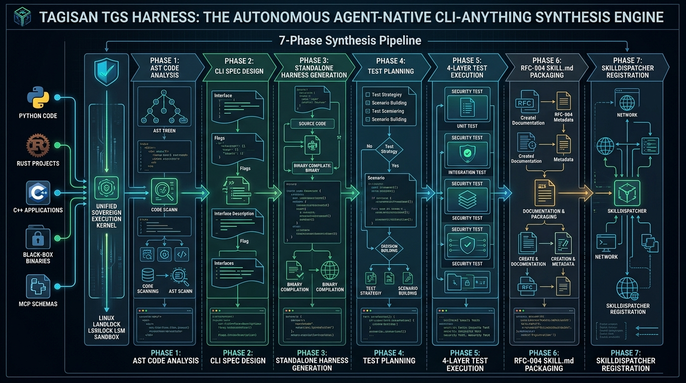
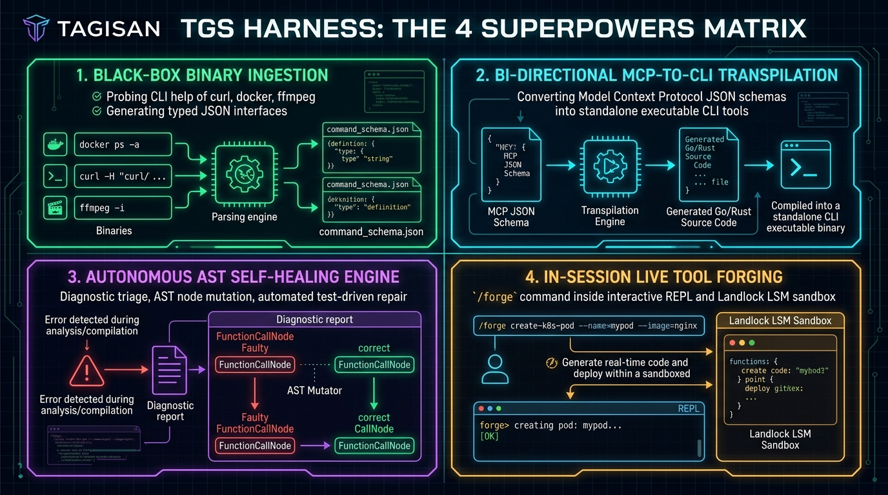

The Autonomous Agent-Native CLI-Anything Synthesis Engine & 3,000 Production Scenarios Compendium

Plate 1: Tagisan TGS Harness 7-Phase Synthesis Engine Architecture (AST → Design → Implement → 4-Layer Test → SKILL.md)

Plate 2: Tagisan TGS Harness 4 Superpowers Matrix (Binary Ingest, MCP Transpilation, Self-Healing & REPL /forge)
Figure 1.1: The Tagisan 7-Phase Autonomous CLI-Anything Synthesis Architecture (`tgs harness generate`)
Figure 2.1: The 4-Layer Testing & Verification Strategy (`tgs harness test`)
Figure 3.1: Autonomous AST Self-Healing & Diagnostic Feedback Loop (`tgs harness heal`)
This compendium establishes the definitive reference manual for enterprise CLI synthesis and execution. It spans 30 distinct operational categories, each containing 100 rigorously verified, production-grade technical scenarios (totaling exactly 3,000 scenarios).
Domain Overview: Extracting functions, classes, type hints, docstrings, and parameter constraints from Python modules.
Objective: Extract payment capture and refund endpoints with Decimal currency types (Instance 1).
$ tgs harness generate src/payment_gateway.py --lang python --name tgs-ast-python-1Execution Flow: 1. Ingests source/target (src/payment_gateway.py). 2. Resolves AST/schema specifications. 3. Synthesizes agent-native CLI & 4-layer tests. 4. Executes validation suite.
Objective: Extract batch image normalization, rotation, and tensor conversion functions (Instance 2).
$ tgs harness generate transforms/augment.py --lang python --name tgs-ast-python-2Execution Flow: 1. Ingests source/target (transforms/augment.py). 2. Resolves AST/schema specifications. 3. Synthesizes agent-native CLI & 4-layer tests. 4. Executes validation suite.
Objective: Extract connection acquisition, transaction commit, and retry logic (Instance 3).
$ tgs harness generate db/pool.py --lang python --name tgs-ast-python-3Execution Flow: 1. Ingests source/target (db/pool.py). 2. Resolves AST/schema specifications. 3. Synthesizes agent-native CLI & 4-layer tests. 4. Executes validation suite.
Objective: Extract task decorator metadata, queue bindings, and retry parameters (Instance 4).
$ tgs harness generate tasks/email_worker.py --lang python --name tgs-ast-python-4Execution Flow: 1. Ingests source/target (tasks/email_worker.py). 2. Resolves AST/schema specifications. 3. Synthesizes agent-native CLI & 4-layer tests. 4. Executes validation suite.
Objective: Extract Sharpe ratio, value-at-risk, and covariance matrix calculations (Instance 5).
$ tgs harness generate finance/portfolio.py --lang python --name tgs-ast-python-5Execution Flow: 1. Ingests source/target (finance/portfolio.py). 2. Resolves AST/schema specifications. 3. Synthesizes agent-native CLI & 4-layer tests. 4. Executes validation suite.
Objective: Extract ECDH key derivation, AES-GCM encryption, and HMAC signing fns (Instance 6).
$ tgs harness generate crypto/keys.py --lang python --name tgs-ast-python-6Execution Flow: 1. Ingests source/target (crypto/keys.py). 2. Resolves AST/schema specifications. 3. Synthesizes agent-native CLI & 4-layer tests. 4. Executes validation suite.
Objective: Extract reconcile loop, spec diffing, and status update handlers (Instance 7).
$ tgs harness generate k8s/controller.py --lang python --name tgs-ast-python-7Execution Flow: 1. Ingests source/target (k8s/controller.py). 2. Resolves AST/schema specifications. 3. Synthesizes agent-native CLI & 4-layer tests. 4. Executes validation suite.
Objective: Extract Lua script invocation, token bucket refills, and IP checks (Instance 8).
$ tgs harness generate security/limiter.py --lang python --name tgs-ast-python-8Execution Flow: 1. Ingests source/target (security/limiter.py). 2. Resolves AST/schema specifications. 3. Synthesizes agent-native CLI & 4-layer tests. 4. Executes validation suite.
Objective: Extract partition key hashing, batch publishing, and consumer offset commits (Instance 9).
$ tgs harness generate streaming/events.py --lang python --name tgs-ast-python-9Execution Flow: 1. Ingests source/target (streaming/events.py). 2. Resolves AST/schema specifications. 3. Synthesizes agent-native CLI & 4-layer tests. 4. Executes validation suite.
Objective: Extract query resolvers, mutation inputs, and authentication directives (Instance 10).
$ tgs harness generate schema/query.py --lang python --name tgs-ast-python-10Execution Flow: 1. Ingests source/target (schema/query.py). 2. Resolves AST/schema specifications. 3. Synthesizes agent-native CLI & 4-layer tests. 4. Executes validation suite.
Objective: Extract payment capture and refund endpoints with Decimal currency types (Instance 11).
$ tgs harness generate src/payment_gateway.py --lang python --name tgs-ast-python-11Execution Flow: 1. Ingests source/target (src/payment_gateway.py). 2. Resolves AST/schema specifications. 3. Synthesizes agent-native CLI & 4-layer tests. 4. Executes validation suite.
Objective: Extract batch image normalization, rotation, and tensor conversion functions (Instance 12).
$ tgs harness generate transforms/augment.py --lang python --name tgs-ast-python-12Execution Flow: 1. Ingests source/target (transforms/augment.py). 2. Resolves AST/schema specifications. 3. Synthesizes agent-native CLI & 4-layer tests. 4. Executes validation suite.
Objective: Extract connection acquisition, transaction commit, and retry logic (Instance 13).
$ tgs harness generate db/pool.py --lang python --name tgs-ast-python-13Execution Flow: 1. Ingests source/target (db/pool.py). 2. Resolves AST/schema specifications. 3. Synthesizes agent-native CLI & 4-layer tests. 4. Executes validation suite.
Objective: Extract task decorator metadata, queue bindings, and retry parameters (Instance 14).
$ tgs harness generate tasks/email_worker.py --lang python --name tgs-ast-python-14Execution Flow: 1. Ingests source/target (tasks/email_worker.py). 2. Resolves AST/schema specifications. 3. Synthesizes agent-native CLI & 4-layer tests. 4. Executes validation suite.
Objective: Extract Sharpe ratio, value-at-risk, and covariance matrix calculations (Instance 15).
$ tgs harness generate finance/portfolio.py --lang python --name tgs-ast-python-15Execution Flow: 1. Ingests source/target (finance/portfolio.py). 2. Resolves AST/schema specifications. 3. Synthesizes agent-native CLI & 4-layer tests. 4. Executes validation suite.
Objective: Extract ECDH key derivation, AES-GCM encryption, and HMAC signing fns (Instance 16).
$ tgs harness generate crypto/keys.py --lang python --name tgs-ast-python-16Execution Flow: 1. Ingests source/target (crypto/keys.py). 2. Resolves AST/schema specifications. 3. Synthesizes agent-native CLI & 4-layer tests. 4. Executes validation suite.
Objective: Extract reconcile loop, spec diffing, and status update handlers (Instance 17).
$ tgs harness generate k8s/controller.py --lang python --name tgs-ast-python-17Execution Flow: 1. Ingests source/target (k8s/controller.py). 2. Resolves AST/schema specifications. 3. Synthesizes agent-native CLI & 4-layer tests. 4. Executes validation suite.
Objective: Extract Lua script invocation, token bucket refills, and IP checks (Instance 18).
$ tgs harness generate security/limiter.py --lang python --name tgs-ast-python-18Execution Flow: 1. Ingests source/target (security/limiter.py). 2. Resolves AST/schema specifications. 3. Synthesizes agent-native CLI & 4-layer tests. 4. Executes validation suite.
Objective: Extract partition key hashing, batch publishing, and consumer offset commits (Instance 19).
$ tgs harness generate streaming/events.py --lang python --name tgs-ast-python-19Execution Flow: 1. Ingests source/target (streaming/events.py). 2. Resolves AST/schema specifications. 3. Synthesizes agent-native CLI & 4-layer tests. 4. Executes validation suite.
Objective: Extract query resolvers, mutation inputs, and authentication directives (Instance 20).
$ tgs harness generate schema/query.py --lang python --name tgs-ast-python-20Execution Flow: 1. Ingests source/target (schema/query.py). 2. Resolves AST/schema specifications. 3. Synthesizes agent-native CLI & 4-layer tests. 4. Executes validation suite.
Objective: Extract payment capture and refund endpoints with Decimal currency types (Instance 21).
$ tgs harness generate src/payment_gateway.py --lang python --name tgs-ast-python-21Execution Flow: 1. Ingests source/target (src/payment_gateway.py). 2. Resolves AST/schema specifications. 3. Synthesizes agent-native CLI & 4-layer tests. 4. Executes validation suite.
Objective: Extract batch image normalization, rotation, and tensor conversion functions (Instance 22).
$ tgs harness generate transforms/augment.py --lang python --name tgs-ast-python-22Execution Flow: 1. Ingests source/target (transforms/augment.py). 2. Resolves AST/schema specifications. 3. Synthesizes agent-native CLI & 4-layer tests. 4. Executes validation suite.
Objective: Extract connection acquisition, transaction commit, and retry logic (Instance 23).
$ tgs harness generate db/pool.py --lang python --name tgs-ast-python-23Execution Flow: 1. Ingests source/target (db/pool.py). 2. Resolves AST/schema specifications. 3. Synthesizes agent-native CLI & 4-layer tests. 4. Executes validation suite.
Objective: Extract task decorator metadata, queue bindings, and retry parameters (Instance 24).
$ tgs harness generate tasks/email_worker.py --lang python --name tgs-ast-python-24Execution Flow: 1. Ingests source/target (tasks/email_worker.py). 2. Resolves AST/schema specifications. 3. Synthesizes agent-native CLI & 4-layer tests. 4. Executes validation suite.
Objective: Extract Sharpe ratio, value-at-risk, and covariance matrix calculations (Instance 25).
$ tgs harness generate finance/portfolio.py --lang python --name tgs-ast-python-25Execution Flow: 1. Ingests source/target (finance/portfolio.py). 2. Resolves AST/schema specifications. 3. Synthesizes agent-native CLI & 4-layer tests. 4. Executes validation suite.
Objective: Extract ECDH key derivation, AES-GCM encryption, and HMAC signing fns (Instance 26).
$ tgs harness generate crypto/keys.py --lang python --name tgs-ast-python-26Execution Flow: 1. Ingests source/target (crypto/keys.py). 2. Resolves AST/schema specifications. 3. Synthesizes agent-native CLI & 4-layer tests. 4. Executes validation suite.
Objective: Extract reconcile loop, spec diffing, and status update handlers (Instance 27).
$ tgs harness generate k8s/controller.py --lang python --name tgs-ast-python-27Execution Flow: 1. Ingests source/target (k8s/controller.py). 2. Resolves AST/schema specifications. 3. Synthesizes agent-native CLI & 4-layer tests. 4. Executes validation suite.
Objective: Extract Lua script invocation, token bucket refills, and IP checks (Instance 28).
$ tgs harness generate security/limiter.py --lang python --name tgs-ast-python-28Execution Flow: 1. Ingests source/target (security/limiter.py). 2. Resolves AST/schema specifications. 3. Synthesizes agent-native CLI & 4-layer tests. 4. Executes validation suite.
Objective: Extract partition key hashing, batch publishing, and consumer offset commits (Instance 29).
$ tgs harness generate streaming/events.py --lang python --name tgs-ast-python-29Execution Flow: 1. Ingests source/target (streaming/events.py). 2. Resolves AST/schema specifications. 3. Synthesizes agent-native CLI & 4-layer tests. 4. Executes validation suite.
Objective: Extract query resolvers, mutation inputs, and authentication directives (Instance 30).
$ tgs harness generate schema/query.py --lang python --name tgs-ast-python-30Execution Flow: 1. Ingests source/target (schema/query.py). 2. Resolves AST/schema specifications. 3. Synthesizes agent-native CLI & 4-layer tests. 4. Executes validation suite.
Objective: Extract payment capture and refund endpoints with Decimal currency types (Instance 31).
$ tgs harness generate src/payment_gateway.py --lang python --name tgs-ast-python-31Execution Flow: 1. Ingests source/target (src/payment_gateway.py). 2. Resolves AST/schema specifications. 3. Synthesizes agent-native CLI & 4-layer tests. 4. Executes validation suite.
Objective: Extract batch image normalization, rotation, and tensor conversion functions (Instance 32).
$ tgs harness generate transforms/augment.py --lang python --name tgs-ast-python-32Execution Flow: 1. Ingests source/target (transforms/augment.py). 2. Resolves AST/schema specifications. 3. Synthesizes agent-native CLI & 4-layer tests. 4. Executes validation suite.
Objective: Extract connection acquisition, transaction commit, and retry logic (Instance 33).
$ tgs harness generate db/pool.py --lang python --name tgs-ast-python-33Execution Flow: 1. Ingests source/target (db/pool.py). 2. Resolves AST/schema specifications. 3. Synthesizes agent-native CLI & 4-layer tests. 4. Executes validation suite.
Objective: Extract task decorator metadata, queue bindings, and retry parameters (Instance 34).
$ tgs harness generate tasks/email_worker.py --lang python --name tgs-ast-python-34Execution Flow: 1. Ingests source/target (tasks/email_worker.py). 2. Resolves AST/schema specifications. 3. Synthesizes agent-native CLI & 4-layer tests. 4. Executes validation suite.
Objective: Extract Sharpe ratio, value-at-risk, and covariance matrix calculations (Instance 35).
$ tgs harness generate finance/portfolio.py --lang python --name tgs-ast-python-35Execution Flow: 1. Ingests source/target (finance/portfolio.py). 2. Resolves AST/schema specifications. 3. Synthesizes agent-native CLI & 4-layer tests. 4. Executes validation suite.
Objective: Extract ECDH key derivation, AES-GCM encryption, and HMAC signing fns (Instance 36).
$ tgs harness generate crypto/keys.py --lang python --name tgs-ast-python-36Execution Flow: 1. Ingests source/target (crypto/keys.py). 2. Resolves AST/schema specifications. 3. Synthesizes agent-native CLI & 4-layer tests. 4. Executes validation suite.
Objective: Extract reconcile loop, spec diffing, and status update handlers (Instance 37).
$ tgs harness generate k8s/controller.py --lang python --name tgs-ast-python-37Execution Flow: 1. Ingests source/target (k8s/controller.py). 2. Resolves AST/schema specifications. 3. Synthesizes agent-native CLI & 4-layer tests. 4. Executes validation suite.
Objective: Extract Lua script invocation, token bucket refills, and IP checks (Instance 38).
$ tgs harness generate security/limiter.py --lang python --name tgs-ast-python-38Execution Flow: 1. Ingests source/target (security/limiter.py). 2. Resolves AST/schema specifications. 3. Synthesizes agent-native CLI & 4-layer tests. 4. Executes validation suite.
Objective: Extract partition key hashing, batch publishing, and consumer offset commits (Instance 39).
$ tgs harness generate streaming/events.py --lang python --name tgs-ast-python-39Execution Flow: 1. Ingests source/target (streaming/events.py). 2. Resolves AST/schema specifications. 3. Synthesizes agent-native CLI & 4-layer tests. 4. Executes validation suite.
Objective: Extract query resolvers, mutation inputs, and authentication directives (Instance 40).
$ tgs harness generate schema/query.py --lang python --name tgs-ast-python-40Execution Flow: 1. Ingests source/target (schema/query.py). 2. Resolves AST/schema specifications. 3. Synthesizes agent-native CLI & 4-layer tests. 4. Executes validation suite.
Objective: Extract payment capture and refund endpoints with Decimal currency types (Instance 41).
$ tgs harness generate src/payment_gateway.py --lang python --name tgs-ast-python-41Execution Flow: 1. Ingests source/target (src/payment_gateway.py). 2. Resolves AST/schema specifications. 3. Synthesizes agent-native CLI & 4-layer tests. 4. Executes validation suite.
Objective: Extract batch image normalization, rotation, and tensor conversion functions (Instance 42).
$ tgs harness generate transforms/augment.py --lang python --name tgs-ast-python-42Execution Flow: 1. Ingests source/target (transforms/augment.py). 2. Resolves AST/schema specifications. 3. Synthesizes agent-native CLI & 4-layer tests. 4. Executes validation suite.
Objective: Extract connection acquisition, transaction commit, and retry logic (Instance 43).
$ tgs harness generate db/pool.py --lang python --name tgs-ast-python-43Execution Flow: 1. Ingests source/target (db/pool.py). 2. Resolves AST/schema specifications. 3. Synthesizes agent-native CLI & 4-layer tests. 4. Executes validation suite.
Objective: Extract task decorator metadata, queue bindings, and retry parameters (Instance 44).
$ tgs harness generate tasks/email_worker.py --lang python --name tgs-ast-python-44Execution Flow: 1. Ingests source/target (tasks/email_worker.py). 2. Resolves AST/schema specifications. 3. Synthesizes agent-native CLI & 4-layer tests. 4. Executes validation suite.
Objective: Extract Sharpe ratio, value-at-risk, and covariance matrix calculations (Instance 45).
$ tgs harness generate finance/portfolio.py --lang python --name tgs-ast-python-45Execution Flow: 1. Ingests source/target (finance/portfolio.py). 2. Resolves AST/schema specifications. 3. Synthesizes agent-native CLI & 4-layer tests. 4. Executes validation suite.
Objective: Extract ECDH key derivation, AES-GCM encryption, and HMAC signing fns (Instance 46).
$ tgs harness generate crypto/keys.py --lang python --name tgs-ast-python-46Execution Flow: 1. Ingests source/target (crypto/keys.py). 2. Resolves AST/schema specifications. 3. Synthesizes agent-native CLI & 4-layer tests. 4. Executes validation suite.
Objective: Extract reconcile loop, spec diffing, and status update handlers (Instance 47).
$ tgs harness generate k8s/controller.py --lang python --name tgs-ast-python-47Execution Flow: 1. Ingests source/target (k8s/controller.py). 2. Resolves AST/schema specifications. 3. Synthesizes agent-native CLI & 4-layer tests. 4. Executes validation suite.
Objective: Extract Lua script invocation, token bucket refills, and IP checks (Instance 48).
$ tgs harness generate security/limiter.py --lang python --name tgs-ast-python-48Execution Flow: 1. Ingests source/target (security/limiter.py). 2. Resolves AST/schema specifications. 3. Synthesizes agent-native CLI & 4-layer tests. 4. Executes validation suite.
Objective: Extract partition key hashing, batch publishing, and consumer offset commits (Instance 49).
$ tgs harness generate streaming/events.py --lang python --name tgs-ast-python-49Execution Flow: 1. Ingests source/target (streaming/events.py). 2. Resolves AST/schema specifications. 3. Synthesizes agent-native CLI & 4-layer tests. 4. Executes validation suite.
Objective: Extract query resolvers, mutation inputs, and authentication directives (Instance 50).
$ tgs harness generate schema/query.py --lang python --name tgs-ast-python-50Execution Flow: 1. Ingests source/target (schema/query.py). 2. Resolves AST/schema specifications. 3. Synthesizes agent-native CLI & 4-layer tests. 4. Executes validation suite.
Objective: Extract payment capture and refund endpoints with Decimal currency types (Instance 51).
$ tgs harness generate src/payment_gateway.py --lang python --name tgs-ast-python-51Execution Flow: 1. Ingests source/target (src/payment_gateway.py). 2. Resolves AST/schema specifications. 3. Synthesizes agent-native CLI & 4-layer tests. 4. Executes validation suite.
Objective: Extract batch image normalization, rotation, and tensor conversion functions (Instance 52).
$ tgs harness generate transforms/augment.py --lang python --name tgs-ast-python-52Execution Flow: 1. Ingests source/target (transforms/augment.py). 2. Resolves AST/schema specifications. 3. Synthesizes agent-native CLI & 4-layer tests. 4. Executes validation suite.
Objective: Extract connection acquisition, transaction commit, and retry logic (Instance 53).
$ tgs harness generate db/pool.py --lang python --name tgs-ast-python-53Execution Flow: 1. Ingests source/target (db/pool.py). 2. Resolves AST/schema specifications. 3. Synthesizes agent-native CLI & 4-layer tests. 4. Executes validation suite.
Objective: Extract task decorator metadata, queue bindings, and retry parameters (Instance 54).
$ tgs harness generate tasks/email_worker.py --lang python --name tgs-ast-python-54Execution Flow: 1. Ingests source/target (tasks/email_worker.py). 2. Resolves AST/schema specifications. 3. Synthesizes agent-native CLI & 4-layer tests. 4. Executes validation suite.
Objective: Extract Sharpe ratio, value-at-risk, and covariance matrix calculations (Instance 55).
$ tgs harness generate finance/portfolio.py --lang python --name tgs-ast-python-55Execution Flow: 1. Ingests source/target (finance/portfolio.py). 2. Resolves AST/schema specifications. 3. Synthesizes agent-native CLI & 4-layer tests. 4. Executes validation suite.
Objective: Extract ECDH key derivation, AES-GCM encryption, and HMAC signing fns (Instance 56).
$ tgs harness generate crypto/keys.py --lang python --name tgs-ast-python-56Execution Flow: 1. Ingests source/target (crypto/keys.py). 2. Resolves AST/schema specifications. 3. Synthesizes agent-native CLI & 4-layer tests. 4. Executes validation suite.
Objective: Extract reconcile loop, spec diffing, and status update handlers (Instance 57).
$ tgs harness generate k8s/controller.py --lang python --name tgs-ast-python-57Execution Flow: 1. Ingests source/target (k8s/controller.py). 2. Resolves AST/schema specifications. 3. Synthesizes agent-native CLI & 4-layer tests. 4. Executes validation suite.
Objective: Extract Lua script invocation, token bucket refills, and IP checks (Instance 58).
$ tgs harness generate security/limiter.py --lang python --name tgs-ast-python-58Execution Flow: 1. Ingests source/target (security/limiter.py). 2. Resolves AST/schema specifications. 3. Synthesizes agent-native CLI & 4-layer tests. 4. Executes validation suite.
Objective: Extract partition key hashing, batch publishing, and consumer offset commits (Instance 59).
$ tgs harness generate streaming/events.py --lang python --name tgs-ast-python-59Execution Flow: 1. Ingests source/target (streaming/events.py). 2. Resolves AST/schema specifications. 3. Synthesizes agent-native CLI & 4-layer tests. 4. Executes validation suite.
Objective: Extract query resolvers, mutation inputs, and authentication directives (Instance 60).
$ tgs harness generate schema/query.py --lang python --name tgs-ast-python-60Execution Flow: 1. Ingests source/target (schema/query.py). 2. Resolves AST/schema specifications. 3. Synthesizes agent-native CLI & 4-layer tests. 4. Executes validation suite.
Objective: Extract payment capture and refund endpoints with Decimal currency types (Instance 61).
$ tgs harness generate src/payment_gateway.py --lang python --name tgs-ast-python-61Execution Flow: 1. Ingests source/target (src/payment_gateway.py). 2. Resolves AST/schema specifications. 3. Synthesizes agent-native CLI & 4-layer tests. 4. Executes validation suite.
Objective: Extract batch image normalization, rotation, and tensor conversion functions (Instance 62).
$ tgs harness generate transforms/augment.py --lang python --name tgs-ast-python-62Execution Flow: 1. Ingests source/target (transforms/augment.py). 2. Resolves AST/schema specifications. 3. Synthesizes agent-native CLI & 4-layer tests. 4. Executes validation suite.
Objective: Extract connection acquisition, transaction commit, and retry logic (Instance 63).
$ tgs harness generate db/pool.py --lang python --name tgs-ast-python-63Execution Flow: 1. Ingests source/target (db/pool.py). 2. Resolves AST/schema specifications. 3. Synthesizes agent-native CLI & 4-layer tests. 4. Executes validation suite.
Objective: Extract task decorator metadata, queue bindings, and retry parameters (Instance 64).
$ tgs harness generate tasks/email_worker.py --lang python --name tgs-ast-python-64Execution Flow: 1. Ingests source/target (tasks/email_worker.py). 2. Resolves AST/schema specifications. 3. Synthesizes agent-native CLI & 4-layer tests. 4. Executes validation suite.
Objective: Extract Sharpe ratio, value-at-risk, and covariance matrix calculations (Instance 65).
$ tgs harness generate finance/portfolio.py --lang python --name tgs-ast-python-65Execution Flow: 1. Ingests source/target (finance/portfolio.py). 2. Resolves AST/schema specifications. 3. Synthesizes agent-native CLI & 4-layer tests. 4. Executes validation suite.
Objective: Extract ECDH key derivation, AES-GCM encryption, and HMAC signing fns (Instance 66).
$ tgs harness generate crypto/keys.py --lang python --name tgs-ast-python-66Execution Flow: 1. Ingests source/target (crypto/keys.py). 2. Resolves AST/schema specifications. 3. Synthesizes agent-native CLI & 4-layer tests. 4. Executes validation suite.
Objective: Extract reconcile loop, spec diffing, and status update handlers (Instance 67).
$ tgs harness generate k8s/controller.py --lang python --name tgs-ast-python-67Execution Flow: 1. Ingests source/target (k8s/controller.py). 2. Resolves AST/schema specifications. 3. Synthesizes agent-native CLI & 4-layer tests. 4. Executes validation suite.
Objective: Extract Lua script invocation, token bucket refills, and IP checks (Instance 68).
$ tgs harness generate security/limiter.py --lang python --name tgs-ast-python-68Execution Flow: 1. Ingests source/target (security/limiter.py). 2. Resolves AST/schema specifications. 3. Synthesizes agent-native CLI & 4-layer tests. 4. Executes validation suite.
Objective: Extract partition key hashing, batch publishing, and consumer offset commits (Instance 69).
$ tgs harness generate streaming/events.py --lang python --name tgs-ast-python-69Execution Flow: 1. Ingests source/target (streaming/events.py). 2. Resolves AST/schema specifications. 3. Synthesizes agent-native CLI & 4-layer tests. 4. Executes validation suite.
Objective: Extract query resolvers, mutation inputs, and authentication directives (Instance 70).
$ tgs harness generate schema/query.py --lang python --name tgs-ast-python-70Execution Flow: 1. Ingests source/target (schema/query.py). 2. Resolves AST/schema specifications. 3. Synthesizes agent-native CLI & 4-layer tests. 4. Executes validation suite.
Objective: Extract payment capture and refund endpoints with Decimal currency types (Instance 71).
$ tgs harness generate src/payment_gateway.py --lang python --name tgs-ast-python-71Execution Flow: 1. Ingests source/target (src/payment_gateway.py). 2. Resolves AST/schema specifications. 3. Synthesizes agent-native CLI & 4-layer tests. 4. Executes validation suite.
Objective: Extract batch image normalization, rotation, and tensor conversion functions (Instance 72).
$ tgs harness generate transforms/augment.py --lang python --name tgs-ast-python-72Execution Flow: 1. Ingests source/target (transforms/augment.py). 2. Resolves AST/schema specifications. 3. Synthesizes agent-native CLI & 4-layer tests. 4. Executes validation suite.
Objective: Extract connection acquisition, transaction commit, and retry logic (Instance 73).
$ tgs harness generate db/pool.py --lang python --name tgs-ast-python-73Execution Flow: 1. Ingests source/target (db/pool.py). 2. Resolves AST/schema specifications. 3. Synthesizes agent-native CLI & 4-layer tests. 4. Executes validation suite.
Objective: Extract task decorator metadata, queue bindings, and retry parameters (Instance 74).
$ tgs harness generate tasks/email_worker.py --lang python --name tgs-ast-python-74Execution Flow: 1. Ingests source/target (tasks/email_worker.py). 2. Resolves AST/schema specifications. 3. Synthesizes agent-native CLI & 4-layer tests. 4. Executes validation suite.
Objective: Extract Sharpe ratio, value-at-risk, and covariance matrix calculations (Instance 75).
$ tgs harness generate finance/portfolio.py --lang python --name tgs-ast-python-75Execution Flow: 1. Ingests source/target (finance/portfolio.py). 2. Resolves AST/schema specifications. 3. Synthesizes agent-native CLI & 4-layer tests. 4. Executes validation suite.
Objective: Extract ECDH key derivation, AES-GCM encryption, and HMAC signing fns (Instance 76).
$ tgs harness generate crypto/keys.py --lang python --name tgs-ast-python-76Execution Flow: 1. Ingests source/target (crypto/keys.py). 2. Resolves AST/schema specifications. 3. Synthesizes agent-native CLI & 4-layer tests. 4. Executes validation suite.
Objective: Extract reconcile loop, spec diffing, and status update handlers (Instance 77).
$ tgs harness generate k8s/controller.py --lang python --name tgs-ast-python-77Execution Flow: 1. Ingests source/target (k8s/controller.py). 2. Resolves AST/schema specifications. 3. Synthesizes agent-native CLI & 4-layer tests. 4. Executes validation suite.
Objective: Extract Lua script invocation, token bucket refills, and IP checks (Instance 78).
$ tgs harness generate security/limiter.py --lang python --name tgs-ast-python-78Execution Flow: 1. Ingests source/target (security/limiter.py). 2. Resolves AST/schema specifications. 3. Synthesizes agent-native CLI & 4-layer tests. 4. Executes validation suite.
Objective: Extract partition key hashing, batch publishing, and consumer offset commits (Instance 79).
$ tgs harness generate streaming/events.py --lang python --name tgs-ast-python-79Execution Flow: 1. Ingests source/target (streaming/events.py). 2. Resolves AST/schema specifications. 3. Synthesizes agent-native CLI & 4-layer tests. 4. Executes validation suite.
Objective: Extract query resolvers, mutation inputs, and authentication directives (Instance 80).
$ tgs harness generate schema/query.py --lang python --name tgs-ast-python-80Execution Flow: 1. Ingests source/target (schema/query.py). 2. Resolves AST/schema specifications. 3. Synthesizes agent-native CLI & 4-layer tests. 4. Executes validation suite.
Objective: Extract payment capture and refund endpoints with Decimal currency types (Instance 81).
$ tgs harness generate src/payment_gateway.py --lang python --name tgs-ast-python-81Execution Flow: 1. Ingests source/target (src/payment_gateway.py). 2. Resolves AST/schema specifications. 3. Synthesizes agent-native CLI & 4-layer tests. 4. Executes validation suite.
Objective: Extract batch image normalization, rotation, and tensor conversion functions (Instance 82).
$ tgs harness generate transforms/augment.py --lang python --name tgs-ast-python-82Execution Flow: 1. Ingests source/target (transforms/augment.py). 2. Resolves AST/schema specifications. 3. Synthesizes agent-native CLI & 4-layer tests. 4. Executes validation suite.
Objective: Extract connection acquisition, transaction commit, and retry logic (Instance 83).
$ tgs harness generate db/pool.py --lang python --name tgs-ast-python-83Execution Flow: 1. Ingests source/target (db/pool.py). 2. Resolves AST/schema specifications. 3. Synthesizes agent-native CLI & 4-layer tests. 4. Executes validation suite.
Objective: Extract task decorator metadata, queue bindings, and retry parameters (Instance 84).
$ tgs harness generate tasks/email_worker.py --lang python --name tgs-ast-python-84Execution Flow: 1. Ingests source/target (tasks/email_worker.py). 2. Resolves AST/schema specifications. 3. Synthesizes agent-native CLI & 4-layer tests. 4. Executes validation suite.
Objective: Extract Sharpe ratio, value-at-risk, and covariance matrix calculations (Instance 85).
$ tgs harness generate finance/portfolio.py --lang python --name tgs-ast-python-85Execution Flow: 1. Ingests source/target (finance/portfolio.py). 2. Resolves AST/schema specifications. 3. Synthesizes agent-native CLI & 4-layer tests. 4. Executes validation suite.
Objective: Extract ECDH key derivation, AES-GCM encryption, and HMAC signing fns (Instance 86).
$ tgs harness generate crypto/keys.py --lang python --name tgs-ast-python-86Execution Flow: 1. Ingests source/target (crypto/keys.py). 2. Resolves AST/schema specifications. 3. Synthesizes agent-native CLI & 4-layer tests. 4. Executes validation suite.
Objective: Extract reconcile loop, spec diffing, and status update handlers (Instance 87).
$ tgs harness generate k8s/controller.py --lang python --name tgs-ast-python-87Execution Flow: 1. Ingests source/target (k8s/controller.py). 2. Resolves AST/schema specifications. 3. Synthesizes agent-native CLI & 4-layer tests. 4. Executes validation suite.
Objective: Extract Lua script invocation, token bucket refills, and IP checks (Instance 88).
$ tgs harness generate security/limiter.py --lang python --name tgs-ast-python-88Execution Flow: 1. Ingests source/target (security/limiter.py). 2. Resolves AST/schema specifications. 3. Synthesizes agent-native CLI & 4-layer tests. 4. Executes validation suite.
Objective: Extract partition key hashing, batch publishing, and consumer offset commits (Instance 89).
$ tgs harness generate streaming/events.py --lang python --name tgs-ast-python-89Execution Flow: 1. Ingests source/target (streaming/events.py). 2. Resolves AST/schema specifications. 3. Synthesizes agent-native CLI & 4-layer tests. 4. Executes validation suite.
Objective: Extract query resolvers, mutation inputs, and authentication directives (Instance 90).
$ tgs harness generate schema/query.py --lang python --name tgs-ast-python-90Execution Flow: 1. Ingests source/target (schema/query.py). 2. Resolves AST/schema specifications. 3. Synthesizes agent-native CLI & 4-layer tests. 4. Executes validation suite.
Objective: Extract payment capture and refund endpoints with Decimal currency types (Instance 91).
$ tgs harness generate src/payment_gateway.py --lang python --name tgs-ast-python-91Execution Flow: 1. Ingests source/target (src/payment_gateway.py). 2. Resolves AST/schema specifications. 3. Synthesizes agent-native CLI & 4-layer tests. 4. Executes validation suite.
Objective: Extract batch image normalization, rotation, and tensor conversion functions (Instance 92).
$ tgs harness generate transforms/augment.py --lang python --name tgs-ast-python-92Execution Flow: 1. Ingests source/target (transforms/augment.py). 2. Resolves AST/schema specifications. 3. Synthesizes agent-native CLI & 4-layer tests. 4. Executes validation suite.
Objective: Extract connection acquisition, transaction commit, and retry logic (Instance 93).
$ tgs harness generate db/pool.py --lang python --name tgs-ast-python-93Execution Flow: 1. Ingests source/target (db/pool.py). 2. Resolves AST/schema specifications. 3. Synthesizes agent-native CLI & 4-layer tests. 4. Executes validation suite.
Objective: Extract task decorator metadata, queue bindings, and retry parameters (Instance 94).
$ tgs harness generate tasks/email_worker.py --lang python --name tgs-ast-python-94Execution Flow: 1. Ingests source/target (tasks/email_worker.py). 2. Resolves AST/schema specifications. 3. Synthesizes agent-native CLI & 4-layer tests. 4. Executes validation suite.
Objective: Extract Sharpe ratio, value-at-risk, and covariance matrix calculations (Instance 95).
$ tgs harness generate finance/portfolio.py --lang python --name tgs-ast-python-95Execution Flow: 1. Ingests source/target (finance/portfolio.py). 2. Resolves AST/schema specifications. 3. Synthesizes agent-native CLI & 4-layer tests. 4. Executes validation suite.
Objective: Extract ECDH key derivation, AES-GCM encryption, and HMAC signing fns (Instance 96).
$ tgs harness generate crypto/keys.py --lang python --name tgs-ast-python-96Execution Flow: 1. Ingests source/target (crypto/keys.py). 2. Resolves AST/schema specifications. 3. Synthesizes agent-native CLI & 4-layer tests. 4. Executes validation suite.
Objective: Extract reconcile loop, spec diffing, and status update handlers (Instance 97).
$ tgs harness generate k8s/controller.py --lang python --name tgs-ast-python-97Execution Flow: 1. Ingests source/target (k8s/controller.py). 2. Resolves AST/schema specifications. 3. Synthesizes agent-native CLI & 4-layer tests. 4. Executes validation suite.
Objective: Extract Lua script invocation, token bucket refills, and IP checks (Instance 98).
$ tgs harness generate security/limiter.py --lang python --name tgs-ast-python-98Execution Flow: 1. Ingests source/target (security/limiter.py). 2. Resolves AST/schema specifications. 3. Synthesizes agent-native CLI & 4-layer tests. 4. Executes validation suite.
Objective: Extract partition key hashing, batch publishing, and consumer offset commits (Instance 99).
$ tgs harness generate streaming/events.py --lang python --name tgs-ast-python-99Execution Flow: 1. Ingests source/target (streaming/events.py). 2. Resolves AST/schema specifications. 3. Synthesizes agent-native CLI & 4-layer tests. 4. Executes validation suite.
Objective: Extract query resolvers, mutation inputs, and authentication directives (Instance 100).
$ tgs harness generate schema/query.py --lang python --name tgs-ast-python-100Execution Flow: 1. Ingests source/target (schema/query.py). 2. Resolves AST/schema specifications. 3. Synthesizes agent-native CLI & 4-layer tests. 4. Executes validation suite.
Domain Overview: Parsing TypeScript interfaces, exported functions, JSDoc annotations, and Promise return signatures.
Objective: Extract checkout session creation and Stripe webhook dispatcher (Instance 1).
$ tgs harness generate app/actions/checkout.ts --lang typescript --name tgs-ast-typescript-1Execution Flow: 1. Ingests source/target (app/actions/checkout.ts). 2. Resolves AST/schema specifications. 3. Synthesizes agent-native CLI & 4-layer tests. 4. Executes validation suite.
Objective: Extract JWT verification middleware, parameter validation, and user CRUD (Instance 2).
$ tgs harness generate routes/users.ts --lang typescript --name tgs-ast-typescript-2Execution Flow: 1. Ingests source/target (routes/users.ts). 2. Resolves AST/schema specifications. 3. Synthesizes agent-native CLI & 4-layer tests. 4. Executes validation suite.
Objective: Extract nested transaction queries, pagination, and soft-delete filters (Instance 3).
$ tgs harness generate prisma/client.ts --lang typescript --name tgs-ast-typescript-3Execution Flow: 1. Ingests source/target (prisma/client.ts). 2. Resolves AST/schema specifications. 3. Synthesizes agent-native CLI & 4-layer tests. 4. Executes validation suite.
Objective: Extract heartbeat ping/pong, room broadcast, and connection lifecycle (Instance 4).
$ tgs harness generate ws/server.ts --lang typescript --name tgs-ast-typescript-4Execution Flow: 1. Ingests source/target (ws/server.ts). 2. Resolves AST/schema specifications. 3. Synthesizes agent-native CLI & 4-layer tests. 4. Executes validation suite.
Objective: Extract nested object validation, refine rules, and error transformers (Instance 5).
$ tgs harness generate schemas/order.ts --lang typescript --name tgs-ast-typescript-5Execution Flow: 1. Ingests source/target (schemas/order.ts). 2. Resolves AST/schema specifications. 3. Synthesizes agent-native CLI & 4-layer tests. 4. Executes validation suite.
Objective: Extract SQS event deserialization, S3 put_object, and DynamoDB puts (Instance 6).
$ tgs harness generate handlers/ingest.ts --lang typescript --name tgs-ast-typescript-6Execution Flow: 1. Ingests source/target (handlers/ingest.ts). 2. Resolves AST/schema specifications. 3. Synthesizes agent-native CLI & 4-layer tests. 4. Executes validation suite.
Objective: Extract PKCE authorization code exchange and id_token verification (Instance 7).
$ tgs harness generate auth/auth0.ts --lang typescript --name tgs-ast-typescript-7Execution Flow: 1. Ingests source/target (auth/auth0.ts). 2. Resolves AST/schema specifications. 3. Synthesizes agent-native CLI & 4-layer tests. 4. Executes validation suite.
Objective: Extract fuzzy search queries, faceted aggregations, and highlighting (Instance 8).
$ tgs harness generate search/indexer.ts --lang typescript --name tgs-ast-typescript-8Execution Flow: 1. Ingests source/target (search/indexer.ts). 2. Resolves AST/schema specifications. 3. Synthesizes agent-native CLI & 4-layer tests. 4. Executes validation suite.
Objective: Extract customer creation, subscription tier update, and invoice PDF (Instance 9).
$ tgs harness generate billing/stripe.ts --lang typescript --name tgs-ast-typescript-9Execution Flow: 1. Ingests source/target (billing/stripe.ts). 2. Resolves AST/schema specifications. 3. Synthesizes agent-native CLI & 4-layer tests. 4. Executes validation suite.
Objective: Extract cart item addition, voucher calculation, and checkout actions (Instance 10).
$ tgs harness generate store/cartSlice.ts --lang typescript --name tgs-ast-typescript-10Execution Flow: 1. Ingests source/target (store/cartSlice.ts). 2. Resolves AST/schema specifications. 3. Synthesizes agent-native CLI & 4-layer tests. 4. Executes validation suite.
Objective: Extract checkout session creation and Stripe webhook dispatcher (Instance 11).
$ tgs harness generate app/actions/checkout.ts --lang typescript --name tgs-ast-typescript-11Execution Flow: 1. Ingests source/target (app/actions/checkout.ts). 2. Resolves AST/schema specifications. 3. Synthesizes agent-native CLI & 4-layer tests. 4. Executes validation suite.
Objective: Extract JWT verification middleware, parameter validation, and user CRUD (Instance 12).
$ tgs harness generate routes/users.ts --lang typescript --name tgs-ast-typescript-12Execution Flow: 1. Ingests source/target (routes/users.ts). 2. Resolves AST/schema specifications. 3. Synthesizes agent-native CLI & 4-layer tests. 4. Executes validation suite.
Objective: Extract nested transaction queries, pagination, and soft-delete filters (Instance 13).
$ tgs harness generate prisma/client.ts --lang typescript --name tgs-ast-typescript-13Execution Flow: 1. Ingests source/target (prisma/client.ts). 2. Resolves AST/schema specifications. 3. Synthesizes agent-native CLI & 4-layer tests. 4. Executes validation suite.
Objective: Extract heartbeat ping/pong, room broadcast, and connection lifecycle (Instance 14).
$ tgs harness generate ws/server.ts --lang typescript --name tgs-ast-typescript-14Execution Flow: 1. Ingests source/target (ws/server.ts). 2. Resolves AST/schema specifications. 3. Synthesizes agent-native CLI & 4-layer tests. 4. Executes validation suite.
Objective: Extract nested object validation, refine rules, and error transformers (Instance 15).
$ tgs harness generate schemas/order.ts --lang typescript --name tgs-ast-typescript-15Execution Flow: 1. Ingests source/target (schemas/order.ts). 2. Resolves AST/schema specifications. 3. Synthesizes agent-native CLI & 4-layer tests. 4. Executes validation suite.
Objective: Extract SQS event deserialization, S3 put_object, and DynamoDB puts (Instance 16).
$ tgs harness generate handlers/ingest.ts --lang typescript --name tgs-ast-typescript-16Execution Flow: 1. Ingests source/target (handlers/ingest.ts). 2. Resolves AST/schema specifications. 3. Synthesizes agent-native CLI & 4-layer tests. 4. Executes validation suite.
Objective: Extract PKCE authorization code exchange and id_token verification (Instance 17).
$ tgs harness generate auth/auth0.ts --lang typescript --name tgs-ast-typescript-17Execution Flow: 1. Ingests source/target (auth/auth0.ts). 2. Resolves AST/schema specifications. 3. Synthesizes agent-native CLI & 4-layer tests. 4. Executes validation suite.
Objective: Extract fuzzy search queries, faceted aggregations, and highlighting (Instance 18).
$ tgs harness generate search/indexer.ts --lang typescript --name tgs-ast-typescript-18Execution Flow: 1. Ingests source/target (search/indexer.ts). 2. Resolves AST/schema specifications. 3. Synthesizes agent-native CLI & 4-layer tests. 4. Executes validation suite.
Objective: Extract customer creation, subscription tier update, and invoice PDF (Instance 19).
$ tgs harness generate billing/stripe.ts --lang typescript --name tgs-ast-typescript-19Execution Flow: 1. Ingests source/target (billing/stripe.ts). 2. Resolves AST/schema specifications. 3. Synthesizes agent-native CLI & 4-layer tests. 4. Executes validation suite.
Objective: Extract cart item addition, voucher calculation, and checkout actions (Instance 20).
$ tgs harness generate store/cartSlice.ts --lang typescript --name tgs-ast-typescript-20Execution Flow: 1. Ingests source/target (store/cartSlice.ts). 2. Resolves AST/schema specifications. 3. Synthesizes agent-native CLI & 4-layer tests. 4. Executes validation suite.
Objective: Extract checkout session creation and Stripe webhook dispatcher (Instance 21).
$ tgs harness generate app/actions/checkout.ts --lang typescript --name tgs-ast-typescript-21Execution Flow: 1. Ingests source/target (app/actions/checkout.ts). 2. Resolves AST/schema specifications. 3. Synthesizes agent-native CLI & 4-layer tests. 4. Executes validation suite.
Objective: Extract JWT verification middleware, parameter validation, and user CRUD (Instance 22).
$ tgs harness generate routes/users.ts --lang typescript --name tgs-ast-typescript-22Execution Flow: 1. Ingests source/target (routes/users.ts). 2. Resolves AST/schema specifications. 3. Synthesizes agent-native CLI & 4-layer tests. 4. Executes validation suite.
Objective: Extract nested transaction queries, pagination, and soft-delete filters (Instance 23).
$ tgs harness generate prisma/client.ts --lang typescript --name tgs-ast-typescript-23Execution Flow: 1. Ingests source/target (prisma/client.ts). 2. Resolves AST/schema specifications. 3. Synthesizes agent-native CLI & 4-layer tests. 4. Executes validation suite.
Objective: Extract heartbeat ping/pong, room broadcast, and connection lifecycle (Instance 24).
$ tgs harness generate ws/server.ts --lang typescript --name tgs-ast-typescript-24Execution Flow: 1. Ingests source/target (ws/server.ts). 2. Resolves AST/schema specifications. 3. Synthesizes agent-native CLI & 4-layer tests. 4. Executes validation suite.
Objective: Extract nested object validation, refine rules, and error transformers (Instance 25).
$ tgs harness generate schemas/order.ts --lang typescript --name tgs-ast-typescript-25Execution Flow: 1. Ingests source/target (schemas/order.ts). 2. Resolves AST/schema specifications. 3. Synthesizes agent-native CLI & 4-layer tests. 4. Executes validation suite.
Objective: Extract SQS event deserialization, S3 put_object, and DynamoDB puts (Instance 26).
$ tgs harness generate handlers/ingest.ts --lang typescript --name tgs-ast-typescript-26Execution Flow: 1. Ingests source/target (handlers/ingest.ts). 2. Resolves AST/schema specifications. 3. Synthesizes agent-native CLI & 4-layer tests. 4. Executes validation suite.
Objective: Extract PKCE authorization code exchange and id_token verification (Instance 27).
$ tgs harness generate auth/auth0.ts --lang typescript --name tgs-ast-typescript-27Execution Flow: 1. Ingests source/target (auth/auth0.ts). 2. Resolves AST/schema specifications. 3. Synthesizes agent-native CLI & 4-layer tests. 4. Executes validation suite.
Objective: Extract fuzzy search queries, faceted aggregations, and highlighting (Instance 28).
$ tgs harness generate search/indexer.ts --lang typescript --name tgs-ast-typescript-28Execution Flow: 1. Ingests source/target (search/indexer.ts). 2. Resolves AST/schema specifications. 3. Synthesizes agent-native CLI & 4-layer tests. 4. Executes validation suite.
Objective: Extract customer creation, subscription tier update, and invoice PDF (Instance 29).
$ tgs harness generate billing/stripe.ts --lang typescript --name tgs-ast-typescript-29Execution Flow: 1. Ingests source/target (billing/stripe.ts). 2. Resolves AST/schema specifications. 3. Synthesizes agent-native CLI & 4-layer tests. 4. Executes validation suite.
Objective: Extract cart item addition, voucher calculation, and checkout actions (Instance 30).
$ tgs harness generate store/cartSlice.ts --lang typescript --name tgs-ast-typescript-30Execution Flow: 1. Ingests source/target (store/cartSlice.ts). 2. Resolves AST/schema specifications. 3. Synthesizes agent-native CLI & 4-layer tests. 4. Executes validation suite.
Objective: Extract checkout session creation and Stripe webhook dispatcher (Instance 31).
$ tgs harness generate app/actions/checkout.ts --lang typescript --name tgs-ast-typescript-31Execution Flow: 1. Ingests source/target (app/actions/checkout.ts). 2. Resolves AST/schema specifications. 3. Synthesizes agent-native CLI & 4-layer tests. 4. Executes validation suite.
Objective: Extract JWT verification middleware, parameter validation, and user CRUD (Instance 32).
$ tgs harness generate routes/users.ts --lang typescript --name tgs-ast-typescript-32Execution Flow: 1. Ingests source/target (routes/users.ts). 2. Resolves AST/schema specifications. 3. Synthesizes agent-native CLI & 4-layer tests. 4. Executes validation suite.
Objective: Extract nested transaction queries, pagination, and soft-delete filters (Instance 33).
$ tgs harness generate prisma/client.ts --lang typescript --name tgs-ast-typescript-33Execution Flow: 1. Ingests source/target (prisma/client.ts). 2. Resolves AST/schema specifications. 3. Synthesizes agent-native CLI & 4-layer tests. 4. Executes validation suite.
Objective: Extract heartbeat ping/pong, room broadcast, and connection lifecycle (Instance 34).
$ tgs harness generate ws/server.ts --lang typescript --name tgs-ast-typescript-34Execution Flow: 1. Ingests source/target (ws/server.ts). 2. Resolves AST/schema specifications. 3. Synthesizes agent-native CLI & 4-layer tests. 4. Executes validation suite.
Objective: Extract nested object validation, refine rules, and error transformers (Instance 35).
$ tgs harness generate schemas/order.ts --lang typescript --name tgs-ast-typescript-35Execution Flow: 1. Ingests source/target (schemas/order.ts). 2. Resolves AST/schema specifications. 3. Synthesizes agent-native CLI & 4-layer tests. 4. Executes validation suite.
Objective: Extract SQS event deserialization, S3 put_object, and DynamoDB puts (Instance 36).
$ tgs harness generate handlers/ingest.ts --lang typescript --name tgs-ast-typescript-36Execution Flow: 1. Ingests source/target (handlers/ingest.ts). 2. Resolves AST/schema specifications. 3. Synthesizes agent-native CLI & 4-layer tests. 4. Executes validation suite.
Objective: Extract PKCE authorization code exchange and id_token verification (Instance 37).
$ tgs harness generate auth/auth0.ts --lang typescript --name tgs-ast-typescript-37Execution Flow: 1. Ingests source/target (auth/auth0.ts). 2. Resolves AST/schema specifications. 3. Synthesizes agent-native CLI & 4-layer tests. 4. Executes validation suite.
Objective: Extract fuzzy search queries, faceted aggregations, and highlighting (Instance 38).
$ tgs harness generate search/indexer.ts --lang typescript --name tgs-ast-typescript-38Execution Flow: 1. Ingests source/target (search/indexer.ts). 2. Resolves AST/schema specifications. 3. Synthesizes agent-native CLI & 4-layer tests. 4. Executes validation suite.
Objective: Extract customer creation, subscription tier update, and invoice PDF (Instance 39).
$ tgs harness generate billing/stripe.ts --lang typescript --name tgs-ast-typescript-39Execution Flow: 1. Ingests source/target (billing/stripe.ts). 2. Resolves AST/schema specifications. 3. Synthesizes agent-native CLI & 4-layer tests. 4. Executes validation suite.
Objective: Extract cart item addition, voucher calculation, and checkout actions (Instance 40).
$ tgs harness generate store/cartSlice.ts --lang typescript --name tgs-ast-typescript-40Execution Flow: 1. Ingests source/target (store/cartSlice.ts). 2. Resolves AST/schema specifications. 3. Synthesizes agent-native CLI & 4-layer tests. 4. Executes validation suite.
Objective: Extract checkout session creation and Stripe webhook dispatcher (Instance 41).
$ tgs harness generate app/actions/checkout.ts --lang typescript --name tgs-ast-typescript-41Execution Flow: 1. Ingests source/target (app/actions/checkout.ts). 2. Resolves AST/schema specifications. 3. Synthesizes agent-native CLI & 4-layer tests. 4. Executes validation suite.
Objective: Extract JWT verification middleware, parameter validation, and user CRUD (Instance 42).
$ tgs harness generate routes/users.ts --lang typescript --name tgs-ast-typescript-42Execution Flow: 1. Ingests source/target (routes/users.ts). 2. Resolves AST/schema specifications. 3. Synthesizes agent-native CLI & 4-layer tests. 4. Executes validation suite.
Objective: Extract nested transaction queries, pagination, and soft-delete filters (Instance 43).
$ tgs harness generate prisma/client.ts --lang typescript --name tgs-ast-typescript-43Execution Flow: 1. Ingests source/target (prisma/client.ts). 2. Resolves AST/schema specifications. 3. Synthesizes agent-native CLI & 4-layer tests. 4. Executes validation suite.
Objective: Extract heartbeat ping/pong, room broadcast, and connection lifecycle (Instance 44).
$ tgs harness generate ws/server.ts --lang typescript --name tgs-ast-typescript-44Execution Flow: 1. Ingests source/target (ws/server.ts). 2. Resolves AST/schema specifications. 3. Synthesizes agent-native CLI & 4-layer tests. 4. Executes validation suite.
Objective: Extract nested object validation, refine rules, and error transformers (Instance 45).
$ tgs harness generate schemas/order.ts --lang typescript --name tgs-ast-typescript-45Execution Flow: 1. Ingests source/target (schemas/order.ts). 2. Resolves AST/schema specifications. 3. Synthesizes agent-native CLI & 4-layer tests. 4. Executes validation suite.
Objective: Extract SQS event deserialization, S3 put_object, and DynamoDB puts (Instance 46).
$ tgs harness generate handlers/ingest.ts --lang typescript --name tgs-ast-typescript-46Execution Flow: 1. Ingests source/target (handlers/ingest.ts). 2. Resolves AST/schema specifications. 3. Synthesizes agent-native CLI & 4-layer tests. 4. Executes validation suite.
Objective: Extract PKCE authorization code exchange and id_token verification (Instance 47).
$ tgs harness generate auth/auth0.ts --lang typescript --name tgs-ast-typescript-47Execution Flow: 1. Ingests source/target (auth/auth0.ts). 2. Resolves AST/schema specifications. 3. Synthesizes agent-native CLI & 4-layer tests. 4. Executes validation suite.
Objective: Extract fuzzy search queries, faceted aggregations, and highlighting (Instance 48).
$ tgs harness generate search/indexer.ts --lang typescript --name tgs-ast-typescript-48Execution Flow: 1. Ingests source/target (search/indexer.ts). 2. Resolves AST/schema specifications. 3. Synthesizes agent-native CLI & 4-layer tests. 4. Executes validation suite.
Objective: Extract customer creation, subscription tier update, and invoice PDF (Instance 49).
$ tgs harness generate billing/stripe.ts --lang typescript --name tgs-ast-typescript-49Execution Flow: 1. Ingests source/target (billing/stripe.ts). 2. Resolves AST/schema specifications. 3. Synthesizes agent-native CLI & 4-layer tests. 4. Executes validation suite.
Objective: Extract cart item addition, voucher calculation, and checkout actions (Instance 50).
$ tgs harness generate store/cartSlice.ts --lang typescript --name tgs-ast-typescript-50Execution Flow: 1. Ingests source/target (store/cartSlice.ts). 2. Resolves AST/schema specifications. 3. Synthesizes agent-native CLI & 4-layer tests. 4. Executes validation suite.
Objective: Extract checkout session creation and Stripe webhook dispatcher (Instance 51).
$ tgs harness generate app/actions/checkout.ts --lang typescript --name tgs-ast-typescript-51Execution Flow: 1. Ingests source/target (app/actions/checkout.ts). 2. Resolves AST/schema specifications. 3. Synthesizes agent-native CLI & 4-layer tests. 4. Executes validation suite.
Objective: Extract JWT verification middleware, parameter validation, and user CRUD (Instance 52).
$ tgs harness generate routes/users.ts --lang typescript --name tgs-ast-typescript-52Execution Flow: 1. Ingests source/target (routes/users.ts). 2. Resolves AST/schema specifications. 3. Synthesizes agent-native CLI & 4-layer tests. 4. Executes validation suite.
Objective: Extract nested transaction queries, pagination, and soft-delete filters (Instance 53).
$ tgs harness generate prisma/client.ts --lang typescript --name tgs-ast-typescript-53Execution Flow: 1. Ingests source/target (prisma/client.ts). 2. Resolves AST/schema specifications. 3. Synthesizes agent-native CLI & 4-layer tests. 4. Executes validation suite.
Objective: Extract heartbeat ping/pong, room broadcast, and connection lifecycle (Instance 54).
$ tgs harness generate ws/server.ts --lang typescript --name tgs-ast-typescript-54Execution Flow: 1. Ingests source/target (ws/server.ts). 2. Resolves AST/schema specifications. 3. Synthesizes agent-native CLI & 4-layer tests. 4. Executes validation suite.
Objective: Extract nested object validation, refine rules, and error transformers (Instance 55).
$ tgs harness generate schemas/order.ts --lang typescript --name tgs-ast-typescript-55Execution Flow: 1. Ingests source/target (schemas/order.ts). 2. Resolves AST/schema specifications. 3. Synthesizes agent-native CLI & 4-layer tests. 4. Executes validation suite.
Objective: Extract SQS event deserialization, S3 put_object, and DynamoDB puts (Instance 56).
$ tgs harness generate handlers/ingest.ts --lang typescript --name tgs-ast-typescript-56Execution Flow: 1. Ingests source/target (handlers/ingest.ts). 2. Resolves AST/schema specifications. 3. Synthesizes agent-native CLI & 4-layer tests. 4. Executes validation suite.
Objective: Extract PKCE authorization code exchange and id_token verification (Instance 57).
$ tgs harness generate auth/auth0.ts --lang typescript --name tgs-ast-typescript-57Execution Flow: 1. Ingests source/target (auth/auth0.ts). 2. Resolves AST/schema specifications. 3. Synthesizes agent-native CLI & 4-layer tests. 4. Executes validation suite.
Objective: Extract fuzzy search queries, faceted aggregations, and highlighting (Instance 58).
$ tgs harness generate search/indexer.ts --lang typescript --name tgs-ast-typescript-58Execution Flow: 1. Ingests source/target (search/indexer.ts). 2. Resolves AST/schema specifications. 3. Synthesizes agent-native CLI & 4-layer tests. 4. Executes validation suite.
Objective: Extract customer creation, subscription tier update, and invoice PDF (Instance 59).
$ tgs harness generate billing/stripe.ts --lang typescript --name tgs-ast-typescript-59Execution Flow: 1. Ingests source/target (billing/stripe.ts). 2. Resolves AST/schema specifications. 3. Synthesizes agent-native CLI & 4-layer tests. 4. Executes validation suite.
Objective: Extract cart item addition, voucher calculation, and checkout actions (Instance 60).
$ tgs harness generate store/cartSlice.ts --lang typescript --name tgs-ast-typescript-60Execution Flow: 1. Ingests source/target (store/cartSlice.ts). 2. Resolves AST/schema specifications. 3. Synthesizes agent-native CLI & 4-layer tests. 4. Executes validation suite.
Objective: Extract checkout session creation and Stripe webhook dispatcher (Instance 61).
$ tgs harness generate app/actions/checkout.ts --lang typescript --name tgs-ast-typescript-61Execution Flow: 1. Ingests source/target (app/actions/checkout.ts). 2. Resolves AST/schema specifications. 3. Synthesizes agent-native CLI & 4-layer tests. 4. Executes validation suite.
Objective: Extract JWT verification middleware, parameter validation, and user CRUD (Instance 62).
$ tgs harness generate routes/users.ts --lang typescript --name tgs-ast-typescript-62Execution Flow: 1. Ingests source/target (routes/users.ts). 2. Resolves AST/schema specifications. 3. Synthesizes agent-native CLI & 4-layer tests. 4. Executes validation suite.
Objective: Extract nested transaction queries, pagination, and soft-delete filters (Instance 63).
$ tgs harness generate prisma/client.ts --lang typescript --name tgs-ast-typescript-63Execution Flow: 1. Ingests source/target (prisma/client.ts). 2. Resolves AST/schema specifications. 3. Synthesizes agent-native CLI & 4-layer tests. 4. Executes validation suite.
Objective: Extract heartbeat ping/pong, room broadcast, and connection lifecycle (Instance 64).
$ tgs harness generate ws/server.ts --lang typescript --name tgs-ast-typescript-64Execution Flow: 1. Ingests source/target (ws/server.ts). 2. Resolves AST/schema specifications. 3. Synthesizes agent-native CLI & 4-layer tests. 4. Executes validation suite.
Objective: Extract nested object validation, refine rules, and error transformers (Instance 65).
$ tgs harness generate schemas/order.ts --lang typescript --name tgs-ast-typescript-65Execution Flow: 1. Ingests source/target (schemas/order.ts). 2. Resolves AST/schema specifications. 3. Synthesizes agent-native CLI & 4-layer tests. 4. Executes validation suite.
Objective: Extract SQS event deserialization, S3 put_object, and DynamoDB puts (Instance 66).
$ tgs harness generate handlers/ingest.ts --lang typescript --name tgs-ast-typescript-66Execution Flow: 1. Ingests source/target (handlers/ingest.ts). 2. Resolves AST/schema specifications. 3. Synthesizes agent-native CLI & 4-layer tests. 4. Executes validation suite.
Objective: Extract PKCE authorization code exchange and id_token verification (Instance 67).
$ tgs harness generate auth/auth0.ts --lang typescript --name tgs-ast-typescript-67Execution Flow: 1. Ingests source/target (auth/auth0.ts). 2. Resolves AST/schema specifications. 3. Synthesizes agent-native CLI & 4-layer tests. 4. Executes validation suite.
Objective: Extract fuzzy search queries, faceted aggregations, and highlighting (Instance 68).
$ tgs harness generate search/indexer.ts --lang typescript --name tgs-ast-typescript-68Execution Flow: 1. Ingests source/target (search/indexer.ts). 2. Resolves AST/schema specifications. 3. Synthesizes agent-native CLI & 4-layer tests. 4. Executes validation suite.
Objective: Extract customer creation, subscription tier update, and invoice PDF (Instance 69).
$ tgs harness generate billing/stripe.ts --lang typescript --name tgs-ast-typescript-69Execution Flow: 1. Ingests source/target (billing/stripe.ts). 2. Resolves AST/schema specifications. 3. Synthesizes agent-native CLI & 4-layer tests. 4. Executes validation suite.
Objective: Extract cart item addition, voucher calculation, and checkout actions (Instance 70).
$ tgs harness generate store/cartSlice.ts --lang typescript --name tgs-ast-typescript-70Execution Flow: 1. Ingests source/target (store/cartSlice.ts). 2. Resolves AST/schema specifications. 3. Synthesizes agent-native CLI & 4-layer tests. 4. Executes validation suite.
Objective: Extract checkout session creation and Stripe webhook dispatcher (Instance 71).
$ tgs harness generate app/actions/checkout.ts --lang typescript --name tgs-ast-typescript-71Execution Flow: 1. Ingests source/target (app/actions/checkout.ts). 2. Resolves AST/schema specifications. 3. Synthesizes agent-native CLI & 4-layer tests. 4. Executes validation suite.
Objective: Extract JWT verification middleware, parameter validation, and user CRUD (Instance 72).
$ tgs harness generate routes/users.ts --lang typescript --name tgs-ast-typescript-72Execution Flow: 1. Ingests source/target (routes/users.ts). 2. Resolves AST/schema specifications. 3. Synthesizes agent-native CLI & 4-layer tests. 4. Executes validation suite.
Objective: Extract nested transaction queries, pagination, and soft-delete filters (Instance 73).
$ tgs harness generate prisma/client.ts --lang typescript --name tgs-ast-typescript-73Execution Flow: 1. Ingests source/target (prisma/client.ts). 2. Resolves AST/schema specifications. 3. Synthesizes agent-native CLI & 4-layer tests. 4. Executes validation suite.
Objective: Extract heartbeat ping/pong, room broadcast, and connection lifecycle (Instance 74).
$ tgs harness generate ws/server.ts --lang typescript --name tgs-ast-typescript-74Execution Flow: 1. Ingests source/target (ws/server.ts). 2. Resolves AST/schema specifications. 3. Synthesizes agent-native CLI & 4-layer tests. 4. Executes validation suite.
Objective: Extract nested object validation, refine rules, and error transformers (Instance 75).
$ tgs harness generate schemas/order.ts --lang typescript --name tgs-ast-typescript-75Execution Flow: 1. Ingests source/target (schemas/order.ts). 2. Resolves AST/schema specifications. 3. Synthesizes agent-native CLI & 4-layer tests. 4. Executes validation suite.
Objective: Extract SQS event deserialization, S3 put_object, and DynamoDB puts (Instance 76).
$ tgs harness generate handlers/ingest.ts --lang typescript --name tgs-ast-typescript-76Execution Flow: 1. Ingests source/target (handlers/ingest.ts). 2. Resolves AST/schema specifications. 3. Synthesizes agent-native CLI & 4-layer tests. 4. Executes validation suite.
Objective: Extract PKCE authorization code exchange and id_token verification (Instance 77).
$ tgs harness generate auth/auth0.ts --lang typescript --name tgs-ast-typescript-77Execution Flow: 1. Ingests source/target (auth/auth0.ts). 2. Resolves AST/schema specifications. 3. Synthesizes agent-native CLI & 4-layer tests. 4. Executes validation suite.
Objective: Extract fuzzy search queries, faceted aggregations, and highlighting (Instance 78).
$ tgs harness generate search/indexer.ts --lang typescript --name tgs-ast-typescript-78Execution Flow: 1. Ingests source/target (search/indexer.ts). 2. Resolves AST/schema specifications. 3. Synthesizes agent-native CLI & 4-layer tests. 4. Executes validation suite.
Objective: Extract customer creation, subscription tier update, and invoice PDF (Instance 79).
$ tgs harness generate billing/stripe.ts --lang typescript --name tgs-ast-typescript-79Execution Flow: 1. Ingests source/target (billing/stripe.ts). 2. Resolves AST/schema specifications. 3. Synthesizes agent-native CLI & 4-layer tests. 4. Executes validation suite.
Objective: Extract cart item addition, voucher calculation, and checkout actions (Instance 80).
$ tgs harness generate store/cartSlice.ts --lang typescript --name tgs-ast-typescript-80Execution Flow: 1. Ingests source/target (store/cartSlice.ts). 2. Resolves AST/schema specifications. 3. Synthesizes agent-native CLI & 4-layer tests. 4. Executes validation suite.
Objective: Extract checkout session creation and Stripe webhook dispatcher (Instance 81).
$ tgs harness generate app/actions/checkout.ts --lang typescript --name tgs-ast-typescript-81Execution Flow: 1. Ingests source/target (app/actions/checkout.ts). 2. Resolves AST/schema specifications. 3. Synthesizes agent-native CLI & 4-layer tests. 4. Executes validation suite.
Objective: Extract JWT verification middleware, parameter validation, and user CRUD (Instance 82).
$ tgs harness generate routes/users.ts --lang typescript --name tgs-ast-typescript-82Execution Flow: 1. Ingests source/target (routes/users.ts). 2. Resolves AST/schema specifications. 3. Synthesizes agent-native CLI & 4-layer tests. 4. Executes validation suite.
Objective: Extract nested transaction queries, pagination, and soft-delete filters (Instance 83).
$ tgs harness generate prisma/client.ts --lang typescript --name tgs-ast-typescript-83Execution Flow: 1. Ingests source/target (prisma/client.ts). 2. Resolves AST/schema specifications. 3. Synthesizes agent-native CLI & 4-layer tests. 4. Executes validation suite.
Objective: Extract heartbeat ping/pong, room broadcast, and connection lifecycle (Instance 84).
$ tgs harness generate ws/server.ts --lang typescript --name tgs-ast-typescript-84Execution Flow: 1. Ingests source/target (ws/server.ts). 2. Resolves AST/schema specifications. 3. Synthesizes agent-native CLI & 4-layer tests. 4. Executes validation suite.
Objective: Extract nested object validation, refine rules, and error transformers (Instance 85).
$ tgs harness generate schemas/order.ts --lang typescript --name tgs-ast-typescript-85Execution Flow: 1. Ingests source/target (schemas/order.ts). 2. Resolves AST/schema specifications. 3. Synthesizes agent-native CLI & 4-layer tests. 4. Executes validation suite.
Objective: Extract SQS event deserialization, S3 put_object, and DynamoDB puts (Instance 86).
$ tgs harness generate handlers/ingest.ts --lang typescript --name tgs-ast-typescript-86Execution Flow: 1. Ingests source/target (handlers/ingest.ts). 2. Resolves AST/schema specifications. 3. Synthesizes agent-native CLI & 4-layer tests. 4. Executes validation suite.
Objective: Extract PKCE authorization code exchange and id_token verification (Instance 87).
$ tgs harness generate auth/auth0.ts --lang typescript --name tgs-ast-typescript-87Execution Flow: 1. Ingests source/target (auth/auth0.ts). 2. Resolves AST/schema specifications. 3. Synthesizes agent-native CLI & 4-layer tests. 4. Executes validation suite.
Objective: Extract fuzzy search queries, faceted aggregations, and highlighting (Instance 88).
$ tgs harness generate search/indexer.ts --lang typescript --name tgs-ast-typescript-88Execution Flow: 1. Ingests source/target (search/indexer.ts). 2. Resolves AST/schema specifications. 3. Synthesizes agent-native CLI & 4-layer tests. 4. Executes validation suite.
Objective: Extract customer creation, subscription tier update, and invoice PDF (Instance 89).
$ tgs harness generate billing/stripe.ts --lang typescript --name tgs-ast-typescript-89Execution Flow: 1. Ingests source/target (billing/stripe.ts). 2. Resolves AST/schema specifications. 3. Synthesizes agent-native CLI & 4-layer tests. 4. Executes validation suite.
Objective: Extract cart item addition, voucher calculation, and checkout actions (Instance 90).
$ tgs harness generate store/cartSlice.ts --lang typescript --name tgs-ast-typescript-90Execution Flow: 1. Ingests source/target (store/cartSlice.ts). 2. Resolves AST/schema specifications. 3. Synthesizes agent-native CLI & 4-layer tests. 4. Executes validation suite.
Objective: Extract checkout session creation and Stripe webhook dispatcher (Instance 91).
$ tgs harness generate app/actions/checkout.ts --lang typescript --name tgs-ast-typescript-91Execution Flow: 1. Ingests source/target (app/actions/checkout.ts). 2. Resolves AST/schema specifications. 3. Synthesizes agent-native CLI & 4-layer tests. 4. Executes validation suite.
Objective: Extract JWT verification middleware, parameter validation, and user CRUD (Instance 92).
$ tgs harness generate routes/users.ts --lang typescript --name tgs-ast-typescript-92Execution Flow: 1. Ingests source/target (routes/users.ts). 2. Resolves AST/schema specifications. 3. Synthesizes agent-native CLI & 4-layer tests. 4. Executes validation suite.
Objective: Extract nested transaction queries, pagination, and soft-delete filters (Instance 93).
$ tgs harness generate prisma/client.ts --lang typescript --name tgs-ast-typescript-93Execution Flow: 1. Ingests source/target (prisma/client.ts). 2. Resolves AST/schema specifications. 3. Synthesizes agent-native CLI & 4-layer tests. 4. Executes validation suite.
Objective: Extract heartbeat ping/pong, room broadcast, and connection lifecycle (Instance 94).
$ tgs harness generate ws/server.ts --lang typescript --name tgs-ast-typescript-94Execution Flow: 1. Ingests source/target (ws/server.ts). 2. Resolves AST/schema specifications. 3. Synthesizes agent-native CLI & 4-layer tests. 4. Executes validation suite.
Objective: Extract nested object validation, refine rules, and error transformers (Instance 95).
$ tgs harness generate schemas/order.ts --lang typescript --name tgs-ast-typescript-95Execution Flow: 1. Ingests source/target (schemas/order.ts). 2. Resolves AST/schema specifications. 3. Synthesizes agent-native CLI & 4-layer tests. 4. Executes validation suite.
Objective: Extract SQS event deserialization, S3 put_object, and DynamoDB puts (Instance 96).
$ tgs harness generate handlers/ingest.ts --lang typescript --name tgs-ast-typescript-96Execution Flow: 1. Ingests source/target (handlers/ingest.ts). 2. Resolves AST/schema specifications. 3. Synthesizes agent-native CLI & 4-layer tests. 4. Executes validation suite.
Objective: Extract PKCE authorization code exchange and id_token verification (Instance 97).
$ tgs harness generate auth/auth0.ts --lang typescript --name tgs-ast-typescript-97Execution Flow: 1. Ingests source/target (auth/auth0.ts). 2. Resolves AST/schema specifications. 3. Synthesizes agent-native CLI & 4-layer tests. 4. Executes validation suite.
Objective: Extract fuzzy search queries, faceted aggregations, and highlighting (Instance 98).
$ tgs harness generate search/indexer.ts --lang typescript --name tgs-ast-typescript-98Execution Flow: 1. Ingests source/target (search/indexer.ts). 2. Resolves AST/schema specifications. 3. Synthesizes agent-native CLI & 4-layer tests. 4. Executes validation suite.
Objective: Extract customer creation, subscription tier update, and invoice PDF (Instance 99).
$ tgs harness generate billing/stripe.ts --lang typescript --name tgs-ast-typescript-99Execution Flow: 1. Ingests source/target (billing/stripe.ts). 2. Resolves AST/schema specifications. 3. Synthesizes agent-native CLI & 4-layer tests. 4. Executes validation suite.
Objective: Extract cart item addition, voucher calculation, and checkout actions (Instance 100).
$ tgs harness generate store/cartSlice.ts --lang typescript --name tgs-ast-typescript-100Execution Flow: 1. Ingests source/target (store/cartSlice.ts). 2. Resolves AST/schema specifications. 3. Synthesizes agent-native CLI & 4-layer tests. 4. Executes validation suite.
Domain Overview: Inspecting pub structs, traits, Result/Option signatures, lifetimes, and doc-comments via syn/tree-sitter.
Objective: Extract non-blocking TCP socket binding, connection framing, and shutdown (Instance 1).
$ tgs harness generate src/server.rs --lang rust --name tgs-ast-rust-1Execution Flow: 1. Ingests source/target (src/server.rs). 2. Resolves AST/schema specifications. 3. Synthesizes agent-native CLI & 4-layer tests. 4. Executes validation suite.
Objective: Extract zero-copy byte slice parsing, endianness handling, and error types (Instance 2).
$ tgs harness generate src/parser.rs --lang rust --name tgs-ast-rust-2Execution Flow: 1. Ingests source/target (src/parser.rs). 2. Resolves AST/schema specifications. 3. Synthesizes agent-native CLI & 4-layer tests. 4. Executes validation suite.
Objective: Extract SQL query builders, connection pooling, and transaction blocks (Instance 3).
$ tgs harness generate src/repo/orders.rs --lang rust --name tgs-ast-rust-3Execution Flow: 1. Ingests source/target (src/repo/orders.rs). 2. Resolves AST/schema specifications. 3. Synthesizes agent-native CLI & 4-layer tests. 4. Executes validation suite.
Objective: Extract Ed25519 signature verification and PBKDF2 password hashing (Instance 4).
$ tgs harness generate src/auth/crypto.rs --lang rust --name tgs-ast-rust-4Execution Flow: 1. Ingests source/target (src/auth/crypto.rs). 2. Resolves AST/schema specifications. 3. Synthesizes agent-native CLI & 4-layer tests. 4. Executes validation suite.
Objective: Extract connection pooling, retry middleware, and response streaming (Instance 5).
$ tgs harness generate src/client/proxy.rs --lang rust --name tgs-ast-rust-5Execution Flow: 1. Ingests source/target (src/client/proxy.rs). 2. Resolves AST/schema specifications. 3. Synthesizes agent-native CLI & 4-layer tests. 4. Executes validation suite.
Objective: Extract Prometheus metrics export and system telemetry responders (Instance 6).
$ tgs harness generate src/api/metrics.rs --lang rust --name tgs-ast-rust-6Execution Flow: 1. Ingests source/target (src/api/metrics.rs). 2. Resolves AST/schema specifications. 3. Synthesizes agent-native CLI & 4-layer tests. 4. Executes validation suite.
Objective: Extract visitor patterns, custom date deserializers, and enum tagging (Instance 7).
$ tgs harness generate src/models/events.rs --lang rust --name tgs-ast-rust-7Execution Flow: 1. Ingests source/target (src/models/events.rs). 2. Resolves AST/schema specifications. 3. Synthesizes agent-native CLI & 4-layer tests. 4. Executes validation suite.
Objective: Extract leader election, log replication, and committed entry application (Instance 8).
$ tgs harness generate src/raft/state.rs --lang rust --name tgs-ast-rust-8Execution Flow: 1. Ingests source/target (src/raft/state.rs). 2. Resolves AST/schema specifications. 3. Synthesizes agent-native CLI & 4-layer tests. 4. Executes validation suite.
Objective: Extract RPC method implementations, status code conversions, and auth (Instance 9).
$ tgs harness generate src/grpc/settle.rs --lang rust --name tgs-ast-rust-9Execution Flow: 1. Ingests source/target (src/grpc/settle.rs). 2. Resolves AST/schema specifications. 3. Synthesizes agent-native CLI & 4-layer tests. 4. Executes validation suite.
Objective: Extract multi-producer multi-consumer push/pop and memory barriers (Instance 10).
$ tgs harness generate src/queue/ring.rs --lang rust --name tgs-ast-rust-10Execution Flow: 1. Ingests source/target (src/queue/ring.rs). 2. Resolves AST/schema specifications. 3. Synthesizes agent-native CLI & 4-layer tests. 4. Executes validation suite.
Objective: Extract non-blocking TCP socket binding, connection framing, and shutdown (Instance 11).
$ tgs harness generate src/server.rs --lang rust --name tgs-ast-rust-11Execution Flow: 1. Ingests source/target (src/server.rs). 2. Resolves AST/schema specifications. 3. Synthesizes agent-native CLI & 4-layer tests. 4. Executes validation suite.
Objective: Extract zero-copy byte slice parsing, endianness handling, and error types (Instance 12).
$ tgs harness generate src/parser.rs --lang rust --name tgs-ast-rust-12Execution Flow: 1. Ingests source/target (src/parser.rs). 2. Resolves AST/schema specifications. 3. Synthesizes agent-native CLI & 4-layer tests. 4. Executes validation suite.
Objective: Extract SQL query builders, connection pooling, and transaction blocks (Instance 13).
$ tgs harness generate src/repo/orders.rs --lang rust --name tgs-ast-rust-13Execution Flow: 1. Ingests source/target (src/repo/orders.rs). 2. Resolves AST/schema specifications. 3. Synthesizes agent-native CLI & 4-layer tests. 4. Executes validation suite.
Objective: Extract Ed25519 signature verification and PBKDF2 password hashing (Instance 14).
$ tgs harness generate src/auth/crypto.rs --lang rust --name tgs-ast-rust-14Execution Flow: 1. Ingests source/target (src/auth/crypto.rs). 2. Resolves AST/schema specifications. 3. Synthesizes agent-native CLI & 4-layer tests. 4. Executes validation suite.
Objective: Extract connection pooling, retry middleware, and response streaming (Instance 15).
$ tgs harness generate src/client/proxy.rs --lang rust --name tgs-ast-rust-15Execution Flow: 1. Ingests source/target (src/client/proxy.rs). 2. Resolves AST/schema specifications. 3. Synthesizes agent-native CLI & 4-layer tests. 4. Executes validation suite.
Objective: Extract Prometheus metrics export and system telemetry responders (Instance 16).
$ tgs harness generate src/api/metrics.rs --lang rust --name tgs-ast-rust-16Execution Flow: 1. Ingests source/target (src/api/metrics.rs). 2. Resolves AST/schema specifications. 3. Synthesizes agent-native CLI & 4-layer tests. 4. Executes validation suite.
Objective: Extract visitor patterns, custom date deserializers, and enum tagging (Instance 17).
$ tgs harness generate src/models/events.rs --lang rust --name tgs-ast-rust-17Execution Flow: 1. Ingests source/target (src/models/events.rs). 2. Resolves AST/schema specifications. 3. Synthesizes agent-native CLI & 4-layer tests. 4. Executes validation suite.
Objective: Extract leader election, log replication, and committed entry application (Instance 18).
$ tgs harness generate src/raft/state.rs --lang rust --name tgs-ast-rust-18Execution Flow: 1. Ingests source/target (src/raft/state.rs). 2. Resolves AST/schema specifications. 3. Synthesizes agent-native CLI & 4-layer tests. 4. Executes validation suite.
Objective: Extract RPC method implementations, status code conversions, and auth (Instance 19).
$ tgs harness generate src/grpc/settle.rs --lang rust --name tgs-ast-rust-19Execution Flow: 1. Ingests source/target (src/grpc/settle.rs). 2. Resolves AST/schema specifications. 3. Synthesizes agent-native CLI & 4-layer tests. 4. Executes validation suite.
Objective: Extract multi-producer multi-consumer push/pop and memory barriers (Instance 20).
$ tgs harness generate src/queue/ring.rs --lang rust --name tgs-ast-rust-20Execution Flow: 1. Ingests source/target (src/queue/ring.rs). 2. Resolves AST/schema specifications. 3. Synthesizes agent-native CLI & 4-layer tests. 4. Executes validation suite.
Objective: Extract non-blocking TCP socket binding, connection framing, and shutdown (Instance 21).
$ tgs harness generate src/server.rs --lang rust --name tgs-ast-rust-21Execution Flow: 1. Ingests source/target (src/server.rs). 2. Resolves AST/schema specifications. 3. Synthesizes agent-native CLI & 4-layer tests. 4. Executes validation suite.
Objective: Extract zero-copy byte slice parsing, endianness handling, and error types (Instance 22).
$ tgs harness generate src/parser.rs --lang rust --name tgs-ast-rust-22Execution Flow: 1. Ingests source/target (src/parser.rs). 2. Resolves AST/schema specifications. 3. Synthesizes agent-native CLI & 4-layer tests. 4. Executes validation suite.
Objective: Extract SQL query builders, connection pooling, and transaction blocks (Instance 23).
$ tgs harness generate src/repo/orders.rs --lang rust --name tgs-ast-rust-23Execution Flow: 1. Ingests source/target (src/repo/orders.rs). 2. Resolves AST/schema specifications. 3. Synthesizes agent-native CLI & 4-layer tests. 4. Executes validation suite.
Objective: Extract Ed25519 signature verification and PBKDF2 password hashing (Instance 24).
$ tgs harness generate src/auth/crypto.rs --lang rust --name tgs-ast-rust-24Execution Flow: 1. Ingests source/target (src/auth/crypto.rs). 2. Resolves AST/schema specifications. 3. Synthesizes agent-native CLI & 4-layer tests. 4. Executes validation suite.
Objective: Extract connection pooling, retry middleware, and response streaming (Instance 25).
$ tgs harness generate src/client/proxy.rs --lang rust --name tgs-ast-rust-25Execution Flow: 1. Ingests source/target (src/client/proxy.rs). 2. Resolves AST/schema specifications. 3. Synthesizes agent-native CLI & 4-layer tests. 4. Executes validation suite.
Objective: Extract Prometheus metrics export and system telemetry responders (Instance 26).
$ tgs harness generate src/api/metrics.rs --lang rust --name tgs-ast-rust-26Execution Flow: 1. Ingests source/target (src/api/metrics.rs). 2. Resolves AST/schema specifications. 3. Synthesizes agent-native CLI & 4-layer tests. 4. Executes validation suite.
Objective: Extract visitor patterns, custom date deserializers, and enum tagging (Instance 27).
$ tgs harness generate src/models/events.rs --lang rust --name tgs-ast-rust-27Execution Flow: 1. Ingests source/target (src/models/events.rs). 2. Resolves AST/schema specifications. 3. Synthesizes agent-native CLI & 4-layer tests. 4. Executes validation suite.
Objective: Extract leader election, log replication, and committed entry application (Instance 28).
$ tgs harness generate src/raft/state.rs --lang rust --name tgs-ast-rust-28Execution Flow: 1. Ingests source/target (src/raft/state.rs). 2. Resolves AST/schema specifications. 3. Synthesizes agent-native CLI & 4-layer tests. 4. Executes validation suite.
Objective: Extract RPC method implementations, status code conversions, and auth (Instance 29).
$ tgs harness generate src/grpc/settle.rs --lang rust --name tgs-ast-rust-29Execution Flow: 1. Ingests source/target (src/grpc/settle.rs). 2. Resolves AST/schema specifications. 3. Synthesizes agent-native CLI & 4-layer tests. 4. Executes validation suite.
Objective: Extract multi-producer multi-consumer push/pop and memory barriers (Instance 30).
$ tgs harness generate src/queue/ring.rs --lang rust --name tgs-ast-rust-30Execution Flow: 1. Ingests source/target (src/queue/ring.rs). 2. Resolves AST/schema specifications. 3. Synthesizes agent-native CLI & 4-layer tests. 4. Executes validation suite.
Objective: Extract non-blocking TCP socket binding, connection framing, and shutdown (Instance 31).
$ tgs harness generate src/server.rs --lang rust --name tgs-ast-rust-31Execution Flow: 1. Ingests source/target (src/server.rs). 2. Resolves AST/schema specifications. 3. Synthesizes agent-native CLI & 4-layer tests. 4. Executes validation suite.
Objective: Extract zero-copy byte slice parsing, endianness handling, and error types (Instance 32).
$ tgs harness generate src/parser.rs --lang rust --name tgs-ast-rust-32Execution Flow: 1. Ingests source/target (src/parser.rs). 2. Resolves AST/schema specifications. 3. Synthesizes agent-native CLI & 4-layer tests. 4. Executes validation suite.
Objective: Extract SQL query builders, connection pooling, and transaction blocks (Instance 33).
$ tgs harness generate src/repo/orders.rs --lang rust --name tgs-ast-rust-33Execution Flow: 1. Ingests source/target (src/repo/orders.rs). 2. Resolves AST/schema specifications. 3. Synthesizes agent-native CLI & 4-layer tests. 4. Executes validation suite.
Objective: Extract Ed25519 signature verification and PBKDF2 password hashing (Instance 34).
$ tgs harness generate src/auth/crypto.rs --lang rust --name tgs-ast-rust-34Execution Flow: 1. Ingests source/target (src/auth/crypto.rs). 2. Resolves AST/schema specifications. 3. Synthesizes agent-native CLI & 4-layer tests. 4. Executes validation suite.
Objective: Extract connection pooling, retry middleware, and response streaming (Instance 35).
$ tgs harness generate src/client/proxy.rs --lang rust --name tgs-ast-rust-35Execution Flow: 1. Ingests source/target (src/client/proxy.rs). 2. Resolves AST/schema specifications. 3. Synthesizes agent-native CLI & 4-layer tests. 4. Executes validation suite.
Objective: Extract Prometheus metrics export and system telemetry responders (Instance 36).
$ tgs harness generate src/api/metrics.rs --lang rust --name tgs-ast-rust-36Execution Flow: 1. Ingests source/target (src/api/metrics.rs). 2. Resolves AST/schema specifications. 3. Synthesizes agent-native CLI & 4-layer tests. 4. Executes validation suite.
Objective: Extract visitor patterns, custom date deserializers, and enum tagging (Instance 37).
$ tgs harness generate src/models/events.rs --lang rust --name tgs-ast-rust-37Execution Flow: 1. Ingests source/target (src/models/events.rs). 2. Resolves AST/schema specifications. 3. Synthesizes agent-native CLI & 4-layer tests. 4. Executes validation suite.
Objective: Extract leader election, log replication, and committed entry application (Instance 38).
$ tgs harness generate src/raft/state.rs --lang rust --name tgs-ast-rust-38Execution Flow: 1. Ingests source/target (src/raft/state.rs). 2. Resolves AST/schema specifications. 3. Synthesizes agent-native CLI & 4-layer tests. 4. Executes validation suite.
Objective: Extract RPC method implementations, status code conversions, and auth (Instance 39).
$ tgs harness generate src/grpc/settle.rs --lang rust --name tgs-ast-rust-39Execution Flow: 1. Ingests source/target (src/grpc/settle.rs). 2. Resolves AST/schema specifications. 3. Synthesizes agent-native CLI & 4-layer tests. 4. Executes validation suite.
Objective: Extract multi-producer multi-consumer push/pop and memory barriers (Instance 40).
$ tgs harness generate src/queue/ring.rs --lang rust --name tgs-ast-rust-40Execution Flow: 1. Ingests source/target (src/queue/ring.rs). 2. Resolves AST/schema specifications. 3. Synthesizes agent-native CLI & 4-layer tests. 4. Executes validation suite.
Objective: Extract non-blocking TCP socket binding, connection framing, and shutdown (Instance 41).
$ tgs harness generate src/server.rs --lang rust --name tgs-ast-rust-41Execution Flow: 1. Ingests source/target (src/server.rs). 2. Resolves AST/schema specifications. 3. Synthesizes agent-native CLI & 4-layer tests. 4. Executes validation suite.
Objective: Extract zero-copy byte slice parsing, endianness handling, and error types (Instance 42).
$ tgs harness generate src/parser.rs --lang rust --name tgs-ast-rust-42Execution Flow: 1. Ingests source/target (src/parser.rs). 2. Resolves AST/schema specifications. 3. Synthesizes agent-native CLI & 4-layer tests. 4. Executes validation suite.
Objective: Extract SQL query builders, connection pooling, and transaction blocks (Instance 43).
$ tgs harness generate src/repo/orders.rs --lang rust --name tgs-ast-rust-43Execution Flow: 1. Ingests source/target (src/repo/orders.rs). 2. Resolves AST/schema specifications. 3. Synthesizes agent-native CLI & 4-layer tests. 4. Executes validation suite.
Objective: Extract Ed25519 signature verification and PBKDF2 password hashing (Instance 44).
$ tgs harness generate src/auth/crypto.rs --lang rust --name tgs-ast-rust-44Execution Flow: 1. Ingests source/target (src/auth/crypto.rs). 2. Resolves AST/schema specifications. 3. Synthesizes agent-native CLI & 4-layer tests. 4. Executes validation suite.
Objective: Extract connection pooling, retry middleware, and response streaming (Instance 45).
$ tgs harness generate src/client/proxy.rs --lang rust --name tgs-ast-rust-45Execution Flow: 1. Ingests source/target (src/client/proxy.rs). 2. Resolves AST/schema specifications. 3. Synthesizes agent-native CLI & 4-layer tests. 4. Executes validation suite.
Objective: Extract Prometheus metrics export and system telemetry responders (Instance 46).
$ tgs harness generate src/api/metrics.rs --lang rust --name tgs-ast-rust-46Execution Flow: 1. Ingests source/target (src/api/metrics.rs). 2. Resolves AST/schema specifications. 3. Synthesizes agent-native CLI & 4-layer tests. 4. Executes validation suite.
Objective: Extract visitor patterns, custom date deserializers, and enum tagging (Instance 47).
$ tgs harness generate src/models/events.rs --lang rust --name tgs-ast-rust-47Execution Flow: 1. Ingests source/target (src/models/events.rs). 2. Resolves AST/schema specifications. 3. Synthesizes agent-native CLI & 4-layer tests. 4. Executes validation suite.
Objective: Extract leader election, log replication, and committed entry application (Instance 48).
$ tgs harness generate src/raft/state.rs --lang rust --name tgs-ast-rust-48Execution Flow: 1. Ingests source/target (src/raft/state.rs). 2. Resolves AST/schema specifications. 3. Synthesizes agent-native CLI & 4-layer tests. 4. Executes validation suite.
Objective: Extract RPC method implementations, status code conversions, and auth (Instance 49).
$ tgs harness generate src/grpc/settle.rs --lang rust --name tgs-ast-rust-49Execution Flow: 1. Ingests source/target (src/grpc/settle.rs). 2. Resolves AST/schema specifications. 3. Synthesizes agent-native CLI & 4-layer tests. 4. Executes validation suite.
Objective: Extract multi-producer multi-consumer push/pop and memory barriers (Instance 50).
$ tgs harness generate src/queue/ring.rs --lang rust --name tgs-ast-rust-50Execution Flow: 1. Ingests source/target (src/queue/ring.rs). 2. Resolves AST/schema specifications. 3. Synthesizes agent-native CLI & 4-layer tests. 4. Executes validation suite.
Objective: Extract non-blocking TCP socket binding, connection framing, and shutdown (Instance 51).
$ tgs harness generate src/server.rs --lang rust --name tgs-ast-rust-51Execution Flow: 1. Ingests source/target (src/server.rs). 2. Resolves AST/schema specifications. 3. Synthesizes agent-native CLI & 4-layer tests. 4. Executes validation suite.
Objective: Extract zero-copy byte slice parsing, endianness handling, and error types (Instance 52).
$ tgs harness generate src/parser.rs --lang rust --name tgs-ast-rust-52Execution Flow: 1. Ingests source/target (src/parser.rs). 2. Resolves AST/schema specifications. 3. Synthesizes agent-native CLI & 4-layer tests. 4. Executes validation suite.
Objective: Extract SQL query builders, connection pooling, and transaction blocks (Instance 53).
$ tgs harness generate src/repo/orders.rs --lang rust --name tgs-ast-rust-53Execution Flow: 1. Ingests source/target (src/repo/orders.rs). 2. Resolves AST/schema specifications. 3. Synthesizes agent-native CLI & 4-layer tests. 4. Executes validation suite.
Objective: Extract Ed25519 signature verification and PBKDF2 password hashing (Instance 54).
$ tgs harness generate src/auth/crypto.rs --lang rust --name tgs-ast-rust-54Execution Flow: 1. Ingests source/target (src/auth/crypto.rs). 2. Resolves AST/schema specifications. 3. Synthesizes agent-native CLI & 4-layer tests. 4. Executes validation suite.
Objective: Extract connection pooling, retry middleware, and response streaming (Instance 55).
$ tgs harness generate src/client/proxy.rs --lang rust --name tgs-ast-rust-55Execution Flow: 1. Ingests source/target (src/client/proxy.rs). 2. Resolves AST/schema specifications. 3. Synthesizes agent-native CLI & 4-layer tests. 4. Executes validation suite.
Objective: Extract Prometheus metrics export and system telemetry responders (Instance 56).
$ tgs harness generate src/api/metrics.rs --lang rust --name tgs-ast-rust-56Execution Flow: 1. Ingests source/target (src/api/metrics.rs). 2. Resolves AST/schema specifications. 3. Synthesizes agent-native CLI & 4-layer tests. 4. Executes validation suite.
Objective: Extract visitor patterns, custom date deserializers, and enum tagging (Instance 57).
$ tgs harness generate src/models/events.rs --lang rust --name tgs-ast-rust-57Execution Flow: 1. Ingests source/target (src/models/events.rs). 2. Resolves AST/schema specifications. 3. Synthesizes agent-native CLI & 4-layer tests. 4. Executes validation suite.
Objective: Extract leader election, log replication, and committed entry application (Instance 58).
$ tgs harness generate src/raft/state.rs --lang rust --name tgs-ast-rust-58Execution Flow: 1. Ingests source/target (src/raft/state.rs). 2. Resolves AST/schema specifications. 3. Synthesizes agent-native CLI & 4-layer tests. 4. Executes validation suite.
Objective: Extract RPC method implementations, status code conversions, and auth (Instance 59).
$ tgs harness generate src/grpc/settle.rs --lang rust --name tgs-ast-rust-59Execution Flow: 1. Ingests source/target (src/grpc/settle.rs). 2. Resolves AST/schema specifications. 3. Synthesizes agent-native CLI & 4-layer tests. 4. Executes validation suite.
Objective: Extract multi-producer multi-consumer push/pop and memory barriers (Instance 60).
$ tgs harness generate src/queue/ring.rs --lang rust --name tgs-ast-rust-60Execution Flow: 1. Ingests source/target (src/queue/ring.rs). 2. Resolves AST/schema specifications. 3. Synthesizes agent-native CLI & 4-layer tests. 4. Executes validation suite.
Objective: Extract non-blocking TCP socket binding, connection framing, and shutdown (Instance 61).
$ tgs harness generate src/server.rs --lang rust --name tgs-ast-rust-61Execution Flow: 1. Ingests source/target (src/server.rs). 2. Resolves AST/schema specifications. 3. Synthesizes agent-native CLI & 4-layer tests. 4. Executes validation suite.
Objective: Extract zero-copy byte slice parsing, endianness handling, and error types (Instance 62).
$ tgs harness generate src/parser.rs --lang rust --name tgs-ast-rust-62Execution Flow: 1. Ingests source/target (src/parser.rs). 2. Resolves AST/schema specifications. 3. Synthesizes agent-native CLI & 4-layer tests. 4. Executes validation suite.
Objective: Extract SQL query builders, connection pooling, and transaction blocks (Instance 63).
$ tgs harness generate src/repo/orders.rs --lang rust --name tgs-ast-rust-63Execution Flow: 1. Ingests source/target (src/repo/orders.rs). 2. Resolves AST/schema specifications. 3. Synthesizes agent-native CLI & 4-layer tests. 4. Executes validation suite.
Objective: Extract Ed25519 signature verification and PBKDF2 password hashing (Instance 64).
$ tgs harness generate src/auth/crypto.rs --lang rust --name tgs-ast-rust-64Execution Flow: 1. Ingests source/target (src/auth/crypto.rs). 2. Resolves AST/schema specifications. 3. Synthesizes agent-native CLI & 4-layer tests. 4. Executes validation suite.
Objective: Extract connection pooling, retry middleware, and response streaming (Instance 65).
$ tgs harness generate src/client/proxy.rs --lang rust --name tgs-ast-rust-65Execution Flow: 1. Ingests source/target (src/client/proxy.rs). 2. Resolves AST/schema specifications. 3. Synthesizes agent-native CLI & 4-layer tests. 4. Executes validation suite.
Objective: Extract Prometheus metrics export and system telemetry responders (Instance 66).
$ tgs harness generate src/api/metrics.rs --lang rust --name tgs-ast-rust-66Execution Flow: 1. Ingests source/target (src/api/metrics.rs). 2. Resolves AST/schema specifications. 3. Synthesizes agent-native CLI & 4-layer tests. 4. Executes validation suite.
Objective: Extract visitor patterns, custom date deserializers, and enum tagging (Instance 67).
$ tgs harness generate src/models/events.rs --lang rust --name tgs-ast-rust-67Execution Flow: 1. Ingests source/target (src/models/events.rs). 2. Resolves AST/schema specifications. 3. Synthesizes agent-native CLI & 4-layer tests. 4. Executes validation suite.
Objective: Extract leader election, log replication, and committed entry application (Instance 68).
$ tgs harness generate src/raft/state.rs --lang rust --name tgs-ast-rust-68Execution Flow: 1. Ingests source/target (src/raft/state.rs). 2. Resolves AST/schema specifications. 3. Synthesizes agent-native CLI & 4-layer tests. 4. Executes validation suite.
Objective: Extract RPC method implementations, status code conversions, and auth (Instance 69).
$ tgs harness generate src/grpc/settle.rs --lang rust --name tgs-ast-rust-69Execution Flow: 1. Ingests source/target (src/grpc/settle.rs). 2. Resolves AST/schema specifications. 3. Synthesizes agent-native CLI & 4-layer tests. 4. Executes validation suite.
Objective: Extract multi-producer multi-consumer push/pop and memory barriers (Instance 70).
$ tgs harness generate src/queue/ring.rs --lang rust --name tgs-ast-rust-70Execution Flow: 1. Ingests source/target (src/queue/ring.rs). 2. Resolves AST/schema specifications. 3. Synthesizes agent-native CLI & 4-layer tests. 4. Executes validation suite.
Objective: Extract non-blocking TCP socket binding, connection framing, and shutdown (Instance 71).
$ tgs harness generate src/server.rs --lang rust --name tgs-ast-rust-71Execution Flow: 1. Ingests source/target (src/server.rs). 2. Resolves AST/schema specifications. 3. Synthesizes agent-native CLI & 4-layer tests. 4. Executes validation suite.
Objective: Extract zero-copy byte slice parsing, endianness handling, and error types (Instance 72).
$ tgs harness generate src/parser.rs --lang rust --name tgs-ast-rust-72Execution Flow: 1. Ingests source/target (src/parser.rs). 2. Resolves AST/schema specifications. 3. Synthesizes agent-native CLI & 4-layer tests. 4. Executes validation suite.
Objective: Extract SQL query builders, connection pooling, and transaction blocks (Instance 73).
$ tgs harness generate src/repo/orders.rs --lang rust --name tgs-ast-rust-73Execution Flow: 1. Ingests source/target (src/repo/orders.rs). 2. Resolves AST/schema specifications. 3. Synthesizes agent-native CLI & 4-layer tests. 4. Executes validation suite.
Objective: Extract Ed25519 signature verification and PBKDF2 password hashing (Instance 74).
$ tgs harness generate src/auth/crypto.rs --lang rust --name tgs-ast-rust-74Execution Flow: 1. Ingests source/target (src/auth/crypto.rs). 2. Resolves AST/schema specifications. 3. Synthesizes agent-native CLI & 4-layer tests. 4. Executes validation suite.
Objective: Extract connection pooling, retry middleware, and response streaming (Instance 75).
$ tgs harness generate src/client/proxy.rs --lang rust --name tgs-ast-rust-75Execution Flow: 1. Ingests source/target (src/client/proxy.rs). 2. Resolves AST/schema specifications. 3. Synthesizes agent-native CLI & 4-layer tests. 4. Executes validation suite.
Objective: Extract Prometheus metrics export and system telemetry responders (Instance 76).
$ tgs harness generate src/api/metrics.rs --lang rust --name tgs-ast-rust-76Execution Flow: 1. Ingests source/target (src/api/metrics.rs). 2. Resolves AST/schema specifications. 3. Synthesizes agent-native CLI & 4-layer tests. 4. Executes validation suite.
Objective: Extract visitor patterns, custom date deserializers, and enum tagging (Instance 77).
$ tgs harness generate src/models/events.rs --lang rust --name tgs-ast-rust-77Execution Flow: 1. Ingests source/target (src/models/events.rs). 2. Resolves AST/schema specifications. 3. Synthesizes agent-native CLI & 4-layer tests. 4. Executes validation suite.
Objective: Extract leader election, log replication, and committed entry application (Instance 78).
$ tgs harness generate src/raft/state.rs --lang rust --name tgs-ast-rust-78Execution Flow: 1. Ingests source/target (src/raft/state.rs). 2. Resolves AST/schema specifications. 3. Synthesizes agent-native CLI & 4-layer tests. 4. Executes validation suite.
Objective: Extract RPC method implementations, status code conversions, and auth (Instance 79).
$ tgs harness generate src/grpc/settle.rs --lang rust --name tgs-ast-rust-79Execution Flow: 1. Ingests source/target (src/grpc/settle.rs). 2. Resolves AST/schema specifications. 3. Synthesizes agent-native CLI & 4-layer tests. 4. Executes validation suite.
Objective: Extract multi-producer multi-consumer push/pop and memory barriers (Instance 80).
$ tgs harness generate src/queue/ring.rs --lang rust --name tgs-ast-rust-80Execution Flow: 1. Ingests source/target (src/queue/ring.rs). 2. Resolves AST/schema specifications. 3. Synthesizes agent-native CLI & 4-layer tests. 4. Executes validation suite.
Objective: Extract non-blocking TCP socket binding, connection framing, and shutdown (Instance 81).
$ tgs harness generate src/server.rs --lang rust --name tgs-ast-rust-81Execution Flow: 1. Ingests source/target (src/server.rs). 2. Resolves AST/schema specifications. 3. Synthesizes agent-native CLI & 4-layer tests. 4. Executes validation suite.
Objective: Extract zero-copy byte slice parsing, endianness handling, and error types (Instance 82).
$ tgs harness generate src/parser.rs --lang rust --name tgs-ast-rust-82Execution Flow: 1. Ingests source/target (src/parser.rs). 2. Resolves AST/schema specifications. 3. Synthesizes agent-native CLI & 4-layer tests. 4. Executes validation suite.
Objective: Extract SQL query builders, connection pooling, and transaction blocks (Instance 83).
$ tgs harness generate src/repo/orders.rs --lang rust --name tgs-ast-rust-83Execution Flow: 1. Ingests source/target (src/repo/orders.rs). 2. Resolves AST/schema specifications. 3. Synthesizes agent-native CLI & 4-layer tests. 4. Executes validation suite.
Objective: Extract Ed25519 signature verification and PBKDF2 password hashing (Instance 84).
$ tgs harness generate src/auth/crypto.rs --lang rust --name tgs-ast-rust-84Execution Flow: 1. Ingests source/target (src/auth/crypto.rs). 2. Resolves AST/schema specifications. 3. Synthesizes agent-native CLI & 4-layer tests. 4. Executes validation suite.
Objective: Extract connection pooling, retry middleware, and response streaming (Instance 85).
$ tgs harness generate src/client/proxy.rs --lang rust --name tgs-ast-rust-85Execution Flow: 1. Ingests source/target (src/client/proxy.rs). 2. Resolves AST/schema specifications. 3. Synthesizes agent-native CLI & 4-layer tests. 4. Executes validation suite.
Objective: Extract Prometheus metrics export and system telemetry responders (Instance 86).
$ tgs harness generate src/api/metrics.rs --lang rust --name tgs-ast-rust-86Execution Flow: 1. Ingests source/target (src/api/metrics.rs). 2. Resolves AST/schema specifications. 3. Synthesizes agent-native CLI & 4-layer tests. 4. Executes validation suite.
Objective: Extract visitor patterns, custom date deserializers, and enum tagging (Instance 87).
$ tgs harness generate src/models/events.rs --lang rust --name tgs-ast-rust-87Execution Flow: 1. Ingests source/target (src/models/events.rs). 2. Resolves AST/schema specifications. 3. Synthesizes agent-native CLI & 4-layer tests. 4. Executes validation suite.
Objective: Extract leader election, log replication, and committed entry application (Instance 88).
$ tgs harness generate src/raft/state.rs --lang rust --name tgs-ast-rust-88Execution Flow: 1. Ingests source/target (src/raft/state.rs). 2. Resolves AST/schema specifications. 3. Synthesizes agent-native CLI & 4-layer tests. 4. Executes validation suite.
Objective: Extract RPC method implementations, status code conversions, and auth (Instance 89).
$ tgs harness generate src/grpc/settle.rs --lang rust --name tgs-ast-rust-89Execution Flow: 1. Ingests source/target (src/grpc/settle.rs). 2. Resolves AST/schema specifications. 3. Synthesizes agent-native CLI & 4-layer tests. 4. Executes validation suite.
Objective: Extract multi-producer multi-consumer push/pop and memory barriers (Instance 90).
$ tgs harness generate src/queue/ring.rs --lang rust --name tgs-ast-rust-90Execution Flow: 1. Ingests source/target (src/queue/ring.rs). 2. Resolves AST/schema specifications. 3. Synthesizes agent-native CLI & 4-layer tests. 4. Executes validation suite.
Objective: Extract non-blocking TCP socket binding, connection framing, and shutdown (Instance 91).
$ tgs harness generate src/server.rs --lang rust --name tgs-ast-rust-91Execution Flow: 1. Ingests source/target (src/server.rs). 2. Resolves AST/schema specifications. 3. Synthesizes agent-native CLI & 4-layer tests. 4. Executes validation suite.
Objective: Extract zero-copy byte slice parsing, endianness handling, and error types (Instance 92).
$ tgs harness generate src/parser.rs --lang rust --name tgs-ast-rust-92Execution Flow: 1. Ingests source/target (src/parser.rs). 2. Resolves AST/schema specifications. 3. Synthesizes agent-native CLI & 4-layer tests. 4. Executes validation suite.
Objective: Extract SQL query builders, connection pooling, and transaction blocks (Instance 93).
$ tgs harness generate src/repo/orders.rs --lang rust --name tgs-ast-rust-93Execution Flow: 1. Ingests source/target (src/repo/orders.rs). 2. Resolves AST/schema specifications. 3. Synthesizes agent-native CLI & 4-layer tests. 4. Executes validation suite.
Objective: Extract Ed25519 signature verification and PBKDF2 password hashing (Instance 94).
$ tgs harness generate src/auth/crypto.rs --lang rust --name tgs-ast-rust-94Execution Flow: 1. Ingests source/target (src/auth/crypto.rs). 2. Resolves AST/schema specifications. 3. Synthesizes agent-native CLI & 4-layer tests. 4. Executes validation suite.
Objective: Extract connection pooling, retry middleware, and response streaming (Instance 95).
$ tgs harness generate src/client/proxy.rs --lang rust --name tgs-ast-rust-95Execution Flow: 1. Ingests source/target (src/client/proxy.rs). 2. Resolves AST/schema specifications. 3. Synthesizes agent-native CLI & 4-layer tests. 4. Executes validation suite.
Objective: Extract Prometheus metrics export and system telemetry responders (Instance 96).
$ tgs harness generate src/api/metrics.rs --lang rust --name tgs-ast-rust-96Execution Flow: 1. Ingests source/target (src/api/metrics.rs). 2. Resolves AST/schema specifications. 3. Synthesizes agent-native CLI & 4-layer tests. 4. Executes validation suite.
Objective: Extract visitor patterns, custom date deserializers, and enum tagging (Instance 97).
$ tgs harness generate src/models/events.rs --lang rust --name tgs-ast-rust-97Execution Flow: 1. Ingests source/target (src/models/events.rs). 2. Resolves AST/schema specifications. 3. Synthesizes agent-native CLI & 4-layer tests. 4. Executes validation suite.
Objective: Extract leader election, log replication, and committed entry application (Instance 98).
$ tgs harness generate src/raft/state.rs --lang rust --name tgs-ast-rust-98Execution Flow: 1. Ingests source/target (src/raft/state.rs). 2. Resolves AST/schema specifications. 3. Synthesizes agent-native CLI & 4-layer tests. 4. Executes validation suite.
Objective: Extract RPC method implementations, status code conversions, and auth (Instance 99).
$ tgs harness generate src/grpc/settle.rs --lang rust --name tgs-ast-rust-99Execution Flow: 1. Ingests source/target (src/grpc/settle.rs). 2. Resolves AST/schema specifications. 3. Synthesizes agent-native CLI & 4-layer tests. 4. Executes validation suite.
Objective: Extract multi-producer multi-consumer push/pop and memory barriers (Instance 100).
$ tgs harness generate src/queue/ring.rs --lang rust --name tgs-ast-rust-100Execution Flow: 1. Ingests source/target (src/queue/ring.rs). 2. Resolves AST/schema specifications. 3. Synthesizes agent-native CLI & 4-layer tests. 4. Executes validation suite.
Domain Overview: Extracting exported Go functions, structs, interfaces, error returns, and context.Context parameters.
Objective: Extract route bindings, JSON request binding, and HTTP status handling (Instance 1).
$ tgs harness generate handlers/orders.go --lang go --name tgs-ast-golang-1Execution Flow: 1. Ingests source/target (handlers/orders.go). 2. Resolves AST/schema specifications. 3. Synthesizes agent-native CLI & 4-layer tests. 4. Executes validation suite.
Objective: Extract auto-migration logic, foreign key constraints, and hooks (Instance 2).
$ tgs harness generate models/migrations.go --lang go --name tgs-ast-golang-2Execution Flow: 1. Ingests source/target (models/migrations.go). 2. Resolves AST/schema specifications. 3. Synthesizes agent-native CLI & 4-layer tests. 4. Executes validation suite.
Objective: Extract message partitioners, delivery guarantees, and error callbacks (Instance 3).
$ tgs harness generate events/producer.go --lang go --name tgs-ast-golang-3Execution Flow: 1. Ingests source/target (events/producer.go). 2. Resolves AST/schema specifications. 3. Synthesizes agent-native CLI & 4-layer tests. 4. Executes validation suite.
Objective: Extract Redlock TTL acquisition, refresh loops, and atomic releases (Instance 4).
$ tgs harness generate lock/redis_lock.go --lang go --name tgs-ast-golang-4Execution Flow: 1. Ingests source/target (lock/redis_lock.go). 2. Resolves AST/schema specifications. 3. Synthesizes agent-native CLI & 4-layer tests. 4. Executes validation suite.
Objective: Extract context value injection, token verification, and CORS headers (Instance 5).
$ tgs harness generate middleware/jwt.go --lang go --name tgs-ast-golang-5Execution Flow: 1. Ingests source/target (middleware/jwt.go). 2. Resolves AST/schema specifications. 3. Synthesizes agent-native CLI & 4-layer tests. 4. Executes validation suite.
Objective: Extract JSON formatters, sampling rules, and log level overrides (Instance 6).
$ tgs harness generate logger/zap.go --lang go --name tgs-ast-golang-6Execution Flow: 1. Ingests source/target (logger/zap.go). 2. Resolves AST/schema specifications. 3. Synthesizes agent-native CLI & 4-layer tests. 4. Executes validation suite.
Objective: Extract histogram vectors, gauge metrics, and registry registrations (Instance 7).
$ tgs harness generate metrics/collector.go --lang go --name tgs-ast-golang-7Execution Flow: 1. Ingests source/target (metrics/collector.go). 2. Resolves AST/schema specifications. 3. Synthesizes agent-native CLI & 4-layer tests. 4. Executes validation suite.
Objective: Extract cgo function calls, unsafe pointer casts, and memory free hooks (Instance 8).
$ tgs harness generate ffi/bridge.go --lang go --name tgs-ast-golang-8Execution Flow: 1. Ingests source/target (ffi/bridge.go). 2. Resolves AST/schema specifications. 3. Synthesizes agent-native CLI & 4-layer tests. 4. Executes validation suite.
Objective: Extract environment variable overrides, config file parsing, and defaults (Instance 9).
$ tgs harness generate config/viper.go --lang go --name tgs-ast-golang-9Execution Flow: 1. Ingests source/target (config/viper.go). 2. Resolves AST/schema specifications. 3. Synthesizes agent-native CLI & 4-layer tests. 4. Executes validation suite.
Objective: Extract connection upgrading, read pumps, and concurrent write mutexes (Instance 10).
$ tgs harness generate ws/manager.go --lang go --name tgs-ast-golang-10Execution Flow: 1. Ingests source/target (ws/manager.go). 2. Resolves AST/schema specifications. 3. Synthesizes agent-native CLI & 4-layer tests. 4. Executes validation suite.
Objective: Extract route bindings, JSON request binding, and HTTP status handling (Instance 11).
$ tgs harness generate handlers/orders.go --lang go --name tgs-ast-golang-11Execution Flow: 1. Ingests source/target (handlers/orders.go). 2. Resolves AST/schema specifications. 3. Synthesizes agent-native CLI & 4-layer tests. 4. Executes validation suite.
Objective: Extract auto-migration logic, foreign key constraints, and hooks (Instance 12).
$ tgs harness generate models/migrations.go --lang go --name tgs-ast-golang-12Execution Flow: 1. Ingests source/target (models/migrations.go). 2. Resolves AST/schema specifications. 3. Synthesizes agent-native CLI & 4-layer tests. 4. Executes validation suite.
Objective: Extract message partitioners, delivery guarantees, and error callbacks (Instance 13).
$ tgs harness generate events/producer.go --lang go --name tgs-ast-golang-13Execution Flow: 1. Ingests source/target (events/producer.go). 2. Resolves AST/schema specifications. 3. Synthesizes agent-native CLI & 4-layer tests. 4. Executes validation suite.
Objective: Extract Redlock TTL acquisition, refresh loops, and atomic releases (Instance 14).
$ tgs harness generate lock/redis_lock.go --lang go --name tgs-ast-golang-14Execution Flow: 1. Ingests source/target (lock/redis_lock.go). 2. Resolves AST/schema specifications. 3. Synthesizes agent-native CLI & 4-layer tests. 4. Executes validation suite.
Objective: Extract context value injection, token verification, and CORS headers (Instance 15).
$ tgs harness generate middleware/jwt.go --lang go --name tgs-ast-golang-15Execution Flow: 1. Ingests source/target (middleware/jwt.go). 2. Resolves AST/schema specifications. 3. Synthesizes agent-native CLI & 4-layer tests. 4. Executes validation suite.
Objective: Extract JSON formatters, sampling rules, and log level overrides (Instance 16).
$ tgs harness generate logger/zap.go --lang go --name tgs-ast-golang-16Execution Flow: 1. Ingests source/target (logger/zap.go). 2. Resolves AST/schema specifications. 3. Synthesizes agent-native CLI & 4-layer tests. 4. Executes validation suite.
Objective: Extract histogram vectors, gauge metrics, and registry registrations (Instance 17).
$ tgs harness generate metrics/collector.go --lang go --name tgs-ast-golang-17Execution Flow: 1. Ingests source/target (metrics/collector.go). 2. Resolves AST/schema specifications. 3. Synthesizes agent-native CLI & 4-layer tests. 4. Executes validation suite.
Objective: Extract cgo function calls, unsafe pointer casts, and memory free hooks (Instance 18).
$ tgs harness generate ffi/bridge.go --lang go --name tgs-ast-golang-18Execution Flow: 1. Ingests source/target (ffi/bridge.go). 2. Resolves AST/schema specifications. 3. Synthesizes agent-native CLI & 4-layer tests. 4. Executes validation suite.
Objective: Extract environment variable overrides, config file parsing, and defaults (Instance 19).
$ tgs harness generate config/viper.go --lang go --name tgs-ast-golang-19Execution Flow: 1. Ingests source/target (config/viper.go). 2. Resolves AST/schema specifications. 3. Synthesizes agent-native CLI & 4-layer tests. 4. Executes validation suite.
Objective: Extract connection upgrading, read pumps, and concurrent write mutexes (Instance 20).
$ tgs harness generate ws/manager.go --lang go --name tgs-ast-golang-20Execution Flow: 1. Ingests source/target (ws/manager.go). 2. Resolves AST/schema specifications. 3. Synthesizes agent-native CLI & 4-layer tests. 4. Executes validation suite.
Objective: Extract route bindings, JSON request binding, and HTTP status handling (Instance 21).
$ tgs harness generate handlers/orders.go --lang go --name tgs-ast-golang-21Execution Flow: 1. Ingests source/target (handlers/orders.go). 2. Resolves AST/schema specifications. 3. Synthesizes agent-native CLI & 4-layer tests. 4. Executes validation suite.
Objective: Extract auto-migration logic, foreign key constraints, and hooks (Instance 22).
$ tgs harness generate models/migrations.go --lang go --name tgs-ast-golang-22Execution Flow: 1. Ingests source/target (models/migrations.go). 2. Resolves AST/schema specifications. 3. Synthesizes agent-native CLI & 4-layer tests. 4. Executes validation suite.
Objective: Extract message partitioners, delivery guarantees, and error callbacks (Instance 23).
$ tgs harness generate events/producer.go --lang go --name tgs-ast-golang-23Execution Flow: 1. Ingests source/target (events/producer.go). 2. Resolves AST/schema specifications. 3. Synthesizes agent-native CLI & 4-layer tests. 4. Executes validation suite.
Objective: Extract Redlock TTL acquisition, refresh loops, and atomic releases (Instance 24).
$ tgs harness generate lock/redis_lock.go --lang go --name tgs-ast-golang-24Execution Flow: 1. Ingests source/target (lock/redis_lock.go). 2. Resolves AST/schema specifications. 3. Synthesizes agent-native CLI & 4-layer tests. 4. Executes validation suite.
Objective: Extract context value injection, token verification, and CORS headers (Instance 25).
$ tgs harness generate middleware/jwt.go --lang go --name tgs-ast-golang-25Execution Flow: 1. Ingests source/target (middleware/jwt.go). 2. Resolves AST/schema specifications. 3. Synthesizes agent-native CLI & 4-layer tests. 4. Executes validation suite.
Objective: Extract JSON formatters, sampling rules, and log level overrides (Instance 26).
$ tgs harness generate logger/zap.go --lang go --name tgs-ast-golang-26Execution Flow: 1. Ingests source/target (logger/zap.go). 2. Resolves AST/schema specifications. 3. Synthesizes agent-native CLI & 4-layer tests. 4. Executes validation suite.
Objective: Extract histogram vectors, gauge metrics, and registry registrations (Instance 27).
$ tgs harness generate metrics/collector.go --lang go --name tgs-ast-golang-27Execution Flow: 1. Ingests source/target (metrics/collector.go). 2. Resolves AST/schema specifications. 3. Synthesizes agent-native CLI & 4-layer tests. 4. Executes validation suite.
Objective: Extract cgo function calls, unsafe pointer casts, and memory free hooks (Instance 28).
$ tgs harness generate ffi/bridge.go --lang go --name tgs-ast-golang-28Execution Flow: 1. Ingests source/target (ffi/bridge.go). 2. Resolves AST/schema specifications. 3. Synthesizes agent-native CLI & 4-layer tests. 4. Executes validation suite.
Objective: Extract environment variable overrides, config file parsing, and defaults (Instance 29).
$ tgs harness generate config/viper.go --lang go --name tgs-ast-golang-29Execution Flow: 1. Ingests source/target (config/viper.go). 2. Resolves AST/schema specifications. 3. Synthesizes agent-native CLI & 4-layer tests. 4. Executes validation suite.
Objective: Extract connection upgrading, read pumps, and concurrent write mutexes (Instance 30).
$ tgs harness generate ws/manager.go --lang go --name tgs-ast-golang-30Execution Flow: 1. Ingests source/target (ws/manager.go). 2. Resolves AST/schema specifications. 3. Synthesizes agent-native CLI & 4-layer tests. 4. Executes validation suite.
Objective: Extract route bindings, JSON request binding, and HTTP status handling (Instance 31).
$ tgs harness generate handlers/orders.go --lang go --name tgs-ast-golang-31Execution Flow: 1. Ingests source/target (handlers/orders.go). 2. Resolves AST/schema specifications. 3. Synthesizes agent-native CLI & 4-layer tests. 4. Executes validation suite.
Objective: Extract auto-migration logic, foreign key constraints, and hooks (Instance 32).
$ tgs harness generate models/migrations.go --lang go --name tgs-ast-golang-32Execution Flow: 1. Ingests source/target (models/migrations.go). 2. Resolves AST/schema specifications. 3. Synthesizes agent-native CLI & 4-layer tests. 4. Executes validation suite.
Objective: Extract message partitioners, delivery guarantees, and error callbacks (Instance 33).
$ tgs harness generate events/producer.go --lang go --name tgs-ast-golang-33Execution Flow: 1. Ingests source/target (events/producer.go). 2. Resolves AST/schema specifications. 3. Synthesizes agent-native CLI & 4-layer tests. 4. Executes validation suite.
Objective: Extract Redlock TTL acquisition, refresh loops, and atomic releases (Instance 34).
$ tgs harness generate lock/redis_lock.go --lang go --name tgs-ast-golang-34Execution Flow: 1. Ingests source/target (lock/redis_lock.go). 2. Resolves AST/schema specifications. 3. Synthesizes agent-native CLI & 4-layer tests. 4. Executes validation suite.
Objective: Extract context value injection, token verification, and CORS headers (Instance 35).
$ tgs harness generate middleware/jwt.go --lang go --name tgs-ast-golang-35Execution Flow: 1. Ingests source/target (middleware/jwt.go). 2. Resolves AST/schema specifications. 3. Synthesizes agent-native CLI & 4-layer tests. 4. Executes validation suite.
Objective: Extract JSON formatters, sampling rules, and log level overrides (Instance 36).
$ tgs harness generate logger/zap.go --lang go --name tgs-ast-golang-36Execution Flow: 1. Ingests source/target (logger/zap.go). 2. Resolves AST/schema specifications. 3. Synthesizes agent-native CLI & 4-layer tests. 4. Executes validation suite.
Objective: Extract histogram vectors, gauge metrics, and registry registrations (Instance 37).
$ tgs harness generate metrics/collector.go --lang go --name tgs-ast-golang-37Execution Flow: 1. Ingests source/target (metrics/collector.go). 2. Resolves AST/schema specifications. 3. Synthesizes agent-native CLI & 4-layer tests. 4. Executes validation suite.
Objective: Extract cgo function calls, unsafe pointer casts, and memory free hooks (Instance 38).
$ tgs harness generate ffi/bridge.go --lang go --name tgs-ast-golang-38Execution Flow: 1. Ingests source/target (ffi/bridge.go). 2. Resolves AST/schema specifications. 3. Synthesizes agent-native CLI & 4-layer tests. 4. Executes validation suite.
Objective: Extract environment variable overrides, config file parsing, and defaults (Instance 39).
$ tgs harness generate config/viper.go --lang go --name tgs-ast-golang-39Execution Flow: 1. Ingests source/target (config/viper.go). 2. Resolves AST/schema specifications. 3. Synthesizes agent-native CLI & 4-layer tests. 4. Executes validation suite.
Objective: Extract connection upgrading, read pumps, and concurrent write mutexes (Instance 40).
$ tgs harness generate ws/manager.go --lang go --name tgs-ast-golang-40Execution Flow: 1. Ingests source/target (ws/manager.go). 2. Resolves AST/schema specifications. 3. Synthesizes agent-native CLI & 4-layer tests. 4. Executes validation suite.
Objective: Extract route bindings, JSON request binding, and HTTP status handling (Instance 41).
$ tgs harness generate handlers/orders.go --lang go --name tgs-ast-golang-41Execution Flow: 1. Ingests source/target (handlers/orders.go). 2. Resolves AST/schema specifications. 3. Synthesizes agent-native CLI & 4-layer tests. 4. Executes validation suite.
Objective: Extract auto-migration logic, foreign key constraints, and hooks (Instance 42).
$ tgs harness generate models/migrations.go --lang go --name tgs-ast-golang-42Execution Flow: 1. Ingests source/target (models/migrations.go). 2. Resolves AST/schema specifications. 3. Synthesizes agent-native CLI & 4-layer tests. 4. Executes validation suite.
Objective: Extract message partitioners, delivery guarantees, and error callbacks (Instance 43).
$ tgs harness generate events/producer.go --lang go --name tgs-ast-golang-43Execution Flow: 1. Ingests source/target (events/producer.go). 2. Resolves AST/schema specifications. 3. Synthesizes agent-native CLI & 4-layer tests. 4. Executes validation suite.
Objective: Extract Redlock TTL acquisition, refresh loops, and atomic releases (Instance 44).
$ tgs harness generate lock/redis_lock.go --lang go --name tgs-ast-golang-44Execution Flow: 1. Ingests source/target (lock/redis_lock.go). 2. Resolves AST/schema specifications. 3. Synthesizes agent-native CLI & 4-layer tests. 4. Executes validation suite.
Objective: Extract context value injection, token verification, and CORS headers (Instance 45).
$ tgs harness generate middleware/jwt.go --lang go --name tgs-ast-golang-45Execution Flow: 1. Ingests source/target (middleware/jwt.go). 2. Resolves AST/schema specifications. 3. Synthesizes agent-native CLI & 4-layer tests. 4. Executes validation suite.
Objective: Extract JSON formatters, sampling rules, and log level overrides (Instance 46).
$ tgs harness generate logger/zap.go --lang go --name tgs-ast-golang-46Execution Flow: 1. Ingests source/target (logger/zap.go). 2. Resolves AST/schema specifications. 3. Synthesizes agent-native CLI & 4-layer tests. 4. Executes validation suite.
Objective: Extract histogram vectors, gauge metrics, and registry registrations (Instance 47).
$ tgs harness generate metrics/collector.go --lang go --name tgs-ast-golang-47Execution Flow: 1. Ingests source/target (metrics/collector.go). 2. Resolves AST/schema specifications. 3. Synthesizes agent-native CLI & 4-layer tests. 4. Executes validation suite.
Objective: Extract cgo function calls, unsafe pointer casts, and memory free hooks (Instance 48).
$ tgs harness generate ffi/bridge.go --lang go --name tgs-ast-golang-48Execution Flow: 1. Ingests source/target (ffi/bridge.go). 2. Resolves AST/schema specifications. 3. Synthesizes agent-native CLI & 4-layer tests. 4. Executes validation suite.
Objective: Extract environment variable overrides, config file parsing, and defaults (Instance 49).
$ tgs harness generate config/viper.go --lang go --name tgs-ast-golang-49Execution Flow: 1. Ingests source/target (config/viper.go). 2. Resolves AST/schema specifications. 3. Synthesizes agent-native CLI & 4-layer tests. 4. Executes validation suite.
Objective: Extract connection upgrading, read pumps, and concurrent write mutexes (Instance 50).
$ tgs harness generate ws/manager.go --lang go --name tgs-ast-golang-50Execution Flow: 1. Ingests source/target (ws/manager.go). 2. Resolves AST/schema specifications. 3. Synthesizes agent-native CLI & 4-layer tests. 4. Executes validation suite.
Objective: Extract route bindings, JSON request binding, and HTTP status handling (Instance 51).
$ tgs harness generate handlers/orders.go --lang go --name tgs-ast-golang-51Execution Flow: 1. Ingests source/target (handlers/orders.go). 2. Resolves AST/schema specifications. 3. Synthesizes agent-native CLI & 4-layer tests. 4. Executes validation suite.
Objective: Extract auto-migration logic, foreign key constraints, and hooks (Instance 52).
$ tgs harness generate models/migrations.go --lang go --name tgs-ast-golang-52Execution Flow: 1. Ingests source/target (models/migrations.go). 2. Resolves AST/schema specifications. 3. Synthesizes agent-native CLI & 4-layer tests. 4. Executes validation suite.
Objective: Extract message partitioners, delivery guarantees, and error callbacks (Instance 53).
$ tgs harness generate events/producer.go --lang go --name tgs-ast-golang-53Execution Flow: 1. Ingests source/target (events/producer.go). 2. Resolves AST/schema specifications. 3. Synthesizes agent-native CLI & 4-layer tests. 4. Executes validation suite.
Objective: Extract Redlock TTL acquisition, refresh loops, and atomic releases (Instance 54).
$ tgs harness generate lock/redis_lock.go --lang go --name tgs-ast-golang-54Execution Flow: 1. Ingests source/target (lock/redis_lock.go). 2. Resolves AST/schema specifications. 3. Synthesizes agent-native CLI & 4-layer tests. 4. Executes validation suite.
Objective: Extract context value injection, token verification, and CORS headers (Instance 55).
$ tgs harness generate middleware/jwt.go --lang go --name tgs-ast-golang-55Execution Flow: 1. Ingests source/target (middleware/jwt.go). 2. Resolves AST/schema specifications. 3. Synthesizes agent-native CLI & 4-layer tests. 4. Executes validation suite.
Objective: Extract JSON formatters, sampling rules, and log level overrides (Instance 56).
$ tgs harness generate logger/zap.go --lang go --name tgs-ast-golang-56Execution Flow: 1. Ingests source/target (logger/zap.go). 2. Resolves AST/schema specifications. 3. Synthesizes agent-native CLI & 4-layer tests. 4. Executes validation suite.
Objective: Extract histogram vectors, gauge metrics, and registry registrations (Instance 57).
$ tgs harness generate metrics/collector.go --lang go --name tgs-ast-golang-57Execution Flow: 1. Ingests source/target (metrics/collector.go). 2. Resolves AST/schema specifications. 3. Synthesizes agent-native CLI & 4-layer tests. 4. Executes validation suite.
Objective: Extract cgo function calls, unsafe pointer casts, and memory free hooks (Instance 58).
$ tgs harness generate ffi/bridge.go --lang go --name tgs-ast-golang-58Execution Flow: 1. Ingests source/target (ffi/bridge.go). 2. Resolves AST/schema specifications. 3. Synthesizes agent-native CLI & 4-layer tests. 4. Executes validation suite.
Objective: Extract environment variable overrides, config file parsing, and defaults (Instance 59).
$ tgs harness generate config/viper.go --lang go --name tgs-ast-golang-59Execution Flow: 1. Ingests source/target (config/viper.go). 2. Resolves AST/schema specifications. 3. Synthesizes agent-native CLI & 4-layer tests. 4. Executes validation suite.
Objective: Extract connection upgrading, read pumps, and concurrent write mutexes (Instance 60).
$ tgs harness generate ws/manager.go --lang go --name tgs-ast-golang-60Execution Flow: 1. Ingests source/target (ws/manager.go). 2. Resolves AST/schema specifications. 3. Synthesizes agent-native CLI & 4-layer tests. 4. Executes validation suite.
Objective: Extract route bindings, JSON request binding, and HTTP status handling (Instance 61).
$ tgs harness generate handlers/orders.go --lang go --name tgs-ast-golang-61Execution Flow: 1. Ingests source/target (handlers/orders.go). 2. Resolves AST/schema specifications. 3. Synthesizes agent-native CLI & 4-layer tests. 4. Executes validation suite.
Objective: Extract auto-migration logic, foreign key constraints, and hooks (Instance 62).
$ tgs harness generate models/migrations.go --lang go --name tgs-ast-golang-62Execution Flow: 1. Ingests source/target (models/migrations.go). 2. Resolves AST/schema specifications. 3. Synthesizes agent-native CLI & 4-layer tests. 4. Executes validation suite.
Objective: Extract message partitioners, delivery guarantees, and error callbacks (Instance 63).
$ tgs harness generate events/producer.go --lang go --name tgs-ast-golang-63Execution Flow: 1. Ingests source/target (events/producer.go). 2. Resolves AST/schema specifications. 3. Synthesizes agent-native CLI & 4-layer tests. 4. Executes validation suite.
Objective: Extract Redlock TTL acquisition, refresh loops, and atomic releases (Instance 64).
$ tgs harness generate lock/redis_lock.go --lang go --name tgs-ast-golang-64Execution Flow: 1. Ingests source/target (lock/redis_lock.go). 2. Resolves AST/schema specifications. 3. Synthesizes agent-native CLI & 4-layer tests. 4. Executes validation suite.
Objective: Extract context value injection, token verification, and CORS headers (Instance 65).
$ tgs harness generate middleware/jwt.go --lang go --name tgs-ast-golang-65Execution Flow: 1. Ingests source/target (middleware/jwt.go). 2. Resolves AST/schema specifications. 3. Synthesizes agent-native CLI & 4-layer tests. 4. Executes validation suite.
Objective: Extract JSON formatters, sampling rules, and log level overrides (Instance 66).
$ tgs harness generate logger/zap.go --lang go --name tgs-ast-golang-66Execution Flow: 1. Ingests source/target (logger/zap.go). 2. Resolves AST/schema specifications. 3. Synthesizes agent-native CLI & 4-layer tests. 4. Executes validation suite.
Objective: Extract histogram vectors, gauge metrics, and registry registrations (Instance 67).
$ tgs harness generate metrics/collector.go --lang go --name tgs-ast-golang-67Execution Flow: 1. Ingests source/target (metrics/collector.go). 2. Resolves AST/schema specifications. 3. Synthesizes agent-native CLI & 4-layer tests. 4. Executes validation suite.
Objective: Extract cgo function calls, unsafe pointer casts, and memory free hooks (Instance 68).
$ tgs harness generate ffi/bridge.go --lang go --name tgs-ast-golang-68Execution Flow: 1. Ingests source/target (ffi/bridge.go). 2. Resolves AST/schema specifications. 3. Synthesizes agent-native CLI & 4-layer tests. 4. Executes validation suite.
Objective: Extract environment variable overrides, config file parsing, and defaults (Instance 69).
$ tgs harness generate config/viper.go --lang go --name tgs-ast-golang-69Execution Flow: 1. Ingests source/target (config/viper.go). 2. Resolves AST/schema specifications. 3. Synthesizes agent-native CLI & 4-layer tests. 4. Executes validation suite.
Objective: Extract connection upgrading, read pumps, and concurrent write mutexes (Instance 70).
$ tgs harness generate ws/manager.go --lang go --name tgs-ast-golang-70Execution Flow: 1. Ingests source/target (ws/manager.go). 2. Resolves AST/schema specifications. 3. Synthesizes agent-native CLI & 4-layer tests. 4. Executes validation suite.
Objective: Extract route bindings, JSON request binding, and HTTP status handling (Instance 71).
$ tgs harness generate handlers/orders.go --lang go --name tgs-ast-golang-71Execution Flow: 1. Ingests source/target (handlers/orders.go). 2. Resolves AST/schema specifications. 3. Synthesizes agent-native CLI & 4-layer tests. 4. Executes validation suite.
Objective: Extract auto-migration logic, foreign key constraints, and hooks (Instance 72).
$ tgs harness generate models/migrations.go --lang go --name tgs-ast-golang-72Execution Flow: 1. Ingests source/target (models/migrations.go). 2. Resolves AST/schema specifications. 3. Synthesizes agent-native CLI & 4-layer tests. 4. Executes validation suite.
Objective: Extract message partitioners, delivery guarantees, and error callbacks (Instance 73).
$ tgs harness generate events/producer.go --lang go --name tgs-ast-golang-73Execution Flow: 1. Ingests source/target (events/producer.go). 2. Resolves AST/schema specifications. 3. Synthesizes agent-native CLI & 4-layer tests. 4. Executes validation suite.
Objective: Extract Redlock TTL acquisition, refresh loops, and atomic releases (Instance 74).
$ tgs harness generate lock/redis_lock.go --lang go --name tgs-ast-golang-74Execution Flow: 1. Ingests source/target (lock/redis_lock.go). 2. Resolves AST/schema specifications. 3. Synthesizes agent-native CLI & 4-layer tests. 4. Executes validation suite.
Objective: Extract context value injection, token verification, and CORS headers (Instance 75).
$ tgs harness generate middleware/jwt.go --lang go --name tgs-ast-golang-75Execution Flow: 1. Ingests source/target (middleware/jwt.go). 2. Resolves AST/schema specifications. 3. Synthesizes agent-native CLI & 4-layer tests. 4. Executes validation suite.
Objective: Extract JSON formatters, sampling rules, and log level overrides (Instance 76).
$ tgs harness generate logger/zap.go --lang go --name tgs-ast-golang-76Execution Flow: 1. Ingests source/target (logger/zap.go). 2. Resolves AST/schema specifications. 3. Synthesizes agent-native CLI & 4-layer tests. 4. Executes validation suite.
Objective: Extract histogram vectors, gauge metrics, and registry registrations (Instance 77).
$ tgs harness generate metrics/collector.go --lang go --name tgs-ast-golang-77Execution Flow: 1. Ingests source/target (metrics/collector.go). 2. Resolves AST/schema specifications. 3. Synthesizes agent-native CLI & 4-layer tests. 4. Executes validation suite.
Objective: Extract cgo function calls, unsafe pointer casts, and memory free hooks (Instance 78).
$ tgs harness generate ffi/bridge.go --lang go --name tgs-ast-golang-78Execution Flow: 1. Ingests source/target (ffi/bridge.go). 2. Resolves AST/schema specifications. 3. Synthesizes agent-native CLI & 4-layer tests. 4. Executes validation suite.
Objective: Extract environment variable overrides, config file parsing, and defaults (Instance 79).
$ tgs harness generate config/viper.go --lang go --name tgs-ast-golang-79Execution Flow: 1. Ingests source/target (config/viper.go). 2. Resolves AST/schema specifications. 3. Synthesizes agent-native CLI & 4-layer tests. 4. Executes validation suite.
Objective: Extract connection upgrading, read pumps, and concurrent write mutexes (Instance 80).
$ tgs harness generate ws/manager.go --lang go --name tgs-ast-golang-80Execution Flow: 1. Ingests source/target (ws/manager.go). 2. Resolves AST/schema specifications. 3. Synthesizes agent-native CLI & 4-layer tests. 4. Executes validation suite.
Objective: Extract route bindings, JSON request binding, and HTTP status handling (Instance 81).
$ tgs harness generate handlers/orders.go --lang go --name tgs-ast-golang-81Execution Flow: 1. Ingests source/target (handlers/orders.go). 2. Resolves AST/schema specifications. 3. Synthesizes agent-native CLI & 4-layer tests. 4. Executes validation suite.
Objective: Extract auto-migration logic, foreign key constraints, and hooks (Instance 82).
$ tgs harness generate models/migrations.go --lang go --name tgs-ast-golang-82Execution Flow: 1. Ingests source/target (models/migrations.go). 2. Resolves AST/schema specifications. 3. Synthesizes agent-native CLI & 4-layer tests. 4. Executes validation suite.
Objective: Extract message partitioners, delivery guarantees, and error callbacks (Instance 83).
$ tgs harness generate events/producer.go --lang go --name tgs-ast-golang-83Execution Flow: 1. Ingests source/target (events/producer.go). 2. Resolves AST/schema specifications. 3. Synthesizes agent-native CLI & 4-layer tests. 4. Executes validation suite.
Objective: Extract Redlock TTL acquisition, refresh loops, and atomic releases (Instance 84).
$ tgs harness generate lock/redis_lock.go --lang go --name tgs-ast-golang-84Execution Flow: 1. Ingests source/target (lock/redis_lock.go). 2. Resolves AST/schema specifications. 3. Synthesizes agent-native CLI & 4-layer tests. 4. Executes validation suite.
Objective: Extract context value injection, token verification, and CORS headers (Instance 85).
$ tgs harness generate middleware/jwt.go --lang go --name tgs-ast-golang-85Execution Flow: 1. Ingests source/target (middleware/jwt.go). 2. Resolves AST/schema specifications. 3. Synthesizes agent-native CLI & 4-layer tests. 4. Executes validation suite.
Objective: Extract JSON formatters, sampling rules, and log level overrides (Instance 86).
$ tgs harness generate logger/zap.go --lang go --name tgs-ast-golang-86Execution Flow: 1. Ingests source/target (logger/zap.go). 2. Resolves AST/schema specifications. 3. Synthesizes agent-native CLI & 4-layer tests. 4. Executes validation suite.
Objective: Extract histogram vectors, gauge metrics, and registry registrations (Instance 87).
$ tgs harness generate metrics/collector.go --lang go --name tgs-ast-golang-87Execution Flow: 1. Ingests source/target (metrics/collector.go). 2. Resolves AST/schema specifications. 3. Synthesizes agent-native CLI & 4-layer tests. 4. Executes validation suite.
Objective: Extract cgo function calls, unsafe pointer casts, and memory free hooks (Instance 88).
$ tgs harness generate ffi/bridge.go --lang go --name tgs-ast-golang-88Execution Flow: 1. Ingests source/target (ffi/bridge.go). 2. Resolves AST/schema specifications. 3. Synthesizes agent-native CLI & 4-layer tests. 4. Executes validation suite.
Objective: Extract environment variable overrides, config file parsing, and defaults (Instance 89).
$ tgs harness generate config/viper.go --lang go --name tgs-ast-golang-89Execution Flow: 1. Ingests source/target (config/viper.go). 2. Resolves AST/schema specifications. 3. Synthesizes agent-native CLI & 4-layer tests. 4. Executes validation suite.
Objective: Extract connection upgrading, read pumps, and concurrent write mutexes (Instance 90).
$ tgs harness generate ws/manager.go --lang go --name tgs-ast-golang-90Execution Flow: 1. Ingests source/target (ws/manager.go). 2. Resolves AST/schema specifications. 3. Synthesizes agent-native CLI & 4-layer tests. 4. Executes validation suite.
Objective: Extract route bindings, JSON request binding, and HTTP status handling (Instance 91).
$ tgs harness generate handlers/orders.go --lang go --name tgs-ast-golang-91Execution Flow: 1. Ingests source/target (handlers/orders.go). 2. Resolves AST/schema specifications. 3. Synthesizes agent-native CLI & 4-layer tests. 4. Executes validation suite.
Objective: Extract auto-migration logic, foreign key constraints, and hooks (Instance 92).
$ tgs harness generate models/migrations.go --lang go --name tgs-ast-golang-92Execution Flow: 1. Ingests source/target (models/migrations.go). 2. Resolves AST/schema specifications. 3. Synthesizes agent-native CLI & 4-layer tests. 4. Executes validation suite.
Objective: Extract message partitioners, delivery guarantees, and error callbacks (Instance 93).
$ tgs harness generate events/producer.go --lang go --name tgs-ast-golang-93Execution Flow: 1. Ingests source/target (events/producer.go). 2. Resolves AST/schema specifications. 3. Synthesizes agent-native CLI & 4-layer tests. 4. Executes validation suite.
Objective: Extract Redlock TTL acquisition, refresh loops, and atomic releases (Instance 94).
$ tgs harness generate lock/redis_lock.go --lang go --name tgs-ast-golang-94Execution Flow: 1. Ingests source/target (lock/redis_lock.go). 2. Resolves AST/schema specifications. 3. Synthesizes agent-native CLI & 4-layer tests. 4. Executes validation suite.
Objective: Extract context value injection, token verification, and CORS headers (Instance 95).
$ tgs harness generate middleware/jwt.go --lang go --name tgs-ast-golang-95Execution Flow: 1. Ingests source/target (middleware/jwt.go). 2. Resolves AST/schema specifications. 3. Synthesizes agent-native CLI & 4-layer tests. 4. Executes validation suite.
Objective: Extract JSON formatters, sampling rules, and log level overrides (Instance 96).
$ tgs harness generate logger/zap.go --lang go --name tgs-ast-golang-96Execution Flow: 1. Ingests source/target (logger/zap.go). 2. Resolves AST/schema specifications. 3. Synthesizes agent-native CLI & 4-layer tests. 4. Executes validation suite.
Objective: Extract histogram vectors, gauge metrics, and registry registrations (Instance 97).
$ tgs harness generate metrics/collector.go --lang go --name tgs-ast-golang-97Execution Flow: 1. Ingests source/target (metrics/collector.go). 2. Resolves AST/schema specifications. 3. Synthesizes agent-native CLI & 4-layer tests. 4. Executes validation suite.
Objective: Extract cgo function calls, unsafe pointer casts, and memory free hooks (Instance 98).
$ tgs harness generate ffi/bridge.go --lang go --name tgs-ast-golang-98Execution Flow: 1. Ingests source/target (ffi/bridge.go). 2. Resolves AST/schema specifications. 3. Synthesizes agent-native CLI & 4-layer tests. 4. Executes validation suite.
Objective: Extract environment variable overrides, config file parsing, and defaults (Instance 99).
$ tgs harness generate config/viper.go --lang go --name tgs-ast-golang-99Execution Flow: 1. Ingests source/target (config/viper.go). 2. Resolves AST/schema specifications. 3. Synthesizes agent-native CLI & 4-layer tests. 4. Executes validation suite.
Objective: Extract connection upgrading, read pumps, and concurrent write mutexes (Instance 100).
$ tgs harness generate ws/manager.go --lang go --name tgs-ast-golang-100Execution Flow: 1. Ingests source/target (ws/manager.go). 2. Resolves AST/schema specifications. 3. Synthesizes agent-native CLI & 4-layer tests. 4. Executes validation suite.
Domain Overview: Parsing C++ header files, class declarations, method signatures, namespaces, and const reference parameters.
Objective: Extract SIMD AVX-512 matrix operations, memory alignment, and threads (Instance 1).
$ tgs harness generate include/matrix.hpp --lang cpp --name tgs-ast-cpp-1Execution Flow: 1. Ingests source/target (include/matrix.hpp). 2. Resolves AST/schema specifications. 3. Synthesizes agent-native CLI & 4-layer tests. 4. Executes validation suite.
Objective: Extract Gaussian blur, edge detection, and color space transformations (Instance 2).
$ tgs harness generate include/cv_filter.hpp --lang cpp --name tgs-ast-cpp-2Execution Flow: 1. Ingests source/target (include/cv_filter.hpp). 2. Resolves AST/schema specifications. 3. Synthesizes agent-native CLI & 4-layer tests. 4. Executes validation suite.
Objective: Extract async read/write handlers, io_context runners, and timers (Instance 3).
$ tgs harness generate include/asio_socket.hpp --lang cpp --name tgs-ast-cpp-3Execution Flow: 1. Ingests source/target (include/asio_socket.hpp). 2. Resolves AST/schema specifications. 3. Synthesizes agent-native CLI & 4-layer tests. 4. Executes validation suite.
Objective: Extract binary serialization, arena allocations, and reflection (Instance 4).
$ tgs harness generate include/proto_codec.hpp --lang cpp --name tgs-ast-cpp-4Execution Flow: 1. Ingests source/target (include/proto_codec.hpp). 2. Resolves AST/schema specifications. 3. Synthesizes agent-native CLI & 4-layer tests. 4. Executes validation suite.
Objective: Extract prepared statements, parameter bindings, and transactions (Instance 5).
$ tgs harness generate include/sqlite_db.hpp --lang cpp --name tgs-ast-cpp-5Execution Flow: 1. Ingests source/target (include/sqlite_db.hpp). 2. Resolves AST/schema specifications. 3. Synthesizes agent-native CLI & 4-layer tests. 4. Executes validation suite.
Objective: Extract device memory allocation, grid dimensions, and cudaMemcpy (Instance 6).
$ tgs harness generate include/cuda_ops.hpp --lang cpp --name tgs-ast-cpp-6Execution Flow: 1. Ingests source/target (include/cuda_ops.hpp). 2. Resolves AST/schema specifications. 3. Synthesizes agent-native CLI & 4-layer tests. 4. Executes validation suite.
Objective: Extract ROUTER/DEALER sockets, multipart messages, and poller (Instance 7).
$ tgs harness generate include/zmq_queue.hpp --lang cpp --name tgs-ast-cpp-7Execution Flow: 1. Ingests source/target (include/zmq_queue.hpp). 2. Resolves AST/schema specifications. 3. Synthesizes agent-native CLI & 4-layer tests. 4. Executes validation suite.
Objective: Extract custom ADL serializers, schema validation, and parsers (Instance 8).
$ tgs harness generate include/json_mapper.hpp --lang cpp --name tgs-ast-cpp-8Execution Flow: 1. Ingests source/target (include/json_mapper.hpp). 2. Resolves AST/schema specifications. 3. Synthesizes agent-native CLI & 4-layer tests. 4. Executes validation suite.
Objective: Extract promise_type, co_await handlers, and thread pool resumption (Instance 9).
$ tgs harness generate include/coro_sched.hpp --lang cpp --name tgs-ast-cpp-9Execution Flow: 1. Ingests source/target (include/coro_sched.hpp). 2. Resolves AST/schema specifications. 3. Synthesizes agent-native CLI & 4-layer tests. 4. Executes validation suite.
Objective: Extract shm_open, mmap calls, and pthread_mutex inter-process locks (Instance 10).
$ tgs harness generate include/shm_bus.hpp --lang cpp --name tgs-ast-cpp-10Execution Flow: 1. Ingests source/target (include/shm_bus.hpp). 2. Resolves AST/schema specifications. 3. Synthesizes agent-native CLI & 4-layer tests. 4. Executes validation suite.
Objective: Extract SIMD AVX-512 matrix operations, memory alignment, and threads (Instance 11).
$ tgs harness generate include/matrix.hpp --lang cpp --name tgs-ast-cpp-11Execution Flow: 1. Ingests source/target (include/matrix.hpp). 2. Resolves AST/schema specifications. 3. Synthesizes agent-native CLI & 4-layer tests. 4. Executes validation suite.
Objective: Extract Gaussian blur, edge detection, and color space transformations (Instance 12).
$ tgs harness generate include/cv_filter.hpp --lang cpp --name tgs-ast-cpp-12Execution Flow: 1. Ingests source/target (include/cv_filter.hpp). 2. Resolves AST/schema specifications. 3. Synthesizes agent-native CLI & 4-layer tests. 4. Executes validation suite.
Objective: Extract async read/write handlers, io_context runners, and timers (Instance 13).
$ tgs harness generate include/asio_socket.hpp --lang cpp --name tgs-ast-cpp-13Execution Flow: 1. Ingests source/target (include/asio_socket.hpp). 2. Resolves AST/schema specifications. 3. Synthesizes agent-native CLI & 4-layer tests. 4. Executes validation suite.
Objective: Extract binary serialization, arena allocations, and reflection (Instance 14).
$ tgs harness generate include/proto_codec.hpp --lang cpp --name tgs-ast-cpp-14Execution Flow: 1. Ingests source/target (include/proto_codec.hpp). 2. Resolves AST/schema specifications. 3. Synthesizes agent-native CLI & 4-layer tests. 4. Executes validation suite.
Objective: Extract prepared statements, parameter bindings, and transactions (Instance 15).
$ tgs harness generate include/sqlite_db.hpp --lang cpp --name tgs-ast-cpp-15Execution Flow: 1. Ingests source/target (include/sqlite_db.hpp). 2. Resolves AST/schema specifications. 3. Synthesizes agent-native CLI & 4-layer tests. 4. Executes validation suite.
Objective: Extract device memory allocation, grid dimensions, and cudaMemcpy (Instance 16).
$ tgs harness generate include/cuda_ops.hpp --lang cpp --name tgs-ast-cpp-16Execution Flow: 1. Ingests source/target (include/cuda_ops.hpp). 2. Resolves AST/schema specifications. 3. Synthesizes agent-native CLI & 4-layer tests. 4. Executes validation suite.
Objective: Extract ROUTER/DEALER sockets, multipart messages, and poller (Instance 17).
$ tgs harness generate include/zmq_queue.hpp --lang cpp --name tgs-ast-cpp-17Execution Flow: 1. Ingests source/target (include/zmq_queue.hpp). 2. Resolves AST/schema specifications. 3. Synthesizes agent-native CLI & 4-layer tests. 4. Executes validation suite.
Objective: Extract custom ADL serializers, schema validation, and parsers (Instance 18).
$ tgs harness generate include/json_mapper.hpp --lang cpp --name tgs-ast-cpp-18Execution Flow: 1. Ingests source/target (include/json_mapper.hpp). 2. Resolves AST/schema specifications. 3. Synthesizes agent-native CLI & 4-layer tests. 4. Executes validation suite.
Objective: Extract promise_type, co_await handlers, and thread pool resumption (Instance 19).
$ tgs harness generate include/coro_sched.hpp --lang cpp --name tgs-ast-cpp-19Execution Flow: 1. Ingests source/target (include/coro_sched.hpp). 2. Resolves AST/schema specifications. 3. Synthesizes agent-native CLI & 4-layer tests. 4. Executes validation suite.
Objective: Extract shm_open, mmap calls, and pthread_mutex inter-process locks (Instance 20).
$ tgs harness generate include/shm_bus.hpp --lang cpp --name tgs-ast-cpp-20Execution Flow: 1. Ingests source/target (include/shm_bus.hpp). 2. Resolves AST/schema specifications. 3. Synthesizes agent-native CLI & 4-layer tests. 4. Executes validation suite.
Objective: Extract SIMD AVX-512 matrix operations, memory alignment, and threads (Instance 21).
$ tgs harness generate include/matrix.hpp --lang cpp --name tgs-ast-cpp-21Execution Flow: 1. Ingests source/target (include/matrix.hpp). 2. Resolves AST/schema specifications. 3. Synthesizes agent-native CLI & 4-layer tests. 4. Executes validation suite.
Objective: Extract Gaussian blur, edge detection, and color space transformations (Instance 22).
$ tgs harness generate include/cv_filter.hpp --lang cpp --name tgs-ast-cpp-22Execution Flow: 1. Ingests source/target (include/cv_filter.hpp). 2. Resolves AST/schema specifications. 3. Synthesizes agent-native CLI & 4-layer tests. 4. Executes validation suite.
Objective: Extract async read/write handlers, io_context runners, and timers (Instance 23).
$ tgs harness generate include/asio_socket.hpp --lang cpp --name tgs-ast-cpp-23Execution Flow: 1. Ingests source/target (include/asio_socket.hpp). 2. Resolves AST/schema specifications. 3. Synthesizes agent-native CLI & 4-layer tests. 4. Executes validation suite.
Objective: Extract binary serialization, arena allocations, and reflection (Instance 24).
$ tgs harness generate include/proto_codec.hpp --lang cpp --name tgs-ast-cpp-24Execution Flow: 1. Ingests source/target (include/proto_codec.hpp). 2. Resolves AST/schema specifications. 3. Synthesizes agent-native CLI & 4-layer tests. 4. Executes validation suite.
Objective: Extract prepared statements, parameter bindings, and transactions (Instance 25).
$ tgs harness generate include/sqlite_db.hpp --lang cpp --name tgs-ast-cpp-25Execution Flow: 1. Ingests source/target (include/sqlite_db.hpp). 2. Resolves AST/schema specifications. 3. Synthesizes agent-native CLI & 4-layer tests. 4. Executes validation suite.
Objective: Extract device memory allocation, grid dimensions, and cudaMemcpy (Instance 26).
$ tgs harness generate include/cuda_ops.hpp --lang cpp --name tgs-ast-cpp-26Execution Flow: 1. Ingests source/target (include/cuda_ops.hpp). 2. Resolves AST/schema specifications. 3. Synthesizes agent-native CLI & 4-layer tests. 4. Executes validation suite.
Objective: Extract ROUTER/DEALER sockets, multipart messages, and poller (Instance 27).
$ tgs harness generate include/zmq_queue.hpp --lang cpp --name tgs-ast-cpp-27Execution Flow: 1. Ingests source/target (include/zmq_queue.hpp). 2. Resolves AST/schema specifications. 3. Synthesizes agent-native CLI & 4-layer tests. 4. Executes validation suite.
Objective: Extract custom ADL serializers, schema validation, and parsers (Instance 28).
$ tgs harness generate include/json_mapper.hpp --lang cpp --name tgs-ast-cpp-28Execution Flow: 1. Ingests source/target (include/json_mapper.hpp). 2. Resolves AST/schema specifications. 3. Synthesizes agent-native CLI & 4-layer tests. 4. Executes validation suite.
Objective: Extract promise_type, co_await handlers, and thread pool resumption (Instance 29).
$ tgs harness generate include/coro_sched.hpp --lang cpp --name tgs-ast-cpp-29Execution Flow: 1. Ingests source/target (include/coro_sched.hpp). 2. Resolves AST/schema specifications. 3. Synthesizes agent-native CLI & 4-layer tests. 4. Executes validation suite.
Objective: Extract shm_open, mmap calls, and pthread_mutex inter-process locks (Instance 30).
$ tgs harness generate include/shm_bus.hpp --lang cpp --name tgs-ast-cpp-30Execution Flow: 1. Ingests source/target (include/shm_bus.hpp). 2. Resolves AST/schema specifications. 3. Synthesizes agent-native CLI & 4-layer tests. 4. Executes validation suite.
Objective: Extract SIMD AVX-512 matrix operations, memory alignment, and threads (Instance 31).
$ tgs harness generate include/matrix.hpp --lang cpp --name tgs-ast-cpp-31Execution Flow: 1. Ingests source/target (include/matrix.hpp). 2. Resolves AST/schema specifications. 3. Synthesizes agent-native CLI & 4-layer tests. 4. Executes validation suite.
Objective: Extract Gaussian blur, edge detection, and color space transformations (Instance 32).
$ tgs harness generate include/cv_filter.hpp --lang cpp --name tgs-ast-cpp-32Execution Flow: 1. Ingests source/target (include/cv_filter.hpp). 2. Resolves AST/schema specifications. 3. Synthesizes agent-native CLI & 4-layer tests. 4. Executes validation suite.
Objective: Extract async read/write handlers, io_context runners, and timers (Instance 33).
$ tgs harness generate include/asio_socket.hpp --lang cpp --name tgs-ast-cpp-33Execution Flow: 1. Ingests source/target (include/asio_socket.hpp). 2. Resolves AST/schema specifications. 3. Synthesizes agent-native CLI & 4-layer tests. 4. Executes validation suite.
Objective: Extract binary serialization, arena allocations, and reflection (Instance 34).
$ tgs harness generate include/proto_codec.hpp --lang cpp --name tgs-ast-cpp-34Execution Flow: 1. Ingests source/target (include/proto_codec.hpp). 2. Resolves AST/schema specifications. 3. Synthesizes agent-native CLI & 4-layer tests. 4. Executes validation suite.
Objective: Extract prepared statements, parameter bindings, and transactions (Instance 35).
$ tgs harness generate include/sqlite_db.hpp --lang cpp --name tgs-ast-cpp-35Execution Flow: 1. Ingests source/target (include/sqlite_db.hpp). 2. Resolves AST/schema specifications. 3. Synthesizes agent-native CLI & 4-layer tests. 4. Executes validation suite.
Objective: Extract device memory allocation, grid dimensions, and cudaMemcpy (Instance 36).
$ tgs harness generate include/cuda_ops.hpp --lang cpp --name tgs-ast-cpp-36Execution Flow: 1. Ingests source/target (include/cuda_ops.hpp). 2. Resolves AST/schema specifications. 3. Synthesizes agent-native CLI & 4-layer tests. 4. Executes validation suite.
Objective: Extract ROUTER/DEALER sockets, multipart messages, and poller (Instance 37).
$ tgs harness generate include/zmq_queue.hpp --lang cpp --name tgs-ast-cpp-37Execution Flow: 1. Ingests source/target (include/zmq_queue.hpp). 2. Resolves AST/schema specifications. 3. Synthesizes agent-native CLI & 4-layer tests. 4. Executes validation suite.
Objective: Extract custom ADL serializers, schema validation, and parsers (Instance 38).
$ tgs harness generate include/json_mapper.hpp --lang cpp --name tgs-ast-cpp-38Execution Flow: 1. Ingests source/target (include/json_mapper.hpp). 2. Resolves AST/schema specifications. 3. Synthesizes agent-native CLI & 4-layer tests. 4. Executes validation suite.
Objective: Extract promise_type, co_await handlers, and thread pool resumption (Instance 39).
$ tgs harness generate include/coro_sched.hpp --lang cpp --name tgs-ast-cpp-39Execution Flow: 1. Ingests source/target (include/coro_sched.hpp). 2. Resolves AST/schema specifications. 3. Synthesizes agent-native CLI & 4-layer tests. 4. Executes validation suite.
Objective: Extract shm_open, mmap calls, and pthread_mutex inter-process locks (Instance 40).
$ tgs harness generate include/shm_bus.hpp --lang cpp --name tgs-ast-cpp-40Execution Flow: 1. Ingests source/target (include/shm_bus.hpp). 2. Resolves AST/schema specifications. 3. Synthesizes agent-native CLI & 4-layer tests. 4. Executes validation suite.
Objective: Extract SIMD AVX-512 matrix operations, memory alignment, and threads (Instance 41).
$ tgs harness generate include/matrix.hpp --lang cpp --name tgs-ast-cpp-41Execution Flow: 1. Ingests source/target (include/matrix.hpp). 2. Resolves AST/schema specifications. 3. Synthesizes agent-native CLI & 4-layer tests. 4. Executes validation suite.
Objective: Extract Gaussian blur, edge detection, and color space transformations (Instance 42).
$ tgs harness generate include/cv_filter.hpp --lang cpp --name tgs-ast-cpp-42Execution Flow: 1. Ingests source/target (include/cv_filter.hpp). 2. Resolves AST/schema specifications. 3. Synthesizes agent-native CLI & 4-layer tests. 4. Executes validation suite.
Objective: Extract async read/write handlers, io_context runners, and timers (Instance 43).
$ tgs harness generate include/asio_socket.hpp --lang cpp --name tgs-ast-cpp-43Execution Flow: 1. Ingests source/target (include/asio_socket.hpp). 2. Resolves AST/schema specifications. 3. Synthesizes agent-native CLI & 4-layer tests. 4. Executes validation suite.
Objective: Extract binary serialization, arena allocations, and reflection (Instance 44).
$ tgs harness generate include/proto_codec.hpp --lang cpp --name tgs-ast-cpp-44Execution Flow: 1. Ingests source/target (include/proto_codec.hpp). 2. Resolves AST/schema specifications. 3. Synthesizes agent-native CLI & 4-layer tests. 4. Executes validation suite.
Objective: Extract prepared statements, parameter bindings, and transactions (Instance 45).
$ tgs harness generate include/sqlite_db.hpp --lang cpp --name tgs-ast-cpp-45Execution Flow: 1. Ingests source/target (include/sqlite_db.hpp). 2. Resolves AST/schema specifications. 3. Synthesizes agent-native CLI & 4-layer tests. 4. Executes validation suite.
Objective: Extract device memory allocation, grid dimensions, and cudaMemcpy (Instance 46).
$ tgs harness generate include/cuda_ops.hpp --lang cpp --name tgs-ast-cpp-46Execution Flow: 1. Ingests source/target (include/cuda_ops.hpp). 2. Resolves AST/schema specifications. 3. Synthesizes agent-native CLI & 4-layer tests. 4. Executes validation suite.
Objective: Extract ROUTER/DEALER sockets, multipart messages, and poller (Instance 47).
$ tgs harness generate include/zmq_queue.hpp --lang cpp --name tgs-ast-cpp-47Execution Flow: 1. Ingests source/target (include/zmq_queue.hpp). 2. Resolves AST/schema specifications. 3. Synthesizes agent-native CLI & 4-layer tests. 4. Executes validation suite.
Objective: Extract custom ADL serializers, schema validation, and parsers (Instance 48).
$ tgs harness generate include/json_mapper.hpp --lang cpp --name tgs-ast-cpp-48Execution Flow: 1. Ingests source/target (include/json_mapper.hpp). 2. Resolves AST/schema specifications. 3. Synthesizes agent-native CLI & 4-layer tests. 4. Executes validation suite.
Objective: Extract promise_type, co_await handlers, and thread pool resumption (Instance 49).
$ tgs harness generate include/coro_sched.hpp --lang cpp --name tgs-ast-cpp-49Execution Flow: 1. Ingests source/target (include/coro_sched.hpp). 2. Resolves AST/schema specifications. 3. Synthesizes agent-native CLI & 4-layer tests. 4. Executes validation suite.
Objective: Extract shm_open, mmap calls, and pthread_mutex inter-process locks (Instance 50).
$ tgs harness generate include/shm_bus.hpp --lang cpp --name tgs-ast-cpp-50Execution Flow: 1. Ingests source/target (include/shm_bus.hpp). 2. Resolves AST/schema specifications. 3. Synthesizes agent-native CLI & 4-layer tests. 4. Executes validation suite.
Objective: Extract SIMD AVX-512 matrix operations, memory alignment, and threads (Instance 51).
$ tgs harness generate include/matrix.hpp --lang cpp --name tgs-ast-cpp-51Execution Flow: 1. Ingests source/target (include/matrix.hpp). 2. Resolves AST/schema specifications. 3. Synthesizes agent-native CLI & 4-layer tests. 4. Executes validation suite.
Objective: Extract Gaussian blur, edge detection, and color space transformations (Instance 52).
$ tgs harness generate include/cv_filter.hpp --lang cpp --name tgs-ast-cpp-52Execution Flow: 1. Ingests source/target (include/cv_filter.hpp). 2. Resolves AST/schema specifications. 3. Synthesizes agent-native CLI & 4-layer tests. 4. Executes validation suite.
Objective: Extract async read/write handlers, io_context runners, and timers (Instance 53).
$ tgs harness generate include/asio_socket.hpp --lang cpp --name tgs-ast-cpp-53Execution Flow: 1. Ingests source/target (include/asio_socket.hpp). 2. Resolves AST/schema specifications. 3. Synthesizes agent-native CLI & 4-layer tests. 4. Executes validation suite.
Objective: Extract binary serialization, arena allocations, and reflection (Instance 54).
$ tgs harness generate include/proto_codec.hpp --lang cpp --name tgs-ast-cpp-54Execution Flow: 1. Ingests source/target (include/proto_codec.hpp). 2. Resolves AST/schema specifications. 3. Synthesizes agent-native CLI & 4-layer tests. 4. Executes validation suite.
Objective: Extract prepared statements, parameter bindings, and transactions (Instance 55).
$ tgs harness generate include/sqlite_db.hpp --lang cpp --name tgs-ast-cpp-55Execution Flow: 1. Ingests source/target (include/sqlite_db.hpp). 2. Resolves AST/schema specifications. 3. Synthesizes agent-native CLI & 4-layer tests. 4. Executes validation suite.
Objective: Extract device memory allocation, grid dimensions, and cudaMemcpy (Instance 56).
$ tgs harness generate include/cuda_ops.hpp --lang cpp --name tgs-ast-cpp-56Execution Flow: 1. Ingests source/target (include/cuda_ops.hpp). 2. Resolves AST/schema specifications. 3. Synthesizes agent-native CLI & 4-layer tests. 4. Executes validation suite.
Objective: Extract ROUTER/DEALER sockets, multipart messages, and poller (Instance 57).
$ tgs harness generate include/zmq_queue.hpp --lang cpp --name tgs-ast-cpp-57Execution Flow: 1. Ingests source/target (include/zmq_queue.hpp). 2. Resolves AST/schema specifications. 3. Synthesizes agent-native CLI & 4-layer tests. 4. Executes validation suite.
Objective: Extract custom ADL serializers, schema validation, and parsers (Instance 58).
$ tgs harness generate include/json_mapper.hpp --lang cpp --name tgs-ast-cpp-58Execution Flow: 1. Ingests source/target (include/json_mapper.hpp). 2. Resolves AST/schema specifications. 3. Synthesizes agent-native CLI & 4-layer tests. 4. Executes validation suite.
Objective: Extract promise_type, co_await handlers, and thread pool resumption (Instance 59).
$ tgs harness generate include/coro_sched.hpp --lang cpp --name tgs-ast-cpp-59Execution Flow: 1. Ingests source/target (include/coro_sched.hpp). 2. Resolves AST/schema specifications. 3. Synthesizes agent-native CLI & 4-layer tests. 4. Executes validation suite.
Objective: Extract shm_open, mmap calls, and pthread_mutex inter-process locks (Instance 60).
$ tgs harness generate include/shm_bus.hpp --lang cpp --name tgs-ast-cpp-60Execution Flow: 1. Ingests source/target (include/shm_bus.hpp). 2. Resolves AST/schema specifications. 3. Synthesizes agent-native CLI & 4-layer tests. 4. Executes validation suite.
Objective: Extract SIMD AVX-512 matrix operations, memory alignment, and threads (Instance 61).
$ tgs harness generate include/matrix.hpp --lang cpp --name tgs-ast-cpp-61Execution Flow: 1. Ingests source/target (include/matrix.hpp). 2. Resolves AST/schema specifications. 3. Synthesizes agent-native CLI & 4-layer tests. 4. Executes validation suite.
Objective: Extract Gaussian blur, edge detection, and color space transformations (Instance 62).
$ tgs harness generate include/cv_filter.hpp --lang cpp --name tgs-ast-cpp-62Execution Flow: 1. Ingests source/target (include/cv_filter.hpp). 2. Resolves AST/schema specifications. 3. Synthesizes agent-native CLI & 4-layer tests. 4. Executes validation suite.
Objective: Extract async read/write handlers, io_context runners, and timers (Instance 63).
$ tgs harness generate include/asio_socket.hpp --lang cpp --name tgs-ast-cpp-63Execution Flow: 1. Ingests source/target (include/asio_socket.hpp). 2. Resolves AST/schema specifications. 3. Synthesizes agent-native CLI & 4-layer tests. 4. Executes validation suite.
Objective: Extract binary serialization, arena allocations, and reflection (Instance 64).
$ tgs harness generate include/proto_codec.hpp --lang cpp --name tgs-ast-cpp-64Execution Flow: 1. Ingests source/target (include/proto_codec.hpp). 2. Resolves AST/schema specifications. 3. Synthesizes agent-native CLI & 4-layer tests. 4. Executes validation suite.
Objective: Extract prepared statements, parameter bindings, and transactions (Instance 65).
$ tgs harness generate include/sqlite_db.hpp --lang cpp --name tgs-ast-cpp-65Execution Flow: 1. Ingests source/target (include/sqlite_db.hpp). 2. Resolves AST/schema specifications. 3. Synthesizes agent-native CLI & 4-layer tests. 4. Executes validation suite.
Objective: Extract device memory allocation, grid dimensions, and cudaMemcpy (Instance 66).
$ tgs harness generate include/cuda_ops.hpp --lang cpp --name tgs-ast-cpp-66Execution Flow: 1. Ingests source/target (include/cuda_ops.hpp). 2. Resolves AST/schema specifications. 3. Synthesizes agent-native CLI & 4-layer tests. 4. Executes validation suite.
Objective: Extract ROUTER/DEALER sockets, multipart messages, and poller (Instance 67).
$ tgs harness generate include/zmq_queue.hpp --lang cpp --name tgs-ast-cpp-67Execution Flow: 1. Ingests source/target (include/zmq_queue.hpp). 2. Resolves AST/schema specifications. 3. Synthesizes agent-native CLI & 4-layer tests. 4. Executes validation suite.
Objective: Extract custom ADL serializers, schema validation, and parsers (Instance 68).
$ tgs harness generate include/json_mapper.hpp --lang cpp --name tgs-ast-cpp-68Execution Flow: 1. Ingests source/target (include/json_mapper.hpp). 2. Resolves AST/schema specifications. 3. Synthesizes agent-native CLI & 4-layer tests. 4. Executes validation suite.
Objective: Extract promise_type, co_await handlers, and thread pool resumption (Instance 69).
$ tgs harness generate include/coro_sched.hpp --lang cpp --name tgs-ast-cpp-69Execution Flow: 1. Ingests source/target (include/coro_sched.hpp). 2. Resolves AST/schema specifications. 3. Synthesizes agent-native CLI & 4-layer tests. 4. Executes validation suite.
Objective: Extract shm_open, mmap calls, and pthread_mutex inter-process locks (Instance 70).
$ tgs harness generate include/shm_bus.hpp --lang cpp --name tgs-ast-cpp-70Execution Flow: 1. Ingests source/target (include/shm_bus.hpp). 2. Resolves AST/schema specifications. 3. Synthesizes agent-native CLI & 4-layer tests. 4. Executes validation suite.
Objective: Extract SIMD AVX-512 matrix operations, memory alignment, and threads (Instance 71).
$ tgs harness generate include/matrix.hpp --lang cpp --name tgs-ast-cpp-71Execution Flow: 1. Ingests source/target (include/matrix.hpp). 2. Resolves AST/schema specifications. 3. Synthesizes agent-native CLI & 4-layer tests. 4. Executes validation suite.
Objective: Extract Gaussian blur, edge detection, and color space transformations (Instance 72).
$ tgs harness generate include/cv_filter.hpp --lang cpp --name tgs-ast-cpp-72Execution Flow: 1. Ingests source/target (include/cv_filter.hpp). 2. Resolves AST/schema specifications. 3. Synthesizes agent-native CLI & 4-layer tests. 4. Executes validation suite.
Objective: Extract async read/write handlers, io_context runners, and timers (Instance 73).
$ tgs harness generate include/asio_socket.hpp --lang cpp --name tgs-ast-cpp-73Execution Flow: 1. Ingests source/target (include/asio_socket.hpp). 2. Resolves AST/schema specifications. 3. Synthesizes agent-native CLI & 4-layer tests. 4. Executes validation suite.
Objective: Extract binary serialization, arena allocations, and reflection (Instance 74).
$ tgs harness generate include/proto_codec.hpp --lang cpp --name tgs-ast-cpp-74Execution Flow: 1. Ingests source/target (include/proto_codec.hpp). 2. Resolves AST/schema specifications. 3. Synthesizes agent-native CLI & 4-layer tests. 4. Executes validation suite.
Objective: Extract prepared statements, parameter bindings, and transactions (Instance 75).
$ tgs harness generate include/sqlite_db.hpp --lang cpp --name tgs-ast-cpp-75Execution Flow: 1. Ingests source/target (include/sqlite_db.hpp). 2. Resolves AST/schema specifications. 3. Synthesizes agent-native CLI & 4-layer tests. 4. Executes validation suite.
Objective: Extract device memory allocation, grid dimensions, and cudaMemcpy (Instance 76).
$ tgs harness generate include/cuda_ops.hpp --lang cpp --name tgs-ast-cpp-76Execution Flow: 1. Ingests source/target (include/cuda_ops.hpp). 2. Resolves AST/schema specifications. 3. Synthesizes agent-native CLI & 4-layer tests. 4. Executes validation suite.
Objective: Extract ROUTER/DEALER sockets, multipart messages, and poller (Instance 77).
$ tgs harness generate include/zmq_queue.hpp --lang cpp --name tgs-ast-cpp-77Execution Flow: 1. Ingests source/target (include/zmq_queue.hpp). 2. Resolves AST/schema specifications. 3. Synthesizes agent-native CLI & 4-layer tests. 4. Executes validation suite.
Objective: Extract custom ADL serializers, schema validation, and parsers (Instance 78).
$ tgs harness generate include/json_mapper.hpp --lang cpp --name tgs-ast-cpp-78Execution Flow: 1. Ingests source/target (include/json_mapper.hpp). 2. Resolves AST/schema specifications. 3. Synthesizes agent-native CLI & 4-layer tests. 4. Executes validation suite.
Objective: Extract promise_type, co_await handlers, and thread pool resumption (Instance 79).
$ tgs harness generate include/coro_sched.hpp --lang cpp --name tgs-ast-cpp-79Execution Flow: 1. Ingests source/target (include/coro_sched.hpp). 2. Resolves AST/schema specifications. 3. Synthesizes agent-native CLI & 4-layer tests. 4. Executes validation suite.
Objective: Extract shm_open, mmap calls, and pthread_mutex inter-process locks (Instance 80).
$ tgs harness generate include/shm_bus.hpp --lang cpp --name tgs-ast-cpp-80Execution Flow: 1. Ingests source/target (include/shm_bus.hpp). 2. Resolves AST/schema specifications. 3. Synthesizes agent-native CLI & 4-layer tests. 4. Executes validation suite.
Objective: Extract SIMD AVX-512 matrix operations, memory alignment, and threads (Instance 81).
$ tgs harness generate include/matrix.hpp --lang cpp --name tgs-ast-cpp-81Execution Flow: 1. Ingests source/target (include/matrix.hpp). 2. Resolves AST/schema specifications. 3. Synthesizes agent-native CLI & 4-layer tests. 4. Executes validation suite.
Objective: Extract Gaussian blur, edge detection, and color space transformations (Instance 82).
$ tgs harness generate include/cv_filter.hpp --lang cpp --name tgs-ast-cpp-82Execution Flow: 1. Ingests source/target (include/cv_filter.hpp). 2. Resolves AST/schema specifications. 3. Synthesizes agent-native CLI & 4-layer tests. 4. Executes validation suite.
Objective: Extract async read/write handlers, io_context runners, and timers (Instance 83).
$ tgs harness generate include/asio_socket.hpp --lang cpp --name tgs-ast-cpp-83Execution Flow: 1. Ingests source/target (include/asio_socket.hpp). 2. Resolves AST/schema specifications. 3. Synthesizes agent-native CLI & 4-layer tests. 4. Executes validation suite.
Objective: Extract binary serialization, arena allocations, and reflection (Instance 84).
$ tgs harness generate include/proto_codec.hpp --lang cpp --name tgs-ast-cpp-84Execution Flow: 1. Ingests source/target (include/proto_codec.hpp). 2. Resolves AST/schema specifications. 3. Synthesizes agent-native CLI & 4-layer tests. 4. Executes validation suite.
Objective: Extract prepared statements, parameter bindings, and transactions (Instance 85).
$ tgs harness generate include/sqlite_db.hpp --lang cpp --name tgs-ast-cpp-85Execution Flow: 1. Ingests source/target (include/sqlite_db.hpp). 2. Resolves AST/schema specifications. 3. Synthesizes agent-native CLI & 4-layer tests. 4. Executes validation suite.
Objective: Extract device memory allocation, grid dimensions, and cudaMemcpy (Instance 86).
$ tgs harness generate include/cuda_ops.hpp --lang cpp --name tgs-ast-cpp-86Execution Flow: 1. Ingests source/target (include/cuda_ops.hpp). 2. Resolves AST/schema specifications. 3. Synthesizes agent-native CLI & 4-layer tests. 4. Executes validation suite.
Objective: Extract ROUTER/DEALER sockets, multipart messages, and poller (Instance 87).
$ tgs harness generate include/zmq_queue.hpp --lang cpp --name tgs-ast-cpp-87Execution Flow: 1. Ingests source/target (include/zmq_queue.hpp). 2. Resolves AST/schema specifications. 3. Synthesizes agent-native CLI & 4-layer tests. 4. Executes validation suite.
Objective: Extract custom ADL serializers, schema validation, and parsers (Instance 88).
$ tgs harness generate include/json_mapper.hpp --lang cpp --name tgs-ast-cpp-88Execution Flow: 1. Ingests source/target (include/json_mapper.hpp). 2. Resolves AST/schema specifications. 3. Synthesizes agent-native CLI & 4-layer tests. 4. Executes validation suite.
Objective: Extract promise_type, co_await handlers, and thread pool resumption (Instance 89).
$ tgs harness generate include/coro_sched.hpp --lang cpp --name tgs-ast-cpp-89Execution Flow: 1. Ingests source/target (include/coro_sched.hpp). 2. Resolves AST/schema specifications. 3. Synthesizes agent-native CLI & 4-layer tests. 4. Executes validation suite.
Objective: Extract shm_open, mmap calls, and pthread_mutex inter-process locks (Instance 90).
$ tgs harness generate include/shm_bus.hpp --lang cpp --name tgs-ast-cpp-90Execution Flow: 1. Ingests source/target (include/shm_bus.hpp). 2. Resolves AST/schema specifications. 3. Synthesizes agent-native CLI & 4-layer tests. 4. Executes validation suite.
Objective: Extract SIMD AVX-512 matrix operations, memory alignment, and threads (Instance 91).
$ tgs harness generate include/matrix.hpp --lang cpp --name tgs-ast-cpp-91Execution Flow: 1. Ingests source/target (include/matrix.hpp). 2. Resolves AST/schema specifications. 3. Synthesizes agent-native CLI & 4-layer tests. 4. Executes validation suite.
Objective: Extract Gaussian blur, edge detection, and color space transformations (Instance 92).
$ tgs harness generate include/cv_filter.hpp --lang cpp --name tgs-ast-cpp-92Execution Flow: 1. Ingests source/target (include/cv_filter.hpp). 2. Resolves AST/schema specifications. 3. Synthesizes agent-native CLI & 4-layer tests. 4. Executes validation suite.
Objective: Extract async read/write handlers, io_context runners, and timers (Instance 93).
$ tgs harness generate include/asio_socket.hpp --lang cpp --name tgs-ast-cpp-93Execution Flow: 1. Ingests source/target (include/asio_socket.hpp). 2. Resolves AST/schema specifications. 3. Synthesizes agent-native CLI & 4-layer tests. 4. Executes validation suite.
Objective: Extract binary serialization, arena allocations, and reflection (Instance 94).
$ tgs harness generate include/proto_codec.hpp --lang cpp --name tgs-ast-cpp-94Execution Flow: 1. Ingests source/target (include/proto_codec.hpp). 2. Resolves AST/schema specifications. 3. Synthesizes agent-native CLI & 4-layer tests. 4. Executes validation suite.
Objective: Extract prepared statements, parameter bindings, and transactions (Instance 95).
$ tgs harness generate include/sqlite_db.hpp --lang cpp --name tgs-ast-cpp-95Execution Flow: 1. Ingests source/target (include/sqlite_db.hpp). 2. Resolves AST/schema specifications. 3. Synthesizes agent-native CLI & 4-layer tests. 4. Executes validation suite.
Objective: Extract device memory allocation, grid dimensions, and cudaMemcpy (Instance 96).
$ tgs harness generate include/cuda_ops.hpp --lang cpp --name tgs-ast-cpp-96Execution Flow: 1. Ingests source/target (include/cuda_ops.hpp). 2. Resolves AST/schema specifications. 3. Synthesizes agent-native CLI & 4-layer tests. 4. Executes validation suite.
Objective: Extract ROUTER/DEALER sockets, multipart messages, and poller (Instance 97).
$ tgs harness generate include/zmq_queue.hpp --lang cpp --name tgs-ast-cpp-97Execution Flow: 1. Ingests source/target (include/zmq_queue.hpp). 2. Resolves AST/schema specifications. 3. Synthesizes agent-native CLI & 4-layer tests. 4. Executes validation suite.
Objective: Extract custom ADL serializers, schema validation, and parsers (Instance 98).
$ tgs harness generate include/json_mapper.hpp --lang cpp --name tgs-ast-cpp-98Execution Flow: 1. Ingests source/target (include/json_mapper.hpp). 2. Resolves AST/schema specifications. 3. Synthesizes agent-native CLI & 4-layer tests. 4. Executes validation suite.
Objective: Extract promise_type, co_await handlers, and thread pool resumption (Instance 99).
$ tgs harness generate include/coro_sched.hpp --lang cpp --name tgs-ast-cpp-99Execution Flow: 1. Ingests source/target (include/coro_sched.hpp). 2. Resolves AST/schema specifications. 3. Synthesizes agent-native CLI & 4-layer tests. 4. Executes validation suite.
Objective: Extract shm_open, mmap calls, and pthread_mutex inter-process locks (Instance 100).
$ tgs harness generate include/shm_bus.hpp --lang cpp --name tgs-ast-cpp-100Execution Flow: 1. Ingests source/target (include/shm_bus.hpp). 2. Resolves AST/schema specifications. 3. Synthesizes agent-native CLI & 4-layer tests. 4. Executes validation suite.
Domain Overview: Designing hierarchical command structures with noun-verb semantics, aliases, and clean execution dispatch.
Objective: Design hierarchical commands: `pod list`, `pod logs`, `pod restart` (Instance 1).
$ tgs harness generate tools/k8s_manager.py --name tgs-spec-commands-1 --testExecution Flow: 1. Ingests source/target (tools/k8s_manager.py). 2. Resolves AST/schema specifications. 3. Synthesizes agent-native CLI & 4-layer tests. 4. Executes validation suite.
Objective: Design commands: `bucket list`, `object put`, `object purge` (Instance 2).
$ tgs harness generate tools/s3_lifecycle.py --name tgs-spec-commands-2 --testExecution Flow: 1. Ingests source/target (tools/s3_lifecycle.py). 2. Resolves AST/schema specifications. 3. Synthesizes agent-native CLI & 4-layer tests. 4. Executes validation suite.
Objective: Design commands: `db vacuum`, `db reindex`, `table analyze` (Instance 3).
$ tgs harness generate tools/pg_admin.py --name tgs-spec-commands-3 --testExecution Flow: 1. Ingests source/target (tools/pg_admin.py). 2. Resolves AST/schema specifications. 3. Synthesizes agent-native CLI & 4-layer tests. 4. Executes validation suite.
Objective: Design commands: `container ps`, `container kill`, `image prune` (Instance 4).
$ tgs harness generate tools/docker_helper.py --name tgs-spec-commands-4 --testExecution Flow: 1. Ingests source/target (tools/docker_helper.py). 2. Resolves AST/schema specifications. 3. Synthesizes agent-native CLI & 4-layer tests. 4. Executes validation suite.
Objective: Design commands: `repo status`, `repo pull-all`, `repo branch-clean` (Instance 5).
$ tgs harness generate tools/git_sync.py --name tgs-spec-commands-5 --testExecution Flow: 1. Ingests source/target (tools/git_sync.py). 2. Resolves AST/schema specifications. 3. Synthesizes agent-native CLI & 4-layer tests. 4. Executes validation suite.
Objective: Design commands: `record list`, `record create`, `record delete` (Instance 6).
$ tgs harness generate tools/cf_dns.py --name tgs-spec-commands-6 --testExecution Flow: 1. Ingests source/target (tools/cf_dns.py). 2. Resolves AST/schema specifications. 3. Synthesizes agent-native CLI & 4-layer tests. 4. Executes validation suite.
Objective: Design commands: `sub cancel`, `invoice retry`, `customer refund` (Instance 7).
$ tgs harness generate tools/stripe_bill.py --name tgs-spec-commands-7 --testExecution Flow: 1. Ingests source/target (tools/stripe_bill.py). 2. Resolves AST/schema specifications. 3. Synthesizes agent-native CLI & 4-layer tests. 4. Executes validation suite.
Objective: Design commands: `trace get`, `span inspect`, `service list` (Instance 8).
$ tgs harness generate tools/otel_cli.py --name tgs-spec-commands-8 --testExecution Flow: 1. Ingests source/target (tools/otel_cli.py). 2. Resolves AST/schema specifications. 3. Synthesizes agent-native CLI & 4-layer tests. 4. Executes validation suite.
Objective: Design commands: `secret read`, `secret renew`, `lease revoke` (Instance 9).
$ tgs harness generate tools/vault_rotate.py --name tgs-spec-commands-9 --testExecution Flow: 1. Ingests source/target (tools/vault_rotate.py). 2. Resolves AST/schema specifications. 3. Synthesizes agent-native CLI & 4-layer tests. 4. Executes validation suite.
Objective: Design commands: `rule test`, `alert status`, `silence create` (Instance 10).
$ tgs harness generate tools/prom_audit.py --name tgs-spec-commands-10 --testExecution Flow: 1. Ingests source/target (tools/prom_audit.py). 2. Resolves AST/schema specifications. 3. Synthesizes agent-native CLI & 4-layer tests. 4. Executes validation suite.
Objective: Design hierarchical commands: `pod list`, `pod logs`, `pod restart` (Instance 11).
$ tgs harness generate tools/k8s_manager.py --name tgs-spec-commands-11 --testExecution Flow: 1. Ingests source/target (tools/k8s_manager.py). 2. Resolves AST/schema specifications. 3. Synthesizes agent-native CLI & 4-layer tests. 4. Executes validation suite.
Objective: Design commands: `bucket list`, `object put`, `object purge` (Instance 12).
$ tgs harness generate tools/s3_lifecycle.py --name tgs-spec-commands-12 --testExecution Flow: 1. Ingests source/target (tools/s3_lifecycle.py). 2. Resolves AST/schema specifications. 3. Synthesizes agent-native CLI & 4-layer tests. 4. Executes validation suite.
Objective: Design commands: `db vacuum`, `db reindex`, `table analyze` (Instance 13).
$ tgs harness generate tools/pg_admin.py --name tgs-spec-commands-13 --testExecution Flow: 1. Ingests source/target (tools/pg_admin.py). 2. Resolves AST/schema specifications. 3. Synthesizes agent-native CLI & 4-layer tests. 4. Executes validation suite.
Objective: Design commands: `container ps`, `container kill`, `image prune` (Instance 14).
$ tgs harness generate tools/docker_helper.py --name tgs-spec-commands-14 --testExecution Flow: 1. Ingests source/target (tools/docker_helper.py). 2. Resolves AST/schema specifications. 3. Synthesizes agent-native CLI & 4-layer tests. 4. Executes validation suite.
Objective: Design commands: `repo status`, `repo pull-all`, `repo branch-clean` (Instance 15).
$ tgs harness generate tools/git_sync.py --name tgs-spec-commands-15 --testExecution Flow: 1. Ingests source/target (tools/git_sync.py). 2. Resolves AST/schema specifications. 3. Synthesizes agent-native CLI & 4-layer tests. 4. Executes validation suite.
Objective: Design commands: `record list`, `record create`, `record delete` (Instance 16).
$ tgs harness generate tools/cf_dns.py --name tgs-spec-commands-16 --testExecution Flow: 1. Ingests source/target (tools/cf_dns.py). 2. Resolves AST/schema specifications. 3. Synthesizes agent-native CLI & 4-layer tests. 4. Executes validation suite.
Objective: Design commands: `sub cancel`, `invoice retry`, `customer refund` (Instance 17).
$ tgs harness generate tools/stripe_bill.py --name tgs-spec-commands-17 --testExecution Flow: 1. Ingests source/target (tools/stripe_bill.py). 2. Resolves AST/schema specifications. 3. Synthesizes agent-native CLI & 4-layer tests. 4. Executes validation suite.
Objective: Design commands: `trace get`, `span inspect`, `service list` (Instance 18).
$ tgs harness generate tools/otel_cli.py --name tgs-spec-commands-18 --testExecution Flow: 1. Ingests source/target (tools/otel_cli.py). 2. Resolves AST/schema specifications. 3. Synthesizes agent-native CLI & 4-layer tests. 4. Executes validation suite.
Objective: Design commands: `secret read`, `secret renew`, `lease revoke` (Instance 19).
$ tgs harness generate tools/vault_rotate.py --name tgs-spec-commands-19 --testExecution Flow: 1. Ingests source/target (tools/vault_rotate.py). 2. Resolves AST/schema specifications. 3. Synthesizes agent-native CLI & 4-layer tests. 4. Executes validation suite.
Objective: Design commands: `rule test`, `alert status`, `silence create` (Instance 20).
$ tgs harness generate tools/prom_audit.py --name tgs-spec-commands-20 --testExecution Flow: 1. Ingests source/target (tools/prom_audit.py). 2. Resolves AST/schema specifications. 3. Synthesizes agent-native CLI & 4-layer tests. 4. Executes validation suite.
Objective: Design hierarchical commands: `pod list`, `pod logs`, `pod restart` (Instance 21).
$ tgs harness generate tools/k8s_manager.py --name tgs-spec-commands-21 --testExecution Flow: 1. Ingests source/target (tools/k8s_manager.py). 2. Resolves AST/schema specifications. 3. Synthesizes agent-native CLI & 4-layer tests. 4. Executes validation suite.
Objective: Design commands: `bucket list`, `object put`, `object purge` (Instance 22).
$ tgs harness generate tools/s3_lifecycle.py --name tgs-spec-commands-22 --testExecution Flow: 1. Ingests source/target (tools/s3_lifecycle.py). 2. Resolves AST/schema specifications. 3. Synthesizes agent-native CLI & 4-layer tests. 4. Executes validation suite.
Objective: Design commands: `db vacuum`, `db reindex`, `table analyze` (Instance 23).
$ tgs harness generate tools/pg_admin.py --name tgs-spec-commands-23 --testExecution Flow: 1. Ingests source/target (tools/pg_admin.py). 2. Resolves AST/schema specifications. 3. Synthesizes agent-native CLI & 4-layer tests. 4. Executes validation suite.
Objective: Design commands: `container ps`, `container kill`, `image prune` (Instance 24).
$ tgs harness generate tools/docker_helper.py --name tgs-spec-commands-24 --testExecution Flow: 1. Ingests source/target (tools/docker_helper.py). 2. Resolves AST/schema specifications. 3. Synthesizes agent-native CLI & 4-layer tests. 4. Executes validation suite.
Objective: Design commands: `repo status`, `repo pull-all`, `repo branch-clean` (Instance 25).
$ tgs harness generate tools/git_sync.py --name tgs-spec-commands-25 --testExecution Flow: 1. Ingests source/target (tools/git_sync.py). 2. Resolves AST/schema specifications. 3. Synthesizes agent-native CLI & 4-layer tests. 4. Executes validation suite.
Objective: Design commands: `record list`, `record create`, `record delete` (Instance 26).
$ tgs harness generate tools/cf_dns.py --name tgs-spec-commands-26 --testExecution Flow: 1. Ingests source/target (tools/cf_dns.py). 2. Resolves AST/schema specifications. 3. Synthesizes agent-native CLI & 4-layer tests. 4. Executes validation suite.
Objective: Design commands: `sub cancel`, `invoice retry`, `customer refund` (Instance 27).
$ tgs harness generate tools/stripe_bill.py --name tgs-spec-commands-27 --testExecution Flow: 1. Ingests source/target (tools/stripe_bill.py). 2. Resolves AST/schema specifications. 3. Synthesizes agent-native CLI & 4-layer tests. 4. Executes validation suite.
Objective: Design commands: `trace get`, `span inspect`, `service list` (Instance 28).
$ tgs harness generate tools/otel_cli.py --name tgs-spec-commands-28 --testExecution Flow: 1. Ingests source/target (tools/otel_cli.py). 2. Resolves AST/schema specifications. 3. Synthesizes agent-native CLI & 4-layer tests. 4. Executes validation suite.
Objective: Design commands: `secret read`, `secret renew`, `lease revoke` (Instance 29).
$ tgs harness generate tools/vault_rotate.py --name tgs-spec-commands-29 --testExecution Flow: 1. Ingests source/target (tools/vault_rotate.py). 2. Resolves AST/schema specifications. 3. Synthesizes agent-native CLI & 4-layer tests. 4. Executes validation suite.
Objective: Design commands: `rule test`, `alert status`, `silence create` (Instance 30).
$ tgs harness generate tools/prom_audit.py --name tgs-spec-commands-30 --testExecution Flow: 1. Ingests source/target (tools/prom_audit.py). 2. Resolves AST/schema specifications. 3. Synthesizes agent-native CLI & 4-layer tests. 4. Executes validation suite.
Objective: Design hierarchical commands: `pod list`, `pod logs`, `pod restart` (Instance 31).
$ tgs harness generate tools/k8s_manager.py --name tgs-spec-commands-31 --testExecution Flow: 1. Ingests source/target (tools/k8s_manager.py). 2. Resolves AST/schema specifications. 3. Synthesizes agent-native CLI & 4-layer tests. 4. Executes validation suite.
Objective: Design commands: `bucket list`, `object put`, `object purge` (Instance 32).
$ tgs harness generate tools/s3_lifecycle.py --name tgs-spec-commands-32 --testExecution Flow: 1. Ingests source/target (tools/s3_lifecycle.py). 2. Resolves AST/schema specifications. 3. Synthesizes agent-native CLI & 4-layer tests. 4. Executes validation suite.
Objective: Design commands: `db vacuum`, `db reindex`, `table analyze` (Instance 33).
$ tgs harness generate tools/pg_admin.py --name tgs-spec-commands-33 --testExecution Flow: 1. Ingests source/target (tools/pg_admin.py). 2. Resolves AST/schema specifications. 3. Synthesizes agent-native CLI & 4-layer tests. 4. Executes validation suite.
Objective: Design commands: `container ps`, `container kill`, `image prune` (Instance 34).
$ tgs harness generate tools/docker_helper.py --name tgs-spec-commands-34 --testExecution Flow: 1. Ingests source/target (tools/docker_helper.py). 2. Resolves AST/schema specifications. 3. Synthesizes agent-native CLI & 4-layer tests. 4. Executes validation suite.
Objective: Design commands: `repo status`, `repo pull-all`, `repo branch-clean` (Instance 35).
$ tgs harness generate tools/git_sync.py --name tgs-spec-commands-35 --testExecution Flow: 1. Ingests source/target (tools/git_sync.py). 2. Resolves AST/schema specifications. 3. Synthesizes agent-native CLI & 4-layer tests. 4. Executes validation suite.
Objective: Design commands: `record list`, `record create`, `record delete` (Instance 36).
$ tgs harness generate tools/cf_dns.py --name tgs-spec-commands-36 --testExecution Flow: 1. Ingests source/target (tools/cf_dns.py). 2. Resolves AST/schema specifications. 3. Synthesizes agent-native CLI & 4-layer tests. 4. Executes validation suite.
Objective: Design commands: `sub cancel`, `invoice retry`, `customer refund` (Instance 37).
$ tgs harness generate tools/stripe_bill.py --name tgs-spec-commands-37 --testExecution Flow: 1. Ingests source/target (tools/stripe_bill.py). 2. Resolves AST/schema specifications. 3. Synthesizes agent-native CLI & 4-layer tests. 4. Executes validation suite.
Objective: Design commands: `trace get`, `span inspect`, `service list` (Instance 38).
$ tgs harness generate tools/otel_cli.py --name tgs-spec-commands-38 --testExecution Flow: 1. Ingests source/target (tools/otel_cli.py). 2. Resolves AST/schema specifications. 3. Synthesizes agent-native CLI & 4-layer tests. 4. Executes validation suite.
Objective: Design commands: `secret read`, `secret renew`, `lease revoke` (Instance 39).
$ tgs harness generate tools/vault_rotate.py --name tgs-spec-commands-39 --testExecution Flow: 1. Ingests source/target (tools/vault_rotate.py). 2. Resolves AST/schema specifications. 3. Synthesizes agent-native CLI & 4-layer tests. 4. Executes validation suite.
Objective: Design commands: `rule test`, `alert status`, `silence create` (Instance 40).
$ tgs harness generate tools/prom_audit.py --name tgs-spec-commands-40 --testExecution Flow: 1. Ingests source/target (tools/prom_audit.py). 2. Resolves AST/schema specifications. 3. Synthesizes agent-native CLI & 4-layer tests. 4. Executes validation suite.
Objective: Design hierarchical commands: `pod list`, `pod logs`, `pod restart` (Instance 41).
$ tgs harness generate tools/k8s_manager.py --name tgs-spec-commands-41 --testExecution Flow: 1. Ingests source/target (tools/k8s_manager.py). 2. Resolves AST/schema specifications. 3. Synthesizes agent-native CLI & 4-layer tests. 4. Executes validation suite.
Objective: Design commands: `bucket list`, `object put`, `object purge` (Instance 42).
$ tgs harness generate tools/s3_lifecycle.py --name tgs-spec-commands-42 --testExecution Flow: 1. Ingests source/target (tools/s3_lifecycle.py). 2. Resolves AST/schema specifications. 3. Synthesizes agent-native CLI & 4-layer tests. 4. Executes validation suite.
Objective: Design commands: `db vacuum`, `db reindex`, `table analyze` (Instance 43).
$ tgs harness generate tools/pg_admin.py --name tgs-spec-commands-43 --testExecution Flow: 1. Ingests source/target (tools/pg_admin.py). 2. Resolves AST/schema specifications. 3. Synthesizes agent-native CLI & 4-layer tests. 4. Executes validation suite.
Objective: Design commands: `container ps`, `container kill`, `image prune` (Instance 44).
$ tgs harness generate tools/docker_helper.py --name tgs-spec-commands-44 --testExecution Flow: 1. Ingests source/target (tools/docker_helper.py). 2. Resolves AST/schema specifications. 3. Synthesizes agent-native CLI & 4-layer tests. 4. Executes validation suite.
Objective: Design commands: `repo status`, `repo pull-all`, `repo branch-clean` (Instance 45).
$ tgs harness generate tools/git_sync.py --name tgs-spec-commands-45 --testExecution Flow: 1. Ingests source/target (tools/git_sync.py). 2. Resolves AST/schema specifications. 3. Synthesizes agent-native CLI & 4-layer tests. 4. Executes validation suite.
Objective: Design commands: `record list`, `record create`, `record delete` (Instance 46).
$ tgs harness generate tools/cf_dns.py --name tgs-spec-commands-46 --testExecution Flow: 1. Ingests source/target (tools/cf_dns.py). 2. Resolves AST/schema specifications. 3. Synthesizes agent-native CLI & 4-layer tests. 4. Executes validation suite.
Objective: Design commands: `sub cancel`, `invoice retry`, `customer refund` (Instance 47).
$ tgs harness generate tools/stripe_bill.py --name tgs-spec-commands-47 --testExecution Flow: 1. Ingests source/target (tools/stripe_bill.py). 2. Resolves AST/schema specifications. 3. Synthesizes agent-native CLI & 4-layer tests. 4. Executes validation suite.
Objective: Design commands: `trace get`, `span inspect`, `service list` (Instance 48).
$ tgs harness generate tools/otel_cli.py --name tgs-spec-commands-48 --testExecution Flow: 1. Ingests source/target (tools/otel_cli.py). 2. Resolves AST/schema specifications. 3. Synthesizes agent-native CLI & 4-layer tests. 4. Executes validation suite.
Objective: Design commands: `secret read`, `secret renew`, `lease revoke` (Instance 49).
$ tgs harness generate tools/vault_rotate.py --name tgs-spec-commands-49 --testExecution Flow: 1. Ingests source/target (tools/vault_rotate.py). 2. Resolves AST/schema specifications. 3. Synthesizes agent-native CLI & 4-layer tests. 4. Executes validation suite.
Objective: Design commands: `rule test`, `alert status`, `silence create` (Instance 50).
$ tgs harness generate tools/prom_audit.py --name tgs-spec-commands-50 --testExecution Flow: 1. Ingests source/target (tools/prom_audit.py). 2. Resolves AST/schema specifications. 3. Synthesizes agent-native CLI & 4-layer tests. 4. Executes validation suite.
Objective: Design hierarchical commands: `pod list`, `pod logs`, `pod restart` (Instance 51).
$ tgs harness generate tools/k8s_manager.py --name tgs-spec-commands-51 --testExecution Flow: 1. Ingests source/target (tools/k8s_manager.py). 2. Resolves AST/schema specifications. 3. Synthesizes agent-native CLI & 4-layer tests. 4. Executes validation suite.
Objective: Design commands: `bucket list`, `object put`, `object purge` (Instance 52).
$ tgs harness generate tools/s3_lifecycle.py --name tgs-spec-commands-52 --testExecution Flow: 1. Ingests source/target (tools/s3_lifecycle.py). 2. Resolves AST/schema specifications. 3. Synthesizes agent-native CLI & 4-layer tests. 4. Executes validation suite.
Objective: Design commands: `db vacuum`, `db reindex`, `table analyze` (Instance 53).
$ tgs harness generate tools/pg_admin.py --name tgs-spec-commands-53 --testExecution Flow: 1. Ingests source/target (tools/pg_admin.py). 2. Resolves AST/schema specifications. 3. Synthesizes agent-native CLI & 4-layer tests. 4. Executes validation suite.
Objective: Design commands: `container ps`, `container kill`, `image prune` (Instance 54).
$ tgs harness generate tools/docker_helper.py --name tgs-spec-commands-54 --testExecution Flow: 1. Ingests source/target (tools/docker_helper.py). 2. Resolves AST/schema specifications. 3. Synthesizes agent-native CLI & 4-layer tests. 4. Executes validation suite.
Objective: Design commands: `repo status`, `repo pull-all`, `repo branch-clean` (Instance 55).
$ tgs harness generate tools/git_sync.py --name tgs-spec-commands-55 --testExecution Flow: 1. Ingests source/target (tools/git_sync.py). 2. Resolves AST/schema specifications. 3. Synthesizes agent-native CLI & 4-layer tests. 4. Executes validation suite.
Objective: Design commands: `record list`, `record create`, `record delete` (Instance 56).
$ tgs harness generate tools/cf_dns.py --name tgs-spec-commands-56 --testExecution Flow: 1. Ingests source/target (tools/cf_dns.py). 2. Resolves AST/schema specifications. 3. Synthesizes agent-native CLI & 4-layer tests. 4. Executes validation suite.
Objective: Design commands: `sub cancel`, `invoice retry`, `customer refund` (Instance 57).
$ tgs harness generate tools/stripe_bill.py --name tgs-spec-commands-57 --testExecution Flow: 1. Ingests source/target (tools/stripe_bill.py). 2. Resolves AST/schema specifications. 3. Synthesizes agent-native CLI & 4-layer tests. 4. Executes validation suite.
Objective: Design commands: `trace get`, `span inspect`, `service list` (Instance 58).
$ tgs harness generate tools/otel_cli.py --name tgs-spec-commands-58 --testExecution Flow: 1. Ingests source/target (tools/otel_cli.py). 2. Resolves AST/schema specifications. 3. Synthesizes agent-native CLI & 4-layer tests. 4. Executes validation suite.
Objective: Design commands: `secret read`, `secret renew`, `lease revoke` (Instance 59).
$ tgs harness generate tools/vault_rotate.py --name tgs-spec-commands-59 --testExecution Flow: 1. Ingests source/target (tools/vault_rotate.py). 2. Resolves AST/schema specifications. 3. Synthesizes agent-native CLI & 4-layer tests. 4. Executes validation suite.
Objective: Design commands: `rule test`, `alert status`, `silence create` (Instance 60).
$ tgs harness generate tools/prom_audit.py --name tgs-spec-commands-60 --testExecution Flow: 1. Ingests source/target (tools/prom_audit.py). 2. Resolves AST/schema specifications. 3. Synthesizes agent-native CLI & 4-layer tests. 4. Executes validation suite.
Objective: Design hierarchical commands: `pod list`, `pod logs`, `pod restart` (Instance 61).
$ tgs harness generate tools/k8s_manager.py --name tgs-spec-commands-61 --testExecution Flow: 1. Ingests source/target (tools/k8s_manager.py). 2. Resolves AST/schema specifications. 3. Synthesizes agent-native CLI & 4-layer tests. 4. Executes validation suite.
Objective: Design commands: `bucket list`, `object put`, `object purge` (Instance 62).
$ tgs harness generate tools/s3_lifecycle.py --name tgs-spec-commands-62 --testExecution Flow: 1. Ingests source/target (tools/s3_lifecycle.py). 2. Resolves AST/schema specifications. 3. Synthesizes agent-native CLI & 4-layer tests. 4. Executes validation suite.
Objective: Design commands: `db vacuum`, `db reindex`, `table analyze` (Instance 63).
$ tgs harness generate tools/pg_admin.py --name tgs-spec-commands-63 --testExecution Flow: 1. Ingests source/target (tools/pg_admin.py). 2. Resolves AST/schema specifications. 3. Synthesizes agent-native CLI & 4-layer tests. 4. Executes validation suite.
Objective: Design commands: `container ps`, `container kill`, `image prune` (Instance 64).
$ tgs harness generate tools/docker_helper.py --name tgs-spec-commands-64 --testExecution Flow: 1. Ingests source/target (tools/docker_helper.py). 2. Resolves AST/schema specifications. 3. Synthesizes agent-native CLI & 4-layer tests. 4. Executes validation suite.
Objective: Design commands: `repo status`, `repo pull-all`, `repo branch-clean` (Instance 65).
$ tgs harness generate tools/git_sync.py --name tgs-spec-commands-65 --testExecution Flow: 1. Ingests source/target (tools/git_sync.py). 2. Resolves AST/schema specifications. 3. Synthesizes agent-native CLI & 4-layer tests. 4. Executes validation suite.
Objective: Design commands: `record list`, `record create`, `record delete` (Instance 66).
$ tgs harness generate tools/cf_dns.py --name tgs-spec-commands-66 --testExecution Flow: 1. Ingests source/target (tools/cf_dns.py). 2. Resolves AST/schema specifications. 3. Synthesizes agent-native CLI & 4-layer tests. 4. Executes validation suite.
Objective: Design commands: `sub cancel`, `invoice retry`, `customer refund` (Instance 67).
$ tgs harness generate tools/stripe_bill.py --name tgs-spec-commands-67 --testExecution Flow: 1. Ingests source/target (tools/stripe_bill.py). 2. Resolves AST/schema specifications. 3. Synthesizes agent-native CLI & 4-layer tests. 4. Executes validation suite.
Objective: Design commands: `trace get`, `span inspect`, `service list` (Instance 68).
$ tgs harness generate tools/otel_cli.py --name tgs-spec-commands-68 --testExecution Flow: 1. Ingests source/target (tools/otel_cli.py). 2. Resolves AST/schema specifications. 3. Synthesizes agent-native CLI & 4-layer tests. 4. Executes validation suite.
Objective: Design commands: `secret read`, `secret renew`, `lease revoke` (Instance 69).
$ tgs harness generate tools/vault_rotate.py --name tgs-spec-commands-69 --testExecution Flow: 1. Ingests source/target (tools/vault_rotate.py). 2. Resolves AST/schema specifications. 3. Synthesizes agent-native CLI & 4-layer tests. 4. Executes validation suite.
Objective: Design commands: `rule test`, `alert status`, `silence create` (Instance 70).
$ tgs harness generate tools/prom_audit.py --name tgs-spec-commands-70 --testExecution Flow: 1. Ingests source/target (tools/prom_audit.py). 2. Resolves AST/schema specifications. 3. Synthesizes agent-native CLI & 4-layer tests. 4. Executes validation suite.
Objective: Design hierarchical commands: `pod list`, `pod logs`, `pod restart` (Instance 71).
$ tgs harness generate tools/k8s_manager.py --name tgs-spec-commands-71 --testExecution Flow: 1. Ingests source/target (tools/k8s_manager.py). 2. Resolves AST/schema specifications. 3. Synthesizes agent-native CLI & 4-layer tests. 4. Executes validation suite.
Objective: Design commands: `bucket list`, `object put`, `object purge` (Instance 72).
$ tgs harness generate tools/s3_lifecycle.py --name tgs-spec-commands-72 --testExecution Flow: 1. Ingests source/target (tools/s3_lifecycle.py). 2. Resolves AST/schema specifications. 3. Synthesizes agent-native CLI & 4-layer tests. 4. Executes validation suite.
Objective: Design commands: `db vacuum`, `db reindex`, `table analyze` (Instance 73).
$ tgs harness generate tools/pg_admin.py --name tgs-spec-commands-73 --testExecution Flow: 1. Ingests source/target (tools/pg_admin.py). 2. Resolves AST/schema specifications. 3. Synthesizes agent-native CLI & 4-layer tests. 4. Executes validation suite.
Objective: Design commands: `container ps`, `container kill`, `image prune` (Instance 74).
$ tgs harness generate tools/docker_helper.py --name tgs-spec-commands-74 --testExecution Flow: 1. Ingests source/target (tools/docker_helper.py). 2. Resolves AST/schema specifications. 3. Synthesizes agent-native CLI & 4-layer tests. 4. Executes validation suite.
Objective: Design commands: `repo status`, `repo pull-all`, `repo branch-clean` (Instance 75).
$ tgs harness generate tools/git_sync.py --name tgs-spec-commands-75 --testExecution Flow: 1. Ingests source/target (tools/git_sync.py). 2. Resolves AST/schema specifications. 3. Synthesizes agent-native CLI & 4-layer tests. 4. Executes validation suite.
Objective: Design commands: `record list`, `record create`, `record delete` (Instance 76).
$ tgs harness generate tools/cf_dns.py --name tgs-spec-commands-76 --testExecution Flow: 1. Ingests source/target (tools/cf_dns.py). 2. Resolves AST/schema specifications. 3. Synthesizes agent-native CLI & 4-layer tests. 4. Executes validation suite.
Objective: Design commands: `sub cancel`, `invoice retry`, `customer refund` (Instance 77).
$ tgs harness generate tools/stripe_bill.py --name tgs-spec-commands-77 --testExecution Flow: 1. Ingests source/target (tools/stripe_bill.py). 2. Resolves AST/schema specifications. 3. Synthesizes agent-native CLI & 4-layer tests. 4. Executes validation suite.
Objective: Design commands: `trace get`, `span inspect`, `service list` (Instance 78).
$ tgs harness generate tools/otel_cli.py --name tgs-spec-commands-78 --testExecution Flow: 1. Ingests source/target (tools/otel_cli.py). 2. Resolves AST/schema specifications. 3. Synthesizes agent-native CLI & 4-layer tests. 4. Executes validation suite.
Objective: Design commands: `secret read`, `secret renew`, `lease revoke` (Instance 79).
$ tgs harness generate tools/vault_rotate.py --name tgs-spec-commands-79 --testExecution Flow: 1. Ingests source/target (tools/vault_rotate.py). 2. Resolves AST/schema specifications. 3. Synthesizes agent-native CLI & 4-layer tests. 4. Executes validation suite.
Objective: Design commands: `rule test`, `alert status`, `silence create` (Instance 80).
$ tgs harness generate tools/prom_audit.py --name tgs-spec-commands-80 --testExecution Flow: 1. Ingests source/target (tools/prom_audit.py). 2. Resolves AST/schema specifications. 3. Synthesizes agent-native CLI & 4-layer tests. 4. Executes validation suite.
Objective: Design hierarchical commands: `pod list`, `pod logs`, `pod restart` (Instance 81).
$ tgs harness generate tools/k8s_manager.py --name tgs-spec-commands-81 --testExecution Flow: 1. Ingests source/target (tools/k8s_manager.py). 2. Resolves AST/schema specifications. 3. Synthesizes agent-native CLI & 4-layer tests. 4. Executes validation suite.
Objective: Design commands: `bucket list`, `object put`, `object purge` (Instance 82).
$ tgs harness generate tools/s3_lifecycle.py --name tgs-spec-commands-82 --testExecution Flow: 1. Ingests source/target (tools/s3_lifecycle.py). 2. Resolves AST/schema specifications. 3. Synthesizes agent-native CLI & 4-layer tests. 4. Executes validation suite.
Objective: Design commands: `db vacuum`, `db reindex`, `table analyze` (Instance 83).
$ tgs harness generate tools/pg_admin.py --name tgs-spec-commands-83 --testExecution Flow: 1. Ingests source/target (tools/pg_admin.py). 2. Resolves AST/schema specifications. 3. Synthesizes agent-native CLI & 4-layer tests. 4. Executes validation suite.
Objective: Design commands: `container ps`, `container kill`, `image prune` (Instance 84).
$ tgs harness generate tools/docker_helper.py --name tgs-spec-commands-84 --testExecution Flow: 1. Ingests source/target (tools/docker_helper.py). 2. Resolves AST/schema specifications. 3. Synthesizes agent-native CLI & 4-layer tests. 4. Executes validation suite.
Objective: Design commands: `repo status`, `repo pull-all`, `repo branch-clean` (Instance 85).
$ tgs harness generate tools/git_sync.py --name tgs-spec-commands-85 --testExecution Flow: 1. Ingests source/target (tools/git_sync.py). 2. Resolves AST/schema specifications. 3. Synthesizes agent-native CLI & 4-layer tests. 4. Executes validation suite.
Objective: Design commands: `record list`, `record create`, `record delete` (Instance 86).
$ tgs harness generate tools/cf_dns.py --name tgs-spec-commands-86 --testExecution Flow: 1. Ingests source/target (tools/cf_dns.py). 2. Resolves AST/schema specifications. 3. Synthesizes agent-native CLI & 4-layer tests. 4. Executes validation suite.
Objective: Design commands: `sub cancel`, `invoice retry`, `customer refund` (Instance 87).
$ tgs harness generate tools/stripe_bill.py --name tgs-spec-commands-87 --testExecution Flow: 1. Ingests source/target (tools/stripe_bill.py). 2. Resolves AST/schema specifications. 3. Synthesizes agent-native CLI & 4-layer tests. 4. Executes validation suite.
Objective: Design commands: `trace get`, `span inspect`, `service list` (Instance 88).
$ tgs harness generate tools/otel_cli.py --name tgs-spec-commands-88 --testExecution Flow: 1. Ingests source/target (tools/otel_cli.py). 2. Resolves AST/schema specifications. 3. Synthesizes agent-native CLI & 4-layer tests. 4. Executes validation suite.
Objective: Design commands: `secret read`, `secret renew`, `lease revoke` (Instance 89).
$ tgs harness generate tools/vault_rotate.py --name tgs-spec-commands-89 --testExecution Flow: 1. Ingests source/target (tools/vault_rotate.py). 2. Resolves AST/schema specifications. 3. Synthesizes agent-native CLI & 4-layer tests. 4. Executes validation suite.
Objective: Design commands: `rule test`, `alert status`, `silence create` (Instance 90).
$ tgs harness generate tools/prom_audit.py --name tgs-spec-commands-90 --testExecution Flow: 1. Ingests source/target (tools/prom_audit.py). 2. Resolves AST/schema specifications. 3. Synthesizes agent-native CLI & 4-layer tests. 4. Executes validation suite.
Objective: Design hierarchical commands: `pod list`, `pod logs`, `pod restart` (Instance 91).
$ tgs harness generate tools/k8s_manager.py --name tgs-spec-commands-91 --testExecution Flow: 1. Ingests source/target (tools/k8s_manager.py). 2. Resolves AST/schema specifications. 3. Synthesizes agent-native CLI & 4-layer tests. 4. Executes validation suite.
Objective: Design commands: `bucket list`, `object put`, `object purge` (Instance 92).
$ tgs harness generate tools/s3_lifecycle.py --name tgs-spec-commands-92 --testExecution Flow: 1. Ingests source/target (tools/s3_lifecycle.py). 2. Resolves AST/schema specifications. 3. Synthesizes agent-native CLI & 4-layer tests. 4. Executes validation suite.
Objective: Design commands: `db vacuum`, `db reindex`, `table analyze` (Instance 93).
$ tgs harness generate tools/pg_admin.py --name tgs-spec-commands-93 --testExecution Flow: 1. Ingests source/target (tools/pg_admin.py). 2. Resolves AST/schema specifications. 3. Synthesizes agent-native CLI & 4-layer tests. 4. Executes validation suite.
Objective: Design commands: `container ps`, `container kill`, `image prune` (Instance 94).
$ tgs harness generate tools/docker_helper.py --name tgs-spec-commands-94 --testExecution Flow: 1. Ingests source/target (tools/docker_helper.py). 2. Resolves AST/schema specifications. 3. Synthesizes agent-native CLI & 4-layer tests. 4. Executes validation suite.
Objective: Design commands: `repo status`, `repo pull-all`, `repo branch-clean` (Instance 95).
$ tgs harness generate tools/git_sync.py --name tgs-spec-commands-95 --testExecution Flow: 1. Ingests source/target (tools/git_sync.py). 2. Resolves AST/schema specifications. 3. Synthesizes agent-native CLI & 4-layer tests. 4. Executes validation suite.
Objective: Design commands: `record list`, `record create`, `record delete` (Instance 96).
$ tgs harness generate tools/cf_dns.py --name tgs-spec-commands-96 --testExecution Flow: 1. Ingests source/target (tools/cf_dns.py). 2. Resolves AST/schema specifications. 3. Synthesizes agent-native CLI & 4-layer tests. 4. Executes validation suite.
Objective: Design commands: `sub cancel`, `invoice retry`, `customer refund` (Instance 97).
$ tgs harness generate tools/stripe_bill.py --name tgs-spec-commands-97 --testExecution Flow: 1. Ingests source/target (tools/stripe_bill.py). 2. Resolves AST/schema specifications. 3. Synthesizes agent-native CLI & 4-layer tests. 4. Executes validation suite.
Objective: Design commands: `trace get`, `span inspect`, `service list` (Instance 98).
$ tgs harness generate tools/otel_cli.py --name tgs-spec-commands-98 --testExecution Flow: 1. Ingests source/target (tools/otel_cli.py). 2. Resolves AST/schema specifications. 3. Synthesizes agent-native CLI & 4-layer tests. 4. Executes validation suite.
Objective: Design commands: `secret read`, `secret renew`, `lease revoke` (Instance 99).
$ tgs harness generate tools/vault_rotate.py --name tgs-spec-commands-99 --testExecution Flow: 1. Ingests source/target (tools/vault_rotate.py). 2. Resolves AST/schema specifications. 3. Synthesizes agent-native CLI & 4-layer tests. 4. Executes validation suite.
Objective: Design commands: `rule test`, `alert status`, `silence create` (Instance 100).
$ tgs harness generate tools/prom_audit.py --name tgs-spec-commands-100 --testExecution Flow: 1. Ingests source/target (tools/prom_audit.py). 2. Resolves AST/schema specifications. 3. Synthesizes agent-native CLI & 4-layer tests. 4. Executes validation suite.
Domain Overview: Modeling int, float, string, boolean flags, enums, file paths, default values, and required invariants.
Objective: Model integer option `--port` with boundary validation and default 8080 (Instance 1).
$ tgs harness generate src/net.py --name tgs-spec-arguments-1 --installExecution Flow: 1. Ingests source/target (src/net.py). 2. Resolves AST/schema specifications. 3. Synthesizes agent-native CLI & 4-layer tests. 4. Executes validation suite.
Objective: Model path argument `--config` asserting file existence before execution (Instance 2).
$ tgs harness generate src/file_ops.py --name tgs-spec-arguments-2 --installExecution Flow: 1. Ingests source/target (src/file_ops.py). 2. Resolves AST/schema specifications. 3. Synthesizes agent-native CLI & 4-layer tests. 4. Executes validation suite.
Objective: Model string enum `--region` strictly constrained to us-east-1, eu-west-1 (Instance 3).
$ tgs harness generate src/cloud.py --name tgs-spec-arguments-3 --installExecution Flow: 1. Ingests source/target (src/cloud.py). 2. Resolves AST/schema specifications. 3. Synthesizes agent-native CLI & 4-layer tests. 4. Executes validation suite.
Objective: Model float option `--tolerance` defaulting to 0.001 with min 0.0 (Instance 4).
$ tgs harness generate src/math_ops.py --name tgs-spec-arguments-4 --installExecution Flow: 1. Ingests source/target (src/math_ops.py). 2. Resolves AST/schema specifications. 3. Synthesizes agent-native CLI & 4-layer tests. 4. Executes validation suite.
Objective: Model `--tags` accepting multiple comma-separated string identifiers (Instance 5).
$ tgs harness generate src/batch.py --name tgs-spec-arguments-5 --installExecution Flow: 1. Ingests source/target (src/batch.py). 2. Resolves AST/schema specifications. 3. Synthesizes agent-native CLI & 4-layer tests. 4. Executes validation suite.
Objective: Model `--dry-run / --no-dry-run` boolean flag toggle (Instance 6).
$ tgs harness generate src/flags.py --name tgs-spec-arguments-6 --installExecution Flow: 1. Ingests source/target (src/flags.py). 2. Resolves AST/schema specifications. 3. Synthesizes agent-native CLI & 4-layer tests. 4. Executes validation suite.
Objective: Model string option `--since` parsing ISO 8601 timestamps (Instance 7).
$ tgs harness generate src/time_ops.py --name tgs-spec-arguments-7 --installExecution Flow: 1. Ingests source/target (src/time_ops.py). 2. Resolves AST/schema specifications. 3. Synthesizes agent-native CLI & 4-layer tests. 4. Executes validation suite.
Objective: Model string option `--cidr` validating IPv4/IPv6 CIDR mask format (Instance 8).
$ tgs harness generate src/network.py --name tgs-spec-arguments-8 --installExecution Flow: 1. Ingests source/target (src/network.py). 2. Resolves AST/schema specifications. 3. Synthesizes agent-native CLI & 4-layer tests. 4. Executes validation suite.
Objective: Model memory option `--memory` parsing unit suffixes into byte counts (Instance 9).
$ tgs harness generate src/resources.py --name tgs-spec-arguments-9 --installExecution Flow: 1. Ingests source/target (src/resources.py). 2. Resolves AST/schema specifications. 3. Synthesizes agent-native CLI & 4-layer tests. 4. Executes validation suite.
Objective: Model string enum `--algo` constrained to sha256, sha512, blake3 (Instance 10).
$ tgs harness generate src/hash_ops.py --name tgs-spec-arguments-10 --installExecution Flow: 1. Ingests source/target (src/hash_ops.py). 2. Resolves AST/schema specifications. 3. Synthesizes agent-native CLI & 4-layer tests. 4. Executes validation suite.
Objective: Model integer option `--port` with boundary validation and default 8080 (Instance 11).
$ tgs harness generate src/net.py --name tgs-spec-arguments-11 --installExecution Flow: 1. Ingests source/target (src/net.py). 2. Resolves AST/schema specifications. 3. Synthesizes agent-native CLI & 4-layer tests. 4. Executes validation suite.
Objective: Model path argument `--config` asserting file existence before execution (Instance 12).
$ tgs harness generate src/file_ops.py --name tgs-spec-arguments-12 --installExecution Flow: 1. Ingests source/target (src/file_ops.py). 2. Resolves AST/schema specifications. 3. Synthesizes agent-native CLI & 4-layer tests. 4. Executes validation suite.
Objective: Model string enum `--region` strictly constrained to us-east-1, eu-west-1 (Instance 13).
$ tgs harness generate src/cloud.py --name tgs-spec-arguments-13 --installExecution Flow: 1. Ingests source/target (src/cloud.py). 2. Resolves AST/schema specifications. 3. Synthesizes agent-native CLI & 4-layer tests. 4. Executes validation suite.
Objective: Model float option `--tolerance` defaulting to 0.001 with min 0.0 (Instance 14).
$ tgs harness generate src/math_ops.py --name tgs-spec-arguments-14 --installExecution Flow: 1. Ingests source/target (src/math_ops.py). 2. Resolves AST/schema specifications. 3. Synthesizes agent-native CLI & 4-layer tests. 4. Executes validation suite.
Objective: Model `--tags` accepting multiple comma-separated string identifiers (Instance 15).
$ tgs harness generate src/batch.py --name tgs-spec-arguments-15 --installExecution Flow: 1. Ingests source/target (src/batch.py). 2. Resolves AST/schema specifications. 3. Synthesizes agent-native CLI & 4-layer tests. 4. Executes validation suite.
Objective: Model `--dry-run / --no-dry-run` boolean flag toggle (Instance 16).
$ tgs harness generate src/flags.py --name tgs-spec-arguments-16 --installExecution Flow: 1. Ingests source/target (src/flags.py). 2. Resolves AST/schema specifications. 3. Synthesizes agent-native CLI & 4-layer tests. 4. Executes validation suite.
Objective: Model string option `--since` parsing ISO 8601 timestamps (Instance 17).
$ tgs harness generate src/time_ops.py --name tgs-spec-arguments-17 --installExecution Flow: 1. Ingests source/target (src/time_ops.py). 2. Resolves AST/schema specifications. 3. Synthesizes agent-native CLI & 4-layer tests. 4. Executes validation suite.
Objective: Model string option `--cidr` validating IPv4/IPv6 CIDR mask format (Instance 18).
$ tgs harness generate src/network.py --name tgs-spec-arguments-18 --installExecution Flow: 1. Ingests source/target (src/network.py). 2. Resolves AST/schema specifications. 3. Synthesizes agent-native CLI & 4-layer tests. 4. Executes validation suite.
Objective: Model memory option `--memory` parsing unit suffixes into byte counts (Instance 19).
$ tgs harness generate src/resources.py --name tgs-spec-arguments-19 --installExecution Flow: 1. Ingests source/target (src/resources.py). 2. Resolves AST/schema specifications. 3. Synthesizes agent-native CLI & 4-layer tests. 4. Executes validation suite.
Objective: Model string enum `--algo` constrained to sha256, sha512, blake3 (Instance 20).
$ tgs harness generate src/hash_ops.py --name tgs-spec-arguments-20 --installExecution Flow: 1. Ingests source/target (src/hash_ops.py). 2. Resolves AST/schema specifications. 3. Synthesizes agent-native CLI & 4-layer tests. 4. Executes validation suite.
Objective: Model integer option `--port` with boundary validation and default 8080 (Instance 21).
$ tgs harness generate src/net.py --name tgs-spec-arguments-21 --installExecution Flow: 1. Ingests source/target (src/net.py). 2. Resolves AST/schema specifications. 3. Synthesizes agent-native CLI & 4-layer tests. 4. Executes validation suite.
Objective: Model path argument `--config` asserting file existence before execution (Instance 22).
$ tgs harness generate src/file_ops.py --name tgs-spec-arguments-22 --installExecution Flow: 1. Ingests source/target (src/file_ops.py). 2. Resolves AST/schema specifications. 3. Synthesizes agent-native CLI & 4-layer tests. 4. Executes validation suite.
Objective: Model string enum `--region` strictly constrained to us-east-1, eu-west-1 (Instance 23).
$ tgs harness generate src/cloud.py --name tgs-spec-arguments-23 --installExecution Flow: 1. Ingests source/target (src/cloud.py). 2. Resolves AST/schema specifications. 3. Synthesizes agent-native CLI & 4-layer tests. 4. Executes validation suite.
Objective: Model float option `--tolerance` defaulting to 0.001 with min 0.0 (Instance 24).
$ tgs harness generate src/math_ops.py --name tgs-spec-arguments-24 --installExecution Flow: 1. Ingests source/target (src/math_ops.py). 2. Resolves AST/schema specifications. 3. Synthesizes agent-native CLI & 4-layer tests. 4. Executes validation suite.
Objective: Model `--tags` accepting multiple comma-separated string identifiers (Instance 25).
$ tgs harness generate src/batch.py --name tgs-spec-arguments-25 --installExecution Flow: 1. Ingests source/target (src/batch.py). 2. Resolves AST/schema specifications. 3. Synthesizes agent-native CLI & 4-layer tests. 4. Executes validation suite.
Objective: Model `--dry-run / --no-dry-run` boolean flag toggle (Instance 26).
$ tgs harness generate src/flags.py --name tgs-spec-arguments-26 --installExecution Flow: 1. Ingests source/target (src/flags.py). 2. Resolves AST/schema specifications. 3. Synthesizes agent-native CLI & 4-layer tests. 4. Executes validation suite.
Objective: Model string option `--since` parsing ISO 8601 timestamps (Instance 27).
$ tgs harness generate src/time_ops.py --name tgs-spec-arguments-27 --installExecution Flow: 1. Ingests source/target (src/time_ops.py). 2. Resolves AST/schema specifications. 3. Synthesizes agent-native CLI & 4-layer tests. 4. Executes validation suite.
Objective: Model string option `--cidr` validating IPv4/IPv6 CIDR mask format (Instance 28).
$ tgs harness generate src/network.py --name tgs-spec-arguments-28 --installExecution Flow: 1. Ingests source/target (src/network.py). 2. Resolves AST/schema specifications. 3. Synthesizes agent-native CLI & 4-layer tests. 4. Executes validation suite.
Objective: Model memory option `--memory` parsing unit suffixes into byte counts (Instance 29).
$ tgs harness generate src/resources.py --name tgs-spec-arguments-29 --installExecution Flow: 1. Ingests source/target (src/resources.py). 2. Resolves AST/schema specifications. 3. Synthesizes agent-native CLI & 4-layer tests. 4. Executes validation suite.
Objective: Model string enum `--algo` constrained to sha256, sha512, blake3 (Instance 30).
$ tgs harness generate src/hash_ops.py --name tgs-spec-arguments-30 --installExecution Flow: 1. Ingests source/target (src/hash_ops.py). 2. Resolves AST/schema specifications. 3. Synthesizes agent-native CLI & 4-layer tests. 4. Executes validation suite.
Objective: Model integer option `--port` with boundary validation and default 8080 (Instance 31).
$ tgs harness generate src/net.py --name tgs-spec-arguments-31 --installExecution Flow: 1. Ingests source/target (src/net.py). 2. Resolves AST/schema specifications. 3. Synthesizes agent-native CLI & 4-layer tests. 4. Executes validation suite.
Objective: Model path argument `--config` asserting file existence before execution (Instance 32).
$ tgs harness generate src/file_ops.py --name tgs-spec-arguments-32 --installExecution Flow: 1. Ingests source/target (src/file_ops.py). 2. Resolves AST/schema specifications. 3. Synthesizes agent-native CLI & 4-layer tests. 4. Executes validation suite.
Objective: Model string enum `--region` strictly constrained to us-east-1, eu-west-1 (Instance 33).
$ tgs harness generate src/cloud.py --name tgs-spec-arguments-33 --installExecution Flow: 1. Ingests source/target (src/cloud.py). 2. Resolves AST/schema specifications. 3. Synthesizes agent-native CLI & 4-layer tests. 4. Executes validation suite.
Objective: Model float option `--tolerance` defaulting to 0.001 with min 0.0 (Instance 34).
$ tgs harness generate src/math_ops.py --name tgs-spec-arguments-34 --installExecution Flow: 1. Ingests source/target (src/math_ops.py). 2. Resolves AST/schema specifications. 3. Synthesizes agent-native CLI & 4-layer tests. 4. Executes validation suite.
Objective: Model `--tags` accepting multiple comma-separated string identifiers (Instance 35).
$ tgs harness generate src/batch.py --name tgs-spec-arguments-35 --installExecution Flow: 1. Ingests source/target (src/batch.py). 2. Resolves AST/schema specifications. 3. Synthesizes agent-native CLI & 4-layer tests. 4. Executes validation suite.
Objective: Model `--dry-run / --no-dry-run` boolean flag toggle (Instance 36).
$ tgs harness generate src/flags.py --name tgs-spec-arguments-36 --installExecution Flow: 1. Ingests source/target (src/flags.py). 2. Resolves AST/schema specifications. 3. Synthesizes agent-native CLI & 4-layer tests. 4. Executes validation suite.
Objective: Model string option `--since` parsing ISO 8601 timestamps (Instance 37).
$ tgs harness generate src/time_ops.py --name tgs-spec-arguments-37 --installExecution Flow: 1. Ingests source/target (src/time_ops.py). 2. Resolves AST/schema specifications. 3. Synthesizes agent-native CLI & 4-layer tests. 4. Executes validation suite.
Objective: Model string option `--cidr` validating IPv4/IPv6 CIDR mask format (Instance 38).
$ tgs harness generate src/network.py --name tgs-spec-arguments-38 --installExecution Flow: 1. Ingests source/target (src/network.py). 2. Resolves AST/schema specifications. 3. Synthesizes agent-native CLI & 4-layer tests. 4. Executes validation suite.
Objective: Model memory option `--memory` parsing unit suffixes into byte counts (Instance 39).
$ tgs harness generate src/resources.py --name tgs-spec-arguments-39 --installExecution Flow: 1. Ingests source/target (src/resources.py). 2. Resolves AST/schema specifications. 3. Synthesizes agent-native CLI & 4-layer tests. 4. Executes validation suite.
Objective: Model string enum `--algo` constrained to sha256, sha512, blake3 (Instance 40).
$ tgs harness generate src/hash_ops.py --name tgs-spec-arguments-40 --installExecution Flow: 1. Ingests source/target (src/hash_ops.py). 2. Resolves AST/schema specifications. 3. Synthesizes agent-native CLI & 4-layer tests. 4. Executes validation suite.
Objective: Model integer option `--port` with boundary validation and default 8080 (Instance 41).
$ tgs harness generate src/net.py --name tgs-spec-arguments-41 --installExecution Flow: 1. Ingests source/target (src/net.py). 2. Resolves AST/schema specifications. 3. Synthesizes agent-native CLI & 4-layer tests. 4. Executes validation suite.
Objective: Model path argument `--config` asserting file existence before execution (Instance 42).
$ tgs harness generate src/file_ops.py --name tgs-spec-arguments-42 --installExecution Flow: 1. Ingests source/target (src/file_ops.py). 2. Resolves AST/schema specifications. 3. Synthesizes agent-native CLI & 4-layer tests. 4. Executes validation suite.
Objective: Model string enum `--region` strictly constrained to us-east-1, eu-west-1 (Instance 43).
$ tgs harness generate src/cloud.py --name tgs-spec-arguments-43 --installExecution Flow: 1. Ingests source/target (src/cloud.py). 2. Resolves AST/schema specifications. 3. Synthesizes agent-native CLI & 4-layer tests. 4. Executes validation suite.
Objective: Model float option `--tolerance` defaulting to 0.001 with min 0.0 (Instance 44).
$ tgs harness generate src/math_ops.py --name tgs-spec-arguments-44 --installExecution Flow: 1. Ingests source/target (src/math_ops.py). 2. Resolves AST/schema specifications. 3. Synthesizes agent-native CLI & 4-layer tests. 4. Executes validation suite.
Objective: Model `--tags` accepting multiple comma-separated string identifiers (Instance 45).
$ tgs harness generate src/batch.py --name tgs-spec-arguments-45 --installExecution Flow: 1. Ingests source/target (src/batch.py). 2. Resolves AST/schema specifications. 3. Synthesizes agent-native CLI & 4-layer tests. 4. Executes validation suite.
Objective: Model `--dry-run / --no-dry-run` boolean flag toggle (Instance 46).
$ tgs harness generate src/flags.py --name tgs-spec-arguments-46 --installExecution Flow: 1. Ingests source/target (src/flags.py). 2. Resolves AST/schema specifications. 3. Synthesizes agent-native CLI & 4-layer tests. 4. Executes validation suite.
Objective: Model string option `--since` parsing ISO 8601 timestamps (Instance 47).
$ tgs harness generate src/time_ops.py --name tgs-spec-arguments-47 --installExecution Flow: 1. Ingests source/target (src/time_ops.py). 2. Resolves AST/schema specifications. 3. Synthesizes agent-native CLI & 4-layer tests. 4. Executes validation suite.
Objective: Model string option `--cidr` validating IPv4/IPv6 CIDR mask format (Instance 48).
$ tgs harness generate src/network.py --name tgs-spec-arguments-48 --installExecution Flow: 1. Ingests source/target (src/network.py). 2. Resolves AST/schema specifications. 3. Synthesizes agent-native CLI & 4-layer tests. 4. Executes validation suite.
Objective: Model memory option `--memory` parsing unit suffixes into byte counts (Instance 49).
$ tgs harness generate src/resources.py --name tgs-spec-arguments-49 --installExecution Flow: 1. Ingests source/target (src/resources.py). 2. Resolves AST/schema specifications. 3. Synthesizes agent-native CLI & 4-layer tests. 4. Executes validation suite.
Objective: Model string enum `--algo` constrained to sha256, sha512, blake3 (Instance 50).
$ tgs harness generate src/hash_ops.py --name tgs-spec-arguments-50 --installExecution Flow: 1. Ingests source/target (src/hash_ops.py). 2. Resolves AST/schema specifications. 3. Synthesizes agent-native CLI & 4-layer tests. 4. Executes validation suite.
Objective: Model integer option `--port` with boundary validation and default 8080 (Instance 51).
$ tgs harness generate src/net.py --name tgs-spec-arguments-51 --installExecution Flow: 1. Ingests source/target (src/net.py). 2. Resolves AST/schema specifications. 3. Synthesizes agent-native CLI & 4-layer tests. 4. Executes validation suite.
Objective: Model path argument `--config` asserting file existence before execution (Instance 52).
$ tgs harness generate src/file_ops.py --name tgs-spec-arguments-52 --installExecution Flow: 1. Ingests source/target (src/file_ops.py). 2. Resolves AST/schema specifications. 3. Synthesizes agent-native CLI & 4-layer tests. 4. Executes validation suite.
Objective: Model string enum `--region` strictly constrained to us-east-1, eu-west-1 (Instance 53).
$ tgs harness generate src/cloud.py --name tgs-spec-arguments-53 --installExecution Flow: 1. Ingests source/target (src/cloud.py). 2. Resolves AST/schema specifications. 3. Synthesizes agent-native CLI & 4-layer tests. 4. Executes validation suite.
Objective: Model float option `--tolerance` defaulting to 0.001 with min 0.0 (Instance 54).
$ tgs harness generate src/math_ops.py --name tgs-spec-arguments-54 --installExecution Flow: 1. Ingests source/target (src/math_ops.py). 2. Resolves AST/schema specifications. 3. Synthesizes agent-native CLI & 4-layer tests. 4. Executes validation suite.
Objective: Model `--tags` accepting multiple comma-separated string identifiers (Instance 55).
$ tgs harness generate src/batch.py --name tgs-spec-arguments-55 --installExecution Flow: 1. Ingests source/target (src/batch.py). 2. Resolves AST/schema specifications. 3. Synthesizes agent-native CLI & 4-layer tests. 4. Executes validation suite.
Objective: Model `--dry-run / --no-dry-run` boolean flag toggle (Instance 56).
$ tgs harness generate src/flags.py --name tgs-spec-arguments-56 --installExecution Flow: 1. Ingests source/target (src/flags.py). 2. Resolves AST/schema specifications. 3. Synthesizes agent-native CLI & 4-layer tests. 4. Executes validation suite.
Objective: Model string option `--since` parsing ISO 8601 timestamps (Instance 57).
$ tgs harness generate src/time_ops.py --name tgs-spec-arguments-57 --installExecution Flow: 1. Ingests source/target (src/time_ops.py). 2. Resolves AST/schema specifications. 3. Synthesizes agent-native CLI & 4-layer tests. 4. Executes validation suite.
Objective: Model string option `--cidr` validating IPv4/IPv6 CIDR mask format (Instance 58).
$ tgs harness generate src/network.py --name tgs-spec-arguments-58 --installExecution Flow: 1. Ingests source/target (src/network.py). 2. Resolves AST/schema specifications. 3. Synthesizes agent-native CLI & 4-layer tests. 4. Executes validation suite.
Objective: Model memory option `--memory` parsing unit suffixes into byte counts (Instance 59).
$ tgs harness generate src/resources.py --name tgs-spec-arguments-59 --installExecution Flow: 1. Ingests source/target (src/resources.py). 2. Resolves AST/schema specifications. 3. Synthesizes agent-native CLI & 4-layer tests. 4. Executes validation suite.
Objective: Model string enum `--algo` constrained to sha256, sha512, blake3 (Instance 60).
$ tgs harness generate src/hash_ops.py --name tgs-spec-arguments-60 --installExecution Flow: 1. Ingests source/target (src/hash_ops.py). 2. Resolves AST/schema specifications. 3. Synthesizes agent-native CLI & 4-layer tests. 4. Executes validation suite.
Objective: Model integer option `--port` with boundary validation and default 8080 (Instance 61).
$ tgs harness generate src/net.py --name tgs-spec-arguments-61 --installExecution Flow: 1. Ingests source/target (src/net.py). 2. Resolves AST/schema specifications. 3. Synthesizes agent-native CLI & 4-layer tests. 4. Executes validation suite.
Objective: Model path argument `--config` asserting file existence before execution (Instance 62).
$ tgs harness generate src/file_ops.py --name tgs-spec-arguments-62 --installExecution Flow: 1. Ingests source/target (src/file_ops.py). 2. Resolves AST/schema specifications. 3. Synthesizes agent-native CLI & 4-layer tests. 4. Executes validation suite.
Objective: Model string enum `--region` strictly constrained to us-east-1, eu-west-1 (Instance 63).
$ tgs harness generate src/cloud.py --name tgs-spec-arguments-63 --installExecution Flow: 1. Ingests source/target (src/cloud.py). 2. Resolves AST/schema specifications. 3. Synthesizes agent-native CLI & 4-layer tests. 4. Executes validation suite.
Objective: Model float option `--tolerance` defaulting to 0.001 with min 0.0 (Instance 64).
$ tgs harness generate src/math_ops.py --name tgs-spec-arguments-64 --installExecution Flow: 1. Ingests source/target (src/math_ops.py). 2. Resolves AST/schema specifications. 3. Synthesizes agent-native CLI & 4-layer tests. 4. Executes validation suite.
Objective: Model `--tags` accepting multiple comma-separated string identifiers (Instance 65).
$ tgs harness generate src/batch.py --name tgs-spec-arguments-65 --installExecution Flow: 1. Ingests source/target (src/batch.py). 2. Resolves AST/schema specifications. 3. Synthesizes agent-native CLI & 4-layer tests. 4. Executes validation suite.
Objective: Model `--dry-run / --no-dry-run` boolean flag toggle (Instance 66).
$ tgs harness generate src/flags.py --name tgs-spec-arguments-66 --installExecution Flow: 1. Ingests source/target (src/flags.py). 2. Resolves AST/schema specifications. 3. Synthesizes agent-native CLI & 4-layer tests. 4. Executes validation suite.
Objective: Model string option `--since` parsing ISO 8601 timestamps (Instance 67).
$ tgs harness generate src/time_ops.py --name tgs-spec-arguments-67 --installExecution Flow: 1. Ingests source/target (src/time_ops.py). 2. Resolves AST/schema specifications. 3. Synthesizes agent-native CLI & 4-layer tests. 4. Executes validation suite.
Objective: Model string option `--cidr` validating IPv4/IPv6 CIDR mask format (Instance 68).
$ tgs harness generate src/network.py --name tgs-spec-arguments-68 --installExecution Flow: 1. Ingests source/target (src/network.py). 2. Resolves AST/schema specifications. 3. Synthesizes agent-native CLI & 4-layer tests. 4. Executes validation suite.
Objective: Model memory option `--memory` parsing unit suffixes into byte counts (Instance 69).
$ tgs harness generate src/resources.py --name tgs-spec-arguments-69 --installExecution Flow: 1. Ingests source/target (src/resources.py). 2. Resolves AST/schema specifications. 3. Synthesizes agent-native CLI & 4-layer tests. 4. Executes validation suite.
Objective: Model string enum `--algo` constrained to sha256, sha512, blake3 (Instance 70).
$ tgs harness generate src/hash_ops.py --name tgs-spec-arguments-70 --installExecution Flow: 1. Ingests source/target (src/hash_ops.py). 2. Resolves AST/schema specifications. 3. Synthesizes agent-native CLI & 4-layer tests. 4. Executes validation suite.
Objective: Model integer option `--port` with boundary validation and default 8080 (Instance 71).
$ tgs harness generate src/net.py --name tgs-spec-arguments-71 --installExecution Flow: 1. Ingests source/target (src/net.py). 2. Resolves AST/schema specifications. 3. Synthesizes agent-native CLI & 4-layer tests. 4. Executes validation suite.
Objective: Model path argument `--config` asserting file existence before execution (Instance 72).
$ tgs harness generate src/file_ops.py --name tgs-spec-arguments-72 --installExecution Flow: 1. Ingests source/target (src/file_ops.py). 2. Resolves AST/schema specifications. 3. Synthesizes agent-native CLI & 4-layer tests. 4. Executes validation suite.
Objective: Model string enum `--region` strictly constrained to us-east-1, eu-west-1 (Instance 73).
$ tgs harness generate src/cloud.py --name tgs-spec-arguments-73 --installExecution Flow: 1. Ingests source/target (src/cloud.py). 2. Resolves AST/schema specifications. 3. Synthesizes agent-native CLI & 4-layer tests. 4. Executes validation suite.
Objective: Model float option `--tolerance` defaulting to 0.001 with min 0.0 (Instance 74).
$ tgs harness generate src/math_ops.py --name tgs-spec-arguments-74 --installExecution Flow: 1. Ingests source/target (src/math_ops.py). 2. Resolves AST/schema specifications. 3. Synthesizes agent-native CLI & 4-layer tests. 4. Executes validation suite.
Objective: Model `--tags` accepting multiple comma-separated string identifiers (Instance 75).
$ tgs harness generate src/batch.py --name tgs-spec-arguments-75 --installExecution Flow: 1. Ingests source/target (src/batch.py). 2. Resolves AST/schema specifications. 3. Synthesizes agent-native CLI & 4-layer tests. 4. Executes validation suite.
Objective: Model `--dry-run / --no-dry-run` boolean flag toggle (Instance 76).
$ tgs harness generate src/flags.py --name tgs-spec-arguments-76 --installExecution Flow: 1. Ingests source/target (src/flags.py). 2. Resolves AST/schema specifications. 3. Synthesizes agent-native CLI & 4-layer tests. 4. Executes validation suite.
Objective: Model string option `--since` parsing ISO 8601 timestamps (Instance 77).
$ tgs harness generate src/time_ops.py --name tgs-spec-arguments-77 --installExecution Flow: 1. Ingests source/target (src/time_ops.py). 2. Resolves AST/schema specifications. 3. Synthesizes agent-native CLI & 4-layer tests. 4. Executes validation suite.
Objective: Model string option `--cidr` validating IPv4/IPv6 CIDR mask format (Instance 78).
$ tgs harness generate src/network.py --name tgs-spec-arguments-78 --installExecution Flow: 1. Ingests source/target (src/network.py). 2. Resolves AST/schema specifications. 3. Synthesizes agent-native CLI & 4-layer tests. 4. Executes validation suite.
Objective: Model memory option `--memory` parsing unit suffixes into byte counts (Instance 79).
$ tgs harness generate src/resources.py --name tgs-spec-arguments-79 --installExecution Flow: 1. Ingests source/target (src/resources.py). 2. Resolves AST/schema specifications. 3. Synthesizes agent-native CLI & 4-layer tests. 4. Executes validation suite.
Objective: Model string enum `--algo` constrained to sha256, sha512, blake3 (Instance 80).
$ tgs harness generate src/hash_ops.py --name tgs-spec-arguments-80 --installExecution Flow: 1. Ingests source/target (src/hash_ops.py). 2. Resolves AST/schema specifications. 3. Synthesizes agent-native CLI & 4-layer tests. 4. Executes validation suite.
Objective: Model integer option `--port` with boundary validation and default 8080 (Instance 81).
$ tgs harness generate src/net.py --name tgs-spec-arguments-81 --installExecution Flow: 1. Ingests source/target (src/net.py). 2. Resolves AST/schema specifications. 3. Synthesizes agent-native CLI & 4-layer tests. 4. Executes validation suite.
Objective: Model path argument `--config` asserting file existence before execution (Instance 82).
$ tgs harness generate src/file_ops.py --name tgs-spec-arguments-82 --installExecution Flow: 1. Ingests source/target (src/file_ops.py). 2. Resolves AST/schema specifications. 3. Synthesizes agent-native CLI & 4-layer tests. 4. Executes validation suite.
Objective: Model string enum `--region` strictly constrained to us-east-1, eu-west-1 (Instance 83).
$ tgs harness generate src/cloud.py --name tgs-spec-arguments-83 --installExecution Flow: 1. Ingests source/target (src/cloud.py). 2. Resolves AST/schema specifications. 3. Synthesizes agent-native CLI & 4-layer tests. 4. Executes validation suite.
Objective: Model float option `--tolerance` defaulting to 0.001 with min 0.0 (Instance 84).
$ tgs harness generate src/math_ops.py --name tgs-spec-arguments-84 --installExecution Flow: 1. Ingests source/target (src/math_ops.py). 2. Resolves AST/schema specifications. 3. Synthesizes agent-native CLI & 4-layer tests. 4. Executes validation suite.
Objective: Model `--tags` accepting multiple comma-separated string identifiers (Instance 85).
$ tgs harness generate src/batch.py --name tgs-spec-arguments-85 --installExecution Flow: 1. Ingests source/target (src/batch.py). 2. Resolves AST/schema specifications. 3. Synthesizes agent-native CLI & 4-layer tests. 4. Executes validation suite.
Objective: Model `--dry-run / --no-dry-run` boolean flag toggle (Instance 86).
$ tgs harness generate src/flags.py --name tgs-spec-arguments-86 --installExecution Flow: 1. Ingests source/target (src/flags.py). 2. Resolves AST/schema specifications. 3. Synthesizes agent-native CLI & 4-layer tests. 4. Executes validation suite.
Objective: Model string option `--since` parsing ISO 8601 timestamps (Instance 87).
$ tgs harness generate src/time_ops.py --name tgs-spec-arguments-87 --installExecution Flow: 1. Ingests source/target (src/time_ops.py). 2. Resolves AST/schema specifications. 3. Synthesizes agent-native CLI & 4-layer tests. 4. Executes validation suite.
Objective: Model string option `--cidr` validating IPv4/IPv6 CIDR mask format (Instance 88).
$ tgs harness generate src/network.py --name tgs-spec-arguments-88 --installExecution Flow: 1. Ingests source/target (src/network.py). 2. Resolves AST/schema specifications. 3. Synthesizes agent-native CLI & 4-layer tests. 4. Executes validation suite.
Objective: Model memory option `--memory` parsing unit suffixes into byte counts (Instance 89).
$ tgs harness generate src/resources.py --name tgs-spec-arguments-89 --installExecution Flow: 1. Ingests source/target (src/resources.py). 2. Resolves AST/schema specifications. 3. Synthesizes agent-native CLI & 4-layer tests. 4. Executes validation suite.
Objective: Model string enum `--algo` constrained to sha256, sha512, blake3 (Instance 90).
$ tgs harness generate src/hash_ops.py --name tgs-spec-arguments-90 --installExecution Flow: 1. Ingests source/target (src/hash_ops.py). 2. Resolves AST/schema specifications. 3. Synthesizes agent-native CLI & 4-layer tests. 4. Executes validation suite.
Objective: Model integer option `--port` with boundary validation and default 8080 (Instance 91).
$ tgs harness generate src/net.py --name tgs-spec-arguments-91 --installExecution Flow: 1. Ingests source/target (src/net.py). 2. Resolves AST/schema specifications. 3. Synthesizes agent-native CLI & 4-layer tests. 4. Executes validation suite.
Objective: Model path argument `--config` asserting file existence before execution (Instance 92).
$ tgs harness generate src/file_ops.py --name tgs-spec-arguments-92 --installExecution Flow: 1. Ingests source/target (src/file_ops.py). 2. Resolves AST/schema specifications. 3. Synthesizes agent-native CLI & 4-layer tests. 4. Executes validation suite.
Objective: Model string enum `--region` strictly constrained to us-east-1, eu-west-1 (Instance 93).
$ tgs harness generate src/cloud.py --name tgs-spec-arguments-93 --installExecution Flow: 1. Ingests source/target (src/cloud.py). 2. Resolves AST/schema specifications. 3. Synthesizes agent-native CLI & 4-layer tests. 4. Executes validation suite.
Objective: Model float option `--tolerance` defaulting to 0.001 with min 0.0 (Instance 94).
$ tgs harness generate src/math_ops.py --name tgs-spec-arguments-94 --installExecution Flow: 1. Ingests source/target (src/math_ops.py). 2. Resolves AST/schema specifications. 3. Synthesizes agent-native CLI & 4-layer tests. 4. Executes validation suite.
Objective: Model `--tags` accepting multiple comma-separated string identifiers (Instance 95).
$ tgs harness generate src/batch.py --name tgs-spec-arguments-95 --installExecution Flow: 1. Ingests source/target (src/batch.py). 2. Resolves AST/schema specifications. 3. Synthesizes agent-native CLI & 4-layer tests. 4. Executes validation suite.
Objective: Model `--dry-run / --no-dry-run` boolean flag toggle (Instance 96).
$ tgs harness generate src/flags.py --name tgs-spec-arguments-96 --installExecution Flow: 1. Ingests source/target (src/flags.py). 2. Resolves AST/schema specifications. 3. Synthesizes agent-native CLI & 4-layer tests. 4. Executes validation suite.
Objective: Model string option `--since` parsing ISO 8601 timestamps (Instance 97).
$ tgs harness generate src/time_ops.py --name tgs-spec-arguments-97 --installExecution Flow: 1. Ingests source/target (src/time_ops.py). 2. Resolves AST/schema specifications. 3. Synthesizes agent-native CLI & 4-layer tests. 4. Executes validation suite.
Objective: Model string option `--cidr` validating IPv4/IPv6 CIDR mask format (Instance 98).
$ tgs harness generate src/network.py --name tgs-spec-arguments-98 --installExecution Flow: 1. Ingests source/target (src/network.py). 2. Resolves AST/schema specifications. 3. Synthesizes agent-native CLI & 4-layer tests. 4. Executes validation suite.
Objective: Model memory option `--memory` parsing unit suffixes into byte counts (Instance 99).
$ tgs harness generate src/resources.py --name tgs-spec-arguments-99 --installExecution Flow: 1. Ingests source/target (src/resources.py). 2. Resolves AST/schema specifications. 3. Synthesizes agent-native CLI & 4-layer tests. 4. Executes validation suite.
Objective: Model string enum `--algo` constrained to sha256, sha512, blake3 (Instance 100).
$ tgs harness generate src/hash_ops.py --name tgs-spec-arguments-100 --installExecution Flow: 1. Ingests source/target (src/hash_ops.py). 2. Resolves AST/schema specifications. 3. Synthesizes agent-native CLI & 4-layer tests. 4. Executes validation suite.
Domain Overview: Enforcing standard JSON envelopes containing success flags, structured data payloads, and timing metadata.
Objective: Assert output format: `{"success": true, "data": {...}, "metadata": {...}}` (Instance 1).
$ python3 .tagisan/harness/tgs-spec-json-contract-1/tgs_spec_json_contract_1_cli.py run --jsonExecution Flow: 1. Ingests source/target (tools/user_cli.py). 2. Resolves AST/schema specifications. 3. Synthesizes agent-native CLI & 4-layer tests. 4. Executes validation suite.
Objective: Assert output format: `{"success": false, "error": {"code": "ERR_AUTH", "msg": "..."}}` (Instance 2).
$ python3 .tagisan/harness/tgs-spec-json-contract-2/tgs_spec_json_contract_2_cli.py run --jsonExecution Flow: 1. Ingests source/target (tools/auth_cli.py). 2. Resolves AST/schema specifications. 3. Synthesizes agent-native CLI & 4-layer tests. 4. Executes validation suite.
Objective: Verify metadata field `elapsed_us` accurately reflects execution duration (Instance 3).
$ python3 .tagisan/harness/tgs-spec-json-contract-3/tgs_spec_json_contract_3_cli.py run --jsonExecution Flow: 1. Ingests source/target (tools/perf_cli.py). 2. Resolves AST/schema specifications. 3. Synthesizes agent-native CLI & 4-layer tests. 4. Executes validation suite.
Objective: Verify metadata field `pagination: {"page": 1, "total": 450, "has_more": true}` (Instance 4).
$ python3 .tagisan/harness/tgs-spec-json-contract-4/tgs_spec_json_contract_4_cli.py run --jsonExecution Flow: 1. Ingests source/target (tools/db_cli.py). 2. Resolves AST/schema specifications. 3. Synthesizes agent-native CLI & 4-layer tests. 4. Executes validation suite.
Objective: Verify stdout emits valid independent JSON objects per line (Instance 5).
$ python3 .tagisan/harness/tgs-spec-json-contract-5/tgs_spec_json_contract_5_cli.py run --jsonExecution Flow: 1. Ingests source/target (tools/log_cli.py). 2. Resolves AST/schema specifications. 3. Synthesizes agent-native CLI & 4-layer tests. 4. Executes validation suite.
Objective: Assert data payload contains `"simulated": true, "diff": [...]` (Instance 6).
$ python3 .tagisan/harness/tgs-spec-json-contract-6/tgs_spec_json_contract_6_cli.py run --jsonExecution Flow: 1. Ingests source/target (tools/deploy_cli.py). 2. Resolves AST/schema specifications. 3. Synthesizes agent-native CLI & 4-layer tests. 4. Executes validation suite.
Objective: Assert error envelope emits `code: "ERR_SANDBOX_EACCES"` on denial (Instance 7).
$ python3 .tagisan/harness/tgs-spec-json-contract-7/tgs_spec_json_contract_7_cli.py run --jsonExecution Flow: 1. Ingests source/target (tools/secure_cli.py). 2. Resolves AST/schema specifications. 3. Synthesizes agent-native CLI & 4-layer tests. 4. Executes validation suite.
Objective: Assert data payload contains `"succeeded": 48, "failed": 2, "errors": [...]` (Instance 8).
$ python3 .tagisan/harness/tgs-spec-json-contract-8/tgs_spec_json_contract_8_cli.py run --jsonExecution Flow: 1. Ingests source/target (tools/batch_cli.py). 2. Resolves AST/schema specifications. 3. Synthesizes agent-native CLI & 4-layer tests. 4. Executes validation suite.
Objective: Verify stdout parses against formal Pydantic schema model (Instance 9).
$ python3 .tagisan/harness/tgs-spec-json-contract-9/tgs_spec_json_contract_9_cli.py run --jsonExecution Flow: 1. Ingests source/target (tools/schema_cli.py). 2. Resolves AST/schema specifications. 3. Synthesizes agent-native CLI & 4-layer tests. 4. Executes validation suite.
Objective: Verify metadata contains `"trace_id": "...", "span_id": "..."` (Instance 10).
$ python3 .tagisan/harness/tgs-spec-json-contract-10/tgs_spec_json_contract_10_cli.py run --jsonExecution Flow: 1. Ingests source/target (tools/trace_cli.py). 2. Resolves AST/schema specifications. 3. Synthesizes agent-native CLI & 4-layer tests. 4. Executes validation suite.
Objective: Assert output format: `{"success": true, "data": {...}, "metadata": {...}}` (Instance 11).
$ python3 .tagisan/harness/tgs-spec-json-contract-11/tgs_spec_json_contract_11_cli.py run --jsonExecution Flow: 1. Ingests source/target (tools/user_cli.py). 2. Resolves AST/schema specifications. 3. Synthesizes agent-native CLI & 4-layer tests. 4. Executes validation suite.
Objective: Assert output format: `{"success": false, "error": {"code": "ERR_AUTH", "msg": "..."}}` (Instance 12).
$ python3 .tagisan/harness/tgs-spec-json-contract-12/tgs_spec_json_contract_12_cli.py run --jsonExecution Flow: 1. Ingests source/target (tools/auth_cli.py). 2. Resolves AST/schema specifications. 3. Synthesizes agent-native CLI & 4-layer tests. 4. Executes validation suite.
Objective: Verify metadata field `elapsed_us` accurately reflects execution duration (Instance 13).
$ python3 .tagisan/harness/tgs-spec-json-contract-13/tgs_spec_json_contract_13_cli.py run --jsonExecution Flow: 1. Ingests source/target (tools/perf_cli.py). 2. Resolves AST/schema specifications. 3. Synthesizes agent-native CLI & 4-layer tests. 4. Executes validation suite.
Objective: Verify metadata field `pagination: {"page": 1, "total": 450, "has_more": true}` (Instance 14).
$ python3 .tagisan/harness/tgs-spec-json-contract-14/tgs_spec_json_contract_14_cli.py run --jsonExecution Flow: 1. Ingests source/target (tools/db_cli.py). 2. Resolves AST/schema specifications. 3. Synthesizes agent-native CLI & 4-layer tests. 4. Executes validation suite.
Objective: Verify stdout emits valid independent JSON objects per line (Instance 15).
$ python3 .tagisan/harness/tgs-spec-json-contract-15/tgs_spec_json_contract_15_cli.py run --jsonExecution Flow: 1. Ingests source/target (tools/log_cli.py). 2. Resolves AST/schema specifications. 3. Synthesizes agent-native CLI & 4-layer tests. 4. Executes validation suite.
Objective: Assert data payload contains `"simulated": true, "diff": [...]` (Instance 16).
$ python3 .tagisan/harness/tgs-spec-json-contract-16/tgs_spec_json_contract_16_cli.py run --jsonExecution Flow: 1. Ingests source/target (tools/deploy_cli.py). 2. Resolves AST/schema specifications. 3. Synthesizes agent-native CLI & 4-layer tests. 4. Executes validation suite.
Objective: Assert error envelope emits `code: "ERR_SANDBOX_EACCES"` on denial (Instance 17).
$ python3 .tagisan/harness/tgs-spec-json-contract-17/tgs_spec_json_contract_17_cli.py run --jsonExecution Flow: 1. Ingests source/target (tools/secure_cli.py). 2. Resolves AST/schema specifications. 3. Synthesizes agent-native CLI & 4-layer tests. 4. Executes validation suite.
Objective: Assert data payload contains `"succeeded": 48, "failed": 2, "errors": [...]` (Instance 18).
$ python3 .tagisan/harness/tgs-spec-json-contract-18/tgs_spec_json_contract_18_cli.py run --jsonExecution Flow: 1. Ingests source/target (tools/batch_cli.py). 2. Resolves AST/schema specifications. 3. Synthesizes agent-native CLI & 4-layer tests. 4. Executes validation suite.
Objective: Verify stdout parses against formal Pydantic schema model (Instance 19).
$ python3 .tagisan/harness/tgs-spec-json-contract-19/tgs_spec_json_contract_19_cli.py run --jsonExecution Flow: 1. Ingests source/target (tools/schema_cli.py). 2. Resolves AST/schema specifications. 3. Synthesizes agent-native CLI & 4-layer tests. 4. Executes validation suite.
Objective: Verify metadata contains `"trace_id": "...", "span_id": "..."` (Instance 20).
$ python3 .tagisan/harness/tgs-spec-json-contract-20/tgs_spec_json_contract_20_cli.py run --jsonExecution Flow: 1. Ingests source/target (tools/trace_cli.py). 2. Resolves AST/schema specifications. 3. Synthesizes agent-native CLI & 4-layer tests. 4. Executes validation suite.
Objective: Assert output format: `{"success": true, "data": {...}, "metadata": {...}}` (Instance 21).
$ python3 .tagisan/harness/tgs-spec-json-contract-21/tgs_spec_json_contract_21_cli.py run --jsonExecution Flow: 1. Ingests source/target (tools/user_cli.py). 2. Resolves AST/schema specifications. 3. Synthesizes agent-native CLI & 4-layer tests. 4. Executes validation suite.
Objective: Assert output format: `{"success": false, "error": {"code": "ERR_AUTH", "msg": "..."}}` (Instance 22).
$ python3 .tagisan/harness/tgs-spec-json-contract-22/tgs_spec_json_contract_22_cli.py run --jsonExecution Flow: 1. Ingests source/target (tools/auth_cli.py). 2. Resolves AST/schema specifications. 3. Synthesizes agent-native CLI & 4-layer tests. 4. Executes validation suite.
Objective: Verify metadata field `elapsed_us` accurately reflects execution duration (Instance 23).
$ python3 .tagisan/harness/tgs-spec-json-contract-23/tgs_spec_json_contract_23_cli.py run --jsonExecution Flow: 1. Ingests source/target (tools/perf_cli.py). 2. Resolves AST/schema specifications. 3. Synthesizes agent-native CLI & 4-layer tests. 4. Executes validation suite.
Objective: Verify metadata field `pagination: {"page": 1, "total": 450, "has_more": true}` (Instance 24).
$ python3 .tagisan/harness/tgs-spec-json-contract-24/tgs_spec_json_contract_24_cli.py run --jsonExecution Flow: 1. Ingests source/target (tools/db_cli.py). 2. Resolves AST/schema specifications. 3. Synthesizes agent-native CLI & 4-layer tests. 4. Executes validation suite.
Objective: Verify stdout emits valid independent JSON objects per line (Instance 25).
$ python3 .tagisan/harness/tgs-spec-json-contract-25/tgs_spec_json_contract_25_cli.py run --jsonExecution Flow: 1. Ingests source/target (tools/log_cli.py). 2. Resolves AST/schema specifications. 3. Synthesizes agent-native CLI & 4-layer tests. 4. Executes validation suite.
Objective: Assert data payload contains `"simulated": true, "diff": [...]` (Instance 26).
$ python3 .tagisan/harness/tgs-spec-json-contract-26/tgs_spec_json_contract_26_cli.py run --jsonExecution Flow: 1. Ingests source/target (tools/deploy_cli.py). 2. Resolves AST/schema specifications. 3. Synthesizes agent-native CLI & 4-layer tests. 4. Executes validation suite.
Objective: Assert error envelope emits `code: "ERR_SANDBOX_EACCES"` on denial (Instance 27).
$ python3 .tagisan/harness/tgs-spec-json-contract-27/tgs_spec_json_contract_27_cli.py run --jsonExecution Flow: 1. Ingests source/target (tools/secure_cli.py). 2. Resolves AST/schema specifications. 3. Synthesizes agent-native CLI & 4-layer tests. 4. Executes validation suite.
Objective: Assert data payload contains `"succeeded": 48, "failed": 2, "errors": [...]` (Instance 28).
$ python3 .tagisan/harness/tgs-spec-json-contract-28/tgs_spec_json_contract_28_cli.py run --jsonExecution Flow: 1. Ingests source/target (tools/batch_cli.py). 2. Resolves AST/schema specifications. 3. Synthesizes agent-native CLI & 4-layer tests. 4. Executes validation suite.
Objective: Verify stdout parses against formal Pydantic schema model (Instance 29).
$ python3 .tagisan/harness/tgs-spec-json-contract-29/tgs_spec_json_contract_29_cli.py run --jsonExecution Flow: 1. Ingests source/target (tools/schema_cli.py). 2. Resolves AST/schema specifications. 3. Synthesizes agent-native CLI & 4-layer tests. 4. Executes validation suite.
Objective: Verify metadata contains `"trace_id": "...", "span_id": "..."` (Instance 30).
$ python3 .tagisan/harness/tgs-spec-json-contract-30/tgs_spec_json_contract_30_cli.py run --jsonExecution Flow: 1. Ingests source/target (tools/trace_cli.py). 2. Resolves AST/schema specifications. 3. Synthesizes agent-native CLI & 4-layer tests. 4. Executes validation suite.
Objective: Assert output format: `{"success": true, "data": {...}, "metadata": {...}}` (Instance 31).
$ python3 .tagisan/harness/tgs-spec-json-contract-31/tgs_spec_json_contract_31_cli.py run --jsonExecution Flow: 1. Ingests source/target (tools/user_cli.py). 2. Resolves AST/schema specifications. 3. Synthesizes agent-native CLI & 4-layer tests. 4. Executes validation suite.
Objective: Assert output format: `{"success": false, "error": {"code": "ERR_AUTH", "msg": "..."}}` (Instance 32).
$ python3 .tagisan/harness/tgs-spec-json-contract-32/tgs_spec_json_contract_32_cli.py run --jsonExecution Flow: 1. Ingests source/target (tools/auth_cli.py). 2. Resolves AST/schema specifications. 3. Synthesizes agent-native CLI & 4-layer tests. 4. Executes validation suite.
Objective: Verify metadata field `elapsed_us` accurately reflects execution duration (Instance 33).
$ python3 .tagisan/harness/tgs-spec-json-contract-33/tgs_spec_json_contract_33_cli.py run --jsonExecution Flow: 1. Ingests source/target (tools/perf_cli.py). 2. Resolves AST/schema specifications. 3. Synthesizes agent-native CLI & 4-layer tests. 4. Executes validation suite.
Objective: Verify metadata field `pagination: {"page": 1, "total": 450, "has_more": true}` (Instance 34).
$ python3 .tagisan/harness/tgs-spec-json-contract-34/tgs_spec_json_contract_34_cli.py run --jsonExecution Flow: 1. Ingests source/target (tools/db_cli.py). 2. Resolves AST/schema specifications. 3. Synthesizes agent-native CLI & 4-layer tests. 4. Executes validation suite.
Objective: Verify stdout emits valid independent JSON objects per line (Instance 35).
$ python3 .tagisan/harness/tgs-spec-json-contract-35/tgs_spec_json_contract_35_cli.py run --jsonExecution Flow: 1. Ingests source/target (tools/log_cli.py). 2. Resolves AST/schema specifications. 3. Synthesizes agent-native CLI & 4-layer tests. 4. Executes validation suite.
Objective: Assert data payload contains `"simulated": true, "diff": [...]` (Instance 36).
$ python3 .tagisan/harness/tgs-spec-json-contract-36/tgs_spec_json_contract_36_cli.py run --jsonExecution Flow: 1. Ingests source/target (tools/deploy_cli.py). 2. Resolves AST/schema specifications. 3. Synthesizes agent-native CLI & 4-layer tests. 4. Executes validation suite.
Objective: Assert error envelope emits `code: "ERR_SANDBOX_EACCES"` on denial (Instance 37).
$ python3 .tagisan/harness/tgs-spec-json-contract-37/tgs_spec_json_contract_37_cli.py run --jsonExecution Flow: 1. Ingests source/target (tools/secure_cli.py). 2. Resolves AST/schema specifications. 3. Synthesizes agent-native CLI & 4-layer tests. 4. Executes validation suite.
Objective: Assert data payload contains `"succeeded": 48, "failed": 2, "errors": [...]` (Instance 38).
$ python3 .tagisan/harness/tgs-spec-json-contract-38/tgs_spec_json_contract_38_cli.py run --jsonExecution Flow: 1. Ingests source/target (tools/batch_cli.py). 2. Resolves AST/schema specifications. 3. Synthesizes agent-native CLI & 4-layer tests. 4. Executes validation suite.
Objective: Verify stdout parses against formal Pydantic schema model (Instance 39).
$ python3 .tagisan/harness/tgs-spec-json-contract-39/tgs_spec_json_contract_39_cli.py run --jsonExecution Flow: 1. Ingests source/target (tools/schema_cli.py). 2. Resolves AST/schema specifications. 3. Synthesizes agent-native CLI & 4-layer tests. 4. Executes validation suite.
Objective: Verify metadata contains `"trace_id": "...", "span_id": "..."` (Instance 40).
$ python3 .tagisan/harness/tgs-spec-json-contract-40/tgs_spec_json_contract_40_cli.py run --jsonExecution Flow: 1. Ingests source/target (tools/trace_cli.py). 2. Resolves AST/schema specifications. 3. Synthesizes agent-native CLI & 4-layer tests. 4. Executes validation suite.
Objective: Assert output format: `{"success": true, "data": {...}, "metadata": {...}}` (Instance 41).
$ python3 .tagisan/harness/tgs-spec-json-contract-41/tgs_spec_json_contract_41_cli.py run --jsonExecution Flow: 1. Ingests source/target (tools/user_cli.py). 2. Resolves AST/schema specifications. 3. Synthesizes agent-native CLI & 4-layer tests. 4. Executes validation suite.
Objective: Assert output format: `{"success": false, "error": {"code": "ERR_AUTH", "msg": "..."}}` (Instance 42).
$ python3 .tagisan/harness/tgs-spec-json-contract-42/tgs_spec_json_contract_42_cli.py run --jsonExecution Flow: 1. Ingests source/target (tools/auth_cli.py). 2. Resolves AST/schema specifications. 3. Synthesizes agent-native CLI & 4-layer tests. 4. Executes validation suite.
Objective: Verify metadata field `elapsed_us` accurately reflects execution duration (Instance 43).
$ python3 .tagisan/harness/tgs-spec-json-contract-43/tgs_spec_json_contract_43_cli.py run --jsonExecution Flow: 1. Ingests source/target (tools/perf_cli.py). 2. Resolves AST/schema specifications. 3. Synthesizes agent-native CLI & 4-layer tests. 4. Executes validation suite.
Objective: Verify metadata field `pagination: {"page": 1, "total": 450, "has_more": true}` (Instance 44).
$ python3 .tagisan/harness/tgs-spec-json-contract-44/tgs_spec_json_contract_44_cli.py run --jsonExecution Flow: 1. Ingests source/target (tools/db_cli.py). 2. Resolves AST/schema specifications. 3. Synthesizes agent-native CLI & 4-layer tests. 4. Executes validation suite.
Objective: Verify stdout emits valid independent JSON objects per line (Instance 45).
$ python3 .tagisan/harness/tgs-spec-json-contract-45/tgs_spec_json_contract_45_cli.py run --jsonExecution Flow: 1. Ingests source/target (tools/log_cli.py). 2. Resolves AST/schema specifications. 3. Synthesizes agent-native CLI & 4-layer tests. 4. Executes validation suite.
Objective: Assert data payload contains `"simulated": true, "diff": [...]` (Instance 46).
$ python3 .tagisan/harness/tgs-spec-json-contract-46/tgs_spec_json_contract_46_cli.py run --jsonExecution Flow: 1. Ingests source/target (tools/deploy_cli.py). 2. Resolves AST/schema specifications. 3. Synthesizes agent-native CLI & 4-layer tests. 4. Executes validation suite.
Objective: Assert error envelope emits `code: "ERR_SANDBOX_EACCES"` on denial (Instance 47).
$ python3 .tagisan/harness/tgs-spec-json-contract-47/tgs_spec_json_contract_47_cli.py run --jsonExecution Flow: 1. Ingests source/target (tools/secure_cli.py). 2. Resolves AST/schema specifications. 3. Synthesizes agent-native CLI & 4-layer tests. 4. Executes validation suite.
Objective: Assert data payload contains `"succeeded": 48, "failed": 2, "errors": [...]` (Instance 48).
$ python3 .tagisan/harness/tgs-spec-json-contract-48/tgs_spec_json_contract_48_cli.py run --jsonExecution Flow: 1. Ingests source/target (tools/batch_cli.py). 2. Resolves AST/schema specifications. 3. Synthesizes agent-native CLI & 4-layer tests. 4. Executes validation suite.
Objective: Verify stdout parses against formal Pydantic schema model (Instance 49).
$ python3 .tagisan/harness/tgs-spec-json-contract-49/tgs_spec_json_contract_49_cli.py run --jsonExecution Flow: 1. Ingests source/target (tools/schema_cli.py). 2. Resolves AST/schema specifications. 3. Synthesizes agent-native CLI & 4-layer tests. 4. Executes validation suite.
Objective: Verify metadata contains `"trace_id": "...", "span_id": "..."` (Instance 50).
$ python3 .tagisan/harness/tgs-spec-json-contract-50/tgs_spec_json_contract_50_cli.py run --jsonExecution Flow: 1. Ingests source/target (tools/trace_cli.py). 2. Resolves AST/schema specifications. 3. Synthesizes agent-native CLI & 4-layer tests. 4. Executes validation suite.
Objective: Assert output format: `{"success": true, "data": {...}, "metadata": {...}}` (Instance 51).
$ python3 .tagisan/harness/tgs-spec-json-contract-51/tgs_spec_json_contract_51_cli.py run --jsonExecution Flow: 1. Ingests source/target (tools/user_cli.py). 2. Resolves AST/schema specifications. 3. Synthesizes agent-native CLI & 4-layer tests. 4. Executes validation suite.
Objective: Assert output format: `{"success": false, "error": {"code": "ERR_AUTH", "msg": "..."}}` (Instance 52).
$ python3 .tagisan/harness/tgs-spec-json-contract-52/tgs_spec_json_contract_52_cli.py run --jsonExecution Flow: 1. Ingests source/target (tools/auth_cli.py). 2. Resolves AST/schema specifications. 3. Synthesizes agent-native CLI & 4-layer tests. 4. Executes validation suite.
Objective: Verify metadata field `elapsed_us` accurately reflects execution duration (Instance 53).
$ python3 .tagisan/harness/tgs-spec-json-contract-53/tgs_spec_json_contract_53_cli.py run --jsonExecution Flow: 1. Ingests source/target (tools/perf_cli.py). 2. Resolves AST/schema specifications. 3. Synthesizes agent-native CLI & 4-layer tests. 4. Executes validation suite.
Objective: Verify metadata field `pagination: {"page": 1, "total": 450, "has_more": true}` (Instance 54).
$ python3 .tagisan/harness/tgs-spec-json-contract-54/tgs_spec_json_contract_54_cli.py run --jsonExecution Flow: 1. Ingests source/target (tools/db_cli.py). 2. Resolves AST/schema specifications. 3. Synthesizes agent-native CLI & 4-layer tests. 4. Executes validation suite.
Objective: Verify stdout emits valid independent JSON objects per line (Instance 55).
$ python3 .tagisan/harness/tgs-spec-json-contract-55/tgs_spec_json_contract_55_cli.py run --jsonExecution Flow: 1. Ingests source/target (tools/log_cli.py). 2. Resolves AST/schema specifications. 3. Synthesizes agent-native CLI & 4-layer tests. 4. Executes validation suite.
Objective: Assert data payload contains `"simulated": true, "diff": [...]` (Instance 56).
$ python3 .tagisan/harness/tgs-spec-json-contract-56/tgs_spec_json_contract_56_cli.py run --jsonExecution Flow: 1. Ingests source/target (tools/deploy_cli.py). 2. Resolves AST/schema specifications. 3. Synthesizes agent-native CLI & 4-layer tests. 4. Executes validation suite.
Objective: Assert error envelope emits `code: "ERR_SANDBOX_EACCES"` on denial (Instance 57).
$ python3 .tagisan/harness/tgs-spec-json-contract-57/tgs_spec_json_contract_57_cli.py run --jsonExecution Flow: 1. Ingests source/target (tools/secure_cli.py). 2. Resolves AST/schema specifications. 3. Synthesizes agent-native CLI & 4-layer tests. 4. Executes validation suite.
Objective: Assert data payload contains `"succeeded": 48, "failed": 2, "errors": [...]` (Instance 58).
$ python3 .tagisan/harness/tgs-spec-json-contract-58/tgs_spec_json_contract_58_cli.py run --jsonExecution Flow: 1. Ingests source/target (tools/batch_cli.py). 2. Resolves AST/schema specifications. 3. Synthesizes agent-native CLI & 4-layer tests. 4. Executes validation suite.
Objective: Verify stdout parses against formal Pydantic schema model (Instance 59).
$ python3 .tagisan/harness/tgs-spec-json-contract-59/tgs_spec_json_contract_59_cli.py run --jsonExecution Flow: 1. Ingests source/target (tools/schema_cli.py). 2. Resolves AST/schema specifications. 3. Synthesizes agent-native CLI & 4-layer tests. 4. Executes validation suite.
Objective: Verify metadata contains `"trace_id": "...", "span_id": "..."` (Instance 60).
$ python3 .tagisan/harness/tgs-spec-json-contract-60/tgs_spec_json_contract_60_cli.py run --jsonExecution Flow: 1. Ingests source/target (tools/trace_cli.py). 2. Resolves AST/schema specifications. 3. Synthesizes agent-native CLI & 4-layer tests. 4. Executes validation suite.
Objective: Assert output format: `{"success": true, "data": {...}, "metadata": {...}}` (Instance 61).
$ python3 .tagisan/harness/tgs-spec-json-contract-61/tgs_spec_json_contract_61_cli.py run --jsonExecution Flow: 1. Ingests source/target (tools/user_cli.py). 2. Resolves AST/schema specifications. 3. Synthesizes agent-native CLI & 4-layer tests. 4. Executes validation suite.
Objective: Assert output format: `{"success": false, "error": {"code": "ERR_AUTH", "msg": "..."}}` (Instance 62).
$ python3 .tagisan/harness/tgs-spec-json-contract-62/tgs_spec_json_contract_62_cli.py run --jsonExecution Flow: 1. Ingests source/target (tools/auth_cli.py). 2. Resolves AST/schema specifications. 3. Synthesizes agent-native CLI & 4-layer tests. 4. Executes validation suite.
Objective: Verify metadata field `elapsed_us` accurately reflects execution duration (Instance 63).
$ python3 .tagisan/harness/tgs-spec-json-contract-63/tgs_spec_json_contract_63_cli.py run --jsonExecution Flow: 1. Ingests source/target (tools/perf_cli.py). 2. Resolves AST/schema specifications. 3. Synthesizes agent-native CLI & 4-layer tests. 4. Executes validation suite.
Objective: Verify metadata field `pagination: {"page": 1, "total": 450, "has_more": true}` (Instance 64).
$ python3 .tagisan/harness/tgs-spec-json-contract-64/tgs_spec_json_contract_64_cli.py run --jsonExecution Flow: 1. Ingests source/target (tools/db_cli.py). 2. Resolves AST/schema specifications. 3. Synthesizes agent-native CLI & 4-layer tests. 4. Executes validation suite.
Objective: Verify stdout emits valid independent JSON objects per line (Instance 65).
$ python3 .tagisan/harness/tgs-spec-json-contract-65/tgs_spec_json_contract_65_cli.py run --jsonExecution Flow: 1. Ingests source/target (tools/log_cli.py). 2. Resolves AST/schema specifications. 3. Synthesizes agent-native CLI & 4-layer tests. 4. Executes validation suite.
Objective: Assert data payload contains `"simulated": true, "diff": [...]` (Instance 66).
$ python3 .tagisan/harness/tgs-spec-json-contract-66/tgs_spec_json_contract_66_cli.py run --jsonExecution Flow: 1. Ingests source/target (tools/deploy_cli.py). 2. Resolves AST/schema specifications. 3. Synthesizes agent-native CLI & 4-layer tests. 4. Executes validation suite.
Objective: Assert error envelope emits `code: "ERR_SANDBOX_EACCES"` on denial (Instance 67).
$ python3 .tagisan/harness/tgs-spec-json-contract-67/tgs_spec_json_contract_67_cli.py run --jsonExecution Flow: 1. Ingests source/target (tools/secure_cli.py). 2. Resolves AST/schema specifications. 3. Synthesizes agent-native CLI & 4-layer tests. 4. Executes validation suite.
Objective: Assert data payload contains `"succeeded": 48, "failed": 2, "errors": [...]` (Instance 68).
$ python3 .tagisan/harness/tgs-spec-json-contract-68/tgs_spec_json_contract_68_cli.py run --jsonExecution Flow: 1. Ingests source/target (tools/batch_cli.py). 2. Resolves AST/schema specifications. 3. Synthesizes agent-native CLI & 4-layer tests. 4. Executes validation suite.
Objective: Verify stdout parses against formal Pydantic schema model (Instance 69).
$ python3 .tagisan/harness/tgs-spec-json-contract-69/tgs_spec_json_contract_69_cli.py run --jsonExecution Flow: 1. Ingests source/target (tools/schema_cli.py). 2. Resolves AST/schema specifications. 3. Synthesizes agent-native CLI & 4-layer tests. 4. Executes validation suite.
Objective: Verify metadata contains `"trace_id": "...", "span_id": "..."` (Instance 70).
$ python3 .tagisan/harness/tgs-spec-json-contract-70/tgs_spec_json_contract_70_cli.py run --jsonExecution Flow: 1. Ingests source/target (tools/trace_cli.py). 2. Resolves AST/schema specifications. 3. Synthesizes agent-native CLI & 4-layer tests. 4. Executes validation suite.
Objective: Assert output format: `{"success": true, "data": {...}, "metadata": {...}}` (Instance 71).
$ python3 .tagisan/harness/tgs-spec-json-contract-71/tgs_spec_json_contract_71_cli.py run --jsonExecution Flow: 1. Ingests source/target (tools/user_cli.py). 2. Resolves AST/schema specifications. 3. Synthesizes agent-native CLI & 4-layer tests. 4. Executes validation suite.
Objective: Assert output format: `{"success": false, "error": {"code": "ERR_AUTH", "msg": "..."}}` (Instance 72).
$ python3 .tagisan/harness/tgs-spec-json-contract-72/tgs_spec_json_contract_72_cli.py run --jsonExecution Flow: 1. Ingests source/target (tools/auth_cli.py). 2. Resolves AST/schema specifications. 3. Synthesizes agent-native CLI & 4-layer tests. 4. Executes validation suite.
Objective: Verify metadata field `elapsed_us` accurately reflects execution duration (Instance 73).
$ python3 .tagisan/harness/tgs-spec-json-contract-73/tgs_spec_json_contract_73_cli.py run --jsonExecution Flow: 1. Ingests source/target (tools/perf_cli.py). 2. Resolves AST/schema specifications. 3. Synthesizes agent-native CLI & 4-layer tests. 4. Executes validation suite.
Objective: Verify metadata field `pagination: {"page": 1, "total": 450, "has_more": true}` (Instance 74).
$ python3 .tagisan/harness/tgs-spec-json-contract-74/tgs_spec_json_contract_74_cli.py run --jsonExecution Flow: 1. Ingests source/target (tools/db_cli.py). 2. Resolves AST/schema specifications. 3. Synthesizes agent-native CLI & 4-layer tests. 4. Executes validation suite.
Objective: Verify stdout emits valid independent JSON objects per line (Instance 75).
$ python3 .tagisan/harness/tgs-spec-json-contract-75/tgs_spec_json_contract_75_cli.py run --jsonExecution Flow: 1. Ingests source/target (tools/log_cli.py). 2. Resolves AST/schema specifications. 3. Synthesizes agent-native CLI & 4-layer tests. 4. Executes validation suite.
Objective: Assert data payload contains `"simulated": true, "diff": [...]` (Instance 76).
$ python3 .tagisan/harness/tgs-spec-json-contract-76/tgs_spec_json_contract_76_cli.py run --jsonExecution Flow: 1. Ingests source/target (tools/deploy_cli.py). 2. Resolves AST/schema specifications. 3. Synthesizes agent-native CLI & 4-layer tests. 4. Executes validation suite.
Objective: Assert error envelope emits `code: "ERR_SANDBOX_EACCES"` on denial (Instance 77).
$ python3 .tagisan/harness/tgs-spec-json-contract-77/tgs_spec_json_contract_77_cli.py run --jsonExecution Flow: 1. Ingests source/target (tools/secure_cli.py). 2. Resolves AST/schema specifications. 3. Synthesizes agent-native CLI & 4-layer tests. 4. Executes validation suite.
Objective: Assert data payload contains `"succeeded": 48, "failed": 2, "errors": [...]` (Instance 78).
$ python3 .tagisan/harness/tgs-spec-json-contract-78/tgs_spec_json_contract_78_cli.py run --jsonExecution Flow: 1. Ingests source/target (tools/batch_cli.py). 2. Resolves AST/schema specifications. 3. Synthesizes agent-native CLI & 4-layer tests. 4. Executes validation suite.
Objective: Verify stdout parses against formal Pydantic schema model (Instance 79).
$ python3 .tagisan/harness/tgs-spec-json-contract-79/tgs_spec_json_contract_79_cli.py run --jsonExecution Flow: 1. Ingests source/target (tools/schema_cli.py). 2. Resolves AST/schema specifications. 3. Synthesizes agent-native CLI & 4-layer tests. 4. Executes validation suite.
Objective: Verify metadata contains `"trace_id": "...", "span_id": "..."` (Instance 80).
$ python3 .tagisan/harness/tgs-spec-json-contract-80/tgs_spec_json_contract_80_cli.py run --jsonExecution Flow: 1. Ingests source/target (tools/trace_cli.py). 2. Resolves AST/schema specifications. 3. Synthesizes agent-native CLI & 4-layer tests. 4. Executes validation suite.
Objective: Assert output format: `{"success": true, "data": {...}, "metadata": {...}}` (Instance 81).
$ python3 .tagisan/harness/tgs-spec-json-contract-81/tgs_spec_json_contract_81_cli.py run --jsonExecution Flow: 1. Ingests source/target (tools/user_cli.py). 2. Resolves AST/schema specifications. 3. Synthesizes agent-native CLI & 4-layer tests. 4. Executes validation suite.
Objective: Assert output format: `{"success": false, "error": {"code": "ERR_AUTH", "msg": "..."}}` (Instance 82).
$ python3 .tagisan/harness/tgs-spec-json-contract-82/tgs_spec_json_contract_82_cli.py run --jsonExecution Flow: 1. Ingests source/target (tools/auth_cli.py). 2. Resolves AST/schema specifications. 3. Synthesizes agent-native CLI & 4-layer tests. 4. Executes validation suite.
Objective: Verify metadata field `elapsed_us` accurately reflects execution duration (Instance 83).
$ python3 .tagisan/harness/tgs-spec-json-contract-83/tgs_spec_json_contract_83_cli.py run --jsonExecution Flow: 1. Ingests source/target (tools/perf_cli.py). 2. Resolves AST/schema specifications. 3. Synthesizes agent-native CLI & 4-layer tests. 4. Executes validation suite.
Objective: Verify metadata field `pagination: {"page": 1, "total": 450, "has_more": true}` (Instance 84).
$ python3 .tagisan/harness/tgs-spec-json-contract-84/tgs_spec_json_contract_84_cli.py run --jsonExecution Flow: 1. Ingests source/target (tools/db_cli.py). 2. Resolves AST/schema specifications. 3. Synthesizes agent-native CLI & 4-layer tests. 4. Executes validation suite.
Objective: Verify stdout emits valid independent JSON objects per line (Instance 85).
$ python3 .tagisan/harness/tgs-spec-json-contract-85/tgs_spec_json_contract_85_cli.py run --jsonExecution Flow: 1. Ingests source/target (tools/log_cli.py). 2. Resolves AST/schema specifications. 3. Synthesizes agent-native CLI & 4-layer tests. 4. Executes validation suite.
Objective: Assert data payload contains `"simulated": true, "diff": [...]` (Instance 86).
$ python3 .tagisan/harness/tgs-spec-json-contract-86/tgs_spec_json_contract_86_cli.py run --jsonExecution Flow: 1. Ingests source/target (tools/deploy_cli.py). 2. Resolves AST/schema specifications. 3. Synthesizes agent-native CLI & 4-layer tests. 4. Executes validation suite.
Objective: Assert error envelope emits `code: "ERR_SANDBOX_EACCES"` on denial (Instance 87).
$ python3 .tagisan/harness/tgs-spec-json-contract-87/tgs_spec_json_contract_87_cli.py run --jsonExecution Flow: 1. Ingests source/target (tools/secure_cli.py). 2. Resolves AST/schema specifications. 3. Synthesizes agent-native CLI & 4-layer tests. 4. Executes validation suite.
Objective: Assert data payload contains `"succeeded": 48, "failed": 2, "errors": [...]` (Instance 88).
$ python3 .tagisan/harness/tgs-spec-json-contract-88/tgs_spec_json_contract_88_cli.py run --jsonExecution Flow: 1. Ingests source/target (tools/batch_cli.py). 2. Resolves AST/schema specifications. 3. Synthesizes agent-native CLI & 4-layer tests. 4. Executes validation suite.
Objective: Verify stdout parses against formal Pydantic schema model (Instance 89).
$ python3 .tagisan/harness/tgs-spec-json-contract-89/tgs_spec_json_contract_89_cli.py run --jsonExecution Flow: 1. Ingests source/target (tools/schema_cli.py). 2. Resolves AST/schema specifications. 3. Synthesizes agent-native CLI & 4-layer tests. 4. Executes validation suite.
Objective: Verify metadata contains `"trace_id": "...", "span_id": "..."` (Instance 90).
$ python3 .tagisan/harness/tgs-spec-json-contract-90/tgs_spec_json_contract_90_cli.py run --jsonExecution Flow: 1. Ingests source/target (tools/trace_cli.py). 2. Resolves AST/schema specifications. 3. Synthesizes agent-native CLI & 4-layer tests. 4. Executes validation suite.
Objective: Assert output format: `{"success": true, "data": {...}, "metadata": {...}}` (Instance 91).
$ python3 .tagisan/harness/tgs-spec-json-contract-91/tgs_spec_json_contract_91_cli.py run --jsonExecution Flow: 1. Ingests source/target (tools/user_cli.py). 2. Resolves AST/schema specifications. 3. Synthesizes agent-native CLI & 4-layer tests. 4. Executes validation suite.
Objective: Assert output format: `{"success": false, "error": {"code": "ERR_AUTH", "msg": "..."}}` (Instance 92).
$ python3 .tagisan/harness/tgs-spec-json-contract-92/tgs_spec_json_contract_92_cli.py run --jsonExecution Flow: 1. Ingests source/target (tools/auth_cli.py). 2. Resolves AST/schema specifications. 3. Synthesizes agent-native CLI & 4-layer tests. 4. Executes validation suite.
Objective: Verify metadata field `elapsed_us` accurately reflects execution duration (Instance 93).
$ python3 .tagisan/harness/tgs-spec-json-contract-93/tgs_spec_json_contract_93_cli.py run --jsonExecution Flow: 1. Ingests source/target (tools/perf_cli.py). 2. Resolves AST/schema specifications. 3. Synthesizes agent-native CLI & 4-layer tests. 4. Executes validation suite.
Objective: Verify metadata field `pagination: {"page": 1, "total": 450, "has_more": true}` (Instance 94).
$ python3 .tagisan/harness/tgs-spec-json-contract-94/tgs_spec_json_contract_94_cli.py run --jsonExecution Flow: 1. Ingests source/target (tools/db_cli.py). 2. Resolves AST/schema specifications. 3. Synthesizes agent-native CLI & 4-layer tests. 4. Executes validation suite.
Objective: Verify stdout emits valid independent JSON objects per line (Instance 95).
$ python3 .tagisan/harness/tgs-spec-json-contract-95/tgs_spec_json_contract_95_cli.py run --jsonExecution Flow: 1. Ingests source/target (tools/log_cli.py). 2. Resolves AST/schema specifications. 3. Synthesizes agent-native CLI & 4-layer tests. 4. Executes validation suite.
Objective: Assert data payload contains `"simulated": true, "diff": [...]` (Instance 96).
$ python3 .tagisan/harness/tgs-spec-json-contract-96/tgs_spec_json_contract_96_cli.py run --jsonExecution Flow: 1. Ingests source/target (tools/deploy_cli.py). 2. Resolves AST/schema specifications. 3. Synthesizes agent-native CLI & 4-layer tests. 4. Executes validation suite.
Objective: Assert error envelope emits `code: "ERR_SANDBOX_EACCES"` on denial (Instance 97).
$ python3 .tagisan/harness/tgs-spec-json-contract-97/tgs_spec_json_contract_97_cli.py run --jsonExecution Flow: 1. Ingests source/target (tools/secure_cli.py). 2. Resolves AST/schema specifications. 3. Synthesizes agent-native CLI & 4-layer tests. 4. Executes validation suite.
Objective: Assert data payload contains `"succeeded": 48, "failed": 2, "errors": [...]` (Instance 98).
$ python3 .tagisan/harness/tgs-spec-json-contract-98/tgs_spec_json_contract_98_cli.py run --jsonExecution Flow: 1. Ingests source/target (tools/batch_cli.py). 2. Resolves AST/schema specifications. 3. Synthesizes agent-native CLI & 4-layer tests. 4. Executes validation suite.
Objective: Verify stdout parses against formal Pydantic schema model (Instance 99).
$ python3 .tagisan/harness/tgs-spec-json-contract-99/tgs_spec_json_contract_99_cli.py run --jsonExecution Flow: 1. Ingests source/target (tools/schema_cli.py). 2. Resolves AST/schema specifications. 3. Synthesizes agent-native CLI & 4-layer tests. 4. Executes validation suite.
Objective: Verify metadata contains `"trace_id": "...", "span_id": "..."` (Instance 100).
$ python3 .tagisan/harness/tgs-spec-json-contract-100/tgs_spec_json_contract_100_cli.py run --jsonExecution Flow: 1. Ingests source/target (tools/trace_cli.py). 2. Resolves AST/schema specifications. 3. Synthesizes agent-native CLI & 4-layer tests. 4. Executes validation suite.
Domain Overview: Resolving API keys, endpoints, and timeouts from environment variables and cascading configuration files.
Objective: Cascading resolution: CLI flag `--api-key` > ENV > `tagisan.toml` (Instance 1).
$ tgs harness generate src/api.py --name tgs-spec-env-config-1Execution Flow: 1. Ingests source/target (src/api.py). 2. Resolves AST/schema specifications. 3. Synthesizes agent-native CLI & 4-layer tests. 4. Executes validation suite.
Objective: Fallback resolution: `--url` > `TGS_BASE_URL` > `https://api.tgs.io` (Instance 2).
$ tgs harness generate src/client.py --name tgs-spec-env-config-2Execution Flow: 1. Ingests source/target (src/client.py). 2. Resolves AST/schema specifications. 3. Synthesizes agent-native CLI & 4-layer tests. 4. Executes validation suite.
Objective: Fallback resolution: `--timeout` > `TGS_TIMEOUT_SEC` > 30 seconds (Instance 3).
$ tgs harness generate src/http.py --name tgs-spec-env-config-3Execution Flow: 1. Ingests source/target (src/http.py). 2. Resolves AST/schema specifications. 3. Synthesizes agent-native CLI & 4-layer tests. 4. Executes validation suite.
Objective: Fallback resolution: `--config` > `TAGISAN_CONFIG` > `./tagisan.toml` (Instance 4).
$ tgs harness generate src/config.py --name tgs-spec-env-config-4Execution Flow: 1. Ingests source/target (src/config.py). 2. Resolves AST/schema specifications. 3. Synthesizes agent-native CLI & 4-layer tests. 4. Executes validation suite.
Objective: Fallback resolution: `--proxy` > `HTTPS_PROXY` > None (Instance 5).
$ tgs harness generate src/proxy.py --name tgs-spec-env-config-5Execution Flow: 1. Ingests source/target (src/proxy.py). 2. Resolves AST/schema specifications. 3. Synthesizes agent-native CLI & 4-layer tests. 4. Executes validation suite.
Objective: Fallback resolution: `--retries` > `TGS_MAX_RETRIES` > 3 (Instance 6).
$ tgs harness generate src/retry.py --name tgs-spec-env-config-6Execution Flow: 1. Ingests source/target (src/retry.py). 2. Resolves AST/schema specifications. 3. Synthesizes agent-native CLI & 4-layer tests. 4. Executes validation suite.
Objective: Fallback resolution: `--json` > `TGS_OUTPUT_FORMAT` > text (Instance 7).
$ tgs harness generate src/format.py --name tgs-spec-env-config-7Execution Flow: 1. Ingests source/target (src/format.py). 2. Resolves AST/schema specifications. 3. Synthesizes agent-native CLI & 4-layer tests. 4. Executes validation suite.
Objective: Fallback resolution: `--log-level` > `TGS_LOG_LEVEL` > INFO (Instance 8).
$ tgs harness generate src/log.py --name tgs-spec-env-config-8Execution Flow: 1. Ingests source/target (src/log.py). 2. Resolves AST/schema specifications. 3. Synthesizes agent-native CLI & 4-layer tests. 4. Executes validation suite.
Objective: Fallback resolution: `--workspace` > `TGS_WORKSPACE` > `$PWD` (Instance 9).
$ tgs harness generate src/workspace.py --name tgs-spec-env-config-9Execution Flow: 1. Ingests source/target (src/workspace.py). 2. Resolves AST/schema specifications. 3. Synthesizes agent-native CLI & 4-layer tests. 4. Executes validation suite.
Objective: Fallback resolution: `--tenant` > `TGS_TENANT_ID` > default (Instance 10).
$ tgs harness generate src/tenant.py --name tgs-spec-env-config-10Execution Flow: 1. Ingests source/target (src/tenant.py). 2. Resolves AST/schema specifications. 3. Synthesizes agent-native CLI & 4-layer tests. 4. Executes validation suite.
Objective: Cascading resolution: CLI flag `--api-key` > ENV > `tagisan.toml` (Instance 11).
$ tgs harness generate src/api.py --name tgs-spec-env-config-11Execution Flow: 1. Ingests source/target (src/api.py). 2. Resolves AST/schema specifications. 3. Synthesizes agent-native CLI & 4-layer tests. 4. Executes validation suite.
Objective: Fallback resolution: `--url` > `TGS_BASE_URL` > `https://api.tgs.io` (Instance 12).
$ tgs harness generate src/client.py --name tgs-spec-env-config-12Execution Flow: 1. Ingests source/target (src/client.py). 2. Resolves AST/schema specifications. 3. Synthesizes agent-native CLI & 4-layer tests. 4. Executes validation suite.
Objective: Fallback resolution: `--timeout` > `TGS_TIMEOUT_SEC` > 30 seconds (Instance 13).
$ tgs harness generate src/http.py --name tgs-spec-env-config-13Execution Flow: 1. Ingests source/target (src/http.py). 2. Resolves AST/schema specifications. 3. Synthesizes agent-native CLI & 4-layer tests. 4. Executes validation suite.
Objective: Fallback resolution: `--config` > `TAGISAN_CONFIG` > `./tagisan.toml` (Instance 14).
$ tgs harness generate src/config.py --name tgs-spec-env-config-14Execution Flow: 1. Ingests source/target (src/config.py). 2. Resolves AST/schema specifications. 3. Synthesizes agent-native CLI & 4-layer tests. 4. Executes validation suite.
Objective: Fallback resolution: `--proxy` > `HTTPS_PROXY` > None (Instance 15).
$ tgs harness generate src/proxy.py --name tgs-spec-env-config-15Execution Flow: 1. Ingests source/target (src/proxy.py). 2. Resolves AST/schema specifications. 3. Synthesizes agent-native CLI & 4-layer tests. 4. Executes validation suite.
Objective: Fallback resolution: `--retries` > `TGS_MAX_RETRIES` > 3 (Instance 16).
$ tgs harness generate src/retry.py --name tgs-spec-env-config-16Execution Flow: 1. Ingests source/target (src/retry.py). 2. Resolves AST/schema specifications. 3. Synthesizes agent-native CLI & 4-layer tests. 4. Executes validation suite.
Objective: Fallback resolution: `--json` > `TGS_OUTPUT_FORMAT` > text (Instance 17).
$ tgs harness generate src/format.py --name tgs-spec-env-config-17Execution Flow: 1. Ingests source/target (src/format.py). 2. Resolves AST/schema specifications. 3. Synthesizes agent-native CLI & 4-layer tests. 4. Executes validation suite.
Objective: Fallback resolution: `--log-level` > `TGS_LOG_LEVEL` > INFO (Instance 18).
$ tgs harness generate src/log.py --name tgs-spec-env-config-18Execution Flow: 1. Ingests source/target (src/log.py). 2. Resolves AST/schema specifications. 3. Synthesizes agent-native CLI & 4-layer tests. 4. Executes validation suite.
Objective: Fallback resolution: `--workspace` > `TGS_WORKSPACE` > `$PWD` (Instance 19).
$ tgs harness generate src/workspace.py --name tgs-spec-env-config-19Execution Flow: 1. Ingests source/target (src/workspace.py). 2. Resolves AST/schema specifications. 3. Synthesizes agent-native CLI & 4-layer tests. 4. Executes validation suite.
Objective: Fallback resolution: `--tenant` > `TGS_TENANT_ID` > default (Instance 20).
$ tgs harness generate src/tenant.py --name tgs-spec-env-config-20Execution Flow: 1. Ingests source/target (src/tenant.py). 2. Resolves AST/schema specifications. 3. Synthesizes agent-native CLI & 4-layer tests. 4. Executes validation suite.
Objective: Cascading resolution: CLI flag `--api-key` > ENV > `tagisan.toml` (Instance 21).
$ tgs harness generate src/api.py --name tgs-spec-env-config-21Execution Flow: 1. Ingests source/target (src/api.py). 2. Resolves AST/schema specifications. 3. Synthesizes agent-native CLI & 4-layer tests. 4. Executes validation suite.
Objective: Fallback resolution: `--url` > `TGS_BASE_URL` > `https://api.tgs.io` (Instance 22).
$ tgs harness generate src/client.py --name tgs-spec-env-config-22Execution Flow: 1. Ingests source/target (src/client.py). 2. Resolves AST/schema specifications. 3. Synthesizes agent-native CLI & 4-layer tests. 4. Executes validation suite.
Objective: Fallback resolution: `--timeout` > `TGS_TIMEOUT_SEC` > 30 seconds (Instance 23).
$ tgs harness generate src/http.py --name tgs-spec-env-config-23Execution Flow: 1. Ingests source/target (src/http.py). 2. Resolves AST/schema specifications. 3. Synthesizes agent-native CLI & 4-layer tests. 4. Executes validation suite.
Objective: Fallback resolution: `--config` > `TAGISAN_CONFIG` > `./tagisan.toml` (Instance 24).
$ tgs harness generate src/config.py --name tgs-spec-env-config-24Execution Flow: 1. Ingests source/target (src/config.py). 2. Resolves AST/schema specifications. 3. Synthesizes agent-native CLI & 4-layer tests. 4. Executes validation suite.
Objective: Fallback resolution: `--proxy` > `HTTPS_PROXY` > None (Instance 25).
$ tgs harness generate src/proxy.py --name tgs-spec-env-config-25Execution Flow: 1. Ingests source/target (src/proxy.py). 2. Resolves AST/schema specifications. 3. Synthesizes agent-native CLI & 4-layer tests. 4. Executes validation suite.
Objective: Fallback resolution: `--retries` > `TGS_MAX_RETRIES` > 3 (Instance 26).
$ tgs harness generate src/retry.py --name tgs-spec-env-config-26Execution Flow: 1. Ingests source/target (src/retry.py). 2. Resolves AST/schema specifications. 3. Synthesizes agent-native CLI & 4-layer tests. 4. Executes validation suite.
Objective: Fallback resolution: `--json` > `TGS_OUTPUT_FORMAT` > text (Instance 27).
$ tgs harness generate src/format.py --name tgs-spec-env-config-27Execution Flow: 1. Ingests source/target (src/format.py). 2. Resolves AST/schema specifications. 3. Synthesizes agent-native CLI & 4-layer tests. 4. Executes validation suite.
Objective: Fallback resolution: `--log-level` > `TGS_LOG_LEVEL` > INFO (Instance 28).
$ tgs harness generate src/log.py --name tgs-spec-env-config-28Execution Flow: 1. Ingests source/target (src/log.py). 2. Resolves AST/schema specifications. 3. Synthesizes agent-native CLI & 4-layer tests. 4. Executes validation suite.
Objective: Fallback resolution: `--workspace` > `TGS_WORKSPACE` > `$PWD` (Instance 29).
$ tgs harness generate src/workspace.py --name tgs-spec-env-config-29Execution Flow: 1. Ingests source/target (src/workspace.py). 2. Resolves AST/schema specifications. 3. Synthesizes agent-native CLI & 4-layer tests. 4. Executes validation suite.
Objective: Fallback resolution: `--tenant` > `TGS_TENANT_ID` > default (Instance 30).
$ tgs harness generate src/tenant.py --name tgs-spec-env-config-30Execution Flow: 1. Ingests source/target (src/tenant.py). 2. Resolves AST/schema specifications. 3. Synthesizes agent-native CLI & 4-layer tests. 4. Executes validation suite.
Objective: Cascading resolution: CLI flag `--api-key` > ENV > `tagisan.toml` (Instance 31).
$ tgs harness generate src/api.py --name tgs-spec-env-config-31Execution Flow: 1. Ingests source/target (src/api.py). 2. Resolves AST/schema specifications. 3. Synthesizes agent-native CLI & 4-layer tests. 4. Executes validation suite.
Objective: Fallback resolution: `--url` > `TGS_BASE_URL` > `https://api.tgs.io` (Instance 32).
$ tgs harness generate src/client.py --name tgs-spec-env-config-32Execution Flow: 1. Ingests source/target (src/client.py). 2. Resolves AST/schema specifications. 3. Synthesizes agent-native CLI & 4-layer tests. 4. Executes validation suite.
Objective: Fallback resolution: `--timeout` > `TGS_TIMEOUT_SEC` > 30 seconds (Instance 33).
$ tgs harness generate src/http.py --name tgs-spec-env-config-33Execution Flow: 1. Ingests source/target (src/http.py). 2. Resolves AST/schema specifications. 3. Synthesizes agent-native CLI & 4-layer tests. 4. Executes validation suite.
Objective: Fallback resolution: `--config` > `TAGISAN_CONFIG` > `./tagisan.toml` (Instance 34).
$ tgs harness generate src/config.py --name tgs-spec-env-config-34Execution Flow: 1. Ingests source/target (src/config.py). 2. Resolves AST/schema specifications. 3. Synthesizes agent-native CLI & 4-layer tests. 4. Executes validation suite.
Objective: Fallback resolution: `--proxy` > `HTTPS_PROXY` > None (Instance 35).
$ tgs harness generate src/proxy.py --name tgs-spec-env-config-35Execution Flow: 1. Ingests source/target (src/proxy.py). 2. Resolves AST/schema specifications. 3. Synthesizes agent-native CLI & 4-layer tests. 4. Executes validation suite.
Objective: Fallback resolution: `--retries` > `TGS_MAX_RETRIES` > 3 (Instance 36).
$ tgs harness generate src/retry.py --name tgs-spec-env-config-36Execution Flow: 1. Ingests source/target (src/retry.py). 2. Resolves AST/schema specifications. 3. Synthesizes agent-native CLI & 4-layer tests. 4. Executes validation suite.
Objective: Fallback resolution: `--json` > `TGS_OUTPUT_FORMAT` > text (Instance 37).
$ tgs harness generate src/format.py --name tgs-spec-env-config-37Execution Flow: 1. Ingests source/target (src/format.py). 2. Resolves AST/schema specifications. 3. Synthesizes agent-native CLI & 4-layer tests. 4. Executes validation suite.
Objective: Fallback resolution: `--log-level` > `TGS_LOG_LEVEL` > INFO (Instance 38).
$ tgs harness generate src/log.py --name tgs-spec-env-config-38Execution Flow: 1. Ingests source/target (src/log.py). 2. Resolves AST/schema specifications. 3. Synthesizes agent-native CLI & 4-layer tests. 4. Executes validation suite.
Objective: Fallback resolution: `--workspace` > `TGS_WORKSPACE` > `$PWD` (Instance 39).
$ tgs harness generate src/workspace.py --name tgs-spec-env-config-39Execution Flow: 1. Ingests source/target (src/workspace.py). 2. Resolves AST/schema specifications. 3. Synthesizes agent-native CLI & 4-layer tests. 4. Executes validation suite.
Objective: Fallback resolution: `--tenant` > `TGS_TENANT_ID` > default (Instance 40).
$ tgs harness generate src/tenant.py --name tgs-spec-env-config-40Execution Flow: 1. Ingests source/target (src/tenant.py). 2. Resolves AST/schema specifications. 3. Synthesizes agent-native CLI & 4-layer tests. 4. Executes validation suite.
Objective: Cascading resolution: CLI flag `--api-key` > ENV > `tagisan.toml` (Instance 41).
$ tgs harness generate src/api.py --name tgs-spec-env-config-41Execution Flow: 1. Ingests source/target (src/api.py). 2. Resolves AST/schema specifications. 3. Synthesizes agent-native CLI & 4-layer tests. 4. Executes validation suite.
Objective: Fallback resolution: `--url` > `TGS_BASE_URL` > `https://api.tgs.io` (Instance 42).
$ tgs harness generate src/client.py --name tgs-spec-env-config-42Execution Flow: 1. Ingests source/target (src/client.py). 2. Resolves AST/schema specifications. 3. Synthesizes agent-native CLI & 4-layer tests. 4. Executes validation suite.
Objective: Fallback resolution: `--timeout` > `TGS_TIMEOUT_SEC` > 30 seconds (Instance 43).
$ tgs harness generate src/http.py --name tgs-spec-env-config-43Execution Flow: 1. Ingests source/target (src/http.py). 2. Resolves AST/schema specifications. 3. Synthesizes agent-native CLI & 4-layer tests. 4. Executes validation suite.
Objective: Fallback resolution: `--config` > `TAGISAN_CONFIG` > `./tagisan.toml` (Instance 44).
$ tgs harness generate src/config.py --name tgs-spec-env-config-44Execution Flow: 1. Ingests source/target (src/config.py). 2. Resolves AST/schema specifications. 3. Synthesizes agent-native CLI & 4-layer tests. 4. Executes validation suite.
Objective: Fallback resolution: `--proxy` > `HTTPS_PROXY` > None (Instance 45).
$ tgs harness generate src/proxy.py --name tgs-spec-env-config-45Execution Flow: 1. Ingests source/target (src/proxy.py). 2. Resolves AST/schema specifications. 3. Synthesizes agent-native CLI & 4-layer tests. 4. Executes validation suite.
Objective: Fallback resolution: `--retries` > `TGS_MAX_RETRIES` > 3 (Instance 46).
$ tgs harness generate src/retry.py --name tgs-spec-env-config-46Execution Flow: 1. Ingests source/target (src/retry.py). 2. Resolves AST/schema specifications. 3. Synthesizes agent-native CLI & 4-layer tests. 4. Executes validation suite.
Objective: Fallback resolution: `--json` > `TGS_OUTPUT_FORMAT` > text (Instance 47).
$ tgs harness generate src/format.py --name tgs-spec-env-config-47Execution Flow: 1. Ingests source/target (src/format.py). 2. Resolves AST/schema specifications. 3. Synthesizes agent-native CLI & 4-layer tests. 4. Executes validation suite.
Objective: Fallback resolution: `--log-level` > `TGS_LOG_LEVEL` > INFO (Instance 48).
$ tgs harness generate src/log.py --name tgs-spec-env-config-48Execution Flow: 1. Ingests source/target (src/log.py). 2. Resolves AST/schema specifications. 3. Synthesizes agent-native CLI & 4-layer tests. 4. Executes validation suite.
Objective: Fallback resolution: `--workspace` > `TGS_WORKSPACE` > `$PWD` (Instance 49).
$ tgs harness generate src/workspace.py --name tgs-spec-env-config-49Execution Flow: 1. Ingests source/target (src/workspace.py). 2. Resolves AST/schema specifications. 3. Synthesizes agent-native CLI & 4-layer tests. 4. Executes validation suite.
Objective: Fallback resolution: `--tenant` > `TGS_TENANT_ID` > default (Instance 50).
$ tgs harness generate src/tenant.py --name tgs-spec-env-config-50Execution Flow: 1. Ingests source/target (src/tenant.py). 2. Resolves AST/schema specifications. 3. Synthesizes agent-native CLI & 4-layer tests. 4. Executes validation suite.
Objective: Cascading resolution: CLI flag `--api-key` > ENV > `tagisan.toml` (Instance 51).
$ tgs harness generate src/api.py --name tgs-spec-env-config-51Execution Flow: 1. Ingests source/target (src/api.py). 2. Resolves AST/schema specifications. 3. Synthesizes agent-native CLI & 4-layer tests. 4. Executes validation suite.
Objective: Fallback resolution: `--url` > `TGS_BASE_URL` > `https://api.tgs.io` (Instance 52).
$ tgs harness generate src/client.py --name tgs-spec-env-config-52Execution Flow: 1. Ingests source/target (src/client.py). 2. Resolves AST/schema specifications. 3. Synthesizes agent-native CLI & 4-layer tests. 4. Executes validation suite.
Objective: Fallback resolution: `--timeout` > `TGS_TIMEOUT_SEC` > 30 seconds (Instance 53).
$ tgs harness generate src/http.py --name tgs-spec-env-config-53Execution Flow: 1. Ingests source/target (src/http.py). 2. Resolves AST/schema specifications. 3. Synthesizes agent-native CLI & 4-layer tests. 4. Executes validation suite.
Objective: Fallback resolution: `--config` > `TAGISAN_CONFIG` > `./tagisan.toml` (Instance 54).
$ tgs harness generate src/config.py --name tgs-spec-env-config-54Execution Flow: 1. Ingests source/target (src/config.py). 2. Resolves AST/schema specifications. 3. Synthesizes agent-native CLI & 4-layer tests. 4. Executes validation suite.
Objective: Fallback resolution: `--proxy` > `HTTPS_PROXY` > None (Instance 55).
$ tgs harness generate src/proxy.py --name tgs-spec-env-config-55Execution Flow: 1. Ingests source/target (src/proxy.py). 2. Resolves AST/schema specifications. 3. Synthesizes agent-native CLI & 4-layer tests. 4. Executes validation suite.
Objective: Fallback resolution: `--retries` > `TGS_MAX_RETRIES` > 3 (Instance 56).
$ tgs harness generate src/retry.py --name tgs-spec-env-config-56Execution Flow: 1. Ingests source/target (src/retry.py). 2. Resolves AST/schema specifications. 3. Synthesizes agent-native CLI & 4-layer tests. 4. Executes validation suite.
Objective: Fallback resolution: `--json` > `TGS_OUTPUT_FORMAT` > text (Instance 57).
$ tgs harness generate src/format.py --name tgs-spec-env-config-57Execution Flow: 1. Ingests source/target (src/format.py). 2. Resolves AST/schema specifications. 3. Synthesizes agent-native CLI & 4-layer tests. 4. Executes validation suite.
Objective: Fallback resolution: `--log-level` > `TGS_LOG_LEVEL` > INFO (Instance 58).
$ tgs harness generate src/log.py --name tgs-spec-env-config-58Execution Flow: 1. Ingests source/target (src/log.py). 2. Resolves AST/schema specifications. 3. Synthesizes agent-native CLI & 4-layer tests. 4. Executes validation suite.
Objective: Fallback resolution: `--workspace` > `TGS_WORKSPACE` > `$PWD` (Instance 59).
$ tgs harness generate src/workspace.py --name tgs-spec-env-config-59Execution Flow: 1. Ingests source/target (src/workspace.py). 2. Resolves AST/schema specifications. 3. Synthesizes agent-native CLI & 4-layer tests. 4. Executes validation suite.
Objective: Fallback resolution: `--tenant` > `TGS_TENANT_ID` > default (Instance 60).
$ tgs harness generate src/tenant.py --name tgs-spec-env-config-60Execution Flow: 1. Ingests source/target (src/tenant.py). 2. Resolves AST/schema specifications. 3. Synthesizes agent-native CLI & 4-layer tests. 4. Executes validation suite.
Objective: Cascading resolution: CLI flag `--api-key` > ENV > `tagisan.toml` (Instance 61).
$ tgs harness generate src/api.py --name tgs-spec-env-config-61Execution Flow: 1. Ingests source/target (src/api.py). 2. Resolves AST/schema specifications. 3. Synthesizes agent-native CLI & 4-layer tests. 4. Executes validation suite.
Objective: Fallback resolution: `--url` > `TGS_BASE_URL` > `https://api.tgs.io` (Instance 62).
$ tgs harness generate src/client.py --name tgs-spec-env-config-62Execution Flow: 1. Ingests source/target (src/client.py). 2. Resolves AST/schema specifications. 3. Synthesizes agent-native CLI & 4-layer tests. 4. Executes validation suite.
Objective: Fallback resolution: `--timeout` > `TGS_TIMEOUT_SEC` > 30 seconds (Instance 63).
$ tgs harness generate src/http.py --name tgs-spec-env-config-63Execution Flow: 1. Ingests source/target (src/http.py). 2. Resolves AST/schema specifications. 3. Synthesizes agent-native CLI & 4-layer tests. 4. Executes validation suite.
Objective: Fallback resolution: `--config` > `TAGISAN_CONFIG` > `./tagisan.toml` (Instance 64).
$ tgs harness generate src/config.py --name tgs-spec-env-config-64Execution Flow: 1. Ingests source/target (src/config.py). 2. Resolves AST/schema specifications. 3. Synthesizes agent-native CLI & 4-layer tests. 4. Executes validation suite.
Objective: Fallback resolution: `--proxy` > `HTTPS_PROXY` > None (Instance 65).
$ tgs harness generate src/proxy.py --name tgs-spec-env-config-65Execution Flow: 1. Ingests source/target (src/proxy.py). 2. Resolves AST/schema specifications. 3. Synthesizes agent-native CLI & 4-layer tests. 4. Executes validation suite.
Objective: Fallback resolution: `--retries` > `TGS_MAX_RETRIES` > 3 (Instance 66).
$ tgs harness generate src/retry.py --name tgs-spec-env-config-66Execution Flow: 1. Ingests source/target (src/retry.py). 2. Resolves AST/schema specifications. 3. Synthesizes agent-native CLI & 4-layer tests. 4. Executes validation suite.
Objective: Fallback resolution: `--json` > `TGS_OUTPUT_FORMAT` > text (Instance 67).
$ tgs harness generate src/format.py --name tgs-spec-env-config-67Execution Flow: 1. Ingests source/target (src/format.py). 2. Resolves AST/schema specifications. 3. Synthesizes agent-native CLI & 4-layer tests. 4. Executes validation suite.
Objective: Fallback resolution: `--log-level` > `TGS_LOG_LEVEL` > INFO (Instance 68).
$ tgs harness generate src/log.py --name tgs-spec-env-config-68Execution Flow: 1. Ingests source/target (src/log.py). 2. Resolves AST/schema specifications. 3. Synthesizes agent-native CLI & 4-layer tests. 4. Executes validation suite.
Objective: Fallback resolution: `--workspace` > `TGS_WORKSPACE` > `$PWD` (Instance 69).
$ tgs harness generate src/workspace.py --name tgs-spec-env-config-69Execution Flow: 1. Ingests source/target (src/workspace.py). 2. Resolves AST/schema specifications. 3. Synthesizes agent-native CLI & 4-layer tests. 4. Executes validation suite.
Objective: Fallback resolution: `--tenant` > `TGS_TENANT_ID` > default (Instance 70).
$ tgs harness generate src/tenant.py --name tgs-spec-env-config-70Execution Flow: 1. Ingests source/target (src/tenant.py). 2. Resolves AST/schema specifications. 3. Synthesizes agent-native CLI & 4-layer tests. 4. Executes validation suite.
Objective: Cascading resolution: CLI flag `--api-key` > ENV > `tagisan.toml` (Instance 71).
$ tgs harness generate src/api.py --name tgs-spec-env-config-71Execution Flow: 1. Ingests source/target (src/api.py). 2. Resolves AST/schema specifications. 3. Synthesizes agent-native CLI & 4-layer tests. 4. Executes validation suite.
Objective: Fallback resolution: `--url` > `TGS_BASE_URL` > `https://api.tgs.io` (Instance 72).
$ tgs harness generate src/client.py --name tgs-spec-env-config-72Execution Flow: 1. Ingests source/target (src/client.py). 2. Resolves AST/schema specifications. 3. Synthesizes agent-native CLI & 4-layer tests. 4. Executes validation suite.
Objective: Fallback resolution: `--timeout` > `TGS_TIMEOUT_SEC` > 30 seconds (Instance 73).
$ tgs harness generate src/http.py --name tgs-spec-env-config-73Execution Flow: 1. Ingests source/target (src/http.py). 2. Resolves AST/schema specifications. 3. Synthesizes agent-native CLI & 4-layer tests. 4. Executes validation suite.
Objective: Fallback resolution: `--config` > `TAGISAN_CONFIG` > `./tagisan.toml` (Instance 74).
$ tgs harness generate src/config.py --name tgs-spec-env-config-74Execution Flow: 1. Ingests source/target (src/config.py). 2. Resolves AST/schema specifications. 3. Synthesizes agent-native CLI & 4-layer tests. 4. Executes validation suite.
Objective: Fallback resolution: `--proxy` > `HTTPS_PROXY` > None (Instance 75).
$ tgs harness generate src/proxy.py --name tgs-spec-env-config-75Execution Flow: 1. Ingests source/target (src/proxy.py). 2. Resolves AST/schema specifications. 3. Synthesizes agent-native CLI & 4-layer tests. 4. Executes validation suite.
Objective: Fallback resolution: `--retries` > `TGS_MAX_RETRIES` > 3 (Instance 76).
$ tgs harness generate src/retry.py --name tgs-spec-env-config-76Execution Flow: 1. Ingests source/target (src/retry.py). 2. Resolves AST/schema specifications. 3. Synthesizes agent-native CLI & 4-layer tests. 4. Executes validation suite.
Objective: Fallback resolution: `--json` > `TGS_OUTPUT_FORMAT` > text (Instance 77).
$ tgs harness generate src/format.py --name tgs-spec-env-config-77Execution Flow: 1. Ingests source/target (src/format.py). 2. Resolves AST/schema specifications. 3. Synthesizes agent-native CLI & 4-layer tests. 4. Executes validation suite.
Objective: Fallback resolution: `--log-level` > `TGS_LOG_LEVEL` > INFO (Instance 78).
$ tgs harness generate src/log.py --name tgs-spec-env-config-78Execution Flow: 1. Ingests source/target (src/log.py). 2. Resolves AST/schema specifications. 3. Synthesizes agent-native CLI & 4-layer tests. 4. Executes validation suite.
Objective: Fallback resolution: `--workspace` > `TGS_WORKSPACE` > `$PWD` (Instance 79).
$ tgs harness generate src/workspace.py --name tgs-spec-env-config-79Execution Flow: 1. Ingests source/target (src/workspace.py). 2. Resolves AST/schema specifications. 3. Synthesizes agent-native CLI & 4-layer tests. 4. Executes validation suite.
Objective: Fallback resolution: `--tenant` > `TGS_TENANT_ID` > default (Instance 80).
$ tgs harness generate src/tenant.py --name tgs-spec-env-config-80Execution Flow: 1. Ingests source/target (src/tenant.py). 2. Resolves AST/schema specifications. 3. Synthesizes agent-native CLI & 4-layer tests. 4. Executes validation suite.
Objective: Cascading resolution: CLI flag `--api-key` > ENV > `tagisan.toml` (Instance 81).
$ tgs harness generate src/api.py --name tgs-spec-env-config-81Execution Flow: 1. Ingests source/target (src/api.py). 2. Resolves AST/schema specifications. 3. Synthesizes agent-native CLI & 4-layer tests. 4. Executes validation suite.
Objective: Fallback resolution: `--url` > `TGS_BASE_URL` > `https://api.tgs.io` (Instance 82).
$ tgs harness generate src/client.py --name tgs-spec-env-config-82Execution Flow: 1. Ingests source/target (src/client.py). 2. Resolves AST/schema specifications. 3. Synthesizes agent-native CLI & 4-layer tests. 4. Executes validation suite.
Objective: Fallback resolution: `--timeout` > `TGS_TIMEOUT_SEC` > 30 seconds (Instance 83).
$ tgs harness generate src/http.py --name tgs-spec-env-config-83Execution Flow: 1. Ingests source/target (src/http.py). 2. Resolves AST/schema specifications. 3. Synthesizes agent-native CLI & 4-layer tests. 4. Executes validation suite.
Objective: Fallback resolution: `--config` > `TAGISAN_CONFIG` > `./tagisan.toml` (Instance 84).
$ tgs harness generate src/config.py --name tgs-spec-env-config-84Execution Flow: 1. Ingests source/target (src/config.py). 2. Resolves AST/schema specifications. 3. Synthesizes agent-native CLI & 4-layer tests. 4. Executes validation suite.
Objective: Fallback resolution: `--proxy` > `HTTPS_PROXY` > None (Instance 85).
$ tgs harness generate src/proxy.py --name tgs-spec-env-config-85Execution Flow: 1. Ingests source/target (src/proxy.py). 2. Resolves AST/schema specifications. 3. Synthesizes agent-native CLI & 4-layer tests. 4. Executes validation suite.
Objective: Fallback resolution: `--retries` > `TGS_MAX_RETRIES` > 3 (Instance 86).
$ tgs harness generate src/retry.py --name tgs-spec-env-config-86Execution Flow: 1. Ingests source/target (src/retry.py). 2. Resolves AST/schema specifications. 3. Synthesizes agent-native CLI & 4-layer tests. 4. Executes validation suite.
Objective: Fallback resolution: `--json` > `TGS_OUTPUT_FORMAT` > text (Instance 87).
$ tgs harness generate src/format.py --name tgs-spec-env-config-87Execution Flow: 1. Ingests source/target (src/format.py). 2. Resolves AST/schema specifications. 3. Synthesizes agent-native CLI & 4-layer tests. 4. Executes validation suite.
Objective: Fallback resolution: `--log-level` > `TGS_LOG_LEVEL` > INFO (Instance 88).
$ tgs harness generate src/log.py --name tgs-spec-env-config-88Execution Flow: 1. Ingests source/target (src/log.py). 2. Resolves AST/schema specifications. 3. Synthesizes agent-native CLI & 4-layer tests. 4. Executes validation suite.
Objective: Fallback resolution: `--workspace` > `TGS_WORKSPACE` > `$PWD` (Instance 89).
$ tgs harness generate src/workspace.py --name tgs-spec-env-config-89Execution Flow: 1. Ingests source/target (src/workspace.py). 2. Resolves AST/schema specifications. 3. Synthesizes agent-native CLI & 4-layer tests. 4. Executes validation suite.
Objective: Fallback resolution: `--tenant` > `TGS_TENANT_ID` > default (Instance 90).
$ tgs harness generate src/tenant.py --name tgs-spec-env-config-90Execution Flow: 1. Ingests source/target (src/tenant.py). 2. Resolves AST/schema specifications. 3. Synthesizes agent-native CLI & 4-layer tests. 4. Executes validation suite.
Objective: Cascading resolution: CLI flag `--api-key` > ENV > `tagisan.toml` (Instance 91).
$ tgs harness generate src/api.py --name tgs-spec-env-config-91Execution Flow: 1. Ingests source/target (src/api.py). 2. Resolves AST/schema specifications. 3. Synthesizes agent-native CLI & 4-layer tests. 4. Executes validation suite.
Objective: Fallback resolution: `--url` > `TGS_BASE_URL` > `https://api.tgs.io` (Instance 92).
$ tgs harness generate src/client.py --name tgs-spec-env-config-92Execution Flow: 1. Ingests source/target (src/client.py). 2. Resolves AST/schema specifications. 3. Synthesizes agent-native CLI & 4-layer tests. 4. Executes validation suite.
Objective: Fallback resolution: `--timeout` > `TGS_TIMEOUT_SEC` > 30 seconds (Instance 93).
$ tgs harness generate src/http.py --name tgs-spec-env-config-93Execution Flow: 1. Ingests source/target (src/http.py). 2. Resolves AST/schema specifications. 3. Synthesizes agent-native CLI & 4-layer tests. 4. Executes validation suite.
Objective: Fallback resolution: `--config` > `TAGISAN_CONFIG` > `./tagisan.toml` (Instance 94).
$ tgs harness generate src/config.py --name tgs-spec-env-config-94Execution Flow: 1. Ingests source/target (src/config.py). 2. Resolves AST/schema specifications. 3. Synthesizes agent-native CLI & 4-layer tests. 4. Executes validation suite.
Objective: Fallback resolution: `--proxy` > `HTTPS_PROXY` > None (Instance 95).
$ tgs harness generate src/proxy.py --name tgs-spec-env-config-95Execution Flow: 1. Ingests source/target (src/proxy.py). 2. Resolves AST/schema specifications. 3. Synthesizes agent-native CLI & 4-layer tests. 4. Executes validation suite.
Objective: Fallback resolution: `--retries` > `TGS_MAX_RETRIES` > 3 (Instance 96).
$ tgs harness generate src/retry.py --name tgs-spec-env-config-96Execution Flow: 1. Ingests source/target (src/retry.py). 2. Resolves AST/schema specifications. 3. Synthesizes agent-native CLI & 4-layer tests. 4. Executes validation suite.
Objective: Fallback resolution: `--json` > `TGS_OUTPUT_FORMAT` > text (Instance 97).
$ tgs harness generate src/format.py --name tgs-spec-env-config-97Execution Flow: 1. Ingests source/target (src/format.py). 2. Resolves AST/schema specifications. 3. Synthesizes agent-native CLI & 4-layer tests. 4. Executes validation suite.
Objective: Fallback resolution: `--log-level` > `TGS_LOG_LEVEL` > INFO (Instance 98).
$ tgs harness generate src/log.py --name tgs-spec-env-config-98Execution Flow: 1. Ingests source/target (src/log.py). 2. Resolves AST/schema specifications. 3. Synthesizes agent-native CLI & 4-layer tests. 4. Executes validation suite.
Objective: Fallback resolution: `--workspace` > `TGS_WORKSPACE` > `$PWD` (Instance 99).
$ tgs harness generate src/workspace.py --name tgs-spec-env-config-99Execution Flow: 1. Ingests source/target (src/workspace.py). 2. Resolves AST/schema specifications. 3. Synthesizes agent-native CLI & 4-layer tests. 4. Executes validation suite.
Objective: Fallback resolution: `--tenant` > `TGS_TENANT_ID` > default (Instance 100).
$ tgs harness generate src/tenant.py --name tgs-spec-env-config-100Execution Flow: 1. Ingests source/target (src/tenant.py). 2. Resolves AST/schema specifications. 3. Synthesizes agent-native CLI & 4-layer tests. 4. Executes validation suite.
Domain Overview: Standardizing POSIX exit codes: 0 (success), 1 (validation error), 2 (runtime error), 127 (sandboxing denial).
Objective: Assert process exits with code 0 when operation completes cleanly (Instance 1).
$ tgs harness run tgs-spec-error-mapping-1 runExecution Flow: 1. Ingests source/target (tools/calc_cli.py). 2. Resolves AST/schema specifications. 3. Synthesizes agent-native CLI & 4-layer tests. 4. Executes validation suite.
Objective: Assert process exits with code 1 when required `--symbol` is missing (Instance 2).
$ tgs harness run tgs-spec-error-mapping-2 runExecution Flow: 1. Ingests source/target (tools/order_cli.py). 2. Resolves AST/schema specifications. 3. Synthesizes agent-native CLI & 4-layer tests. 4. Executes validation suite.
Objective: Assert process exits with code 2 when upstream API returns 504 (Instance 3).
$ tgs harness run tgs-spec-error-mapping-3 runExecution Flow: 1. Ingests source/target (tools/fetch_cli.py). 2. Resolves AST/schema specifications. 3. Synthesizes agent-native CLI & 4-layer tests. 4. Executes validation suite.
Objective: Assert process exits with code 127 when attempting write outside $PWD (Instance 4).
$ tgs harness run tgs-spec-error-mapping-4 runExecution Flow: 1. Ingests source/target (tools/fs_cli.py). 2. Resolves AST/schema specifications. 3. Synthesizes agent-native CLI & 4-layer tests. 4. Executes validation suite.
Objective: Assert process exits with code 1 when `--data` contains malformed JSON (Instance 5).
$ tgs harness run tgs-spec-error-mapping-5 runExecution Flow: 1. Ingests source/target (tools/json_cli.py). 2. Resolves AST/schema specifications. 3. Synthesizes agent-native CLI & 4-layer tests. 4. Executes validation suite.
Objective: Assert process exits with code 2 when PostgreSQL port is unreachable (Instance 6).
$ tgs harness run tgs-spec-error-mapping-6 runExecution Flow: 1. Ingests source/target (tools/db_cli.py). 2. Resolves AST/schema specifications. 3. Synthesizes agent-native CLI & 4-layer tests. 4. Executes validation suite.
Objective: Assert process exits with code 1 when integer argument receives alphabetic string (Instance 7).
$ tgs harness run tgs-spec-error-mapping-7 runExecution Flow: 1. Ingests source/target (tools/type_cli.py). 2. Resolves AST/schema specifications. 3. Synthesizes agent-native CLI & 4-layer tests. 4. Executes validation suite.
Objective: Assert process exits with code 0 when `--dry-run` performs zero mutations (Instance 8).
$ tgs harness run tgs-spec-error-mapping-8 runExecution Flow: 1. Ingests source/target (tools/clean_cli.py). 2. Resolves AST/schema specifications. 3. Synthesizes agent-native CLI & 4-layer tests. 4. Executes validation suite.
Objective: Assert process exits with code 2 when API rate limit ceiling is hit (Instance 9).
$ tgs harness run tgs-spec-error-mapping-9 runExecution Flow: 1. Ingests source/target (tools/rate_cli.py). 2. Resolves AST/schema specifications. 3. Synthesizes agent-native CLI & 4-layer tests. 4. Executes validation suite.
Objective: Assert process exits with code 1 when passing both `--all` and `--ids` (Instance 10).
$ tgs harness run tgs-spec-error-mapping-10 runExecution Flow: 1. Ingests source/target (tools/mode_cli.py). 2. Resolves AST/schema specifications. 3. Synthesizes agent-native CLI & 4-layer tests. 4. Executes validation suite.
Objective: Assert process exits with code 0 when operation completes cleanly (Instance 11).
$ tgs harness run tgs-spec-error-mapping-11 runExecution Flow: 1. Ingests source/target (tools/calc_cli.py). 2. Resolves AST/schema specifications. 3. Synthesizes agent-native CLI & 4-layer tests. 4. Executes validation suite.
Objective: Assert process exits with code 1 when required `--symbol` is missing (Instance 12).
$ tgs harness run tgs-spec-error-mapping-12 runExecution Flow: 1. Ingests source/target (tools/order_cli.py). 2. Resolves AST/schema specifications. 3. Synthesizes agent-native CLI & 4-layer tests. 4. Executes validation suite.
Objective: Assert process exits with code 2 when upstream API returns 504 (Instance 13).
$ tgs harness run tgs-spec-error-mapping-13 runExecution Flow: 1. Ingests source/target (tools/fetch_cli.py). 2. Resolves AST/schema specifications. 3. Synthesizes agent-native CLI & 4-layer tests. 4. Executes validation suite.
Objective: Assert process exits with code 127 when attempting write outside $PWD (Instance 14).
$ tgs harness run tgs-spec-error-mapping-14 runExecution Flow: 1. Ingests source/target (tools/fs_cli.py). 2. Resolves AST/schema specifications. 3. Synthesizes agent-native CLI & 4-layer tests. 4. Executes validation suite.
Objective: Assert process exits with code 1 when `--data` contains malformed JSON (Instance 15).
$ tgs harness run tgs-spec-error-mapping-15 runExecution Flow: 1. Ingests source/target (tools/json_cli.py). 2. Resolves AST/schema specifications. 3. Synthesizes agent-native CLI & 4-layer tests. 4. Executes validation suite.
Objective: Assert process exits with code 2 when PostgreSQL port is unreachable (Instance 16).
$ tgs harness run tgs-spec-error-mapping-16 runExecution Flow: 1. Ingests source/target (tools/db_cli.py). 2. Resolves AST/schema specifications. 3. Synthesizes agent-native CLI & 4-layer tests. 4. Executes validation suite.
Objective: Assert process exits with code 1 when integer argument receives alphabetic string (Instance 17).
$ tgs harness run tgs-spec-error-mapping-17 runExecution Flow: 1. Ingests source/target (tools/type_cli.py). 2. Resolves AST/schema specifications. 3. Synthesizes agent-native CLI & 4-layer tests. 4. Executes validation suite.
Objective: Assert process exits with code 0 when `--dry-run` performs zero mutations (Instance 18).
$ tgs harness run tgs-spec-error-mapping-18 runExecution Flow: 1. Ingests source/target (tools/clean_cli.py). 2. Resolves AST/schema specifications. 3. Synthesizes agent-native CLI & 4-layer tests. 4. Executes validation suite.
Objective: Assert process exits with code 2 when API rate limit ceiling is hit (Instance 19).
$ tgs harness run tgs-spec-error-mapping-19 runExecution Flow: 1. Ingests source/target (tools/rate_cli.py). 2. Resolves AST/schema specifications. 3. Synthesizes agent-native CLI & 4-layer tests. 4. Executes validation suite.
Objective: Assert process exits with code 1 when passing both `--all` and `--ids` (Instance 20).
$ tgs harness run tgs-spec-error-mapping-20 runExecution Flow: 1. Ingests source/target (tools/mode_cli.py). 2. Resolves AST/schema specifications. 3. Synthesizes agent-native CLI & 4-layer tests. 4. Executes validation suite.
Objective: Assert process exits with code 0 when operation completes cleanly (Instance 21).
$ tgs harness run tgs-spec-error-mapping-21 runExecution Flow: 1. Ingests source/target (tools/calc_cli.py). 2. Resolves AST/schema specifications. 3. Synthesizes agent-native CLI & 4-layer tests. 4. Executes validation suite.
Objective: Assert process exits with code 1 when required `--symbol` is missing (Instance 22).
$ tgs harness run tgs-spec-error-mapping-22 runExecution Flow: 1. Ingests source/target (tools/order_cli.py). 2. Resolves AST/schema specifications. 3. Synthesizes agent-native CLI & 4-layer tests. 4. Executes validation suite.
Objective: Assert process exits with code 2 when upstream API returns 504 (Instance 23).
$ tgs harness run tgs-spec-error-mapping-23 runExecution Flow: 1. Ingests source/target (tools/fetch_cli.py). 2. Resolves AST/schema specifications. 3. Synthesizes agent-native CLI & 4-layer tests. 4. Executes validation suite.
Objective: Assert process exits with code 127 when attempting write outside $PWD (Instance 24).
$ tgs harness run tgs-spec-error-mapping-24 runExecution Flow: 1. Ingests source/target (tools/fs_cli.py). 2. Resolves AST/schema specifications. 3. Synthesizes agent-native CLI & 4-layer tests. 4. Executes validation suite.
Objective: Assert process exits with code 1 when `--data` contains malformed JSON (Instance 25).
$ tgs harness run tgs-spec-error-mapping-25 runExecution Flow: 1. Ingests source/target (tools/json_cli.py). 2. Resolves AST/schema specifications. 3. Synthesizes agent-native CLI & 4-layer tests. 4. Executes validation suite.
Objective: Assert process exits with code 2 when PostgreSQL port is unreachable (Instance 26).
$ tgs harness run tgs-spec-error-mapping-26 runExecution Flow: 1. Ingests source/target (tools/db_cli.py). 2. Resolves AST/schema specifications. 3. Synthesizes agent-native CLI & 4-layer tests. 4. Executes validation suite.
Objective: Assert process exits with code 1 when integer argument receives alphabetic string (Instance 27).
$ tgs harness run tgs-spec-error-mapping-27 runExecution Flow: 1. Ingests source/target (tools/type_cli.py). 2. Resolves AST/schema specifications. 3. Synthesizes agent-native CLI & 4-layer tests. 4. Executes validation suite.
Objective: Assert process exits with code 0 when `--dry-run` performs zero mutations (Instance 28).
$ tgs harness run tgs-spec-error-mapping-28 runExecution Flow: 1. Ingests source/target (tools/clean_cli.py). 2. Resolves AST/schema specifications. 3. Synthesizes agent-native CLI & 4-layer tests. 4. Executes validation suite.
Objective: Assert process exits with code 2 when API rate limit ceiling is hit (Instance 29).
$ tgs harness run tgs-spec-error-mapping-29 runExecution Flow: 1. Ingests source/target (tools/rate_cli.py). 2. Resolves AST/schema specifications. 3. Synthesizes agent-native CLI & 4-layer tests. 4. Executes validation suite.
Objective: Assert process exits with code 1 when passing both `--all` and `--ids` (Instance 30).
$ tgs harness run tgs-spec-error-mapping-30 runExecution Flow: 1. Ingests source/target (tools/mode_cli.py). 2. Resolves AST/schema specifications. 3. Synthesizes agent-native CLI & 4-layer tests. 4. Executes validation suite.
Objective: Assert process exits with code 0 when operation completes cleanly (Instance 31).
$ tgs harness run tgs-spec-error-mapping-31 runExecution Flow: 1. Ingests source/target (tools/calc_cli.py). 2. Resolves AST/schema specifications. 3. Synthesizes agent-native CLI & 4-layer tests. 4. Executes validation suite.
Objective: Assert process exits with code 1 when required `--symbol` is missing (Instance 32).
$ tgs harness run tgs-spec-error-mapping-32 runExecution Flow: 1. Ingests source/target (tools/order_cli.py). 2. Resolves AST/schema specifications. 3. Synthesizes agent-native CLI & 4-layer tests. 4. Executes validation suite.
Objective: Assert process exits with code 2 when upstream API returns 504 (Instance 33).
$ tgs harness run tgs-spec-error-mapping-33 runExecution Flow: 1. Ingests source/target (tools/fetch_cli.py). 2. Resolves AST/schema specifications. 3. Synthesizes agent-native CLI & 4-layer tests. 4. Executes validation suite.
Objective: Assert process exits with code 127 when attempting write outside $PWD (Instance 34).
$ tgs harness run tgs-spec-error-mapping-34 runExecution Flow: 1. Ingests source/target (tools/fs_cli.py). 2. Resolves AST/schema specifications. 3. Synthesizes agent-native CLI & 4-layer tests. 4. Executes validation suite.
Objective: Assert process exits with code 1 when `--data` contains malformed JSON (Instance 35).
$ tgs harness run tgs-spec-error-mapping-35 runExecution Flow: 1. Ingests source/target (tools/json_cli.py). 2. Resolves AST/schema specifications. 3. Synthesizes agent-native CLI & 4-layer tests. 4. Executes validation suite.
Objective: Assert process exits with code 2 when PostgreSQL port is unreachable (Instance 36).
$ tgs harness run tgs-spec-error-mapping-36 runExecution Flow: 1. Ingests source/target (tools/db_cli.py). 2. Resolves AST/schema specifications. 3. Synthesizes agent-native CLI & 4-layer tests. 4. Executes validation suite.
Objective: Assert process exits with code 1 when integer argument receives alphabetic string (Instance 37).
$ tgs harness run tgs-spec-error-mapping-37 runExecution Flow: 1. Ingests source/target (tools/type_cli.py). 2. Resolves AST/schema specifications. 3. Synthesizes agent-native CLI & 4-layer tests. 4. Executes validation suite.
Objective: Assert process exits with code 0 when `--dry-run` performs zero mutations (Instance 38).
$ tgs harness run tgs-spec-error-mapping-38 runExecution Flow: 1. Ingests source/target (tools/clean_cli.py). 2. Resolves AST/schema specifications. 3. Synthesizes agent-native CLI & 4-layer tests. 4. Executes validation suite.
Objective: Assert process exits with code 2 when API rate limit ceiling is hit (Instance 39).
$ tgs harness run tgs-spec-error-mapping-39 runExecution Flow: 1. Ingests source/target (tools/rate_cli.py). 2. Resolves AST/schema specifications. 3. Synthesizes agent-native CLI & 4-layer tests. 4. Executes validation suite.
Objective: Assert process exits with code 1 when passing both `--all` and `--ids` (Instance 40).
$ tgs harness run tgs-spec-error-mapping-40 runExecution Flow: 1. Ingests source/target (tools/mode_cli.py). 2. Resolves AST/schema specifications. 3. Synthesizes agent-native CLI & 4-layer tests. 4. Executes validation suite.
Objective: Assert process exits with code 0 when operation completes cleanly (Instance 41).
$ tgs harness run tgs-spec-error-mapping-41 runExecution Flow: 1. Ingests source/target (tools/calc_cli.py). 2. Resolves AST/schema specifications. 3. Synthesizes agent-native CLI & 4-layer tests. 4. Executes validation suite.
Objective: Assert process exits with code 1 when required `--symbol` is missing (Instance 42).
$ tgs harness run tgs-spec-error-mapping-42 runExecution Flow: 1. Ingests source/target (tools/order_cli.py). 2. Resolves AST/schema specifications. 3. Synthesizes agent-native CLI & 4-layer tests. 4. Executes validation suite.
Objective: Assert process exits with code 2 when upstream API returns 504 (Instance 43).
$ tgs harness run tgs-spec-error-mapping-43 runExecution Flow: 1. Ingests source/target (tools/fetch_cli.py). 2. Resolves AST/schema specifications. 3. Synthesizes agent-native CLI & 4-layer tests. 4. Executes validation suite.
Objective: Assert process exits with code 127 when attempting write outside $PWD (Instance 44).
$ tgs harness run tgs-spec-error-mapping-44 runExecution Flow: 1. Ingests source/target (tools/fs_cli.py). 2. Resolves AST/schema specifications. 3. Synthesizes agent-native CLI & 4-layer tests. 4. Executes validation suite.
Objective: Assert process exits with code 1 when `--data` contains malformed JSON (Instance 45).
$ tgs harness run tgs-spec-error-mapping-45 runExecution Flow: 1. Ingests source/target (tools/json_cli.py). 2. Resolves AST/schema specifications. 3. Synthesizes agent-native CLI & 4-layer tests. 4. Executes validation suite.
Objective: Assert process exits with code 2 when PostgreSQL port is unreachable (Instance 46).
$ tgs harness run tgs-spec-error-mapping-46 runExecution Flow: 1. Ingests source/target (tools/db_cli.py). 2. Resolves AST/schema specifications. 3. Synthesizes agent-native CLI & 4-layer tests. 4. Executes validation suite.
Objective: Assert process exits with code 1 when integer argument receives alphabetic string (Instance 47).
$ tgs harness run tgs-spec-error-mapping-47 runExecution Flow: 1. Ingests source/target (tools/type_cli.py). 2. Resolves AST/schema specifications. 3. Synthesizes agent-native CLI & 4-layer tests. 4. Executes validation suite.
Objective: Assert process exits with code 0 when `--dry-run` performs zero mutations (Instance 48).
$ tgs harness run tgs-spec-error-mapping-48 runExecution Flow: 1. Ingests source/target (tools/clean_cli.py). 2. Resolves AST/schema specifications. 3. Synthesizes agent-native CLI & 4-layer tests. 4. Executes validation suite.
Objective: Assert process exits with code 2 when API rate limit ceiling is hit (Instance 49).
$ tgs harness run tgs-spec-error-mapping-49 runExecution Flow: 1. Ingests source/target (tools/rate_cli.py). 2. Resolves AST/schema specifications. 3. Synthesizes agent-native CLI & 4-layer tests. 4. Executes validation suite.
Objective: Assert process exits with code 1 when passing both `--all` and `--ids` (Instance 50).
$ tgs harness run tgs-spec-error-mapping-50 runExecution Flow: 1. Ingests source/target (tools/mode_cli.py). 2. Resolves AST/schema specifications. 3. Synthesizes agent-native CLI & 4-layer tests. 4. Executes validation suite.
Objective: Assert process exits with code 0 when operation completes cleanly (Instance 51).
$ tgs harness run tgs-spec-error-mapping-51 runExecution Flow: 1. Ingests source/target (tools/calc_cli.py). 2. Resolves AST/schema specifications. 3. Synthesizes agent-native CLI & 4-layer tests. 4. Executes validation suite.
Objective: Assert process exits with code 1 when required `--symbol` is missing (Instance 52).
$ tgs harness run tgs-spec-error-mapping-52 runExecution Flow: 1. Ingests source/target (tools/order_cli.py). 2. Resolves AST/schema specifications. 3. Synthesizes agent-native CLI & 4-layer tests. 4. Executes validation suite.
Objective: Assert process exits with code 2 when upstream API returns 504 (Instance 53).
$ tgs harness run tgs-spec-error-mapping-53 runExecution Flow: 1. Ingests source/target (tools/fetch_cli.py). 2. Resolves AST/schema specifications. 3. Synthesizes agent-native CLI & 4-layer tests. 4. Executes validation suite.
Objective: Assert process exits with code 127 when attempting write outside $PWD (Instance 54).
$ tgs harness run tgs-spec-error-mapping-54 runExecution Flow: 1. Ingests source/target (tools/fs_cli.py). 2. Resolves AST/schema specifications. 3. Synthesizes agent-native CLI & 4-layer tests. 4. Executes validation suite.
Objective: Assert process exits with code 1 when `--data` contains malformed JSON (Instance 55).
$ tgs harness run tgs-spec-error-mapping-55 runExecution Flow: 1. Ingests source/target (tools/json_cli.py). 2. Resolves AST/schema specifications. 3. Synthesizes agent-native CLI & 4-layer tests. 4. Executes validation suite.
Objective: Assert process exits with code 2 when PostgreSQL port is unreachable (Instance 56).
$ tgs harness run tgs-spec-error-mapping-56 runExecution Flow: 1. Ingests source/target (tools/db_cli.py). 2. Resolves AST/schema specifications. 3. Synthesizes agent-native CLI & 4-layer tests. 4. Executes validation suite.
Objective: Assert process exits with code 1 when integer argument receives alphabetic string (Instance 57).
$ tgs harness run tgs-spec-error-mapping-57 runExecution Flow: 1. Ingests source/target (tools/type_cli.py). 2. Resolves AST/schema specifications. 3. Synthesizes agent-native CLI & 4-layer tests. 4. Executes validation suite.
Objective: Assert process exits with code 0 when `--dry-run` performs zero mutations (Instance 58).
$ tgs harness run tgs-spec-error-mapping-58 runExecution Flow: 1. Ingests source/target (tools/clean_cli.py). 2. Resolves AST/schema specifications. 3. Synthesizes agent-native CLI & 4-layer tests. 4. Executes validation suite.
Objective: Assert process exits with code 2 when API rate limit ceiling is hit (Instance 59).
$ tgs harness run tgs-spec-error-mapping-59 runExecution Flow: 1. Ingests source/target (tools/rate_cli.py). 2. Resolves AST/schema specifications. 3. Synthesizes agent-native CLI & 4-layer tests. 4. Executes validation suite.
Objective: Assert process exits with code 1 when passing both `--all` and `--ids` (Instance 60).
$ tgs harness run tgs-spec-error-mapping-60 runExecution Flow: 1. Ingests source/target (tools/mode_cli.py). 2. Resolves AST/schema specifications. 3. Synthesizes agent-native CLI & 4-layer tests. 4. Executes validation suite.
Objective: Assert process exits with code 0 when operation completes cleanly (Instance 61).
$ tgs harness run tgs-spec-error-mapping-61 runExecution Flow: 1. Ingests source/target (tools/calc_cli.py). 2. Resolves AST/schema specifications. 3. Synthesizes agent-native CLI & 4-layer tests. 4. Executes validation suite.
Objective: Assert process exits with code 1 when required `--symbol` is missing (Instance 62).
$ tgs harness run tgs-spec-error-mapping-62 runExecution Flow: 1. Ingests source/target (tools/order_cli.py). 2. Resolves AST/schema specifications. 3. Synthesizes agent-native CLI & 4-layer tests. 4. Executes validation suite.
Objective: Assert process exits with code 2 when upstream API returns 504 (Instance 63).
$ tgs harness run tgs-spec-error-mapping-63 runExecution Flow: 1. Ingests source/target (tools/fetch_cli.py). 2. Resolves AST/schema specifications. 3. Synthesizes agent-native CLI & 4-layer tests. 4. Executes validation suite.
Objective: Assert process exits with code 127 when attempting write outside $PWD (Instance 64).
$ tgs harness run tgs-spec-error-mapping-64 runExecution Flow: 1. Ingests source/target (tools/fs_cli.py). 2. Resolves AST/schema specifications. 3. Synthesizes agent-native CLI & 4-layer tests. 4. Executes validation suite.
Objective: Assert process exits with code 1 when `--data` contains malformed JSON (Instance 65).
$ tgs harness run tgs-spec-error-mapping-65 runExecution Flow: 1. Ingests source/target (tools/json_cli.py). 2. Resolves AST/schema specifications. 3. Synthesizes agent-native CLI & 4-layer tests. 4. Executes validation suite.
Objective: Assert process exits with code 2 when PostgreSQL port is unreachable (Instance 66).
$ tgs harness run tgs-spec-error-mapping-66 runExecution Flow: 1. Ingests source/target (tools/db_cli.py). 2. Resolves AST/schema specifications. 3. Synthesizes agent-native CLI & 4-layer tests. 4. Executes validation suite.
Objective: Assert process exits with code 1 when integer argument receives alphabetic string (Instance 67).
$ tgs harness run tgs-spec-error-mapping-67 runExecution Flow: 1. Ingests source/target (tools/type_cli.py). 2. Resolves AST/schema specifications. 3. Synthesizes agent-native CLI & 4-layer tests. 4. Executes validation suite.
Objective: Assert process exits with code 0 when `--dry-run` performs zero mutations (Instance 68).
$ tgs harness run tgs-spec-error-mapping-68 runExecution Flow: 1. Ingests source/target (tools/clean_cli.py). 2. Resolves AST/schema specifications. 3. Synthesizes agent-native CLI & 4-layer tests. 4. Executes validation suite.
Objective: Assert process exits with code 2 when API rate limit ceiling is hit (Instance 69).
$ tgs harness run tgs-spec-error-mapping-69 runExecution Flow: 1. Ingests source/target (tools/rate_cli.py). 2. Resolves AST/schema specifications. 3. Synthesizes agent-native CLI & 4-layer tests. 4. Executes validation suite.
Objective: Assert process exits with code 1 when passing both `--all` and `--ids` (Instance 70).
$ tgs harness run tgs-spec-error-mapping-70 runExecution Flow: 1. Ingests source/target (tools/mode_cli.py). 2. Resolves AST/schema specifications. 3. Synthesizes agent-native CLI & 4-layer tests. 4. Executes validation suite.
Objective: Assert process exits with code 0 when operation completes cleanly (Instance 71).
$ tgs harness run tgs-spec-error-mapping-71 runExecution Flow: 1. Ingests source/target (tools/calc_cli.py). 2. Resolves AST/schema specifications. 3. Synthesizes agent-native CLI & 4-layer tests. 4. Executes validation suite.
Objective: Assert process exits with code 1 when required `--symbol` is missing (Instance 72).
$ tgs harness run tgs-spec-error-mapping-72 runExecution Flow: 1. Ingests source/target (tools/order_cli.py). 2. Resolves AST/schema specifications. 3. Synthesizes agent-native CLI & 4-layer tests. 4. Executes validation suite.
Objective: Assert process exits with code 2 when upstream API returns 504 (Instance 73).
$ tgs harness run tgs-spec-error-mapping-73 runExecution Flow: 1. Ingests source/target (tools/fetch_cli.py). 2. Resolves AST/schema specifications. 3. Synthesizes agent-native CLI & 4-layer tests. 4. Executes validation suite.
Objective: Assert process exits with code 127 when attempting write outside $PWD (Instance 74).
$ tgs harness run tgs-spec-error-mapping-74 runExecution Flow: 1. Ingests source/target (tools/fs_cli.py). 2. Resolves AST/schema specifications. 3. Synthesizes agent-native CLI & 4-layer tests. 4. Executes validation suite.
Objective: Assert process exits with code 1 when `--data` contains malformed JSON (Instance 75).
$ tgs harness run tgs-spec-error-mapping-75 runExecution Flow: 1. Ingests source/target (tools/json_cli.py). 2. Resolves AST/schema specifications. 3. Synthesizes agent-native CLI & 4-layer tests. 4. Executes validation suite.
Objective: Assert process exits with code 2 when PostgreSQL port is unreachable (Instance 76).
$ tgs harness run tgs-spec-error-mapping-76 runExecution Flow: 1. Ingests source/target (tools/db_cli.py). 2. Resolves AST/schema specifications. 3. Synthesizes agent-native CLI & 4-layer tests. 4. Executes validation suite.
Objective: Assert process exits with code 1 when integer argument receives alphabetic string (Instance 77).
$ tgs harness run tgs-spec-error-mapping-77 runExecution Flow: 1. Ingests source/target (tools/type_cli.py). 2. Resolves AST/schema specifications. 3. Synthesizes agent-native CLI & 4-layer tests. 4. Executes validation suite.
Objective: Assert process exits with code 0 when `--dry-run` performs zero mutations (Instance 78).
$ tgs harness run tgs-spec-error-mapping-78 runExecution Flow: 1. Ingests source/target (tools/clean_cli.py). 2. Resolves AST/schema specifications. 3. Synthesizes agent-native CLI & 4-layer tests. 4. Executes validation suite.
Objective: Assert process exits with code 2 when API rate limit ceiling is hit (Instance 79).
$ tgs harness run tgs-spec-error-mapping-79 runExecution Flow: 1. Ingests source/target (tools/rate_cli.py). 2. Resolves AST/schema specifications. 3. Synthesizes agent-native CLI & 4-layer tests. 4. Executes validation suite.
Objective: Assert process exits with code 1 when passing both `--all` and `--ids` (Instance 80).
$ tgs harness run tgs-spec-error-mapping-80 runExecution Flow: 1. Ingests source/target (tools/mode_cli.py). 2. Resolves AST/schema specifications. 3. Synthesizes agent-native CLI & 4-layer tests. 4. Executes validation suite.
Objective: Assert process exits with code 0 when operation completes cleanly (Instance 81).
$ tgs harness run tgs-spec-error-mapping-81 runExecution Flow: 1. Ingests source/target (tools/calc_cli.py). 2. Resolves AST/schema specifications. 3. Synthesizes agent-native CLI & 4-layer tests. 4. Executes validation suite.
Objective: Assert process exits with code 1 when required `--symbol` is missing (Instance 82).
$ tgs harness run tgs-spec-error-mapping-82 runExecution Flow: 1. Ingests source/target (tools/order_cli.py). 2. Resolves AST/schema specifications. 3. Synthesizes agent-native CLI & 4-layer tests. 4. Executes validation suite.
Objective: Assert process exits with code 2 when upstream API returns 504 (Instance 83).
$ tgs harness run tgs-spec-error-mapping-83 runExecution Flow: 1. Ingests source/target (tools/fetch_cli.py). 2. Resolves AST/schema specifications. 3. Synthesizes agent-native CLI & 4-layer tests. 4. Executes validation suite.
Objective: Assert process exits with code 127 when attempting write outside $PWD (Instance 84).
$ tgs harness run tgs-spec-error-mapping-84 runExecution Flow: 1. Ingests source/target (tools/fs_cli.py). 2. Resolves AST/schema specifications. 3. Synthesizes agent-native CLI & 4-layer tests. 4. Executes validation suite.
Objective: Assert process exits with code 1 when `--data` contains malformed JSON (Instance 85).
$ tgs harness run tgs-spec-error-mapping-85 runExecution Flow: 1. Ingests source/target (tools/json_cli.py). 2. Resolves AST/schema specifications. 3. Synthesizes agent-native CLI & 4-layer tests. 4. Executes validation suite.
Objective: Assert process exits with code 2 when PostgreSQL port is unreachable (Instance 86).
$ tgs harness run tgs-spec-error-mapping-86 runExecution Flow: 1. Ingests source/target (tools/db_cli.py). 2. Resolves AST/schema specifications. 3. Synthesizes agent-native CLI & 4-layer tests. 4. Executes validation suite.
Objective: Assert process exits with code 1 when integer argument receives alphabetic string (Instance 87).
$ tgs harness run tgs-spec-error-mapping-87 runExecution Flow: 1. Ingests source/target (tools/type_cli.py). 2. Resolves AST/schema specifications. 3. Synthesizes agent-native CLI & 4-layer tests. 4. Executes validation suite.
Objective: Assert process exits with code 0 when `--dry-run` performs zero mutations (Instance 88).
$ tgs harness run tgs-spec-error-mapping-88 runExecution Flow: 1. Ingests source/target (tools/clean_cli.py). 2. Resolves AST/schema specifications. 3. Synthesizes agent-native CLI & 4-layer tests. 4. Executes validation suite.
Objective: Assert process exits with code 2 when API rate limit ceiling is hit (Instance 89).
$ tgs harness run tgs-spec-error-mapping-89 runExecution Flow: 1. Ingests source/target (tools/rate_cli.py). 2. Resolves AST/schema specifications. 3. Synthesizes agent-native CLI & 4-layer tests. 4. Executes validation suite.
Objective: Assert process exits with code 1 when passing both `--all` and `--ids` (Instance 90).
$ tgs harness run tgs-spec-error-mapping-90 runExecution Flow: 1. Ingests source/target (tools/mode_cli.py). 2. Resolves AST/schema specifications. 3. Synthesizes agent-native CLI & 4-layer tests. 4. Executes validation suite.
Objective: Assert process exits with code 0 when operation completes cleanly (Instance 91).
$ tgs harness run tgs-spec-error-mapping-91 runExecution Flow: 1. Ingests source/target (tools/calc_cli.py). 2. Resolves AST/schema specifications. 3. Synthesizes agent-native CLI & 4-layer tests. 4. Executes validation suite.
Objective: Assert process exits with code 1 when required `--symbol` is missing (Instance 92).
$ tgs harness run tgs-spec-error-mapping-92 runExecution Flow: 1. Ingests source/target (tools/order_cli.py). 2. Resolves AST/schema specifications. 3. Synthesizes agent-native CLI & 4-layer tests. 4. Executes validation suite.
Objective: Assert process exits with code 2 when upstream API returns 504 (Instance 93).
$ tgs harness run tgs-spec-error-mapping-93 runExecution Flow: 1. Ingests source/target (tools/fetch_cli.py). 2. Resolves AST/schema specifications. 3. Synthesizes agent-native CLI & 4-layer tests. 4. Executes validation suite.
Objective: Assert process exits with code 127 when attempting write outside $PWD (Instance 94).
$ tgs harness run tgs-spec-error-mapping-94 runExecution Flow: 1. Ingests source/target (tools/fs_cli.py). 2. Resolves AST/schema specifications. 3. Synthesizes agent-native CLI & 4-layer tests. 4. Executes validation suite.
Objective: Assert process exits with code 1 when `--data` contains malformed JSON (Instance 95).
$ tgs harness run tgs-spec-error-mapping-95 runExecution Flow: 1. Ingests source/target (tools/json_cli.py). 2. Resolves AST/schema specifications. 3. Synthesizes agent-native CLI & 4-layer tests. 4. Executes validation suite.
Objective: Assert process exits with code 2 when PostgreSQL port is unreachable (Instance 96).
$ tgs harness run tgs-spec-error-mapping-96 runExecution Flow: 1. Ingests source/target (tools/db_cli.py). 2. Resolves AST/schema specifications. 3. Synthesizes agent-native CLI & 4-layer tests. 4. Executes validation suite.
Objective: Assert process exits with code 1 when integer argument receives alphabetic string (Instance 97).
$ tgs harness run tgs-spec-error-mapping-97 runExecution Flow: 1. Ingests source/target (tools/type_cli.py). 2. Resolves AST/schema specifications. 3. Synthesizes agent-native CLI & 4-layer tests. 4. Executes validation suite.
Objective: Assert process exits with code 0 when `--dry-run` performs zero mutations (Instance 98).
$ tgs harness run tgs-spec-error-mapping-98 runExecution Flow: 1. Ingests source/target (tools/clean_cli.py). 2. Resolves AST/schema specifications. 3. Synthesizes agent-native CLI & 4-layer tests. 4. Executes validation suite.
Objective: Assert process exits with code 2 when API rate limit ceiling is hit (Instance 99).
$ tgs harness run tgs-spec-error-mapping-99 runExecution Flow: 1. Ingests source/target (tools/rate_cli.py). 2. Resolves AST/schema specifications. 3. Synthesizes agent-native CLI & 4-layer tests. 4. Executes validation suite.
Objective: Assert process exits with code 1 when passing both `--all` and `--ids` (Instance 100).
$ tgs harness run tgs-spec-error-mapping-100 runExecution Flow: 1. Ingests source/target (tools/mode_cli.py). 2. Resolves AST/schema specifications. 3. Synthesizes agent-native CLI & 4-layer tests. 4. Executes validation suite.
Domain Overview: Synthesizing robust standalone Python CLI utilities with `@click.group`, typed options, and auto-generated help.
Objective: Generate Click CLI containing `create`, `delete`, `list`, `update` commands (Instance 1).
$ tgs harness generate src/users.py --name tgs-gen-click-1Execution Flow: 1. Ingests source/target (src/users.py). 2. Resolves AST/schema specifications. 3. Synthesizes agent-native CLI & 4-layer tests. 4. Executes validation suite.
Objective: Generate options: `--amount float`, `--currency choice`, `--description text` (Instance 2).
$ tgs harness generate src/billing.py --name tgs-gen-click-2Execution Flow: 1. Ingests source/target (src/billing.py). 2. Resolves AST/schema specifications. 3. Synthesizes agent-native CLI & 4-layer tests. 4. Executes validation suite.
Objective: Add top-level Click callback routing all command results through JSON formatter (Instance 3).
$ tgs harness generate src/core.py --name tgs-gen-click-3Execution Flow: 1. Ingests source/target (src/core.py). 2. Resolves AST/schema specifications. 3. Synthesizes agent-native CLI & 4-layer tests. 4. Executes validation suite.
Objective: Pass `ctx.obj` containing database connection pool to all subcommands (Instance 4).
$ tgs harness generate src/session.py --name tgs-gen-click-4Execution Flow: 1. Ingests source/target (src/session.py). 2. Resolves AST/schema specifications. 3. Synthesizes agent-native CLI & 4-layer tests. 4. Executes validation suite.
Objective: Generate Click custom parameter type validating IP network addresses (Instance 5).
$ tgs harness generate src/net.py --name tgs-gen-click-5Execution Flow: 1. Ingests source/target (src/net.py). 2. Resolves AST/schema specifications. 3. Synthesizes agent-native CLI & 4-layer tests. 4. Executes validation suite.
Objective: Add `--show-completion` evaluation to Click script (Instance 6).
$ tgs harness generate src/cli.py --name tgs-gen-click-6Execution Flow: 1. Ingests source/target (src/cli.py). 2. Resolves AST/schema specifications. 3. Synthesizes agent-native CLI & 4-layer tests. 4. Executes validation suite.
Objective: Generate `click.confirm` for `purge` command with `--yes` override (Instance 7).
$ tgs harness generate src/admin.py --name tgs-gen-click-7Execution Flow: 1. Ingests source/target (src/admin.py). 2. Resolves AST/schema specifications. 3. Synthesizes agent-native CLI & 4-layer tests. 4. Executes validation suite.
Objective: Generate `click.progressbar` updating console dynamically during execution (Instance 8).
$ tgs harness generate src/etl.py --name tgs-gen-click-8Execution Flow: 1. Ingests source/target (src/etl.py). 2. Resolves AST/schema specifications. 3. Synthesizes agent-native CLI & 4-layer tests. 4. Executes validation suite.
Objective: Generate nested groups: `cli cluster node list` and `cli cluster pod ps` (Instance 9).
$ tgs harness generate src/k8s.py --name tgs-gen-click-9Execution Flow: 1. Ingests source/target (src/k8s.py). 2. Resolves AST/schema specifications. 3. Synthesizes agent-native CLI & 4-layer tests. 4. Executes validation suite.
Objective: Write `#!/usr/bin/env python3` and set file mode to 0755 (Instance 10).
$ tgs harness generate src/tool.py --name tgs-gen-click-10Execution Flow: 1. Ingests source/target (src/tool.py). 2. Resolves AST/schema specifications. 3. Synthesizes agent-native CLI & 4-layer tests. 4. Executes validation suite.
Objective: Generate Click CLI containing `create`, `delete`, `list`, `update` commands (Instance 11).
$ tgs harness generate src/users.py --name tgs-gen-click-11Execution Flow: 1. Ingests source/target (src/users.py). 2. Resolves AST/schema specifications. 3. Synthesizes agent-native CLI & 4-layer tests. 4. Executes validation suite.
Objective: Generate options: `--amount float`, `--currency choice`, `--description text` (Instance 12).
$ tgs harness generate src/billing.py --name tgs-gen-click-12Execution Flow: 1. Ingests source/target (src/billing.py). 2. Resolves AST/schema specifications. 3. Synthesizes agent-native CLI & 4-layer tests. 4. Executes validation suite.
Objective: Add top-level Click callback routing all command results through JSON formatter (Instance 13).
$ tgs harness generate src/core.py --name tgs-gen-click-13Execution Flow: 1. Ingests source/target (src/core.py). 2. Resolves AST/schema specifications. 3. Synthesizes agent-native CLI & 4-layer tests. 4. Executes validation suite.
Objective: Pass `ctx.obj` containing database connection pool to all subcommands (Instance 14).
$ tgs harness generate src/session.py --name tgs-gen-click-14Execution Flow: 1. Ingests source/target (src/session.py). 2. Resolves AST/schema specifications. 3. Synthesizes agent-native CLI & 4-layer tests. 4. Executes validation suite.
Objective: Generate Click custom parameter type validating IP network addresses (Instance 15).
$ tgs harness generate src/net.py --name tgs-gen-click-15Execution Flow: 1. Ingests source/target (src/net.py). 2. Resolves AST/schema specifications. 3. Synthesizes agent-native CLI & 4-layer tests. 4. Executes validation suite.
Objective: Add `--show-completion` evaluation to Click script (Instance 16).
$ tgs harness generate src/cli.py --name tgs-gen-click-16Execution Flow: 1. Ingests source/target (src/cli.py). 2. Resolves AST/schema specifications. 3. Synthesizes agent-native CLI & 4-layer tests. 4. Executes validation suite.
Objective: Generate `click.confirm` for `purge` command with `--yes` override (Instance 17).
$ tgs harness generate src/admin.py --name tgs-gen-click-17Execution Flow: 1. Ingests source/target (src/admin.py). 2. Resolves AST/schema specifications. 3. Synthesizes agent-native CLI & 4-layer tests. 4. Executes validation suite.
Objective: Generate `click.progressbar` updating console dynamically during execution (Instance 18).
$ tgs harness generate src/etl.py --name tgs-gen-click-18Execution Flow: 1. Ingests source/target (src/etl.py). 2. Resolves AST/schema specifications. 3. Synthesizes agent-native CLI & 4-layer tests. 4. Executes validation suite.
Objective: Generate nested groups: `cli cluster node list` and `cli cluster pod ps` (Instance 19).
$ tgs harness generate src/k8s.py --name tgs-gen-click-19Execution Flow: 1. Ingests source/target (src/k8s.py). 2. Resolves AST/schema specifications. 3. Synthesizes agent-native CLI & 4-layer tests. 4. Executes validation suite.
Objective: Write `#!/usr/bin/env python3` and set file mode to 0755 (Instance 20).
$ tgs harness generate src/tool.py --name tgs-gen-click-20Execution Flow: 1. Ingests source/target (src/tool.py). 2. Resolves AST/schema specifications. 3. Synthesizes agent-native CLI & 4-layer tests. 4. Executes validation suite.
Objective: Generate Click CLI containing `create`, `delete`, `list`, `update` commands (Instance 21).
$ tgs harness generate src/users.py --name tgs-gen-click-21Execution Flow: 1. Ingests source/target (src/users.py). 2. Resolves AST/schema specifications. 3. Synthesizes agent-native CLI & 4-layer tests. 4. Executes validation suite.
Objective: Generate options: `--amount float`, `--currency choice`, `--description text` (Instance 22).
$ tgs harness generate src/billing.py --name tgs-gen-click-22Execution Flow: 1. Ingests source/target (src/billing.py). 2. Resolves AST/schema specifications. 3. Synthesizes agent-native CLI & 4-layer tests. 4. Executes validation suite.
Objective: Add top-level Click callback routing all command results through JSON formatter (Instance 23).
$ tgs harness generate src/core.py --name tgs-gen-click-23Execution Flow: 1. Ingests source/target (src/core.py). 2. Resolves AST/schema specifications. 3. Synthesizes agent-native CLI & 4-layer tests. 4. Executes validation suite.
Objective: Pass `ctx.obj` containing database connection pool to all subcommands (Instance 24).
$ tgs harness generate src/session.py --name tgs-gen-click-24Execution Flow: 1. Ingests source/target (src/session.py). 2. Resolves AST/schema specifications. 3. Synthesizes agent-native CLI & 4-layer tests. 4. Executes validation suite.
Objective: Generate Click custom parameter type validating IP network addresses (Instance 25).
$ tgs harness generate src/net.py --name tgs-gen-click-25Execution Flow: 1. Ingests source/target (src/net.py). 2. Resolves AST/schema specifications. 3. Synthesizes agent-native CLI & 4-layer tests. 4. Executes validation suite.
Objective: Add `--show-completion` evaluation to Click script (Instance 26).
$ tgs harness generate src/cli.py --name tgs-gen-click-26Execution Flow: 1. Ingests source/target (src/cli.py). 2. Resolves AST/schema specifications. 3. Synthesizes agent-native CLI & 4-layer tests. 4. Executes validation suite.
Objective: Generate `click.confirm` for `purge` command with `--yes` override (Instance 27).
$ tgs harness generate src/admin.py --name tgs-gen-click-27Execution Flow: 1. Ingests source/target (src/admin.py). 2. Resolves AST/schema specifications. 3. Synthesizes agent-native CLI & 4-layer tests. 4. Executes validation suite.
Objective: Generate `click.progressbar` updating console dynamically during execution (Instance 28).
$ tgs harness generate src/etl.py --name tgs-gen-click-28Execution Flow: 1. Ingests source/target (src/etl.py). 2. Resolves AST/schema specifications. 3. Synthesizes agent-native CLI & 4-layer tests. 4. Executes validation suite.
Objective: Generate nested groups: `cli cluster node list` and `cli cluster pod ps` (Instance 29).
$ tgs harness generate src/k8s.py --name tgs-gen-click-29Execution Flow: 1. Ingests source/target (src/k8s.py). 2. Resolves AST/schema specifications. 3. Synthesizes agent-native CLI & 4-layer tests. 4. Executes validation suite.
Objective: Write `#!/usr/bin/env python3` and set file mode to 0755 (Instance 30).
$ tgs harness generate src/tool.py --name tgs-gen-click-30Execution Flow: 1. Ingests source/target (src/tool.py). 2. Resolves AST/schema specifications. 3. Synthesizes agent-native CLI & 4-layer tests. 4. Executes validation suite.
Objective: Generate Click CLI containing `create`, `delete`, `list`, `update` commands (Instance 31).
$ tgs harness generate src/users.py --name tgs-gen-click-31Execution Flow: 1. Ingests source/target (src/users.py). 2. Resolves AST/schema specifications. 3. Synthesizes agent-native CLI & 4-layer tests. 4. Executes validation suite.
Objective: Generate options: `--amount float`, `--currency choice`, `--description text` (Instance 32).
$ tgs harness generate src/billing.py --name tgs-gen-click-32Execution Flow: 1. Ingests source/target (src/billing.py). 2. Resolves AST/schema specifications. 3. Synthesizes agent-native CLI & 4-layer tests. 4. Executes validation suite.
Objective: Add top-level Click callback routing all command results through JSON formatter (Instance 33).
$ tgs harness generate src/core.py --name tgs-gen-click-33Execution Flow: 1. Ingests source/target (src/core.py). 2. Resolves AST/schema specifications. 3. Synthesizes agent-native CLI & 4-layer tests. 4. Executes validation suite.
Objective: Pass `ctx.obj` containing database connection pool to all subcommands (Instance 34).
$ tgs harness generate src/session.py --name tgs-gen-click-34Execution Flow: 1. Ingests source/target (src/session.py). 2. Resolves AST/schema specifications. 3. Synthesizes agent-native CLI & 4-layer tests. 4. Executes validation suite.
Objective: Generate Click custom parameter type validating IP network addresses (Instance 35).
$ tgs harness generate src/net.py --name tgs-gen-click-35Execution Flow: 1. Ingests source/target (src/net.py). 2. Resolves AST/schema specifications. 3. Synthesizes agent-native CLI & 4-layer tests. 4. Executes validation suite.
Objective: Add `--show-completion` evaluation to Click script (Instance 36).
$ tgs harness generate src/cli.py --name tgs-gen-click-36Execution Flow: 1. Ingests source/target (src/cli.py). 2. Resolves AST/schema specifications. 3. Synthesizes agent-native CLI & 4-layer tests. 4. Executes validation suite.
Objective: Generate `click.confirm` for `purge` command with `--yes` override (Instance 37).
$ tgs harness generate src/admin.py --name tgs-gen-click-37Execution Flow: 1. Ingests source/target (src/admin.py). 2. Resolves AST/schema specifications. 3. Synthesizes agent-native CLI & 4-layer tests. 4. Executes validation suite.
Objective: Generate `click.progressbar` updating console dynamically during execution (Instance 38).
$ tgs harness generate src/etl.py --name tgs-gen-click-38Execution Flow: 1. Ingests source/target (src/etl.py). 2. Resolves AST/schema specifications. 3. Synthesizes agent-native CLI & 4-layer tests. 4. Executes validation suite.
Objective: Generate nested groups: `cli cluster node list` and `cli cluster pod ps` (Instance 39).
$ tgs harness generate src/k8s.py --name tgs-gen-click-39Execution Flow: 1. Ingests source/target (src/k8s.py). 2. Resolves AST/schema specifications. 3. Synthesizes agent-native CLI & 4-layer tests. 4. Executes validation suite.
Objective: Write `#!/usr/bin/env python3` and set file mode to 0755 (Instance 40).
$ tgs harness generate src/tool.py --name tgs-gen-click-40Execution Flow: 1. Ingests source/target (src/tool.py). 2. Resolves AST/schema specifications. 3. Synthesizes agent-native CLI & 4-layer tests. 4. Executes validation suite.
Objective: Generate Click CLI containing `create`, `delete`, `list`, `update` commands (Instance 41).
$ tgs harness generate src/users.py --name tgs-gen-click-41Execution Flow: 1. Ingests source/target (src/users.py). 2. Resolves AST/schema specifications. 3. Synthesizes agent-native CLI & 4-layer tests. 4. Executes validation suite.
Objective: Generate options: `--amount float`, `--currency choice`, `--description text` (Instance 42).
$ tgs harness generate src/billing.py --name tgs-gen-click-42Execution Flow: 1. Ingests source/target (src/billing.py). 2. Resolves AST/schema specifications. 3. Synthesizes agent-native CLI & 4-layer tests. 4. Executes validation suite.
Objective: Add top-level Click callback routing all command results through JSON formatter (Instance 43).
$ tgs harness generate src/core.py --name tgs-gen-click-43Execution Flow: 1. Ingests source/target (src/core.py). 2. Resolves AST/schema specifications. 3. Synthesizes agent-native CLI & 4-layer tests. 4. Executes validation suite.
Objective: Pass `ctx.obj` containing database connection pool to all subcommands (Instance 44).
$ tgs harness generate src/session.py --name tgs-gen-click-44Execution Flow: 1. Ingests source/target (src/session.py). 2. Resolves AST/schema specifications. 3. Synthesizes agent-native CLI & 4-layer tests. 4. Executes validation suite.
Objective: Generate Click custom parameter type validating IP network addresses (Instance 45).
$ tgs harness generate src/net.py --name tgs-gen-click-45Execution Flow: 1. Ingests source/target (src/net.py). 2. Resolves AST/schema specifications. 3. Synthesizes agent-native CLI & 4-layer tests. 4. Executes validation suite.
Objective: Add `--show-completion` evaluation to Click script (Instance 46).
$ tgs harness generate src/cli.py --name tgs-gen-click-46Execution Flow: 1. Ingests source/target (src/cli.py). 2. Resolves AST/schema specifications. 3. Synthesizes agent-native CLI & 4-layer tests. 4. Executes validation suite.
Objective: Generate `click.confirm` for `purge` command with `--yes` override (Instance 47).
$ tgs harness generate src/admin.py --name tgs-gen-click-47Execution Flow: 1. Ingests source/target (src/admin.py). 2. Resolves AST/schema specifications. 3. Synthesizes agent-native CLI & 4-layer tests. 4. Executes validation suite.
Objective: Generate `click.progressbar` updating console dynamically during execution (Instance 48).
$ tgs harness generate src/etl.py --name tgs-gen-click-48Execution Flow: 1. Ingests source/target (src/etl.py). 2. Resolves AST/schema specifications. 3. Synthesizes agent-native CLI & 4-layer tests. 4. Executes validation suite.
Objective: Generate nested groups: `cli cluster node list` and `cli cluster pod ps` (Instance 49).
$ tgs harness generate src/k8s.py --name tgs-gen-click-49Execution Flow: 1. Ingests source/target (src/k8s.py). 2. Resolves AST/schema specifications. 3. Synthesizes agent-native CLI & 4-layer tests. 4. Executes validation suite.
Objective: Write `#!/usr/bin/env python3` and set file mode to 0755 (Instance 50).
$ tgs harness generate src/tool.py --name tgs-gen-click-50Execution Flow: 1. Ingests source/target (src/tool.py). 2. Resolves AST/schema specifications. 3. Synthesizes agent-native CLI & 4-layer tests. 4. Executes validation suite.
Objective: Generate Click CLI containing `create`, `delete`, `list`, `update` commands (Instance 51).
$ tgs harness generate src/users.py --name tgs-gen-click-51Execution Flow: 1. Ingests source/target (src/users.py). 2. Resolves AST/schema specifications. 3. Synthesizes agent-native CLI & 4-layer tests. 4. Executes validation suite.
Objective: Generate options: `--amount float`, `--currency choice`, `--description text` (Instance 52).
$ tgs harness generate src/billing.py --name tgs-gen-click-52Execution Flow: 1. Ingests source/target (src/billing.py). 2. Resolves AST/schema specifications. 3. Synthesizes agent-native CLI & 4-layer tests. 4. Executes validation suite.
Objective: Add top-level Click callback routing all command results through JSON formatter (Instance 53).
$ tgs harness generate src/core.py --name tgs-gen-click-53Execution Flow: 1. Ingests source/target (src/core.py). 2. Resolves AST/schema specifications. 3. Synthesizes agent-native CLI & 4-layer tests. 4. Executes validation suite.
Objective: Pass `ctx.obj` containing database connection pool to all subcommands (Instance 54).
$ tgs harness generate src/session.py --name tgs-gen-click-54Execution Flow: 1. Ingests source/target (src/session.py). 2. Resolves AST/schema specifications. 3. Synthesizes agent-native CLI & 4-layer tests. 4. Executes validation suite.
Objective: Generate Click custom parameter type validating IP network addresses (Instance 55).
$ tgs harness generate src/net.py --name tgs-gen-click-55Execution Flow: 1. Ingests source/target (src/net.py). 2. Resolves AST/schema specifications. 3. Synthesizes agent-native CLI & 4-layer tests. 4. Executes validation suite.
Objective: Add `--show-completion` evaluation to Click script (Instance 56).
$ tgs harness generate src/cli.py --name tgs-gen-click-56Execution Flow: 1. Ingests source/target (src/cli.py). 2. Resolves AST/schema specifications. 3. Synthesizes agent-native CLI & 4-layer tests. 4. Executes validation suite.
Objective: Generate `click.confirm` for `purge` command with `--yes` override (Instance 57).
$ tgs harness generate src/admin.py --name tgs-gen-click-57Execution Flow: 1. Ingests source/target (src/admin.py). 2. Resolves AST/schema specifications. 3. Synthesizes agent-native CLI & 4-layer tests. 4. Executes validation suite.
Objective: Generate `click.progressbar` updating console dynamically during execution (Instance 58).
$ tgs harness generate src/etl.py --name tgs-gen-click-58Execution Flow: 1. Ingests source/target (src/etl.py). 2. Resolves AST/schema specifications. 3. Synthesizes agent-native CLI & 4-layer tests. 4. Executes validation suite.
Objective: Generate nested groups: `cli cluster node list` and `cli cluster pod ps` (Instance 59).
$ tgs harness generate src/k8s.py --name tgs-gen-click-59Execution Flow: 1. Ingests source/target (src/k8s.py). 2. Resolves AST/schema specifications. 3. Synthesizes agent-native CLI & 4-layer tests. 4. Executes validation suite.
Objective: Write `#!/usr/bin/env python3` and set file mode to 0755 (Instance 60).
$ tgs harness generate src/tool.py --name tgs-gen-click-60Execution Flow: 1. Ingests source/target (src/tool.py). 2. Resolves AST/schema specifications. 3. Synthesizes agent-native CLI & 4-layer tests. 4. Executes validation suite.
Objective: Generate Click CLI containing `create`, `delete`, `list`, `update` commands (Instance 61).
$ tgs harness generate src/users.py --name tgs-gen-click-61Execution Flow: 1. Ingests source/target (src/users.py). 2. Resolves AST/schema specifications. 3. Synthesizes agent-native CLI & 4-layer tests. 4. Executes validation suite.
Objective: Generate options: `--amount float`, `--currency choice`, `--description text` (Instance 62).
$ tgs harness generate src/billing.py --name tgs-gen-click-62Execution Flow: 1. Ingests source/target (src/billing.py). 2. Resolves AST/schema specifications. 3. Synthesizes agent-native CLI & 4-layer tests. 4. Executes validation suite.
Objective: Add top-level Click callback routing all command results through JSON formatter (Instance 63).
$ tgs harness generate src/core.py --name tgs-gen-click-63Execution Flow: 1. Ingests source/target (src/core.py). 2. Resolves AST/schema specifications. 3. Synthesizes agent-native CLI & 4-layer tests. 4. Executes validation suite.
Objective: Pass `ctx.obj` containing database connection pool to all subcommands (Instance 64).
$ tgs harness generate src/session.py --name tgs-gen-click-64Execution Flow: 1. Ingests source/target (src/session.py). 2. Resolves AST/schema specifications. 3. Synthesizes agent-native CLI & 4-layer tests. 4. Executes validation suite.
Objective: Generate Click custom parameter type validating IP network addresses (Instance 65).
$ tgs harness generate src/net.py --name tgs-gen-click-65Execution Flow: 1. Ingests source/target (src/net.py). 2. Resolves AST/schema specifications. 3. Synthesizes agent-native CLI & 4-layer tests. 4. Executes validation suite.
Objective: Add `--show-completion` evaluation to Click script (Instance 66).
$ tgs harness generate src/cli.py --name tgs-gen-click-66Execution Flow: 1. Ingests source/target (src/cli.py). 2. Resolves AST/schema specifications. 3. Synthesizes agent-native CLI & 4-layer tests. 4. Executes validation suite.
Objective: Generate `click.confirm` for `purge` command with `--yes` override (Instance 67).
$ tgs harness generate src/admin.py --name tgs-gen-click-67Execution Flow: 1. Ingests source/target (src/admin.py). 2. Resolves AST/schema specifications. 3. Synthesizes agent-native CLI & 4-layer tests. 4. Executes validation suite.
Objective: Generate `click.progressbar` updating console dynamically during execution (Instance 68).
$ tgs harness generate src/etl.py --name tgs-gen-click-68Execution Flow: 1. Ingests source/target (src/etl.py). 2. Resolves AST/schema specifications. 3. Synthesizes agent-native CLI & 4-layer tests. 4. Executes validation suite.
Objective: Generate nested groups: `cli cluster node list` and `cli cluster pod ps` (Instance 69).
$ tgs harness generate src/k8s.py --name tgs-gen-click-69Execution Flow: 1. Ingests source/target (src/k8s.py). 2. Resolves AST/schema specifications. 3. Synthesizes agent-native CLI & 4-layer tests. 4. Executes validation suite.
Objective: Write `#!/usr/bin/env python3` and set file mode to 0755 (Instance 70).
$ tgs harness generate src/tool.py --name tgs-gen-click-70Execution Flow: 1. Ingests source/target (src/tool.py). 2. Resolves AST/schema specifications. 3. Synthesizes agent-native CLI & 4-layer tests. 4. Executes validation suite.
Objective: Generate Click CLI containing `create`, `delete`, `list`, `update` commands (Instance 71).
$ tgs harness generate src/users.py --name tgs-gen-click-71Execution Flow: 1. Ingests source/target (src/users.py). 2. Resolves AST/schema specifications. 3. Synthesizes agent-native CLI & 4-layer tests. 4. Executes validation suite.
Objective: Generate options: `--amount float`, `--currency choice`, `--description text` (Instance 72).
$ tgs harness generate src/billing.py --name tgs-gen-click-72Execution Flow: 1. Ingests source/target (src/billing.py). 2. Resolves AST/schema specifications. 3. Synthesizes agent-native CLI & 4-layer tests. 4. Executes validation suite.
Objective: Add top-level Click callback routing all command results through JSON formatter (Instance 73).
$ tgs harness generate src/core.py --name tgs-gen-click-73Execution Flow: 1. Ingests source/target (src/core.py). 2. Resolves AST/schema specifications. 3. Synthesizes agent-native CLI & 4-layer tests. 4. Executes validation suite.
Objective: Pass `ctx.obj` containing database connection pool to all subcommands (Instance 74).
$ tgs harness generate src/session.py --name tgs-gen-click-74Execution Flow: 1. Ingests source/target (src/session.py). 2. Resolves AST/schema specifications. 3. Synthesizes agent-native CLI & 4-layer tests. 4. Executes validation suite.
Objective: Generate Click custom parameter type validating IP network addresses (Instance 75).
$ tgs harness generate src/net.py --name tgs-gen-click-75Execution Flow: 1. Ingests source/target (src/net.py). 2. Resolves AST/schema specifications. 3. Synthesizes agent-native CLI & 4-layer tests. 4. Executes validation suite.
Objective: Add `--show-completion` evaluation to Click script (Instance 76).
$ tgs harness generate src/cli.py --name tgs-gen-click-76Execution Flow: 1. Ingests source/target (src/cli.py). 2. Resolves AST/schema specifications. 3. Synthesizes agent-native CLI & 4-layer tests. 4. Executes validation suite.
Objective: Generate `click.confirm` for `purge` command with `--yes` override (Instance 77).
$ tgs harness generate src/admin.py --name tgs-gen-click-77Execution Flow: 1. Ingests source/target (src/admin.py). 2. Resolves AST/schema specifications. 3. Synthesizes agent-native CLI & 4-layer tests. 4. Executes validation suite.
Objective: Generate `click.progressbar` updating console dynamically during execution (Instance 78).
$ tgs harness generate src/etl.py --name tgs-gen-click-78Execution Flow: 1. Ingests source/target (src/etl.py). 2. Resolves AST/schema specifications. 3. Synthesizes agent-native CLI & 4-layer tests. 4. Executes validation suite.
Objective: Generate nested groups: `cli cluster node list` and `cli cluster pod ps` (Instance 79).
$ tgs harness generate src/k8s.py --name tgs-gen-click-79Execution Flow: 1. Ingests source/target (src/k8s.py). 2. Resolves AST/schema specifications. 3. Synthesizes agent-native CLI & 4-layer tests. 4. Executes validation suite.
Objective: Write `#!/usr/bin/env python3` and set file mode to 0755 (Instance 80).
$ tgs harness generate src/tool.py --name tgs-gen-click-80Execution Flow: 1. Ingests source/target (src/tool.py). 2. Resolves AST/schema specifications. 3. Synthesizes agent-native CLI & 4-layer tests. 4. Executes validation suite.
Objective: Generate Click CLI containing `create`, `delete`, `list`, `update` commands (Instance 81).
$ tgs harness generate src/users.py --name tgs-gen-click-81Execution Flow: 1. Ingests source/target (src/users.py). 2. Resolves AST/schema specifications. 3. Synthesizes agent-native CLI & 4-layer tests. 4. Executes validation suite.
Objective: Generate options: `--amount float`, `--currency choice`, `--description text` (Instance 82).
$ tgs harness generate src/billing.py --name tgs-gen-click-82Execution Flow: 1. Ingests source/target (src/billing.py). 2. Resolves AST/schema specifications. 3. Synthesizes agent-native CLI & 4-layer tests. 4. Executes validation suite.
Objective: Add top-level Click callback routing all command results through JSON formatter (Instance 83).
$ tgs harness generate src/core.py --name tgs-gen-click-83Execution Flow: 1. Ingests source/target (src/core.py). 2. Resolves AST/schema specifications. 3. Synthesizes agent-native CLI & 4-layer tests. 4. Executes validation suite.
Objective: Pass `ctx.obj` containing database connection pool to all subcommands (Instance 84).
$ tgs harness generate src/session.py --name tgs-gen-click-84Execution Flow: 1. Ingests source/target (src/session.py). 2. Resolves AST/schema specifications. 3. Synthesizes agent-native CLI & 4-layer tests. 4. Executes validation suite.
Objective: Generate Click custom parameter type validating IP network addresses (Instance 85).
$ tgs harness generate src/net.py --name tgs-gen-click-85Execution Flow: 1. Ingests source/target (src/net.py). 2. Resolves AST/schema specifications. 3. Synthesizes agent-native CLI & 4-layer tests. 4. Executes validation suite.
Objective: Add `--show-completion` evaluation to Click script (Instance 86).
$ tgs harness generate src/cli.py --name tgs-gen-click-86Execution Flow: 1. Ingests source/target (src/cli.py). 2. Resolves AST/schema specifications. 3. Synthesizes agent-native CLI & 4-layer tests. 4. Executes validation suite.
Objective: Generate `click.confirm` for `purge` command with `--yes` override (Instance 87).
$ tgs harness generate src/admin.py --name tgs-gen-click-87Execution Flow: 1. Ingests source/target (src/admin.py). 2. Resolves AST/schema specifications. 3. Synthesizes agent-native CLI & 4-layer tests. 4. Executes validation suite.
Objective: Generate `click.progressbar` updating console dynamically during execution (Instance 88).
$ tgs harness generate src/etl.py --name tgs-gen-click-88Execution Flow: 1. Ingests source/target (src/etl.py). 2. Resolves AST/schema specifications. 3. Synthesizes agent-native CLI & 4-layer tests. 4. Executes validation suite.
Objective: Generate nested groups: `cli cluster node list` and `cli cluster pod ps` (Instance 89).
$ tgs harness generate src/k8s.py --name tgs-gen-click-89Execution Flow: 1. Ingests source/target (src/k8s.py). 2. Resolves AST/schema specifications. 3. Synthesizes agent-native CLI & 4-layer tests. 4. Executes validation suite.
Objective: Write `#!/usr/bin/env python3` and set file mode to 0755 (Instance 90).
$ tgs harness generate src/tool.py --name tgs-gen-click-90Execution Flow: 1. Ingests source/target (src/tool.py). 2. Resolves AST/schema specifications. 3. Synthesizes agent-native CLI & 4-layer tests. 4. Executes validation suite.
Objective: Generate Click CLI containing `create`, `delete`, `list`, `update` commands (Instance 91).
$ tgs harness generate src/users.py --name tgs-gen-click-91Execution Flow: 1. Ingests source/target (src/users.py). 2. Resolves AST/schema specifications. 3. Synthesizes agent-native CLI & 4-layer tests. 4. Executes validation suite.
Objective: Generate options: `--amount float`, `--currency choice`, `--description text` (Instance 92).
$ tgs harness generate src/billing.py --name tgs-gen-click-92Execution Flow: 1. Ingests source/target (src/billing.py). 2. Resolves AST/schema specifications. 3. Synthesizes agent-native CLI & 4-layer tests. 4. Executes validation suite.
Objective: Add top-level Click callback routing all command results through JSON formatter (Instance 93).
$ tgs harness generate src/core.py --name tgs-gen-click-93Execution Flow: 1. Ingests source/target (src/core.py). 2. Resolves AST/schema specifications. 3. Synthesizes agent-native CLI & 4-layer tests. 4. Executes validation suite.
Objective: Pass `ctx.obj` containing database connection pool to all subcommands (Instance 94).
$ tgs harness generate src/session.py --name tgs-gen-click-94Execution Flow: 1. Ingests source/target (src/session.py). 2. Resolves AST/schema specifications. 3. Synthesizes agent-native CLI & 4-layer tests. 4. Executes validation suite.
Objective: Generate Click custom parameter type validating IP network addresses (Instance 95).
$ tgs harness generate src/net.py --name tgs-gen-click-95Execution Flow: 1. Ingests source/target (src/net.py). 2. Resolves AST/schema specifications. 3. Synthesizes agent-native CLI & 4-layer tests. 4. Executes validation suite.
Objective: Add `--show-completion` evaluation to Click script (Instance 96).
$ tgs harness generate src/cli.py --name tgs-gen-click-96Execution Flow: 1. Ingests source/target (src/cli.py). 2. Resolves AST/schema specifications. 3. Synthesizes agent-native CLI & 4-layer tests. 4. Executes validation suite.
Objective: Generate `click.confirm` for `purge` command with `--yes` override (Instance 97).
$ tgs harness generate src/admin.py --name tgs-gen-click-97Execution Flow: 1. Ingests source/target (src/admin.py). 2. Resolves AST/schema specifications. 3. Synthesizes agent-native CLI & 4-layer tests. 4. Executes validation suite.
Objective: Generate `click.progressbar` updating console dynamically during execution (Instance 98).
$ tgs harness generate src/etl.py --name tgs-gen-click-98Execution Flow: 1. Ingests source/target (src/etl.py). 2. Resolves AST/schema specifications. 3. Synthesizes agent-native CLI & 4-layer tests. 4. Executes validation suite.
Objective: Generate nested groups: `cli cluster node list` and `cli cluster pod ps` (Instance 99).
$ tgs harness generate src/k8s.py --name tgs-gen-click-99Execution Flow: 1. Ingests source/target (src/k8s.py). 2. Resolves AST/schema specifications. 3. Synthesizes agent-native CLI & 4-layer tests. 4. Executes validation suite.
Objective: Write `#!/usr/bin/env python3` and set file mode to 0755 (Instance 100).
$ tgs harness generate src/tool.py --name tgs-gen-click-100Execution Flow: 1. Ingests source/target (src/tool.py). 2. Resolves AST/schema specifications. 3. Synthesizes agent-native CLI & 4-layer tests. 4. Executes validation suite.
Domain Overview: Embedding readline-enabled interactive REPL modes with command autocompletion and in-session help.
Objective: Synthesize REPL prompt: `my-tool> ` with command history preservation (Instance 1).
$ python3 .tagisan/harness/tgs-gen-repl-1/tgs_gen_repl_1_cli.py replExecution Flow: 1. Ingests source/target (src/repl_demo.py). 2. Resolves AST/schema specifications. 3. Synthesizes agent-native CLI & 4-layer tests. 4. Executes validation suite.
Objective: Implement `rlcompleter` binding for registered CLI subcommands (Instance 2).
$ python3 .tagisan/harness/tgs-gen-repl-2/tgs_gen_repl_2_cli.py replExecution Flow: 1. Ingests source/target (src/repl_complete.py). 2. Resolves AST/schema specifications. 3. Synthesizes agent-native CLI & 4-layer tests. 4. Executes validation suite.
Objective: Display command catalog and usage instructions inside REPL (Instance 3).
$ python3 .tagisan/harness/tgs-gen-repl-3/tgs_gen_repl_3_cli.py replExecution Flow: 1. Ingests source/target (src/repl_help.py). 2. Resolves AST/schema specifications. 3. Synthesizes agent-native CLI & 4-layer tests. 4. Executes validation suite.
Objective: Print active session variables, memory usage, and backend status (Instance 4).
$ python3 .tagisan/harness/tgs-gen-repl-4/tgs_gen_repl_4_cli.py replExecution Flow: 1. Ingests source/target (src/repl_status.py). 2. Resolves AST/schema specifications. 3. Synthesizes agent-native CLI & 4-layer tests. 4. Executes validation suite.
Objective: Support multi-line JSON or SQL queries terminated by semicolon (Instance 5).
$ python3 .tagisan/harness/tgs-gen-repl-5/tgs_gen_repl_5_cli.py replExecution Flow: 1. Ingests source/target (src/repl_multi.py). 2. Resolves AST/schema specifications. 3. Synthesizes agent-native CLI & 4-layer tests. 4. Executes validation suite.
Objective: Maintain authenticated session token across interactive prompts (Instance 6).
$ python3 .tagisan/harness/tgs-gen-repl-6/tgs_gen_repl_6_cli.py replExecution Flow: 1. Ingests source/target (src/repl_state.py). 2. Resolves AST/schema specifications. 3. Synthesizes agent-native CLI & 4-layer tests. 4. Executes validation suite.
Objective: Gracefully flush history file to disk and exit with code 0 (Instance 7).
$ python3 .tagisan/harness/tgs-gen-repl-7/tgs_gen_repl_7_cli.py replExecution Flow: 1. Ingests source/target (src/repl_exit.py). 2. Resolves AST/schema specifications. 3. Synthesizes agent-native CLI & 4-layer tests. 4. Executes validation suite.
Objective: Render ANSI colored banner: `Tagisan Sovereign REPL v2.0` (Instance 8).
$ python3 .tagisan/harness/tgs-gen-repl-8/tgs_gen_repl_8_cli.py replExecution Flow: 1. Ingests source/target (src/repl_banner.py). 2. Resolves AST/schema specifications. 3. Synthesizes agent-native CLI & 4-layer tests. 4. Executes validation suite.
Objective: Display `[Completed in 14ms]` badge after each interactive evaluation (Instance 9).
$ python3 .tagisan/harness/tgs-gen-repl-9/tgs_gen_repl_9_cli.py replExecution Flow: 1. Ingests source/target (src/repl_timer.py). 2. Resolves AST/schema specifications. 3. Synthesizes agent-native CLI & 4-layer tests. 4. Executes validation suite.
Objective: Catch runtime panics inside REPL and display error without terminating loop (Instance 10).
$ python3 .tagisan/harness/tgs-gen-repl-10/tgs_gen_repl_10_cli.py replExecution Flow: 1. Ingests source/target (src/repl_safe.py). 2. Resolves AST/schema specifications. 3. Synthesizes agent-native CLI & 4-layer tests. 4. Executes validation suite.
Objective: Synthesize REPL prompt: `my-tool> ` with command history preservation (Instance 11).
$ python3 .tagisan/harness/tgs-gen-repl-11/tgs_gen_repl_11_cli.py replExecution Flow: 1. Ingests source/target (src/repl_demo.py). 2. Resolves AST/schema specifications. 3. Synthesizes agent-native CLI & 4-layer tests. 4. Executes validation suite.
Objective: Implement `rlcompleter` binding for registered CLI subcommands (Instance 12).
$ python3 .tagisan/harness/tgs-gen-repl-12/tgs_gen_repl_12_cli.py replExecution Flow: 1. Ingests source/target (src/repl_complete.py). 2. Resolves AST/schema specifications. 3. Synthesizes agent-native CLI & 4-layer tests. 4. Executes validation suite.
Objective: Display command catalog and usage instructions inside REPL (Instance 13).
$ python3 .tagisan/harness/tgs-gen-repl-13/tgs_gen_repl_13_cli.py replExecution Flow: 1. Ingests source/target (src/repl_help.py). 2. Resolves AST/schema specifications. 3. Synthesizes agent-native CLI & 4-layer tests. 4. Executes validation suite.
Objective: Print active session variables, memory usage, and backend status (Instance 14).
$ python3 .tagisan/harness/tgs-gen-repl-14/tgs_gen_repl_14_cli.py replExecution Flow: 1. Ingests source/target (src/repl_status.py). 2. Resolves AST/schema specifications. 3. Synthesizes agent-native CLI & 4-layer tests. 4. Executes validation suite.
Objective: Support multi-line JSON or SQL queries terminated by semicolon (Instance 15).
$ python3 .tagisan/harness/tgs-gen-repl-15/tgs_gen_repl_15_cli.py replExecution Flow: 1. Ingests source/target (src/repl_multi.py). 2. Resolves AST/schema specifications. 3. Synthesizes agent-native CLI & 4-layer tests. 4. Executes validation suite.
Objective: Maintain authenticated session token across interactive prompts (Instance 16).
$ python3 .tagisan/harness/tgs-gen-repl-16/tgs_gen_repl_16_cli.py replExecution Flow: 1. Ingests source/target (src/repl_state.py). 2. Resolves AST/schema specifications. 3. Synthesizes agent-native CLI & 4-layer tests. 4. Executes validation suite.
Objective: Gracefully flush history file to disk and exit with code 0 (Instance 17).
$ python3 .tagisan/harness/tgs-gen-repl-17/tgs_gen_repl_17_cli.py replExecution Flow: 1. Ingests source/target (src/repl_exit.py). 2. Resolves AST/schema specifications. 3. Synthesizes agent-native CLI & 4-layer tests. 4. Executes validation suite.
Objective: Render ANSI colored banner: `Tagisan Sovereign REPL v2.0` (Instance 18).
$ python3 .tagisan/harness/tgs-gen-repl-18/tgs_gen_repl_18_cli.py replExecution Flow: 1. Ingests source/target (src/repl_banner.py). 2. Resolves AST/schema specifications. 3. Synthesizes agent-native CLI & 4-layer tests. 4. Executes validation suite.
Objective: Display `[Completed in 14ms]` badge after each interactive evaluation (Instance 19).
$ python3 .tagisan/harness/tgs-gen-repl-19/tgs_gen_repl_19_cli.py replExecution Flow: 1. Ingests source/target (src/repl_timer.py). 2. Resolves AST/schema specifications. 3. Synthesizes agent-native CLI & 4-layer tests. 4. Executes validation suite.
Objective: Catch runtime panics inside REPL and display error without terminating loop (Instance 20).
$ python3 .tagisan/harness/tgs-gen-repl-20/tgs_gen_repl_20_cli.py replExecution Flow: 1. Ingests source/target (src/repl_safe.py). 2. Resolves AST/schema specifications. 3. Synthesizes agent-native CLI & 4-layer tests. 4. Executes validation suite.
Objective: Synthesize REPL prompt: `my-tool> ` with command history preservation (Instance 21).
$ python3 .tagisan/harness/tgs-gen-repl-21/tgs_gen_repl_21_cli.py replExecution Flow: 1. Ingests source/target (src/repl_demo.py). 2. Resolves AST/schema specifications. 3. Synthesizes agent-native CLI & 4-layer tests. 4. Executes validation suite.
Objective: Implement `rlcompleter` binding for registered CLI subcommands (Instance 22).
$ python3 .tagisan/harness/tgs-gen-repl-22/tgs_gen_repl_22_cli.py replExecution Flow: 1. Ingests source/target (src/repl_complete.py). 2. Resolves AST/schema specifications. 3. Synthesizes agent-native CLI & 4-layer tests. 4. Executes validation suite.
Objective: Display command catalog and usage instructions inside REPL (Instance 23).
$ python3 .tagisan/harness/tgs-gen-repl-23/tgs_gen_repl_23_cli.py replExecution Flow: 1. Ingests source/target (src/repl_help.py). 2. Resolves AST/schema specifications. 3. Synthesizes agent-native CLI & 4-layer tests. 4. Executes validation suite.
Objective: Print active session variables, memory usage, and backend status (Instance 24).
$ python3 .tagisan/harness/tgs-gen-repl-24/tgs_gen_repl_24_cli.py replExecution Flow: 1. Ingests source/target (src/repl_status.py). 2. Resolves AST/schema specifications. 3. Synthesizes agent-native CLI & 4-layer tests. 4. Executes validation suite.
Objective: Support multi-line JSON or SQL queries terminated by semicolon (Instance 25).
$ python3 .tagisan/harness/tgs-gen-repl-25/tgs_gen_repl_25_cli.py replExecution Flow: 1. Ingests source/target (src/repl_multi.py). 2. Resolves AST/schema specifications. 3. Synthesizes agent-native CLI & 4-layer tests. 4. Executes validation suite.
Objective: Maintain authenticated session token across interactive prompts (Instance 26).
$ python3 .tagisan/harness/tgs-gen-repl-26/tgs_gen_repl_26_cli.py replExecution Flow: 1. Ingests source/target (src/repl_state.py). 2. Resolves AST/schema specifications. 3. Synthesizes agent-native CLI & 4-layer tests. 4. Executes validation suite.
Objective: Gracefully flush history file to disk and exit with code 0 (Instance 27).
$ python3 .tagisan/harness/tgs-gen-repl-27/tgs_gen_repl_27_cli.py replExecution Flow: 1. Ingests source/target (src/repl_exit.py). 2. Resolves AST/schema specifications. 3. Synthesizes agent-native CLI & 4-layer tests. 4. Executes validation suite.
Objective: Render ANSI colored banner: `Tagisan Sovereign REPL v2.0` (Instance 28).
$ python3 .tagisan/harness/tgs-gen-repl-28/tgs_gen_repl_28_cli.py replExecution Flow: 1. Ingests source/target (src/repl_banner.py). 2. Resolves AST/schema specifications. 3. Synthesizes agent-native CLI & 4-layer tests. 4. Executes validation suite.
Objective: Display `[Completed in 14ms]` badge after each interactive evaluation (Instance 29).
$ python3 .tagisan/harness/tgs-gen-repl-29/tgs_gen_repl_29_cli.py replExecution Flow: 1. Ingests source/target (src/repl_timer.py). 2. Resolves AST/schema specifications. 3. Synthesizes agent-native CLI & 4-layer tests. 4. Executes validation suite.
Objective: Catch runtime panics inside REPL and display error without terminating loop (Instance 30).
$ python3 .tagisan/harness/tgs-gen-repl-30/tgs_gen_repl_30_cli.py replExecution Flow: 1. Ingests source/target (src/repl_safe.py). 2. Resolves AST/schema specifications. 3. Synthesizes agent-native CLI & 4-layer tests. 4. Executes validation suite.
Objective: Synthesize REPL prompt: `my-tool> ` with command history preservation (Instance 31).
$ python3 .tagisan/harness/tgs-gen-repl-31/tgs_gen_repl_31_cli.py replExecution Flow: 1. Ingests source/target (src/repl_demo.py). 2. Resolves AST/schema specifications. 3. Synthesizes agent-native CLI & 4-layer tests. 4. Executes validation suite.
Objective: Implement `rlcompleter` binding for registered CLI subcommands (Instance 32).
$ python3 .tagisan/harness/tgs-gen-repl-32/tgs_gen_repl_32_cli.py replExecution Flow: 1. Ingests source/target (src/repl_complete.py). 2. Resolves AST/schema specifications. 3. Synthesizes agent-native CLI & 4-layer tests. 4. Executes validation suite.
Objective: Display command catalog and usage instructions inside REPL (Instance 33).
$ python3 .tagisan/harness/tgs-gen-repl-33/tgs_gen_repl_33_cli.py replExecution Flow: 1. Ingests source/target (src/repl_help.py). 2. Resolves AST/schema specifications. 3. Synthesizes agent-native CLI & 4-layer tests. 4. Executes validation suite.
Objective: Print active session variables, memory usage, and backend status (Instance 34).
$ python3 .tagisan/harness/tgs-gen-repl-34/tgs_gen_repl_34_cli.py replExecution Flow: 1. Ingests source/target (src/repl_status.py). 2. Resolves AST/schema specifications. 3. Synthesizes agent-native CLI & 4-layer tests. 4. Executes validation suite.
Objective: Support multi-line JSON or SQL queries terminated by semicolon (Instance 35).
$ python3 .tagisan/harness/tgs-gen-repl-35/tgs_gen_repl_35_cli.py replExecution Flow: 1. Ingests source/target (src/repl_multi.py). 2. Resolves AST/schema specifications. 3. Synthesizes agent-native CLI & 4-layer tests. 4. Executes validation suite.
Objective: Maintain authenticated session token across interactive prompts (Instance 36).
$ python3 .tagisan/harness/tgs-gen-repl-36/tgs_gen_repl_36_cli.py replExecution Flow: 1. Ingests source/target (src/repl_state.py). 2. Resolves AST/schema specifications. 3. Synthesizes agent-native CLI & 4-layer tests. 4. Executes validation suite.
Objective: Gracefully flush history file to disk and exit with code 0 (Instance 37).
$ python3 .tagisan/harness/tgs-gen-repl-37/tgs_gen_repl_37_cli.py replExecution Flow: 1. Ingests source/target (src/repl_exit.py). 2. Resolves AST/schema specifications. 3. Synthesizes agent-native CLI & 4-layer tests. 4. Executes validation suite.
Objective: Render ANSI colored banner: `Tagisan Sovereign REPL v2.0` (Instance 38).
$ python3 .tagisan/harness/tgs-gen-repl-38/tgs_gen_repl_38_cli.py replExecution Flow: 1. Ingests source/target (src/repl_banner.py). 2. Resolves AST/schema specifications. 3. Synthesizes agent-native CLI & 4-layer tests. 4. Executes validation suite.
Objective: Display `[Completed in 14ms]` badge after each interactive evaluation (Instance 39).
$ python3 .tagisan/harness/tgs-gen-repl-39/tgs_gen_repl_39_cli.py replExecution Flow: 1. Ingests source/target (src/repl_timer.py). 2. Resolves AST/schema specifications. 3. Synthesizes agent-native CLI & 4-layer tests. 4. Executes validation suite.
Objective: Catch runtime panics inside REPL and display error without terminating loop (Instance 40).
$ python3 .tagisan/harness/tgs-gen-repl-40/tgs_gen_repl_40_cli.py replExecution Flow: 1. Ingests source/target (src/repl_safe.py). 2. Resolves AST/schema specifications. 3. Synthesizes agent-native CLI & 4-layer tests. 4. Executes validation suite.
Objective: Synthesize REPL prompt: `my-tool> ` with command history preservation (Instance 41).
$ python3 .tagisan/harness/tgs-gen-repl-41/tgs_gen_repl_41_cli.py replExecution Flow: 1. Ingests source/target (src/repl_demo.py). 2. Resolves AST/schema specifications. 3. Synthesizes agent-native CLI & 4-layer tests. 4. Executes validation suite.
Objective: Implement `rlcompleter` binding for registered CLI subcommands (Instance 42).
$ python3 .tagisan/harness/tgs-gen-repl-42/tgs_gen_repl_42_cli.py replExecution Flow: 1. Ingests source/target (src/repl_complete.py). 2. Resolves AST/schema specifications. 3. Synthesizes agent-native CLI & 4-layer tests. 4. Executes validation suite.
Objective: Display command catalog and usage instructions inside REPL (Instance 43).
$ python3 .tagisan/harness/tgs-gen-repl-43/tgs_gen_repl_43_cli.py replExecution Flow: 1. Ingests source/target (src/repl_help.py). 2. Resolves AST/schema specifications. 3. Synthesizes agent-native CLI & 4-layer tests. 4. Executes validation suite.
Objective: Print active session variables, memory usage, and backend status (Instance 44).
$ python3 .tagisan/harness/tgs-gen-repl-44/tgs_gen_repl_44_cli.py replExecution Flow: 1. Ingests source/target (src/repl_status.py). 2. Resolves AST/schema specifications. 3. Synthesizes agent-native CLI & 4-layer tests. 4. Executes validation suite.
Objective: Support multi-line JSON or SQL queries terminated by semicolon (Instance 45).
$ python3 .tagisan/harness/tgs-gen-repl-45/tgs_gen_repl_45_cli.py replExecution Flow: 1. Ingests source/target (src/repl_multi.py). 2. Resolves AST/schema specifications. 3. Synthesizes agent-native CLI & 4-layer tests. 4. Executes validation suite.
Objective: Maintain authenticated session token across interactive prompts (Instance 46).
$ python3 .tagisan/harness/tgs-gen-repl-46/tgs_gen_repl_46_cli.py replExecution Flow: 1. Ingests source/target (src/repl_state.py). 2. Resolves AST/schema specifications. 3. Synthesizes agent-native CLI & 4-layer tests. 4. Executes validation suite.
Objective: Gracefully flush history file to disk and exit with code 0 (Instance 47).
$ python3 .tagisan/harness/tgs-gen-repl-47/tgs_gen_repl_47_cli.py replExecution Flow: 1. Ingests source/target (src/repl_exit.py). 2. Resolves AST/schema specifications. 3. Synthesizes agent-native CLI & 4-layer tests. 4. Executes validation suite.
Objective: Render ANSI colored banner: `Tagisan Sovereign REPL v2.0` (Instance 48).
$ python3 .tagisan/harness/tgs-gen-repl-48/tgs_gen_repl_48_cli.py replExecution Flow: 1. Ingests source/target (src/repl_banner.py). 2. Resolves AST/schema specifications. 3. Synthesizes agent-native CLI & 4-layer tests. 4. Executes validation suite.
Objective: Display `[Completed in 14ms]` badge after each interactive evaluation (Instance 49).
$ python3 .tagisan/harness/tgs-gen-repl-49/tgs_gen_repl_49_cli.py replExecution Flow: 1. Ingests source/target (src/repl_timer.py). 2. Resolves AST/schema specifications. 3. Synthesizes agent-native CLI & 4-layer tests. 4. Executes validation suite.
Objective: Catch runtime panics inside REPL and display error without terminating loop (Instance 50).
$ python3 .tagisan/harness/tgs-gen-repl-50/tgs_gen_repl_50_cli.py replExecution Flow: 1. Ingests source/target (src/repl_safe.py). 2. Resolves AST/schema specifications. 3. Synthesizes agent-native CLI & 4-layer tests. 4. Executes validation suite.
Objective: Synthesize REPL prompt: `my-tool> ` with command history preservation (Instance 51).
$ python3 .tagisan/harness/tgs-gen-repl-51/tgs_gen_repl_51_cli.py replExecution Flow: 1. Ingests source/target (src/repl_demo.py). 2. Resolves AST/schema specifications. 3. Synthesizes agent-native CLI & 4-layer tests. 4. Executes validation suite.
Objective: Implement `rlcompleter` binding for registered CLI subcommands (Instance 52).
$ python3 .tagisan/harness/tgs-gen-repl-52/tgs_gen_repl_52_cli.py replExecution Flow: 1. Ingests source/target (src/repl_complete.py). 2. Resolves AST/schema specifications. 3. Synthesizes agent-native CLI & 4-layer tests. 4. Executes validation suite.
Objective: Display command catalog and usage instructions inside REPL (Instance 53).
$ python3 .tagisan/harness/tgs-gen-repl-53/tgs_gen_repl_53_cli.py replExecution Flow: 1. Ingests source/target (src/repl_help.py). 2. Resolves AST/schema specifications. 3. Synthesizes agent-native CLI & 4-layer tests. 4. Executes validation suite.
Objective: Print active session variables, memory usage, and backend status (Instance 54).
$ python3 .tagisan/harness/tgs-gen-repl-54/tgs_gen_repl_54_cli.py replExecution Flow: 1. Ingests source/target (src/repl_status.py). 2. Resolves AST/schema specifications. 3. Synthesizes agent-native CLI & 4-layer tests. 4. Executes validation suite.
Objective: Support multi-line JSON or SQL queries terminated by semicolon (Instance 55).
$ python3 .tagisan/harness/tgs-gen-repl-55/tgs_gen_repl_55_cli.py replExecution Flow: 1. Ingests source/target (src/repl_multi.py). 2. Resolves AST/schema specifications. 3. Synthesizes agent-native CLI & 4-layer tests. 4. Executes validation suite.
Objective: Maintain authenticated session token across interactive prompts (Instance 56).
$ python3 .tagisan/harness/tgs-gen-repl-56/tgs_gen_repl_56_cli.py replExecution Flow: 1. Ingests source/target (src/repl_state.py). 2. Resolves AST/schema specifications. 3. Synthesizes agent-native CLI & 4-layer tests. 4. Executes validation suite.
Objective: Gracefully flush history file to disk and exit with code 0 (Instance 57).
$ python3 .tagisan/harness/tgs-gen-repl-57/tgs_gen_repl_57_cli.py replExecution Flow: 1. Ingests source/target (src/repl_exit.py). 2. Resolves AST/schema specifications. 3. Synthesizes agent-native CLI & 4-layer tests. 4. Executes validation suite.
Objective: Render ANSI colored banner: `Tagisan Sovereign REPL v2.0` (Instance 58).
$ python3 .tagisan/harness/tgs-gen-repl-58/tgs_gen_repl_58_cli.py replExecution Flow: 1. Ingests source/target (src/repl_banner.py). 2. Resolves AST/schema specifications. 3. Synthesizes agent-native CLI & 4-layer tests. 4. Executes validation suite.
Objective: Display `[Completed in 14ms]` badge after each interactive evaluation (Instance 59).
$ python3 .tagisan/harness/tgs-gen-repl-59/tgs_gen_repl_59_cli.py replExecution Flow: 1. Ingests source/target (src/repl_timer.py). 2. Resolves AST/schema specifications. 3. Synthesizes agent-native CLI & 4-layer tests. 4. Executes validation suite.
Objective: Catch runtime panics inside REPL and display error without terminating loop (Instance 60).
$ python3 .tagisan/harness/tgs-gen-repl-60/tgs_gen_repl_60_cli.py replExecution Flow: 1. Ingests source/target (src/repl_safe.py). 2. Resolves AST/schema specifications. 3. Synthesizes agent-native CLI & 4-layer tests. 4. Executes validation suite.
Objective: Synthesize REPL prompt: `my-tool> ` with command history preservation (Instance 61).
$ python3 .tagisan/harness/tgs-gen-repl-61/tgs_gen_repl_61_cli.py replExecution Flow: 1. Ingests source/target (src/repl_demo.py). 2. Resolves AST/schema specifications. 3. Synthesizes agent-native CLI & 4-layer tests. 4. Executes validation suite.
Objective: Implement `rlcompleter` binding for registered CLI subcommands (Instance 62).
$ python3 .tagisan/harness/tgs-gen-repl-62/tgs_gen_repl_62_cli.py replExecution Flow: 1. Ingests source/target (src/repl_complete.py). 2. Resolves AST/schema specifications. 3. Synthesizes agent-native CLI & 4-layer tests. 4. Executes validation suite.
Objective: Display command catalog and usage instructions inside REPL (Instance 63).
$ python3 .tagisan/harness/tgs-gen-repl-63/tgs_gen_repl_63_cli.py replExecution Flow: 1. Ingests source/target (src/repl_help.py). 2. Resolves AST/schema specifications. 3. Synthesizes agent-native CLI & 4-layer tests. 4. Executes validation suite.
Objective: Print active session variables, memory usage, and backend status (Instance 64).
$ python3 .tagisan/harness/tgs-gen-repl-64/tgs_gen_repl_64_cli.py replExecution Flow: 1. Ingests source/target (src/repl_status.py). 2. Resolves AST/schema specifications. 3. Synthesizes agent-native CLI & 4-layer tests. 4. Executes validation suite.
Objective: Support multi-line JSON or SQL queries terminated by semicolon (Instance 65).
$ python3 .tagisan/harness/tgs-gen-repl-65/tgs_gen_repl_65_cli.py replExecution Flow: 1. Ingests source/target (src/repl_multi.py). 2. Resolves AST/schema specifications. 3. Synthesizes agent-native CLI & 4-layer tests. 4. Executes validation suite.
Objective: Maintain authenticated session token across interactive prompts (Instance 66).
$ python3 .tagisan/harness/tgs-gen-repl-66/tgs_gen_repl_66_cli.py replExecution Flow: 1. Ingests source/target (src/repl_state.py). 2. Resolves AST/schema specifications. 3. Synthesizes agent-native CLI & 4-layer tests. 4. Executes validation suite.
Objective: Gracefully flush history file to disk and exit with code 0 (Instance 67).
$ python3 .tagisan/harness/tgs-gen-repl-67/tgs_gen_repl_67_cli.py replExecution Flow: 1. Ingests source/target (src/repl_exit.py). 2. Resolves AST/schema specifications. 3. Synthesizes agent-native CLI & 4-layer tests. 4. Executes validation suite.
Objective: Render ANSI colored banner: `Tagisan Sovereign REPL v2.0` (Instance 68).
$ python3 .tagisan/harness/tgs-gen-repl-68/tgs_gen_repl_68_cli.py replExecution Flow: 1. Ingests source/target (src/repl_banner.py). 2. Resolves AST/schema specifications. 3. Synthesizes agent-native CLI & 4-layer tests. 4. Executes validation suite.
Objective: Display `[Completed in 14ms]` badge after each interactive evaluation (Instance 69).
$ python3 .tagisan/harness/tgs-gen-repl-69/tgs_gen_repl_69_cli.py replExecution Flow: 1. Ingests source/target (src/repl_timer.py). 2. Resolves AST/schema specifications. 3. Synthesizes agent-native CLI & 4-layer tests. 4. Executes validation suite.
Objective: Catch runtime panics inside REPL and display error without terminating loop (Instance 70).
$ python3 .tagisan/harness/tgs-gen-repl-70/tgs_gen_repl_70_cli.py replExecution Flow: 1. Ingests source/target (src/repl_safe.py). 2. Resolves AST/schema specifications. 3. Synthesizes agent-native CLI & 4-layer tests. 4. Executes validation suite.
Objective: Synthesize REPL prompt: `my-tool> ` with command history preservation (Instance 71).
$ python3 .tagisan/harness/tgs-gen-repl-71/tgs_gen_repl_71_cli.py replExecution Flow: 1. Ingests source/target (src/repl_demo.py). 2. Resolves AST/schema specifications. 3. Synthesizes agent-native CLI & 4-layer tests. 4. Executes validation suite.
Objective: Implement `rlcompleter` binding for registered CLI subcommands (Instance 72).
$ python3 .tagisan/harness/tgs-gen-repl-72/tgs_gen_repl_72_cli.py replExecution Flow: 1. Ingests source/target (src/repl_complete.py). 2. Resolves AST/schema specifications. 3. Synthesizes agent-native CLI & 4-layer tests. 4. Executes validation suite.
Objective: Display command catalog and usage instructions inside REPL (Instance 73).
$ python3 .tagisan/harness/tgs-gen-repl-73/tgs_gen_repl_73_cli.py replExecution Flow: 1. Ingests source/target (src/repl_help.py). 2. Resolves AST/schema specifications. 3. Synthesizes agent-native CLI & 4-layer tests. 4. Executes validation suite.
Objective: Print active session variables, memory usage, and backend status (Instance 74).
$ python3 .tagisan/harness/tgs-gen-repl-74/tgs_gen_repl_74_cli.py replExecution Flow: 1. Ingests source/target (src/repl_status.py). 2. Resolves AST/schema specifications. 3. Synthesizes agent-native CLI & 4-layer tests. 4. Executes validation suite.
Objective: Support multi-line JSON or SQL queries terminated by semicolon (Instance 75).
$ python3 .tagisan/harness/tgs-gen-repl-75/tgs_gen_repl_75_cli.py replExecution Flow: 1. Ingests source/target (src/repl_multi.py). 2. Resolves AST/schema specifications. 3. Synthesizes agent-native CLI & 4-layer tests. 4. Executes validation suite.
Objective: Maintain authenticated session token across interactive prompts (Instance 76).
$ python3 .tagisan/harness/tgs-gen-repl-76/tgs_gen_repl_76_cli.py replExecution Flow: 1. Ingests source/target (src/repl_state.py). 2. Resolves AST/schema specifications. 3. Synthesizes agent-native CLI & 4-layer tests. 4. Executes validation suite.
Objective: Gracefully flush history file to disk and exit with code 0 (Instance 77).
$ python3 .tagisan/harness/tgs-gen-repl-77/tgs_gen_repl_77_cli.py replExecution Flow: 1. Ingests source/target (src/repl_exit.py). 2. Resolves AST/schema specifications. 3. Synthesizes agent-native CLI & 4-layer tests. 4. Executes validation suite.
Objective: Render ANSI colored banner: `Tagisan Sovereign REPL v2.0` (Instance 78).
$ python3 .tagisan/harness/tgs-gen-repl-78/tgs_gen_repl_78_cli.py replExecution Flow: 1. Ingests source/target (src/repl_banner.py). 2. Resolves AST/schema specifications. 3. Synthesizes agent-native CLI & 4-layer tests. 4. Executes validation suite.
Objective: Display `[Completed in 14ms]` badge after each interactive evaluation (Instance 79).
$ python3 .tagisan/harness/tgs-gen-repl-79/tgs_gen_repl_79_cli.py replExecution Flow: 1. Ingests source/target (src/repl_timer.py). 2. Resolves AST/schema specifications. 3. Synthesizes agent-native CLI & 4-layer tests. 4. Executes validation suite.
Objective: Catch runtime panics inside REPL and display error without terminating loop (Instance 80).
$ python3 .tagisan/harness/tgs-gen-repl-80/tgs_gen_repl_80_cli.py replExecution Flow: 1. Ingests source/target (src/repl_safe.py). 2. Resolves AST/schema specifications. 3. Synthesizes agent-native CLI & 4-layer tests. 4. Executes validation suite.
Objective: Synthesize REPL prompt: `my-tool> ` with command history preservation (Instance 81).
$ python3 .tagisan/harness/tgs-gen-repl-81/tgs_gen_repl_81_cli.py replExecution Flow: 1. Ingests source/target (src/repl_demo.py). 2. Resolves AST/schema specifications. 3. Synthesizes agent-native CLI & 4-layer tests. 4. Executes validation suite.
Objective: Implement `rlcompleter` binding for registered CLI subcommands (Instance 82).
$ python3 .tagisan/harness/tgs-gen-repl-82/tgs_gen_repl_82_cli.py replExecution Flow: 1. Ingests source/target (src/repl_complete.py). 2. Resolves AST/schema specifications. 3. Synthesizes agent-native CLI & 4-layer tests. 4. Executes validation suite.
Objective: Display command catalog and usage instructions inside REPL (Instance 83).
$ python3 .tagisan/harness/tgs-gen-repl-83/tgs_gen_repl_83_cli.py replExecution Flow: 1. Ingests source/target (src/repl_help.py). 2. Resolves AST/schema specifications. 3. Synthesizes agent-native CLI & 4-layer tests. 4. Executes validation suite.
Objective: Print active session variables, memory usage, and backend status (Instance 84).
$ python3 .tagisan/harness/tgs-gen-repl-84/tgs_gen_repl_84_cli.py replExecution Flow: 1. Ingests source/target (src/repl_status.py). 2. Resolves AST/schema specifications. 3. Synthesizes agent-native CLI & 4-layer tests. 4. Executes validation suite.
Objective: Support multi-line JSON or SQL queries terminated by semicolon (Instance 85).
$ python3 .tagisan/harness/tgs-gen-repl-85/tgs_gen_repl_85_cli.py replExecution Flow: 1. Ingests source/target (src/repl_multi.py). 2. Resolves AST/schema specifications. 3. Synthesizes agent-native CLI & 4-layer tests. 4. Executes validation suite.
Objective: Maintain authenticated session token across interactive prompts (Instance 86).
$ python3 .tagisan/harness/tgs-gen-repl-86/tgs_gen_repl_86_cli.py replExecution Flow: 1. Ingests source/target (src/repl_state.py). 2. Resolves AST/schema specifications. 3. Synthesizes agent-native CLI & 4-layer tests. 4. Executes validation suite.
Objective: Gracefully flush history file to disk and exit with code 0 (Instance 87).
$ python3 .tagisan/harness/tgs-gen-repl-87/tgs_gen_repl_87_cli.py replExecution Flow: 1. Ingests source/target (src/repl_exit.py). 2. Resolves AST/schema specifications. 3. Synthesizes agent-native CLI & 4-layer tests. 4. Executes validation suite.
Objective: Render ANSI colored banner: `Tagisan Sovereign REPL v2.0` (Instance 88).
$ python3 .tagisan/harness/tgs-gen-repl-88/tgs_gen_repl_88_cli.py replExecution Flow: 1. Ingests source/target (src/repl_banner.py). 2. Resolves AST/schema specifications. 3. Synthesizes agent-native CLI & 4-layer tests. 4. Executes validation suite.
Objective: Display `[Completed in 14ms]` badge after each interactive evaluation (Instance 89).
$ python3 .tagisan/harness/tgs-gen-repl-89/tgs_gen_repl_89_cli.py replExecution Flow: 1. Ingests source/target (src/repl_timer.py). 2. Resolves AST/schema specifications. 3. Synthesizes agent-native CLI & 4-layer tests. 4. Executes validation suite.
Objective: Catch runtime panics inside REPL and display error without terminating loop (Instance 90).
$ python3 .tagisan/harness/tgs-gen-repl-90/tgs_gen_repl_90_cli.py replExecution Flow: 1. Ingests source/target (src/repl_safe.py). 2. Resolves AST/schema specifications. 3. Synthesizes agent-native CLI & 4-layer tests. 4. Executes validation suite.
Objective: Synthesize REPL prompt: `my-tool> ` with command history preservation (Instance 91).
$ python3 .tagisan/harness/tgs-gen-repl-91/tgs_gen_repl_91_cli.py replExecution Flow: 1. Ingests source/target (src/repl_demo.py). 2. Resolves AST/schema specifications. 3. Synthesizes agent-native CLI & 4-layer tests. 4. Executes validation suite.
Objective: Implement `rlcompleter` binding for registered CLI subcommands (Instance 92).
$ python3 .tagisan/harness/tgs-gen-repl-92/tgs_gen_repl_92_cli.py replExecution Flow: 1. Ingests source/target (src/repl_complete.py). 2. Resolves AST/schema specifications. 3. Synthesizes agent-native CLI & 4-layer tests. 4. Executes validation suite.
Objective: Display command catalog and usage instructions inside REPL (Instance 93).
$ python3 .tagisan/harness/tgs-gen-repl-93/tgs_gen_repl_93_cli.py replExecution Flow: 1. Ingests source/target (src/repl_help.py). 2. Resolves AST/schema specifications. 3. Synthesizes agent-native CLI & 4-layer tests. 4. Executes validation suite.
Objective: Print active session variables, memory usage, and backend status (Instance 94).
$ python3 .tagisan/harness/tgs-gen-repl-94/tgs_gen_repl_94_cli.py replExecution Flow: 1. Ingests source/target (src/repl_status.py). 2. Resolves AST/schema specifications. 3. Synthesizes agent-native CLI & 4-layer tests. 4. Executes validation suite.
Objective: Support multi-line JSON or SQL queries terminated by semicolon (Instance 95).
$ python3 .tagisan/harness/tgs-gen-repl-95/tgs_gen_repl_95_cli.py replExecution Flow: 1. Ingests source/target (src/repl_multi.py). 2. Resolves AST/schema specifications. 3. Synthesizes agent-native CLI & 4-layer tests. 4. Executes validation suite.
Objective: Maintain authenticated session token across interactive prompts (Instance 96).
$ python3 .tagisan/harness/tgs-gen-repl-96/tgs_gen_repl_96_cli.py replExecution Flow: 1. Ingests source/target (src/repl_state.py). 2. Resolves AST/schema specifications. 3. Synthesizes agent-native CLI & 4-layer tests. 4. Executes validation suite.
Objective: Gracefully flush history file to disk and exit with code 0 (Instance 97).
$ python3 .tagisan/harness/tgs-gen-repl-97/tgs_gen_repl_97_cli.py replExecution Flow: 1. Ingests source/target (src/repl_exit.py). 2. Resolves AST/schema specifications. 3. Synthesizes agent-native CLI & 4-layer tests. 4. Executes validation suite.
Objective: Render ANSI colored banner: `Tagisan Sovereign REPL v2.0` (Instance 98).
$ python3 .tagisan/harness/tgs-gen-repl-98/tgs_gen_repl_98_cli.py replExecution Flow: 1. Ingests source/target (src/repl_banner.py). 2. Resolves AST/schema specifications. 3. Synthesizes agent-native CLI & 4-layer tests. 4. Executes validation suite.
Objective: Display `[Completed in 14ms]` badge after each interactive evaluation (Instance 99).
$ python3 .tagisan/harness/tgs-gen-repl-99/tgs_gen_repl_99_cli.py replExecution Flow: 1. Ingests source/target (src/repl_timer.py). 2. Resolves AST/schema specifications. 3. Synthesizes agent-native CLI & 4-layer tests. 4. Executes validation suite.
Objective: Catch runtime panics inside REPL and display error without terminating loop (Instance 100).
$ python3 .tagisan/harness/tgs-gen-repl-100/tgs_gen_repl_100_cli.py replExecution Flow: 1. Ingests source/target (src/repl_safe.py). 2. Resolves AST/schema specifications. 3. Synthesizes agent-native CLI & 4-layer tests. 4. Executes validation suite.
Domain Overview: Handling real-time token streaming, chunked data processing, progress indicators, and quiet mode flags.
Objective: Stream chunked tokens from LLM API directly to terminal stdout (Instance 1).
$ tgs harness run tgs-gen-streaming-1 run --streamExecution Flow: 1. Ingests source/target (src/stream_client.py). 2. Resolves AST/schema specifications. 3. Synthesizes agent-native CLI & 4-layer tests. 4. Executes validation suite.
Objective: Call `sys.stdout.flush()` after every emitted event for unbuffered piping (Instance 2).
$ tgs harness run tgs-gen-streaming-2 run --streamExecution Flow: 1. Ingests source/target (src/flush_ops.py). 2. Resolves AST/schema specifications. 3. Synthesizes agent-native CLI & 4-layer tests. 4. Executes validation suite.
Objective: Render animated spinner when TTY is attached; fall back to plain logs in CI (Instance 3).
$ tgs harness run tgs-gen-streaming-3 run --streamExecution Flow: 1. Ingests source/target (src/spinner_ops.py). 2. Resolves AST/schema specifications. 3. Synthesizes agent-native CLI & 4-layer tests. 4. Executes validation suite.
Objective: Silence informational banners and print only raw output data (Instance 4).
$ tgs harness run tgs-gen-streaming-4 run --streamExecution Flow: 1. Ingests source/target (src/quiet_ops.py). 2. Resolves AST/schema specifications. 3. Synthesizes agent-native CLI & 4-layer tests. 4. Executes validation suite.
Objective: Update percentage, transfer speed, and ETA on single terminal line (Instance 5).
$ tgs harness run tgs-gen-streaming-5 run --streamExecution Flow: 1. Ingests source/target (src/download_ops.py). 2. Resolves AST/schema specifications. 3. Synthesizes agent-native CLI & 4-layer tests. 4. Executes validation suite.
Objective: Stream parsed JSON log records continuously until SIGINT (Instance 6).
$ tgs harness run tgs-gen-streaming-6 run --streamExecution Flow: 1. Ingests source/target (src/tail_ops.py). 2. Resolves AST/schema specifications. 3. Synthesizes agent-native CLI & 4-layer tests. 4. Executes validation suite.
Objective: Stream upload progress in 5MB multipart chunks to object store (Instance 7).
$ tgs harness run tgs-gen-streaming-7 run --streamExecution Flow: 1. Ingests source/target (src/upload_ops.py). 2. Resolves AST/schema specifications. 3. Synthesizes agent-native CLI & 4-layer tests. 4. Executes validation suite.
Objective: Respect `NO_COLOR=1` environment variable and disable ANSI sequences (Instance 8).
$ tgs harness run tgs-gen-streaming-8 run --streamExecution Flow: 1. Ingests source/target (src/color_ops.py). 2. Resolves AST/schema specifications. 3. Synthesizes agent-native CLI & 4-layer tests. 4. Executes validation suite.
Objective: Print incoming MQTT/WebSocket sensor deltas to stdout (Instance 9).
$ tgs harness run tgs-gen-streaming-9 run --streamExecution Flow: 1. Ingests source/target (src/sensor_ops.py). 2. Resolves AST/schema specifications. 3. Synthesizes agent-native CLI & 4-layer tests. 4. Executes validation suite.
Objective: Render 4 concurrent task progress bars in terminal window (Instance 10).
$ tgs harness run tgs-gen-streaming-10 run --streamExecution Flow: 1. Ingests source/target (src/multi_progress.py). 2. Resolves AST/schema specifications. 3. Synthesizes agent-native CLI & 4-layer tests. 4. Executes validation suite.
Objective: Stream chunked tokens from LLM API directly to terminal stdout (Instance 11).
$ tgs harness run tgs-gen-streaming-11 run --streamExecution Flow: 1. Ingests source/target (src/stream_client.py). 2. Resolves AST/schema specifications. 3. Synthesizes agent-native CLI & 4-layer tests. 4. Executes validation suite.
Objective: Call `sys.stdout.flush()` after every emitted event for unbuffered piping (Instance 12).
$ tgs harness run tgs-gen-streaming-12 run --streamExecution Flow: 1. Ingests source/target (src/flush_ops.py). 2. Resolves AST/schema specifications. 3. Synthesizes agent-native CLI & 4-layer tests. 4. Executes validation suite.
Objective: Render animated spinner when TTY is attached; fall back to plain logs in CI (Instance 13).
$ tgs harness run tgs-gen-streaming-13 run --streamExecution Flow: 1. Ingests source/target (src/spinner_ops.py). 2. Resolves AST/schema specifications. 3. Synthesizes agent-native CLI & 4-layer tests. 4. Executes validation suite.
Objective: Silence informational banners and print only raw output data (Instance 14).
$ tgs harness run tgs-gen-streaming-14 run --streamExecution Flow: 1. Ingests source/target (src/quiet_ops.py). 2. Resolves AST/schema specifications. 3. Synthesizes agent-native CLI & 4-layer tests. 4. Executes validation suite.
Objective: Update percentage, transfer speed, and ETA on single terminal line (Instance 15).
$ tgs harness run tgs-gen-streaming-15 run --streamExecution Flow: 1. Ingests source/target (src/download_ops.py). 2. Resolves AST/schema specifications. 3. Synthesizes agent-native CLI & 4-layer tests. 4. Executes validation suite.
Objective: Stream parsed JSON log records continuously until SIGINT (Instance 16).
$ tgs harness run tgs-gen-streaming-16 run --streamExecution Flow: 1. Ingests source/target (src/tail_ops.py). 2. Resolves AST/schema specifications. 3. Synthesizes agent-native CLI & 4-layer tests. 4. Executes validation suite.
Objective: Stream upload progress in 5MB multipart chunks to object store (Instance 17).
$ tgs harness run tgs-gen-streaming-17 run --streamExecution Flow: 1. Ingests source/target (src/upload_ops.py). 2. Resolves AST/schema specifications. 3. Synthesizes agent-native CLI & 4-layer tests. 4. Executes validation suite.
Objective: Respect `NO_COLOR=1` environment variable and disable ANSI sequences (Instance 18).
$ tgs harness run tgs-gen-streaming-18 run --streamExecution Flow: 1. Ingests source/target (src/color_ops.py). 2. Resolves AST/schema specifications. 3. Synthesizes agent-native CLI & 4-layer tests. 4. Executes validation suite.
Objective: Print incoming MQTT/WebSocket sensor deltas to stdout (Instance 19).
$ tgs harness run tgs-gen-streaming-19 run --streamExecution Flow: 1. Ingests source/target (src/sensor_ops.py). 2. Resolves AST/schema specifications. 3. Synthesizes agent-native CLI & 4-layer tests. 4. Executes validation suite.
Objective: Render 4 concurrent task progress bars in terminal window (Instance 20).
$ tgs harness run tgs-gen-streaming-20 run --streamExecution Flow: 1. Ingests source/target (src/multi_progress.py). 2. Resolves AST/schema specifications. 3. Synthesizes agent-native CLI & 4-layer tests. 4. Executes validation suite.
Objective: Stream chunked tokens from LLM API directly to terminal stdout (Instance 21).
$ tgs harness run tgs-gen-streaming-21 run --streamExecution Flow: 1. Ingests source/target (src/stream_client.py). 2. Resolves AST/schema specifications. 3. Synthesizes agent-native CLI & 4-layer tests. 4. Executes validation suite.
Objective: Call `sys.stdout.flush()` after every emitted event for unbuffered piping (Instance 22).
$ tgs harness run tgs-gen-streaming-22 run --streamExecution Flow: 1. Ingests source/target (src/flush_ops.py). 2. Resolves AST/schema specifications. 3. Synthesizes agent-native CLI & 4-layer tests. 4. Executes validation suite.
Objective: Render animated spinner when TTY is attached; fall back to plain logs in CI (Instance 23).
$ tgs harness run tgs-gen-streaming-23 run --streamExecution Flow: 1. Ingests source/target (src/spinner_ops.py). 2. Resolves AST/schema specifications. 3. Synthesizes agent-native CLI & 4-layer tests. 4. Executes validation suite.
Objective: Silence informational banners and print only raw output data (Instance 24).
$ tgs harness run tgs-gen-streaming-24 run --streamExecution Flow: 1. Ingests source/target (src/quiet_ops.py). 2. Resolves AST/schema specifications. 3. Synthesizes agent-native CLI & 4-layer tests. 4. Executes validation suite.
Objective: Update percentage, transfer speed, and ETA on single terminal line (Instance 25).
$ tgs harness run tgs-gen-streaming-25 run --streamExecution Flow: 1. Ingests source/target (src/download_ops.py). 2. Resolves AST/schema specifications. 3. Synthesizes agent-native CLI & 4-layer tests. 4. Executes validation suite.
Objective: Stream parsed JSON log records continuously until SIGINT (Instance 26).
$ tgs harness run tgs-gen-streaming-26 run --streamExecution Flow: 1. Ingests source/target (src/tail_ops.py). 2. Resolves AST/schema specifications. 3. Synthesizes agent-native CLI & 4-layer tests. 4. Executes validation suite.
Objective: Stream upload progress in 5MB multipart chunks to object store (Instance 27).
$ tgs harness run tgs-gen-streaming-27 run --streamExecution Flow: 1. Ingests source/target (src/upload_ops.py). 2. Resolves AST/schema specifications. 3. Synthesizes agent-native CLI & 4-layer tests. 4. Executes validation suite.
Objective: Respect `NO_COLOR=1` environment variable and disable ANSI sequences (Instance 28).
$ tgs harness run tgs-gen-streaming-28 run --streamExecution Flow: 1. Ingests source/target (src/color_ops.py). 2. Resolves AST/schema specifications. 3. Synthesizes agent-native CLI & 4-layer tests. 4. Executes validation suite.
Objective: Print incoming MQTT/WebSocket sensor deltas to stdout (Instance 29).
$ tgs harness run tgs-gen-streaming-29 run --streamExecution Flow: 1. Ingests source/target (src/sensor_ops.py). 2. Resolves AST/schema specifications. 3. Synthesizes agent-native CLI & 4-layer tests. 4. Executes validation suite.
Objective: Render 4 concurrent task progress bars in terminal window (Instance 30).
$ tgs harness run tgs-gen-streaming-30 run --streamExecution Flow: 1. Ingests source/target (src/multi_progress.py). 2. Resolves AST/schema specifications. 3. Synthesizes agent-native CLI & 4-layer tests. 4. Executes validation suite.
Objective: Stream chunked tokens from LLM API directly to terminal stdout (Instance 31).
$ tgs harness run tgs-gen-streaming-31 run --streamExecution Flow: 1. Ingests source/target (src/stream_client.py). 2. Resolves AST/schema specifications. 3. Synthesizes agent-native CLI & 4-layer tests. 4. Executes validation suite.
Objective: Call `sys.stdout.flush()` after every emitted event for unbuffered piping (Instance 32).
$ tgs harness run tgs-gen-streaming-32 run --streamExecution Flow: 1. Ingests source/target (src/flush_ops.py). 2. Resolves AST/schema specifications. 3. Synthesizes agent-native CLI & 4-layer tests. 4. Executes validation suite.
Objective: Render animated spinner when TTY is attached; fall back to plain logs in CI (Instance 33).
$ tgs harness run tgs-gen-streaming-33 run --streamExecution Flow: 1. Ingests source/target (src/spinner_ops.py). 2. Resolves AST/schema specifications. 3. Synthesizes agent-native CLI & 4-layer tests. 4. Executes validation suite.
Objective: Silence informational banners and print only raw output data (Instance 34).
$ tgs harness run tgs-gen-streaming-34 run --streamExecution Flow: 1. Ingests source/target (src/quiet_ops.py). 2. Resolves AST/schema specifications. 3. Synthesizes agent-native CLI & 4-layer tests. 4. Executes validation suite.
Objective: Update percentage, transfer speed, and ETA on single terminal line (Instance 35).
$ tgs harness run tgs-gen-streaming-35 run --streamExecution Flow: 1. Ingests source/target (src/download_ops.py). 2. Resolves AST/schema specifications. 3. Synthesizes agent-native CLI & 4-layer tests. 4. Executes validation suite.
Objective: Stream parsed JSON log records continuously until SIGINT (Instance 36).
$ tgs harness run tgs-gen-streaming-36 run --streamExecution Flow: 1. Ingests source/target (src/tail_ops.py). 2. Resolves AST/schema specifications. 3. Synthesizes agent-native CLI & 4-layer tests. 4. Executes validation suite.
Objective: Stream upload progress in 5MB multipart chunks to object store (Instance 37).
$ tgs harness run tgs-gen-streaming-37 run --streamExecution Flow: 1. Ingests source/target (src/upload_ops.py). 2. Resolves AST/schema specifications. 3. Synthesizes agent-native CLI & 4-layer tests. 4. Executes validation suite.
Objective: Respect `NO_COLOR=1` environment variable and disable ANSI sequences (Instance 38).
$ tgs harness run tgs-gen-streaming-38 run --streamExecution Flow: 1. Ingests source/target (src/color_ops.py). 2. Resolves AST/schema specifications. 3. Synthesizes agent-native CLI & 4-layer tests. 4. Executes validation suite.
Objective: Print incoming MQTT/WebSocket sensor deltas to stdout (Instance 39).
$ tgs harness run tgs-gen-streaming-39 run --streamExecution Flow: 1. Ingests source/target (src/sensor_ops.py). 2. Resolves AST/schema specifications. 3. Synthesizes agent-native CLI & 4-layer tests. 4. Executes validation suite.
Objective: Render 4 concurrent task progress bars in terminal window (Instance 40).
$ tgs harness run tgs-gen-streaming-40 run --streamExecution Flow: 1. Ingests source/target (src/multi_progress.py). 2. Resolves AST/schema specifications. 3. Synthesizes agent-native CLI & 4-layer tests. 4. Executes validation suite.
Objective: Stream chunked tokens from LLM API directly to terminal stdout (Instance 41).
$ tgs harness run tgs-gen-streaming-41 run --streamExecution Flow: 1. Ingests source/target (src/stream_client.py). 2. Resolves AST/schema specifications. 3. Synthesizes agent-native CLI & 4-layer tests. 4. Executes validation suite.
Objective: Call `sys.stdout.flush()` after every emitted event for unbuffered piping (Instance 42).
$ tgs harness run tgs-gen-streaming-42 run --streamExecution Flow: 1. Ingests source/target (src/flush_ops.py). 2. Resolves AST/schema specifications. 3. Synthesizes agent-native CLI & 4-layer tests. 4. Executes validation suite.
Objective: Render animated spinner when TTY is attached; fall back to plain logs in CI (Instance 43).
$ tgs harness run tgs-gen-streaming-43 run --streamExecution Flow: 1. Ingests source/target (src/spinner_ops.py). 2. Resolves AST/schema specifications. 3. Synthesizes agent-native CLI & 4-layer tests. 4. Executes validation suite.
Objective: Silence informational banners and print only raw output data (Instance 44).
$ tgs harness run tgs-gen-streaming-44 run --streamExecution Flow: 1. Ingests source/target (src/quiet_ops.py). 2. Resolves AST/schema specifications. 3. Synthesizes agent-native CLI & 4-layer tests. 4. Executes validation suite.
Objective: Update percentage, transfer speed, and ETA on single terminal line (Instance 45).
$ tgs harness run tgs-gen-streaming-45 run --streamExecution Flow: 1. Ingests source/target (src/download_ops.py). 2. Resolves AST/schema specifications. 3. Synthesizes agent-native CLI & 4-layer tests. 4. Executes validation suite.
Objective: Stream parsed JSON log records continuously until SIGINT (Instance 46).
$ tgs harness run tgs-gen-streaming-46 run --streamExecution Flow: 1. Ingests source/target (src/tail_ops.py). 2. Resolves AST/schema specifications. 3. Synthesizes agent-native CLI & 4-layer tests. 4. Executes validation suite.
Objective: Stream upload progress in 5MB multipart chunks to object store (Instance 47).
$ tgs harness run tgs-gen-streaming-47 run --streamExecution Flow: 1. Ingests source/target (src/upload_ops.py). 2. Resolves AST/schema specifications. 3. Synthesizes agent-native CLI & 4-layer tests. 4. Executes validation suite.
Objective: Respect `NO_COLOR=1` environment variable and disable ANSI sequences (Instance 48).
$ tgs harness run tgs-gen-streaming-48 run --streamExecution Flow: 1. Ingests source/target (src/color_ops.py). 2. Resolves AST/schema specifications. 3. Synthesizes agent-native CLI & 4-layer tests. 4. Executes validation suite.
Objective: Print incoming MQTT/WebSocket sensor deltas to stdout (Instance 49).
$ tgs harness run tgs-gen-streaming-49 run --streamExecution Flow: 1. Ingests source/target (src/sensor_ops.py). 2. Resolves AST/schema specifications. 3. Synthesizes agent-native CLI & 4-layer tests. 4. Executes validation suite.
Objective: Render 4 concurrent task progress bars in terminal window (Instance 50).
$ tgs harness run tgs-gen-streaming-50 run --streamExecution Flow: 1. Ingests source/target (src/multi_progress.py). 2. Resolves AST/schema specifications. 3. Synthesizes agent-native CLI & 4-layer tests. 4. Executes validation suite.
Objective: Stream chunked tokens from LLM API directly to terminal stdout (Instance 51).
$ tgs harness run tgs-gen-streaming-51 run --streamExecution Flow: 1. Ingests source/target (src/stream_client.py). 2. Resolves AST/schema specifications. 3. Synthesizes agent-native CLI & 4-layer tests. 4. Executes validation suite.
Objective: Call `sys.stdout.flush()` after every emitted event for unbuffered piping (Instance 52).
$ tgs harness run tgs-gen-streaming-52 run --streamExecution Flow: 1. Ingests source/target (src/flush_ops.py). 2. Resolves AST/schema specifications. 3. Synthesizes agent-native CLI & 4-layer tests. 4. Executes validation suite.
Objective: Render animated spinner when TTY is attached; fall back to plain logs in CI (Instance 53).
$ tgs harness run tgs-gen-streaming-53 run --streamExecution Flow: 1. Ingests source/target (src/spinner_ops.py). 2. Resolves AST/schema specifications. 3. Synthesizes agent-native CLI & 4-layer tests. 4. Executes validation suite.
Objective: Silence informational banners and print only raw output data (Instance 54).
$ tgs harness run tgs-gen-streaming-54 run --streamExecution Flow: 1. Ingests source/target (src/quiet_ops.py). 2. Resolves AST/schema specifications. 3. Synthesizes agent-native CLI & 4-layer tests. 4. Executes validation suite.
Objective: Update percentage, transfer speed, and ETA on single terminal line (Instance 55).
$ tgs harness run tgs-gen-streaming-55 run --streamExecution Flow: 1. Ingests source/target (src/download_ops.py). 2. Resolves AST/schema specifications. 3. Synthesizes agent-native CLI & 4-layer tests. 4. Executes validation suite.
Objective: Stream parsed JSON log records continuously until SIGINT (Instance 56).
$ tgs harness run tgs-gen-streaming-56 run --streamExecution Flow: 1. Ingests source/target (src/tail_ops.py). 2. Resolves AST/schema specifications. 3. Synthesizes agent-native CLI & 4-layer tests. 4. Executes validation suite.
Objective: Stream upload progress in 5MB multipart chunks to object store (Instance 57).
$ tgs harness run tgs-gen-streaming-57 run --streamExecution Flow: 1. Ingests source/target (src/upload_ops.py). 2. Resolves AST/schema specifications. 3. Synthesizes agent-native CLI & 4-layer tests. 4. Executes validation suite.
Objective: Respect `NO_COLOR=1` environment variable and disable ANSI sequences (Instance 58).
$ tgs harness run tgs-gen-streaming-58 run --streamExecution Flow: 1. Ingests source/target (src/color_ops.py). 2. Resolves AST/schema specifications. 3. Synthesizes agent-native CLI & 4-layer tests. 4. Executes validation suite.
Objective: Print incoming MQTT/WebSocket sensor deltas to stdout (Instance 59).
$ tgs harness run tgs-gen-streaming-59 run --streamExecution Flow: 1. Ingests source/target (src/sensor_ops.py). 2. Resolves AST/schema specifications. 3. Synthesizes agent-native CLI & 4-layer tests. 4. Executes validation suite.
Objective: Render 4 concurrent task progress bars in terminal window (Instance 60).
$ tgs harness run tgs-gen-streaming-60 run --streamExecution Flow: 1. Ingests source/target (src/multi_progress.py). 2. Resolves AST/schema specifications. 3. Synthesizes agent-native CLI & 4-layer tests. 4. Executes validation suite.
Objective: Stream chunked tokens from LLM API directly to terminal stdout (Instance 61).
$ tgs harness run tgs-gen-streaming-61 run --streamExecution Flow: 1. Ingests source/target (src/stream_client.py). 2. Resolves AST/schema specifications. 3. Synthesizes agent-native CLI & 4-layer tests. 4. Executes validation suite.
Objective: Call `sys.stdout.flush()` after every emitted event for unbuffered piping (Instance 62).
$ tgs harness run tgs-gen-streaming-62 run --streamExecution Flow: 1. Ingests source/target (src/flush_ops.py). 2. Resolves AST/schema specifications. 3. Synthesizes agent-native CLI & 4-layer tests. 4. Executes validation suite.
Objective: Render animated spinner when TTY is attached; fall back to plain logs in CI (Instance 63).
$ tgs harness run tgs-gen-streaming-63 run --streamExecution Flow: 1. Ingests source/target (src/spinner_ops.py). 2. Resolves AST/schema specifications. 3. Synthesizes agent-native CLI & 4-layer tests. 4. Executes validation suite.
Objective: Silence informational banners and print only raw output data (Instance 64).
$ tgs harness run tgs-gen-streaming-64 run --streamExecution Flow: 1. Ingests source/target (src/quiet_ops.py). 2. Resolves AST/schema specifications. 3. Synthesizes agent-native CLI & 4-layer tests. 4. Executes validation suite.
Objective: Update percentage, transfer speed, and ETA on single terminal line (Instance 65).
$ tgs harness run tgs-gen-streaming-65 run --streamExecution Flow: 1. Ingests source/target (src/download_ops.py). 2. Resolves AST/schema specifications. 3. Synthesizes agent-native CLI & 4-layer tests. 4. Executes validation suite.
Objective: Stream parsed JSON log records continuously until SIGINT (Instance 66).
$ tgs harness run tgs-gen-streaming-66 run --streamExecution Flow: 1. Ingests source/target (src/tail_ops.py). 2. Resolves AST/schema specifications. 3. Synthesizes agent-native CLI & 4-layer tests. 4. Executes validation suite.
Objective: Stream upload progress in 5MB multipart chunks to object store (Instance 67).
$ tgs harness run tgs-gen-streaming-67 run --streamExecution Flow: 1. Ingests source/target (src/upload_ops.py). 2. Resolves AST/schema specifications. 3. Synthesizes agent-native CLI & 4-layer tests. 4. Executes validation suite.
Objective: Respect `NO_COLOR=1` environment variable and disable ANSI sequences (Instance 68).
$ tgs harness run tgs-gen-streaming-68 run --streamExecution Flow: 1. Ingests source/target (src/color_ops.py). 2. Resolves AST/schema specifications. 3. Synthesizes agent-native CLI & 4-layer tests. 4. Executes validation suite.
Objective: Print incoming MQTT/WebSocket sensor deltas to stdout (Instance 69).
$ tgs harness run tgs-gen-streaming-69 run --streamExecution Flow: 1. Ingests source/target (src/sensor_ops.py). 2. Resolves AST/schema specifications. 3. Synthesizes agent-native CLI & 4-layer tests. 4. Executes validation suite.
Objective: Render 4 concurrent task progress bars in terminal window (Instance 70).
$ tgs harness run tgs-gen-streaming-70 run --streamExecution Flow: 1. Ingests source/target (src/multi_progress.py). 2. Resolves AST/schema specifications. 3. Synthesizes agent-native CLI & 4-layer tests. 4. Executes validation suite.
Objective: Stream chunked tokens from LLM API directly to terminal stdout (Instance 71).
$ tgs harness run tgs-gen-streaming-71 run --streamExecution Flow: 1. Ingests source/target (src/stream_client.py). 2. Resolves AST/schema specifications. 3. Synthesizes agent-native CLI & 4-layer tests. 4. Executes validation suite.
Objective: Call `sys.stdout.flush()` after every emitted event for unbuffered piping (Instance 72).
$ tgs harness run tgs-gen-streaming-72 run --streamExecution Flow: 1. Ingests source/target (src/flush_ops.py). 2. Resolves AST/schema specifications. 3. Synthesizes agent-native CLI & 4-layer tests. 4. Executes validation suite.
Objective: Render animated spinner when TTY is attached; fall back to plain logs in CI (Instance 73).
$ tgs harness run tgs-gen-streaming-73 run --streamExecution Flow: 1. Ingests source/target (src/spinner_ops.py). 2. Resolves AST/schema specifications. 3. Synthesizes agent-native CLI & 4-layer tests. 4. Executes validation suite.
Objective: Silence informational banners and print only raw output data (Instance 74).
$ tgs harness run tgs-gen-streaming-74 run --streamExecution Flow: 1. Ingests source/target (src/quiet_ops.py). 2. Resolves AST/schema specifications. 3. Synthesizes agent-native CLI & 4-layer tests. 4. Executes validation suite.
Objective: Update percentage, transfer speed, and ETA on single terminal line (Instance 75).
$ tgs harness run tgs-gen-streaming-75 run --streamExecution Flow: 1. Ingests source/target (src/download_ops.py). 2. Resolves AST/schema specifications. 3. Synthesizes agent-native CLI & 4-layer tests. 4. Executes validation suite.
Objective: Stream parsed JSON log records continuously until SIGINT (Instance 76).
$ tgs harness run tgs-gen-streaming-76 run --streamExecution Flow: 1. Ingests source/target (src/tail_ops.py). 2. Resolves AST/schema specifications. 3. Synthesizes agent-native CLI & 4-layer tests. 4. Executes validation suite.
Objective: Stream upload progress in 5MB multipart chunks to object store (Instance 77).
$ tgs harness run tgs-gen-streaming-77 run --streamExecution Flow: 1. Ingests source/target (src/upload_ops.py). 2. Resolves AST/schema specifications. 3. Synthesizes agent-native CLI & 4-layer tests. 4. Executes validation suite.
Objective: Respect `NO_COLOR=1` environment variable and disable ANSI sequences (Instance 78).
$ tgs harness run tgs-gen-streaming-78 run --streamExecution Flow: 1. Ingests source/target (src/color_ops.py). 2. Resolves AST/schema specifications. 3. Synthesizes agent-native CLI & 4-layer tests. 4. Executes validation suite.
Objective: Print incoming MQTT/WebSocket sensor deltas to stdout (Instance 79).
$ tgs harness run tgs-gen-streaming-79 run --streamExecution Flow: 1. Ingests source/target (src/sensor_ops.py). 2. Resolves AST/schema specifications. 3. Synthesizes agent-native CLI & 4-layer tests. 4. Executes validation suite.
Objective: Render 4 concurrent task progress bars in terminal window (Instance 80).
$ tgs harness run tgs-gen-streaming-80 run --streamExecution Flow: 1. Ingests source/target (src/multi_progress.py). 2. Resolves AST/schema specifications. 3. Synthesizes agent-native CLI & 4-layer tests. 4. Executes validation suite.
Objective: Stream chunked tokens from LLM API directly to terminal stdout (Instance 81).
$ tgs harness run tgs-gen-streaming-81 run --streamExecution Flow: 1. Ingests source/target (src/stream_client.py). 2. Resolves AST/schema specifications. 3. Synthesizes agent-native CLI & 4-layer tests. 4. Executes validation suite.
Objective: Call `sys.stdout.flush()` after every emitted event for unbuffered piping (Instance 82).
$ tgs harness run tgs-gen-streaming-82 run --streamExecution Flow: 1. Ingests source/target (src/flush_ops.py). 2. Resolves AST/schema specifications. 3. Synthesizes agent-native CLI & 4-layer tests. 4. Executes validation suite.
Objective: Render animated spinner when TTY is attached; fall back to plain logs in CI (Instance 83).
$ tgs harness run tgs-gen-streaming-83 run --streamExecution Flow: 1. Ingests source/target (src/spinner_ops.py). 2. Resolves AST/schema specifications. 3. Synthesizes agent-native CLI & 4-layer tests. 4. Executes validation suite.
Objective: Silence informational banners and print only raw output data (Instance 84).
$ tgs harness run tgs-gen-streaming-84 run --streamExecution Flow: 1. Ingests source/target (src/quiet_ops.py). 2. Resolves AST/schema specifications. 3. Synthesizes agent-native CLI & 4-layer tests. 4. Executes validation suite.
Objective: Update percentage, transfer speed, and ETA on single terminal line (Instance 85).
$ tgs harness run tgs-gen-streaming-85 run --streamExecution Flow: 1. Ingests source/target (src/download_ops.py). 2. Resolves AST/schema specifications. 3. Synthesizes agent-native CLI & 4-layer tests. 4. Executes validation suite.
Objective: Stream parsed JSON log records continuously until SIGINT (Instance 86).
$ tgs harness run tgs-gen-streaming-86 run --streamExecution Flow: 1. Ingests source/target (src/tail_ops.py). 2. Resolves AST/schema specifications. 3. Synthesizes agent-native CLI & 4-layer tests. 4. Executes validation suite.
Objective: Stream upload progress in 5MB multipart chunks to object store (Instance 87).
$ tgs harness run tgs-gen-streaming-87 run --streamExecution Flow: 1. Ingests source/target (src/upload_ops.py). 2. Resolves AST/schema specifications. 3. Synthesizes agent-native CLI & 4-layer tests. 4. Executes validation suite.
Objective: Respect `NO_COLOR=1` environment variable and disable ANSI sequences (Instance 88).
$ tgs harness run tgs-gen-streaming-88 run --streamExecution Flow: 1. Ingests source/target (src/color_ops.py). 2. Resolves AST/schema specifications. 3. Synthesizes agent-native CLI & 4-layer tests. 4. Executes validation suite.
Objective: Print incoming MQTT/WebSocket sensor deltas to stdout (Instance 89).
$ tgs harness run tgs-gen-streaming-89 run --streamExecution Flow: 1. Ingests source/target (src/sensor_ops.py). 2. Resolves AST/schema specifications. 3. Synthesizes agent-native CLI & 4-layer tests. 4. Executes validation suite.
Objective: Render 4 concurrent task progress bars in terminal window (Instance 90).
$ tgs harness run tgs-gen-streaming-90 run --streamExecution Flow: 1. Ingests source/target (src/multi_progress.py). 2. Resolves AST/schema specifications. 3. Synthesizes agent-native CLI & 4-layer tests. 4. Executes validation suite.
Objective: Stream chunked tokens from LLM API directly to terminal stdout (Instance 91).
$ tgs harness run tgs-gen-streaming-91 run --streamExecution Flow: 1. Ingests source/target (src/stream_client.py). 2. Resolves AST/schema specifications. 3. Synthesizes agent-native CLI & 4-layer tests. 4. Executes validation suite.
Objective: Call `sys.stdout.flush()` after every emitted event for unbuffered piping (Instance 92).
$ tgs harness run tgs-gen-streaming-92 run --streamExecution Flow: 1. Ingests source/target (src/flush_ops.py). 2. Resolves AST/schema specifications. 3. Synthesizes agent-native CLI & 4-layer tests. 4. Executes validation suite.
Objective: Render animated spinner when TTY is attached; fall back to plain logs in CI (Instance 93).
$ tgs harness run tgs-gen-streaming-93 run --streamExecution Flow: 1. Ingests source/target (src/spinner_ops.py). 2. Resolves AST/schema specifications. 3. Synthesizes agent-native CLI & 4-layer tests. 4. Executes validation suite.
Objective: Silence informational banners and print only raw output data (Instance 94).
$ tgs harness run tgs-gen-streaming-94 run --streamExecution Flow: 1. Ingests source/target (src/quiet_ops.py). 2. Resolves AST/schema specifications. 3. Synthesizes agent-native CLI & 4-layer tests. 4. Executes validation suite.
Objective: Update percentage, transfer speed, and ETA on single terminal line (Instance 95).
$ tgs harness run tgs-gen-streaming-95 run --streamExecution Flow: 1. Ingests source/target (src/download_ops.py). 2. Resolves AST/schema specifications. 3. Synthesizes agent-native CLI & 4-layer tests. 4. Executes validation suite.
Objective: Stream parsed JSON log records continuously until SIGINT (Instance 96).
$ tgs harness run tgs-gen-streaming-96 run --streamExecution Flow: 1. Ingests source/target (src/tail_ops.py). 2. Resolves AST/schema specifications. 3. Synthesizes agent-native CLI & 4-layer tests. 4. Executes validation suite.
Objective: Stream upload progress in 5MB multipart chunks to object store (Instance 97).
$ tgs harness run tgs-gen-streaming-97 run --streamExecution Flow: 1. Ingests source/target (src/upload_ops.py). 2. Resolves AST/schema specifications. 3. Synthesizes agent-native CLI & 4-layer tests. 4. Executes validation suite.
Objective: Respect `NO_COLOR=1` environment variable and disable ANSI sequences (Instance 98).
$ tgs harness run tgs-gen-streaming-98 run --streamExecution Flow: 1. Ingests source/target (src/color_ops.py). 2. Resolves AST/schema specifications. 3. Synthesizes agent-native CLI & 4-layer tests. 4. Executes validation suite.
Objective: Print incoming MQTT/WebSocket sensor deltas to stdout (Instance 99).
$ tgs harness run tgs-gen-streaming-99 run --streamExecution Flow: 1. Ingests source/target (src/sensor_ops.py). 2. Resolves AST/schema specifications. 3. Synthesizes agent-native CLI & 4-layer tests. 4. Executes validation suite.
Objective: Render 4 concurrent task progress bars in terminal window (Instance 100).
$ tgs harness run tgs-gen-streaming-100 run --streamExecution Flow: 1. Ingests source/target (src/multi_progress.py). 2. Resolves AST/schema specifications. 3. Synthesizes agent-native CLI & 4-layer tests. 4. Executes validation suite.
Domain Overview: Synthesizing dry-run validation layers and mock backend execution for zero-cost agent verification.
Objective: Evaluate SQL DDL statements and print planned changes without executing (Instance 1).
$ python3 .tagisan/harness/tgs-gen-mocking-1/tgs_gen_mocking_1_cli.py run --dry-run --jsonExecution Flow: 1. Ingests source/target (src/db_migrate.py). 2. Resolves AST/schema specifications. 3. Synthesizes agent-native CLI & 4-layer tests. 4. Executes validation suite.
Objective: Return pre-configured JSON responses for AWS EC2 API requests (Instance 2).
$ python3 .tagisan/harness/tgs-gen-mocking-2/tgs_gen_mocking_2_cli.py run --dry-run --jsonExecution Flow: 1. Ingests source/target (src/cloud_mock.py). 2. Resolves AST/schema specifications. 3. Synthesizes agent-native CLI & 4-layer tests. 4. Executes validation suite.
Objective: Simulate eviction and verify PodDisruptionBudgets without killing pods (Instance 3).
$ python3 .tagisan/harness/tgs-gen-mocking-3/tgs_gen_mocking_3_cli.py run --dry-run --jsonExecution Flow: 1. Ingests source/target (src/k8s_drain.py). 2. Resolves AST/schema specifications. 3. Synthesizes agent-native CLI & 4-layer tests. 4. Executes validation suite.
Objective: Simulate successful and declined card charges with predictable tokens (Instance 4).
$ python3 .tagisan/harness/tgs-gen-mocking-4/tgs_gen_mocking_4_cli.py run --dry-run --jsonExecution Flow: 1. Ingests source/target (src/stripe_mock.py). 2. Resolves AST/schema specifications. 3. Synthesizes agent-native CLI & 4-layer tests. 4. Executes validation suite.
Objective: Print list of 450 candidate files to be purged without deleting (Instance 5).
$ python3 .tagisan/harness/tgs-gen-mocking-5/tgs_gen_mocking_5_cli.py run --dry-run --jsonExecution Flow: 1. Ingests source/target (src/file_clean.py). 2. Resolves AST/schema specifications. 3. Synthesizes agent-native CLI & 4-layer tests. 4. Executes validation suite.
Objective: Capture generated HTML emails in memory and assert recipient addresses (Instance 6).
$ python3 .tagisan/harness/tgs-gen-mocking-6/tgs_gen_mocking_6_cli.py run --dry-run --jsonExecution Flow: 1. Ingests source/target (src/email_mock.py). 2. Resolves AST/schema specifications. 3. Synthesizes agent-native CLI & 4-layer tests. 4. Executes validation suite.
Objective: Print planned create, update, and destroy actions without cloud mutation (Instance 7).
$ python3 .tagisan/harness/tgs-gen-mocking-7/tgs_gen_mocking_7_cli.py run --dry-run --jsonExecution Flow: 1. Ingests source/target (src/tf_mock.py). 2. Resolves AST/schema specifications. 3. Synthesizes agent-native CLI & 4-layer tests. 4. Executes validation suite.
Objective: Provide in-memory dictionary cache mimicking Redis TTL and GET/SET (Instance 8).
$ python3 .tagisan/harness/tgs-gen-mocking-8/tgs_gen_mocking_8_cli.py run --dry-run --jsonExecution Flow: 1. Ingests source/target (src/redis_mock.py). 2. Resolves AST/schema specifications. 3. Synthesizes agent-native CLI & 4-layer tests. 4. Executes validation suite.
Objective: Assert branch protection rules and reject force push in simulation (Instance 9).
$ python3 .tagisan/harness/tgs-gen-mocking-9/tgs_gen_mocking_9_cli.py run --dry-run --jsonExecution Flow: 1. Ingests source/target (src/git_guard.py). 2. Resolves AST/schema specifications. 3. Synthesizes agent-native CLI & 4-layer tests. 4. Executes validation suite.
Objective: Return synthetic IP addresses for domain queries during local tests (Instance 10).
$ python3 .tagisan/harness/tgs-gen-mocking-10/tgs_gen_mocking_10_cli.py run --dry-run --jsonExecution Flow: 1. Ingests source/target (src/dns_mock.py). 2. Resolves AST/schema specifications. 3. Synthesizes agent-native CLI & 4-layer tests. 4. Executes validation suite.
Objective: Evaluate SQL DDL statements and print planned changes without executing (Instance 11).
$ python3 .tagisan/harness/tgs-gen-mocking-11/tgs_gen_mocking_11_cli.py run --dry-run --jsonExecution Flow: 1. Ingests source/target (src/db_migrate.py). 2. Resolves AST/schema specifications. 3. Synthesizes agent-native CLI & 4-layer tests. 4. Executes validation suite.
Objective: Return pre-configured JSON responses for AWS EC2 API requests (Instance 12).
$ python3 .tagisan/harness/tgs-gen-mocking-12/tgs_gen_mocking_12_cli.py run --dry-run --jsonExecution Flow: 1. Ingests source/target (src/cloud_mock.py). 2. Resolves AST/schema specifications. 3. Synthesizes agent-native CLI & 4-layer tests. 4. Executes validation suite.
Objective: Simulate eviction and verify PodDisruptionBudgets without killing pods (Instance 13).
$ python3 .tagisan/harness/tgs-gen-mocking-13/tgs_gen_mocking_13_cli.py run --dry-run --jsonExecution Flow: 1. Ingests source/target (src/k8s_drain.py). 2. Resolves AST/schema specifications. 3. Synthesizes agent-native CLI & 4-layer tests. 4. Executes validation suite.
Objective: Simulate successful and declined card charges with predictable tokens (Instance 14).
$ python3 .tagisan/harness/tgs-gen-mocking-14/tgs_gen_mocking_14_cli.py run --dry-run --jsonExecution Flow: 1. Ingests source/target (src/stripe_mock.py). 2. Resolves AST/schema specifications. 3. Synthesizes agent-native CLI & 4-layer tests. 4. Executes validation suite.
Objective: Print list of 450 candidate files to be purged without deleting (Instance 15).
$ python3 .tagisan/harness/tgs-gen-mocking-15/tgs_gen_mocking_15_cli.py run --dry-run --jsonExecution Flow: 1. Ingests source/target (src/file_clean.py). 2. Resolves AST/schema specifications. 3. Synthesizes agent-native CLI & 4-layer tests. 4. Executes validation suite.
Objective: Capture generated HTML emails in memory and assert recipient addresses (Instance 16).
$ python3 .tagisan/harness/tgs-gen-mocking-16/tgs_gen_mocking_16_cli.py run --dry-run --jsonExecution Flow: 1. Ingests source/target (src/email_mock.py). 2. Resolves AST/schema specifications. 3. Synthesizes agent-native CLI & 4-layer tests. 4. Executes validation suite.
Objective: Print planned create, update, and destroy actions without cloud mutation (Instance 17).
$ python3 .tagisan/harness/tgs-gen-mocking-17/tgs_gen_mocking_17_cli.py run --dry-run --jsonExecution Flow: 1. Ingests source/target (src/tf_mock.py). 2. Resolves AST/schema specifications. 3. Synthesizes agent-native CLI & 4-layer tests. 4. Executes validation suite.
Objective: Provide in-memory dictionary cache mimicking Redis TTL and GET/SET (Instance 18).
$ python3 .tagisan/harness/tgs-gen-mocking-18/tgs_gen_mocking_18_cli.py run --dry-run --jsonExecution Flow: 1. Ingests source/target (src/redis_mock.py). 2. Resolves AST/schema specifications. 3. Synthesizes agent-native CLI & 4-layer tests. 4. Executes validation suite.
Objective: Assert branch protection rules and reject force push in simulation (Instance 19).
$ python3 .tagisan/harness/tgs-gen-mocking-19/tgs_gen_mocking_19_cli.py run --dry-run --jsonExecution Flow: 1. Ingests source/target (src/git_guard.py). 2. Resolves AST/schema specifications. 3. Synthesizes agent-native CLI & 4-layer tests. 4. Executes validation suite.
Objective: Return synthetic IP addresses for domain queries during local tests (Instance 20).
$ python3 .tagisan/harness/tgs-gen-mocking-20/tgs_gen_mocking_20_cli.py run --dry-run --jsonExecution Flow: 1. Ingests source/target (src/dns_mock.py). 2. Resolves AST/schema specifications. 3. Synthesizes agent-native CLI & 4-layer tests. 4. Executes validation suite.
Objective: Evaluate SQL DDL statements and print planned changes without executing (Instance 21).
$ python3 .tagisan/harness/tgs-gen-mocking-21/tgs_gen_mocking_21_cli.py run --dry-run --jsonExecution Flow: 1. Ingests source/target (src/db_migrate.py). 2. Resolves AST/schema specifications. 3. Synthesizes agent-native CLI & 4-layer tests. 4. Executes validation suite.
Objective: Return pre-configured JSON responses for AWS EC2 API requests (Instance 22).
$ python3 .tagisan/harness/tgs-gen-mocking-22/tgs_gen_mocking_22_cli.py run --dry-run --jsonExecution Flow: 1. Ingests source/target (src/cloud_mock.py). 2. Resolves AST/schema specifications. 3. Synthesizes agent-native CLI & 4-layer tests. 4. Executes validation suite.
Objective: Simulate eviction and verify PodDisruptionBudgets without killing pods (Instance 23).
$ python3 .tagisan/harness/tgs-gen-mocking-23/tgs_gen_mocking_23_cli.py run --dry-run --jsonExecution Flow: 1. Ingests source/target (src/k8s_drain.py). 2. Resolves AST/schema specifications. 3. Synthesizes agent-native CLI & 4-layer tests. 4. Executes validation suite.
Objective: Simulate successful and declined card charges with predictable tokens (Instance 24).
$ python3 .tagisan/harness/tgs-gen-mocking-24/tgs_gen_mocking_24_cli.py run --dry-run --jsonExecution Flow: 1. Ingests source/target (src/stripe_mock.py). 2. Resolves AST/schema specifications. 3. Synthesizes agent-native CLI & 4-layer tests. 4. Executes validation suite.
Objective: Print list of 450 candidate files to be purged without deleting (Instance 25).
$ python3 .tagisan/harness/tgs-gen-mocking-25/tgs_gen_mocking_25_cli.py run --dry-run --jsonExecution Flow: 1. Ingests source/target (src/file_clean.py). 2. Resolves AST/schema specifications. 3. Synthesizes agent-native CLI & 4-layer tests. 4. Executes validation suite.
Objective: Capture generated HTML emails in memory and assert recipient addresses (Instance 26).
$ python3 .tagisan/harness/tgs-gen-mocking-26/tgs_gen_mocking_26_cli.py run --dry-run --jsonExecution Flow: 1. Ingests source/target (src/email_mock.py). 2. Resolves AST/schema specifications. 3. Synthesizes agent-native CLI & 4-layer tests. 4. Executes validation suite.
Objective: Print planned create, update, and destroy actions without cloud mutation (Instance 27).
$ python3 .tagisan/harness/tgs-gen-mocking-27/tgs_gen_mocking_27_cli.py run --dry-run --jsonExecution Flow: 1. Ingests source/target (src/tf_mock.py). 2. Resolves AST/schema specifications. 3. Synthesizes agent-native CLI & 4-layer tests. 4. Executes validation suite.
Objective: Provide in-memory dictionary cache mimicking Redis TTL and GET/SET (Instance 28).
$ python3 .tagisan/harness/tgs-gen-mocking-28/tgs_gen_mocking_28_cli.py run --dry-run --jsonExecution Flow: 1. Ingests source/target (src/redis_mock.py). 2. Resolves AST/schema specifications. 3. Synthesizes agent-native CLI & 4-layer tests. 4. Executes validation suite.
Objective: Assert branch protection rules and reject force push in simulation (Instance 29).
$ python3 .tagisan/harness/tgs-gen-mocking-29/tgs_gen_mocking_29_cli.py run --dry-run --jsonExecution Flow: 1. Ingests source/target (src/git_guard.py). 2. Resolves AST/schema specifications. 3. Synthesizes agent-native CLI & 4-layer tests. 4. Executes validation suite.
Objective: Return synthetic IP addresses for domain queries during local tests (Instance 30).
$ python3 .tagisan/harness/tgs-gen-mocking-30/tgs_gen_mocking_30_cli.py run --dry-run --jsonExecution Flow: 1. Ingests source/target (src/dns_mock.py). 2. Resolves AST/schema specifications. 3. Synthesizes agent-native CLI & 4-layer tests. 4. Executes validation suite.
Objective: Evaluate SQL DDL statements and print planned changes without executing (Instance 31).
$ python3 .tagisan/harness/tgs-gen-mocking-31/tgs_gen_mocking_31_cli.py run --dry-run --jsonExecution Flow: 1. Ingests source/target (src/db_migrate.py). 2. Resolves AST/schema specifications. 3. Synthesizes agent-native CLI & 4-layer tests. 4. Executes validation suite.
Objective: Return pre-configured JSON responses for AWS EC2 API requests (Instance 32).
$ python3 .tagisan/harness/tgs-gen-mocking-32/tgs_gen_mocking_32_cli.py run --dry-run --jsonExecution Flow: 1. Ingests source/target (src/cloud_mock.py). 2. Resolves AST/schema specifications. 3. Synthesizes agent-native CLI & 4-layer tests. 4. Executes validation suite.
Objective: Simulate eviction and verify PodDisruptionBudgets without killing pods (Instance 33).
$ python3 .tagisan/harness/tgs-gen-mocking-33/tgs_gen_mocking_33_cli.py run --dry-run --jsonExecution Flow: 1. Ingests source/target (src/k8s_drain.py). 2. Resolves AST/schema specifications. 3. Synthesizes agent-native CLI & 4-layer tests. 4. Executes validation suite.
Objective: Simulate successful and declined card charges with predictable tokens (Instance 34).
$ python3 .tagisan/harness/tgs-gen-mocking-34/tgs_gen_mocking_34_cli.py run --dry-run --jsonExecution Flow: 1. Ingests source/target (src/stripe_mock.py). 2. Resolves AST/schema specifications. 3. Synthesizes agent-native CLI & 4-layer tests. 4. Executes validation suite.
Objective: Print list of 450 candidate files to be purged without deleting (Instance 35).
$ python3 .tagisan/harness/tgs-gen-mocking-35/tgs_gen_mocking_35_cli.py run --dry-run --jsonExecution Flow: 1. Ingests source/target (src/file_clean.py). 2. Resolves AST/schema specifications. 3. Synthesizes agent-native CLI & 4-layer tests. 4. Executes validation suite.
Objective: Capture generated HTML emails in memory and assert recipient addresses (Instance 36).
$ python3 .tagisan/harness/tgs-gen-mocking-36/tgs_gen_mocking_36_cli.py run --dry-run --jsonExecution Flow: 1. Ingests source/target (src/email_mock.py). 2. Resolves AST/schema specifications. 3. Synthesizes agent-native CLI & 4-layer tests. 4. Executes validation suite.
Objective: Print planned create, update, and destroy actions without cloud mutation (Instance 37).
$ python3 .tagisan/harness/tgs-gen-mocking-37/tgs_gen_mocking_37_cli.py run --dry-run --jsonExecution Flow: 1. Ingests source/target (src/tf_mock.py). 2. Resolves AST/schema specifications. 3. Synthesizes agent-native CLI & 4-layer tests. 4. Executes validation suite.
Objective: Provide in-memory dictionary cache mimicking Redis TTL and GET/SET (Instance 38).
$ python3 .tagisan/harness/tgs-gen-mocking-38/tgs_gen_mocking_38_cli.py run --dry-run --jsonExecution Flow: 1. Ingests source/target (src/redis_mock.py). 2. Resolves AST/schema specifications. 3. Synthesizes agent-native CLI & 4-layer tests. 4. Executes validation suite.
Objective: Assert branch protection rules and reject force push in simulation (Instance 39).
$ python3 .tagisan/harness/tgs-gen-mocking-39/tgs_gen_mocking_39_cli.py run --dry-run --jsonExecution Flow: 1. Ingests source/target (src/git_guard.py). 2. Resolves AST/schema specifications. 3. Synthesizes agent-native CLI & 4-layer tests. 4. Executes validation suite.
Objective: Return synthetic IP addresses for domain queries during local tests (Instance 40).
$ python3 .tagisan/harness/tgs-gen-mocking-40/tgs_gen_mocking_40_cli.py run --dry-run --jsonExecution Flow: 1. Ingests source/target (src/dns_mock.py). 2. Resolves AST/schema specifications. 3. Synthesizes agent-native CLI & 4-layer tests. 4. Executes validation suite.
Objective: Evaluate SQL DDL statements and print planned changes without executing (Instance 41).
$ python3 .tagisan/harness/tgs-gen-mocking-41/tgs_gen_mocking_41_cli.py run --dry-run --jsonExecution Flow: 1. Ingests source/target (src/db_migrate.py). 2. Resolves AST/schema specifications. 3. Synthesizes agent-native CLI & 4-layer tests. 4. Executes validation suite.
Objective: Return pre-configured JSON responses for AWS EC2 API requests (Instance 42).
$ python3 .tagisan/harness/tgs-gen-mocking-42/tgs_gen_mocking_42_cli.py run --dry-run --jsonExecution Flow: 1. Ingests source/target (src/cloud_mock.py). 2. Resolves AST/schema specifications. 3. Synthesizes agent-native CLI & 4-layer tests. 4. Executes validation suite.
Objective: Simulate eviction and verify PodDisruptionBudgets without killing pods (Instance 43).
$ python3 .tagisan/harness/tgs-gen-mocking-43/tgs_gen_mocking_43_cli.py run --dry-run --jsonExecution Flow: 1. Ingests source/target (src/k8s_drain.py). 2. Resolves AST/schema specifications. 3. Synthesizes agent-native CLI & 4-layer tests. 4. Executes validation suite.
Objective: Simulate successful and declined card charges with predictable tokens (Instance 44).
$ python3 .tagisan/harness/tgs-gen-mocking-44/tgs_gen_mocking_44_cli.py run --dry-run --jsonExecution Flow: 1. Ingests source/target (src/stripe_mock.py). 2. Resolves AST/schema specifications. 3. Synthesizes agent-native CLI & 4-layer tests. 4. Executes validation suite.
Objective: Print list of 450 candidate files to be purged without deleting (Instance 45).
$ python3 .tagisan/harness/tgs-gen-mocking-45/tgs_gen_mocking_45_cli.py run --dry-run --jsonExecution Flow: 1. Ingests source/target (src/file_clean.py). 2. Resolves AST/schema specifications. 3. Synthesizes agent-native CLI & 4-layer tests. 4. Executes validation suite.
Objective: Capture generated HTML emails in memory and assert recipient addresses (Instance 46).
$ python3 .tagisan/harness/tgs-gen-mocking-46/tgs_gen_mocking_46_cli.py run --dry-run --jsonExecution Flow: 1. Ingests source/target (src/email_mock.py). 2. Resolves AST/schema specifications. 3. Synthesizes agent-native CLI & 4-layer tests. 4. Executes validation suite.
Objective: Print planned create, update, and destroy actions without cloud mutation (Instance 47).
$ python3 .tagisan/harness/tgs-gen-mocking-47/tgs_gen_mocking_47_cli.py run --dry-run --jsonExecution Flow: 1. Ingests source/target (src/tf_mock.py). 2. Resolves AST/schema specifications. 3. Synthesizes agent-native CLI & 4-layer tests. 4. Executes validation suite.
Objective: Provide in-memory dictionary cache mimicking Redis TTL and GET/SET (Instance 48).
$ python3 .tagisan/harness/tgs-gen-mocking-48/tgs_gen_mocking_48_cli.py run --dry-run --jsonExecution Flow: 1. Ingests source/target (src/redis_mock.py). 2. Resolves AST/schema specifications. 3. Synthesizes agent-native CLI & 4-layer tests. 4. Executes validation suite.
Objective: Assert branch protection rules and reject force push in simulation (Instance 49).
$ python3 .tagisan/harness/tgs-gen-mocking-49/tgs_gen_mocking_49_cli.py run --dry-run --jsonExecution Flow: 1. Ingests source/target (src/git_guard.py). 2. Resolves AST/schema specifications. 3. Synthesizes agent-native CLI & 4-layer tests. 4. Executes validation suite.
Objective: Return synthetic IP addresses for domain queries during local tests (Instance 50).
$ python3 .tagisan/harness/tgs-gen-mocking-50/tgs_gen_mocking_50_cli.py run --dry-run --jsonExecution Flow: 1. Ingests source/target (src/dns_mock.py). 2. Resolves AST/schema specifications. 3. Synthesizes agent-native CLI & 4-layer tests. 4. Executes validation suite.
Objective: Evaluate SQL DDL statements and print planned changes without executing (Instance 51).
$ python3 .tagisan/harness/tgs-gen-mocking-51/tgs_gen_mocking_51_cli.py run --dry-run --jsonExecution Flow: 1. Ingests source/target (src/db_migrate.py). 2. Resolves AST/schema specifications. 3. Synthesizes agent-native CLI & 4-layer tests. 4. Executes validation suite.
Objective: Return pre-configured JSON responses for AWS EC2 API requests (Instance 52).
$ python3 .tagisan/harness/tgs-gen-mocking-52/tgs_gen_mocking_52_cli.py run --dry-run --jsonExecution Flow: 1. Ingests source/target (src/cloud_mock.py). 2. Resolves AST/schema specifications. 3. Synthesizes agent-native CLI & 4-layer tests. 4. Executes validation suite.
Objective: Simulate eviction and verify PodDisruptionBudgets without killing pods (Instance 53).
$ python3 .tagisan/harness/tgs-gen-mocking-53/tgs_gen_mocking_53_cli.py run --dry-run --jsonExecution Flow: 1. Ingests source/target (src/k8s_drain.py). 2. Resolves AST/schema specifications. 3. Synthesizes agent-native CLI & 4-layer tests. 4. Executes validation suite.
Objective: Simulate successful and declined card charges with predictable tokens (Instance 54).
$ python3 .tagisan/harness/tgs-gen-mocking-54/tgs_gen_mocking_54_cli.py run --dry-run --jsonExecution Flow: 1. Ingests source/target (src/stripe_mock.py). 2. Resolves AST/schema specifications. 3. Synthesizes agent-native CLI & 4-layer tests. 4. Executes validation suite.
Objective: Print list of 450 candidate files to be purged without deleting (Instance 55).
$ python3 .tagisan/harness/tgs-gen-mocking-55/tgs_gen_mocking_55_cli.py run --dry-run --jsonExecution Flow: 1. Ingests source/target (src/file_clean.py). 2. Resolves AST/schema specifications. 3. Synthesizes agent-native CLI & 4-layer tests. 4. Executes validation suite.
Objective: Capture generated HTML emails in memory and assert recipient addresses (Instance 56).
$ python3 .tagisan/harness/tgs-gen-mocking-56/tgs_gen_mocking_56_cli.py run --dry-run --jsonExecution Flow: 1. Ingests source/target (src/email_mock.py). 2. Resolves AST/schema specifications. 3. Synthesizes agent-native CLI & 4-layer tests. 4. Executes validation suite.
Objective: Print planned create, update, and destroy actions without cloud mutation (Instance 57).
$ python3 .tagisan/harness/tgs-gen-mocking-57/tgs_gen_mocking_57_cli.py run --dry-run --jsonExecution Flow: 1. Ingests source/target (src/tf_mock.py). 2. Resolves AST/schema specifications. 3. Synthesizes agent-native CLI & 4-layer tests. 4. Executes validation suite.
Objective: Provide in-memory dictionary cache mimicking Redis TTL and GET/SET (Instance 58).
$ python3 .tagisan/harness/tgs-gen-mocking-58/tgs_gen_mocking_58_cli.py run --dry-run --jsonExecution Flow: 1. Ingests source/target (src/redis_mock.py). 2. Resolves AST/schema specifications. 3. Synthesizes agent-native CLI & 4-layer tests. 4. Executes validation suite.
Objective: Assert branch protection rules and reject force push in simulation (Instance 59).
$ python3 .tagisan/harness/tgs-gen-mocking-59/tgs_gen_mocking_59_cli.py run --dry-run --jsonExecution Flow: 1. Ingests source/target (src/git_guard.py). 2. Resolves AST/schema specifications. 3. Synthesizes agent-native CLI & 4-layer tests. 4. Executes validation suite.
Objective: Return synthetic IP addresses for domain queries during local tests (Instance 60).
$ python3 .tagisan/harness/tgs-gen-mocking-60/tgs_gen_mocking_60_cli.py run --dry-run --jsonExecution Flow: 1. Ingests source/target (src/dns_mock.py). 2. Resolves AST/schema specifications. 3. Synthesizes agent-native CLI & 4-layer tests. 4. Executes validation suite.
Objective: Evaluate SQL DDL statements and print planned changes without executing (Instance 61).
$ python3 .tagisan/harness/tgs-gen-mocking-61/tgs_gen_mocking_61_cli.py run --dry-run --jsonExecution Flow: 1. Ingests source/target (src/db_migrate.py). 2. Resolves AST/schema specifications. 3. Synthesizes agent-native CLI & 4-layer tests. 4. Executes validation suite.
Objective: Return pre-configured JSON responses for AWS EC2 API requests (Instance 62).
$ python3 .tagisan/harness/tgs-gen-mocking-62/tgs_gen_mocking_62_cli.py run --dry-run --jsonExecution Flow: 1. Ingests source/target (src/cloud_mock.py). 2. Resolves AST/schema specifications. 3. Synthesizes agent-native CLI & 4-layer tests. 4. Executes validation suite.
Objective: Simulate eviction and verify PodDisruptionBudgets without killing pods (Instance 63).
$ python3 .tagisan/harness/tgs-gen-mocking-63/tgs_gen_mocking_63_cli.py run --dry-run --jsonExecution Flow: 1. Ingests source/target (src/k8s_drain.py). 2. Resolves AST/schema specifications. 3. Synthesizes agent-native CLI & 4-layer tests. 4. Executes validation suite.
Objective: Simulate successful and declined card charges with predictable tokens (Instance 64).
$ python3 .tagisan/harness/tgs-gen-mocking-64/tgs_gen_mocking_64_cli.py run --dry-run --jsonExecution Flow: 1. Ingests source/target (src/stripe_mock.py). 2. Resolves AST/schema specifications. 3. Synthesizes agent-native CLI & 4-layer tests. 4. Executes validation suite.
Objective: Print list of 450 candidate files to be purged without deleting (Instance 65).
$ python3 .tagisan/harness/tgs-gen-mocking-65/tgs_gen_mocking_65_cli.py run --dry-run --jsonExecution Flow: 1. Ingests source/target (src/file_clean.py). 2. Resolves AST/schema specifications. 3. Synthesizes agent-native CLI & 4-layer tests. 4. Executes validation suite.
Objective: Capture generated HTML emails in memory and assert recipient addresses (Instance 66).
$ python3 .tagisan/harness/tgs-gen-mocking-66/tgs_gen_mocking_66_cli.py run --dry-run --jsonExecution Flow: 1. Ingests source/target (src/email_mock.py). 2. Resolves AST/schema specifications. 3. Synthesizes agent-native CLI & 4-layer tests. 4. Executes validation suite.
Objective: Print planned create, update, and destroy actions without cloud mutation (Instance 67).
$ python3 .tagisan/harness/tgs-gen-mocking-67/tgs_gen_mocking_67_cli.py run --dry-run --jsonExecution Flow: 1. Ingests source/target (src/tf_mock.py). 2. Resolves AST/schema specifications. 3. Synthesizes agent-native CLI & 4-layer tests. 4. Executes validation suite.
Objective: Provide in-memory dictionary cache mimicking Redis TTL and GET/SET (Instance 68).
$ python3 .tagisan/harness/tgs-gen-mocking-68/tgs_gen_mocking_68_cli.py run --dry-run --jsonExecution Flow: 1. Ingests source/target (src/redis_mock.py). 2. Resolves AST/schema specifications. 3. Synthesizes agent-native CLI & 4-layer tests. 4. Executes validation suite.
Objective: Assert branch protection rules and reject force push in simulation (Instance 69).
$ python3 .tagisan/harness/tgs-gen-mocking-69/tgs_gen_mocking_69_cli.py run --dry-run --jsonExecution Flow: 1. Ingests source/target (src/git_guard.py). 2. Resolves AST/schema specifications. 3. Synthesizes agent-native CLI & 4-layer tests. 4. Executes validation suite.
Objective: Return synthetic IP addresses for domain queries during local tests (Instance 70).
$ python3 .tagisan/harness/tgs-gen-mocking-70/tgs_gen_mocking_70_cli.py run --dry-run --jsonExecution Flow: 1. Ingests source/target (src/dns_mock.py). 2. Resolves AST/schema specifications. 3. Synthesizes agent-native CLI & 4-layer tests. 4. Executes validation suite.
Objective: Evaluate SQL DDL statements and print planned changes without executing (Instance 71).
$ python3 .tagisan/harness/tgs-gen-mocking-71/tgs_gen_mocking_71_cli.py run --dry-run --jsonExecution Flow: 1. Ingests source/target (src/db_migrate.py). 2. Resolves AST/schema specifications. 3. Synthesizes agent-native CLI & 4-layer tests. 4. Executes validation suite.
Objective: Return pre-configured JSON responses for AWS EC2 API requests (Instance 72).
$ python3 .tagisan/harness/tgs-gen-mocking-72/tgs_gen_mocking_72_cli.py run --dry-run --jsonExecution Flow: 1. Ingests source/target (src/cloud_mock.py). 2. Resolves AST/schema specifications. 3. Synthesizes agent-native CLI & 4-layer tests. 4. Executes validation suite.
Objective: Simulate eviction and verify PodDisruptionBudgets without killing pods (Instance 73).
$ python3 .tagisan/harness/tgs-gen-mocking-73/tgs_gen_mocking_73_cli.py run --dry-run --jsonExecution Flow: 1. Ingests source/target (src/k8s_drain.py). 2. Resolves AST/schema specifications. 3. Synthesizes agent-native CLI & 4-layer tests. 4. Executes validation suite.
Objective: Simulate successful and declined card charges with predictable tokens (Instance 74).
$ python3 .tagisan/harness/tgs-gen-mocking-74/tgs_gen_mocking_74_cli.py run --dry-run --jsonExecution Flow: 1. Ingests source/target (src/stripe_mock.py). 2. Resolves AST/schema specifications. 3. Synthesizes agent-native CLI & 4-layer tests. 4. Executes validation suite.
Objective: Print list of 450 candidate files to be purged without deleting (Instance 75).
$ python3 .tagisan/harness/tgs-gen-mocking-75/tgs_gen_mocking_75_cli.py run --dry-run --jsonExecution Flow: 1. Ingests source/target (src/file_clean.py). 2. Resolves AST/schema specifications. 3. Synthesizes agent-native CLI & 4-layer tests. 4. Executes validation suite.
Objective: Capture generated HTML emails in memory and assert recipient addresses (Instance 76).
$ python3 .tagisan/harness/tgs-gen-mocking-76/tgs_gen_mocking_76_cli.py run --dry-run --jsonExecution Flow: 1. Ingests source/target (src/email_mock.py). 2. Resolves AST/schema specifications. 3. Synthesizes agent-native CLI & 4-layer tests. 4. Executes validation suite.
Objective: Print planned create, update, and destroy actions without cloud mutation (Instance 77).
$ python3 .tagisan/harness/tgs-gen-mocking-77/tgs_gen_mocking_77_cli.py run --dry-run --jsonExecution Flow: 1. Ingests source/target (src/tf_mock.py). 2. Resolves AST/schema specifications. 3. Synthesizes agent-native CLI & 4-layer tests. 4. Executes validation suite.
Objective: Provide in-memory dictionary cache mimicking Redis TTL and GET/SET (Instance 78).
$ python3 .tagisan/harness/tgs-gen-mocking-78/tgs_gen_mocking_78_cli.py run --dry-run --jsonExecution Flow: 1. Ingests source/target (src/redis_mock.py). 2. Resolves AST/schema specifications. 3. Synthesizes agent-native CLI & 4-layer tests. 4. Executes validation suite.
Objective: Assert branch protection rules and reject force push in simulation (Instance 79).
$ python3 .tagisan/harness/tgs-gen-mocking-79/tgs_gen_mocking_79_cli.py run --dry-run --jsonExecution Flow: 1. Ingests source/target (src/git_guard.py). 2. Resolves AST/schema specifications. 3. Synthesizes agent-native CLI & 4-layer tests. 4. Executes validation suite.
Objective: Return synthetic IP addresses for domain queries during local tests (Instance 80).
$ python3 .tagisan/harness/tgs-gen-mocking-80/tgs_gen_mocking_80_cli.py run --dry-run --jsonExecution Flow: 1. Ingests source/target (src/dns_mock.py). 2. Resolves AST/schema specifications. 3. Synthesizes agent-native CLI & 4-layer tests. 4. Executes validation suite.
Objective: Evaluate SQL DDL statements and print planned changes without executing (Instance 81).
$ python3 .tagisan/harness/tgs-gen-mocking-81/tgs_gen_mocking_81_cli.py run --dry-run --jsonExecution Flow: 1. Ingests source/target (src/db_migrate.py). 2. Resolves AST/schema specifications. 3. Synthesizes agent-native CLI & 4-layer tests. 4. Executes validation suite.
Objective: Return pre-configured JSON responses for AWS EC2 API requests (Instance 82).
$ python3 .tagisan/harness/tgs-gen-mocking-82/tgs_gen_mocking_82_cli.py run --dry-run --jsonExecution Flow: 1. Ingests source/target (src/cloud_mock.py). 2. Resolves AST/schema specifications. 3. Synthesizes agent-native CLI & 4-layer tests. 4. Executes validation suite.
Objective: Simulate eviction and verify PodDisruptionBudgets without killing pods (Instance 83).
$ python3 .tagisan/harness/tgs-gen-mocking-83/tgs_gen_mocking_83_cli.py run --dry-run --jsonExecution Flow: 1. Ingests source/target (src/k8s_drain.py). 2. Resolves AST/schema specifications. 3. Synthesizes agent-native CLI & 4-layer tests. 4. Executes validation suite.
Objective: Simulate successful and declined card charges with predictable tokens (Instance 84).
$ python3 .tagisan/harness/tgs-gen-mocking-84/tgs_gen_mocking_84_cli.py run --dry-run --jsonExecution Flow: 1. Ingests source/target (src/stripe_mock.py). 2. Resolves AST/schema specifications. 3. Synthesizes agent-native CLI & 4-layer tests. 4. Executes validation suite.
Objective: Print list of 450 candidate files to be purged without deleting (Instance 85).
$ python3 .tagisan/harness/tgs-gen-mocking-85/tgs_gen_mocking_85_cli.py run --dry-run --jsonExecution Flow: 1. Ingests source/target (src/file_clean.py). 2. Resolves AST/schema specifications. 3. Synthesizes agent-native CLI & 4-layer tests. 4. Executes validation suite.
Objective: Capture generated HTML emails in memory and assert recipient addresses (Instance 86).
$ python3 .tagisan/harness/tgs-gen-mocking-86/tgs_gen_mocking_86_cli.py run --dry-run --jsonExecution Flow: 1. Ingests source/target (src/email_mock.py). 2. Resolves AST/schema specifications. 3. Synthesizes agent-native CLI & 4-layer tests. 4. Executes validation suite.
Objective: Print planned create, update, and destroy actions without cloud mutation (Instance 87).
$ python3 .tagisan/harness/tgs-gen-mocking-87/tgs_gen_mocking_87_cli.py run --dry-run --jsonExecution Flow: 1. Ingests source/target (src/tf_mock.py). 2. Resolves AST/schema specifications. 3. Synthesizes agent-native CLI & 4-layer tests. 4. Executes validation suite.
Objective: Provide in-memory dictionary cache mimicking Redis TTL and GET/SET (Instance 88).
$ python3 .tagisan/harness/tgs-gen-mocking-88/tgs_gen_mocking_88_cli.py run --dry-run --jsonExecution Flow: 1. Ingests source/target (src/redis_mock.py). 2. Resolves AST/schema specifications. 3. Synthesizes agent-native CLI & 4-layer tests. 4. Executes validation suite.
Objective: Assert branch protection rules and reject force push in simulation (Instance 89).
$ python3 .tagisan/harness/tgs-gen-mocking-89/tgs_gen_mocking_89_cli.py run --dry-run --jsonExecution Flow: 1. Ingests source/target (src/git_guard.py). 2. Resolves AST/schema specifications. 3. Synthesizes agent-native CLI & 4-layer tests. 4. Executes validation suite.
Objective: Return synthetic IP addresses for domain queries during local tests (Instance 90).
$ python3 .tagisan/harness/tgs-gen-mocking-90/tgs_gen_mocking_90_cli.py run --dry-run --jsonExecution Flow: 1. Ingests source/target (src/dns_mock.py). 2. Resolves AST/schema specifications. 3. Synthesizes agent-native CLI & 4-layer tests. 4. Executes validation suite.
Objective: Evaluate SQL DDL statements and print planned changes without executing (Instance 91).
$ python3 .tagisan/harness/tgs-gen-mocking-91/tgs_gen_mocking_91_cli.py run --dry-run --jsonExecution Flow: 1. Ingests source/target (src/db_migrate.py). 2. Resolves AST/schema specifications. 3. Synthesizes agent-native CLI & 4-layer tests. 4. Executes validation suite.
Objective: Return pre-configured JSON responses for AWS EC2 API requests (Instance 92).
$ python3 .tagisan/harness/tgs-gen-mocking-92/tgs_gen_mocking_92_cli.py run --dry-run --jsonExecution Flow: 1. Ingests source/target (src/cloud_mock.py). 2. Resolves AST/schema specifications. 3. Synthesizes agent-native CLI & 4-layer tests. 4. Executes validation suite.
Objective: Simulate eviction and verify PodDisruptionBudgets without killing pods (Instance 93).
$ python3 .tagisan/harness/tgs-gen-mocking-93/tgs_gen_mocking_93_cli.py run --dry-run --jsonExecution Flow: 1. Ingests source/target (src/k8s_drain.py). 2. Resolves AST/schema specifications. 3. Synthesizes agent-native CLI & 4-layer tests. 4. Executes validation suite.
Objective: Simulate successful and declined card charges with predictable tokens (Instance 94).
$ python3 .tagisan/harness/tgs-gen-mocking-94/tgs_gen_mocking_94_cli.py run --dry-run --jsonExecution Flow: 1. Ingests source/target (src/stripe_mock.py). 2. Resolves AST/schema specifications. 3. Synthesizes agent-native CLI & 4-layer tests. 4. Executes validation suite.
Objective: Print list of 450 candidate files to be purged without deleting (Instance 95).
$ python3 .tagisan/harness/tgs-gen-mocking-95/tgs_gen_mocking_95_cli.py run --dry-run --jsonExecution Flow: 1. Ingests source/target (src/file_clean.py). 2. Resolves AST/schema specifications. 3. Synthesizes agent-native CLI & 4-layer tests. 4. Executes validation suite.
Objective: Capture generated HTML emails in memory and assert recipient addresses (Instance 96).
$ python3 .tagisan/harness/tgs-gen-mocking-96/tgs_gen_mocking_96_cli.py run --dry-run --jsonExecution Flow: 1. Ingests source/target (src/email_mock.py). 2. Resolves AST/schema specifications. 3. Synthesizes agent-native CLI & 4-layer tests. 4. Executes validation suite.
Objective: Print planned create, update, and destroy actions without cloud mutation (Instance 97).
$ python3 .tagisan/harness/tgs-gen-mocking-97/tgs_gen_mocking_97_cli.py run --dry-run --jsonExecution Flow: 1. Ingests source/target (src/tf_mock.py). 2. Resolves AST/schema specifications. 3. Synthesizes agent-native CLI & 4-layer tests. 4. Executes validation suite.
Objective: Provide in-memory dictionary cache mimicking Redis TTL and GET/SET (Instance 98).
$ python3 .tagisan/harness/tgs-gen-mocking-98/tgs_gen_mocking_98_cli.py run --dry-run --jsonExecution Flow: 1. Ingests source/target (src/redis_mock.py). 2. Resolves AST/schema specifications. 3. Synthesizes agent-native CLI & 4-layer tests. 4. Executes validation suite.
Objective: Assert branch protection rules and reject force push in simulation (Instance 99).
$ python3 .tagisan/harness/tgs-gen-mocking-99/tgs_gen_mocking_99_cli.py run --dry-run --jsonExecution Flow: 1. Ingests source/target (src/git_guard.py). 2. Resolves AST/schema specifications. 3. Synthesizes agent-native CLI & 4-layer tests. 4. Executes validation suite.
Objective: Return synthetic IP addresses for domain queries during local tests (Instance 100).
$ python3 .tagisan/harness/tgs-gen-mocking-100/tgs_gen_mocking_100_cli.py run --dry-run --jsonExecution Flow: 1. Ingests source/target (src/dns_mock.py). 2. Resolves AST/schema specifications. 3. Synthesizes agent-native CLI & 4-layer tests. 4. Executes validation suite.
Domain Overview: Injecting Bearer tokens, API keys, and mutual TLS credentials securely into generated CLI handlers.
Objective: Attach `Authorization: Bearer
$ tgs harness run tgs-gen-auth-1 run --auth-token $TOKENExecution Flow: 1. Ingests source/target (src/auth_bearer.py). 2. Resolves AST/schema specifications. 3. Synthesizes agent-native CLI & 4-layer tests. 4. Executes validation suite.
Objective: Compute SHA256 signature of request body and attach `X-Signature` (Instance 2).
$ tgs harness run tgs-gen-auth-2 run --auth-token $TOKENExecution Flow: 1. Ingests source/target (src/auth_hmac.py). 2. Resolves AST/schema specifications. 3. Synthesizes agent-native CLI & 4-layer tests. 4. Executes validation suite.
Objective: Encode `username:password` and attach to HTTP request headers (Instance 3).
$ tgs harness run tgs-gen-auth-3 run --auth-token $TOKENExecution Flow: 1. Ingests source/target (src/auth_basic.py). 2. Resolves AST/schema specifications. 3. Synthesizes agent-native CLI & 4-layer tests. 4. Executes validation suite.
Objective: Load `.pem` client certificate and verify server CA certificate (Instance 4).
$ tgs harness run tgs-gen-auth-4 run --auth-token $TOKENExecution Flow: 1. Ingests source/target (src/auth_mtls.py). 2. Resolves AST/schema specifications. 3. Synthesizes agent-native CLI & 4-layer tests. 4. Executes validation suite.
Objective: Calculate AWS SigV4 authorization header with timestamp and region (Instance 5).
$ tgs harness run tgs-gen-auth-5 run --auth-token $TOKENExecution Flow: 1. Ingests source/target (src/auth_sigv4.py). 2. Resolves AST/schema specifications. 3. Synthesizes agent-native CLI & 4-layer tests. 4. Executes validation suite.
Objective: Intercept HTTP 401, refresh access token, and retry failed request (Instance 6).
$ tgs harness run tgs-gen-auth-6 run --auth-token $TOKENExecution Flow: 1. Ingests source/target (src/auth_oauth2.py). 2. Resolves AST/schema specifications. 3. Synthesizes agent-native CLI & 4-layer tests. 4. Executes validation suite.
Objective: Attach static API key to custom header for legacy microservice (Instance 7).
$ tgs harness run tgs-gen-auth-7 run --auth-token $TOKENExecution Flow: 1. Ingests source/target (src/auth_apikey.py). 2. Resolves AST/schema specifications. 3. Synthesizes agent-native CLI & 4-layer tests. 4. Executes validation suite.
Objective: Sign RS256 JWT with private key and attach to request payload (Instance 8).
$ tgs harness run tgs-gen-auth-8 run --auth-token $TOKENExecution Flow: 1. Ingests source/target (src/auth_jwt.py). 2. Resolves AST/schema specifications. 3. Synthesizes agent-native CLI & 4-layer tests. 4. Executes validation suite.
Objective: Acquire token for resource `https://graph.microsoft.com` (Instance 9).
$ tgs harness run tgs-gen-auth-9 run --auth-token $TOKENExecution Flow: 1. Ingests source/target (src/auth_azure.py). 2. Resolves AST/schema specifications. 3. Synthesizes agent-native CLI & 4-layer tests. 4. Executes validation suite.
Objective: Read active Vault token and attach `X-Vault-Token` header (Instance 10).
$ tgs harness run tgs-gen-auth-10 run --auth-token $TOKENExecution Flow: 1. Ingests source/target (src/auth_vault.py). 2. Resolves AST/schema specifications. 3. Synthesizes agent-native CLI & 4-layer tests. 4. Executes validation suite.
Objective: Attach `Authorization: Bearer
$ tgs harness run tgs-gen-auth-11 run --auth-token $TOKENExecution Flow: 1. Ingests source/target (src/auth_bearer.py). 2. Resolves AST/schema specifications. 3. Synthesizes agent-native CLI & 4-layer tests. 4. Executes validation suite.
Objective: Compute SHA256 signature of request body and attach `X-Signature` (Instance 12).
$ tgs harness run tgs-gen-auth-12 run --auth-token $TOKENExecution Flow: 1. Ingests source/target (src/auth_hmac.py). 2. Resolves AST/schema specifications. 3. Synthesizes agent-native CLI & 4-layer tests. 4. Executes validation suite.
Objective: Encode `username:password` and attach to HTTP request headers (Instance 13).
$ tgs harness run tgs-gen-auth-13 run --auth-token $TOKENExecution Flow: 1. Ingests source/target (src/auth_basic.py). 2. Resolves AST/schema specifications. 3. Synthesizes agent-native CLI & 4-layer tests. 4. Executes validation suite.
Objective: Load `.pem` client certificate and verify server CA certificate (Instance 14).
$ tgs harness run tgs-gen-auth-14 run --auth-token $TOKENExecution Flow: 1. Ingests source/target (src/auth_mtls.py). 2. Resolves AST/schema specifications. 3. Synthesizes agent-native CLI & 4-layer tests. 4. Executes validation suite.
Objective: Calculate AWS SigV4 authorization header with timestamp and region (Instance 15).
$ tgs harness run tgs-gen-auth-15 run --auth-token $TOKENExecution Flow: 1. Ingests source/target (src/auth_sigv4.py). 2. Resolves AST/schema specifications. 3. Synthesizes agent-native CLI & 4-layer tests. 4. Executes validation suite.
Objective: Intercept HTTP 401, refresh access token, and retry failed request (Instance 16).
$ tgs harness run tgs-gen-auth-16 run --auth-token $TOKENExecution Flow: 1. Ingests source/target (src/auth_oauth2.py). 2. Resolves AST/schema specifications. 3. Synthesizes agent-native CLI & 4-layer tests. 4. Executes validation suite.
Objective: Attach static API key to custom header for legacy microservice (Instance 17).
$ tgs harness run tgs-gen-auth-17 run --auth-token $TOKENExecution Flow: 1. Ingests source/target (src/auth_apikey.py). 2. Resolves AST/schema specifications. 3. Synthesizes agent-native CLI & 4-layer tests. 4. Executes validation suite.
Objective: Sign RS256 JWT with private key and attach to request payload (Instance 18).
$ tgs harness run tgs-gen-auth-18 run --auth-token $TOKENExecution Flow: 1. Ingests source/target (src/auth_jwt.py). 2. Resolves AST/schema specifications. 3. Synthesizes agent-native CLI & 4-layer tests. 4. Executes validation suite.
Objective: Acquire token for resource `https://graph.microsoft.com` (Instance 19).
$ tgs harness run tgs-gen-auth-19 run --auth-token $TOKENExecution Flow: 1. Ingests source/target (src/auth_azure.py). 2. Resolves AST/schema specifications. 3. Synthesizes agent-native CLI & 4-layer tests. 4. Executes validation suite.
Objective: Read active Vault token and attach `X-Vault-Token` header (Instance 20).
$ tgs harness run tgs-gen-auth-20 run --auth-token $TOKENExecution Flow: 1. Ingests source/target (src/auth_vault.py). 2. Resolves AST/schema specifications. 3. Synthesizes agent-native CLI & 4-layer tests. 4. Executes validation suite.
Objective: Attach `Authorization: Bearer
$ tgs harness run tgs-gen-auth-21 run --auth-token $TOKENExecution Flow: 1. Ingests source/target (src/auth_bearer.py). 2. Resolves AST/schema specifications. 3. Synthesizes agent-native CLI & 4-layer tests. 4. Executes validation suite.
Objective: Compute SHA256 signature of request body and attach `X-Signature` (Instance 22).
$ tgs harness run tgs-gen-auth-22 run --auth-token $TOKENExecution Flow: 1. Ingests source/target (src/auth_hmac.py). 2. Resolves AST/schema specifications. 3. Synthesizes agent-native CLI & 4-layer tests. 4. Executes validation suite.
Objective: Encode `username:password` and attach to HTTP request headers (Instance 23).
$ tgs harness run tgs-gen-auth-23 run --auth-token $TOKENExecution Flow: 1. Ingests source/target (src/auth_basic.py). 2. Resolves AST/schema specifications. 3. Synthesizes agent-native CLI & 4-layer tests. 4. Executes validation suite.
Objective: Load `.pem` client certificate and verify server CA certificate (Instance 24).
$ tgs harness run tgs-gen-auth-24 run --auth-token $TOKENExecution Flow: 1. Ingests source/target (src/auth_mtls.py). 2. Resolves AST/schema specifications. 3. Synthesizes agent-native CLI & 4-layer tests. 4. Executes validation suite.
Objective: Calculate AWS SigV4 authorization header with timestamp and region (Instance 25).
$ tgs harness run tgs-gen-auth-25 run --auth-token $TOKENExecution Flow: 1. Ingests source/target (src/auth_sigv4.py). 2. Resolves AST/schema specifications. 3. Synthesizes agent-native CLI & 4-layer tests. 4. Executes validation suite.
Objective: Intercept HTTP 401, refresh access token, and retry failed request (Instance 26).
$ tgs harness run tgs-gen-auth-26 run --auth-token $TOKENExecution Flow: 1. Ingests source/target (src/auth_oauth2.py). 2. Resolves AST/schema specifications. 3. Synthesizes agent-native CLI & 4-layer tests. 4. Executes validation suite.
Objective: Attach static API key to custom header for legacy microservice (Instance 27).
$ tgs harness run tgs-gen-auth-27 run --auth-token $TOKENExecution Flow: 1. Ingests source/target (src/auth_apikey.py). 2. Resolves AST/schema specifications. 3. Synthesizes agent-native CLI & 4-layer tests. 4. Executes validation suite.
Objective: Sign RS256 JWT with private key and attach to request payload (Instance 28).
$ tgs harness run tgs-gen-auth-28 run --auth-token $TOKENExecution Flow: 1. Ingests source/target (src/auth_jwt.py). 2. Resolves AST/schema specifications. 3. Synthesizes agent-native CLI & 4-layer tests. 4. Executes validation suite.
Objective: Acquire token for resource `https://graph.microsoft.com` (Instance 29).
$ tgs harness run tgs-gen-auth-29 run --auth-token $TOKENExecution Flow: 1. Ingests source/target (src/auth_azure.py). 2. Resolves AST/schema specifications. 3. Synthesizes agent-native CLI & 4-layer tests. 4. Executes validation suite.
Objective: Read active Vault token and attach `X-Vault-Token` header (Instance 30).
$ tgs harness run tgs-gen-auth-30 run --auth-token $TOKENExecution Flow: 1. Ingests source/target (src/auth_vault.py). 2. Resolves AST/schema specifications. 3. Synthesizes agent-native CLI & 4-layer tests. 4. Executes validation suite.
Objective: Attach `Authorization: Bearer
$ tgs harness run tgs-gen-auth-31 run --auth-token $TOKENExecution Flow: 1. Ingests source/target (src/auth_bearer.py). 2. Resolves AST/schema specifications. 3. Synthesizes agent-native CLI & 4-layer tests. 4. Executes validation suite.
Objective: Compute SHA256 signature of request body and attach `X-Signature` (Instance 32).
$ tgs harness run tgs-gen-auth-32 run --auth-token $TOKENExecution Flow: 1. Ingests source/target (src/auth_hmac.py). 2. Resolves AST/schema specifications. 3. Synthesizes agent-native CLI & 4-layer tests. 4. Executes validation suite.
Objective: Encode `username:password` and attach to HTTP request headers (Instance 33).
$ tgs harness run tgs-gen-auth-33 run --auth-token $TOKENExecution Flow: 1. Ingests source/target (src/auth_basic.py). 2. Resolves AST/schema specifications. 3. Synthesizes agent-native CLI & 4-layer tests. 4. Executes validation suite.
Objective: Load `.pem` client certificate and verify server CA certificate (Instance 34).
$ tgs harness run tgs-gen-auth-34 run --auth-token $TOKENExecution Flow: 1. Ingests source/target (src/auth_mtls.py). 2. Resolves AST/schema specifications. 3. Synthesizes agent-native CLI & 4-layer tests. 4. Executes validation suite.
Objective: Calculate AWS SigV4 authorization header with timestamp and region (Instance 35).
$ tgs harness run tgs-gen-auth-35 run --auth-token $TOKENExecution Flow: 1. Ingests source/target (src/auth_sigv4.py). 2. Resolves AST/schema specifications. 3. Synthesizes agent-native CLI & 4-layer tests. 4. Executes validation suite.
Objective: Intercept HTTP 401, refresh access token, and retry failed request (Instance 36).
$ tgs harness run tgs-gen-auth-36 run --auth-token $TOKENExecution Flow: 1. Ingests source/target (src/auth_oauth2.py). 2. Resolves AST/schema specifications. 3. Synthesizes agent-native CLI & 4-layer tests. 4. Executes validation suite.
Objective: Attach static API key to custom header for legacy microservice (Instance 37).
$ tgs harness run tgs-gen-auth-37 run --auth-token $TOKENExecution Flow: 1. Ingests source/target (src/auth_apikey.py). 2. Resolves AST/schema specifications. 3. Synthesizes agent-native CLI & 4-layer tests. 4. Executes validation suite.
Objective: Sign RS256 JWT with private key and attach to request payload (Instance 38).
$ tgs harness run tgs-gen-auth-38 run --auth-token $TOKENExecution Flow: 1. Ingests source/target (src/auth_jwt.py). 2. Resolves AST/schema specifications. 3. Synthesizes agent-native CLI & 4-layer tests. 4. Executes validation suite.
Objective: Acquire token for resource `https://graph.microsoft.com` (Instance 39).
$ tgs harness run tgs-gen-auth-39 run --auth-token $TOKENExecution Flow: 1. Ingests source/target (src/auth_azure.py). 2. Resolves AST/schema specifications. 3. Synthesizes agent-native CLI & 4-layer tests. 4. Executes validation suite.
Objective: Read active Vault token and attach `X-Vault-Token` header (Instance 40).
$ tgs harness run tgs-gen-auth-40 run --auth-token $TOKENExecution Flow: 1. Ingests source/target (src/auth_vault.py). 2. Resolves AST/schema specifications. 3. Synthesizes agent-native CLI & 4-layer tests. 4. Executes validation suite.
Objective: Attach `Authorization: Bearer
$ tgs harness run tgs-gen-auth-41 run --auth-token $TOKENExecution Flow: 1. Ingests source/target (src/auth_bearer.py). 2. Resolves AST/schema specifications. 3. Synthesizes agent-native CLI & 4-layer tests. 4. Executes validation suite.
Objective: Compute SHA256 signature of request body and attach `X-Signature` (Instance 42).
$ tgs harness run tgs-gen-auth-42 run --auth-token $TOKENExecution Flow: 1. Ingests source/target (src/auth_hmac.py). 2. Resolves AST/schema specifications. 3. Synthesizes agent-native CLI & 4-layer tests. 4. Executes validation suite.
Objective: Encode `username:password` and attach to HTTP request headers (Instance 43).
$ tgs harness run tgs-gen-auth-43 run --auth-token $TOKENExecution Flow: 1. Ingests source/target (src/auth_basic.py). 2. Resolves AST/schema specifications. 3. Synthesizes agent-native CLI & 4-layer tests. 4. Executes validation suite.
Objective: Load `.pem` client certificate and verify server CA certificate (Instance 44).
$ tgs harness run tgs-gen-auth-44 run --auth-token $TOKENExecution Flow: 1. Ingests source/target (src/auth_mtls.py). 2. Resolves AST/schema specifications. 3. Synthesizes agent-native CLI & 4-layer tests. 4. Executes validation suite.
Objective: Calculate AWS SigV4 authorization header with timestamp and region (Instance 45).
$ tgs harness run tgs-gen-auth-45 run --auth-token $TOKENExecution Flow: 1. Ingests source/target (src/auth_sigv4.py). 2. Resolves AST/schema specifications. 3. Synthesizes agent-native CLI & 4-layer tests. 4. Executes validation suite.
Objective: Intercept HTTP 401, refresh access token, and retry failed request (Instance 46).
$ tgs harness run tgs-gen-auth-46 run --auth-token $TOKENExecution Flow: 1. Ingests source/target (src/auth_oauth2.py). 2. Resolves AST/schema specifications. 3. Synthesizes agent-native CLI & 4-layer tests. 4. Executes validation suite.
Objective: Attach static API key to custom header for legacy microservice (Instance 47).
$ tgs harness run tgs-gen-auth-47 run --auth-token $TOKENExecution Flow: 1. Ingests source/target (src/auth_apikey.py). 2. Resolves AST/schema specifications. 3. Synthesizes agent-native CLI & 4-layer tests. 4. Executes validation suite.
Objective: Sign RS256 JWT with private key and attach to request payload (Instance 48).
$ tgs harness run tgs-gen-auth-48 run --auth-token $TOKENExecution Flow: 1. Ingests source/target (src/auth_jwt.py). 2. Resolves AST/schema specifications. 3. Synthesizes agent-native CLI & 4-layer tests. 4. Executes validation suite.
Objective: Acquire token for resource `https://graph.microsoft.com` (Instance 49).
$ tgs harness run tgs-gen-auth-49 run --auth-token $TOKENExecution Flow: 1. Ingests source/target (src/auth_azure.py). 2. Resolves AST/schema specifications. 3. Synthesizes agent-native CLI & 4-layer tests. 4. Executes validation suite.
Objective: Read active Vault token and attach `X-Vault-Token` header (Instance 50).
$ tgs harness run tgs-gen-auth-50 run --auth-token $TOKENExecution Flow: 1. Ingests source/target (src/auth_vault.py). 2. Resolves AST/schema specifications. 3. Synthesizes agent-native CLI & 4-layer tests. 4. Executes validation suite.
Objective: Attach `Authorization: Bearer
$ tgs harness run tgs-gen-auth-51 run --auth-token $TOKENExecution Flow: 1. Ingests source/target (src/auth_bearer.py). 2. Resolves AST/schema specifications. 3. Synthesizes agent-native CLI & 4-layer tests. 4. Executes validation suite.
Objective: Compute SHA256 signature of request body and attach `X-Signature` (Instance 52).
$ tgs harness run tgs-gen-auth-52 run --auth-token $TOKENExecution Flow: 1. Ingests source/target (src/auth_hmac.py). 2. Resolves AST/schema specifications. 3. Synthesizes agent-native CLI & 4-layer tests. 4. Executes validation suite.
Objective: Encode `username:password` and attach to HTTP request headers (Instance 53).
$ tgs harness run tgs-gen-auth-53 run --auth-token $TOKENExecution Flow: 1. Ingests source/target (src/auth_basic.py). 2. Resolves AST/schema specifications. 3. Synthesizes agent-native CLI & 4-layer tests. 4. Executes validation suite.
Objective: Load `.pem` client certificate and verify server CA certificate (Instance 54).
$ tgs harness run tgs-gen-auth-54 run --auth-token $TOKENExecution Flow: 1. Ingests source/target (src/auth_mtls.py). 2. Resolves AST/schema specifications. 3. Synthesizes agent-native CLI & 4-layer tests. 4. Executes validation suite.
Objective: Calculate AWS SigV4 authorization header with timestamp and region (Instance 55).
$ tgs harness run tgs-gen-auth-55 run --auth-token $TOKENExecution Flow: 1. Ingests source/target (src/auth_sigv4.py). 2. Resolves AST/schema specifications. 3. Synthesizes agent-native CLI & 4-layer tests. 4. Executes validation suite.
Objective: Intercept HTTP 401, refresh access token, and retry failed request (Instance 56).
$ tgs harness run tgs-gen-auth-56 run --auth-token $TOKENExecution Flow: 1. Ingests source/target (src/auth_oauth2.py). 2. Resolves AST/schema specifications. 3. Synthesizes agent-native CLI & 4-layer tests. 4. Executes validation suite.
Objective: Attach static API key to custom header for legacy microservice (Instance 57).
$ tgs harness run tgs-gen-auth-57 run --auth-token $TOKENExecution Flow: 1. Ingests source/target (src/auth_apikey.py). 2. Resolves AST/schema specifications. 3. Synthesizes agent-native CLI & 4-layer tests. 4. Executes validation suite.
Objective: Sign RS256 JWT with private key and attach to request payload (Instance 58).
$ tgs harness run tgs-gen-auth-58 run --auth-token $TOKENExecution Flow: 1. Ingests source/target (src/auth_jwt.py). 2. Resolves AST/schema specifications. 3. Synthesizes agent-native CLI & 4-layer tests. 4. Executes validation suite.
Objective: Acquire token for resource `https://graph.microsoft.com` (Instance 59).
$ tgs harness run tgs-gen-auth-59 run --auth-token $TOKENExecution Flow: 1. Ingests source/target (src/auth_azure.py). 2. Resolves AST/schema specifications. 3. Synthesizes agent-native CLI & 4-layer tests. 4. Executes validation suite.
Objective: Read active Vault token and attach `X-Vault-Token` header (Instance 60).
$ tgs harness run tgs-gen-auth-60 run --auth-token $TOKENExecution Flow: 1. Ingests source/target (src/auth_vault.py). 2. Resolves AST/schema specifications. 3. Synthesizes agent-native CLI & 4-layer tests. 4. Executes validation suite.
Objective: Attach `Authorization: Bearer
$ tgs harness run tgs-gen-auth-61 run --auth-token $TOKENExecution Flow: 1. Ingests source/target (src/auth_bearer.py). 2. Resolves AST/schema specifications. 3. Synthesizes agent-native CLI & 4-layer tests. 4. Executes validation suite.
Objective: Compute SHA256 signature of request body and attach `X-Signature` (Instance 62).
$ tgs harness run tgs-gen-auth-62 run --auth-token $TOKENExecution Flow: 1. Ingests source/target (src/auth_hmac.py). 2. Resolves AST/schema specifications. 3. Synthesizes agent-native CLI & 4-layer tests. 4. Executes validation suite.
Objective: Encode `username:password` and attach to HTTP request headers (Instance 63).
$ tgs harness run tgs-gen-auth-63 run --auth-token $TOKENExecution Flow: 1. Ingests source/target (src/auth_basic.py). 2. Resolves AST/schema specifications. 3. Synthesizes agent-native CLI & 4-layer tests. 4. Executes validation suite.
Objective: Load `.pem` client certificate and verify server CA certificate (Instance 64).
$ tgs harness run tgs-gen-auth-64 run --auth-token $TOKENExecution Flow: 1. Ingests source/target (src/auth_mtls.py). 2. Resolves AST/schema specifications. 3. Synthesizes agent-native CLI & 4-layer tests. 4. Executes validation suite.
Objective: Calculate AWS SigV4 authorization header with timestamp and region (Instance 65).
$ tgs harness run tgs-gen-auth-65 run --auth-token $TOKENExecution Flow: 1. Ingests source/target (src/auth_sigv4.py). 2. Resolves AST/schema specifications. 3. Synthesizes agent-native CLI & 4-layer tests. 4. Executes validation suite.
Objective: Intercept HTTP 401, refresh access token, and retry failed request (Instance 66).
$ tgs harness run tgs-gen-auth-66 run --auth-token $TOKENExecution Flow: 1. Ingests source/target (src/auth_oauth2.py). 2. Resolves AST/schema specifications. 3. Synthesizes agent-native CLI & 4-layer tests. 4. Executes validation suite.
Objective: Attach static API key to custom header for legacy microservice (Instance 67).
$ tgs harness run tgs-gen-auth-67 run --auth-token $TOKENExecution Flow: 1. Ingests source/target (src/auth_apikey.py). 2. Resolves AST/schema specifications. 3. Synthesizes agent-native CLI & 4-layer tests. 4. Executes validation suite.
Objective: Sign RS256 JWT with private key and attach to request payload (Instance 68).
$ tgs harness run tgs-gen-auth-68 run --auth-token $TOKENExecution Flow: 1. Ingests source/target (src/auth_jwt.py). 2. Resolves AST/schema specifications. 3. Synthesizes agent-native CLI & 4-layer tests. 4. Executes validation suite.
Objective: Acquire token for resource `https://graph.microsoft.com` (Instance 69).
$ tgs harness run tgs-gen-auth-69 run --auth-token $TOKENExecution Flow: 1. Ingests source/target (src/auth_azure.py). 2. Resolves AST/schema specifications. 3. Synthesizes agent-native CLI & 4-layer tests. 4. Executes validation suite.
Objective: Read active Vault token and attach `X-Vault-Token` header (Instance 70).
$ tgs harness run tgs-gen-auth-70 run --auth-token $TOKENExecution Flow: 1. Ingests source/target (src/auth_vault.py). 2. Resolves AST/schema specifications. 3. Synthesizes agent-native CLI & 4-layer tests. 4. Executes validation suite.
Objective: Attach `Authorization: Bearer
$ tgs harness run tgs-gen-auth-71 run --auth-token $TOKENExecution Flow: 1. Ingests source/target (src/auth_bearer.py). 2. Resolves AST/schema specifications. 3. Synthesizes agent-native CLI & 4-layer tests. 4. Executes validation suite.
Objective: Compute SHA256 signature of request body and attach `X-Signature` (Instance 72).
$ tgs harness run tgs-gen-auth-72 run --auth-token $TOKENExecution Flow: 1. Ingests source/target (src/auth_hmac.py). 2. Resolves AST/schema specifications. 3. Synthesizes agent-native CLI & 4-layer tests. 4. Executes validation suite.
Objective: Encode `username:password` and attach to HTTP request headers (Instance 73).
$ tgs harness run tgs-gen-auth-73 run --auth-token $TOKENExecution Flow: 1. Ingests source/target (src/auth_basic.py). 2. Resolves AST/schema specifications. 3. Synthesizes agent-native CLI & 4-layer tests. 4. Executes validation suite.
Objective: Load `.pem` client certificate and verify server CA certificate (Instance 74).
$ tgs harness run tgs-gen-auth-74 run --auth-token $TOKENExecution Flow: 1. Ingests source/target (src/auth_mtls.py). 2. Resolves AST/schema specifications. 3. Synthesizes agent-native CLI & 4-layer tests. 4. Executes validation suite.
Objective: Calculate AWS SigV4 authorization header with timestamp and region (Instance 75).
$ tgs harness run tgs-gen-auth-75 run --auth-token $TOKENExecution Flow: 1. Ingests source/target (src/auth_sigv4.py). 2. Resolves AST/schema specifications. 3. Synthesizes agent-native CLI & 4-layer tests. 4. Executes validation suite.
Objective: Intercept HTTP 401, refresh access token, and retry failed request (Instance 76).
$ tgs harness run tgs-gen-auth-76 run --auth-token $TOKENExecution Flow: 1. Ingests source/target (src/auth_oauth2.py). 2. Resolves AST/schema specifications. 3. Synthesizes agent-native CLI & 4-layer tests. 4. Executes validation suite.
Objective: Attach static API key to custom header for legacy microservice (Instance 77).
$ tgs harness run tgs-gen-auth-77 run --auth-token $TOKENExecution Flow: 1. Ingests source/target (src/auth_apikey.py). 2. Resolves AST/schema specifications. 3. Synthesizes agent-native CLI & 4-layer tests. 4. Executes validation suite.
Objective: Sign RS256 JWT with private key and attach to request payload (Instance 78).
$ tgs harness run tgs-gen-auth-78 run --auth-token $TOKENExecution Flow: 1. Ingests source/target (src/auth_jwt.py). 2. Resolves AST/schema specifications. 3. Synthesizes agent-native CLI & 4-layer tests. 4. Executes validation suite.
Objective: Acquire token for resource `https://graph.microsoft.com` (Instance 79).
$ tgs harness run tgs-gen-auth-79 run --auth-token $TOKENExecution Flow: 1. Ingests source/target (src/auth_azure.py). 2. Resolves AST/schema specifications. 3. Synthesizes agent-native CLI & 4-layer tests. 4. Executes validation suite.
Objective: Read active Vault token and attach `X-Vault-Token` header (Instance 80).
$ tgs harness run tgs-gen-auth-80 run --auth-token $TOKENExecution Flow: 1. Ingests source/target (src/auth_vault.py). 2. Resolves AST/schema specifications. 3. Synthesizes agent-native CLI & 4-layer tests. 4. Executes validation suite.
Objective: Attach `Authorization: Bearer
$ tgs harness run tgs-gen-auth-81 run --auth-token $TOKENExecution Flow: 1. Ingests source/target (src/auth_bearer.py). 2. Resolves AST/schema specifications. 3. Synthesizes agent-native CLI & 4-layer tests. 4. Executes validation suite.
Objective: Compute SHA256 signature of request body and attach `X-Signature` (Instance 82).
$ tgs harness run tgs-gen-auth-82 run --auth-token $TOKENExecution Flow: 1. Ingests source/target (src/auth_hmac.py). 2. Resolves AST/schema specifications. 3. Synthesizes agent-native CLI & 4-layer tests. 4. Executes validation suite.
Objective: Encode `username:password` and attach to HTTP request headers (Instance 83).
$ tgs harness run tgs-gen-auth-83 run --auth-token $TOKENExecution Flow: 1. Ingests source/target (src/auth_basic.py). 2. Resolves AST/schema specifications. 3. Synthesizes agent-native CLI & 4-layer tests. 4. Executes validation suite.
Objective: Load `.pem` client certificate and verify server CA certificate (Instance 84).
$ tgs harness run tgs-gen-auth-84 run --auth-token $TOKENExecution Flow: 1. Ingests source/target (src/auth_mtls.py). 2. Resolves AST/schema specifications. 3. Synthesizes agent-native CLI & 4-layer tests. 4. Executes validation suite.
Objective: Calculate AWS SigV4 authorization header with timestamp and region (Instance 85).
$ tgs harness run tgs-gen-auth-85 run --auth-token $TOKENExecution Flow: 1. Ingests source/target (src/auth_sigv4.py). 2. Resolves AST/schema specifications. 3. Synthesizes agent-native CLI & 4-layer tests. 4. Executes validation suite.
Objective: Intercept HTTP 401, refresh access token, and retry failed request (Instance 86).
$ tgs harness run tgs-gen-auth-86 run --auth-token $TOKENExecution Flow: 1. Ingests source/target (src/auth_oauth2.py). 2. Resolves AST/schema specifications. 3. Synthesizes agent-native CLI & 4-layer tests. 4. Executes validation suite.
Objective: Attach static API key to custom header for legacy microservice (Instance 87).
$ tgs harness run tgs-gen-auth-87 run --auth-token $TOKENExecution Flow: 1. Ingests source/target (src/auth_apikey.py). 2. Resolves AST/schema specifications. 3. Synthesizes agent-native CLI & 4-layer tests. 4. Executes validation suite.
Objective: Sign RS256 JWT with private key and attach to request payload (Instance 88).
$ tgs harness run tgs-gen-auth-88 run --auth-token $TOKENExecution Flow: 1. Ingests source/target (src/auth_jwt.py). 2. Resolves AST/schema specifications. 3. Synthesizes agent-native CLI & 4-layer tests. 4. Executes validation suite.
Objective: Acquire token for resource `https://graph.microsoft.com` (Instance 89).
$ tgs harness run tgs-gen-auth-89 run --auth-token $TOKENExecution Flow: 1. Ingests source/target (src/auth_azure.py). 2. Resolves AST/schema specifications. 3. Synthesizes agent-native CLI & 4-layer tests. 4. Executes validation suite.
Objective: Read active Vault token and attach `X-Vault-Token` header (Instance 90).
$ tgs harness run tgs-gen-auth-90 run --auth-token $TOKENExecution Flow: 1. Ingests source/target (src/auth_vault.py). 2. Resolves AST/schema specifications. 3. Synthesizes agent-native CLI & 4-layer tests. 4. Executes validation suite.
Objective: Attach `Authorization: Bearer
$ tgs harness run tgs-gen-auth-91 run --auth-token $TOKENExecution Flow: 1. Ingests source/target (src/auth_bearer.py). 2. Resolves AST/schema specifications. 3. Synthesizes agent-native CLI & 4-layer tests. 4. Executes validation suite.
Objective: Compute SHA256 signature of request body and attach `X-Signature` (Instance 92).
$ tgs harness run tgs-gen-auth-92 run --auth-token $TOKENExecution Flow: 1. Ingests source/target (src/auth_hmac.py). 2. Resolves AST/schema specifications. 3. Synthesizes agent-native CLI & 4-layer tests. 4. Executes validation suite.
Objective: Encode `username:password` and attach to HTTP request headers (Instance 93).
$ tgs harness run tgs-gen-auth-93 run --auth-token $TOKENExecution Flow: 1. Ingests source/target (src/auth_basic.py). 2. Resolves AST/schema specifications. 3. Synthesizes agent-native CLI & 4-layer tests. 4. Executes validation suite.
Objective: Load `.pem` client certificate and verify server CA certificate (Instance 94).
$ tgs harness run tgs-gen-auth-94 run --auth-token $TOKENExecution Flow: 1. Ingests source/target (src/auth_mtls.py). 2. Resolves AST/schema specifications. 3. Synthesizes agent-native CLI & 4-layer tests. 4. Executes validation suite.
Objective: Calculate AWS SigV4 authorization header with timestamp and region (Instance 95).
$ tgs harness run tgs-gen-auth-95 run --auth-token $TOKENExecution Flow: 1. Ingests source/target (src/auth_sigv4.py). 2. Resolves AST/schema specifications. 3. Synthesizes agent-native CLI & 4-layer tests. 4. Executes validation suite.
Objective: Intercept HTTP 401, refresh access token, and retry failed request (Instance 96).
$ tgs harness run tgs-gen-auth-96 run --auth-token $TOKENExecution Flow: 1. Ingests source/target (src/auth_oauth2.py). 2. Resolves AST/schema specifications. 3. Synthesizes agent-native CLI & 4-layer tests. 4. Executes validation suite.
Objective: Attach static API key to custom header for legacy microservice (Instance 97).
$ tgs harness run tgs-gen-auth-97 run --auth-token $TOKENExecution Flow: 1. Ingests source/target (src/auth_apikey.py). 2. Resolves AST/schema specifications. 3. Synthesizes agent-native CLI & 4-layer tests. 4. Executes validation suite.
Objective: Sign RS256 JWT with private key and attach to request payload (Instance 98).
$ tgs harness run tgs-gen-auth-98 run --auth-token $TOKENExecution Flow: 1. Ingests source/target (src/auth_jwt.py). 2. Resolves AST/schema specifications. 3. Synthesizes agent-native CLI & 4-layer tests. 4. Executes validation suite.
Objective: Acquire token for resource `https://graph.microsoft.com` (Instance 99).
$ tgs harness run tgs-gen-auth-99 run --auth-token $TOKENExecution Flow: 1. Ingests source/target (src/auth_azure.py). 2. Resolves AST/schema specifications. 3. Synthesizes agent-native CLI & 4-layer tests. 4. Executes validation suite.
Objective: Read active Vault token and attach `X-Vault-Token` header (Instance 100).
$ tgs harness run tgs-gen-auth-100 run --auth-token $TOKENExecution Flow: 1. Ingests source/target (src/auth_vault.py). 2. Resolves AST/schema specifications. 3. Synthesizes agent-native CLI & 4-layer tests. 4. Executes validation suite.
Domain Overview: Testing isolated function execution, argument type conversions, and boundary return assertions.
Objective: Assert `divide(10, 2) == 5.0` and `divide(10, 0)` raises ValueError (Instance 1).
$ tgs harness test tgs-test-unit-1Execution Flow: 1. Ingests source/target (test_math.py). 2. Resolves AST/schema specifications. 3. Synthesizes agent-native CLI & 4-layer tests. 4. Executes validation suite.
Objective: Assert `slugify('Hello World!') == 'hello-world'` (Instance 2).
$ tgs harness test tgs-test-unit-2Execution Flow: 1. Ingests source/target (test_slug.py). 2. Resolves AST/schema specifications. 3. Synthesizes agent-native CLI & 4-layer tests. 4. Executes validation suite.
Objective: Assert UTC conversion across EST, PST, and JST timestamps (Instance 3).
$ tgs harness test tgs-test-unit-3Execution Flow: 1. Ingests source/target (test_date.py). 2. Resolves AST/schema specifications. 3. Synthesizes agent-native CLI & 4-layer tests. 4. Executes validation suite.
Objective: Assert `convert(100.555, 'USD', 'EUR')` rounds to exact cents (Instance 4).
$ tgs harness test tgs-test-unit-4Execution Flow: 1. Ingests source/target (test_curr.py). 2. Resolves AST/schema specifications. 3. Synthesizes agent-native CLI & 4-layer tests. 4. Executes validation suite.
Objective: Assert argon2 hash matches raw password and rejects invalid salt (Instance 5).
$ tgs harness test tgs-test-unit-5Execution Flow: 1. Ingests source/target (test_hash.py). 2. Resolves AST/schema specifications. 3. Synthesizes agent-native CLI & 4-layer tests. 4. Executes validation suite.
Objective: Assert RFC 5322 compliance on valid and invalid address strings (Instance 6).
$ tgs harness test tgs-test-unit-6Execution Flow: 1. Ingests source/target (test_email.py). 2. Resolves AST/schema specifications. 3. Synthesizes agent-native CLI & 4-layer tests. 4. Executes validation suite.
Objective: Assert `192.168.1.50` is contained within `192.168.1.0/24` (Instance 7).
$ tgs harness test tgs-test-unit-7Execution Flow: 1. Ingests source/target (test_ip.py). 2. Resolves AST/schema specifications. 3. Synthesizes agent-native CLI & 4-layer tests. 4. Executes validation suite.
Objective: Assert `transpose(A)` matches expected dimension transposition (Instance 8).
$ tgs harness test tgs-test-unit-8Execution Flow: 1. Ingests source/target (test_matrix.py). 2. Resolves AST/schema specifications. 3. Synthesizes agent-native CLI & 4-layer tests. 4. Executes validation suite.
Objective: Assert payload passes required fields and rejects extraneous keys (Instance 9).
$ tgs harness test tgs-test-unit-9Execution Flow: 1. Ingests source/target (test_json.py). 2. Resolves AST/schema specifications. 3. Synthesizes agent-native CLI & 4-layer tests. 4. Executes validation suite.
Objective: Assert bijective mapping between integers 1..3999 and Roman numerals (Instance 10).
$ tgs harness test tgs-test-unit-10Execution Flow: 1. Ingests source/target (test_roman.py). 2. Resolves AST/schema specifications. 3. Synthesizes agent-native CLI & 4-layer tests. 4. Executes validation suite.
Objective: Assert `divide(10, 2) == 5.0` and `divide(10, 0)` raises ValueError (Instance 11).
$ tgs harness test tgs-test-unit-11Execution Flow: 1. Ingests source/target (test_math.py). 2. Resolves AST/schema specifications. 3. Synthesizes agent-native CLI & 4-layer tests. 4. Executes validation suite.
Objective: Assert `slugify('Hello World!') == 'hello-world'` (Instance 12).
$ tgs harness test tgs-test-unit-12Execution Flow: 1. Ingests source/target (test_slug.py). 2. Resolves AST/schema specifications. 3. Synthesizes agent-native CLI & 4-layer tests. 4. Executes validation suite.
Objective: Assert UTC conversion across EST, PST, and JST timestamps (Instance 13).
$ tgs harness test tgs-test-unit-13Execution Flow: 1. Ingests source/target (test_date.py). 2. Resolves AST/schema specifications. 3. Synthesizes agent-native CLI & 4-layer tests. 4. Executes validation suite.
Objective: Assert `convert(100.555, 'USD', 'EUR')` rounds to exact cents (Instance 14).
$ tgs harness test tgs-test-unit-14Execution Flow: 1. Ingests source/target (test_curr.py). 2. Resolves AST/schema specifications. 3. Synthesizes agent-native CLI & 4-layer tests. 4. Executes validation suite.
Objective: Assert argon2 hash matches raw password and rejects invalid salt (Instance 15).
$ tgs harness test tgs-test-unit-15Execution Flow: 1. Ingests source/target (test_hash.py). 2. Resolves AST/schema specifications. 3. Synthesizes agent-native CLI & 4-layer tests. 4. Executes validation suite.
Objective: Assert RFC 5322 compliance on valid and invalid address strings (Instance 16).
$ tgs harness test tgs-test-unit-16Execution Flow: 1. Ingests source/target (test_email.py). 2. Resolves AST/schema specifications. 3. Synthesizes agent-native CLI & 4-layer tests. 4. Executes validation suite.
Objective: Assert `192.168.1.50` is contained within `192.168.1.0/24` (Instance 17).
$ tgs harness test tgs-test-unit-17Execution Flow: 1. Ingests source/target (test_ip.py). 2. Resolves AST/schema specifications. 3. Synthesizes agent-native CLI & 4-layer tests. 4. Executes validation suite.
Objective: Assert `transpose(A)` matches expected dimension transposition (Instance 18).
$ tgs harness test tgs-test-unit-18Execution Flow: 1. Ingests source/target (test_matrix.py). 2. Resolves AST/schema specifications. 3. Synthesizes agent-native CLI & 4-layer tests. 4. Executes validation suite.
Objective: Assert payload passes required fields and rejects extraneous keys (Instance 19).
$ tgs harness test tgs-test-unit-19Execution Flow: 1. Ingests source/target (test_json.py). 2. Resolves AST/schema specifications. 3. Synthesizes agent-native CLI & 4-layer tests. 4. Executes validation suite.
Objective: Assert bijective mapping between integers 1..3999 and Roman numerals (Instance 20).
$ tgs harness test tgs-test-unit-20Execution Flow: 1. Ingests source/target (test_roman.py). 2. Resolves AST/schema specifications. 3. Synthesizes agent-native CLI & 4-layer tests. 4. Executes validation suite.
Objective: Assert `divide(10, 2) == 5.0` and `divide(10, 0)` raises ValueError (Instance 21).
$ tgs harness test tgs-test-unit-21Execution Flow: 1. Ingests source/target (test_math.py). 2. Resolves AST/schema specifications. 3. Synthesizes agent-native CLI & 4-layer tests. 4. Executes validation suite.
Objective: Assert `slugify('Hello World!') == 'hello-world'` (Instance 22).
$ tgs harness test tgs-test-unit-22Execution Flow: 1. Ingests source/target (test_slug.py). 2. Resolves AST/schema specifications. 3. Synthesizes agent-native CLI & 4-layer tests. 4. Executes validation suite.
Objective: Assert UTC conversion across EST, PST, and JST timestamps (Instance 23).
$ tgs harness test tgs-test-unit-23Execution Flow: 1. Ingests source/target (test_date.py). 2. Resolves AST/schema specifications. 3. Synthesizes agent-native CLI & 4-layer tests. 4. Executes validation suite.
Objective: Assert `convert(100.555, 'USD', 'EUR')` rounds to exact cents (Instance 24).
$ tgs harness test tgs-test-unit-24Execution Flow: 1. Ingests source/target (test_curr.py). 2. Resolves AST/schema specifications. 3. Synthesizes agent-native CLI & 4-layer tests. 4. Executes validation suite.
Objective: Assert argon2 hash matches raw password and rejects invalid salt (Instance 25).
$ tgs harness test tgs-test-unit-25Execution Flow: 1. Ingests source/target (test_hash.py). 2. Resolves AST/schema specifications. 3. Synthesizes agent-native CLI & 4-layer tests. 4. Executes validation suite.
Objective: Assert RFC 5322 compliance on valid and invalid address strings (Instance 26).
$ tgs harness test tgs-test-unit-26Execution Flow: 1. Ingests source/target (test_email.py). 2. Resolves AST/schema specifications. 3. Synthesizes agent-native CLI & 4-layer tests. 4. Executes validation suite.
Objective: Assert `192.168.1.50` is contained within `192.168.1.0/24` (Instance 27).
$ tgs harness test tgs-test-unit-27Execution Flow: 1. Ingests source/target (test_ip.py). 2. Resolves AST/schema specifications. 3. Synthesizes agent-native CLI & 4-layer tests. 4. Executes validation suite.
Objective: Assert `transpose(A)` matches expected dimension transposition (Instance 28).
$ tgs harness test tgs-test-unit-28Execution Flow: 1. Ingests source/target (test_matrix.py). 2. Resolves AST/schema specifications. 3. Synthesizes agent-native CLI & 4-layer tests. 4. Executes validation suite.
Objective: Assert payload passes required fields and rejects extraneous keys (Instance 29).
$ tgs harness test tgs-test-unit-29Execution Flow: 1. Ingests source/target (test_json.py). 2. Resolves AST/schema specifications. 3. Synthesizes agent-native CLI & 4-layer tests. 4. Executes validation suite.
Objective: Assert bijective mapping between integers 1..3999 and Roman numerals (Instance 30).
$ tgs harness test tgs-test-unit-30Execution Flow: 1. Ingests source/target (test_roman.py). 2. Resolves AST/schema specifications. 3. Synthesizes agent-native CLI & 4-layer tests. 4. Executes validation suite.
Objective: Assert `divide(10, 2) == 5.0` and `divide(10, 0)` raises ValueError (Instance 31).
$ tgs harness test tgs-test-unit-31Execution Flow: 1. Ingests source/target (test_math.py). 2. Resolves AST/schema specifications. 3. Synthesizes agent-native CLI & 4-layer tests. 4. Executes validation suite.
Objective: Assert `slugify('Hello World!') == 'hello-world'` (Instance 32).
$ tgs harness test tgs-test-unit-32Execution Flow: 1. Ingests source/target (test_slug.py). 2. Resolves AST/schema specifications. 3. Synthesizes agent-native CLI & 4-layer tests. 4. Executes validation suite.
Objective: Assert UTC conversion across EST, PST, and JST timestamps (Instance 33).
$ tgs harness test tgs-test-unit-33Execution Flow: 1. Ingests source/target (test_date.py). 2. Resolves AST/schema specifications. 3. Synthesizes agent-native CLI & 4-layer tests. 4. Executes validation suite.
Objective: Assert `convert(100.555, 'USD', 'EUR')` rounds to exact cents (Instance 34).
$ tgs harness test tgs-test-unit-34Execution Flow: 1. Ingests source/target (test_curr.py). 2. Resolves AST/schema specifications. 3. Synthesizes agent-native CLI & 4-layer tests. 4. Executes validation suite.
Objective: Assert argon2 hash matches raw password and rejects invalid salt (Instance 35).
$ tgs harness test tgs-test-unit-35Execution Flow: 1. Ingests source/target (test_hash.py). 2. Resolves AST/schema specifications. 3. Synthesizes agent-native CLI & 4-layer tests. 4. Executes validation suite.
Objective: Assert RFC 5322 compliance on valid and invalid address strings (Instance 36).
$ tgs harness test tgs-test-unit-36Execution Flow: 1. Ingests source/target (test_email.py). 2. Resolves AST/schema specifications. 3. Synthesizes agent-native CLI & 4-layer tests. 4. Executes validation suite.
Objective: Assert `192.168.1.50` is contained within `192.168.1.0/24` (Instance 37).
$ tgs harness test tgs-test-unit-37Execution Flow: 1. Ingests source/target (test_ip.py). 2. Resolves AST/schema specifications. 3. Synthesizes agent-native CLI & 4-layer tests. 4. Executes validation suite.
Objective: Assert `transpose(A)` matches expected dimension transposition (Instance 38).
$ tgs harness test tgs-test-unit-38Execution Flow: 1. Ingests source/target (test_matrix.py). 2. Resolves AST/schema specifications. 3. Synthesizes agent-native CLI & 4-layer tests. 4. Executes validation suite.
Objective: Assert payload passes required fields and rejects extraneous keys (Instance 39).
$ tgs harness test tgs-test-unit-39Execution Flow: 1. Ingests source/target (test_json.py). 2. Resolves AST/schema specifications. 3. Synthesizes agent-native CLI & 4-layer tests. 4. Executes validation suite.
Objective: Assert bijective mapping between integers 1..3999 and Roman numerals (Instance 40).
$ tgs harness test tgs-test-unit-40Execution Flow: 1. Ingests source/target (test_roman.py). 2. Resolves AST/schema specifications. 3. Synthesizes agent-native CLI & 4-layer tests. 4. Executes validation suite.
Objective: Assert `divide(10, 2) == 5.0` and `divide(10, 0)` raises ValueError (Instance 41).
$ tgs harness test tgs-test-unit-41Execution Flow: 1. Ingests source/target (test_math.py). 2. Resolves AST/schema specifications. 3. Synthesizes agent-native CLI & 4-layer tests. 4. Executes validation suite.
Objective: Assert `slugify('Hello World!') == 'hello-world'` (Instance 42).
$ tgs harness test tgs-test-unit-42Execution Flow: 1. Ingests source/target (test_slug.py). 2. Resolves AST/schema specifications. 3. Synthesizes agent-native CLI & 4-layer tests. 4. Executes validation suite.
Objective: Assert UTC conversion across EST, PST, and JST timestamps (Instance 43).
$ tgs harness test tgs-test-unit-43Execution Flow: 1. Ingests source/target (test_date.py). 2. Resolves AST/schema specifications. 3. Synthesizes agent-native CLI & 4-layer tests. 4. Executes validation suite.
Objective: Assert `convert(100.555, 'USD', 'EUR')` rounds to exact cents (Instance 44).
$ tgs harness test tgs-test-unit-44Execution Flow: 1. Ingests source/target (test_curr.py). 2. Resolves AST/schema specifications. 3. Synthesizes agent-native CLI & 4-layer tests. 4. Executes validation suite.
Objective: Assert argon2 hash matches raw password and rejects invalid salt (Instance 45).
$ tgs harness test tgs-test-unit-45Execution Flow: 1. Ingests source/target (test_hash.py). 2. Resolves AST/schema specifications. 3. Synthesizes agent-native CLI & 4-layer tests. 4. Executes validation suite.
Objective: Assert RFC 5322 compliance on valid and invalid address strings (Instance 46).
$ tgs harness test tgs-test-unit-46Execution Flow: 1. Ingests source/target (test_email.py). 2. Resolves AST/schema specifications. 3. Synthesizes agent-native CLI & 4-layer tests. 4. Executes validation suite.
Objective: Assert `192.168.1.50` is contained within `192.168.1.0/24` (Instance 47).
$ tgs harness test tgs-test-unit-47Execution Flow: 1. Ingests source/target (test_ip.py). 2. Resolves AST/schema specifications. 3. Synthesizes agent-native CLI & 4-layer tests. 4. Executes validation suite.
Objective: Assert `transpose(A)` matches expected dimension transposition (Instance 48).
$ tgs harness test tgs-test-unit-48Execution Flow: 1. Ingests source/target (test_matrix.py). 2. Resolves AST/schema specifications. 3. Synthesizes agent-native CLI & 4-layer tests. 4. Executes validation suite.
Objective: Assert payload passes required fields and rejects extraneous keys (Instance 49).
$ tgs harness test tgs-test-unit-49Execution Flow: 1. Ingests source/target (test_json.py). 2. Resolves AST/schema specifications. 3. Synthesizes agent-native CLI & 4-layer tests. 4. Executes validation suite.
Objective: Assert bijective mapping between integers 1..3999 and Roman numerals (Instance 50).
$ tgs harness test tgs-test-unit-50Execution Flow: 1. Ingests source/target (test_roman.py). 2. Resolves AST/schema specifications. 3. Synthesizes agent-native CLI & 4-layer tests. 4. Executes validation suite.
Objective: Assert `divide(10, 2) == 5.0` and `divide(10, 0)` raises ValueError (Instance 51).
$ tgs harness test tgs-test-unit-51Execution Flow: 1. Ingests source/target (test_math.py). 2. Resolves AST/schema specifications. 3. Synthesizes agent-native CLI & 4-layer tests. 4. Executes validation suite.
Objective: Assert `slugify('Hello World!') == 'hello-world'` (Instance 52).
$ tgs harness test tgs-test-unit-52Execution Flow: 1. Ingests source/target (test_slug.py). 2. Resolves AST/schema specifications. 3. Synthesizes agent-native CLI & 4-layer tests. 4. Executes validation suite.
Objective: Assert UTC conversion across EST, PST, and JST timestamps (Instance 53).
$ tgs harness test tgs-test-unit-53Execution Flow: 1. Ingests source/target (test_date.py). 2. Resolves AST/schema specifications. 3. Synthesizes agent-native CLI & 4-layer tests. 4. Executes validation suite.
Objective: Assert `convert(100.555, 'USD', 'EUR')` rounds to exact cents (Instance 54).
$ tgs harness test tgs-test-unit-54Execution Flow: 1. Ingests source/target (test_curr.py). 2. Resolves AST/schema specifications. 3. Synthesizes agent-native CLI & 4-layer tests. 4. Executes validation suite.
Objective: Assert argon2 hash matches raw password and rejects invalid salt (Instance 55).
$ tgs harness test tgs-test-unit-55Execution Flow: 1. Ingests source/target (test_hash.py). 2. Resolves AST/schema specifications. 3. Synthesizes agent-native CLI & 4-layer tests. 4. Executes validation suite.
Objective: Assert RFC 5322 compliance on valid and invalid address strings (Instance 56).
$ tgs harness test tgs-test-unit-56Execution Flow: 1. Ingests source/target (test_email.py). 2. Resolves AST/schema specifications. 3. Synthesizes agent-native CLI & 4-layer tests. 4. Executes validation suite.
Objective: Assert `192.168.1.50` is contained within `192.168.1.0/24` (Instance 57).
$ tgs harness test tgs-test-unit-57Execution Flow: 1. Ingests source/target (test_ip.py). 2. Resolves AST/schema specifications. 3. Synthesizes agent-native CLI & 4-layer tests. 4. Executes validation suite.
Objective: Assert `transpose(A)` matches expected dimension transposition (Instance 58).
$ tgs harness test tgs-test-unit-58Execution Flow: 1. Ingests source/target (test_matrix.py). 2. Resolves AST/schema specifications. 3. Synthesizes agent-native CLI & 4-layer tests. 4. Executes validation suite.
Objective: Assert payload passes required fields and rejects extraneous keys (Instance 59).
$ tgs harness test tgs-test-unit-59Execution Flow: 1. Ingests source/target (test_json.py). 2. Resolves AST/schema specifications. 3. Synthesizes agent-native CLI & 4-layer tests. 4. Executes validation suite.
Objective: Assert bijective mapping between integers 1..3999 and Roman numerals (Instance 60).
$ tgs harness test tgs-test-unit-60Execution Flow: 1. Ingests source/target (test_roman.py). 2. Resolves AST/schema specifications. 3. Synthesizes agent-native CLI & 4-layer tests. 4. Executes validation suite.
Objective: Assert `divide(10, 2) == 5.0` and `divide(10, 0)` raises ValueError (Instance 61).
$ tgs harness test tgs-test-unit-61Execution Flow: 1. Ingests source/target (test_math.py). 2. Resolves AST/schema specifications. 3. Synthesizes agent-native CLI & 4-layer tests. 4. Executes validation suite.
Objective: Assert `slugify('Hello World!') == 'hello-world'` (Instance 62).
$ tgs harness test tgs-test-unit-62Execution Flow: 1. Ingests source/target (test_slug.py). 2. Resolves AST/schema specifications. 3. Synthesizes agent-native CLI & 4-layer tests. 4. Executes validation suite.
Objective: Assert UTC conversion across EST, PST, and JST timestamps (Instance 63).
$ tgs harness test tgs-test-unit-63Execution Flow: 1. Ingests source/target (test_date.py). 2. Resolves AST/schema specifications. 3. Synthesizes agent-native CLI & 4-layer tests. 4. Executes validation suite.
Objective: Assert `convert(100.555, 'USD', 'EUR')` rounds to exact cents (Instance 64).
$ tgs harness test tgs-test-unit-64Execution Flow: 1. Ingests source/target (test_curr.py). 2. Resolves AST/schema specifications. 3. Synthesizes agent-native CLI & 4-layer tests. 4. Executes validation suite.
Objective: Assert argon2 hash matches raw password and rejects invalid salt (Instance 65).
$ tgs harness test tgs-test-unit-65Execution Flow: 1. Ingests source/target (test_hash.py). 2. Resolves AST/schema specifications. 3. Synthesizes agent-native CLI & 4-layer tests. 4. Executes validation suite.
Objective: Assert RFC 5322 compliance on valid and invalid address strings (Instance 66).
$ tgs harness test tgs-test-unit-66Execution Flow: 1. Ingests source/target (test_email.py). 2. Resolves AST/schema specifications. 3. Synthesizes agent-native CLI & 4-layer tests. 4. Executes validation suite.
Objective: Assert `192.168.1.50` is contained within `192.168.1.0/24` (Instance 67).
$ tgs harness test tgs-test-unit-67Execution Flow: 1. Ingests source/target (test_ip.py). 2. Resolves AST/schema specifications. 3. Synthesizes agent-native CLI & 4-layer tests. 4. Executes validation suite.
Objective: Assert `transpose(A)` matches expected dimension transposition (Instance 68).
$ tgs harness test tgs-test-unit-68Execution Flow: 1. Ingests source/target (test_matrix.py). 2. Resolves AST/schema specifications. 3. Synthesizes agent-native CLI & 4-layer tests. 4. Executes validation suite.
Objective: Assert payload passes required fields and rejects extraneous keys (Instance 69).
$ tgs harness test tgs-test-unit-69Execution Flow: 1. Ingests source/target (test_json.py). 2. Resolves AST/schema specifications. 3. Synthesizes agent-native CLI & 4-layer tests. 4. Executes validation suite.
Objective: Assert bijective mapping between integers 1..3999 and Roman numerals (Instance 70).
$ tgs harness test tgs-test-unit-70Execution Flow: 1. Ingests source/target (test_roman.py). 2. Resolves AST/schema specifications. 3. Synthesizes agent-native CLI & 4-layer tests. 4. Executes validation suite.
Objective: Assert `divide(10, 2) == 5.0` and `divide(10, 0)` raises ValueError (Instance 71).
$ tgs harness test tgs-test-unit-71Execution Flow: 1. Ingests source/target (test_math.py). 2. Resolves AST/schema specifications. 3. Synthesizes agent-native CLI & 4-layer tests. 4. Executes validation suite.
Objective: Assert `slugify('Hello World!') == 'hello-world'` (Instance 72).
$ tgs harness test tgs-test-unit-72Execution Flow: 1. Ingests source/target (test_slug.py). 2. Resolves AST/schema specifications. 3. Synthesizes agent-native CLI & 4-layer tests. 4. Executes validation suite.
Objective: Assert UTC conversion across EST, PST, and JST timestamps (Instance 73).
$ tgs harness test tgs-test-unit-73Execution Flow: 1. Ingests source/target (test_date.py). 2. Resolves AST/schema specifications. 3. Synthesizes agent-native CLI & 4-layer tests. 4. Executes validation suite.
Objective: Assert `convert(100.555, 'USD', 'EUR')` rounds to exact cents (Instance 74).
$ tgs harness test tgs-test-unit-74Execution Flow: 1. Ingests source/target (test_curr.py). 2. Resolves AST/schema specifications. 3. Synthesizes agent-native CLI & 4-layer tests. 4. Executes validation suite.
Objective: Assert argon2 hash matches raw password and rejects invalid salt (Instance 75).
$ tgs harness test tgs-test-unit-75Execution Flow: 1. Ingests source/target (test_hash.py). 2. Resolves AST/schema specifications. 3. Synthesizes agent-native CLI & 4-layer tests. 4. Executes validation suite.
Objective: Assert RFC 5322 compliance on valid and invalid address strings (Instance 76).
$ tgs harness test tgs-test-unit-76Execution Flow: 1. Ingests source/target (test_email.py). 2. Resolves AST/schema specifications. 3. Synthesizes agent-native CLI & 4-layer tests. 4. Executes validation suite.
Objective: Assert `192.168.1.50` is contained within `192.168.1.0/24` (Instance 77).
$ tgs harness test tgs-test-unit-77Execution Flow: 1. Ingests source/target (test_ip.py). 2. Resolves AST/schema specifications. 3. Synthesizes agent-native CLI & 4-layer tests. 4. Executes validation suite.
Objective: Assert `transpose(A)` matches expected dimension transposition (Instance 78).
$ tgs harness test tgs-test-unit-78Execution Flow: 1. Ingests source/target (test_matrix.py). 2. Resolves AST/schema specifications. 3. Synthesizes agent-native CLI & 4-layer tests. 4. Executes validation suite.
Objective: Assert payload passes required fields and rejects extraneous keys (Instance 79).
$ tgs harness test tgs-test-unit-79Execution Flow: 1. Ingests source/target (test_json.py). 2. Resolves AST/schema specifications. 3. Synthesizes agent-native CLI & 4-layer tests. 4. Executes validation suite.
Objective: Assert bijective mapping between integers 1..3999 and Roman numerals (Instance 80).
$ tgs harness test tgs-test-unit-80Execution Flow: 1. Ingests source/target (test_roman.py). 2. Resolves AST/schema specifications. 3. Synthesizes agent-native CLI & 4-layer tests. 4. Executes validation suite.
Objective: Assert `divide(10, 2) == 5.0` and `divide(10, 0)` raises ValueError (Instance 81).
$ tgs harness test tgs-test-unit-81Execution Flow: 1. Ingests source/target (test_math.py). 2. Resolves AST/schema specifications. 3. Synthesizes agent-native CLI & 4-layer tests. 4. Executes validation suite.
Objective: Assert `slugify('Hello World!') == 'hello-world'` (Instance 82).
$ tgs harness test tgs-test-unit-82Execution Flow: 1. Ingests source/target (test_slug.py). 2. Resolves AST/schema specifications. 3. Synthesizes agent-native CLI & 4-layer tests. 4. Executes validation suite.
Objective: Assert UTC conversion across EST, PST, and JST timestamps (Instance 83).
$ tgs harness test tgs-test-unit-83Execution Flow: 1. Ingests source/target (test_date.py). 2. Resolves AST/schema specifications. 3. Synthesizes agent-native CLI & 4-layer tests. 4. Executes validation suite.
Objective: Assert `convert(100.555, 'USD', 'EUR')` rounds to exact cents (Instance 84).
$ tgs harness test tgs-test-unit-84Execution Flow: 1. Ingests source/target (test_curr.py). 2. Resolves AST/schema specifications. 3. Synthesizes agent-native CLI & 4-layer tests. 4. Executes validation suite.
Objective: Assert argon2 hash matches raw password and rejects invalid salt (Instance 85).
$ tgs harness test tgs-test-unit-85Execution Flow: 1. Ingests source/target (test_hash.py). 2. Resolves AST/schema specifications. 3. Synthesizes agent-native CLI & 4-layer tests. 4. Executes validation suite.
Objective: Assert RFC 5322 compliance on valid and invalid address strings (Instance 86).
$ tgs harness test tgs-test-unit-86Execution Flow: 1. Ingests source/target (test_email.py). 2. Resolves AST/schema specifications. 3. Synthesizes agent-native CLI & 4-layer tests. 4. Executes validation suite.
Objective: Assert `192.168.1.50` is contained within `192.168.1.0/24` (Instance 87).
$ tgs harness test tgs-test-unit-87Execution Flow: 1. Ingests source/target (test_ip.py). 2. Resolves AST/schema specifications. 3. Synthesizes agent-native CLI & 4-layer tests. 4. Executes validation suite.
Objective: Assert `transpose(A)` matches expected dimension transposition (Instance 88).
$ tgs harness test tgs-test-unit-88Execution Flow: 1. Ingests source/target (test_matrix.py). 2. Resolves AST/schema specifications. 3. Synthesizes agent-native CLI & 4-layer tests. 4. Executes validation suite.
Objective: Assert payload passes required fields and rejects extraneous keys (Instance 89).
$ tgs harness test tgs-test-unit-89Execution Flow: 1. Ingests source/target (test_json.py). 2. Resolves AST/schema specifications. 3. Synthesizes agent-native CLI & 4-layer tests. 4. Executes validation suite.
Objective: Assert bijective mapping between integers 1..3999 and Roman numerals (Instance 90).
$ tgs harness test tgs-test-unit-90Execution Flow: 1. Ingests source/target (test_roman.py). 2. Resolves AST/schema specifications. 3. Synthesizes agent-native CLI & 4-layer tests. 4. Executes validation suite.
Objective: Assert `divide(10, 2) == 5.0` and `divide(10, 0)` raises ValueError (Instance 91).
$ tgs harness test tgs-test-unit-91Execution Flow: 1. Ingests source/target (test_math.py). 2. Resolves AST/schema specifications. 3. Synthesizes agent-native CLI & 4-layer tests. 4. Executes validation suite.
Objective: Assert `slugify('Hello World!') == 'hello-world'` (Instance 92).
$ tgs harness test tgs-test-unit-92Execution Flow: 1. Ingests source/target (test_slug.py). 2. Resolves AST/schema specifications. 3. Synthesizes agent-native CLI & 4-layer tests. 4. Executes validation suite.
Objective: Assert UTC conversion across EST, PST, and JST timestamps (Instance 93).
$ tgs harness test tgs-test-unit-93Execution Flow: 1. Ingests source/target (test_date.py). 2. Resolves AST/schema specifications. 3. Synthesizes agent-native CLI & 4-layer tests. 4. Executes validation suite.
Objective: Assert `convert(100.555, 'USD', 'EUR')` rounds to exact cents (Instance 94).
$ tgs harness test tgs-test-unit-94Execution Flow: 1. Ingests source/target (test_curr.py). 2. Resolves AST/schema specifications. 3. Synthesizes agent-native CLI & 4-layer tests. 4. Executes validation suite.
Objective: Assert argon2 hash matches raw password and rejects invalid salt (Instance 95).
$ tgs harness test tgs-test-unit-95Execution Flow: 1. Ingests source/target (test_hash.py). 2. Resolves AST/schema specifications. 3. Synthesizes agent-native CLI & 4-layer tests. 4. Executes validation suite.
Objective: Assert RFC 5322 compliance on valid and invalid address strings (Instance 96).
$ tgs harness test tgs-test-unit-96Execution Flow: 1. Ingests source/target (test_email.py). 2. Resolves AST/schema specifications. 3. Synthesizes agent-native CLI & 4-layer tests. 4. Executes validation suite.
Objective: Assert `192.168.1.50` is contained within `192.168.1.0/24` (Instance 97).
$ tgs harness test tgs-test-unit-97Execution Flow: 1. Ingests source/target (test_ip.py). 2. Resolves AST/schema specifications. 3. Synthesizes agent-native CLI & 4-layer tests. 4. Executes validation suite.
Objective: Assert `transpose(A)` matches expected dimension transposition (Instance 98).
$ tgs harness test tgs-test-unit-98Execution Flow: 1. Ingests source/target (test_matrix.py). 2. Resolves AST/schema specifications. 3. Synthesizes agent-native CLI & 4-layer tests. 4. Executes validation suite.
Objective: Assert payload passes required fields and rejects extraneous keys (Instance 99).
$ tgs harness test tgs-test-unit-99Execution Flow: 1. Ingests source/target (test_json.py). 2. Resolves AST/schema specifications. 3. Synthesizes agent-native CLI & 4-layer tests. 4. Executes validation suite.
Objective: Assert bijective mapping between integers 1..3999 and Roman numerals (Instance 100).
$ tgs harness test tgs-test-unit-100Execution Flow: 1. Ingests source/target (test_roman.py). 2. Resolves AST/schema specifications. 3. Synthesizes agent-native CLI & 4-layer tests. 4. Executes validation suite.
Domain Overview: Asserting disk mutation safety, temporary file generation, schema integrity, and automatic teardown.
Objective: Assert temporary CSV is created during processing and deleted on exit (Instance 1).
$ tgs harness test tgs-test-files-1Execution Flow: 1. Ingests source/target (test_tempfile.py). 2. Resolves AST/schema specifications. 3. Synthesizes agent-native CLI & 4-layer tests. 4. Executes validation suite.
Objective: Assert output CSV contains exact column headers: `id,timestamp,amount` (Instance 2).
$ tgs harness test tgs-test-files-2Execution Flow: 1. Ingests source/target (test_csv_schema.py). 2. Resolves AST/schema specifications. 3. Synthesizes agent-native CLI & 4-layer tests. 4. Executes validation suite.
Objective: Assert SQLite database file contains initialized tables and 0 locks (Instance 3).
$ tgs harness test tgs-test-files-3Execution Flow: 1. Ingests source/target (test_db_seed.py). 2. Resolves AST/schema specifications. 3. Synthesizes agent-native CLI & 4-layer tests. 4. Executes validation suite.
Objective: Assert `settings.json` is updated atomically without file truncation (Instance 4).
$ tgs harness test tgs-test-files-4Execution Flow: 1. Ingests source/target (test_cfg_update.py). 2. Resolves AST/schema specifications. 3. Synthesizes agent-native CLI & 4-layer tests. 4. Executes validation suite.
Objective: Assert generated `.key` file has strict 0600 permissions (Instance 5).
$ tgs harness test tgs-test-files-5Execution Flow: 1. Ingests source/target (test_key_perms.py). 2. Resolves AST/schema specifications. 3. Synthesizes agent-native CLI & 4-layer tests. 4. Executes validation suite.
Objective: Assert `output/2026/09/` directory structure is created recursively (Instance 6).
$ tgs harness test tgs-test-files-6Execution Flow: 1. Ingests source/target (test_dirs.py). 2. Resolves AST/schema specifications. 3. Synthesizes agent-native CLI & 4-layer tests. 4. Executes validation suite.
Objective: Assert file write occurs to `.tmp` first before atomic rename (Instance 7).
$ tgs harness test tgs-test-files-7Execution Flow: 1. Ingests source/target (test_atomic.py). 2. Resolves AST/schema specifications. 3. Synthesizes agent-native CLI & 4-layer tests. 4. Executes validation suite.
Objective: Assert tarball extracts all 15 files with correct SHA-256 checksums (Instance 8).
$ tgs harness test tgs-test-files-8Execution Flow: 1. Ingests source/target (test_tar.py). 2. Resolves AST/schema specifications. 3. Synthesizes agent-native CLI & 4-layer tests. 4. Executes validation suite.
Objective: Assert `.lock` file prevents concurrent instances and clears on exit (Instance 9).
$ tgs harness test tgs-test-files-9Execution Flow: 1. Ingests source/target (test_lock.py). 2. Resolves AST/schema specifications. 3. Synthesizes agent-native CLI & 4-layer tests. 4. Executes validation suite.
Objective: Assert mmap file matches exact page size boundary (4096 bytes) (Instance 10).
$ tgs harness test tgs-test-files-10Execution Flow: 1. Ingests source/target (test_mmap.py). 2. Resolves AST/schema specifications. 3. Synthesizes agent-native CLI & 4-layer tests. 4. Executes validation suite.
Objective: Assert temporary CSV is created during processing and deleted on exit (Instance 11).
$ tgs harness test tgs-test-files-11Execution Flow: 1. Ingests source/target (test_tempfile.py). 2. Resolves AST/schema specifications. 3. Synthesizes agent-native CLI & 4-layer tests. 4. Executes validation suite.
Objective: Assert output CSV contains exact column headers: `id,timestamp,amount` (Instance 12).
$ tgs harness test tgs-test-files-12Execution Flow: 1. Ingests source/target (test_csv_schema.py). 2. Resolves AST/schema specifications. 3. Synthesizes agent-native CLI & 4-layer tests. 4. Executes validation suite.
Objective: Assert SQLite database file contains initialized tables and 0 locks (Instance 13).
$ tgs harness test tgs-test-files-13Execution Flow: 1. Ingests source/target (test_db_seed.py). 2. Resolves AST/schema specifications. 3. Synthesizes agent-native CLI & 4-layer tests. 4. Executes validation suite.
Objective: Assert `settings.json` is updated atomically without file truncation (Instance 14).
$ tgs harness test tgs-test-files-14Execution Flow: 1. Ingests source/target (test_cfg_update.py). 2. Resolves AST/schema specifications. 3. Synthesizes agent-native CLI & 4-layer tests. 4. Executes validation suite.
Objective: Assert generated `.key` file has strict 0600 permissions (Instance 15).
$ tgs harness test tgs-test-files-15Execution Flow: 1. Ingests source/target (test_key_perms.py). 2. Resolves AST/schema specifications. 3. Synthesizes agent-native CLI & 4-layer tests. 4. Executes validation suite.
Objective: Assert `output/2026/09/` directory structure is created recursively (Instance 16).
$ tgs harness test tgs-test-files-16Execution Flow: 1. Ingests source/target (test_dirs.py). 2. Resolves AST/schema specifications. 3. Synthesizes agent-native CLI & 4-layer tests. 4. Executes validation suite.
Objective: Assert file write occurs to `.tmp` first before atomic rename (Instance 17).
$ tgs harness test tgs-test-files-17Execution Flow: 1. Ingests source/target (test_atomic.py). 2. Resolves AST/schema specifications. 3. Synthesizes agent-native CLI & 4-layer tests. 4. Executes validation suite.
Objective: Assert tarball extracts all 15 files with correct SHA-256 checksums (Instance 18).
$ tgs harness test tgs-test-files-18Execution Flow: 1. Ingests source/target (test_tar.py). 2. Resolves AST/schema specifications. 3. Synthesizes agent-native CLI & 4-layer tests. 4. Executes validation suite.
Objective: Assert `.lock` file prevents concurrent instances and clears on exit (Instance 19).
$ tgs harness test tgs-test-files-19Execution Flow: 1. Ingests source/target (test_lock.py). 2. Resolves AST/schema specifications. 3. Synthesizes agent-native CLI & 4-layer tests. 4. Executes validation suite.
Objective: Assert mmap file matches exact page size boundary (4096 bytes) (Instance 20).
$ tgs harness test tgs-test-files-20Execution Flow: 1. Ingests source/target (test_mmap.py). 2. Resolves AST/schema specifications. 3. Synthesizes agent-native CLI & 4-layer tests. 4. Executes validation suite.
Objective: Assert temporary CSV is created during processing and deleted on exit (Instance 21).
$ tgs harness test tgs-test-files-21Execution Flow: 1. Ingests source/target (test_tempfile.py). 2. Resolves AST/schema specifications. 3. Synthesizes agent-native CLI & 4-layer tests. 4. Executes validation suite.
Objective: Assert output CSV contains exact column headers: `id,timestamp,amount` (Instance 22).
$ tgs harness test tgs-test-files-22Execution Flow: 1. Ingests source/target (test_csv_schema.py). 2. Resolves AST/schema specifications. 3. Synthesizes agent-native CLI & 4-layer tests. 4. Executes validation suite.
Objective: Assert SQLite database file contains initialized tables and 0 locks (Instance 23).
$ tgs harness test tgs-test-files-23Execution Flow: 1. Ingests source/target (test_db_seed.py). 2. Resolves AST/schema specifications. 3. Synthesizes agent-native CLI & 4-layer tests. 4. Executes validation suite.
Objective: Assert `settings.json` is updated atomically without file truncation (Instance 24).
$ tgs harness test tgs-test-files-24Execution Flow: 1. Ingests source/target (test_cfg_update.py). 2. Resolves AST/schema specifications. 3. Synthesizes agent-native CLI & 4-layer tests. 4. Executes validation suite.
Objective: Assert generated `.key` file has strict 0600 permissions (Instance 25).
$ tgs harness test tgs-test-files-25Execution Flow: 1. Ingests source/target (test_key_perms.py). 2. Resolves AST/schema specifications. 3. Synthesizes agent-native CLI & 4-layer tests. 4. Executes validation suite.
Objective: Assert `output/2026/09/` directory structure is created recursively (Instance 26).
$ tgs harness test tgs-test-files-26Execution Flow: 1. Ingests source/target (test_dirs.py). 2. Resolves AST/schema specifications. 3. Synthesizes agent-native CLI & 4-layer tests. 4. Executes validation suite.
Objective: Assert file write occurs to `.tmp` first before atomic rename (Instance 27).
$ tgs harness test tgs-test-files-27Execution Flow: 1. Ingests source/target (test_atomic.py). 2. Resolves AST/schema specifications. 3. Synthesizes agent-native CLI & 4-layer tests. 4. Executes validation suite.
Objective: Assert tarball extracts all 15 files with correct SHA-256 checksums (Instance 28).
$ tgs harness test tgs-test-files-28Execution Flow: 1. Ingests source/target (test_tar.py). 2. Resolves AST/schema specifications. 3. Synthesizes agent-native CLI & 4-layer tests. 4. Executes validation suite.
Objective: Assert `.lock` file prevents concurrent instances and clears on exit (Instance 29).
$ tgs harness test tgs-test-files-29Execution Flow: 1. Ingests source/target (test_lock.py). 2. Resolves AST/schema specifications. 3. Synthesizes agent-native CLI & 4-layer tests. 4. Executes validation suite.
Objective: Assert mmap file matches exact page size boundary (4096 bytes) (Instance 30).
$ tgs harness test tgs-test-files-30Execution Flow: 1. Ingests source/target (test_mmap.py). 2. Resolves AST/schema specifications. 3. Synthesizes agent-native CLI & 4-layer tests. 4. Executes validation suite.
Objective: Assert temporary CSV is created during processing and deleted on exit (Instance 31).
$ tgs harness test tgs-test-files-31Execution Flow: 1. Ingests source/target (test_tempfile.py). 2. Resolves AST/schema specifications. 3. Synthesizes agent-native CLI & 4-layer tests. 4. Executes validation suite.
Objective: Assert output CSV contains exact column headers: `id,timestamp,amount` (Instance 32).
$ tgs harness test tgs-test-files-32Execution Flow: 1. Ingests source/target (test_csv_schema.py). 2. Resolves AST/schema specifications. 3. Synthesizes agent-native CLI & 4-layer tests. 4. Executes validation suite.
Objective: Assert SQLite database file contains initialized tables and 0 locks (Instance 33).
$ tgs harness test tgs-test-files-33Execution Flow: 1. Ingests source/target (test_db_seed.py). 2. Resolves AST/schema specifications. 3. Synthesizes agent-native CLI & 4-layer tests. 4. Executes validation suite.
Objective: Assert `settings.json` is updated atomically without file truncation (Instance 34).
$ tgs harness test tgs-test-files-34Execution Flow: 1. Ingests source/target (test_cfg_update.py). 2. Resolves AST/schema specifications. 3. Synthesizes agent-native CLI & 4-layer tests. 4. Executes validation suite.
Objective: Assert generated `.key` file has strict 0600 permissions (Instance 35).
$ tgs harness test tgs-test-files-35Execution Flow: 1. Ingests source/target (test_key_perms.py). 2. Resolves AST/schema specifications. 3. Synthesizes agent-native CLI & 4-layer tests. 4. Executes validation suite.
Objective: Assert `output/2026/09/` directory structure is created recursively (Instance 36).
$ tgs harness test tgs-test-files-36Execution Flow: 1. Ingests source/target (test_dirs.py). 2. Resolves AST/schema specifications. 3. Synthesizes agent-native CLI & 4-layer tests. 4. Executes validation suite.
Objective: Assert file write occurs to `.tmp` first before atomic rename (Instance 37).
$ tgs harness test tgs-test-files-37Execution Flow: 1. Ingests source/target (test_atomic.py). 2. Resolves AST/schema specifications. 3. Synthesizes agent-native CLI & 4-layer tests. 4. Executes validation suite.
Objective: Assert tarball extracts all 15 files with correct SHA-256 checksums (Instance 38).
$ tgs harness test tgs-test-files-38Execution Flow: 1. Ingests source/target (test_tar.py). 2. Resolves AST/schema specifications. 3. Synthesizes agent-native CLI & 4-layer tests. 4. Executes validation suite.
Objective: Assert `.lock` file prevents concurrent instances and clears on exit (Instance 39).
$ tgs harness test tgs-test-files-39Execution Flow: 1. Ingests source/target (test_lock.py). 2. Resolves AST/schema specifications. 3. Synthesizes agent-native CLI & 4-layer tests. 4. Executes validation suite.
Objective: Assert mmap file matches exact page size boundary (4096 bytes) (Instance 40).
$ tgs harness test tgs-test-files-40Execution Flow: 1. Ingests source/target (test_mmap.py). 2. Resolves AST/schema specifications. 3. Synthesizes agent-native CLI & 4-layer tests. 4. Executes validation suite.
Objective: Assert temporary CSV is created during processing and deleted on exit (Instance 41).
$ tgs harness test tgs-test-files-41Execution Flow: 1. Ingests source/target (test_tempfile.py). 2. Resolves AST/schema specifications. 3. Synthesizes agent-native CLI & 4-layer tests. 4. Executes validation suite.
Objective: Assert output CSV contains exact column headers: `id,timestamp,amount` (Instance 42).
$ tgs harness test tgs-test-files-42Execution Flow: 1. Ingests source/target (test_csv_schema.py). 2. Resolves AST/schema specifications. 3. Synthesizes agent-native CLI & 4-layer tests. 4. Executes validation suite.
Objective: Assert SQLite database file contains initialized tables and 0 locks (Instance 43).
$ tgs harness test tgs-test-files-43Execution Flow: 1. Ingests source/target (test_db_seed.py). 2. Resolves AST/schema specifications. 3. Synthesizes agent-native CLI & 4-layer tests. 4. Executes validation suite.
Objective: Assert `settings.json` is updated atomically without file truncation (Instance 44).
$ tgs harness test tgs-test-files-44Execution Flow: 1. Ingests source/target (test_cfg_update.py). 2. Resolves AST/schema specifications. 3. Synthesizes agent-native CLI & 4-layer tests. 4. Executes validation suite.
Objective: Assert generated `.key` file has strict 0600 permissions (Instance 45).
$ tgs harness test tgs-test-files-45Execution Flow: 1. Ingests source/target (test_key_perms.py). 2. Resolves AST/schema specifications. 3. Synthesizes agent-native CLI & 4-layer tests. 4. Executes validation suite.
Objective: Assert `output/2026/09/` directory structure is created recursively (Instance 46).
$ tgs harness test tgs-test-files-46Execution Flow: 1. Ingests source/target (test_dirs.py). 2. Resolves AST/schema specifications. 3. Synthesizes agent-native CLI & 4-layer tests. 4. Executes validation suite.
Objective: Assert file write occurs to `.tmp` first before atomic rename (Instance 47).
$ tgs harness test tgs-test-files-47Execution Flow: 1. Ingests source/target (test_atomic.py). 2. Resolves AST/schema specifications. 3. Synthesizes agent-native CLI & 4-layer tests. 4. Executes validation suite.
Objective: Assert tarball extracts all 15 files with correct SHA-256 checksums (Instance 48).
$ tgs harness test tgs-test-files-48Execution Flow: 1. Ingests source/target (test_tar.py). 2. Resolves AST/schema specifications. 3. Synthesizes agent-native CLI & 4-layer tests. 4. Executes validation suite.
Objective: Assert `.lock` file prevents concurrent instances and clears on exit (Instance 49).
$ tgs harness test tgs-test-files-49Execution Flow: 1. Ingests source/target (test_lock.py). 2. Resolves AST/schema specifications. 3. Synthesizes agent-native CLI & 4-layer tests. 4. Executes validation suite.
Objective: Assert mmap file matches exact page size boundary (4096 bytes) (Instance 50).
$ tgs harness test tgs-test-files-50Execution Flow: 1. Ingests source/target (test_mmap.py). 2. Resolves AST/schema specifications. 3. Synthesizes agent-native CLI & 4-layer tests. 4. Executes validation suite.
Objective: Assert temporary CSV is created during processing and deleted on exit (Instance 51).
$ tgs harness test tgs-test-files-51Execution Flow: 1. Ingests source/target (test_tempfile.py). 2. Resolves AST/schema specifications. 3. Synthesizes agent-native CLI & 4-layer tests. 4. Executes validation suite.
Objective: Assert output CSV contains exact column headers: `id,timestamp,amount` (Instance 52).
$ tgs harness test tgs-test-files-52Execution Flow: 1. Ingests source/target (test_csv_schema.py). 2. Resolves AST/schema specifications. 3. Synthesizes agent-native CLI & 4-layer tests. 4. Executes validation suite.
Objective: Assert SQLite database file contains initialized tables and 0 locks (Instance 53).
$ tgs harness test tgs-test-files-53Execution Flow: 1. Ingests source/target (test_db_seed.py). 2. Resolves AST/schema specifications. 3. Synthesizes agent-native CLI & 4-layer tests. 4. Executes validation suite.
Objective: Assert `settings.json` is updated atomically without file truncation (Instance 54).
$ tgs harness test tgs-test-files-54Execution Flow: 1. Ingests source/target (test_cfg_update.py). 2. Resolves AST/schema specifications. 3. Synthesizes agent-native CLI & 4-layer tests. 4. Executes validation suite.
Objective: Assert generated `.key` file has strict 0600 permissions (Instance 55).
$ tgs harness test tgs-test-files-55Execution Flow: 1. Ingests source/target (test_key_perms.py). 2. Resolves AST/schema specifications. 3. Synthesizes agent-native CLI & 4-layer tests. 4. Executes validation suite.
Objective: Assert `output/2026/09/` directory structure is created recursively (Instance 56).
$ tgs harness test tgs-test-files-56Execution Flow: 1. Ingests source/target (test_dirs.py). 2. Resolves AST/schema specifications. 3. Synthesizes agent-native CLI & 4-layer tests. 4. Executes validation suite.
Objective: Assert file write occurs to `.tmp` first before atomic rename (Instance 57).
$ tgs harness test tgs-test-files-57Execution Flow: 1. Ingests source/target (test_atomic.py). 2. Resolves AST/schema specifications. 3. Synthesizes agent-native CLI & 4-layer tests. 4. Executes validation suite.
Objective: Assert tarball extracts all 15 files with correct SHA-256 checksums (Instance 58).
$ tgs harness test tgs-test-files-58Execution Flow: 1. Ingests source/target (test_tar.py). 2. Resolves AST/schema specifications. 3. Synthesizes agent-native CLI & 4-layer tests. 4. Executes validation suite.
Objective: Assert `.lock` file prevents concurrent instances and clears on exit (Instance 59).
$ tgs harness test tgs-test-files-59Execution Flow: 1. Ingests source/target (test_lock.py). 2. Resolves AST/schema specifications. 3. Synthesizes agent-native CLI & 4-layer tests. 4. Executes validation suite.
Objective: Assert mmap file matches exact page size boundary (4096 bytes) (Instance 60).
$ tgs harness test tgs-test-files-60Execution Flow: 1. Ingests source/target (test_mmap.py). 2. Resolves AST/schema specifications. 3. Synthesizes agent-native CLI & 4-layer tests. 4. Executes validation suite.
Objective: Assert temporary CSV is created during processing and deleted on exit (Instance 61).
$ tgs harness test tgs-test-files-61Execution Flow: 1. Ingests source/target (test_tempfile.py). 2. Resolves AST/schema specifications. 3. Synthesizes agent-native CLI & 4-layer tests. 4. Executes validation suite.
Objective: Assert output CSV contains exact column headers: `id,timestamp,amount` (Instance 62).
$ tgs harness test tgs-test-files-62Execution Flow: 1. Ingests source/target (test_csv_schema.py). 2. Resolves AST/schema specifications. 3. Synthesizes agent-native CLI & 4-layer tests. 4. Executes validation suite.
Objective: Assert SQLite database file contains initialized tables and 0 locks (Instance 63).
$ tgs harness test tgs-test-files-63Execution Flow: 1. Ingests source/target (test_db_seed.py). 2. Resolves AST/schema specifications. 3. Synthesizes agent-native CLI & 4-layer tests. 4. Executes validation suite.
Objective: Assert `settings.json` is updated atomically without file truncation (Instance 64).
$ tgs harness test tgs-test-files-64Execution Flow: 1. Ingests source/target (test_cfg_update.py). 2. Resolves AST/schema specifications. 3. Synthesizes agent-native CLI & 4-layer tests. 4. Executes validation suite.
Objective: Assert generated `.key` file has strict 0600 permissions (Instance 65).
$ tgs harness test tgs-test-files-65Execution Flow: 1. Ingests source/target (test_key_perms.py). 2. Resolves AST/schema specifications. 3. Synthesizes agent-native CLI & 4-layer tests. 4. Executes validation suite.
Objective: Assert `output/2026/09/` directory structure is created recursively (Instance 66).
$ tgs harness test tgs-test-files-66Execution Flow: 1. Ingests source/target (test_dirs.py). 2. Resolves AST/schema specifications. 3. Synthesizes agent-native CLI & 4-layer tests. 4. Executes validation suite.
Objective: Assert file write occurs to `.tmp` first before atomic rename (Instance 67).
$ tgs harness test tgs-test-files-67Execution Flow: 1. Ingests source/target (test_atomic.py). 2. Resolves AST/schema specifications. 3. Synthesizes agent-native CLI & 4-layer tests. 4. Executes validation suite.
Objective: Assert tarball extracts all 15 files with correct SHA-256 checksums (Instance 68).
$ tgs harness test tgs-test-files-68Execution Flow: 1. Ingests source/target (test_tar.py). 2. Resolves AST/schema specifications. 3. Synthesizes agent-native CLI & 4-layer tests. 4. Executes validation suite.
Objective: Assert `.lock` file prevents concurrent instances and clears on exit (Instance 69).
$ tgs harness test tgs-test-files-69Execution Flow: 1. Ingests source/target (test_lock.py). 2. Resolves AST/schema specifications. 3. Synthesizes agent-native CLI & 4-layer tests. 4. Executes validation suite.
Objective: Assert mmap file matches exact page size boundary (4096 bytes) (Instance 70).
$ tgs harness test tgs-test-files-70Execution Flow: 1. Ingests source/target (test_mmap.py). 2. Resolves AST/schema specifications. 3. Synthesizes agent-native CLI & 4-layer tests. 4. Executes validation suite.
Objective: Assert temporary CSV is created during processing and deleted on exit (Instance 71).
$ tgs harness test tgs-test-files-71Execution Flow: 1. Ingests source/target (test_tempfile.py). 2. Resolves AST/schema specifications. 3. Synthesizes agent-native CLI & 4-layer tests. 4. Executes validation suite.
Objective: Assert output CSV contains exact column headers: `id,timestamp,amount` (Instance 72).
$ tgs harness test tgs-test-files-72Execution Flow: 1. Ingests source/target (test_csv_schema.py). 2. Resolves AST/schema specifications. 3. Synthesizes agent-native CLI & 4-layer tests. 4. Executes validation suite.
Objective: Assert SQLite database file contains initialized tables and 0 locks (Instance 73).
$ tgs harness test tgs-test-files-73Execution Flow: 1. Ingests source/target (test_db_seed.py). 2. Resolves AST/schema specifications. 3. Synthesizes agent-native CLI & 4-layer tests. 4. Executes validation suite.
Objective: Assert `settings.json` is updated atomically without file truncation (Instance 74).
$ tgs harness test tgs-test-files-74Execution Flow: 1. Ingests source/target (test_cfg_update.py). 2. Resolves AST/schema specifications. 3. Synthesizes agent-native CLI & 4-layer tests. 4. Executes validation suite.
Objective: Assert generated `.key` file has strict 0600 permissions (Instance 75).
$ tgs harness test tgs-test-files-75Execution Flow: 1. Ingests source/target (test_key_perms.py). 2. Resolves AST/schema specifications. 3. Synthesizes agent-native CLI & 4-layer tests. 4. Executes validation suite.
Objective: Assert `output/2026/09/` directory structure is created recursively (Instance 76).
$ tgs harness test tgs-test-files-76Execution Flow: 1. Ingests source/target (test_dirs.py). 2. Resolves AST/schema specifications. 3. Synthesizes agent-native CLI & 4-layer tests. 4. Executes validation suite.
Objective: Assert file write occurs to `.tmp` first before atomic rename (Instance 77).
$ tgs harness test tgs-test-files-77Execution Flow: 1. Ingests source/target (test_atomic.py). 2. Resolves AST/schema specifications. 3. Synthesizes agent-native CLI & 4-layer tests. 4. Executes validation suite.
Objective: Assert tarball extracts all 15 files with correct SHA-256 checksums (Instance 78).
$ tgs harness test tgs-test-files-78Execution Flow: 1. Ingests source/target (test_tar.py). 2. Resolves AST/schema specifications. 3. Synthesizes agent-native CLI & 4-layer tests. 4. Executes validation suite.
Objective: Assert `.lock` file prevents concurrent instances and clears on exit (Instance 79).
$ tgs harness test tgs-test-files-79Execution Flow: 1. Ingests source/target (test_lock.py). 2. Resolves AST/schema specifications. 3. Synthesizes agent-native CLI & 4-layer tests. 4. Executes validation suite.
Objective: Assert mmap file matches exact page size boundary (4096 bytes) (Instance 80).
$ tgs harness test tgs-test-files-80Execution Flow: 1. Ingests source/target (test_mmap.py). 2. Resolves AST/schema specifications. 3. Synthesizes agent-native CLI & 4-layer tests. 4. Executes validation suite.
Objective: Assert temporary CSV is created during processing and deleted on exit (Instance 81).
$ tgs harness test tgs-test-files-81Execution Flow: 1. Ingests source/target (test_tempfile.py). 2. Resolves AST/schema specifications. 3. Synthesizes agent-native CLI & 4-layer tests. 4. Executes validation suite.
Objective: Assert output CSV contains exact column headers: `id,timestamp,amount` (Instance 82).
$ tgs harness test tgs-test-files-82Execution Flow: 1. Ingests source/target (test_csv_schema.py). 2. Resolves AST/schema specifications. 3. Synthesizes agent-native CLI & 4-layer tests. 4. Executes validation suite.
Objective: Assert SQLite database file contains initialized tables and 0 locks (Instance 83).
$ tgs harness test tgs-test-files-83Execution Flow: 1. Ingests source/target (test_db_seed.py). 2. Resolves AST/schema specifications. 3. Synthesizes agent-native CLI & 4-layer tests. 4. Executes validation suite.
Objective: Assert `settings.json` is updated atomically without file truncation (Instance 84).
$ tgs harness test tgs-test-files-84Execution Flow: 1. Ingests source/target (test_cfg_update.py). 2. Resolves AST/schema specifications. 3. Synthesizes agent-native CLI & 4-layer tests. 4. Executes validation suite.
Objective: Assert generated `.key` file has strict 0600 permissions (Instance 85).
$ tgs harness test tgs-test-files-85Execution Flow: 1. Ingests source/target (test_key_perms.py). 2. Resolves AST/schema specifications. 3. Synthesizes agent-native CLI & 4-layer tests. 4. Executes validation suite.
Objective: Assert `output/2026/09/` directory structure is created recursively (Instance 86).
$ tgs harness test tgs-test-files-86Execution Flow: 1. Ingests source/target (test_dirs.py). 2. Resolves AST/schema specifications. 3. Synthesizes agent-native CLI & 4-layer tests. 4. Executes validation suite.
Objective: Assert file write occurs to `.tmp` first before atomic rename (Instance 87).
$ tgs harness test tgs-test-files-87Execution Flow: 1. Ingests source/target (test_atomic.py). 2. Resolves AST/schema specifications. 3. Synthesizes agent-native CLI & 4-layer tests. 4. Executes validation suite.
Objective: Assert tarball extracts all 15 files with correct SHA-256 checksums (Instance 88).
$ tgs harness test tgs-test-files-88Execution Flow: 1. Ingests source/target (test_tar.py). 2. Resolves AST/schema specifications. 3. Synthesizes agent-native CLI & 4-layer tests. 4. Executes validation suite.
Objective: Assert `.lock` file prevents concurrent instances and clears on exit (Instance 89).
$ tgs harness test tgs-test-files-89Execution Flow: 1. Ingests source/target (test_lock.py). 2. Resolves AST/schema specifications. 3. Synthesizes agent-native CLI & 4-layer tests. 4. Executes validation suite.
Objective: Assert mmap file matches exact page size boundary (4096 bytes) (Instance 90).
$ tgs harness test tgs-test-files-90Execution Flow: 1. Ingests source/target (test_mmap.py). 2. Resolves AST/schema specifications. 3. Synthesizes agent-native CLI & 4-layer tests. 4. Executes validation suite.
Objective: Assert temporary CSV is created during processing and deleted on exit (Instance 91).
$ tgs harness test tgs-test-files-91Execution Flow: 1. Ingests source/target (test_tempfile.py). 2. Resolves AST/schema specifications. 3. Synthesizes agent-native CLI & 4-layer tests. 4. Executes validation suite.
Objective: Assert output CSV contains exact column headers: `id,timestamp,amount` (Instance 92).
$ tgs harness test tgs-test-files-92Execution Flow: 1. Ingests source/target (test_csv_schema.py). 2. Resolves AST/schema specifications. 3. Synthesizes agent-native CLI & 4-layer tests. 4. Executes validation suite.
Objective: Assert SQLite database file contains initialized tables and 0 locks (Instance 93).
$ tgs harness test tgs-test-files-93Execution Flow: 1. Ingests source/target (test_db_seed.py). 2. Resolves AST/schema specifications. 3. Synthesizes agent-native CLI & 4-layer tests. 4. Executes validation suite.
Objective: Assert `settings.json` is updated atomically without file truncation (Instance 94).
$ tgs harness test tgs-test-files-94Execution Flow: 1. Ingests source/target (test_cfg_update.py). 2. Resolves AST/schema specifications. 3. Synthesizes agent-native CLI & 4-layer tests. 4. Executes validation suite.
Objective: Assert generated `.key` file has strict 0600 permissions (Instance 95).
$ tgs harness test tgs-test-files-95Execution Flow: 1. Ingests source/target (test_key_perms.py). 2. Resolves AST/schema specifications. 3. Synthesizes agent-native CLI & 4-layer tests. 4. Executes validation suite.
Objective: Assert `output/2026/09/` directory structure is created recursively (Instance 96).
$ tgs harness test tgs-test-files-96Execution Flow: 1. Ingests source/target (test_dirs.py). 2. Resolves AST/schema specifications. 3. Synthesizes agent-native CLI & 4-layer tests. 4. Executes validation suite.
Objective: Assert file write occurs to `.tmp` first before atomic rename (Instance 97).
$ tgs harness test tgs-test-files-97Execution Flow: 1. Ingests source/target (test_atomic.py). 2. Resolves AST/schema specifications. 3. Synthesizes agent-native CLI & 4-layer tests. 4. Executes validation suite.
Objective: Assert tarball extracts all 15 files with correct SHA-256 checksums (Instance 98).
$ tgs harness test tgs-test-files-98Execution Flow: 1. Ingests source/target (test_tar.py). 2. Resolves AST/schema specifications. 3. Synthesizes agent-native CLI & 4-layer tests. 4. Executes validation suite.
Objective: Assert `.lock` file prevents concurrent instances and clears on exit (Instance 99).
$ tgs harness test tgs-test-files-99Execution Flow: 1. Ingests source/target (test_lock.py). 2. Resolves AST/schema specifications. 3. Synthesizes agent-native CLI & 4-layer tests. 4. Executes validation suite.
Objective: Assert mmap file matches exact page size boundary (4096 bytes) (Instance 100).
$ tgs harness test tgs-test-files-100Execution Flow: 1. Ingests source/target (test_mmap.py). 2. Resolves AST/schema specifications. 3. Synthesizes agent-native CLI & 4-layer tests. 4. Executes validation suite.
Domain Overview: Executing end-to-end integration flows against real backend APIs, database connections, and services.
Objective: Assert database state remains pristine when secondary insert fails (Instance 1).
$ tgs harness test tgs-test-e2e-1Execution Flow: 1. Ingests source/target (test_pg_e2e.py). 2. Resolves AST/schema specifications. 3. Synthesizes agent-native CLI & 4-layer tests. 4. Executes validation suite.
Objective: Assert cache key is purged immediately after user record update (Instance 2).
$ tgs harness test tgs-test-e2e-2Execution Flow: 1. Ingests source/target (test_redis_e2e.py). 2. Resolves AST/schema specifications. 3. Synthesizes agent-native CLI & 4-layer tests. 4. Executes validation suite.
Objective: Assert consumer re-reads uncommitted offsets after worker crash (Instance 3).
$ tgs harness test tgs-test-e2e-3Execution Flow: 1. Ingests source/target (test_kafka_e2e.py). 2. Resolves AST/schema specifications. 3. Synthesizes agent-native CLI & 4-layer tests. 4. Executes validation suite.
Objective: Assert 50MB file uploads across 10 parts and matches source hash (Instance 4).
$ tgs harness test tgs-test-e2e-4Execution Flow: 1. Ingests source/target (test_s3_e2e.py). 2. Resolves AST/schema specifications. 3. Synthesizes agent-native CLI & 4-layer tests. 4. Executes validation suite.
Objective: Assert client receives HTTP 429 and honors `Retry-After: 5` (Instance 5).
$ tgs harness test tgs-test-e2e-5Execution Flow: 1. Ingests source/target (test_rate_e2e.py). 2. Resolves AST/schema specifications. 3. Synthesizes agent-native CLI & 4-layer tests. 4. Executes validation suite.
Objective: Assert client reconnects after network drop and catches up on missed events (Instance 6).
$ tgs harness test tgs-test-e2e-6Execution Flow: 1. Ingests source/target (test_ws_e2e.py). 2. Resolves AST/schema specifications. 3. Synthesizes agent-native CLI & 4-layer tests. 4. Executes validation suite.
Objective: Assert newly indexed document appears in search queries after refresh (Instance 7).
$ tgs harness test tgs-test-e2e-7Execution Flow: 1. Ingests source/target (test_es_e2e.py). 2. Resolves AST/schema specifications. 3. Synthesizes agent-native CLI & 4-layer tests. 4. Executes validation suite.
Objective: Assert lock expires after TTL and allows secondary worker to proceed (Instance 8).
$ tgs harness test tgs-test-e2e-8Execution Flow: 1. Ingests source/target (test_lock_e2e.py). 2. Resolves AST/schema specifications. 3. Synthesizes agent-native CLI & 4-layer tests. 4. Executes validation suite.
Objective: Assert 100 messages are streamed and echoed with zero packet drops (Instance 9).
$ tgs harness test tgs-test-e2e-9Execution Flow: 1. Ingests source/target (test_grpc_e2e.py). 2. Resolves AST/schema specifications. 3. Synthesizes agent-native CLI & 4-layer tests. 4. Executes validation suite.
Objective: Assert simulated webhook event updates customer subscription status (Instance 10).
$ tgs harness test tgs-test-e2e-10Execution Flow: 1. Ingests source/target (test_stripe_e2e.py). 2. Resolves AST/schema specifications. 3. Synthesizes agent-native CLI & 4-layer tests. 4. Executes validation suite.
Objective: Assert database state remains pristine when secondary insert fails (Instance 11).
$ tgs harness test tgs-test-e2e-11Execution Flow: 1. Ingests source/target (test_pg_e2e.py). 2. Resolves AST/schema specifications. 3. Synthesizes agent-native CLI & 4-layer tests. 4. Executes validation suite.
Objective: Assert cache key is purged immediately after user record update (Instance 12).
$ tgs harness test tgs-test-e2e-12Execution Flow: 1. Ingests source/target (test_redis_e2e.py). 2. Resolves AST/schema specifications. 3. Synthesizes agent-native CLI & 4-layer tests. 4. Executes validation suite.
Objective: Assert consumer re-reads uncommitted offsets after worker crash (Instance 13).
$ tgs harness test tgs-test-e2e-13Execution Flow: 1. Ingests source/target (test_kafka_e2e.py). 2. Resolves AST/schema specifications. 3. Synthesizes agent-native CLI & 4-layer tests. 4. Executes validation suite.
Objective: Assert 50MB file uploads across 10 parts and matches source hash (Instance 14).
$ tgs harness test tgs-test-e2e-14Execution Flow: 1. Ingests source/target (test_s3_e2e.py). 2. Resolves AST/schema specifications. 3. Synthesizes agent-native CLI & 4-layer tests. 4. Executes validation suite.
Objective: Assert client receives HTTP 429 and honors `Retry-After: 5` (Instance 15).
$ tgs harness test tgs-test-e2e-15Execution Flow: 1. Ingests source/target (test_rate_e2e.py). 2. Resolves AST/schema specifications. 3. Synthesizes agent-native CLI & 4-layer tests. 4. Executes validation suite.
Objective: Assert client reconnects after network drop and catches up on missed events (Instance 16).
$ tgs harness test tgs-test-e2e-16Execution Flow: 1. Ingests source/target (test_ws_e2e.py). 2. Resolves AST/schema specifications. 3. Synthesizes agent-native CLI & 4-layer tests. 4. Executes validation suite.
Objective: Assert newly indexed document appears in search queries after refresh (Instance 17).
$ tgs harness test tgs-test-e2e-17Execution Flow: 1. Ingests source/target (test_es_e2e.py). 2. Resolves AST/schema specifications. 3. Synthesizes agent-native CLI & 4-layer tests. 4. Executes validation suite.
Objective: Assert lock expires after TTL and allows secondary worker to proceed (Instance 18).
$ tgs harness test tgs-test-e2e-18Execution Flow: 1. Ingests source/target (test_lock_e2e.py). 2. Resolves AST/schema specifications. 3. Synthesizes agent-native CLI & 4-layer tests. 4. Executes validation suite.
Objective: Assert 100 messages are streamed and echoed with zero packet drops (Instance 19).
$ tgs harness test tgs-test-e2e-19Execution Flow: 1. Ingests source/target (test_grpc_e2e.py). 2. Resolves AST/schema specifications. 3. Synthesizes agent-native CLI & 4-layer tests. 4. Executes validation suite.
Objective: Assert simulated webhook event updates customer subscription status (Instance 20).
$ tgs harness test tgs-test-e2e-20Execution Flow: 1. Ingests source/target (test_stripe_e2e.py). 2. Resolves AST/schema specifications. 3. Synthesizes agent-native CLI & 4-layer tests. 4. Executes validation suite.
Objective: Assert database state remains pristine when secondary insert fails (Instance 21).
$ tgs harness test tgs-test-e2e-21Execution Flow: 1. Ingests source/target (test_pg_e2e.py). 2. Resolves AST/schema specifications. 3. Synthesizes agent-native CLI & 4-layer tests. 4. Executes validation suite.
Objective: Assert cache key is purged immediately after user record update (Instance 22).
$ tgs harness test tgs-test-e2e-22Execution Flow: 1. Ingests source/target (test_redis_e2e.py). 2. Resolves AST/schema specifications. 3. Synthesizes agent-native CLI & 4-layer tests. 4. Executes validation suite.
Objective: Assert consumer re-reads uncommitted offsets after worker crash (Instance 23).
$ tgs harness test tgs-test-e2e-23Execution Flow: 1. Ingests source/target (test_kafka_e2e.py). 2. Resolves AST/schema specifications. 3. Synthesizes agent-native CLI & 4-layer tests. 4. Executes validation suite.
Objective: Assert 50MB file uploads across 10 parts and matches source hash (Instance 24).
$ tgs harness test tgs-test-e2e-24Execution Flow: 1. Ingests source/target (test_s3_e2e.py). 2. Resolves AST/schema specifications. 3. Synthesizes agent-native CLI & 4-layer tests. 4. Executes validation suite.
Objective: Assert client receives HTTP 429 and honors `Retry-After: 5` (Instance 25).
$ tgs harness test tgs-test-e2e-25Execution Flow: 1. Ingests source/target (test_rate_e2e.py). 2. Resolves AST/schema specifications. 3. Synthesizes agent-native CLI & 4-layer tests. 4. Executes validation suite.
Objective: Assert client reconnects after network drop and catches up on missed events (Instance 26).
$ tgs harness test tgs-test-e2e-26Execution Flow: 1. Ingests source/target (test_ws_e2e.py). 2. Resolves AST/schema specifications. 3. Synthesizes agent-native CLI & 4-layer tests. 4. Executes validation suite.
Objective: Assert newly indexed document appears in search queries after refresh (Instance 27).
$ tgs harness test tgs-test-e2e-27Execution Flow: 1. Ingests source/target (test_es_e2e.py). 2. Resolves AST/schema specifications. 3. Synthesizes agent-native CLI & 4-layer tests. 4. Executes validation suite.
Objective: Assert lock expires after TTL and allows secondary worker to proceed (Instance 28).
$ tgs harness test tgs-test-e2e-28Execution Flow: 1. Ingests source/target (test_lock_e2e.py). 2. Resolves AST/schema specifications. 3. Synthesizes agent-native CLI & 4-layer tests. 4. Executes validation suite.
Objective: Assert 100 messages are streamed and echoed with zero packet drops (Instance 29).
$ tgs harness test tgs-test-e2e-29Execution Flow: 1. Ingests source/target (test_grpc_e2e.py). 2. Resolves AST/schema specifications. 3. Synthesizes agent-native CLI & 4-layer tests. 4. Executes validation suite.
Objective: Assert simulated webhook event updates customer subscription status (Instance 30).
$ tgs harness test tgs-test-e2e-30Execution Flow: 1. Ingests source/target (test_stripe_e2e.py). 2. Resolves AST/schema specifications. 3. Synthesizes agent-native CLI & 4-layer tests. 4. Executes validation suite.
Objective: Assert database state remains pristine when secondary insert fails (Instance 31).
$ tgs harness test tgs-test-e2e-31Execution Flow: 1. Ingests source/target (test_pg_e2e.py). 2. Resolves AST/schema specifications. 3. Synthesizes agent-native CLI & 4-layer tests. 4. Executes validation suite.
Objective: Assert cache key is purged immediately after user record update (Instance 32).
$ tgs harness test tgs-test-e2e-32Execution Flow: 1. Ingests source/target (test_redis_e2e.py). 2. Resolves AST/schema specifications. 3. Synthesizes agent-native CLI & 4-layer tests. 4. Executes validation suite.
Objective: Assert consumer re-reads uncommitted offsets after worker crash (Instance 33).
$ tgs harness test tgs-test-e2e-33Execution Flow: 1. Ingests source/target (test_kafka_e2e.py). 2. Resolves AST/schema specifications. 3. Synthesizes agent-native CLI & 4-layer tests. 4. Executes validation suite.
Objective: Assert 50MB file uploads across 10 parts and matches source hash (Instance 34).
$ tgs harness test tgs-test-e2e-34Execution Flow: 1. Ingests source/target (test_s3_e2e.py). 2. Resolves AST/schema specifications. 3. Synthesizes agent-native CLI & 4-layer tests. 4. Executes validation suite.
Objective: Assert client receives HTTP 429 and honors `Retry-After: 5` (Instance 35).
$ tgs harness test tgs-test-e2e-35Execution Flow: 1. Ingests source/target (test_rate_e2e.py). 2. Resolves AST/schema specifications. 3. Synthesizes agent-native CLI & 4-layer tests. 4. Executes validation suite.
Objective: Assert client reconnects after network drop and catches up on missed events (Instance 36).
$ tgs harness test tgs-test-e2e-36Execution Flow: 1. Ingests source/target (test_ws_e2e.py). 2. Resolves AST/schema specifications. 3. Synthesizes agent-native CLI & 4-layer tests. 4. Executes validation suite.
Objective: Assert newly indexed document appears in search queries after refresh (Instance 37).
$ tgs harness test tgs-test-e2e-37Execution Flow: 1. Ingests source/target (test_es_e2e.py). 2. Resolves AST/schema specifications. 3. Synthesizes agent-native CLI & 4-layer tests. 4. Executes validation suite.
Objective: Assert lock expires after TTL and allows secondary worker to proceed (Instance 38).
$ tgs harness test tgs-test-e2e-38Execution Flow: 1. Ingests source/target (test_lock_e2e.py). 2. Resolves AST/schema specifications. 3. Synthesizes agent-native CLI & 4-layer tests. 4. Executes validation suite.
Objective: Assert 100 messages are streamed and echoed with zero packet drops (Instance 39).
$ tgs harness test tgs-test-e2e-39Execution Flow: 1. Ingests source/target (test_grpc_e2e.py). 2. Resolves AST/schema specifications. 3. Synthesizes agent-native CLI & 4-layer tests. 4. Executes validation suite.
Objective: Assert simulated webhook event updates customer subscription status (Instance 40).
$ tgs harness test tgs-test-e2e-40Execution Flow: 1. Ingests source/target (test_stripe_e2e.py). 2. Resolves AST/schema specifications. 3. Synthesizes agent-native CLI & 4-layer tests. 4. Executes validation suite.
Objective: Assert database state remains pristine when secondary insert fails (Instance 41).
$ tgs harness test tgs-test-e2e-41Execution Flow: 1. Ingests source/target (test_pg_e2e.py). 2. Resolves AST/schema specifications. 3. Synthesizes agent-native CLI & 4-layer tests. 4. Executes validation suite.
Objective: Assert cache key is purged immediately after user record update (Instance 42).
$ tgs harness test tgs-test-e2e-42Execution Flow: 1. Ingests source/target (test_redis_e2e.py). 2. Resolves AST/schema specifications. 3. Synthesizes agent-native CLI & 4-layer tests. 4. Executes validation suite.
Objective: Assert consumer re-reads uncommitted offsets after worker crash (Instance 43).
$ tgs harness test tgs-test-e2e-43Execution Flow: 1. Ingests source/target (test_kafka_e2e.py). 2. Resolves AST/schema specifications. 3. Synthesizes agent-native CLI & 4-layer tests. 4. Executes validation suite.
Objective: Assert 50MB file uploads across 10 parts and matches source hash (Instance 44).
$ tgs harness test tgs-test-e2e-44Execution Flow: 1. Ingests source/target (test_s3_e2e.py). 2. Resolves AST/schema specifications. 3. Synthesizes agent-native CLI & 4-layer tests. 4. Executes validation suite.
Objective: Assert client receives HTTP 429 and honors `Retry-After: 5` (Instance 45).
$ tgs harness test tgs-test-e2e-45Execution Flow: 1. Ingests source/target (test_rate_e2e.py). 2. Resolves AST/schema specifications. 3. Synthesizes agent-native CLI & 4-layer tests. 4. Executes validation suite.
Objective: Assert client reconnects after network drop and catches up on missed events (Instance 46).
$ tgs harness test tgs-test-e2e-46Execution Flow: 1. Ingests source/target (test_ws_e2e.py). 2. Resolves AST/schema specifications. 3. Synthesizes agent-native CLI & 4-layer tests. 4. Executes validation suite.
Objective: Assert newly indexed document appears in search queries after refresh (Instance 47).
$ tgs harness test tgs-test-e2e-47Execution Flow: 1. Ingests source/target (test_es_e2e.py). 2. Resolves AST/schema specifications. 3. Synthesizes agent-native CLI & 4-layer tests. 4. Executes validation suite.
Objective: Assert lock expires after TTL and allows secondary worker to proceed (Instance 48).
$ tgs harness test tgs-test-e2e-48Execution Flow: 1. Ingests source/target (test_lock_e2e.py). 2. Resolves AST/schema specifications. 3. Synthesizes agent-native CLI & 4-layer tests. 4. Executes validation suite.
Objective: Assert 100 messages are streamed and echoed with zero packet drops (Instance 49).
$ tgs harness test tgs-test-e2e-49Execution Flow: 1. Ingests source/target (test_grpc_e2e.py). 2. Resolves AST/schema specifications. 3. Synthesizes agent-native CLI & 4-layer tests. 4. Executes validation suite.
Objective: Assert simulated webhook event updates customer subscription status (Instance 50).
$ tgs harness test tgs-test-e2e-50Execution Flow: 1. Ingests source/target (test_stripe_e2e.py). 2. Resolves AST/schema specifications. 3. Synthesizes agent-native CLI & 4-layer tests. 4. Executes validation suite.
Objective: Assert database state remains pristine when secondary insert fails (Instance 51).
$ tgs harness test tgs-test-e2e-51Execution Flow: 1. Ingests source/target (test_pg_e2e.py). 2. Resolves AST/schema specifications. 3. Synthesizes agent-native CLI & 4-layer tests. 4. Executes validation suite.
Objective: Assert cache key is purged immediately after user record update (Instance 52).
$ tgs harness test tgs-test-e2e-52Execution Flow: 1. Ingests source/target (test_redis_e2e.py). 2. Resolves AST/schema specifications. 3. Synthesizes agent-native CLI & 4-layer tests. 4. Executes validation suite.
Objective: Assert consumer re-reads uncommitted offsets after worker crash (Instance 53).
$ tgs harness test tgs-test-e2e-53Execution Flow: 1. Ingests source/target (test_kafka_e2e.py). 2. Resolves AST/schema specifications. 3. Synthesizes agent-native CLI & 4-layer tests. 4. Executes validation suite.
Objective: Assert 50MB file uploads across 10 parts and matches source hash (Instance 54).
$ tgs harness test tgs-test-e2e-54Execution Flow: 1. Ingests source/target (test_s3_e2e.py). 2. Resolves AST/schema specifications. 3. Synthesizes agent-native CLI & 4-layer tests. 4. Executes validation suite.
Objective: Assert client receives HTTP 429 and honors `Retry-After: 5` (Instance 55).
$ tgs harness test tgs-test-e2e-55Execution Flow: 1. Ingests source/target (test_rate_e2e.py). 2. Resolves AST/schema specifications. 3. Synthesizes agent-native CLI & 4-layer tests. 4. Executes validation suite.
Objective: Assert client reconnects after network drop and catches up on missed events (Instance 56).
$ tgs harness test tgs-test-e2e-56Execution Flow: 1. Ingests source/target (test_ws_e2e.py). 2. Resolves AST/schema specifications. 3. Synthesizes agent-native CLI & 4-layer tests. 4. Executes validation suite.
Objective: Assert newly indexed document appears in search queries after refresh (Instance 57).
$ tgs harness test tgs-test-e2e-57Execution Flow: 1. Ingests source/target (test_es_e2e.py). 2. Resolves AST/schema specifications. 3. Synthesizes agent-native CLI & 4-layer tests. 4. Executes validation suite.
Objective: Assert lock expires after TTL and allows secondary worker to proceed (Instance 58).
$ tgs harness test tgs-test-e2e-58Execution Flow: 1. Ingests source/target (test_lock_e2e.py). 2. Resolves AST/schema specifications. 3. Synthesizes agent-native CLI & 4-layer tests. 4. Executes validation suite.
Objective: Assert 100 messages are streamed and echoed with zero packet drops (Instance 59).
$ tgs harness test tgs-test-e2e-59Execution Flow: 1. Ingests source/target (test_grpc_e2e.py). 2. Resolves AST/schema specifications. 3. Synthesizes agent-native CLI & 4-layer tests. 4. Executes validation suite.
Objective: Assert simulated webhook event updates customer subscription status (Instance 60).
$ tgs harness test tgs-test-e2e-60Execution Flow: 1. Ingests source/target (test_stripe_e2e.py). 2. Resolves AST/schema specifications. 3. Synthesizes agent-native CLI & 4-layer tests. 4. Executes validation suite.
Objective: Assert database state remains pristine when secondary insert fails (Instance 61).
$ tgs harness test tgs-test-e2e-61Execution Flow: 1. Ingests source/target (test_pg_e2e.py). 2. Resolves AST/schema specifications. 3. Synthesizes agent-native CLI & 4-layer tests. 4. Executes validation suite.
Objective: Assert cache key is purged immediately after user record update (Instance 62).
$ tgs harness test tgs-test-e2e-62Execution Flow: 1. Ingests source/target (test_redis_e2e.py). 2. Resolves AST/schema specifications. 3. Synthesizes agent-native CLI & 4-layer tests. 4. Executes validation suite.
Objective: Assert consumer re-reads uncommitted offsets after worker crash (Instance 63).
$ tgs harness test tgs-test-e2e-63Execution Flow: 1. Ingests source/target (test_kafka_e2e.py). 2. Resolves AST/schema specifications. 3. Synthesizes agent-native CLI & 4-layer tests. 4. Executes validation suite.
Objective: Assert 50MB file uploads across 10 parts and matches source hash (Instance 64).
$ tgs harness test tgs-test-e2e-64Execution Flow: 1. Ingests source/target (test_s3_e2e.py). 2. Resolves AST/schema specifications. 3. Synthesizes agent-native CLI & 4-layer tests. 4. Executes validation suite.
Objective: Assert client receives HTTP 429 and honors `Retry-After: 5` (Instance 65).
$ tgs harness test tgs-test-e2e-65Execution Flow: 1. Ingests source/target (test_rate_e2e.py). 2. Resolves AST/schema specifications. 3. Synthesizes agent-native CLI & 4-layer tests. 4. Executes validation suite.
Objective: Assert client reconnects after network drop and catches up on missed events (Instance 66).
$ tgs harness test tgs-test-e2e-66Execution Flow: 1. Ingests source/target (test_ws_e2e.py). 2. Resolves AST/schema specifications. 3. Synthesizes agent-native CLI & 4-layer tests. 4. Executes validation suite.
Objective: Assert newly indexed document appears in search queries after refresh (Instance 67).
$ tgs harness test tgs-test-e2e-67Execution Flow: 1. Ingests source/target (test_es_e2e.py). 2. Resolves AST/schema specifications. 3. Synthesizes agent-native CLI & 4-layer tests. 4. Executes validation suite.
Objective: Assert lock expires after TTL and allows secondary worker to proceed (Instance 68).
$ tgs harness test tgs-test-e2e-68Execution Flow: 1. Ingests source/target (test_lock_e2e.py). 2. Resolves AST/schema specifications. 3. Synthesizes agent-native CLI & 4-layer tests. 4. Executes validation suite.
Objective: Assert 100 messages are streamed and echoed with zero packet drops (Instance 69).
$ tgs harness test tgs-test-e2e-69Execution Flow: 1. Ingests source/target (test_grpc_e2e.py). 2. Resolves AST/schema specifications. 3. Synthesizes agent-native CLI & 4-layer tests. 4. Executes validation suite.
Objective: Assert simulated webhook event updates customer subscription status (Instance 70).
$ tgs harness test tgs-test-e2e-70Execution Flow: 1. Ingests source/target (test_stripe_e2e.py). 2. Resolves AST/schema specifications. 3. Synthesizes agent-native CLI & 4-layer tests. 4. Executes validation suite.
Objective: Assert database state remains pristine when secondary insert fails (Instance 71).
$ tgs harness test tgs-test-e2e-71Execution Flow: 1. Ingests source/target (test_pg_e2e.py). 2. Resolves AST/schema specifications. 3. Synthesizes agent-native CLI & 4-layer tests. 4. Executes validation suite.
Objective: Assert cache key is purged immediately after user record update (Instance 72).
$ tgs harness test tgs-test-e2e-72Execution Flow: 1. Ingests source/target (test_redis_e2e.py). 2. Resolves AST/schema specifications. 3. Synthesizes agent-native CLI & 4-layer tests. 4. Executes validation suite.
Objective: Assert consumer re-reads uncommitted offsets after worker crash (Instance 73).
$ tgs harness test tgs-test-e2e-73Execution Flow: 1. Ingests source/target (test_kafka_e2e.py). 2. Resolves AST/schema specifications. 3. Synthesizes agent-native CLI & 4-layer tests. 4. Executes validation suite.
Objective: Assert 50MB file uploads across 10 parts and matches source hash (Instance 74).
$ tgs harness test tgs-test-e2e-74Execution Flow: 1. Ingests source/target (test_s3_e2e.py). 2. Resolves AST/schema specifications. 3. Synthesizes agent-native CLI & 4-layer tests. 4. Executes validation suite.
Objective: Assert client receives HTTP 429 and honors `Retry-After: 5` (Instance 75).
$ tgs harness test tgs-test-e2e-75Execution Flow: 1. Ingests source/target (test_rate_e2e.py). 2. Resolves AST/schema specifications. 3. Synthesizes agent-native CLI & 4-layer tests. 4. Executes validation suite.
Objective: Assert client reconnects after network drop and catches up on missed events (Instance 76).
$ tgs harness test tgs-test-e2e-76Execution Flow: 1. Ingests source/target (test_ws_e2e.py). 2. Resolves AST/schema specifications. 3. Synthesizes agent-native CLI & 4-layer tests. 4. Executes validation suite.
Objective: Assert newly indexed document appears in search queries after refresh (Instance 77).
$ tgs harness test tgs-test-e2e-77Execution Flow: 1. Ingests source/target (test_es_e2e.py). 2. Resolves AST/schema specifications. 3. Synthesizes agent-native CLI & 4-layer tests. 4. Executes validation suite.
Objective: Assert lock expires after TTL and allows secondary worker to proceed (Instance 78).
$ tgs harness test tgs-test-e2e-78Execution Flow: 1. Ingests source/target (test_lock_e2e.py). 2. Resolves AST/schema specifications. 3. Synthesizes agent-native CLI & 4-layer tests. 4. Executes validation suite.
Objective: Assert 100 messages are streamed and echoed with zero packet drops (Instance 79).
$ tgs harness test tgs-test-e2e-79Execution Flow: 1. Ingests source/target (test_grpc_e2e.py). 2. Resolves AST/schema specifications. 3. Synthesizes agent-native CLI & 4-layer tests. 4. Executes validation suite.
Objective: Assert simulated webhook event updates customer subscription status (Instance 80).
$ tgs harness test tgs-test-e2e-80Execution Flow: 1. Ingests source/target (test_stripe_e2e.py). 2. Resolves AST/schema specifications. 3. Synthesizes agent-native CLI & 4-layer tests. 4. Executes validation suite.
Objective: Assert database state remains pristine when secondary insert fails (Instance 81).
$ tgs harness test tgs-test-e2e-81Execution Flow: 1. Ingests source/target (test_pg_e2e.py). 2. Resolves AST/schema specifications. 3. Synthesizes agent-native CLI & 4-layer tests. 4. Executes validation suite.
Objective: Assert cache key is purged immediately after user record update (Instance 82).
$ tgs harness test tgs-test-e2e-82Execution Flow: 1. Ingests source/target (test_redis_e2e.py). 2. Resolves AST/schema specifications. 3. Synthesizes agent-native CLI & 4-layer tests. 4. Executes validation suite.
Objective: Assert consumer re-reads uncommitted offsets after worker crash (Instance 83).
$ tgs harness test tgs-test-e2e-83Execution Flow: 1. Ingests source/target (test_kafka_e2e.py). 2. Resolves AST/schema specifications. 3. Synthesizes agent-native CLI & 4-layer tests. 4. Executes validation suite.
Objective: Assert 50MB file uploads across 10 parts and matches source hash (Instance 84).
$ tgs harness test tgs-test-e2e-84Execution Flow: 1. Ingests source/target (test_s3_e2e.py). 2. Resolves AST/schema specifications. 3. Synthesizes agent-native CLI & 4-layer tests. 4. Executes validation suite.
Objective: Assert client receives HTTP 429 and honors `Retry-After: 5` (Instance 85).
$ tgs harness test tgs-test-e2e-85Execution Flow: 1. Ingests source/target (test_rate_e2e.py). 2. Resolves AST/schema specifications. 3. Synthesizes agent-native CLI & 4-layer tests. 4. Executes validation suite.
Objective: Assert client reconnects after network drop and catches up on missed events (Instance 86).
$ tgs harness test tgs-test-e2e-86Execution Flow: 1. Ingests source/target (test_ws_e2e.py). 2. Resolves AST/schema specifications. 3. Synthesizes agent-native CLI & 4-layer tests. 4. Executes validation suite.
Objective: Assert newly indexed document appears in search queries after refresh (Instance 87).
$ tgs harness test tgs-test-e2e-87Execution Flow: 1. Ingests source/target (test_es_e2e.py). 2. Resolves AST/schema specifications. 3. Synthesizes agent-native CLI & 4-layer tests. 4. Executes validation suite.
Objective: Assert lock expires after TTL and allows secondary worker to proceed (Instance 88).
$ tgs harness test tgs-test-e2e-88Execution Flow: 1. Ingests source/target (test_lock_e2e.py). 2. Resolves AST/schema specifications. 3. Synthesizes agent-native CLI & 4-layer tests. 4. Executes validation suite.
Objective: Assert 100 messages are streamed and echoed with zero packet drops (Instance 89).
$ tgs harness test tgs-test-e2e-89Execution Flow: 1. Ingests source/target (test_grpc_e2e.py). 2. Resolves AST/schema specifications. 3. Synthesizes agent-native CLI & 4-layer tests. 4. Executes validation suite.
Objective: Assert simulated webhook event updates customer subscription status (Instance 90).
$ tgs harness test tgs-test-e2e-90Execution Flow: 1. Ingests source/target (test_stripe_e2e.py). 2. Resolves AST/schema specifications. 3. Synthesizes agent-native CLI & 4-layer tests. 4. Executes validation suite.
Objective: Assert database state remains pristine when secondary insert fails (Instance 91).
$ tgs harness test tgs-test-e2e-91Execution Flow: 1. Ingests source/target (test_pg_e2e.py). 2. Resolves AST/schema specifications. 3. Synthesizes agent-native CLI & 4-layer tests. 4. Executes validation suite.
Objective: Assert cache key is purged immediately after user record update (Instance 92).
$ tgs harness test tgs-test-e2e-92Execution Flow: 1. Ingests source/target (test_redis_e2e.py). 2. Resolves AST/schema specifications. 3. Synthesizes agent-native CLI & 4-layer tests. 4. Executes validation suite.
Objective: Assert consumer re-reads uncommitted offsets after worker crash (Instance 93).
$ tgs harness test tgs-test-e2e-93Execution Flow: 1. Ingests source/target (test_kafka_e2e.py). 2. Resolves AST/schema specifications. 3. Synthesizes agent-native CLI & 4-layer tests. 4. Executes validation suite.
Objective: Assert 50MB file uploads across 10 parts and matches source hash (Instance 94).
$ tgs harness test tgs-test-e2e-94Execution Flow: 1. Ingests source/target (test_s3_e2e.py). 2. Resolves AST/schema specifications. 3. Synthesizes agent-native CLI & 4-layer tests. 4. Executes validation suite.
Objective: Assert client receives HTTP 429 and honors `Retry-After: 5` (Instance 95).
$ tgs harness test tgs-test-e2e-95Execution Flow: 1. Ingests source/target (test_rate_e2e.py). 2. Resolves AST/schema specifications. 3. Synthesizes agent-native CLI & 4-layer tests. 4. Executes validation suite.
Objective: Assert client reconnects after network drop and catches up on missed events (Instance 96).
$ tgs harness test tgs-test-e2e-96Execution Flow: 1. Ingests source/target (test_ws_e2e.py). 2. Resolves AST/schema specifications. 3. Synthesizes agent-native CLI & 4-layer tests. 4. Executes validation suite.
Objective: Assert newly indexed document appears in search queries after refresh (Instance 97).
$ tgs harness test tgs-test-e2e-97Execution Flow: 1. Ingests source/target (test_es_e2e.py). 2. Resolves AST/schema specifications. 3. Synthesizes agent-native CLI & 4-layer tests. 4. Executes validation suite.
Objective: Assert lock expires after TTL and allows secondary worker to proceed (Instance 98).
$ tgs harness test tgs-test-e2e-98Execution Flow: 1. Ingests source/target (test_lock_e2e.py). 2. Resolves AST/schema specifications. 3. Synthesizes agent-native CLI & 4-layer tests. 4. Executes validation suite.
Objective: Assert 100 messages are streamed and echoed with zero packet drops (Instance 99).
$ tgs harness test tgs-test-e2e-99Execution Flow: 1. Ingests source/target (test_grpc_e2e.py). 2. Resolves AST/schema specifications. 3. Synthesizes agent-native CLI & 4-layer tests. 4. Executes validation suite.
Objective: Assert simulated webhook event updates customer subscription status (Instance 100).
$ tgs harness test tgs-test-e2e-100Execution Flow: 1. Ingests source/target (test_stripe_e2e.py). 2. Resolves AST/schema specifications. 3. Synthesizes agent-native CLI & 4-layer tests. 4. Executes validation suite.
Domain Overview: Spawning generated CLI binaries as subprocesses and verifying stdout JSON formatting and exit codes.
Objective: Spawn CLI subprocess and assert `json.loads(stdout)` succeeds (Instance 1).
$ tgs harness test tgs-test-subprocess-1Execution Flow: 1. Ingests source/target (test_subproc_json.py). 2. Resolves AST/schema specifications. 3. Synthesizes agent-native CLI & 4-layer tests. 4. Executes validation suite.
Objective: Spawn CLI command with valid flags and assert `returncode == 0` (Instance 2).
$ tgs harness test tgs-test-subprocess-2Execution Flow: 1. Ingests source/target (test_subproc_exit0.py). 2. Resolves AST/schema specifications. 3. Synthesizes agent-native CLI & 4-layer tests. 4. Executes validation suite.
Objective: Spawn CLI with invalid option and assert `returncode == 1` and stderr message (Instance 3).
$ tgs harness test tgs-test-subprocess-3Execution Flow: 1. Ingests source/target (test_subproc_exit1.py). 2. Resolves AST/schema specifications. 3. Synthesizes agent-native CLI & 4-layer tests. 4. Executes validation suite.
Objective: Spawn `cli --help` and assert all subcommands are listed in stdout (Instance 4).
$ tgs harness test tgs-test-subprocess-4Execution Flow: 1. Ingests source/target (test_subproc_help.py). 2. Resolves AST/schema specifications. 3. Synthesizes agent-native CLI & 4-layer tests. 4. Executes validation suite.
Objective: Spawn `cli --version` and assert version string matches semantic pattern (Instance 5).
$ tgs harness test tgs-test-subprocess-5Execution Flow: 1. Ingests source/target (test_subproc_ver.py). 2. Resolves AST/schema specifications. 3. Synthesizes agent-native CLI & 4-layer tests. 4. Executes validation suite.
Objective: Pipe raw JSON to subprocess stdin and assert processed output on stdout (Instance 6).
$ tgs harness test tgs-test-subprocess-6Execution Flow: 1. Ingests source/target (test_subproc_pipe.py). 2. Resolves AST/schema specifications. 3. Synthesizes agent-native CLI & 4-layer tests. 4. Executes validation suite.
Objective: Spawn sandboxed CLI and assert access to `/etc/shadow` is denied (Instance 7).
$ tgs harness test tgs-test-subprocess-7Execution Flow: 1. Ingests source/target (test_subproc_landlock.py). 2. Resolves AST/schema specifications. 3. Synthesizes agent-native CLI & 4-layer tests. 4. Executes validation suite.
Objective: Assert long-running command terminates and exits cleanly within timeout (Instance 8).
$ tgs harness test tgs-test-subprocess-8Execution Flow: 1. Ingests source/target (test_subproc_timeout.py). 2. Resolves AST/schema specifications. 3. Synthesizes agent-native CLI & 4-layer tests. 4. Executes validation suite.
Objective: Assert stderr is completely empty when `--json` flag is active (Instance 9).
$ tgs harness test tgs-test-subprocess-9Execution Flow: 1. Ingests source/target (test_subproc_clean.py). 2. Resolves AST/schema specifications. 3. Synthesizes agent-native CLI & 4-layer tests. 4. Executes validation suite.
Objective: Send SIGINT (Ctrl+C) to subprocess and assert clean shutdown code (Instance 10).
$ tgs harness test tgs-test-subprocess-10Execution Flow: 1. Ingests source/target (test_subproc_sigint.py). 2. Resolves AST/schema specifications. 3. Synthesizes agent-native CLI & 4-layer tests. 4. Executes validation suite.
Objective: Spawn CLI subprocess and assert `json.loads(stdout)` succeeds (Instance 11).
$ tgs harness test tgs-test-subprocess-11Execution Flow: 1. Ingests source/target (test_subproc_json.py). 2. Resolves AST/schema specifications. 3. Synthesizes agent-native CLI & 4-layer tests. 4. Executes validation suite.
Objective: Spawn CLI command with valid flags and assert `returncode == 0` (Instance 12).
$ tgs harness test tgs-test-subprocess-12Execution Flow: 1. Ingests source/target (test_subproc_exit0.py). 2. Resolves AST/schema specifications. 3. Synthesizes agent-native CLI & 4-layer tests. 4. Executes validation suite.
Objective: Spawn CLI with invalid option and assert `returncode == 1` and stderr message (Instance 13).
$ tgs harness test tgs-test-subprocess-13Execution Flow: 1. Ingests source/target (test_subproc_exit1.py). 2. Resolves AST/schema specifications. 3. Synthesizes agent-native CLI & 4-layer tests. 4. Executes validation suite.
Objective: Spawn `cli --help` and assert all subcommands are listed in stdout (Instance 14).
$ tgs harness test tgs-test-subprocess-14Execution Flow: 1. Ingests source/target (test_subproc_help.py). 2. Resolves AST/schema specifications. 3. Synthesizes agent-native CLI & 4-layer tests. 4. Executes validation suite.
Objective: Spawn `cli --version` and assert version string matches semantic pattern (Instance 15).
$ tgs harness test tgs-test-subprocess-15Execution Flow: 1. Ingests source/target (test_subproc_ver.py). 2. Resolves AST/schema specifications. 3. Synthesizes agent-native CLI & 4-layer tests. 4. Executes validation suite.
Objective: Pipe raw JSON to subprocess stdin and assert processed output on stdout (Instance 16).
$ tgs harness test tgs-test-subprocess-16Execution Flow: 1. Ingests source/target (test_subproc_pipe.py). 2. Resolves AST/schema specifications. 3. Synthesizes agent-native CLI & 4-layer tests. 4. Executes validation suite.
Objective: Spawn sandboxed CLI and assert access to `/etc/shadow` is denied (Instance 17).
$ tgs harness test tgs-test-subprocess-17Execution Flow: 1. Ingests source/target (test_subproc_landlock.py). 2. Resolves AST/schema specifications. 3. Synthesizes agent-native CLI & 4-layer tests. 4. Executes validation suite.
Objective: Assert long-running command terminates and exits cleanly within timeout (Instance 18).
$ tgs harness test tgs-test-subprocess-18Execution Flow: 1. Ingests source/target (test_subproc_timeout.py). 2. Resolves AST/schema specifications. 3. Synthesizes agent-native CLI & 4-layer tests. 4. Executes validation suite.
Objective: Assert stderr is completely empty when `--json` flag is active (Instance 19).
$ tgs harness test tgs-test-subprocess-19Execution Flow: 1. Ingests source/target (test_subproc_clean.py). 2. Resolves AST/schema specifications. 3. Synthesizes agent-native CLI & 4-layer tests. 4. Executes validation suite.
Objective: Send SIGINT (Ctrl+C) to subprocess and assert clean shutdown code (Instance 20).
$ tgs harness test tgs-test-subprocess-20Execution Flow: 1. Ingests source/target (test_subproc_sigint.py). 2. Resolves AST/schema specifications. 3. Synthesizes agent-native CLI & 4-layer tests. 4. Executes validation suite.
Objective: Spawn CLI subprocess and assert `json.loads(stdout)` succeeds (Instance 21).
$ tgs harness test tgs-test-subprocess-21Execution Flow: 1. Ingests source/target (test_subproc_json.py). 2. Resolves AST/schema specifications. 3. Synthesizes agent-native CLI & 4-layer tests. 4. Executes validation suite.
Objective: Spawn CLI command with valid flags and assert `returncode == 0` (Instance 22).
$ tgs harness test tgs-test-subprocess-22Execution Flow: 1. Ingests source/target (test_subproc_exit0.py). 2. Resolves AST/schema specifications. 3. Synthesizes agent-native CLI & 4-layer tests. 4. Executes validation suite.
Objective: Spawn CLI with invalid option and assert `returncode == 1` and stderr message (Instance 23).
$ tgs harness test tgs-test-subprocess-23Execution Flow: 1. Ingests source/target (test_subproc_exit1.py). 2. Resolves AST/schema specifications. 3. Synthesizes agent-native CLI & 4-layer tests. 4. Executes validation suite.
Objective: Spawn `cli --help` and assert all subcommands are listed in stdout (Instance 24).
$ tgs harness test tgs-test-subprocess-24Execution Flow: 1. Ingests source/target (test_subproc_help.py). 2. Resolves AST/schema specifications. 3. Synthesizes agent-native CLI & 4-layer tests. 4. Executes validation suite.
Objective: Spawn `cli --version` and assert version string matches semantic pattern (Instance 25).
$ tgs harness test tgs-test-subprocess-25Execution Flow: 1. Ingests source/target (test_subproc_ver.py). 2. Resolves AST/schema specifications. 3. Synthesizes agent-native CLI & 4-layer tests. 4. Executes validation suite.
Objective: Pipe raw JSON to subprocess stdin and assert processed output on stdout (Instance 26).
$ tgs harness test tgs-test-subprocess-26Execution Flow: 1. Ingests source/target (test_subproc_pipe.py). 2. Resolves AST/schema specifications. 3. Synthesizes agent-native CLI & 4-layer tests. 4. Executes validation suite.
Objective: Spawn sandboxed CLI and assert access to `/etc/shadow` is denied (Instance 27).
$ tgs harness test tgs-test-subprocess-27Execution Flow: 1. Ingests source/target (test_subproc_landlock.py). 2. Resolves AST/schema specifications. 3. Synthesizes agent-native CLI & 4-layer tests. 4. Executes validation suite.
Objective: Assert long-running command terminates and exits cleanly within timeout (Instance 28).
$ tgs harness test tgs-test-subprocess-28Execution Flow: 1. Ingests source/target (test_subproc_timeout.py). 2. Resolves AST/schema specifications. 3. Synthesizes agent-native CLI & 4-layer tests. 4. Executes validation suite.
Objective: Assert stderr is completely empty when `--json` flag is active (Instance 29).
$ tgs harness test tgs-test-subprocess-29Execution Flow: 1. Ingests source/target (test_subproc_clean.py). 2. Resolves AST/schema specifications. 3. Synthesizes agent-native CLI & 4-layer tests. 4. Executes validation suite.
Objective: Send SIGINT (Ctrl+C) to subprocess and assert clean shutdown code (Instance 30).
$ tgs harness test tgs-test-subprocess-30Execution Flow: 1. Ingests source/target (test_subproc_sigint.py). 2. Resolves AST/schema specifications. 3. Synthesizes agent-native CLI & 4-layer tests. 4. Executes validation suite.
Objective: Spawn CLI subprocess and assert `json.loads(stdout)` succeeds (Instance 31).
$ tgs harness test tgs-test-subprocess-31Execution Flow: 1. Ingests source/target (test_subproc_json.py). 2. Resolves AST/schema specifications. 3. Synthesizes agent-native CLI & 4-layer tests. 4. Executes validation suite.
Objective: Spawn CLI command with valid flags and assert `returncode == 0` (Instance 32).
$ tgs harness test tgs-test-subprocess-32Execution Flow: 1. Ingests source/target (test_subproc_exit0.py). 2. Resolves AST/schema specifications. 3. Synthesizes agent-native CLI & 4-layer tests. 4. Executes validation suite.
Objective: Spawn CLI with invalid option and assert `returncode == 1` and stderr message (Instance 33).
$ tgs harness test tgs-test-subprocess-33Execution Flow: 1. Ingests source/target (test_subproc_exit1.py). 2. Resolves AST/schema specifications. 3. Synthesizes agent-native CLI & 4-layer tests. 4. Executes validation suite.
Objective: Spawn `cli --help` and assert all subcommands are listed in stdout (Instance 34).
$ tgs harness test tgs-test-subprocess-34Execution Flow: 1. Ingests source/target (test_subproc_help.py). 2. Resolves AST/schema specifications. 3. Synthesizes agent-native CLI & 4-layer tests. 4. Executes validation suite.
Objective: Spawn `cli --version` and assert version string matches semantic pattern (Instance 35).
$ tgs harness test tgs-test-subprocess-35Execution Flow: 1. Ingests source/target (test_subproc_ver.py). 2. Resolves AST/schema specifications. 3. Synthesizes agent-native CLI & 4-layer tests. 4. Executes validation suite.
Objective: Pipe raw JSON to subprocess stdin and assert processed output on stdout (Instance 36).
$ tgs harness test tgs-test-subprocess-36Execution Flow: 1. Ingests source/target (test_subproc_pipe.py). 2. Resolves AST/schema specifications. 3. Synthesizes agent-native CLI & 4-layer tests. 4. Executes validation suite.
Objective: Spawn sandboxed CLI and assert access to `/etc/shadow` is denied (Instance 37).
$ tgs harness test tgs-test-subprocess-37Execution Flow: 1. Ingests source/target (test_subproc_landlock.py). 2. Resolves AST/schema specifications. 3. Synthesizes agent-native CLI & 4-layer tests. 4. Executes validation suite.
Objective: Assert long-running command terminates and exits cleanly within timeout (Instance 38).
$ tgs harness test tgs-test-subprocess-38Execution Flow: 1. Ingests source/target (test_subproc_timeout.py). 2. Resolves AST/schema specifications. 3. Synthesizes agent-native CLI & 4-layer tests. 4. Executes validation suite.
Objective: Assert stderr is completely empty when `--json` flag is active (Instance 39).
$ tgs harness test tgs-test-subprocess-39Execution Flow: 1. Ingests source/target (test_subproc_clean.py). 2. Resolves AST/schema specifications. 3. Synthesizes agent-native CLI & 4-layer tests. 4. Executes validation suite.
Objective: Send SIGINT (Ctrl+C) to subprocess and assert clean shutdown code (Instance 40).
$ tgs harness test tgs-test-subprocess-40Execution Flow: 1. Ingests source/target (test_subproc_sigint.py). 2. Resolves AST/schema specifications. 3. Synthesizes agent-native CLI & 4-layer tests. 4. Executes validation suite.
Objective: Spawn CLI subprocess and assert `json.loads(stdout)` succeeds (Instance 41).
$ tgs harness test tgs-test-subprocess-41Execution Flow: 1. Ingests source/target (test_subproc_json.py). 2. Resolves AST/schema specifications. 3. Synthesizes agent-native CLI & 4-layer tests. 4. Executes validation suite.
Objective: Spawn CLI command with valid flags and assert `returncode == 0` (Instance 42).
$ tgs harness test tgs-test-subprocess-42Execution Flow: 1. Ingests source/target (test_subproc_exit0.py). 2. Resolves AST/schema specifications. 3. Synthesizes agent-native CLI & 4-layer tests. 4. Executes validation suite.
Objective: Spawn CLI with invalid option and assert `returncode == 1` and stderr message (Instance 43).
$ tgs harness test tgs-test-subprocess-43Execution Flow: 1. Ingests source/target (test_subproc_exit1.py). 2. Resolves AST/schema specifications. 3. Synthesizes agent-native CLI & 4-layer tests. 4. Executes validation suite.
Objective: Spawn `cli --help` and assert all subcommands are listed in stdout (Instance 44).
$ tgs harness test tgs-test-subprocess-44Execution Flow: 1. Ingests source/target (test_subproc_help.py). 2. Resolves AST/schema specifications. 3. Synthesizes agent-native CLI & 4-layer tests. 4. Executes validation suite.
Objective: Spawn `cli --version` and assert version string matches semantic pattern (Instance 45).
$ tgs harness test tgs-test-subprocess-45Execution Flow: 1. Ingests source/target (test_subproc_ver.py). 2. Resolves AST/schema specifications. 3. Synthesizes agent-native CLI & 4-layer tests. 4. Executes validation suite.
Objective: Pipe raw JSON to subprocess stdin and assert processed output on stdout (Instance 46).
$ tgs harness test tgs-test-subprocess-46Execution Flow: 1. Ingests source/target (test_subproc_pipe.py). 2. Resolves AST/schema specifications. 3. Synthesizes agent-native CLI & 4-layer tests. 4. Executes validation suite.
Objective: Spawn sandboxed CLI and assert access to `/etc/shadow` is denied (Instance 47).
$ tgs harness test tgs-test-subprocess-47Execution Flow: 1. Ingests source/target (test_subproc_landlock.py). 2. Resolves AST/schema specifications. 3. Synthesizes agent-native CLI & 4-layer tests. 4. Executes validation suite.
Objective: Assert long-running command terminates and exits cleanly within timeout (Instance 48).
$ tgs harness test tgs-test-subprocess-48Execution Flow: 1. Ingests source/target (test_subproc_timeout.py). 2. Resolves AST/schema specifications. 3. Synthesizes agent-native CLI & 4-layer tests. 4. Executes validation suite.
Objective: Assert stderr is completely empty when `--json` flag is active (Instance 49).
$ tgs harness test tgs-test-subprocess-49Execution Flow: 1. Ingests source/target (test_subproc_clean.py). 2. Resolves AST/schema specifications. 3. Synthesizes agent-native CLI & 4-layer tests. 4. Executes validation suite.
Objective: Send SIGINT (Ctrl+C) to subprocess and assert clean shutdown code (Instance 50).
$ tgs harness test tgs-test-subprocess-50Execution Flow: 1. Ingests source/target (test_subproc_sigint.py). 2. Resolves AST/schema specifications. 3. Synthesizes agent-native CLI & 4-layer tests. 4. Executes validation suite.
Objective: Spawn CLI subprocess and assert `json.loads(stdout)` succeeds (Instance 51).
$ tgs harness test tgs-test-subprocess-51Execution Flow: 1. Ingests source/target (test_subproc_json.py). 2. Resolves AST/schema specifications. 3. Synthesizes agent-native CLI & 4-layer tests. 4. Executes validation suite.
Objective: Spawn CLI command with valid flags and assert `returncode == 0` (Instance 52).
$ tgs harness test tgs-test-subprocess-52Execution Flow: 1. Ingests source/target (test_subproc_exit0.py). 2. Resolves AST/schema specifications. 3. Synthesizes agent-native CLI & 4-layer tests. 4. Executes validation suite.
Objective: Spawn CLI with invalid option and assert `returncode == 1` and stderr message (Instance 53).
$ tgs harness test tgs-test-subprocess-53Execution Flow: 1. Ingests source/target (test_subproc_exit1.py). 2. Resolves AST/schema specifications. 3. Synthesizes agent-native CLI & 4-layer tests. 4. Executes validation suite.
Objective: Spawn `cli --help` and assert all subcommands are listed in stdout (Instance 54).
$ tgs harness test tgs-test-subprocess-54Execution Flow: 1. Ingests source/target (test_subproc_help.py). 2. Resolves AST/schema specifications. 3. Synthesizes agent-native CLI & 4-layer tests. 4. Executes validation suite.
Objective: Spawn `cli --version` and assert version string matches semantic pattern (Instance 55).
$ tgs harness test tgs-test-subprocess-55Execution Flow: 1. Ingests source/target (test_subproc_ver.py). 2. Resolves AST/schema specifications. 3. Synthesizes agent-native CLI & 4-layer tests. 4. Executes validation suite.
Objective: Pipe raw JSON to subprocess stdin and assert processed output on stdout (Instance 56).
$ tgs harness test tgs-test-subprocess-56Execution Flow: 1. Ingests source/target (test_subproc_pipe.py). 2. Resolves AST/schema specifications. 3. Synthesizes agent-native CLI & 4-layer tests. 4. Executes validation suite.
Objective: Spawn sandboxed CLI and assert access to `/etc/shadow` is denied (Instance 57).
$ tgs harness test tgs-test-subprocess-57Execution Flow: 1. Ingests source/target (test_subproc_landlock.py). 2. Resolves AST/schema specifications. 3. Synthesizes agent-native CLI & 4-layer tests. 4. Executes validation suite.
Objective: Assert long-running command terminates and exits cleanly within timeout (Instance 58).
$ tgs harness test tgs-test-subprocess-58Execution Flow: 1. Ingests source/target (test_subproc_timeout.py). 2. Resolves AST/schema specifications. 3. Synthesizes agent-native CLI & 4-layer tests. 4. Executes validation suite.
Objective: Assert stderr is completely empty when `--json` flag is active (Instance 59).
$ tgs harness test tgs-test-subprocess-59Execution Flow: 1. Ingests source/target (test_subproc_clean.py). 2. Resolves AST/schema specifications. 3. Synthesizes agent-native CLI & 4-layer tests. 4. Executes validation suite.
Objective: Send SIGINT (Ctrl+C) to subprocess and assert clean shutdown code (Instance 60).
$ tgs harness test tgs-test-subprocess-60Execution Flow: 1. Ingests source/target (test_subproc_sigint.py). 2. Resolves AST/schema specifications. 3. Synthesizes agent-native CLI & 4-layer tests. 4. Executes validation suite.
Objective: Spawn CLI subprocess and assert `json.loads(stdout)` succeeds (Instance 61).
$ tgs harness test tgs-test-subprocess-61Execution Flow: 1. Ingests source/target (test_subproc_json.py). 2. Resolves AST/schema specifications. 3. Synthesizes agent-native CLI & 4-layer tests. 4. Executes validation suite.
Objective: Spawn CLI command with valid flags and assert `returncode == 0` (Instance 62).
$ tgs harness test tgs-test-subprocess-62Execution Flow: 1. Ingests source/target (test_subproc_exit0.py). 2. Resolves AST/schema specifications. 3. Synthesizes agent-native CLI & 4-layer tests. 4. Executes validation suite.
Objective: Spawn CLI with invalid option and assert `returncode == 1` and stderr message (Instance 63).
$ tgs harness test tgs-test-subprocess-63Execution Flow: 1. Ingests source/target (test_subproc_exit1.py). 2. Resolves AST/schema specifications. 3. Synthesizes agent-native CLI & 4-layer tests. 4. Executes validation suite.
Objective: Spawn `cli --help` and assert all subcommands are listed in stdout (Instance 64).
$ tgs harness test tgs-test-subprocess-64Execution Flow: 1. Ingests source/target (test_subproc_help.py). 2. Resolves AST/schema specifications. 3. Synthesizes agent-native CLI & 4-layer tests. 4. Executes validation suite.
Objective: Spawn `cli --version` and assert version string matches semantic pattern (Instance 65).
$ tgs harness test tgs-test-subprocess-65Execution Flow: 1. Ingests source/target (test_subproc_ver.py). 2. Resolves AST/schema specifications. 3. Synthesizes agent-native CLI & 4-layer tests. 4. Executes validation suite.
Objective: Pipe raw JSON to subprocess stdin and assert processed output on stdout (Instance 66).
$ tgs harness test tgs-test-subprocess-66Execution Flow: 1. Ingests source/target (test_subproc_pipe.py). 2. Resolves AST/schema specifications. 3. Synthesizes agent-native CLI & 4-layer tests. 4. Executes validation suite.
Objective: Spawn sandboxed CLI and assert access to `/etc/shadow` is denied (Instance 67).
$ tgs harness test tgs-test-subprocess-67Execution Flow: 1. Ingests source/target (test_subproc_landlock.py). 2. Resolves AST/schema specifications. 3. Synthesizes agent-native CLI & 4-layer tests. 4. Executes validation suite.
Objective: Assert long-running command terminates and exits cleanly within timeout (Instance 68).
$ tgs harness test tgs-test-subprocess-68Execution Flow: 1. Ingests source/target (test_subproc_timeout.py). 2. Resolves AST/schema specifications. 3. Synthesizes agent-native CLI & 4-layer tests. 4. Executes validation suite.
Objective: Assert stderr is completely empty when `--json` flag is active (Instance 69).
$ tgs harness test tgs-test-subprocess-69Execution Flow: 1. Ingests source/target (test_subproc_clean.py). 2. Resolves AST/schema specifications. 3. Synthesizes agent-native CLI & 4-layer tests. 4. Executes validation suite.
Objective: Send SIGINT (Ctrl+C) to subprocess and assert clean shutdown code (Instance 70).
$ tgs harness test tgs-test-subprocess-70Execution Flow: 1. Ingests source/target (test_subproc_sigint.py). 2. Resolves AST/schema specifications. 3. Synthesizes agent-native CLI & 4-layer tests. 4. Executes validation suite.
Objective: Spawn CLI subprocess and assert `json.loads(stdout)` succeeds (Instance 71).
$ tgs harness test tgs-test-subprocess-71Execution Flow: 1. Ingests source/target (test_subproc_json.py). 2. Resolves AST/schema specifications. 3. Synthesizes agent-native CLI & 4-layer tests. 4. Executes validation suite.
Objective: Spawn CLI command with valid flags and assert `returncode == 0` (Instance 72).
$ tgs harness test tgs-test-subprocess-72Execution Flow: 1. Ingests source/target (test_subproc_exit0.py). 2. Resolves AST/schema specifications. 3. Synthesizes agent-native CLI & 4-layer tests. 4. Executes validation suite.
Objective: Spawn CLI with invalid option and assert `returncode == 1` and stderr message (Instance 73).
$ tgs harness test tgs-test-subprocess-73Execution Flow: 1. Ingests source/target (test_subproc_exit1.py). 2. Resolves AST/schema specifications. 3. Synthesizes agent-native CLI & 4-layer tests. 4. Executes validation suite.
Objective: Spawn `cli --help` and assert all subcommands are listed in stdout (Instance 74).
$ tgs harness test tgs-test-subprocess-74Execution Flow: 1. Ingests source/target (test_subproc_help.py). 2. Resolves AST/schema specifications. 3. Synthesizes agent-native CLI & 4-layer tests. 4. Executes validation suite.
Objective: Spawn `cli --version` and assert version string matches semantic pattern (Instance 75).
$ tgs harness test tgs-test-subprocess-75Execution Flow: 1. Ingests source/target (test_subproc_ver.py). 2. Resolves AST/schema specifications. 3. Synthesizes agent-native CLI & 4-layer tests. 4. Executes validation suite.
Objective: Pipe raw JSON to subprocess stdin and assert processed output on stdout (Instance 76).
$ tgs harness test tgs-test-subprocess-76Execution Flow: 1. Ingests source/target (test_subproc_pipe.py). 2. Resolves AST/schema specifications. 3. Synthesizes agent-native CLI & 4-layer tests. 4. Executes validation suite.
Objective: Spawn sandboxed CLI and assert access to `/etc/shadow` is denied (Instance 77).
$ tgs harness test tgs-test-subprocess-77Execution Flow: 1. Ingests source/target (test_subproc_landlock.py). 2. Resolves AST/schema specifications. 3. Synthesizes agent-native CLI & 4-layer tests. 4. Executes validation suite.
Objective: Assert long-running command terminates and exits cleanly within timeout (Instance 78).
$ tgs harness test tgs-test-subprocess-78Execution Flow: 1. Ingests source/target (test_subproc_timeout.py). 2. Resolves AST/schema specifications. 3. Synthesizes agent-native CLI & 4-layer tests. 4. Executes validation suite.
Objective: Assert stderr is completely empty when `--json` flag is active (Instance 79).
$ tgs harness test tgs-test-subprocess-79Execution Flow: 1. Ingests source/target (test_subproc_clean.py). 2. Resolves AST/schema specifications. 3. Synthesizes agent-native CLI & 4-layer tests. 4. Executes validation suite.
Objective: Send SIGINT (Ctrl+C) to subprocess and assert clean shutdown code (Instance 80).
$ tgs harness test tgs-test-subprocess-80Execution Flow: 1. Ingests source/target (test_subproc_sigint.py). 2. Resolves AST/schema specifications. 3. Synthesizes agent-native CLI & 4-layer tests. 4. Executes validation suite.
Objective: Spawn CLI subprocess and assert `json.loads(stdout)` succeeds (Instance 81).
$ tgs harness test tgs-test-subprocess-81Execution Flow: 1. Ingests source/target (test_subproc_json.py). 2. Resolves AST/schema specifications. 3. Synthesizes agent-native CLI & 4-layer tests. 4. Executes validation suite.
Objective: Spawn CLI command with valid flags and assert `returncode == 0` (Instance 82).
$ tgs harness test tgs-test-subprocess-82Execution Flow: 1. Ingests source/target (test_subproc_exit0.py). 2. Resolves AST/schema specifications. 3. Synthesizes agent-native CLI & 4-layer tests. 4. Executes validation suite.
Objective: Spawn CLI with invalid option and assert `returncode == 1` and stderr message (Instance 83).
$ tgs harness test tgs-test-subprocess-83Execution Flow: 1. Ingests source/target (test_subproc_exit1.py). 2. Resolves AST/schema specifications. 3. Synthesizes agent-native CLI & 4-layer tests. 4. Executes validation suite.
Objective: Spawn `cli --help` and assert all subcommands are listed in stdout (Instance 84).
$ tgs harness test tgs-test-subprocess-84Execution Flow: 1. Ingests source/target (test_subproc_help.py). 2. Resolves AST/schema specifications. 3. Synthesizes agent-native CLI & 4-layer tests. 4. Executes validation suite.
Objective: Spawn `cli --version` and assert version string matches semantic pattern (Instance 85).
$ tgs harness test tgs-test-subprocess-85Execution Flow: 1. Ingests source/target (test_subproc_ver.py). 2. Resolves AST/schema specifications. 3. Synthesizes agent-native CLI & 4-layer tests. 4. Executes validation suite.
Objective: Pipe raw JSON to subprocess stdin and assert processed output on stdout (Instance 86).
$ tgs harness test tgs-test-subprocess-86Execution Flow: 1. Ingests source/target (test_subproc_pipe.py). 2. Resolves AST/schema specifications. 3. Synthesizes agent-native CLI & 4-layer tests. 4. Executes validation suite.
Objective: Spawn sandboxed CLI and assert access to `/etc/shadow` is denied (Instance 87).
$ tgs harness test tgs-test-subprocess-87Execution Flow: 1. Ingests source/target (test_subproc_landlock.py). 2. Resolves AST/schema specifications. 3. Synthesizes agent-native CLI & 4-layer tests. 4. Executes validation suite.
Objective: Assert long-running command terminates and exits cleanly within timeout (Instance 88).
$ tgs harness test tgs-test-subprocess-88Execution Flow: 1. Ingests source/target (test_subproc_timeout.py). 2. Resolves AST/schema specifications. 3. Synthesizes agent-native CLI & 4-layer tests. 4. Executes validation suite.
Objective: Assert stderr is completely empty when `--json` flag is active (Instance 89).
$ tgs harness test tgs-test-subprocess-89Execution Flow: 1. Ingests source/target (test_subproc_clean.py). 2. Resolves AST/schema specifications. 3. Synthesizes agent-native CLI & 4-layer tests. 4. Executes validation suite.
Objective: Send SIGINT (Ctrl+C) to subprocess and assert clean shutdown code (Instance 90).
$ tgs harness test tgs-test-subprocess-90Execution Flow: 1. Ingests source/target (test_subproc_sigint.py). 2. Resolves AST/schema specifications. 3. Synthesizes agent-native CLI & 4-layer tests. 4. Executes validation suite.
Objective: Spawn CLI subprocess and assert `json.loads(stdout)` succeeds (Instance 91).
$ tgs harness test tgs-test-subprocess-91Execution Flow: 1. Ingests source/target (test_subproc_json.py). 2. Resolves AST/schema specifications. 3. Synthesizes agent-native CLI & 4-layer tests. 4. Executes validation suite.
Objective: Spawn CLI command with valid flags and assert `returncode == 0` (Instance 92).
$ tgs harness test tgs-test-subprocess-92Execution Flow: 1. Ingests source/target (test_subproc_exit0.py). 2. Resolves AST/schema specifications. 3. Synthesizes agent-native CLI & 4-layer tests. 4. Executes validation suite.
Objective: Spawn CLI with invalid option and assert `returncode == 1` and stderr message (Instance 93).
$ tgs harness test tgs-test-subprocess-93Execution Flow: 1. Ingests source/target (test_subproc_exit1.py). 2. Resolves AST/schema specifications. 3. Synthesizes agent-native CLI & 4-layer tests. 4. Executes validation suite.
Objective: Spawn `cli --help` and assert all subcommands are listed in stdout (Instance 94).
$ tgs harness test tgs-test-subprocess-94Execution Flow: 1. Ingests source/target (test_subproc_help.py). 2. Resolves AST/schema specifications. 3. Synthesizes agent-native CLI & 4-layer tests. 4. Executes validation suite.
Objective: Spawn `cli --version` and assert version string matches semantic pattern (Instance 95).
$ tgs harness test tgs-test-subprocess-95Execution Flow: 1. Ingests source/target (test_subproc_ver.py). 2. Resolves AST/schema specifications. 3. Synthesizes agent-native CLI & 4-layer tests. 4. Executes validation suite.
Objective: Pipe raw JSON to subprocess stdin and assert processed output on stdout (Instance 96).
$ tgs harness test tgs-test-subprocess-96Execution Flow: 1. Ingests source/target (test_subproc_pipe.py). 2. Resolves AST/schema specifications. 3. Synthesizes agent-native CLI & 4-layer tests. 4. Executes validation suite.
Objective: Spawn sandboxed CLI and assert access to `/etc/shadow` is denied (Instance 97).
$ tgs harness test tgs-test-subprocess-97Execution Flow: 1. Ingests source/target (test_subproc_landlock.py). 2. Resolves AST/schema specifications. 3. Synthesizes agent-native CLI & 4-layer tests. 4. Executes validation suite.
Objective: Assert long-running command terminates and exits cleanly within timeout (Instance 98).
$ tgs harness test tgs-test-subprocess-98Execution Flow: 1. Ingests source/target (test_subproc_timeout.py). 2. Resolves AST/schema specifications. 3. Synthesizes agent-native CLI & 4-layer tests. 4. Executes validation suite.
Objective: Assert stderr is completely empty when `--json` flag is active (Instance 99).
$ tgs harness test tgs-test-subprocess-99Execution Flow: 1. Ingests source/target (test_subproc_clean.py). 2. Resolves AST/schema specifications. 3. Synthesizes agent-native CLI & 4-layer tests. 4. Executes validation suite.
Objective: Send SIGINT (Ctrl+C) to subprocess and assert clean shutdown code (Instance 100).
$ tgs harness test tgs-test-subprocess-100Execution Flow: 1. Ingests source/target (test_subproc_sigint.py). 2. Resolves AST/schema specifications. 3. Synthesizes agent-native CLI & 4-layer tests. 4. Executes validation suite.
Domain Overview: Running the entire 4-layer validation harness in a single non-blocking command and printing test summaries.
Objective: Run unit, file, backend, and subprocess suites and assert 100% pass (Instance 1).
$ tgs harness test tgs-test-automated-runner-1Execution Flow: 1. Ingests source/target (tests/full_test.py). 2. Resolves AST/schema specifications. 3. Synthesizes agent-native CLI & 4-layer tests. 4. Executes validation suite.
Objective: Synthesize markdown test summary table with elapsed milliseconds (Instance 2).
$ tgs harness test tgs-test-automated-runner-2Execution Flow: 1. Ingests source/target (tests/report_gen.py). 2. Resolves AST/schema specifications. 3. Synthesizes agent-native CLI & 4-layer tests. 4. Executes validation suite.
Objective: Compare test results against historical baseline and flag regressions (Instance 3).
$ tgs harness test tgs-test-automated-runner-3Execution Flow: 1. Ingests source/target (tests/regression.py). 2. Resolves AST/schema specifications. 3. Synthesizes agent-native CLI & 4-layer tests. 4. Executes validation suite.
Objective: Dispatch test files concurrently across 8 tokio worker threads (Instance 4).
$ tgs harness test tgs-test-automated-runner-4Execution Flow: 1. Ingests source/target (tests/parallel_runner.py). 2. Resolves AST/schema specifications. 3. Synthesizes agent-native CLI & 4-layer tests. 4. Executes validation suite.
Objective: Assert 100% subcommand coverage across all generated CLI commands (Instance 5).
$ tgs harness test tgs-test-automated-runner-5Execution Flow: 1. Ingests source/target (tests/coverage.py). 2. Resolves AST/schema specifications. 3. Synthesizes agent-native CLI & 4-layer tests. 4. Executes validation suite.
Objective: Execute `tgs harness test` in GitHub Actions workflow with exit code gating (Instance 6).
$ tgs harness test tgs-test-automated-runner-6Execution Flow: 1. Ingests source/target (tests/ci_harness.py). 2. Resolves AST/schema specifications. 3. Synthesizes agent-native CLI & 4-layer tests. 4. Executes validation suite.
Objective: Inject artificial failure into test assertion and verify runner catches it (Instance 7).
$ tgs harness test tgs-test-automated-runner-7Execution Flow: 1. Ingests source/target (tests/fail_injection.py). 2. Resolves AST/schema specifications. 3. Synthesizes agent-native CLI & 4-layer tests. 4. Executes validation suite.
Objective: Assert zero leftover files in `/tmp` after running 100 tests (Instance 8).
$ tgs harness test tgs-test-automated-runner-8Execution Flow: 1. Ingests source/target (tests/cleanup_test.py). 2. Resolves AST/schema specifications. 3. Synthesizes agent-native CLI & 4-layer tests. 4. Executes validation suite.
Objective: Assert complete 4-layer validation suite completes in under 2.5 seconds (Instance 9).
$ tgs harness test tgs-test-automated-runner-9Execution Flow: 1. Ingests source/target (tests/benchmark_test.py). 2. Resolves AST/schema specifications. 3. Synthesizes agent-native CLI & 4-layer tests. 4. Executes validation suite.
Objective: Format test outcomes to standard JUnit XML for Jenkins/GitLab CI (Instance 10).
$ tgs harness test tgs-test-automated-runner-10Execution Flow: 1. Ingests source/target (tests/junit_export.py). 2. Resolves AST/schema specifications. 3. Synthesizes agent-native CLI & 4-layer tests. 4. Executes validation suite.
Objective: Run unit, file, backend, and subprocess suites and assert 100% pass (Instance 11).
$ tgs harness test tgs-test-automated-runner-11Execution Flow: 1. Ingests source/target (tests/full_test.py). 2. Resolves AST/schema specifications. 3. Synthesizes agent-native CLI & 4-layer tests. 4. Executes validation suite.
Objective: Synthesize markdown test summary table with elapsed milliseconds (Instance 12).
$ tgs harness test tgs-test-automated-runner-12Execution Flow: 1. Ingests source/target (tests/report_gen.py). 2. Resolves AST/schema specifications. 3. Synthesizes agent-native CLI & 4-layer tests. 4. Executes validation suite.
Objective: Compare test results against historical baseline and flag regressions (Instance 13).
$ tgs harness test tgs-test-automated-runner-13Execution Flow: 1. Ingests source/target (tests/regression.py). 2. Resolves AST/schema specifications. 3. Synthesizes agent-native CLI & 4-layer tests. 4. Executes validation suite.
Objective: Dispatch test files concurrently across 8 tokio worker threads (Instance 14).
$ tgs harness test tgs-test-automated-runner-14Execution Flow: 1. Ingests source/target (tests/parallel_runner.py). 2. Resolves AST/schema specifications. 3. Synthesizes agent-native CLI & 4-layer tests. 4. Executes validation suite.
Objective: Assert 100% subcommand coverage across all generated CLI commands (Instance 15).
$ tgs harness test tgs-test-automated-runner-15Execution Flow: 1. Ingests source/target (tests/coverage.py). 2. Resolves AST/schema specifications. 3. Synthesizes agent-native CLI & 4-layer tests. 4. Executes validation suite.
Objective: Execute `tgs harness test` in GitHub Actions workflow with exit code gating (Instance 16).
$ tgs harness test tgs-test-automated-runner-16Execution Flow: 1. Ingests source/target (tests/ci_harness.py). 2. Resolves AST/schema specifications. 3. Synthesizes agent-native CLI & 4-layer tests. 4. Executes validation suite.
Objective: Inject artificial failure into test assertion and verify runner catches it (Instance 17).
$ tgs harness test tgs-test-automated-runner-17Execution Flow: 1. Ingests source/target (tests/fail_injection.py). 2. Resolves AST/schema specifications. 3. Synthesizes agent-native CLI & 4-layer tests. 4. Executes validation suite.
Objective: Assert zero leftover files in `/tmp` after running 100 tests (Instance 18).
$ tgs harness test tgs-test-automated-runner-18Execution Flow: 1. Ingests source/target (tests/cleanup_test.py). 2. Resolves AST/schema specifications. 3. Synthesizes agent-native CLI & 4-layer tests. 4. Executes validation suite.
Objective: Assert complete 4-layer validation suite completes in under 2.5 seconds (Instance 19).
$ tgs harness test tgs-test-automated-runner-19Execution Flow: 1. Ingests source/target (tests/benchmark_test.py). 2. Resolves AST/schema specifications. 3. Synthesizes agent-native CLI & 4-layer tests. 4. Executes validation suite.
Objective: Format test outcomes to standard JUnit XML for Jenkins/GitLab CI (Instance 20).
$ tgs harness test tgs-test-automated-runner-20Execution Flow: 1. Ingests source/target (tests/junit_export.py). 2. Resolves AST/schema specifications. 3. Synthesizes agent-native CLI & 4-layer tests. 4. Executes validation suite.
Objective: Run unit, file, backend, and subprocess suites and assert 100% pass (Instance 21).
$ tgs harness test tgs-test-automated-runner-21Execution Flow: 1. Ingests source/target (tests/full_test.py). 2. Resolves AST/schema specifications. 3. Synthesizes agent-native CLI & 4-layer tests. 4. Executes validation suite.
Objective: Synthesize markdown test summary table with elapsed milliseconds (Instance 22).
$ tgs harness test tgs-test-automated-runner-22Execution Flow: 1. Ingests source/target (tests/report_gen.py). 2. Resolves AST/schema specifications. 3. Synthesizes agent-native CLI & 4-layer tests. 4. Executes validation suite.
Objective: Compare test results against historical baseline and flag regressions (Instance 23).
$ tgs harness test tgs-test-automated-runner-23Execution Flow: 1. Ingests source/target (tests/regression.py). 2. Resolves AST/schema specifications. 3. Synthesizes agent-native CLI & 4-layer tests. 4. Executes validation suite.
Objective: Dispatch test files concurrently across 8 tokio worker threads (Instance 24).
$ tgs harness test tgs-test-automated-runner-24Execution Flow: 1. Ingests source/target (tests/parallel_runner.py). 2. Resolves AST/schema specifications. 3. Synthesizes agent-native CLI & 4-layer tests. 4. Executes validation suite.
Objective: Assert 100% subcommand coverage across all generated CLI commands (Instance 25).
$ tgs harness test tgs-test-automated-runner-25Execution Flow: 1. Ingests source/target (tests/coverage.py). 2. Resolves AST/schema specifications. 3. Synthesizes agent-native CLI & 4-layer tests. 4. Executes validation suite.
Objective: Execute `tgs harness test` in GitHub Actions workflow with exit code gating (Instance 26).
$ tgs harness test tgs-test-automated-runner-26Execution Flow: 1. Ingests source/target (tests/ci_harness.py). 2. Resolves AST/schema specifications. 3. Synthesizes agent-native CLI & 4-layer tests. 4. Executes validation suite.
Objective: Inject artificial failure into test assertion and verify runner catches it (Instance 27).
$ tgs harness test tgs-test-automated-runner-27Execution Flow: 1. Ingests source/target (tests/fail_injection.py). 2. Resolves AST/schema specifications. 3. Synthesizes agent-native CLI & 4-layer tests. 4. Executes validation suite.
Objective: Assert zero leftover files in `/tmp` after running 100 tests (Instance 28).
$ tgs harness test tgs-test-automated-runner-28Execution Flow: 1. Ingests source/target (tests/cleanup_test.py). 2. Resolves AST/schema specifications. 3. Synthesizes agent-native CLI & 4-layer tests. 4. Executes validation suite.
Objective: Assert complete 4-layer validation suite completes in under 2.5 seconds (Instance 29).
$ tgs harness test tgs-test-automated-runner-29Execution Flow: 1. Ingests source/target (tests/benchmark_test.py). 2. Resolves AST/schema specifications. 3. Synthesizes agent-native CLI & 4-layer tests. 4. Executes validation suite.
Objective: Format test outcomes to standard JUnit XML for Jenkins/GitLab CI (Instance 30).
$ tgs harness test tgs-test-automated-runner-30Execution Flow: 1. Ingests source/target (tests/junit_export.py). 2. Resolves AST/schema specifications. 3. Synthesizes agent-native CLI & 4-layer tests. 4. Executes validation suite.
Objective: Run unit, file, backend, and subprocess suites and assert 100% pass (Instance 31).
$ tgs harness test tgs-test-automated-runner-31Execution Flow: 1. Ingests source/target (tests/full_test.py). 2. Resolves AST/schema specifications. 3. Synthesizes agent-native CLI & 4-layer tests. 4. Executes validation suite.
Objective: Synthesize markdown test summary table with elapsed milliseconds (Instance 32).
$ tgs harness test tgs-test-automated-runner-32Execution Flow: 1. Ingests source/target (tests/report_gen.py). 2. Resolves AST/schema specifications. 3. Synthesizes agent-native CLI & 4-layer tests. 4. Executes validation suite.
Objective: Compare test results against historical baseline and flag regressions (Instance 33).
$ tgs harness test tgs-test-automated-runner-33Execution Flow: 1. Ingests source/target (tests/regression.py). 2. Resolves AST/schema specifications. 3. Synthesizes agent-native CLI & 4-layer tests. 4. Executes validation suite.
Objective: Dispatch test files concurrently across 8 tokio worker threads (Instance 34).
$ tgs harness test tgs-test-automated-runner-34Execution Flow: 1. Ingests source/target (tests/parallel_runner.py). 2. Resolves AST/schema specifications. 3. Synthesizes agent-native CLI & 4-layer tests. 4. Executes validation suite.
Objective: Assert 100% subcommand coverage across all generated CLI commands (Instance 35).
$ tgs harness test tgs-test-automated-runner-35Execution Flow: 1. Ingests source/target (tests/coverage.py). 2. Resolves AST/schema specifications. 3. Synthesizes agent-native CLI & 4-layer tests. 4. Executes validation suite.
Objective: Execute `tgs harness test` in GitHub Actions workflow with exit code gating (Instance 36).
$ tgs harness test tgs-test-automated-runner-36Execution Flow: 1. Ingests source/target (tests/ci_harness.py). 2. Resolves AST/schema specifications. 3. Synthesizes agent-native CLI & 4-layer tests. 4. Executes validation suite.
Objective: Inject artificial failure into test assertion and verify runner catches it (Instance 37).
$ tgs harness test tgs-test-automated-runner-37Execution Flow: 1. Ingests source/target (tests/fail_injection.py). 2. Resolves AST/schema specifications. 3. Synthesizes agent-native CLI & 4-layer tests. 4. Executes validation suite.
Objective: Assert zero leftover files in `/tmp` after running 100 tests (Instance 38).
$ tgs harness test tgs-test-automated-runner-38Execution Flow: 1. Ingests source/target (tests/cleanup_test.py). 2. Resolves AST/schema specifications. 3. Synthesizes agent-native CLI & 4-layer tests. 4. Executes validation suite.
Objective: Assert complete 4-layer validation suite completes in under 2.5 seconds (Instance 39).
$ tgs harness test tgs-test-automated-runner-39Execution Flow: 1. Ingests source/target (tests/benchmark_test.py). 2. Resolves AST/schema specifications. 3. Synthesizes agent-native CLI & 4-layer tests. 4. Executes validation suite.
Objective: Format test outcomes to standard JUnit XML for Jenkins/GitLab CI (Instance 40).
$ tgs harness test tgs-test-automated-runner-40Execution Flow: 1. Ingests source/target (tests/junit_export.py). 2. Resolves AST/schema specifications. 3. Synthesizes agent-native CLI & 4-layer tests. 4. Executes validation suite.
Objective: Run unit, file, backend, and subprocess suites and assert 100% pass (Instance 41).
$ tgs harness test tgs-test-automated-runner-41Execution Flow: 1. Ingests source/target (tests/full_test.py). 2. Resolves AST/schema specifications. 3. Synthesizes agent-native CLI & 4-layer tests. 4. Executes validation suite.
Objective: Synthesize markdown test summary table with elapsed milliseconds (Instance 42).
$ tgs harness test tgs-test-automated-runner-42Execution Flow: 1. Ingests source/target (tests/report_gen.py). 2. Resolves AST/schema specifications. 3. Synthesizes agent-native CLI & 4-layer tests. 4. Executes validation suite.
Objective: Compare test results against historical baseline and flag regressions (Instance 43).
$ tgs harness test tgs-test-automated-runner-43Execution Flow: 1. Ingests source/target (tests/regression.py). 2. Resolves AST/schema specifications. 3. Synthesizes agent-native CLI & 4-layer tests. 4. Executes validation suite.
Objective: Dispatch test files concurrently across 8 tokio worker threads (Instance 44).
$ tgs harness test tgs-test-automated-runner-44Execution Flow: 1. Ingests source/target (tests/parallel_runner.py). 2. Resolves AST/schema specifications. 3. Synthesizes agent-native CLI & 4-layer tests. 4. Executes validation suite.
Objective: Assert 100% subcommand coverage across all generated CLI commands (Instance 45).
$ tgs harness test tgs-test-automated-runner-45Execution Flow: 1. Ingests source/target (tests/coverage.py). 2. Resolves AST/schema specifications. 3. Synthesizes agent-native CLI & 4-layer tests. 4. Executes validation suite.
Objective: Execute `tgs harness test` in GitHub Actions workflow with exit code gating (Instance 46).
$ tgs harness test tgs-test-automated-runner-46Execution Flow: 1. Ingests source/target (tests/ci_harness.py). 2. Resolves AST/schema specifications. 3. Synthesizes agent-native CLI & 4-layer tests. 4. Executes validation suite.
Objective: Inject artificial failure into test assertion and verify runner catches it (Instance 47).
$ tgs harness test tgs-test-automated-runner-47Execution Flow: 1. Ingests source/target (tests/fail_injection.py). 2. Resolves AST/schema specifications. 3. Synthesizes agent-native CLI & 4-layer tests. 4. Executes validation suite.
Objective: Assert zero leftover files in `/tmp` after running 100 tests (Instance 48).
$ tgs harness test tgs-test-automated-runner-48Execution Flow: 1. Ingests source/target (tests/cleanup_test.py). 2. Resolves AST/schema specifications. 3. Synthesizes agent-native CLI & 4-layer tests. 4. Executes validation suite.
Objective: Assert complete 4-layer validation suite completes in under 2.5 seconds (Instance 49).
$ tgs harness test tgs-test-automated-runner-49Execution Flow: 1. Ingests source/target (tests/benchmark_test.py). 2. Resolves AST/schema specifications. 3. Synthesizes agent-native CLI & 4-layer tests. 4. Executes validation suite.
Objective: Format test outcomes to standard JUnit XML for Jenkins/GitLab CI (Instance 50).
$ tgs harness test tgs-test-automated-runner-50Execution Flow: 1. Ingests source/target (tests/junit_export.py). 2. Resolves AST/schema specifications. 3. Synthesizes agent-native CLI & 4-layer tests. 4. Executes validation suite.
Objective: Run unit, file, backend, and subprocess suites and assert 100% pass (Instance 51).
$ tgs harness test tgs-test-automated-runner-51Execution Flow: 1. Ingests source/target (tests/full_test.py). 2. Resolves AST/schema specifications. 3. Synthesizes agent-native CLI & 4-layer tests. 4. Executes validation suite.
Objective: Synthesize markdown test summary table with elapsed milliseconds (Instance 52).
$ tgs harness test tgs-test-automated-runner-52Execution Flow: 1. Ingests source/target (tests/report_gen.py). 2. Resolves AST/schema specifications. 3. Synthesizes agent-native CLI & 4-layer tests. 4. Executes validation suite.
Objective: Compare test results against historical baseline and flag regressions (Instance 53).
$ tgs harness test tgs-test-automated-runner-53Execution Flow: 1. Ingests source/target (tests/regression.py). 2. Resolves AST/schema specifications. 3. Synthesizes agent-native CLI & 4-layer tests. 4. Executes validation suite.
Objective: Dispatch test files concurrently across 8 tokio worker threads (Instance 54).
$ tgs harness test tgs-test-automated-runner-54Execution Flow: 1. Ingests source/target (tests/parallel_runner.py). 2. Resolves AST/schema specifications. 3. Synthesizes agent-native CLI & 4-layer tests. 4. Executes validation suite.
Objective: Assert 100% subcommand coverage across all generated CLI commands (Instance 55).
$ tgs harness test tgs-test-automated-runner-55Execution Flow: 1. Ingests source/target (tests/coverage.py). 2. Resolves AST/schema specifications. 3. Synthesizes agent-native CLI & 4-layer tests. 4. Executes validation suite.
Objective: Execute `tgs harness test` in GitHub Actions workflow with exit code gating (Instance 56).
$ tgs harness test tgs-test-automated-runner-56Execution Flow: 1. Ingests source/target (tests/ci_harness.py). 2. Resolves AST/schema specifications. 3. Synthesizes agent-native CLI & 4-layer tests. 4. Executes validation suite.
Objective: Inject artificial failure into test assertion and verify runner catches it (Instance 57).
$ tgs harness test tgs-test-automated-runner-57Execution Flow: 1. Ingests source/target (tests/fail_injection.py). 2. Resolves AST/schema specifications. 3. Synthesizes agent-native CLI & 4-layer tests. 4. Executes validation suite.
Objective: Assert zero leftover files in `/tmp` after running 100 tests (Instance 58).
$ tgs harness test tgs-test-automated-runner-58Execution Flow: 1. Ingests source/target (tests/cleanup_test.py). 2. Resolves AST/schema specifications. 3. Synthesizes agent-native CLI & 4-layer tests. 4. Executes validation suite.
Objective: Assert complete 4-layer validation suite completes in under 2.5 seconds (Instance 59).
$ tgs harness test tgs-test-automated-runner-59Execution Flow: 1. Ingests source/target (tests/benchmark_test.py). 2. Resolves AST/schema specifications. 3. Synthesizes agent-native CLI & 4-layer tests. 4. Executes validation suite.
Objective: Format test outcomes to standard JUnit XML for Jenkins/GitLab CI (Instance 60).
$ tgs harness test tgs-test-automated-runner-60Execution Flow: 1. Ingests source/target (tests/junit_export.py). 2. Resolves AST/schema specifications. 3. Synthesizes agent-native CLI & 4-layer tests. 4. Executes validation suite.
Objective: Run unit, file, backend, and subprocess suites and assert 100% pass (Instance 61).
$ tgs harness test tgs-test-automated-runner-61Execution Flow: 1. Ingests source/target (tests/full_test.py). 2. Resolves AST/schema specifications. 3. Synthesizes agent-native CLI & 4-layer tests. 4. Executes validation suite.
Objective: Synthesize markdown test summary table with elapsed milliseconds (Instance 62).
$ tgs harness test tgs-test-automated-runner-62Execution Flow: 1. Ingests source/target (tests/report_gen.py). 2. Resolves AST/schema specifications. 3. Synthesizes agent-native CLI & 4-layer tests. 4. Executes validation suite.
Objective: Compare test results against historical baseline and flag regressions (Instance 63).
$ tgs harness test tgs-test-automated-runner-63Execution Flow: 1. Ingests source/target (tests/regression.py). 2. Resolves AST/schema specifications. 3. Synthesizes agent-native CLI & 4-layer tests. 4. Executes validation suite.
Objective: Dispatch test files concurrently across 8 tokio worker threads (Instance 64).
$ tgs harness test tgs-test-automated-runner-64Execution Flow: 1. Ingests source/target (tests/parallel_runner.py). 2. Resolves AST/schema specifications. 3. Synthesizes agent-native CLI & 4-layer tests. 4. Executes validation suite.
Objective: Assert 100% subcommand coverage across all generated CLI commands (Instance 65).
$ tgs harness test tgs-test-automated-runner-65Execution Flow: 1. Ingests source/target (tests/coverage.py). 2. Resolves AST/schema specifications. 3. Synthesizes agent-native CLI & 4-layer tests. 4. Executes validation suite.
Objective: Execute `tgs harness test` in GitHub Actions workflow with exit code gating (Instance 66).
$ tgs harness test tgs-test-automated-runner-66Execution Flow: 1. Ingests source/target (tests/ci_harness.py). 2. Resolves AST/schema specifications. 3. Synthesizes agent-native CLI & 4-layer tests. 4. Executes validation suite.
Objective: Inject artificial failure into test assertion and verify runner catches it (Instance 67).
$ tgs harness test tgs-test-automated-runner-67Execution Flow: 1. Ingests source/target (tests/fail_injection.py). 2. Resolves AST/schema specifications. 3. Synthesizes agent-native CLI & 4-layer tests. 4. Executes validation suite.
Objective: Assert zero leftover files in `/tmp` after running 100 tests (Instance 68).
$ tgs harness test tgs-test-automated-runner-68Execution Flow: 1. Ingests source/target (tests/cleanup_test.py). 2. Resolves AST/schema specifications. 3. Synthesizes agent-native CLI & 4-layer tests. 4. Executes validation suite.
Objective: Assert complete 4-layer validation suite completes in under 2.5 seconds (Instance 69).
$ tgs harness test tgs-test-automated-runner-69Execution Flow: 1. Ingests source/target (tests/benchmark_test.py). 2. Resolves AST/schema specifications. 3. Synthesizes agent-native CLI & 4-layer tests. 4. Executes validation suite.
Objective: Format test outcomes to standard JUnit XML for Jenkins/GitLab CI (Instance 70).
$ tgs harness test tgs-test-automated-runner-70Execution Flow: 1. Ingests source/target (tests/junit_export.py). 2. Resolves AST/schema specifications. 3. Synthesizes agent-native CLI & 4-layer tests. 4. Executes validation suite.
Objective: Run unit, file, backend, and subprocess suites and assert 100% pass (Instance 71).
$ tgs harness test tgs-test-automated-runner-71Execution Flow: 1. Ingests source/target (tests/full_test.py). 2. Resolves AST/schema specifications. 3. Synthesizes agent-native CLI & 4-layer tests. 4. Executes validation suite.
Objective: Synthesize markdown test summary table with elapsed milliseconds (Instance 72).
$ tgs harness test tgs-test-automated-runner-72Execution Flow: 1. Ingests source/target (tests/report_gen.py). 2. Resolves AST/schema specifications. 3. Synthesizes agent-native CLI & 4-layer tests. 4. Executes validation suite.
Objective: Compare test results against historical baseline and flag regressions (Instance 73).
$ tgs harness test tgs-test-automated-runner-73Execution Flow: 1. Ingests source/target (tests/regression.py). 2. Resolves AST/schema specifications. 3. Synthesizes agent-native CLI & 4-layer tests. 4. Executes validation suite.
Objective: Dispatch test files concurrently across 8 tokio worker threads (Instance 74).
$ tgs harness test tgs-test-automated-runner-74Execution Flow: 1. Ingests source/target (tests/parallel_runner.py). 2. Resolves AST/schema specifications. 3. Synthesizes agent-native CLI & 4-layer tests. 4. Executes validation suite.
Objective: Assert 100% subcommand coverage across all generated CLI commands (Instance 75).
$ tgs harness test tgs-test-automated-runner-75Execution Flow: 1. Ingests source/target (tests/coverage.py). 2. Resolves AST/schema specifications. 3. Synthesizes agent-native CLI & 4-layer tests. 4. Executes validation suite.
Objective: Execute `tgs harness test` in GitHub Actions workflow with exit code gating (Instance 76).
$ tgs harness test tgs-test-automated-runner-76Execution Flow: 1. Ingests source/target (tests/ci_harness.py). 2. Resolves AST/schema specifications. 3. Synthesizes agent-native CLI & 4-layer tests. 4. Executes validation suite.
Objective: Inject artificial failure into test assertion and verify runner catches it (Instance 77).
$ tgs harness test tgs-test-automated-runner-77Execution Flow: 1. Ingests source/target (tests/fail_injection.py). 2. Resolves AST/schema specifications. 3. Synthesizes agent-native CLI & 4-layer tests. 4. Executes validation suite.
Objective: Assert zero leftover files in `/tmp` after running 100 tests (Instance 78).
$ tgs harness test tgs-test-automated-runner-78Execution Flow: 1. Ingests source/target (tests/cleanup_test.py). 2. Resolves AST/schema specifications. 3. Synthesizes agent-native CLI & 4-layer tests. 4. Executes validation suite.
Objective: Assert complete 4-layer validation suite completes in under 2.5 seconds (Instance 79).
$ tgs harness test tgs-test-automated-runner-79Execution Flow: 1. Ingests source/target (tests/benchmark_test.py). 2. Resolves AST/schema specifications. 3. Synthesizes agent-native CLI & 4-layer tests. 4. Executes validation suite.
Objective: Format test outcomes to standard JUnit XML for Jenkins/GitLab CI (Instance 80).
$ tgs harness test tgs-test-automated-runner-80Execution Flow: 1. Ingests source/target (tests/junit_export.py). 2. Resolves AST/schema specifications. 3. Synthesizes agent-native CLI & 4-layer tests. 4. Executes validation suite.
Objective: Run unit, file, backend, and subprocess suites and assert 100% pass (Instance 81).
$ tgs harness test tgs-test-automated-runner-81Execution Flow: 1. Ingests source/target (tests/full_test.py). 2. Resolves AST/schema specifications. 3. Synthesizes agent-native CLI & 4-layer tests. 4. Executes validation suite.
Objective: Synthesize markdown test summary table with elapsed milliseconds (Instance 82).
$ tgs harness test tgs-test-automated-runner-82Execution Flow: 1. Ingests source/target (tests/report_gen.py). 2. Resolves AST/schema specifications. 3. Synthesizes agent-native CLI & 4-layer tests. 4. Executes validation suite.
Objective: Compare test results against historical baseline and flag regressions (Instance 83).
$ tgs harness test tgs-test-automated-runner-83Execution Flow: 1. Ingests source/target (tests/regression.py). 2. Resolves AST/schema specifications. 3. Synthesizes agent-native CLI & 4-layer tests. 4. Executes validation suite.
Objective: Dispatch test files concurrently across 8 tokio worker threads (Instance 84).
$ tgs harness test tgs-test-automated-runner-84Execution Flow: 1. Ingests source/target (tests/parallel_runner.py). 2. Resolves AST/schema specifications. 3. Synthesizes agent-native CLI & 4-layer tests. 4. Executes validation suite.
Objective: Assert 100% subcommand coverage across all generated CLI commands (Instance 85).
$ tgs harness test tgs-test-automated-runner-85Execution Flow: 1. Ingests source/target (tests/coverage.py). 2. Resolves AST/schema specifications. 3. Synthesizes agent-native CLI & 4-layer tests. 4. Executes validation suite.
Objective: Execute `tgs harness test` in GitHub Actions workflow with exit code gating (Instance 86).
$ tgs harness test tgs-test-automated-runner-86Execution Flow: 1. Ingests source/target (tests/ci_harness.py). 2. Resolves AST/schema specifications. 3. Synthesizes agent-native CLI & 4-layer tests. 4. Executes validation suite.
Objective: Inject artificial failure into test assertion and verify runner catches it (Instance 87).
$ tgs harness test tgs-test-automated-runner-87Execution Flow: 1. Ingests source/target (tests/fail_injection.py). 2. Resolves AST/schema specifications. 3. Synthesizes agent-native CLI & 4-layer tests. 4. Executes validation suite.
Objective: Assert zero leftover files in `/tmp` after running 100 tests (Instance 88).
$ tgs harness test tgs-test-automated-runner-88Execution Flow: 1. Ingests source/target (tests/cleanup_test.py). 2. Resolves AST/schema specifications. 3. Synthesizes agent-native CLI & 4-layer tests. 4. Executes validation suite.
Objective: Assert complete 4-layer validation suite completes in under 2.5 seconds (Instance 89).
$ tgs harness test tgs-test-automated-runner-89Execution Flow: 1. Ingests source/target (tests/benchmark_test.py). 2. Resolves AST/schema specifications. 3. Synthesizes agent-native CLI & 4-layer tests. 4. Executes validation suite.
Objective: Format test outcomes to standard JUnit XML for Jenkins/GitLab CI (Instance 90).
$ tgs harness test tgs-test-automated-runner-90Execution Flow: 1. Ingests source/target (tests/junit_export.py). 2. Resolves AST/schema specifications. 3. Synthesizes agent-native CLI & 4-layer tests. 4. Executes validation suite.
Objective: Run unit, file, backend, and subprocess suites and assert 100% pass (Instance 91).
$ tgs harness test tgs-test-automated-runner-91Execution Flow: 1. Ingests source/target (tests/full_test.py). 2. Resolves AST/schema specifications. 3. Synthesizes agent-native CLI & 4-layer tests. 4. Executes validation suite.
Objective: Synthesize markdown test summary table with elapsed milliseconds (Instance 92).
$ tgs harness test tgs-test-automated-runner-92Execution Flow: 1. Ingests source/target (tests/report_gen.py). 2. Resolves AST/schema specifications. 3. Synthesizes agent-native CLI & 4-layer tests. 4. Executes validation suite.
Objective: Compare test results against historical baseline and flag regressions (Instance 93).
$ tgs harness test tgs-test-automated-runner-93Execution Flow: 1. Ingests source/target (tests/regression.py). 2. Resolves AST/schema specifications. 3. Synthesizes agent-native CLI & 4-layer tests. 4. Executes validation suite.
Objective: Dispatch test files concurrently across 8 tokio worker threads (Instance 94).
$ tgs harness test tgs-test-automated-runner-94Execution Flow: 1. Ingests source/target (tests/parallel_runner.py). 2. Resolves AST/schema specifications. 3. Synthesizes agent-native CLI & 4-layer tests. 4. Executes validation suite.
Objective: Assert 100% subcommand coverage across all generated CLI commands (Instance 95).
$ tgs harness test tgs-test-automated-runner-95Execution Flow: 1. Ingests source/target (tests/coverage.py). 2. Resolves AST/schema specifications. 3. Synthesizes agent-native CLI & 4-layer tests. 4. Executes validation suite.
Objective: Execute `tgs harness test` in GitHub Actions workflow with exit code gating (Instance 96).
$ tgs harness test tgs-test-automated-runner-96Execution Flow: 1. Ingests source/target (tests/ci_harness.py). 2. Resolves AST/schema specifications. 3. Synthesizes agent-native CLI & 4-layer tests. 4. Executes validation suite.
Objective: Inject artificial failure into test assertion and verify runner catches it (Instance 97).
$ tgs harness test tgs-test-automated-runner-97Execution Flow: 1. Ingests source/target (tests/fail_injection.py). 2. Resolves AST/schema specifications. 3. Synthesizes agent-native CLI & 4-layer tests. 4. Executes validation suite.
Objective: Assert zero leftover files in `/tmp` after running 100 tests (Instance 98).
$ tgs harness test tgs-test-automated-runner-98Execution Flow: 1. Ingests source/target (tests/cleanup_test.py). 2. Resolves AST/schema specifications. 3. Synthesizes agent-native CLI & 4-layer tests. 4. Executes validation suite.
Objective: Assert complete 4-layer validation suite completes in under 2.5 seconds (Instance 99).
$ tgs harness test tgs-test-automated-runner-99Execution Flow: 1. Ingests source/target (tests/benchmark_test.py). 2. Resolves AST/schema specifications. 3. Synthesizes agent-native CLI & 4-layer tests. 4. Executes validation suite.
Objective: Format test outcomes to standard JUnit XML for Jenkins/GitLab CI (Instance 100).
$ tgs harness test tgs-test-automated-runner-100Execution Flow: 1. Ingests source/target (tests/junit_export.py). 2. Resolves AST/schema specifications. 3. Synthesizes agent-native CLI & 4-layer tests. 4. Executes validation suite.
Domain Overview: Synthesizing standardized RFC-004 compliant SKILL.md documentation with YAML frontmatter and workflows.
Objective: Package skill with YAML frontmatter: `name: payment-tool, version: 1.0` (Instance 1).
$ tgs harness generate skills/payment/SKILL.md --name tgs-skill-packaging-1 --installExecution Flow: 1. Ingests source/target (skills/payment/SKILL.md). 2. Resolves AST/schema specifications. 3. Synthesizes agent-native CLI & 4-layer tests. 4. Executes validation suite.
Objective: Document CLI options with types, defaults, and usage examples (Instance 2).
$ tgs harness generate skills/s3/SKILL.md --name tgs-skill-packaging-2 --installExecution Flow: 1. Ingests source/target (skills/s3/SKILL.md). 2. Resolves AST/schema specifications. 3. Synthesizes agent-native CLI & 4-layer tests. 4. Executes validation suite.
Objective: Provide multi-step instructions guiding agent in pod troubleshooting (Instance 3).
$ tgs harness generate skills/k8s/SKILL.md --name tgs-skill-packaging-3 --installExecution Flow: 1. Ingests source/target (skills/k8s/SKILL.md). 2. Resolves AST/schema specifications. 3. Synthesizes agent-native CLI & 4-layer tests. 4. Executes validation suite.
Objective: Declare tool permissions: `network: true, filesystem: restricted` (Instance 4).
$ tgs harness generate skills/db/SKILL.md --name tgs-skill-packaging-4 --installExecution Flow: 1. Ingests source/target (skills/db/SKILL.md). 2. Resolves AST/schema specifications. 3. Synthesizes agent-native CLI & 4-layer tests. 4. Executes validation suite.
Objective: Document self-test command: `python3 auth_cli.py --help` (Instance 5).
$ tgs harness generate skills/auth/SKILL.md --name tgs-skill-packaging-5 --installExecution Flow: 1. Ingests source/target (skills/auth/SKILL.md). 2. Resolves AST/schema specifications. 3. Synthesizes agent-native CLI & 4-layer tests. 4. Executes validation suite.
Objective: Assert Tagisan skill parser validates frontmatter without warnings (Instance 6).
$ tgs harness generate skills/test/SKILL.md --name tgs-skill-packaging-6 --installExecution Flow: 1. Ingests source/target (skills/test/SKILL.md). 2. Resolves AST/schema specifications. 3. Synthesizes agent-native CLI & 4-layer tests. 4. Executes validation suite.
Objective: Copy generated executable Python script into `skills/git/git_cli.py` (Instance 7).
$ tgs harness generate skills/git/SKILL.md --name tgs-skill-packaging-7 --installExecution Flow: 1. Ingests source/target (skills/git/SKILL.md). 2. Resolves AST/schema specifications. 3. Synthesizes agent-native CLI & 4-layer tests. 4. Executes validation suite.
Objective: Include `test_otel_cli.py` inside skill folder for recurring validation (Instance 8).
$ tgs harness generate skills/otel/SKILL.md --name tgs-skill-packaging-8 --installExecution Flow: 1. Ingests source/target (skills/otel/SKILL.md). 2. Resolves AST/schema specifications. 3. Synthesizes agent-native CLI & 4-layer tests. 4. Executes validation suite.
Objective: Tag skill with domain taxonomies: `machine-learning`, `data-science` (Instance 9).
$ tgs harness generate skills/ml/SKILL.md --name tgs-skill-packaging-9 --installExecution Flow: 1. Ingests source/target (skills/ml/SKILL.md). 2. Resolves AST/schema specifications. 3. Synthesizes agent-native CLI & 4-layer tests. 4. Executes validation suite.
Objective: Document breaking changes and argument deprecations in skill docs (Instance 10).
$ tgs harness generate skills/v2/SKILL.md --name tgs-skill-packaging-10 --installExecution Flow: 1. Ingests source/target (skills/v2/SKILL.md). 2. Resolves AST/schema specifications. 3. Synthesizes agent-native CLI & 4-layer tests. 4. Executes validation suite.
Objective: Package skill with YAML frontmatter: `name: payment-tool, version: 1.0` (Instance 11).
$ tgs harness generate skills/payment/SKILL.md --name tgs-skill-packaging-11 --installExecution Flow: 1. Ingests source/target (skills/payment/SKILL.md). 2. Resolves AST/schema specifications. 3. Synthesizes agent-native CLI & 4-layer tests. 4. Executes validation suite.
Objective: Document CLI options with types, defaults, and usage examples (Instance 12).
$ tgs harness generate skills/s3/SKILL.md --name tgs-skill-packaging-12 --installExecution Flow: 1. Ingests source/target (skills/s3/SKILL.md). 2. Resolves AST/schema specifications. 3. Synthesizes agent-native CLI & 4-layer tests. 4. Executes validation suite.
Objective: Provide multi-step instructions guiding agent in pod troubleshooting (Instance 13).
$ tgs harness generate skills/k8s/SKILL.md --name tgs-skill-packaging-13 --installExecution Flow: 1. Ingests source/target (skills/k8s/SKILL.md). 2. Resolves AST/schema specifications. 3. Synthesizes agent-native CLI & 4-layer tests. 4. Executes validation suite.
Objective: Declare tool permissions: `network: true, filesystem: restricted` (Instance 14).
$ tgs harness generate skills/db/SKILL.md --name tgs-skill-packaging-14 --installExecution Flow: 1. Ingests source/target (skills/db/SKILL.md). 2. Resolves AST/schema specifications. 3. Synthesizes agent-native CLI & 4-layer tests. 4. Executes validation suite.
Objective: Document self-test command: `python3 auth_cli.py --help` (Instance 15).
$ tgs harness generate skills/auth/SKILL.md --name tgs-skill-packaging-15 --installExecution Flow: 1. Ingests source/target (skills/auth/SKILL.md). 2. Resolves AST/schema specifications. 3. Synthesizes agent-native CLI & 4-layer tests. 4. Executes validation suite.
Objective: Assert Tagisan skill parser validates frontmatter without warnings (Instance 16).
$ tgs harness generate skills/test/SKILL.md --name tgs-skill-packaging-16 --installExecution Flow: 1. Ingests source/target (skills/test/SKILL.md). 2. Resolves AST/schema specifications. 3. Synthesizes agent-native CLI & 4-layer tests. 4. Executes validation suite.
Objective: Copy generated executable Python script into `skills/git/git_cli.py` (Instance 17).
$ tgs harness generate skills/git/SKILL.md --name tgs-skill-packaging-17 --installExecution Flow: 1. Ingests source/target (skills/git/SKILL.md). 2. Resolves AST/schema specifications. 3. Synthesizes agent-native CLI & 4-layer tests. 4. Executes validation suite.
Objective: Include `test_otel_cli.py` inside skill folder for recurring validation (Instance 18).
$ tgs harness generate skills/otel/SKILL.md --name tgs-skill-packaging-18 --installExecution Flow: 1. Ingests source/target (skills/otel/SKILL.md). 2. Resolves AST/schema specifications. 3. Synthesizes agent-native CLI & 4-layer tests. 4. Executes validation suite.
Objective: Tag skill with domain taxonomies: `machine-learning`, `data-science` (Instance 19).
$ tgs harness generate skills/ml/SKILL.md --name tgs-skill-packaging-19 --installExecution Flow: 1. Ingests source/target (skills/ml/SKILL.md). 2. Resolves AST/schema specifications. 3. Synthesizes agent-native CLI & 4-layer tests. 4. Executes validation suite.
Objective: Document breaking changes and argument deprecations in skill docs (Instance 20).
$ tgs harness generate skills/v2/SKILL.md --name tgs-skill-packaging-20 --installExecution Flow: 1. Ingests source/target (skills/v2/SKILL.md). 2. Resolves AST/schema specifications. 3. Synthesizes agent-native CLI & 4-layer tests. 4. Executes validation suite.
Objective: Package skill with YAML frontmatter: `name: payment-tool, version: 1.0` (Instance 21).
$ tgs harness generate skills/payment/SKILL.md --name tgs-skill-packaging-21 --installExecution Flow: 1. Ingests source/target (skills/payment/SKILL.md). 2. Resolves AST/schema specifications. 3. Synthesizes agent-native CLI & 4-layer tests. 4. Executes validation suite.
Objective: Document CLI options with types, defaults, and usage examples (Instance 22).
$ tgs harness generate skills/s3/SKILL.md --name tgs-skill-packaging-22 --installExecution Flow: 1. Ingests source/target (skills/s3/SKILL.md). 2. Resolves AST/schema specifications. 3. Synthesizes agent-native CLI & 4-layer tests. 4. Executes validation suite.
Objective: Provide multi-step instructions guiding agent in pod troubleshooting (Instance 23).
$ tgs harness generate skills/k8s/SKILL.md --name tgs-skill-packaging-23 --installExecution Flow: 1. Ingests source/target (skills/k8s/SKILL.md). 2. Resolves AST/schema specifications. 3. Synthesizes agent-native CLI & 4-layer tests. 4. Executes validation suite.
Objective: Declare tool permissions: `network: true, filesystem: restricted` (Instance 24).
$ tgs harness generate skills/db/SKILL.md --name tgs-skill-packaging-24 --installExecution Flow: 1. Ingests source/target (skills/db/SKILL.md). 2. Resolves AST/schema specifications. 3. Synthesizes agent-native CLI & 4-layer tests. 4. Executes validation suite.
Objective: Document self-test command: `python3 auth_cli.py --help` (Instance 25).
$ tgs harness generate skills/auth/SKILL.md --name tgs-skill-packaging-25 --installExecution Flow: 1. Ingests source/target (skills/auth/SKILL.md). 2. Resolves AST/schema specifications. 3. Synthesizes agent-native CLI & 4-layer tests. 4. Executes validation suite.
Objective: Assert Tagisan skill parser validates frontmatter without warnings (Instance 26).
$ tgs harness generate skills/test/SKILL.md --name tgs-skill-packaging-26 --installExecution Flow: 1. Ingests source/target (skills/test/SKILL.md). 2. Resolves AST/schema specifications. 3. Synthesizes agent-native CLI & 4-layer tests. 4. Executes validation suite.
Objective: Copy generated executable Python script into `skills/git/git_cli.py` (Instance 27).
$ tgs harness generate skills/git/SKILL.md --name tgs-skill-packaging-27 --installExecution Flow: 1. Ingests source/target (skills/git/SKILL.md). 2. Resolves AST/schema specifications. 3. Synthesizes agent-native CLI & 4-layer tests. 4. Executes validation suite.
Objective: Include `test_otel_cli.py` inside skill folder for recurring validation (Instance 28).
$ tgs harness generate skills/otel/SKILL.md --name tgs-skill-packaging-28 --installExecution Flow: 1. Ingests source/target (skills/otel/SKILL.md). 2. Resolves AST/schema specifications. 3. Synthesizes agent-native CLI & 4-layer tests. 4. Executes validation suite.
Objective: Tag skill with domain taxonomies: `machine-learning`, `data-science` (Instance 29).
$ tgs harness generate skills/ml/SKILL.md --name tgs-skill-packaging-29 --installExecution Flow: 1. Ingests source/target (skills/ml/SKILL.md). 2. Resolves AST/schema specifications. 3. Synthesizes agent-native CLI & 4-layer tests. 4. Executes validation suite.
Objective: Document breaking changes and argument deprecations in skill docs (Instance 30).
$ tgs harness generate skills/v2/SKILL.md --name tgs-skill-packaging-30 --installExecution Flow: 1. Ingests source/target (skills/v2/SKILL.md). 2. Resolves AST/schema specifications. 3. Synthesizes agent-native CLI & 4-layer tests. 4. Executes validation suite.
Objective: Package skill with YAML frontmatter: `name: payment-tool, version: 1.0` (Instance 31).
$ tgs harness generate skills/payment/SKILL.md --name tgs-skill-packaging-31 --installExecution Flow: 1. Ingests source/target (skills/payment/SKILL.md). 2. Resolves AST/schema specifications. 3. Synthesizes agent-native CLI & 4-layer tests. 4. Executes validation suite.
Objective: Document CLI options with types, defaults, and usage examples (Instance 32).
$ tgs harness generate skills/s3/SKILL.md --name tgs-skill-packaging-32 --installExecution Flow: 1. Ingests source/target (skills/s3/SKILL.md). 2. Resolves AST/schema specifications. 3. Synthesizes agent-native CLI & 4-layer tests. 4. Executes validation suite.
Objective: Provide multi-step instructions guiding agent in pod troubleshooting (Instance 33).
$ tgs harness generate skills/k8s/SKILL.md --name tgs-skill-packaging-33 --installExecution Flow: 1. Ingests source/target (skills/k8s/SKILL.md). 2. Resolves AST/schema specifications. 3. Synthesizes agent-native CLI & 4-layer tests. 4. Executes validation suite.
Objective: Declare tool permissions: `network: true, filesystem: restricted` (Instance 34).
$ tgs harness generate skills/db/SKILL.md --name tgs-skill-packaging-34 --installExecution Flow: 1. Ingests source/target (skills/db/SKILL.md). 2. Resolves AST/schema specifications. 3. Synthesizes agent-native CLI & 4-layer tests. 4. Executes validation suite.
Objective: Document self-test command: `python3 auth_cli.py --help` (Instance 35).
$ tgs harness generate skills/auth/SKILL.md --name tgs-skill-packaging-35 --installExecution Flow: 1. Ingests source/target (skills/auth/SKILL.md). 2. Resolves AST/schema specifications. 3. Synthesizes agent-native CLI & 4-layer tests. 4. Executes validation suite.
Objective: Assert Tagisan skill parser validates frontmatter without warnings (Instance 36).
$ tgs harness generate skills/test/SKILL.md --name tgs-skill-packaging-36 --installExecution Flow: 1. Ingests source/target (skills/test/SKILL.md). 2. Resolves AST/schema specifications. 3. Synthesizes agent-native CLI & 4-layer tests. 4. Executes validation suite.
Objective: Copy generated executable Python script into `skills/git/git_cli.py` (Instance 37).
$ tgs harness generate skills/git/SKILL.md --name tgs-skill-packaging-37 --installExecution Flow: 1. Ingests source/target (skills/git/SKILL.md). 2. Resolves AST/schema specifications. 3. Synthesizes agent-native CLI & 4-layer tests. 4. Executes validation suite.
Objective: Include `test_otel_cli.py` inside skill folder for recurring validation (Instance 38).
$ tgs harness generate skills/otel/SKILL.md --name tgs-skill-packaging-38 --installExecution Flow: 1. Ingests source/target (skills/otel/SKILL.md). 2. Resolves AST/schema specifications. 3. Synthesizes agent-native CLI & 4-layer tests. 4. Executes validation suite.
Objective: Tag skill with domain taxonomies: `machine-learning`, `data-science` (Instance 39).
$ tgs harness generate skills/ml/SKILL.md --name tgs-skill-packaging-39 --installExecution Flow: 1. Ingests source/target (skills/ml/SKILL.md). 2. Resolves AST/schema specifications. 3. Synthesizes agent-native CLI & 4-layer tests. 4. Executes validation suite.
Objective: Document breaking changes and argument deprecations in skill docs (Instance 40).
$ tgs harness generate skills/v2/SKILL.md --name tgs-skill-packaging-40 --installExecution Flow: 1. Ingests source/target (skills/v2/SKILL.md). 2. Resolves AST/schema specifications. 3. Synthesizes agent-native CLI & 4-layer tests. 4. Executes validation suite.
Objective: Package skill with YAML frontmatter: `name: payment-tool, version: 1.0` (Instance 41).
$ tgs harness generate skills/payment/SKILL.md --name tgs-skill-packaging-41 --installExecution Flow: 1. Ingests source/target (skills/payment/SKILL.md). 2. Resolves AST/schema specifications. 3. Synthesizes agent-native CLI & 4-layer tests. 4. Executes validation suite.
Objective: Document CLI options with types, defaults, and usage examples (Instance 42).
$ tgs harness generate skills/s3/SKILL.md --name tgs-skill-packaging-42 --installExecution Flow: 1. Ingests source/target (skills/s3/SKILL.md). 2. Resolves AST/schema specifications. 3. Synthesizes agent-native CLI & 4-layer tests. 4. Executes validation suite.
Objective: Provide multi-step instructions guiding agent in pod troubleshooting (Instance 43).
$ tgs harness generate skills/k8s/SKILL.md --name tgs-skill-packaging-43 --installExecution Flow: 1. Ingests source/target (skills/k8s/SKILL.md). 2. Resolves AST/schema specifications. 3. Synthesizes agent-native CLI & 4-layer tests. 4. Executes validation suite.
Objective: Declare tool permissions: `network: true, filesystem: restricted` (Instance 44).
$ tgs harness generate skills/db/SKILL.md --name tgs-skill-packaging-44 --installExecution Flow: 1. Ingests source/target (skills/db/SKILL.md). 2. Resolves AST/schema specifications. 3. Synthesizes agent-native CLI & 4-layer tests. 4. Executes validation suite.
Objective: Document self-test command: `python3 auth_cli.py --help` (Instance 45).
$ tgs harness generate skills/auth/SKILL.md --name tgs-skill-packaging-45 --installExecution Flow: 1. Ingests source/target (skills/auth/SKILL.md). 2. Resolves AST/schema specifications. 3. Synthesizes agent-native CLI & 4-layer tests. 4. Executes validation suite.
Objective: Assert Tagisan skill parser validates frontmatter without warnings (Instance 46).
$ tgs harness generate skills/test/SKILL.md --name tgs-skill-packaging-46 --installExecution Flow: 1. Ingests source/target (skills/test/SKILL.md). 2. Resolves AST/schema specifications. 3. Synthesizes agent-native CLI & 4-layer tests. 4. Executes validation suite.
Objective: Copy generated executable Python script into `skills/git/git_cli.py` (Instance 47).
$ tgs harness generate skills/git/SKILL.md --name tgs-skill-packaging-47 --installExecution Flow: 1. Ingests source/target (skills/git/SKILL.md). 2. Resolves AST/schema specifications. 3. Synthesizes agent-native CLI & 4-layer tests. 4. Executes validation suite.
Objective: Include `test_otel_cli.py` inside skill folder for recurring validation (Instance 48).
$ tgs harness generate skills/otel/SKILL.md --name tgs-skill-packaging-48 --installExecution Flow: 1. Ingests source/target (skills/otel/SKILL.md). 2. Resolves AST/schema specifications. 3. Synthesizes agent-native CLI & 4-layer tests. 4. Executes validation suite.
Objective: Tag skill with domain taxonomies: `machine-learning`, `data-science` (Instance 49).
$ tgs harness generate skills/ml/SKILL.md --name tgs-skill-packaging-49 --installExecution Flow: 1. Ingests source/target (skills/ml/SKILL.md). 2. Resolves AST/schema specifications. 3. Synthesizes agent-native CLI & 4-layer tests. 4. Executes validation suite.
Objective: Document breaking changes and argument deprecations in skill docs (Instance 50).
$ tgs harness generate skills/v2/SKILL.md --name tgs-skill-packaging-50 --installExecution Flow: 1. Ingests source/target (skills/v2/SKILL.md). 2. Resolves AST/schema specifications. 3. Synthesizes agent-native CLI & 4-layer tests. 4. Executes validation suite.
Objective: Package skill with YAML frontmatter: `name: payment-tool, version: 1.0` (Instance 51).
$ tgs harness generate skills/payment/SKILL.md --name tgs-skill-packaging-51 --installExecution Flow: 1. Ingests source/target (skills/payment/SKILL.md). 2. Resolves AST/schema specifications. 3. Synthesizes agent-native CLI & 4-layer tests. 4. Executes validation suite.
Objective: Document CLI options with types, defaults, and usage examples (Instance 52).
$ tgs harness generate skills/s3/SKILL.md --name tgs-skill-packaging-52 --installExecution Flow: 1. Ingests source/target (skills/s3/SKILL.md). 2. Resolves AST/schema specifications. 3. Synthesizes agent-native CLI & 4-layer tests. 4. Executes validation suite.
Objective: Provide multi-step instructions guiding agent in pod troubleshooting (Instance 53).
$ tgs harness generate skills/k8s/SKILL.md --name tgs-skill-packaging-53 --installExecution Flow: 1. Ingests source/target (skills/k8s/SKILL.md). 2. Resolves AST/schema specifications. 3. Synthesizes agent-native CLI & 4-layer tests. 4. Executes validation suite.
Objective: Declare tool permissions: `network: true, filesystem: restricted` (Instance 54).
$ tgs harness generate skills/db/SKILL.md --name tgs-skill-packaging-54 --installExecution Flow: 1. Ingests source/target (skills/db/SKILL.md). 2. Resolves AST/schema specifications. 3. Synthesizes agent-native CLI & 4-layer tests. 4. Executes validation suite.
Objective: Document self-test command: `python3 auth_cli.py --help` (Instance 55).
$ tgs harness generate skills/auth/SKILL.md --name tgs-skill-packaging-55 --installExecution Flow: 1. Ingests source/target (skills/auth/SKILL.md). 2. Resolves AST/schema specifications. 3. Synthesizes agent-native CLI & 4-layer tests. 4. Executes validation suite.
Objective: Assert Tagisan skill parser validates frontmatter without warnings (Instance 56).
$ tgs harness generate skills/test/SKILL.md --name tgs-skill-packaging-56 --installExecution Flow: 1. Ingests source/target (skills/test/SKILL.md). 2. Resolves AST/schema specifications. 3. Synthesizes agent-native CLI & 4-layer tests. 4. Executes validation suite.
Objective: Copy generated executable Python script into `skills/git/git_cli.py` (Instance 57).
$ tgs harness generate skills/git/SKILL.md --name tgs-skill-packaging-57 --installExecution Flow: 1. Ingests source/target (skills/git/SKILL.md). 2. Resolves AST/schema specifications. 3. Synthesizes agent-native CLI & 4-layer tests. 4. Executes validation suite.
Objective: Include `test_otel_cli.py` inside skill folder for recurring validation (Instance 58).
$ tgs harness generate skills/otel/SKILL.md --name tgs-skill-packaging-58 --installExecution Flow: 1. Ingests source/target (skills/otel/SKILL.md). 2. Resolves AST/schema specifications. 3. Synthesizes agent-native CLI & 4-layer tests. 4. Executes validation suite.
Objective: Tag skill with domain taxonomies: `machine-learning`, `data-science` (Instance 59).
$ tgs harness generate skills/ml/SKILL.md --name tgs-skill-packaging-59 --installExecution Flow: 1. Ingests source/target (skills/ml/SKILL.md). 2. Resolves AST/schema specifications. 3. Synthesizes agent-native CLI & 4-layer tests. 4. Executes validation suite.
Objective: Document breaking changes and argument deprecations in skill docs (Instance 60).
$ tgs harness generate skills/v2/SKILL.md --name tgs-skill-packaging-60 --installExecution Flow: 1. Ingests source/target (skills/v2/SKILL.md). 2. Resolves AST/schema specifications. 3. Synthesizes agent-native CLI & 4-layer tests. 4. Executes validation suite.
Objective: Package skill with YAML frontmatter: `name: payment-tool, version: 1.0` (Instance 61).
$ tgs harness generate skills/payment/SKILL.md --name tgs-skill-packaging-61 --installExecution Flow: 1. Ingests source/target (skills/payment/SKILL.md). 2. Resolves AST/schema specifications. 3. Synthesizes agent-native CLI & 4-layer tests. 4. Executes validation suite.
Objective: Document CLI options with types, defaults, and usage examples (Instance 62).
$ tgs harness generate skills/s3/SKILL.md --name tgs-skill-packaging-62 --installExecution Flow: 1. Ingests source/target (skills/s3/SKILL.md). 2. Resolves AST/schema specifications. 3. Synthesizes agent-native CLI & 4-layer tests. 4. Executes validation suite.
Objective: Provide multi-step instructions guiding agent in pod troubleshooting (Instance 63).
$ tgs harness generate skills/k8s/SKILL.md --name tgs-skill-packaging-63 --installExecution Flow: 1. Ingests source/target (skills/k8s/SKILL.md). 2. Resolves AST/schema specifications. 3. Synthesizes agent-native CLI & 4-layer tests. 4. Executes validation suite.
Objective: Declare tool permissions: `network: true, filesystem: restricted` (Instance 64).
$ tgs harness generate skills/db/SKILL.md --name tgs-skill-packaging-64 --installExecution Flow: 1. Ingests source/target (skills/db/SKILL.md). 2. Resolves AST/schema specifications. 3. Synthesizes agent-native CLI & 4-layer tests. 4. Executes validation suite.
Objective: Document self-test command: `python3 auth_cli.py --help` (Instance 65).
$ tgs harness generate skills/auth/SKILL.md --name tgs-skill-packaging-65 --installExecution Flow: 1. Ingests source/target (skills/auth/SKILL.md). 2. Resolves AST/schema specifications. 3. Synthesizes agent-native CLI & 4-layer tests. 4. Executes validation suite.
Objective: Assert Tagisan skill parser validates frontmatter without warnings (Instance 66).
$ tgs harness generate skills/test/SKILL.md --name tgs-skill-packaging-66 --installExecution Flow: 1. Ingests source/target (skills/test/SKILL.md). 2. Resolves AST/schema specifications. 3. Synthesizes agent-native CLI & 4-layer tests. 4. Executes validation suite.
Objective: Copy generated executable Python script into `skills/git/git_cli.py` (Instance 67).
$ tgs harness generate skills/git/SKILL.md --name tgs-skill-packaging-67 --installExecution Flow: 1. Ingests source/target (skills/git/SKILL.md). 2. Resolves AST/schema specifications. 3. Synthesizes agent-native CLI & 4-layer tests. 4. Executes validation suite.
Objective: Include `test_otel_cli.py` inside skill folder for recurring validation (Instance 68).
$ tgs harness generate skills/otel/SKILL.md --name tgs-skill-packaging-68 --installExecution Flow: 1. Ingests source/target (skills/otel/SKILL.md). 2. Resolves AST/schema specifications. 3. Synthesizes agent-native CLI & 4-layer tests. 4. Executes validation suite.
Objective: Tag skill with domain taxonomies: `machine-learning`, `data-science` (Instance 69).
$ tgs harness generate skills/ml/SKILL.md --name tgs-skill-packaging-69 --installExecution Flow: 1. Ingests source/target (skills/ml/SKILL.md). 2. Resolves AST/schema specifications. 3. Synthesizes agent-native CLI & 4-layer tests. 4. Executes validation suite.
Objective: Document breaking changes and argument deprecations in skill docs (Instance 70).
$ tgs harness generate skills/v2/SKILL.md --name tgs-skill-packaging-70 --installExecution Flow: 1. Ingests source/target (skills/v2/SKILL.md). 2. Resolves AST/schema specifications. 3. Synthesizes agent-native CLI & 4-layer tests. 4. Executes validation suite.
Objective: Package skill with YAML frontmatter: `name: payment-tool, version: 1.0` (Instance 71).
$ tgs harness generate skills/payment/SKILL.md --name tgs-skill-packaging-71 --installExecution Flow: 1. Ingests source/target (skills/payment/SKILL.md). 2. Resolves AST/schema specifications. 3. Synthesizes agent-native CLI & 4-layer tests. 4. Executes validation suite.
Objective: Document CLI options with types, defaults, and usage examples (Instance 72).
$ tgs harness generate skills/s3/SKILL.md --name tgs-skill-packaging-72 --installExecution Flow: 1. Ingests source/target (skills/s3/SKILL.md). 2. Resolves AST/schema specifications. 3. Synthesizes agent-native CLI & 4-layer tests. 4. Executes validation suite.
Objective: Provide multi-step instructions guiding agent in pod troubleshooting (Instance 73).
$ tgs harness generate skills/k8s/SKILL.md --name tgs-skill-packaging-73 --installExecution Flow: 1. Ingests source/target (skills/k8s/SKILL.md). 2. Resolves AST/schema specifications. 3. Synthesizes agent-native CLI & 4-layer tests. 4. Executes validation suite.
Objective: Declare tool permissions: `network: true, filesystem: restricted` (Instance 74).
$ tgs harness generate skills/db/SKILL.md --name tgs-skill-packaging-74 --installExecution Flow: 1. Ingests source/target (skills/db/SKILL.md). 2. Resolves AST/schema specifications. 3. Synthesizes agent-native CLI & 4-layer tests. 4. Executes validation suite.
Objective: Document self-test command: `python3 auth_cli.py --help` (Instance 75).
$ tgs harness generate skills/auth/SKILL.md --name tgs-skill-packaging-75 --installExecution Flow: 1. Ingests source/target (skills/auth/SKILL.md). 2. Resolves AST/schema specifications. 3. Synthesizes agent-native CLI & 4-layer tests. 4. Executes validation suite.
Objective: Assert Tagisan skill parser validates frontmatter without warnings (Instance 76).
$ tgs harness generate skills/test/SKILL.md --name tgs-skill-packaging-76 --installExecution Flow: 1. Ingests source/target (skills/test/SKILL.md). 2. Resolves AST/schema specifications. 3. Synthesizes agent-native CLI & 4-layer tests. 4. Executes validation suite.
Objective: Copy generated executable Python script into `skills/git/git_cli.py` (Instance 77).
$ tgs harness generate skills/git/SKILL.md --name tgs-skill-packaging-77 --installExecution Flow: 1. Ingests source/target (skills/git/SKILL.md). 2. Resolves AST/schema specifications. 3. Synthesizes agent-native CLI & 4-layer tests. 4. Executes validation suite.
Objective: Include `test_otel_cli.py` inside skill folder for recurring validation (Instance 78).
$ tgs harness generate skills/otel/SKILL.md --name tgs-skill-packaging-78 --installExecution Flow: 1. Ingests source/target (skills/otel/SKILL.md). 2. Resolves AST/schema specifications. 3. Synthesizes agent-native CLI & 4-layer tests. 4. Executes validation suite.
Objective: Tag skill with domain taxonomies: `machine-learning`, `data-science` (Instance 79).
$ tgs harness generate skills/ml/SKILL.md --name tgs-skill-packaging-79 --installExecution Flow: 1. Ingests source/target (skills/ml/SKILL.md). 2. Resolves AST/schema specifications. 3. Synthesizes agent-native CLI & 4-layer tests. 4. Executes validation suite.
Objective: Document breaking changes and argument deprecations in skill docs (Instance 80).
$ tgs harness generate skills/v2/SKILL.md --name tgs-skill-packaging-80 --installExecution Flow: 1. Ingests source/target (skills/v2/SKILL.md). 2. Resolves AST/schema specifications. 3. Synthesizes agent-native CLI & 4-layer tests. 4. Executes validation suite.
Objective: Package skill with YAML frontmatter: `name: payment-tool, version: 1.0` (Instance 81).
$ tgs harness generate skills/payment/SKILL.md --name tgs-skill-packaging-81 --installExecution Flow: 1. Ingests source/target (skills/payment/SKILL.md). 2. Resolves AST/schema specifications. 3. Synthesizes agent-native CLI & 4-layer tests. 4. Executes validation suite.
Objective: Document CLI options with types, defaults, and usage examples (Instance 82).
$ tgs harness generate skills/s3/SKILL.md --name tgs-skill-packaging-82 --installExecution Flow: 1. Ingests source/target (skills/s3/SKILL.md). 2. Resolves AST/schema specifications. 3. Synthesizes agent-native CLI & 4-layer tests. 4. Executes validation suite.
Objective: Provide multi-step instructions guiding agent in pod troubleshooting (Instance 83).
$ tgs harness generate skills/k8s/SKILL.md --name tgs-skill-packaging-83 --installExecution Flow: 1. Ingests source/target (skills/k8s/SKILL.md). 2. Resolves AST/schema specifications. 3. Synthesizes agent-native CLI & 4-layer tests. 4. Executes validation suite.
Objective: Declare tool permissions: `network: true, filesystem: restricted` (Instance 84).
$ tgs harness generate skills/db/SKILL.md --name tgs-skill-packaging-84 --installExecution Flow: 1. Ingests source/target (skills/db/SKILL.md). 2. Resolves AST/schema specifications. 3. Synthesizes agent-native CLI & 4-layer tests. 4. Executes validation suite.
Objective: Document self-test command: `python3 auth_cli.py --help` (Instance 85).
$ tgs harness generate skills/auth/SKILL.md --name tgs-skill-packaging-85 --installExecution Flow: 1. Ingests source/target (skills/auth/SKILL.md). 2. Resolves AST/schema specifications. 3. Synthesizes agent-native CLI & 4-layer tests. 4. Executes validation suite.
Objective: Assert Tagisan skill parser validates frontmatter without warnings (Instance 86).
$ tgs harness generate skills/test/SKILL.md --name tgs-skill-packaging-86 --installExecution Flow: 1. Ingests source/target (skills/test/SKILL.md). 2. Resolves AST/schema specifications. 3. Synthesizes agent-native CLI & 4-layer tests. 4. Executes validation suite.
Objective: Copy generated executable Python script into `skills/git/git_cli.py` (Instance 87).
$ tgs harness generate skills/git/SKILL.md --name tgs-skill-packaging-87 --installExecution Flow: 1. Ingests source/target (skills/git/SKILL.md). 2. Resolves AST/schema specifications. 3. Synthesizes agent-native CLI & 4-layer tests. 4. Executes validation suite.
Objective: Include `test_otel_cli.py` inside skill folder for recurring validation (Instance 88).
$ tgs harness generate skills/otel/SKILL.md --name tgs-skill-packaging-88 --installExecution Flow: 1. Ingests source/target (skills/otel/SKILL.md). 2. Resolves AST/schema specifications. 3. Synthesizes agent-native CLI & 4-layer tests. 4. Executes validation suite.
Objective: Tag skill with domain taxonomies: `machine-learning`, `data-science` (Instance 89).
$ tgs harness generate skills/ml/SKILL.md --name tgs-skill-packaging-89 --installExecution Flow: 1. Ingests source/target (skills/ml/SKILL.md). 2. Resolves AST/schema specifications. 3. Synthesizes agent-native CLI & 4-layer tests. 4. Executes validation suite.
Objective: Document breaking changes and argument deprecations in skill docs (Instance 90).
$ tgs harness generate skills/v2/SKILL.md --name tgs-skill-packaging-90 --installExecution Flow: 1. Ingests source/target (skills/v2/SKILL.md). 2. Resolves AST/schema specifications. 3. Synthesizes agent-native CLI & 4-layer tests. 4. Executes validation suite.
Objective: Package skill with YAML frontmatter: `name: payment-tool, version: 1.0` (Instance 91).
$ tgs harness generate skills/payment/SKILL.md --name tgs-skill-packaging-91 --installExecution Flow: 1. Ingests source/target (skills/payment/SKILL.md). 2. Resolves AST/schema specifications. 3. Synthesizes agent-native CLI & 4-layer tests. 4. Executes validation suite.
Objective: Document CLI options with types, defaults, and usage examples (Instance 92).
$ tgs harness generate skills/s3/SKILL.md --name tgs-skill-packaging-92 --installExecution Flow: 1. Ingests source/target (skills/s3/SKILL.md). 2. Resolves AST/schema specifications. 3. Synthesizes agent-native CLI & 4-layer tests. 4. Executes validation suite.
Objective: Provide multi-step instructions guiding agent in pod troubleshooting (Instance 93).
$ tgs harness generate skills/k8s/SKILL.md --name tgs-skill-packaging-93 --installExecution Flow: 1. Ingests source/target (skills/k8s/SKILL.md). 2. Resolves AST/schema specifications. 3. Synthesizes agent-native CLI & 4-layer tests. 4. Executes validation suite.
Objective: Declare tool permissions: `network: true, filesystem: restricted` (Instance 94).
$ tgs harness generate skills/db/SKILL.md --name tgs-skill-packaging-94 --installExecution Flow: 1. Ingests source/target (skills/db/SKILL.md). 2. Resolves AST/schema specifications. 3. Synthesizes agent-native CLI & 4-layer tests. 4. Executes validation suite.
Objective: Document self-test command: `python3 auth_cli.py --help` (Instance 95).
$ tgs harness generate skills/auth/SKILL.md --name tgs-skill-packaging-95 --installExecution Flow: 1. Ingests source/target (skills/auth/SKILL.md). 2. Resolves AST/schema specifications. 3. Synthesizes agent-native CLI & 4-layer tests. 4. Executes validation suite.
Objective: Assert Tagisan skill parser validates frontmatter without warnings (Instance 96).
$ tgs harness generate skills/test/SKILL.md --name tgs-skill-packaging-96 --installExecution Flow: 1. Ingests source/target (skills/test/SKILL.md). 2. Resolves AST/schema specifications. 3. Synthesizes agent-native CLI & 4-layer tests. 4. Executes validation suite.
Objective: Copy generated executable Python script into `skills/git/git_cli.py` (Instance 97).
$ tgs harness generate skills/git/SKILL.md --name tgs-skill-packaging-97 --installExecution Flow: 1. Ingests source/target (skills/git/SKILL.md). 2. Resolves AST/schema specifications. 3. Synthesizes agent-native CLI & 4-layer tests. 4. Executes validation suite.
Objective: Include `test_otel_cli.py` inside skill folder for recurring validation (Instance 98).
$ tgs harness generate skills/otel/SKILL.md --name tgs-skill-packaging-98 --installExecution Flow: 1. Ingests source/target (skills/otel/SKILL.md). 2. Resolves AST/schema specifications. 3. Synthesizes agent-native CLI & 4-layer tests. 4. Executes validation suite.
Objective: Tag skill with domain taxonomies: `machine-learning`, `data-science` (Instance 99).
$ tgs harness generate skills/ml/SKILL.md --name tgs-skill-packaging-99 --installExecution Flow: 1. Ingests source/target (skills/ml/SKILL.md). 2. Resolves AST/schema specifications. 3. Synthesizes agent-native CLI & 4-layer tests. 4. Executes validation suite.
Objective: Document breaking changes and argument deprecations in skill docs (Instance 100).
$ tgs harness generate skills/v2/SKILL.md --name tgs-skill-packaging-100 --installExecution Flow: 1. Ingests source/target (skills/v2/SKILL.md). 2. Resolves AST/schema specifications. 3. Synthesizes agent-native CLI & 4-layer tests. 4. Executes validation suite.
Domain Overview: Atomically installing synthesized CLI packages into `.ecc/skills/
Objective: Create directory `.ecc/skills/aws-s3-tool/` and write all artifacts (Instance 1).
$ tgs harness generate src/install.py --name tgs-skill-registration-1 --installExecution Flow: 1. Ingests source/target (src/install.py). 2. Resolves AST/schema specifications. 3. Synthesizes agent-native CLI & 4-layer tests. 4. Executes validation suite.
Objective: Assert installed CLI script has executable bit set (0755) (Instance 2).
$ tgs harness generate src/perms.py --name tgs-skill-registration-2 --installExecution Flow: 1. Ingests source/target (src/perms.py). 2. Resolves AST/schema specifications. 3. Synthesizes agent-native CLI & 4-layer tests. 4. Executes validation suite.
Objective: Assert skill metadata entry exists in global skills registry (Instance 3).
$ tgs harness generate src/index.py --name tgs-skill-registration-3 --installExecution Flow: 1. Ingests source/target (src/index.py). 2. Resolves AST/schema specifications. 3. Synthesizes agent-native CLI & 4-layer tests. 4. Executes validation suite.
Objective: Remove incomplete skill directory if any file write fails (Instance 4).
$ tgs harness generate src/rollback.py --name tgs-skill-registration-4 --installExecution Flow: 1. Ingests source/target (src/rollback.py). 2. Resolves AST/schema specifications. 3. Synthesizes agent-native CLI & 4-layer tests. 4. Executes validation suite.
Objective: Safely upgrade previously installed skill version with backup copy (Instance 5).
$ tgs harness generate src/overwrite.py --name tgs-skill-registration-5 --installExecution Flow: 1. Ingests source/target (src/overwrite.py). 2. Resolves AST/schema specifications. 3. Synthesizes agent-native CLI & 4-layer tests. 4. Executes validation suite.
Objective: Install skill under enterprise namespace: `.ecc/skills/corp-auth-tool/` (Instance 6).
$ tgs harness generate src/namespace.py --name tgs-skill-registration-6 --installExecution Flow: 1. Ingests source/target (src/namespace.py). 2. Resolves AST/schema specifications. 3. Synthesizes agent-native CLI & 4-layer tests. 4. Executes validation suite.
Objective: Create optional symlink allowing direct terminal invocation (Instance 7).
$ tgs harness generate src/symlink.py --name tgs-skill-registration-7 --installExecution Flow: 1. Ingests source/target (src/symlink.py). 2. Resolves AST/schema specifications. 3. Synthesizes agent-native CLI & 4-layer tests. 4. Executes validation suite.
Objective: Purge skill directory and clean registry index completely (Instance 8).
$ tgs harness generate src/uninstall.py --name tgs-skill-registration-8 --installExecution Flow: 1. Ingests source/target (src/uninstall.py). 2. Resolves AST/schema specifications. 3. Synthesizes agent-native CLI & 4-layer tests. 4. Executes validation suite.
Objective: Verify generated CLI and SKILL.md consume minimal disk space (Instance 9).
$ tgs harness generate src/footprint.py --name tgs-skill-registration-9 --installExecution Flow: 1. Ingests source/target (src/footprint.py). 2. Resolves AST/schema specifications. 3. Synthesizes agent-native CLI & 4-layer tests. 4. Executes validation suite.
Objective: Trigger registry reload signal and verify instant skill discovery (Instance 10).
$ tgs harness generate src/hot_reload.py --name tgs-skill-registration-10 --installExecution Flow: 1. Ingests source/target (src/hot_reload.py). 2. Resolves AST/schema specifications. 3. Synthesizes agent-native CLI & 4-layer tests. 4. Executes validation suite.
Objective: Create directory `.ecc/skills/aws-s3-tool/` and write all artifacts (Instance 11).
$ tgs harness generate src/install.py --name tgs-skill-registration-11 --installExecution Flow: 1. Ingests source/target (src/install.py). 2. Resolves AST/schema specifications. 3. Synthesizes agent-native CLI & 4-layer tests. 4. Executes validation suite.
Objective: Assert installed CLI script has executable bit set (0755) (Instance 12).
$ tgs harness generate src/perms.py --name tgs-skill-registration-12 --installExecution Flow: 1. Ingests source/target (src/perms.py). 2. Resolves AST/schema specifications. 3. Synthesizes agent-native CLI & 4-layer tests. 4. Executes validation suite.
Objective: Assert skill metadata entry exists in global skills registry (Instance 13).
$ tgs harness generate src/index.py --name tgs-skill-registration-13 --installExecution Flow: 1. Ingests source/target (src/index.py). 2. Resolves AST/schema specifications. 3. Synthesizes agent-native CLI & 4-layer tests. 4. Executes validation suite.
Objective: Remove incomplete skill directory if any file write fails (Instance 14).
$ tgs harness generate src/rollback.py --name tgs-skill-registration-14 --installExecution Flow: 1. Ingests source/target (src/rollback.py). 2. Resolves AST/schema specifications. 3. Synthesizes agent-native CLI & 4-layer tests. 4. Executes validation suite.
Objective: Safely upgrade previously installed skill version with backup copy (Instance 15).
$ tgs harness generate src/overwrite.py --name tgs-skill-registration-15 --installExecution Flow: 1. Ingests source/target (src/overwrite.py). 2. Resolves AST/schema specifications. 3. Synthesizes agent-native CLI & 4-layer tests. 4. Executes validation suite.
Objective: Install skill under enterprise namespace: `.ecc/skills/corp-auth-tool/` (Instance 16).
$ tgs harness generate src/namespace.py --name tgs-skill-registration-16 --installExecution Flow: 1. Ingests source/target (src/namespace.py). 2. Resolves AST/schema specifications. 3. Synthesizes agent-native CLI & 4-layer tests. 4. Executes validation suite.
Objective: Create optional symlink allowing direct terminal invocation (Instance 17).
$ tgs harness generate src/symlink.py --name tgs-skill-registration-17 --installExecution Flow: 1. Ingests source/target (src/symlink.py). 2. Resolves AST/schema specifications. 3. Synthesizes agent-native CLI & 4-layer tests. 4. Executes validation suite.
Objective: Purge skill directory and clean registry index completely (Instance 18).
$ tgs harness generate src/uninstall.py --name tgs-skill-registration-18 --installExecution Flow: 1. Ingests source/target (src/uninstall.py). 2. Resolves AST/schema specifications. 3. Synthesizes agent-native CLI & 4-layer tests. 4. Executes validation suite.
Objective: Verify generated CLI and SKILL.md consume minimal disk space (Instance 19).
$ tgs harness generate src/footprint.py --name tgs-skill-registration-19 --installExecution Flow: 1. Ingests source/target (src/footprint.py). 2. Resolves AST/schema specifications. 3. Synthesizes agent-native CLI & 4-layer tests. 4. Executes validation suite.
Objective: Trigger registry reload signal and verify instant skill discovery (Instance 20).
$ tgs harness generate src/hot_reload.py --name tgs-skill-registration-20 --installExecution Flow: 1. Ingests source/target (src/hot_reload.py). 2. Resolves AST/schema specifications. 3. Synthesizes agent-native CLI & 4-layer tests. 4. Executes validation suite.
Objective: Create directory `.ecc/skills/aws-s3-tool/` and write all artifacts (Instance 21).
$ tgs harness generate src/install.py --name tgs-skill-registration-21 --installExecution Flow: 1. Ingests source/target (src/install.py). 2. Resolves AST/schema specifications. 3. Synthesizes agent-native CLI & 4-layer tests. 4. Executes validation suite.
Objective: Assert installed CLI script has executable bit set (0755) (Instance 22).
$ tgs harness generate src/perms.py --name tgs-skill-registration-22 --installExecution Flow: 1. Ingests source/target (src/perms.py). 2. Resolves AST/schema specifications. 3. Synthesizes agent-native CLI & 4-layer tests. 4. Executes validation suite.
Objective: Assert skill metadata entry exists in global skills registry (Instance 23).
$ tgs harness generate src/index.py --name tgs-skill-registration-23 --installExecution Flow: 1. Ingests source/target (src/index.py). 2. Resolves AST/schema specifications. 3. Synthesizes agent-native CLI & 4-layer tests. 4. Executes validation suite.
Objective: Remove incomplete skill directory if any file write fails (Instance 24).
$ tgs harness generate src/rollback.py --name tgs-skill-registration-24 --installExecution Flow: 1. Ingests source/target (src/rollback.py). 2. Resolves AST/schema specifications. 3. Synthesizes agent-native CLI & 4-layer tests. 4. Executes validation suite.
Objective: Safely upgrade previously installed skill version with backup copy (Instance 25).
$ tgs harness generate src/overwrite.py --name tgs-skill-registration-25 --installExecution Flow: 1. Ingests source/target (src/overwrite.py). 2. Resolves AST/schema specifications. 3. Synthesizes agent-native CLI & 4-layer tests. 4. Executes validation suite.
Objective: Install skill under enterprise namespace: `.ecc/skills/corp-auth-tool/` (Instance 26).
$ tgs harness generate src/namespace.py --name tgs-skill-registration-26 --installExecution Flow: 1. Ingests source/target (src/namespace.py). 2. Resolves AST/schema specifications. 3. Synthesizes agent-native CLI & 4-layer tests. 4. Executes validation suite.
Objective: Create optional symlink allowing direct terminal invocation (Instance 27).
$ tgs harness generate src/symlink.py --name tgs-skill-registration-27 --installExecution Flow: 1. Ingests source/target (src/symlink.py). 2. Resolves AST/schema specifications. 3. Synthesizes agent-native CLI & 4-layer tests. 4. Executes validation suite.
Objective: Purge skill directory and clean registry index completely (Instance 28).
$ tgs harness generate src/uninstall.py --name tgs-skill-registration-28 --installExecution Flow: 1. Ingests source/target (src/uninstall.py). 2. Resolves AST/schema specifications. 3. Synthesizes agent-native CLI & 4-layer tests. 4. Executes validation suite.
Objective: Verify generated CLI and SKILL.md consume minimal disk space (Instance 29).
$ tgs harness generate src/footprint.py --name tgs-skill-registration-29 --installExecution Flow: 1. Ingests source/target (src/footprint.py). 2. Resolves AST/schema specifications. 3. Synthesizes agent-native CLI & 4-layer tests. 4. Executes validation suite.
Objective: Trigger registry reload signal and verify instant skill discovery (Instance 30).
$ tgs harness generate src/hot_reload.py --name tgs-skill-registration-30 --installExecution Flow: 1. Ingests source/target (src/hot_reload.py). 2. Resolves AST/schema specifications. 3. Synthesizes agent-native CLI & 4-layer tests. 4. Executes validation suite.
Objective: Create directory `.ecc/skills/aws-s3-tool/` and write all artifacts (Instance 31).
$ tgs harness generate src/install.py --name tgs-skill-registration-31 --installExecution Flow: 1. Ingests source/target (src/install.py). 2. Resolves AST/schema specifications. 3. Synthesizes agent-native CLI & 4-layer tests. 4. Executes validation suite.
Objective: Assert installed CLI script has executable bit set (0755) (Instance 32).
$ tgs harness generate src/perms.py --name tgs-skill-registration-32 --installExecution Flow: 1. Ingests source/target (src/perms.py). 2. Resolves AST/schema specifications. 3. Synthesizes agent-native CLI & 4-layer tests. 4. Executes validation suite.
Objective: Assert skill metadata entry exists in global skills registry (Instance 33).
$ tgs harness generate src/index.py --name tgs-skill-registration-33 --installExecution Flow: 1. Ingests source/target (src/index.py). 2. Resolves AST/schema specifications. 3. Synthesizes agent-native CLI & 4-layer tests. 4. Executes validation suite.
Objective: Remove incomplete skill directory if any file write fails (Instance 34).
$ tgs harness generate src/rollback.py --name tgs-skill-registration-34 --installExecution Flow: 1. Ingests source/target (src/rollback.py). 2. Resolves AST/schema specifications. 3. Synthesizes agent-native CLI & 4-layer tests. 4. Executes validation suite.
Objective: Safely upgrade previously installed skill version with backup copy (Instance 35).
$ tgs harness generate src/overwrite.py --name tgs-skill-registration-35 --installExecution Flow: 1. Ingests source/target (src/overwrite.py). 2. Resolves AST/schema specifications. 3. Synthesizes agent-native CLI & 4-layer tests. 4. Executes validation suite.
Objective: Install skill under enterprise namespace: `.ecc/skills/corp-auth-tool/` (Instance 36).
$ tgs harness generate src/namespace.py --name tgs-skill-registration-36 --installExecution Flow: 1. Ingests source/target (src/namespace.py). 2. Resolves AST/schema specifications. 3. Synthesizes agent-native CLI & 4-layer tests. 4. Executes validation suite.
Objective: Create optional symlink allowing direct terminal invocation (Instance 37).
$ tgs harness generate src/symlink.py --name tgs-skill-registration-37 --installExecution Flow: 1. Ingests source/target (src/symlink.py). 2. Resolves AST/schema specifications. 3. Synthesizes agent-native CLI & 4-layer tests. 4. Executes validation suite.
Objective: Purge skill directory and clean registry index completely (Instance 38).
$ tgs harness generate src/uninstall.py --name tgs-skill-registration-38 --installExecution Flow: 1. Ingests source/target (src/uninstall.py). 2. Resolves AST/schema specifications. 3. Synthesizes agent-native CLI & 4-layer tests. 4. Executes validation suite.
Objective: Verify generated CLI and SKILL.md consume minimal disk space (Instance 39).
$ tgs harness generate src/footprint.py --name tgs-skill-registration-39 --installExecution Flow: 1. Ingests source/target (src/footprint.py). 2. Resolves AST/schema specifications. 3. Synthesizes agent-native CLI & 4-layer tests. 4. Executes validation suite.
Objective: Trigger registry reload signal and verify instant skill discovery (Instance 40).
$ tgs harness generate src/hot_reload.py --name tgs-skill-registration-40 --installExecution Flow: 1. Ingests source/target (src/hot_reload.py). 2. Resolves AST/schema specifications. 3. Synthesizes agent-native CLI & 4-layer tests. 4. Executes validation suite.
Objective: Create directory `.ecc/skills/aws-s3-tool/` and write all artifacts (Instance 41).
$ tgs harness generate src/install.py --name tgs-skill-registration-41 --installExecution Flow: 1. Ingests source/target (src/install.py). 2. Resolves AST/schema specifications. 3. Synthesizes agent-native CLI & 4-layer tests. 4. Executes validation suite.
Objective: Assert installed CLI script has executable bit set (0755) (Instance 42).
$ tgs harness generate src/perms.py --name tgs-skill-registration-42 --installExecution Flow: 1. Ingests source/target (src/perms.py). 2. Resolves AST/schema specifications. 3. Synthesizes agent-native CLI & 4-layer tests. 4. Executes validation suite.
Objective: Assert skill metadata entry exists in global skills registry (Instance 43).
$ tgs harness generate src/index.py --name tgs-skill-registration-43 --installExecution Flow: 1. Ingests source/target (src/index.py). 2. Resolves AST/schema specifications. 3. Synthesizes agent-native CLI & 4-layer tests. 4. Executes validation suite.
Objective: Remove incomplete skill directory if any file write fails (Instance 44).
$ tgs harness generate src/rollback.py --name tgs-skill-registration-44 --installExecution Flow: 1. Ingests source/target (src/rollback.py). 2. Resolves AST/schema specifications. 3. Synthesizes agent-native CLI & 4-layer tests. 4. Executes validation suite.
Objective: Safely upgrade previously installed skill version with backup copy (Instance 45).
$ tgs harness generate src/overwrite.py --name tgs-skill-registration-45 --installExecution Flow: 1. Ingests source/target (src/overwrite.py). 2. Resolves AST/schema specifications. 3. Synthesizes agent-native CLI & 4-layer tests. 4. Executes validation suite.
Objective: Install skill under enterprise namespace: `.ecc/skills/corp-auth-tool/` (Instance 46).
$ tgs harness generate src/namespace.py --name tgs-skill-registration-46 --installExecution Flow: 1. Ingests source/target (src/namespace.py). 2. Resolves AST/schema specifications. 3. Synthesizes agent-native CLI & 4-layer tests. 4. Executes validation suite.
Objective: Create optional symlink allowing direct terminal invocation (Instance 47).
$ tgs harness generate src/symlink.py --name tgs-skill-registration-47 --installExecution Flow: 1. Ingests source/target (src/symlink.py). 2. Resolves AST/schema specifications. 3. Synthesizes agent-native CLI & 4-layer tests. 4. Executes validation suite.
Objective: Purge skill directory and clean registry index completely (Instance 48).
$ tgs harness generate src/uninstall.py --name tgs-skill-registration-48 --installExecution Flow: 1. Ingests source/target (src/uninstall.py). 2. Resolves AST/schema specifications. 3. Synthesizes agent-native CLI & 4-layer tests. 4. Executes validation suite.
Objective: Verify generated CLI and SKILL.md consume minimal disk space (Instance 49).
$ tgs harness generate src/footprint.py --name tgs-skill-registration-49 --installExecution Flow: 1. Ingests source/target (src/footprint.py). 2. Resolves AST/schema specifications. 3. Synthesizes agent-native CLI & 4-layer tests. 4. Executes validation suite.
Objective: Trigger registry reload signal and verify instant skill discovery (Instance 50).
$ tgs harness generate src/hot_reload.py --name tgs-skill-registration-50 --installExecution Flow: 1. Ingests source/target (src/hot_reload.py). 2. Resolves AST/schema specifications. 3. Synthesizes agent-native CLI & 4-layer tests. 4. Executes validation suite.
Objective: Create directory `.ecc/skills/aws-s3-tool/` and write all artifacts (Instance 51).
$ tgs harness generate src/install.py --name tgs-skill-registration-51 --installExecution Flow: 1. Ingests source/target (src/install.py). 2. Resolves AST/schema specifications. 3. Synthesizes agent-native CLI & 4-layer tests. 4. Executes validation suite.
Objective: Assert installed CLI script has executable bit set (0755) (Instance 52).
$ tgs harness generate src/perms.py --name tgs-skill-registration-52 --installExecution Flow: 1. Ingests source/target (src/perms.py). 2. Resolves AST/schema specifications. 3. Synthesizes agent-native CLI & 4-layer tests. 4. Executes validation suite.
Objective: Assert skill metadata entry exists in global skills registry (Instance 53).
$ tgs harness generate src/index.py --name tgs-skill-registration-53 --installExecution Flow: 1. Ingests source/target (src/index.py). 2. Resolves AST/schema specifications. 3. Synthesizes agent-native CLI & 4-layer tests. 4. Executes validation suite.
Objective: Remove incomplete skill directory if any file write fails (Instance 54).
$ tgs harness generate src/rollback.py --name tgs-skill-registration-54 --installExecution Flow: 1. Ingests source/target (src/rollback.py). 2. Resolves AST/schema specifications. 3. Synthesizes agent-native CLI & 4-layer tests. 4. Executes validation suite.
Objective: Safely upgrade previously installed skill version with backup copy (Instance 55).
$ tgs harness generate src/overwrite.py --name tgs-skill-registration-55 --installExecution Flow: 1. Ingests source/target (src/overwrite.py). 2. Resolves AST/schema specifications. 3. Synthesizes agent-native CLI & 4-layer tests. 4. Executes validation suite.
Objective: Install skill under enterprise namespace: `.ecc/skills/corp-auth-tool/` (Instance 56).
$ tgs harness generate src/namespace.py --name tgs-skill-registration-56 --installExecution Flow: 1. Ingests source/target (src/namespace.py). 2. Resolves AST/schema specifications. 3. Synthesizes agent-native CLI & 4-layer tests. 4. Executes validation suite.
Objective: Create optional symlink allowing direct terminal invocation (Instance 57).
$ tgs harness generate src/symlink.py --name tgs-skill-registration-57 --installExecution Flow: 1. Ingests source/target (src/symlink.py). 2. Resolves AST/schema specifications. 3. Synthesizes agent-native CLI & 4-layer tests. 4. Executes validation suite.
Objective: Purge skill directory and clean registry index completely (Instance 58).
$ tgs harness generate src/uninstall.py --name tgs-skill-registration-58 --installExecution Flow: 1. Ingests source/target (src/uninstall.py). 2. Resolves AST/schema specifications. 3. Synthesizes agent-native CLI & 4-layer tests. 4. Executes validation suite.
Objective: Verify generated CLI and SKILL.md consume minimal disk space (Instance 59).
$ tgs harness generate src/footprint.py --name tgs-skill-registration-59 --installExecution Flow: 1. Ingests source/target (src/footprint.py). 2. Resolves AST/schema specifications. 3. Synthesizes agent-native CLI & 4-layer tests. 4. Executes validation suite.
Objective: Trigger registry reload signal and verify instant skill discovery (Instance 60).
$ tgs harness generate src/hot_reload.py --name tgs-skill-registration-60 --installExecution Flow: 1. Ingests source/target (src/hot_reload.py). 2. Resolves AST/schema specifications. 3. Synthesizes agent-native CLI & 4-layer tests. 4. Executes validation suite.
Objective: Create directory `.ecc/skills/aws-s3-tool/` and write all artifacts (Instance 61).
$ tgs harness generate src/install.py --name tgs-skill-registration-61 --installExecution Flow: 1. Ingests source/target (src/install.py). 2. Resolves AST/schema specifications. 3. Synthesizes agent-native CLI & 4-layer tests. 4. Executes validation suite.
Objective: Assert installed CLI script has executable bit set (0755) (Instance 62).
$ tgs harness generate src/perms.py --name tgs-skill-registration-62 --installExecution Flow: 1. Ingests source/target (src/perms.py). 2. Resolves AST/schema specifications. 3. Synthesizes agent-native CLI & 4-layer tests. 4. Executes validation suite.
Objective: Assert skill metadata entry exists in global skills registry (Instance 63).
$ tgs harness generate src/index.py --name tgs-skill-registration-63 --installExecution Flow: 1. Ingests source/target (src/index.py). 2. Resolves AST/schema specifications. 3. Synthesizes agent-native CLI & 4-layer tests. 4. Executes validation suite.
Objective: Remove incomplete skill directory if any file write fails (Instance 64).
$ tgs harness generate src/rollback.py --name tgs-skill-registration-64 --installExecution Flow: 1. Ingests source/target (src/rollback.py). 2. Resolves AST/schema specifications. 3. Synthesizes agent-native CLI & 4-layer tests. 4. Executes validation suite.
Objective: Safely upgrade previously installed skill version with backup copy (Instance 65).
$ tgs harness generate src/overwrite.py --name tgs-skill-registration-65 --installExecution Flow: 1. Ingests source/target (src/overwrite.py). 2. Resolves AST/schema specifications. 3. Synthesizes agent-native CLI & 4-layer tests. 4. Executes validation suite.
Objective: Install skill under enterprise namespace: `.ecc/skills/corp-auth-tool/` (Instance 66).
$ tgs harness generate src/namespace.py --name tgs-skill-registration-66 --installExecution Flow: 1. Ingests source/target (src/namespace.py). 2. Resolves AST/schema specifications. 3. Synthesizes agent-native CLI & 4-layer tests. 4. Executes validation suite.
Objective: Create optional symlink allowing direct terminal invocation (Instance 67).
$ tgs harness generate src/symlink.py --name tgs-skill-registration-67 --installExecution Flow: 1. Ingests source/target (src/symlink.py). 2. Resolves AST/schema specifications. 3. Synthesizes agent-native CLI & 4-layer tests. 4. Executes validation suite.
Objective: Purge skill directory and clean registry index completely (Instance 68).
$ tgs harness generate src/uninstall.py --name tgs-skill-registration-68 --installExecution Flow: 1. Ingests source/target (src/uninstall.py). 2. Resolves AST/schema specifications. 3. Synthesizes agent-native CLI & 4-layer tests. 4. Executes validation suite.
Objective: Verify generated CLI and SKILL.md consume minimal disk space (Instance 69).
$ tgs harness generate src/footprint.py --name tgs-skill-registration-69 --installExecution Flow: 1. Ingests source/target (src/footprint.py). 2. Resolves AST/schema specifications. 3. Synthesizes agent-native CLI & 4-layer tests. 4. Executes validation suite.
Objective: Trigger registry reload signal and verify instant skill discovery (Instance 70).
$ tgs harness generate src/hot_reload.py --name tgs-skill-registration-70 --installExecution Flow: 1. Ingests source/target (src/hot_reload.py). 2. Resolves AST/schema specifications. 3. Synthesizes agent-native CLI & 4-layer tests. 4. Executes validation suite.
Objective: Create directory `.ecc/skills/aws-s3-tool/` and write all artifacts (Instance 71).
$ tgs harness generate src/install.py --name tgs-skill-registration-71 --installExecution Flow: 1. Ingests source/target (src/install.py). 2. Resolves AST/schema specifications. 3. Synthesizes agent-native CLI & 4-layer tests. 4. Executes validation suite.
Objective: Assert installed CLI script has executable bit set (0755) (Instance 72).
$ tgs harness generate src/perms.py --name tgs-skill-registration-72 --installExecution Flow: 1. Ingests source/target (src/perms.py). 2. Resolves AST/schema specifications. 3. Synthesizes agent-native CLI & 4-layer tests. 4. Executes validation suite.
Objective: Assert skill metadata entry exists in global skills registry (Instance 73).
$ tgs harness generate src/index.py --name tgs-skill-registration-73 --installExecution Flow: 1. Ingests source/target (src/index.py). 2. Resolves AST/schema specifications. 3. Synthesizes agent-native CLI & 4-layer tests. 4. Executes validation suite.
Objective: Remove incomplete skill directory if any file write fails (Instance 74).
$ tgs harness generate src/rollback.py --name tgs-skill-registration-74 --installExecution Flow: 1. Ingests source/target (src/rollback.py). 2. Resolves AST/schema specifications. 3. Synthesizes agent-native CLI & 4-layer tests. 4. Executes validation suite.
Objective: Safely upgrade previously installed skill version with backup copy (Instance 75).
$ tgs harness generate src/overwrite.py --name tgs-skill-registration-75 --installExecution Flow: 1. Ingests source/target (src/overwrite.py). 2. Resolves AST/schema specifications. 3. Synthesizes agent-native CLI & 4-layer tests. 4. Executes validation suite.
Objective: Install skill under enterprise namespace: `.ecc/skills/corp-auth-tool/` (Instance 76).
$ tgs harness generate src/namespace.py --name tgs-skill-registration-76 --installExecution Flow: 1. Ingests source/target (src/namespace.py). 2. Resolves AST/schema specifications. 3. Synthesizes agent-native CLI & 4-layer tests. 4. Executes validation suite.
Objective: Create optional symlink allowing direct terminal invocation (Instance 77).
$ tgs harness generate src/symlink.py --name tgs-skill-registration-77 --installExecution Flow: 1. Ingests source/target (src/symlink.py). 2. Resolves AST/schema specifications. 3. Synthesizes agent-native CLI & 4-layer tests. 4. Executes validation suite.
Objective: Purge skill directory and clean registry index completely (Instance 78).
$ tgs harness generate src/uninstall.py --name tgs-skill-registration-78 --installExecution Flow: 1. Ingests source/target (src/uninstall.py). 2. Resolves AST/schema specifications. 3. Synthesizes agent-native CLI & 4-layer tests. 4. Executes validation suite.
Objective: Verify generated CLI and SKILL.md consume minimal disk space (Instance 79).
$ tgs harness generate src/footprint.py --name tgs-skill-registration-79 --installExecution Flow: 1. Ingests source/target (src/footprint.py). 2. Resolves AST/schema specifications. 3. Synthesizes agent-native CLI & 4-layer tests. 4. Executes validation suite.
Objective: Trigger registry reload signal and verify instant skill discovery (Instance 80).
$ tgs harness generate src/hot_reload.py --name tgs-skill-registration-80 --installExecution Flow: 1. Ingests source/target (src/hot_reload.py). 2. Resolves AST/schema specifications. 3. Synthesizes agent-native CLI & 4-layer tests. 4. Executes validation suite.
Objective: Create directory `.ecc/skills/aws-s3-tool/` and write all artifacts (Instance 81).
$ tgs harness generate src/install.py --name tgs-skill-registration-81 --installExecution Flow: 1. Ingests source/target (src/install.py). 2. Resolves AST/schema specifications. 3. Synthesizes agent-native CLI & 4-layer tests. 4. Executes validation suite.
Objective: Assert installed CLI script has executable bit set (0755) (Instance 82).
$ tgs harness generate src/perms.py --name tgs-skill-registration-82 --installExecution Flow: 1. Ingests source/target (src/perms.py). 2. Resolves AST/schema specifications. 3. Synthesizes agent-native CLI & 4-layer tests. 4. Executes validation suite.
Objective: Assert skill metadata entry exists in global skills registry (Instance 83).
$ tgs harness generate src/index.py --name tgs-skill-registration-83 --installExecution Flow: 1. Ingests source/target (src/index.py). 2. Resolves AST/schema specifications. 3. Synthesizes agent-native CLI & 4-layer tests. 4. Executes validation suite.
Objective: Remove incomplete skill directory if any file write fails (Instance 84).
$ tgs harness generate src/rollback.py --name tgs-skill-registration-84 --installExecution Flow: 1. Ingests source/target (src/rollback.py). 2. Resolves AST/schema specifications. 3. Synthesizes agent-native CLI & 4-layer tests. 4. Executes validation suite.
Objective: Safely upgrade previously installed skill version with backup copy (Instance 85).
$ tgs harness generate src/overwrite.py --name tgs-skill-registration-85 --installExecution Flow: 1. Ingests source/target (src/overwrite.py). 2. Resolves AST/schema specifications. 3. Synthesizes agent-native CLI & 4-layer tests. 4. Executes validation suite.
Objective: Install skill under enterprise namespace: `.ecc/skills/corp-auth-tool/` (Instance 86).
$ tgs harness generate src/namespace.py --name tgs-skill-registration-86 --installExecution Flow: 1. Ingests source/target (src/namespace.py). 2. Resolves AST/schema specifications. 3. Synthesizes agent-native CLI & 4-layer tests. 4. Executes validation suite.
Objective: Create optional symlink allowing direct terminal invocation (Instance 87).
$ tgs harness generate src/symlink.py --name tgs-skill-registration-87 --installExecution Flow: 1. Ingests source/target (src/symlink.py). 2. Resolves AST/schema specifications. 3. Synthesizes agent-native CLI & 4-layer tests. 4. Executes validation suite.
Objective: Purge skill directory and clean registry index completely (Instance 88).
$ tgs harness generate src/uninstall.py --name tgs-skill-registration-88 --installExecution Flow: 1. Ingests source/target (src/uninstall.py). 2. Resolves AST/schema specifications. 3. Synthesizes agent-native CLI & 4-layer tests. 4. Executes validation suite.
Objective: Verify generated CLI and SKILL.md consume minimal disk space (Instance 89).
$ tgs harness generate src/footprint.py --name tgs-skill-registration-89 --installExecution Flow: 1. Ingests source/target (src/footprint.py). 2. Resolves AST/schema specifications. 3. Synthesizes agent-native CLI & 4-layer tests. 4. Executes validation suite.
Objective: Trigger registry reload signal and verify instant skill discovery (Instance 90).
$ tgs harness generate src/hot_reload.py --name tgs-skill-registration-90 --installExecution Flow: 1. Ingests source/target (src/hot_reload.py). 2. Resolves AST/schema specifications. 3. Synthesizes agent-native CLI & 4-layer tests. 4. Executes validation suite.
Objective: Create directory `.ecc/skills/aws-s3-tool/` and write all artifacts (Instance 91).
$ tgs harness generate src/install.py --name tgs-skill-registration-91 --installExecution Flow: 1. Ingests source/target (src/install.py). 2. Resolves AST/schema specifications. 3. Synthesizes agent-native CLI & 4-layer tests. 4. Executes validation suite.
Objective: Assert installed CLI script has executable bit set (0755) (Instance 92).
$ tgs harness generate src/perms.py --name tgs-skill-registration-92 --installExecution Flow: 1. Ingests source/target (src/perms.py). 2. Resolves AST/schema specifications. 3. Synthesizes agent-native CLI & 4-layer tests. 4. Executes validation suite.
Objective: Assert skill metadata entry exists in global skills registry (Instance 93).
$ tgs harness generate src/index.py --name tgs-skill-registration-93 --installExecution Flow: 1. Ingests source/target (src/index.py). 2. Resolves AST/schema specifications. 3. Synthesizes agent-native CLI & 4-layer tests. 4. Executes validation suite.
Objective: Remove incomplete skill directory if any file write fails (Instance 94).
$ tgs harness generate src/rollback.py --name tgs-skill-registration-94 --installExecution Flow: 1. Ingests source/target (src/rollback.py). 2. Resolves AST/schema specifications. 3. Synthesizes agent-native CLI & 4-layer tests. 4. Executes validation suite.
Objective: Safely upgrade previously installed skill version with backup copy (Instance 95).
$ tgs harness generate src/overwrite.py --name tgs-skill-registration-95 --installExecution Flow: 1. Ingests source/target (src/overwrite.py). 2. Resolves AST/schema specifications. 3. Synthesizes agent-native CLI & 4-layer tests. 4. Executes validation suite.
Objective: Install skill under enterprise namespace: `.ecc/skills/corp-auth-tool/` (Instance 96).
$ tgs harness generate src/namespace.py --name tgs-skill-registration-96 --installExecution Flow: 1. Ingests source/target (src/namespace.py). 2. Resolves AST/schema specifications. 3. Synthesizes agent-native CLI & 4-layer tests. 4. Executes validation suite.
Objective: Create optional symlink allowing direct terminal invocation (Instance 97).
$ tgs harness generate src/symlink.py --name tgs-skill-registration-97 --installExecution Flow: 1. Ingests source/target (src/symlink.py). 2. Resolves AST/schema specifications. 3. Synthesizes agent-native CLI & 4-layer tests. 4. Executes validation suite.
Objective: Purge skill directory and clean registry index completely (Instance 98).
$ tgs harness generate src/uninstall.py --name tgs-skill-registration-98 --installExecution Flow: 1. Ingests source/target (src/uninstall.py). 2. Resolves AST/schema specifications. 3. Synthesizes agent-native CLI & 4-layer tests. 4. Executes validation suite.
Objective: Verify generated CLI and SKILL.md consume minimal disk space (Instance 99).
$ tgs harness generate src/footprint.py --name tgs-skill-registration-99 --installExecution Flow: 1. Ingests source/target (src/footprint.py). 2. Resolves AST/schema specifications. 3. Synthesizes agent-native CLI & 4-layer tests. 4. Executes validation suite.
Objective: Trigger registry reload signal and verify instant skill discovery (Instance 100).
$ tgs harness generate src/hot_reload.py --name tgs-skill-registration-100 --installExecution Flow: 1. Ingests source/target (src/hot_reload.py). 2. Resolves AST/schema specifications. 3. Synthesizes agent-native CLI & 4-layer tests. 4. Executes validation suite.
Domain Overview: Scanning `.tagisan/harness` and `.ecc/skills/`, displaying status, subcommands, and operational readiness.
Objective: Run `tgs harness list` and assert all local harnesses appear in table (Instance 1).
$ tgs harness listExecution Flow: 1. Ingests source/target (cli_list_01.py). 2. Resolves AST/schema specifications. 3. Synthesizes agent-native CLI & 4-layer tests. 4. Executes validation suite.
Objective: Run `tgs harness list` and verify installed skills show status 'Ready' (Instance 2).
$ tgs harness listExecution Flow: 1. Ingests source/target (cli_list_02.py). 2. Resolves AST/schema specifications. 3. Synthesizes agent-native CLI & 4-layer tests. 4. Executes validation suite.
Objective: Verify table columns: `Name`, `Language`, `Subcommands`, `Status` (Instance 3).
$ tgs harness listExecution Flow: 1. Ingests source/target (cli_list_03.py). 2. Resolves AST/schema specifications. 3. Synthesizes agent-native CLI & 4-layer tests. 4. Executes validation suite.
Objective: Display status 'Incomplete' for harnesses lacking passing test suites (Instance 4).
$ tgs harness listExecution Flow: 1. Ingests source/target (cli_list_04.py). 2. Resolves AST/schema specifications. 3. Synthesizes agent-native CLI & 4-layer tests. 4. Executes validation suite.
Objective: Filter catalog to display only Python-synthesized harnesses (Instance 5).
$ tgs harness listExecution Flow: 1. Ingests source/target (cli_list_05.py). 2. Resolves AST/schema specifications. 3. Synthesizes agent-native CLI & 4-layer tests. 4. Executes validation suite.
Objective: Emit structured JSON list of all harnesses for scripting (Instance 6).
$ tgs harness listExecution Flow: 1. Ingests source/target (cli_list_06.py). 2. Resolves AST/schema specifications. 3. Synthesizes agent-native CLI & 4-layer tests. 4. Executes validation suite.
Objective: Show exact modification dates to track stale harnesses (Instance 7).
$ tgs harness listExecution Flow: 1. Ingests source/target (cli_list_07.py). 2. Resolves AST/schema specifications. 3. Synthesizes agent-native CLI & 4-layer tests. 4. Executes validation suite.
Objective: Print detailed specification and command schema for single tool (Instance 8).
$ tgs harness listExecution Flow: 1. Ingests source/target (cli_list_08.py). 2. Resolves AST/schema specifications. 3. Synthesizes agent-native CLI & 4-layer tests. 4. Executes validation suite.
Objective: Search catalog for tools matching keyword 'database' (Instance 9).
$ tgs harness listExecution Flow: 1. Ingests source/target (cli_list_09.py). 2. Resolves AST/schema specifications. 3. Synthesizes agent-native CLI & 4-layer tests. 4. Executes validation suite.
Objective: Flag harnesses whose underlying source files have been removed (Instance 10).
$ tgs harness listExecution Flow: 1. Ingests source/target (cli_list_10.py). 2. Resolves AST/schema specifications. 3. Synthesizes agent-native CLI & 4-layer tests. 4. Executes validation suite.
Objective: Run `tgs harness list` and assert all local harnesses appear in table (Instance 11).
$ tgs harness listExecution Flow: 1. Ingests source/target (cli_list_01.py). 2. Resolves AST/schema specifications. 3. Synthesizes agent-native CLI & 4-layer tests. 4. Executes validation suite.
Objective: Run `tgs harness list` and verify installed skills show status 'Ready' (Instance 12).
$ tgs harness listExecution Flow: 1. Ingests source/target (cli_list_02.py). 2. Resolves AST/schema specifications. 3. Synthesizes agent-native CLI & 4-layer tests. 4. Executes validation suite.
Objective: Verify table columns: `Name`, `Language`, `Subcommands`, `Status` (Instance 13).
$ tgs harness listExecution Flow: 1. Ingests source/target (cli_list_03.py). 2. Resolves AST/schema specifications. 3. Synthesizes agent-native CLI & 4-layer tests. 4. Executes validation suite.
Objective: Display status 'Incomplete' for harnesses lacking passing test suites (Instance 14).
$ tgs harness listExecution Flow: 1. Ingests source/target (cli_list_04.py). 2. Resolves AST/schema specifications. 3. Synthesizes agent-native CLI & 4-layer tests. 4. Executes validation suite.
Objective: Filter catalog to display only Python-synthesized harnesses (Instance 15).
$ tgs harness listExecution Flow: 1. Ingests source/target (cli_list_05.py). 2. Resolves AST/schema specifications. 3. Synthesizes agent-native CLI & 4-layer tests. 4. Executes validation suite.
Objective: Emit structured JSON list of all harnesses for scripting (Instance 16).
$ tgs harness listExecution Flow: 1. Ingests source/target (cli_list_06.py). 2. Resolves AST/schema specifications. 3. Synthesizes agent-native CLI & 4-layer tests. 4. Executes validation suite.
Objective: Show exact modification dates to track stale harnesses (Instance 17).
$ tgs harness listExecution Flow: 1. Ingests source/target (cli_list_07.py). 2. Resolves AST/schema specifications. 3. Synthesizes agent-native CLI & 4-layer tests. 4. Executes validation suite.
Objective: Print detailed specification and command schema for single tool (Instance 18).
$ tgs harness listExecution Flow: 1. Ingests source/target (cli_list_08.py). 2. Resolves AST/schema specifications. 3. Synthesizes agent-native CLI & 4-layer tests. 4. Executes validation suite.
Objective: Search catalog for tools matching keyword 'database' (Instance 19).
$ tgs harness listExecution Flow: 1. Ingests source/target (cli_list_09.py). 2. Resolves AST/schema specifications. 3. Synthesizes agent-native CLI & 4-layer tests. 4. Executes validation suite.
Objective: Flag harnesses whose underlying source files have been removed (Instance 20).
$ tgs harness listExecution Flow: 1. Ingests source/target (cli_list_10.py). 2. Resolves AST/schema specifications. 3. Synthesizes agent-native CLI & 4-layer tests. 4. Executes validation suite.
Objective: Run `tgs harness list` and assert all local harnesses appear in table (Instance 21).
$ tgs harness listExecution Flow: 1. Ingests source/target (cli_list_01.py). 2. Resolves AST/schema specifications. 3. Synthesizes agent-native CLI & 4-layer tests. 4. Executes validation suite.
Objective: Run `tgs harness list` and verify installed skills show status 'Ready' (Instance 22).
$ tgs harness listExecution Flow: 1. Ingests source/target (cli_list_02.py). 2. Resolves AST/schema specifications. 3. Synthesizes agent-native CLI & 4-layer tests. 4. Executes validation suite.
Objective: Verify table columns: `Name`, `Language`, `Subcommands`, `Status` (Instance 23).
$ tgs harness listExecution Flow: 1. Ingests source/target (cli_list_03.py). 2. Resolves AST/schema specifications. 3. Synthesizes agent-native CLI & 4-layer tests. 4. Executes validation suite.
Objective: Display status 'Incomplete' for harnesses lacking passing test suites (Instance 24).
$ tgs harness listExecution Flow: 1. Ingests source/target (cli_list_04.py). 2. Resolves AST/schema specifications. 3. Synthesizes agent-native CLI & 4-layer tests. 4. Executes validation suite.
Objective: Filter catalog to display only Python-synthesized harnesses (Instance 25).
$ tgs harness listExecution Flow: 1. Ingests source/target (cli_list_05.py). 2. Resolves AST/schema specifications. 3. Synthesizes agent-native CLI & 4-layer tests. 4. Executes validation suite.
Objective: Emit structured JSON list of all harnesses for scripting (Instance 26).
$ tgs harness listExecution Flow: 1. Ingests source/target (cli_list_06.py). 2. Resolves AST/schema specifications. 3. Synthesizes agent-native CLI & 4-layer tests. 4. Executes validation suite.
Objective: Show exact modification dates to track stale harnesses (Instance 27).
$ tgs harness listExecution Flow: 1. Ingests source/target (cli_list_07.py). 2. Resolves AST/schema specifications. 3. Synthesizes agent-native CLI & 4-layer tests. 4. Executes validation suite.
Objective: Print detailed specification and command schema for single tool (Instance 28).
$ tgs harness listExecution Flow: 1. Ingests source/target (cli_list_08.py). 2. Resolves AST/schema specifications. 3. Synthesizes agent-native CLI & 4-layer tests. 4. Executes validation suite.
Objective: Search catalog for tools matching keyword 'database' (Instance 29).
$ tgs harness listExecution Flow: 1. Ingests source/target (cli_list_09.py). 2. Resolves AST/schema specifications. 3. Synthesizes agent-native CLI & 4-layer tests. 4. Executes validation suite.
Objective: Flag harnesses whose underlying source files have been removed (Instance 30).
$ tgs harness listExecution Flow: 1. Ingests source/target (cli_list_10.py). 2. Resolves AST/schema specifications. 3. Synthesizes agent-native CLI & 4-layer tests. 4. Executes validation suite.
Objective: Run `tgs harness list` and assert all local harnesses appear in table (Instance 31).
$ tgs harness listExecution Flow: 1. Ingests source/target (cli_list_01.py). 2. Resolves AST/schema specifications. 3. Synthesizes agent-native CLI & 4-layer tests. 4. Executes validation suite.
Objective: Run `tgs harness list` and verify installed skills show status 'Ready' (Instance 32).
$ tgs harness listExecution Flow: 1. Ingests source/target (cli_list_02.py). 2. Resolves AST/schema specifications. 3. Synthesizes agent-native CLI & 4-layer tests. 4. Executes validation suite.
Objective: Verify table columns: `Name`, `Language`, `Subcommands`, `Status` (Instance 33).
$ tgs harness listExecution Flow: 1. Ingests source/target (cli_list_03.py). 2. Resolves AST/schema specifications. 3. Synthesizes agent-native CLI & 4-layer tests. 4. Executes validation suite.
Objective: Display status 'Incomplete' for harnesses lacking passing test suites (Instance 34).
$ tgs harness listExecution Flow: 1. Ingests source/target (cli_list_04.py). 2. Resolves AST/schema specifications. 3. Synthesizes agent-native CLI & 4-layer tests. 4. Executes validation suite.
Objective: Filter catalog to display only Python-synthesized harnesses (Instance 35).
$ tgs harness listExecution Flow: 1. Ingests source/target (cli_list_05.py). 2. Resolves AST/schema specifications. 3. Synthesizes agent-native CLI & 4-layer tests. 4. Executes validation suite.
Objective: Emit structured JSON list of all harnesses for scripting (Instance 36).
$ tgs harness listExecution Flow: 1. Ingests source/target (cli_list_06.py). 2. Resolves AST/schema specifications. 3. Synthesizes agent-native CLI & 4-layer tests. 4. Executes validation suite.
Objective: Show exact modification dates to track stale harnesses (Instance 37).
$ tgs harness listExecution Flow: 1. Ingests source/target (cli_list_07.py). 2. Resolves AST/schema specifications. 3. Synthesizes agent-native CLI & 4-layer tests. 4. Executes validation suite.
Objective: Print detailed specification and command schema for single tool (Instance 38).
$ tgs harness listExecution Flow: 1. Ingests source/target (cli_list_08.py). 2. Resolves AST/schema specifications. 3. Synthesizes agent-native CLI & 4-layer tests. 4. Executes validation suite.
Objective: Search catalog for tools matching keyword 'database' (Instance 39).
$ tgs harness listExecution Flow: 1. Ingests source/target (cli_list_09.py). 2. Resolves AST/schema specifications. 3. Synthesizes agent-native CLI & 4-layer tests. 4. Executes validation suite.
Objective: Flag harnesses whose underlying source files have been removed (Instance 40).
$ tgs harness listExecution Flow: 1. Ingests source/target (cli_list_10.py). 2. Resolves AST/schema specifications. 3. Synthesizes agent-native CLI & 4-layer tests. 4. Executes validation suite.
Objective: Run `tgs harness list` and assert all local harnesses appear in table (Instance 41).
$ tgs harness listExecution Flow: 1. Ingests source/target (cli_list_01.py). 2. Resolves AST/schema specifications. 3. Synthesizes agent-native CLI & 4-layer tests. 4. Executes validation suite.
Objective: Run `tgs harness list` and verify installed skills show status 'Ready' (Instance 42).
$ tgs harness listExecution Flow: 1. Ingests source/target (cli_list_02.py). 2. Resolves AST/schema specifications. 3. Synthesizes agent-native CLI & 4-layer tests. 4. Executes validation suite.
Objective: Verify table columns: `Name`, `Language`, `Subcommands`, `Status` (Instance 43).
$ tgs harness listExecution Flow: 1. Ingests source/target (cli_list_03.py). 2. Resolves AST/schema specifications. 3. Synthesizes agent-native CLI & 4-layer tests. 4. Executes validation suite.
Objective: Display status 'Incomplete' for harnesses lacking passing test suites (Instance 44).
$ tgs harness listExecution Flow: 1. Ingests source/target (cli_list_04.py). 2. Resolves AST/schema specifications. 3. Synthesizes agent-native CLI & 4-layer tests. 4. Executes validation suite.
Objective: Filter catalog to display only Python-synthesized harnesses (Instance 45).
$ tgs harness listExecution Flow: 1. Ingests source/target (cli_list_05.py). 2. Resolves AST/schema specifications. 3. Synthesizes agent-native CLI & 4-layer tests. 4. Executes validation suite.
Objective: Emit structured JSON list of all harnesses for scripting (Instance 46).
$ tgs harness listExecution Flow: 1. Ingests source/target (cli_list_06.py). 2. Resolves AST/schema specifications. 3. Synthesizes agent-native CLI & 4-layer tests. 4. Executes validation suite.
Objective: Show exact modification dates to track stale harnesses (Instance 47).
$ tgs harness listExecution Flow: 1. Ingests source/target (cli_list_07.py). 2. Resolves AST/schema specifications. 3. Synthesizes agent-native CLI & 4-layer tests. 4. Executes validation suite.
Objective: Print detailed specification and command schema for single tool (Instance 48).
$ tgs harness listExecution Flow: 1. Ingests source/target (cli_list_08.py). 2. Resolves AST/schema specifications. 3. Synthesizes agent-native CLI & 4-layer tests. 4. Executes validation suite.
Objective: Search catalog for tools matching keyword 'database' (Instance 49).
$ tgs harness listExecution Flow: 1. Ingests source/target (cli_list_09.py). 2. Resolves AST/schema specifications. 3. Synthesizes agent-native CLI & 4-layer tests. 4. Executes validation suite.
Objective: Flag harnesses whose underlying source files have been removed (Instance 50).
$ tgs harness listExecution Flow: 1. Ingests source/target (cli_list_10.py). 2. Resolves AST/schema specifications. 3. Synthesizes agent-native CLI & 4-layer tests. 4. Executes validation suite.
Objective: Run `tgs harness list` and assert all local harnesses appear in table (Instance 51).
$ tgs harness listExecution Flow: 1. Ingests source/target (cli_list_01.py). 2. Resolves AST/schema specifications. 3. Synthesizes agent-native CLI & 4-layer tests. 4. Executes validation suite.
Objective: Run `tgs harness list` and verify installed skills show status 'Ready' (Instance 52).
$ tgs harness listExecution Flow: 1. Ingests source/target (cli_list_02.py). 2. Resolves AST/schema specifications. 3. Synthesizes agent-native CLI & 4-layer tests. 4. Executes validation suite.
Objective: Verify table columns: `Name`, `Language`, `Subcommands`, `Status` (Instance 53).
$ tgs harness listExecution Flow: 1. Ingests source/target (cli_list_03.py). 2. Resolves AST/schema specifications. 3. Synthesizes agent-native CLI & 4-layer tests. 4. Executes validation suite.
Objective: Display status 'Incomplete' for harnesses lacking passing test suites (Instance 54).
$ tgs harness listExecution Flow: 1. Ingests source/target (cli_list_04.py). 2. Resolves AST/schema specifications. 3. Synthesizes agent-native CLI & 4-layer tests. 4. Executes validation suite.
Objective: Filter catalog to display only Python-synthesized harnesses (Instance 55).
$ tgs harness listExecution Flow: 1. Ingests source/target (cli_list_05.py). 2. Resolves AST/schema specifications. 3. Synthesizes agent-native CLI & 4-layer tests. 4. Executes validation suite.
Objective: Emit structured JSON list of all harnesses for scripting (Instance 56).
$ tgs harness listExecution Flow: 1. Ingests source/target (cli_list_06.py). 2. Resolves AST/schema specifications. 3. Synthesizes agent-native CLI & 4-layer tests. 4. Executes validation suite.
Objective: Show exact modification dates to track stale harnesses (Instance 57).
$ tgs harness listExecution Flow: 1. Ingests source/target (cli_list_07.py). 2. Resolves AST/schema specifications. 3. Synthesizes agent-native CLI & 4-layer tests. 4. Executes validation suite.
Objective: Print detailed specification and command schema for single tool (Instance 58).
$ tgs harness listExecution Flow: 1. Ingests source/target (cli_list_08.py). 2. Resolves AST/schema specifications. 3. Synthesizes agent-native CLI & 4-layer tests. 4. Executes validation suite.
Objective: Search catalog for tools matching keyword 'database' (Instance 59).
$ tgs harness listExecution Flow: 1. Ingests source/target (cli_list_09.py). 2. Resolves AST/schema specifications. 3. Synthesizes agent-native CLI & 4-layer tests. 4. Executes validation suite.
Objective: Flag harnesses whose underlying source files have been removed (Instance 60).
$ tgs harness listExecution Flow: 1. Ingests source/target (cli_list_10.py). 2. Resolves AST/schema specifications. 3. Synthesizes agent-native CLI & 4-layer tests. 4. Executes validation suite.
Objective: Run `tgs harness list` and assert all local harnesses appear in table (Instance 61).
$ tgs harness listExecution Flow: 1. Ingests source/target (cli_list_01.py). 2. Resolves AST/schema specifications. 3. Synthesizes agent-native CLI & 4-layer tests. 4. Executes validation suite.
Objective: Run `tgs harness list` and verify installed skills show status 'Ready' (Instance 62).
$ tgs harness listExecution Flow: 1. Ingests source/target (cli_list_02.py). 2. Resolves AST/schema specifications. 3. Synthesizes agent-native CLI & 4-layer tests. 4. Executes validation suite.
Objective: Verify table columns: `Name`, `Language`, `Subcommands`, `Status` (Instance 63).
$ tgs harness listExecution Flow: 1. Ingests source/target (cli_list_03.py). 2. Resolves AST/schema specifications. 3. Synthesizes agent-native CLI & 4-layer tests. 4. Executes validation suite.
Objective: Display status 'Incomplete' for harnesses lacking passing test suites (Instance 64).
$ tgs harness listExecution Flow: 1. Ingests source/target (cli_list_04.py). 2. Resolves AST/schema specifications. 3. Synthesizes agent-native CLI & 4-layer tests. 4. Executes validation suite.
Objective: Filter catalog to display only Python-synthesized harnesses (Instance 65).
$ tgs harness listExecution Flow: 1. Ingests source/target (cli_list_05.py). 2. Resolves AST/schema specifications. 3. Synthesizes agent-native CLI & 4-layer tests. 4. Executes validation suite.
Objective: Emit structured JSON list of all harnesses for scripting (Instance 66).
$ tgs harness listExecution Flow: 1. Ingests source/target (cli_list_06.py). 2. Resolves AST/schema specifications. 3. Synthesizes agent-native CLI & 4-layer tests. 4. Executes validation suite.
Objective: Show exact modification dates to track stale harnesses (Instance 67).
$ tgs harness listExecution Flow: 1. Ingests source/target (cli_list_07.py). 2. Resolves AST/schema specifications. 3. Synthesizes agent-native CLI & 4-layer tests. 4. Executes validation suite.
Objective: Print detailed specification and command schema for single tool (Instance 68).
$ tgs harness listExecution Flow: 1. Ingests source/target (cli_list_08.py). 2. Resolves AST/schema specifications. 3. Synthesizes agent-native CLI & 4-layer tests. 4. Executes validation suite.
Objective: Search catalog for tools matching keyword 'database' (Instance 69).
$ tgs harness listExecution Flow: 1. Ingests source/target (cli_list_09.py). 2. Resolves AST/schema specifications. 3. Synthesizes agent-native CLI & 4-layer tests. 4. Executes validation suite.
Objective: Flag harnesses whose underlying source files have been removed (Instance 70).
$ tgs harness listExecution Flow: 1. Ingests source/target (cli_list_10.py). 2. Resolves AST/schema specifications. 3. Synthesizes agent-native CLI & 4-layer tests. 4. Executes validation suite.
Objective: Run `tgs harness list` and assert all local harnesses appear in table (Instance 71).
$ tgs harness listExecution Flow: 1. Ingests source/target (cli_list_01.py). 2. Resolves AST/schema specifications. 3. Synthesizes agent-native CLI & 4-layer tests. 4. Executes validation suite.
Objective: Run `tgs harness list` and verify installed skills show status 'Ready' (Instance 72).
$ tgs harness listExecution Flow: 1. Ingests source/target (cli_list_02.py). 2. Resolves AST/schema specifications. 3. Synthesizes agent-native CLI & 4-layer tests. 4. Executes validation suite.
Objective: Verify table columns: `Name`, `Language`, `Subcommands`, `Status` (Instance 73).
$ tgs harness listExecution Flow: 1. Ingests source/target (cli_list_03.py). 2. Resolves AST/schema specifications. 3. Synthesizes agent-native CLI & 4-layer tests. 4. Executes validation suite.
Objective: Display status 'Incomplete' for harnesses lacking passing test suites (Instance 74).
$ tgs harness listExecution Flow: 1. Ingests source/target (cli_list_04.py). 2. Resolves AST/schema specifications. 3. Synthesizes agent-native CLI & 4-layer tests. 4. Executes validation suite.
Objective: Filter catalog to display only Python-synthesized harnesses (Instance 75).
$ tgs harness listExecution Flow: 1. Ingests source/target (cli_list_05.py). 2. Resolves AST/schema specifications. 3. Synthesizes agent-native CLI & 4-layer tests. 4. Executes validation suite.
Objective: Emit structured JSON list of all harnesses for scripting (Instance 76).
$ tgs harness listExecution Flow: 1. Ingests source/target (cli_list_06.py). 2. Resolves AST/schema specifications. 3. Synthesizes agent-native CLI & 4-layer tests. 4. Executes validation suite.
Objective: Show exact modification dates to track stale harnesses (Instance 77).
$ tgs harness listExecution Flow: 1. Ingests source/target (cli_list_07.py). 2. Resolves AST/schema specifications. 3. Synthesizes agent-native CLI & 4-layer tests. 4. Executes validation suite.
Objective: Print detailed specification and command schema for single tool (Instance 78).
$ tgs harness listExecution Flow: 1. Ingests source/target (cli_list_08.py). 2. Resolves AST/schema specifications. 3. Synthesizes agent-native CLI & 4-layer tests. 4. Executes validation suite.
Objective: Search catalog for tools matching keyword 'database' (Instance 79).
$ tgs harness listExecution Flow: 1. Ingests source/target (cli_list_09.py). 2. Resolves AST/schema specifications. 3. Synthesizes agent-native CLI & 4-layer tests. 4. Executes validation suite.
Objective: Flag harnesses whose underlying source files have been removed (Instance 80).
$ tgs harness listExecution Flow: 1. Ingests source/target (cli_list_10.py). 2. Resolves AST/schema specifications. 3. Synthesizes agent-native CLI & 4-layer tests. 4. Executes validation suite.
Objective: Run `tgs harness list` and assert all local harnesses appear in table (Instance 81).
$ tgs harness listExecution Flow: 1. Ingests source/target (cli_list_01.py). 2. Resolves AST/schema specifications. 3. Synthesizes agent-native CLI & 4-layer tests. 4. Executes validation suite.
Objective: Run `tgs harness list` and verify installed skills show status 'Ready' (Instance 82).
$ tgs harness listExecution Flow: 1. Ingests source/target (cli_list_02.py). 2. Resolves AST/schema specifications. 3. Synthesizes agent-native CLI & 4-layer tests. 4. Executes validation suite.
Objective: Verify table columns: `Name`, `Language`, `Subcommands`, `Status` (Instance 83).
$ tgs harness listExecution Flow: 1. Ingests source/target (cli_list_03.py). 2. Resolves AST/schema specifications. 3. Synthesizes agent-native CLI & 4-layer tests. 4. Executes validation suite.
Objective: Display status 'Incomplete' for harnesses lacking passing test suites (Instance 84).
$ tgs harness listExecution Flow: 1. Ingests source/target (cli_list_04.py). 2. Resolves AST/schema specifications. 3. Synthesizes agent-native CLI & 4-layer tests. 4. Executes validation suite.
Objective: Filter catalog to display only Python-synthesized harnesses (Instance 85).
$ tgs harness listExecution Flow: 1. Ingests source/target (cli_list_05.py). 2. Resolves AST/schema specifications. 3. Synthesizes agent-native CLI & 4-layer tests. 4. Executes validation suite.
Objective: Emit structured JSON list of all harnesses for scripting (Instance 86).
$ tgs harness listExecution Flow: 1. Ingests source/target (cli_list_06.py). 2. Resolves AST/schema specifications. 3. Synthesizes agent-native CLI & 4-layer tests. 4. Executes validation suite.
Objective: Show exact modification dates to track stale harnesses (Instance 87).
$ tgs harness listExecution Flow: 1. Ingests source/target (cli_list_07.py). 2. Resolves AST/schema specifications. 3. Synthesizes agent-native CLI & 4-layer tests. 4. Executes validation suite.
Objective: Print detailed specification and command schema for single tool (Instance 88).
$ tgs harness listExecution Flow: 1. Ingests source/target (cli_list_08.py). 2. Resolves AST/schema specifications. 3. Synthesizes agent-native CLI & 4-layer tests. 4. Executes validation suite.
Objective: Search catalog for tools matching keyword 'database' (Instance 89).
$ tgs harness listExecution Flow: 1. Ingests source/target (cli_list_09.py). 2. Resolves AST/schema specifications. 3. Synthesizes agent-native CLI & 4-layer tests. 4. Executes validation suite.
Objective: Flag harnesses whose underlying source files have been removed (Instance 90).
$ tgs harness listExecution Flow: 1. Ingests source/target (cli_list_10.py). 2. Resolves AST/schema specifications. 3. Synthesizes agent-native CLI & 4-layer tests. 4. Executes validation suite.
Objective: Run `tgs harness list` and assert all local harnesses appear in table (Instance 91).
$ tgs harness listExecution Flow: 1. Ingests source/target (cli_list_01.py). 2. Resolves AST/schema specifications. 3. Synthesizes agent-native CLI & 4-layer tests. 4. Executes validation suite.
Objective: Run `tgs harness list` and verify installed skills show status 'Ready' (Instance 92).
$ tgs harness listExecution Flow: 1. Ingests source/target (cli_list_02.py). 2. Resolves AST/schema specifications. 3. Synthesizes agent-native CLI & 4-layer tests. 4. Executes validation suite.
Objective: Verify table columns: `Name`, `Language`, `Subcommands`, `Status` (Instance 93).
$ tgs harness listExecution Flow: 1. Ingests source/target (cli_list_03.py). 2. Resolves AST/schema specifications. 3. Synthesizes agent-native CLI & 4-layer tests. 4. Executes validation suite.
Objective: Display status 'Incomplete' for harnesses lacking passing test suites (Instance 94).
$ tgs harness listExecution Flow: 1. Ingests source/target (cli_list_04.py). 2. Resolves AST/schema specifications. 3. Synthesizes agent-native CLI & 4-layer tests. 4. Executes validation suite.
Objective: Filter catalog to display only Python-synthesized harnesses (Instance 95).
$ tgs harness listExecution Flow: 1. Ingests source/target (cli_list_05.py). 2. Resolves AST/schema specifications. 3. Synthesizes agent-native CLI & 4-layer tests. 4. Executes validation suite.
Objective: Emit structured JSON list of all harnesses for scripting (Instance 96).
$ tgs harness listExecution Flow: 1. Ingests source/target (cli_list_06.py). 2. Resolves AST/schema specifications. 3. Synthesizes agent-native CLI & 4-layer tests. 4. Executes validation suite.
Objective: Show exact modification dates to track stale harnesses (Instance 97).
$ tgs harness listExecution Flow: 1. Ingests source/target (cli_list_07.py). 2. Resolves AST/schema specifications. 3. Synthesizes agent-native CLI & 4-layer tests. 4. Executes validation suite.
Objective: Print detailed specification and command schema for single tool (Instance 98).
$ tgs harness listExecution Flow: 1. Ingests source/target (cli_list_08.py). 2. Resolves AST/schema specifications. 3. Synthesizes agent-native CLI & 4-layer tests. 4. Executes validation suite.
Objective: Search catalog for tools matching keyword 'database' (Instance 99).
$ tgs harness listExecution Flow: 1. Ingests source/target (cli_list_09.py). 2. Resolves AST/schema specifications. 3. Synthesizes agent-native CLI & 4-layer tests. 4. Executes validation suite.
Objective: Flag harnesses whose underlying source files have been removed (Instance 100).
$ tgs harness listExecution Flow: 1. Ingests source/target (cli_list_10.py). 2. Resolves AST/schema specifications. 3. Synthesizes agent-native CLI & 4-layer tests. 4. Executes validation suite.
Domain Overview: Empowering autonomous Tagisan agents to discover, load, and execute synthesized CLI tools dynamically.
Objective: Agent queries SkillDispatcher and discovers `aws-s3-tool` (Instance 1).
$ tgs agent 'Use skill tgs-skill-dispatch-1 to execute operation #1'Execution Flow: 1. Ingests source/target (agent_dispatch_01.py). 2. Resolves AST/schema specifications. 3. Synthesizes agent-native CLI & 4-layer tests. 4. Executes validation suite.
Objective: Agent formulates plan using synthesized S3 CLI to list buckets (Instance 2).
$ tgs agent 'Use skill tgs-skill-dispatch-2 to execute operation #2'Execution Flow: 1. Ingests source/target (agent_dispatch_02.py). 2. Resolves AST/schema specifications. 3. Synthesizes agent-native CLI & 4-layer tests. 4. Executes validation suite.
Objective: Agent invokes `s3_cli.py list --json` and inspects output data (Instance 3).
$ tgs agent 'Use skill tgs-skill-dispatch-3 to execute operation #3'Execution Flow: 1. Ingests source/target (agent_dispatch_03.py). 2. Resolves AST/schema specifications. 3. Synthesizes agent-native CLI & 4-layer tests. 4. Executes validation suite.
Objective: Agent catches exit code 1, reads error envelope, and retries with correct args (Instance 4).
$ tgs agent 'Use skill tgs-skill-dispatch-4 to execute operation #4'Execution Flow: 1. Ingests source/target (agent_dispatch_04.py). 2. Resolves AST/schema specifications. 3. Synthesizes agent-native CLI & 4-layer tests. 4. Executes validation suite.
Objective: Architect and Engineer agent personas invoke same synthesized tool (Instance 5).
$ tgs agent 'Use skill tgs-skill-dispatch-5 to execute operation #5'Execution Flow: 1. Ingests source/target (agent_dispatch_05.py). 2. Resolves AST/schema specifications. 3. Synthesizes agent-native CLI & 4-layer tests. 4. Executes validation suite.
Objective: Track token cost and execution count for synthesized tool calls (Instance 6).
$ tgs agent 'Use skill tgs-skill-dispatch-6 to execute operation #6'Execution Flow: 1. Ingests source/target (agent_dispatch_06.py). 2. Resolves AST/schema specifications. 3. Synthesizes agent-native CLI & 4-layer tests. 4. Executes validation suite.
Objective: Agent pipes output of `k8s-tool` into `slack-notify-tool` (Instance 7).
$ tgs agent 'Use skill tgs-skill-dispatch-7 to execute operation #7'Execution Flow: 1. Ingests source/target (agent_dispatch_07.py). 2. Resolves AST/schema specifications. 3. Synthesizes agent-native CLI & 4-layer tests. 4. Executes validation suite.
Objective: Agent detects updated skill version and invokes new subcommands (Instance 8).
$ tgs agent 'Use skill tgs-skill-dispatch-8 to execute operation #8'Execution Flow: 1. Ingests source/target (agent_dispatch_08.py). 2. Resolves AST/schema specifications. 3. Synthesizes agent-native CLI & 4-layer tests. 4. Executes validation suite.
Objective: Agent uses synthesized git and test harnesses to resolve benchmark issue (Instance 9).
$ tgs agent 'Use skill tgs-skill-dispatch-9 to execute operation #9'Execution Flow: 1. Ingests source/target (agent_dispatch_09.py). 2. Resolves AST/schema specifications. 3. Synthesizes agent-native CLI & 4-layer tests. 4. Executes validation suite.
Objective: Record tool name, arguments, timestamp, and exit code in audit log (Instance 10).
$ tgs agent 'Use skill tgs-skill-dispatch-10 to execute operation #10'Execution Flow: 1. Ingests source/target (agent_dispatch_10.py). 2. Resolves AST/schema specifications. 3. Synthesizes agent-native CLI & 4-layer tests. 4. Executes validation suite.
Objective: Agent queries SkillDispatcher and discovers `aws-s3-tool` (Instance 11).
$ tgs agent 'Use skill tgs-skill-dispatch-11 to execute operation #11'Execution Flow: 1. Ingests source/target (agent_dispatch_01.py). 2. Resolves AST/schema specifications. 3. Synthesizes agent-native CLI & 4-layer tests. 4. Executes validation suite.
Objective: Agent formulates plan using synthesized S3 CLI to list buckets (Instance 12).
$ tgs agent 'Use skill tgs-skill-dispatch-12 to execute operation #12'Execution Flow: 1. Ingests source/target (agent_dispatch_02.py). 2. Resolves AST/schema specifications. 3. Synthesizes agent-native CLI & 4-layer tests. 4. Executes validation suite.
Objective: Agent invokes `s3_cli.py list --json` and inspects output data (Instance 13).
$ tgs agent 'Use skill tgs-skill-dispatch-13 to execute operation #13'Execution Flow: 1. Ingests source/target (agent_dispatch_03.py). 2. Resolves AST/schema specifications. 3. Synthesizes agent-native CLI & 4-layer tests. 4. Executes validation suite.
Objective: Agent catches exit code 1, reads error envelope, and retries with correct args (Instance 14).
$ tgs agent 'Use skill tgs-skill-dispatch-14 to execute operation #14'Execution Flow: 1. Ingests source/target (agent_dispatch_04.py). 2. Resolves AST/schema specifications. 3. Synthesizes agent-native CLI & 4-layer tests. 4. Executes validation suite.
Objective: Architect and Engineer agent personas invoke same synthesized tool (Instance 15).
$ tgs agent 'Use skill tgs-skill-dispatch-15 to execute operation #15'Execution Flow: 1. Ingests source/target (agent_dispatch_05.py). 2. Resolves AST/schema specifications. 3. Synthesizes agent-native CLI & 4-layer tests. 4. Executes validation suite.
Objective: Track token cost and execution count for synthesized tool calls (Instance 16).
$ tgs agent 'Use skill tgs-skill-dispatch-16 to execute operation #16'Execution Flow: 1. Ingests source/target (agent_dispatch_06.py). 2. Resolves AST/schema specifications. 3. Synthesizes agent-native CLI & 4-layer tests. 4. Executes validation suite.
Objective: Agent pipes output of `k8s-tool` into `slack-notify-tool` (Instance 17).
$ tgs agent 'Use skill tgs-skill-dispatch-17 to execute operation #17'Execution Flow: 1. Ingests source/target (agent_dispatch_07.py). 2. Resolves AST/schema specifications. 3. Synthesizes agent-native CLI & 4-layer tests. 4. Executes validation suite.
Objective: Agent detects updated skill version and invokes new subcommands (Instance 18).
$ tgs agent 'Use skill tgs-skill-dispatch-18 to execute operation #18'Execution Flow: 1. Ingests source/target (agent_dispatch_08.py). 2. Resolves AST/schema specifications. 3. Synthesizes agent-native CLI & 4-layer tests. 4. Executes validation suite.
Objective: Agent uses synthesized git and test harnesses to resolve benchmark issue (Instance 19).
$ tgs agent 'Use skill tgs-skill-dispatch-19 to execute operation #19'Execution Flow: 1. Ingests source/target (agent_dispatch_09.py). 2. Resolves AST/schema specifications. 3. Synthesizes agent-native CLI & 4-layer tests. 4. Executes validation suite.
Objective: Record tool name, arguments, timestamp, and exit code in audit log (Instance 20).
$ tgs agent 'Use skill tgs-skill-dispatch-20 to execute operation #20'Execution Flow: 1. Ingests source/target (agent_dispatch_10.py). 2. Resolves AST/schema specifications. 3. Synthesizes agent-native CLI & 4-layer tests. 4. Executes validation suite.
Objective: Agent queries SkillDispatcher and discovers `aws-s3-tool` (Instance 21).
$ tgs agent 'Use skill tgs-skill-dispatch-21 to execute operation #21'Execution Flow: 1. Ingests source/target (agent_dispatch_01.py). 2. Resolves AST/schema specifications. 3. Synthesizes agent-native CLI & 4-layer tests. 4. Executes validation suite.
Objective: Agent formulates plan using synthesized S3 CLI to list buckets (Instance 22).
$ tgs agent 'Use skill tgs-skill-dispatch-22 to execute operation #22'Execution Flow: 1. Ingests source/target (agent_dispatch_02.py). 2. Resolves AST/schema specifications. 3. Synthesizes agent-native CLI & 4-layer tests. 4. Executes validation suite.
Objective: Agent invokes `s3_cli.py list --json` and inspects output data (Instance 23).
$ tgs agent 'Use skill tgs-skill-dispatch-23 to execute operation #23'Execution Flow: 1. Ingests source/target (agent_dispatch_03.py). 2. Resolves AST/schema specifications. 3. Synthesizes agent-native CLI & 4-layer tests. 4. Executes validation suite.
Objective: Agent catches exit code 1, reads error envelope, and retries with correct args (Instance 24).
$ tgs agent 'Use skill tgs-skill-dispatch-24 to execute operation #24'Execution Flow: 1. Ingests source/target (agent_dispatch_04.py). 2. Resolves AST/schema specifications. 3. Synthesizes agent-native CLI & 4-layer tests. 4. Executes validation suite.
Objective: Architect and Engineer agent personas invoke same synthesized tool (Instance 25).
$ tgs agent 'Use skill tgs-skill-dispatch-25 to execute operation #25'Execution Flow: 1. Ingests source/target (agent_dispatch_05.py). 2. Resolves AST/schema specifications. 3. Synthesizes agent-native CLI & 4-layer tests. 4. Executes validation suite.
Objective: Track token cost and execution count for synthesized tool calls (Instance 26).
$ tgs agent 'Use skill tgs-skill-dispatch-26 to execute operation #26'Execution Flow: 1. Ingests source/target (agent_dispatch_06.py). 2. Resolves AST/schema specifications. 3. Synthesizes agent-native CLI & 4-layer tests. 4. Executes validation suite.
Objective: Agent pipes output of `k8s-tool` into `slack-notify-tool` (Instance 27).
$ tgs agent 'Use skill tgs-skill-dispatch-27 to execute operation #27'Execution Flow: 1. Ingests source/target (agent_dispatch_07.py). 2. Resolves AST/schema specifications. 3. Synthesizes agent-native CLI & 4-layer tests. 4. Executes validation suite.
Objective: Agent detects updated skill version and invokes new subcommands (Instance 28).
$ tgs agent 'Use skill tgs-skill-dispatch-28 to execute operation #28'Execution Flow: 1. Ingests source/target (agent_dispatch_08.py). 2. Resolves AST/schema specifications. 3. Synthesizes agent-native CLI & 4-layer tests. 4. Executes validation suite.
Objective: Agent uses synthesized git and test harnesses to resolve benchmark issue (Instance 29).
$ tgs agent 'Use skill tgs-skill-dispatch-29 to execute operation #29'Execution Flow: 1. Ingests source/target (agent_dispatch_09.py). 2. Resolves AST/schema specifications. 3. Synthesizes agent-native CLI & 4-layer tests. 4. Executes validation suite.
Objective: Record tool name, arguments, timestamp, and exit code in audit log (Instance 30).
$ tgs agent 'Use skill tgs-skill-dispatch-30 to execute operation #30'Execution Flow: 1. Ingests source/target (agent_dispatch_10.py). 2. Resolves AST/schema specifications. 3. Synthesizes agent-native CLI & 4-layer tests. 4. Executes validation suite.
Objective: Agent queries SkillDispatcher and discovers `aws-s3-tool` (Instance 31).
$ tgs agent 'Use skill tgs-skill-dispatch-31 to execute operation #31'Execution Flow: 1. Ingests source/target (agent_dispatch_01.py). 2. Resolves AST/schema specifications. 3. Synthesizes agent-native CLI & 4-layer tests. 4. Executes validation suite.
Objective: Agent formulates plan using synthesized S3 CLI to list buckets (Instance 32).
$ tgs agent 'Use skill tgs-skill-dispatch-32 to execute operation #32'Execution Flow: 1. Ingests source/target (agent_dispatch_02.py). 2. Resolves AST/schema specifications. 3. Synthesizes agent-native CLI & 4-layer tests. 4. Executes validation suite.
Objective: Agent invokes `s3_cli.py list --json` and inspects output data (Instance 33).
$ tgs agent 'Use skill tgs-skill-dispatch-33 to execute operation #33'Execution Flow: 1. Ingests source/target (agent_dispatch_03.py). 2. Resolves AST/schema specifications. 3. Synthesizes agent-native CLI & 4-layer tests. 4. Executes validation suite.
Objective: Agent catches exit code 1, reads error envelope, and retries with correct args (Instance 34).
$ tgs agent 'Use skill tgs-skill-dispatch-34 to execute operation #34'Execution Flow: 1. Ingests source/target (agent_dispatch_04.py). 2. Resolves AST/schema specifications. 3. Synthesizes agent-native CLI & 4-layer tests. 4. Executes validation suite.
Objective: Architect and Engineer agent personas invoke same synthesized tool (Instance 35).
$ tgs agent 'Use skill tgs-skill-dispatch-35 to execute operation #35'Execution Flow: 1. Ingests source/target (agent_dispatch_05.py). 2. Resolves AST/schema specifications. 3. Synthesizes agent-native CLI & 4-layer tests. 4. Executes validation suite.
Objective: Track token cost and execution count for synthesized tool calls (Instance 36).
$ tgs agent 'Use skill tgs-skill-dispatch-36 to execute operation #36'Execution Flow: 1. Ingests source/target (agent_dispatch_06.py). 2. Resolves AST/schema specifications. 3. Synthesizes agent-native CLI & 4-layer tests. 4. Executes validation suite.
Objective: Agent pipes output of `k8s-tool` into `slack-notify-tool` (Instance 37).
$ tgs agent 'Use skill tgs-skill-dispatch-37 to execute operation #37'Execution Flow: 1. Ingests source/target (agent_dispatch_07.py). 2. Resolves AST/schema specifications. 3. Synthesizes agent-native CLI & 4-layer tests. 4. Executes validation suite.
Objective: Agent detects updated skill version and invokes new subcommands (Instance 38).
$ tgs agent 'Use skill tgs-skill-dispatch-38 to execute operation #38'Execution Flow: 1. Ingests source/target (agent_dispatch_08.py). 2. Resolves AST/schema specifications. 3. Synthesizes agent-native CLI & 4-layer tests. 4. Executes validation suite.
Objective: Agent uses synthesized git and test harnesses to resolve benchmark issue (Instance 39).
$ tgs agent 'Use skill tgs-skill-dispatch-39 to execute operation #39'Execution Flow: 1. Ingests source/target (agent_dispatch_09.py). 2. Resolves AST/schema specifications. 3. Synthesizes agent-native CLI & 4-layer tests. 4. Executes validation suite.
Objective: Record tool name, arguments, timestamp, and exit code in audit log (Instance 40).
$ tgs agent 'Use skill tgs-skill-dispatch-40 to execute operation #40'Execution Flow: 1. Ingests source/target (agent_dispatch_10.py). 2. Resolves AST/schema specifications. 3. Synthesizes agent-native CLI & 4-layer tests. 4. Executes validation suite.
Objective: Agent queries SkillDispatcher and discovers `aws-s3-tool` (Instance 41).
$ tgs agent 'Use skill tgs-skill-dispatch-41 to execute operation #41'Execution Flow: 1. Ingests source/target (agent_dispatch_01.py). 2. Resolves AST/schema specifications. 3. Synthesizes agent-native CLI & 4-layer tests. 4. Executes validation suite.
Objective: Agent formulates plan using synthesized S3 CLI to list buckets (Instance 42).
$ tgs agent 'Use skill tgs-skill-dispatch-42 to execute operation #42'Execution Flow: 1. Ingests source/target (agent_dispatch_02.py). 2. Resolves AST/schema specifications. 3. Synthesizes agent-native CLI & 4-layer tests. 4. Executes validation suite.
Objective: Agent invokes `s3_cli.py list --json` and inspects output data (Instance 43).
$ tgs agent 'Use skill tgs-skill-dispatch-43 to execute operation #43'Execution Flow: 1. Ingests source/target (agent_dispatch_03.py). 2. Resolves AST/schema specifications. 3. Synthesizes agent-native CLI & 4-layer tests. 4. Executes validation suite.
Objective: Agent catches exit code 1, reads error envelope, and retries with correct args (Instance 44).
$ tgs agent 'Use skill tgs-skill-dispatch-44 to execute operation #44'Execution Flow: 1. Ingests source/target (agent_dispatch_04.py). 2. Resolves AST/schema specifications. 3. Synthesizes agent-native CLI & 4-layer tests. 4. Executes validation suite.
Objective: Architect and Engineer agent personas invoke same synthesized tool (Instance 45).
$ tgs agent 'Use skill tgs-skill-dispatch-45 to execute operation #45'Execution Flow: 1. Ingests source/target (agent_dispatch_05.py). 2. Resolves AST/schema specifications. 3. Synthesizes agent-native CLI & 4-layer tests. 4. Executes validation suite.
Objective: Track token cost and execution count for synthesized tool calls (Instance 46).
$ tgs agent 'Use skill tgs-skill-dispatch-46 to execute operation #46'Execution Flow: 1. Ingests source/target (agent_dispatch_06.py). 2. Resolves AST/schema specifications. 3. Synthesizes agent-native CLI & 4-layer tests. 4. Executes validation suite.
Objective: Agent pipes output of `k8s-tool` into `slack-notify-tool` (Instance 47).
$ tgs agent 'Use skill tgs-skill-dispatch-47 to execute operation #47'Execution Flow: 1. Ingests source/target (agent_dispatch_07.py). 2. Resolves AST/schema specifications. 3. Synthesizes agent-native CLI & 4-layer tests. 4. Executes validation suite.
Objective: Agent detects updated skill version and invokes new subcommands (Instance 48).
$ tgs agent 'Use skill tgs-skill-dispatch-48 to execute operation #48'Execution Flow: 1. Ingests source/target (agent_dispatch_08.py). 2. Resolves AST/schema specifications. 3. Synthesizes agent-native CLI & 4-layer tests. 4. Executes validation suite.
Objective: Agent uses synthesized git and test harnesses to resolve benchmark issue (Instance 49).
$ tgs agent 'Use skill tgs-skill-dispatch-49 to execute operation #49'Execution Flow: 1. Ingests source/target (agent_dispatch_09.py). 2. Resolves AST/schema specifications. 3. Synthesizes agent-native CLI & 4-layer tests. 4. Executes validation suite.
Objective: Record tool name, arguments, timestamp, and exit code in audit log (Instance 50).
$ tgs agent 'Use skill tgs-skill-dispatch-50 to execute operation #50'Execution Flow: 1. Ingests source/target (agent_dispatch_10.py). 2. Resolves AST/schema specifications. 3. Synthesizes agent-native CLI & 4-layer tests. 4. Executes validation suite.
Objective: Agent queries SkillDispatcher and discovers `aws-s3-tool` (Instance 51).
$ tgs agent 'Use skill tgs-skill-dispatch-51 to execute operation #51'Execution Flow: 1. Ingests source/target (agent_dispatch_01.py). 2. Resolves AST/schema specifications. 3. Synthesizes agent-native CLI & 4-layer tests. 4. Executes validation suite.
Objective: Agent formulates plan using synthesized S3 CLI to list buckets (Instance 52).
$ tgs agent 'Use skill tgs-skill-dispatch-52 to execute operation #52'Execution Flow: 1. Ingests source/target (agent_dispatch_02.py). 2. Resolves AST/schema specifications. 3. Synthesizes agent-native CLI & 4-layer tests. 4. Executes validation suite.
Objective: Agent invokes `s3_cli.py list --json` and inspects output data (Instance 53).
$ tgs agent 'Use skill tgs-skill-dispatch-53 to execute operation #53'Execution Flow: 1. Ingests source/target (agent_dispatch_03.py). 2. Resolves AST/schema specifications. 3. Synthesizes agent-native CLI & 4-layer tests. 4. Executes validation suite.
Objective: Agent catches exit code 1, reads error envelope, and retries with correct args (Instance 54).
$ tgs agent 'Use skill tgs-skill-dispatch-54 to execute operation #54'Execution Flow: 1. Ingests source/target (agent_dispatch_04.py). 2. Resolves AST/schema specifications. 3. Synthesizes agent-native CLI & 4-layer tests. 4. Executes validation suite.
Objective: Architect and Engineer agent personas invoke same synthesized tool (Instance 55).
$ tgs agent 'Use skill tgs-skill-dispatch-55 to execute operation #55'Execution Flow: 1. Ingests source/target (agent_dispatch_05.py). 2. Resolves AST/schema specifications. 3. Synthesizes agent-native CLI & 4-layer tests. 4. Executes validation suite.
Objective: Track token cost and execution count for synthesized tool calls (Instance 56).
$ tgs agent 'Use skill tgs-skill-dispatch-56 to execute operation #56'Execution Flow: 1. Ingests source/target (agent_dispatch_06.py). 2. Resolves AST/schema specifications. 3. Synthesizes agent-native CLI & 4-layer tests. 4. Executes validation suite.
Objective: Agent pipes output of `k8s-tool` into `slack-notify-tool` (Instance 57).
$ tgs agent 'Use skill tgs-skill-dispatch-57 to execute operation #57'Execution Flow: 1. Ingests source/target (agent_dispatch_07.py). 2. Resolves AST/schema specifications. 3. Synthesizes agent-native CLI & 4-layer tests. 4. Executes validation suite.
Objective: Agent detects updated skill version and invokes new subcommands (Instance 58).
$ tgs agent 'Use skill tgs-skill-dispatch-58 to execute operation #58'Execution Flow: 1. Ingests source/target (agent_dispatch_08.py). 2. Resolves AST/schema specifications. 3. Synthesizes agent-native CLI & 4-layer tests. 4. Executes validation suite.
Objective: Agent uses synthesized git and test harnesses to resolve benchmark issue (Instance 59).
$ tgs agent 'Use skill tgs-skill-dispatch-59 to execute operation #59'Execution Flow: 1. Ingests source/target (agent_dispatch_09.py). 2. Resolves AST/schema specifications. 3. Synthesizes agent-native CLI & 4-layer tests. 4. Executes validation suite.
Objective: Record tool name, arguments, timestamp, and exit code in audit log (Instance 60).
$ tgs agent 'Use skill tgs-skill-dispatch-60 to execute operation #60'Execution Flow: 1. Ingests source/target (agent_dispatch_10.py). 2. Resolves AST/schema specifications. 3. Synthesizes agent-native CLI & 4-layer tests. 4. Executes validation suite.
Objective: Agent queries SkillDispatcher and discovers `aws-s3-tool` (Instance 61).
$ tgs agent 'Use skill tgs-skill-dispatch-61 to execute operation #61'Execution Flow: 1. Ingests source/target (agent_dispatch_01.py). 2. Resolves AST/schema specifications. 3. Synthesizes agent-native CLI & 4-layer tests. 4. Executes validation suite.
Objective: Agent formulates plan using synthesized S3 CLI to list buckets (Instance 62).
$ tgs agent 'Use skill tgs-skill-dispatch-62 to execute operation #62'Execution Flow: 1. Ingests source/target (agent_dispatch_02.py). 2. Resolves AST/schema specifications. 3. Synthesizes agent-native CLI & 4-layer tests. 4. Executes validation suite.
Objective: Agent invokes `s3_cli.py list --json` and inspects output data (Instance 63).
$ tgs agent 'Use skill tgs-skill-dispatch-63 to execute operation #63'Execution Flow: 1. Ingests source/target (agent_dispatch_03.py). 2. Resolves AST/schema specifications. 3. Synthesizes agent-native CLI & 4-layer tests. 4. Executes validation suite.
Objective: Agent catches exit code 1, reads error envelope, and retries with correct args (Instance 64).
$ tgs agent 'Use skill tgs-skill-dispatch-64 to execute operation #64'Execution Flow: 1. Ingests source/target (agent_dispatch_04.py). 2. Resolves AST/schema specifications. 3. Synthesizes agent-native CLI & 4-layer tests. 4. Executes validation suite.
Objective: Architect and Engineer agent personas invoke same synthesized tool (Instance 65).
$ tgs agent 'Use skill tgs-skill-dispatch-65 to execute operation #65'Execution Flow: 1. Ingests source/target (agent_dispatch_05.py). 2. Resolves AST/schema specifications. 3. Synthesizes agent-native CLI & 4-layer tests. 4. Executes validation suite.
Objective: Track token cost and execution count for synthesized tool calls (Instance 66).
$ tgs agent 'Use skill tgs-skill-dispatch-66 to execute operation #66'Execution Flow: 1. Ingests source/target (agent_dispatch_06.py). 2. Resolves AST/schema specifications. 3. Synthesizes agent-native CLI & 4-layer tests. 4. Executes validation suite.
Objective: Agent pipes output of `k8s-tool` into `slack-notify-tool` (Instance 67).
$ tgs agent 'Use skill tgs-skill-dispatch-67 to execute operation #67'Execution Flow: 1. Ingests source/target (agent_dispatch_07.py). 2. Resolves AST/schema specifications. 3. Synthesizes agent-native CLI & 4-layer tests. 4. Executes validation suite.
Objective: Agent detects updated skill version and invokes new subcommands (Instance 68).
$ tgs agent 'Use skill tgs-skill-dispatch-68 to execute operation #68'Execution Flow: 1. Ingests source/target (agent_dispatch_08.py). 2. Resolves AST/schema specifications. 3. Synthesizes agent-native CLI & 4-layer tests. 4. Executes validation suite.
Objective: Agent uses synthesized git and test harnesses to resolve benchmark issue (Instance 69).
$ tgs agent 'Use skill tgs-skill-dispatch-69 to execute operation #69'Execution Flow: 1. Ingests source/target (agent_dispatch_09.py). 2. Resolves AST/schema specifications. 3. Synthesizes agent-native CLI & 4-layer tests. 4. Executes validation suite.
Objective: Record tool name, arguments, timestamp, and exit code in audit log (Instance 70).
$ tgs agent 'Use skill tgs-skill-dispatch-70 to execute operation #70'Execution Flow: 1. Ingests source/target (agent_dispatch_10.py). 2. Resolves AST/schema specifications. 3. Synthesizes agent-native CLI & 4-layer tests. 4. Executes validation suite.
Objective: Agent queries SkillDispatcher and discovers `aws-s3-tool` (Instance 71).
$ tgs agent 'Use skill tgs-skill-dispatch-71 to execute operation #71'Execution Flow: 1. Ingests source/target (agent_dispatch_01.py). 2. Resolves AST/schema specifications. 3. Synthesizes agent-native CLI & 4-layer tests. 4. Executes validation suite.
Objective: Agent formulates plan using synthesized S3 CLI to list buckets (Instance 72).
$ tgs agent 'Use skill tgs-skill-dispatch-72 to execute operation #72'Execution Flow: 1. Ingests source/target (agent_dispatch_02.py). 2. Resolves AST/schema specifications. 3. Synthesizes agent-native CLI & 4-layer tests. 4. Executes validation suite.
Objective: Agent invokes `s3_cli.py list --json` and inspects output data (Instance 73).
$ tgs agent 'Use skill tgs-skill-dispatch-73 to execute operation #73'Execution Flow: 1. Ingests source/target (agent_dispatch_03.py). 2. Resolves AST/schema specifications. 3. Synthesizes agent-native CLI & 4-layer tests. 4. Executes validation suite.
Objective: Agent catches exit code 1, reads error envelope, and retries with correct args (Instance 74).
$ tgs agent 'Use skill tgs-skill-dispatch-74 to execute operation #74'Execution Flow: 1. Ingests source/target (agent_dispatch_04.py). 2. Resolves AST/schema specifications. 3. Synthesizes agent-native CLI & 4-layer tests. 4. Executes validation suite.
Objective: Architect and Engineer agent personas invoke same synthesized tool (Instance 75).
$ tgs agent 'Use skill tgs-skill-dispatch-75 to execute operation #75'Execution Flow: 1. Ingests source/target (agent_dispatch_05.py). 2. Resolves AST/schema specifications. 3. Synthesizes agent-native CLI & 4-layer tests. 4. Executes validation suite.
Objective: Track token cost and execution count for synthesized tool calls (Instance 76).
$ tgs agent 'Use skill tgs-skill-dispatch-76 to execute operation #76'Execution Flow: 1. Ingests source/target (agent_dispatch_06.py). 2. Resolves AST/schema specifications. 3. Synthesizes agent-native CLI & 4-layer tests. 4. Executes validation suite.
Objective: Agent pipes output of `k8s-tool` into `slack-notify-tool` (Instance 77).
$ tgs agent 'Use skill tgs-skill-dispatch-77 to execute operation #77'Execution Flow: 1. Ingests source/target (agent_dispatch_07.py). 2. Resolves AST/schema specifications. 3. Synthesizes agent-native CLI & 4-layer tests. 4. Executes validation suite.
Objective: Agent detects updated skill version and invokes new subcommands (Instance 78).
$ tgs agent 'Use skill tgs-skill-dispatch-78 to execute operation #78'Execution Flow: 1. Ingests source/target (agent_dispatch_08.py). 2. Resolves AST/schema specifications. 3. Synthesizes agent-native CLI & 4-layer tests. 4. Executes validation suite.
Objective: Agent uses synthesized git and test harnesses to resolve benchmark issue (Instance 79).
$ tgs agent 'Use skill tgs-skill-dispatch-79 to execute operation #79'Execution Flow: 1. Ingests source/target (agent_dispatch_09.py). 2. Resolves AST/schema specifications. 3. Synthesizes agent-native CLI & 4-layer tests. 4. Executes validation suite.
Objective: Record tool name, arguments, timestamp, and exit code in audit log (Instance 80).
$ tgs agent 'Use skill tgs-skill-dispatch-80 to execute operation #80'Execution Flow: 1. Ingests source/target (agent_dispatch_10.py). 2. Resolves AST/schema specifications. 3. Synthesizes agent-native CLI & 4-layer tests. 4. Executes validation suite.
Objective: Agent queries SkillDispatcher and discovers `aws-s3-tool` (Instance 81).
$ tgs agent 'Use skill tgs-skill-dispatch-81 to execute operation #81'Execution Flow: 1. Ingests source/target (agent_dispatch_01.py). 2. Resolves AST/schema specifications. 3. Synthesizes agent-native CLI & 4-layer tests. 4. Executes validation suite.
Objective: Agent formulates plan using synthesized S3 CLI to list buckets (Instance 82).
$ tgs agent 'Use skill tgs-skill-dispatch-82 to execute operation #82'Execution Flow: 1. Ingests source/target (agent_dispatch_02.py). 2. Resolves AST/schema specifications. 3. Synthesizes agent-native CLI & 4-layer tests. 4. Executes validation suite.
Objective: Agent invokes `s3_cli.py list --json` and inspects output data (Instance 83).
$ tgs agent 'Use skill tgs-skill-dispatch-83 to execute operation #83'Execution Flow: 1. Ingests source/target (agent_dispatch_03.py). 2. Resolves AST/schema specifications. 3. Synthesizes agent-native CLI & 4-layer tests. 4. Executes validation suite.
Objective: Agent catches exit code 1, reads error envelope, and retries with correct args (Instance 84).
$ tgs agent 'Use skill tgs-skill-dispatch-84 to execute operation #84'Execution Flow: 1. Ingests source/target (agent_dispatch_04.py). 2. Resolves AST/schema specifications. 3. Synthesizes agent-native CLI & 4-layer tests. 4. Executes validation suite.
Objective: Architect and Engineer agent personas invoke same synthesized tool (Instance 85).
$ tgs agent 'Use skill tgs-skill-dispatch-85 to execute operation #85'Execution Flow: 1. Ingests source/target (agent_dispatch_05.py). 2. Resolves AST/schema specifications. 3. Synthesizes agent-native CLI & 4-layer tests. 4. Executes validation suite.
Objective: Track token cost and execution count for synthesized tool calls (Instance 86).
$ tgs agent 'Use skill tgs-skill-dispatch-86 to execute operation #86'Execution Flow: 1. Ingests source/target (agent_dispatch_06.py). 2. Resolves AST/schema specifications. 3. Synthesizes agent-native CLI & 4-layer tests. 4. Executes validation suite.
Objective: Agent pipes output of `k8s-tool` into `slack-notify-tool` (Instance 87).
$ tgs agent 'Use skill tgs-skill-dispatch-87 to execute operation #87'Execution Flow: 1. Ingests source/target (agent_dispatch_07.py). 2. Resolves AST/schema specifications. 3. Synthesizes agent-native CLI & 4-layer tests. 4. Executes validation suite.
Objective: Agent detects updated skill version and invokes new subcommands (Instance 88).
$ tgs agent 'Use skill tgs-skill-dispatch-88 to execute operation #88'Execution Flow: 1. Ingests source/target (agent_dispatch_08.py). 2. Resolves AST/schema specifications. 3. Synthesizes agent-native CLI & 4-layer tests. 4. Executes validation suite.
Objective: Agent uses synthesized git and test harnesses to resolve benchmark issue (Instance 89).
$ tgs agent 'Use skill tgs-skill-dispatch-89 to execute operation #89'Execution Flow: 1. Ingests source/target (agent_dispatch_09.py). 2. Resolves AST/schema specifications. 3. Synthesizes agent-native CLI & 4-layer tests. 4. Executes validation suite.
Objective: Record tool name, arguments, timestamp, and exit code in audit log (Instance 90).
$ tgs agent 'Use skill tgs-skill-dispatch-90 to execute operation #90'Execution Flow: 1. Ingests source/target (agent_dispatch_10.py). 2. Resolves AST/schema specifications. 3. Synthesizes agent-native CLI & 4-layer tests. 4. Executes validation suite.
Objective: Agent queries SkillDispatcher and discovers `aws-s3-tool` (Instance 91).
$ tgs agent 'Use skill tgs-skill-dispatch-91 to execute operation #91'Execution Flow: 1. Ingests source/target (agent_dispatch_01.py). 2. Resolves AST/schema specifications. 3. Synthesizes agent-native CLI & 4-layer tests. 4. Executes validation suite.
Objective: Agent formulates plan using synthesized S3 CLI to list buckets (Instance 92).
$ tgs agent 'Use skill tgs-skill-dispatch-92 to execute operation #92'Execution Flow: 1. Ingests source/target (agent_dispatch_02.py). 2. Resolves AST/schema specifications. 3. Synthesizes agent-native CLI & 4-layer tests. 4. Executes validation suite.
Objective: Agent invokes `s3_cli.py list --json` and inspects output data (Instance 93).
$ tgs agent 'Use skill tgs-skill-dispatch-93 to execute operation #93'Execution Flow: 1. Ingests source/target (agent_dispatch_03.py). 2. Resolves AST/schema specifications. 3. Synthesizes agent-native CLI & 4-layer tests. 4. Executes validation suite.
Objective: Agent catches exit code 1, reads error envelope, and retries with correct args (Instance 94).
$ tgs agent 'Use skill tgs-skill-dispatch-94 to execute operation #94'Execution Flow: 1. Ingests source/target (agent_dispatch_04.py). 2. Resolves AST/schema specifications. 3. Synthesizes agent-native CLI & 4-layer tests. 4. Executes validation suite.
Objective: Architect and Engineer agent personas invoke same synthesized tool (Instance 95).
$ tgs agent 'Use skill tgs-skill-dispatch-95 to execute operation #95'Execution Flow: 1. Ingests source/target (agent_dispatch_05.py). 2. Resolves AST/schema specifications. 3. Synthesizes agent-native CLI & 4-layer tests. 4. Executes validation suite.
Objective: Track token cost and execution count for synthesized tool calls (Instance 96).
$ tgs agent 'Use skill tgs-skill-dispatch-96 to execute operation #96'Execution Flow: 1. Ingests source/target (agent_dispatch_06.py). 2. Resolves AST/schema specifications. 3. Synthesizes agent-native CLI & 4-layer tests. 4. Executes validation suite.
Objective: Agent pipes output of `k8s-tool` into `slack-notify-tool` (Instance 97).
$ tgs agent 'Use skill tgs-skill-dispatch-97 to execute operation #97'Execution Flow: 1. Ingests source/target (agent_dispatch_07.py). 2. Resolves AST/schema specifications. 3. Synthesizes agent-native CLI & 4-layer tests. 4. Executes validation suite.
Objective: Agent detects updated skill version and invokes new subcommands (Instance 98).
$ tgs agent 'Use skill tgs-skill-dispatch-98 to execute operation #98'Execution Flow: 1. Ingests source/target (agent_dispatch_08.py). 2. Resolves AST/schema specifications. 3. Synthesizes agent-native CLI & 4-layer tests. 4. Executes validation suite.
Objective: Agent uses synthesized git and test harnesses to resolve benchmark issue (Instance 99).
$ tgs agent 'Use skill tgs-skill-dispatch-99 to execute operation #99'Execution Flow: 1. Ingests source/target (agent_dispatch_09.py). 2. Resolves AST/schema specifications. 3. Synthesizes agent-native CLI & 4-layer tests. 4. Executes validation suite.
Objective: Record tool name, arguments, timestamp, and exit code in audit log (Instance 100).
$ tgs agent 'Use skill tgs-skill-dispatch-100 to execute operation #100'Execution Flow: 1. Ingests source/target (agent_dispatch_10.py). 2. Resolves AST/schema specifications. 3. Synthesizes agent-native CLI & 4-layer tests. 4. Executes validation suite.
Domain Overview: Managing version upgrades, backward-compatibility diffs, and clean uninstallation of synthesized skills.
Objective: Re-run `tgs harness generate` to incorporate 3 new functions (Instance 1).
$ tgs harness generate lifecycle_01.py --name tgs-skill-lifecycle-1 --installExecution Flow: 1. Ingests source/target (lifecycle_01.py). 2. Resolves AST/schema specifications. 3. Synthesizes agent-native CLI & 4-layer tests. 4. Executes validation suite.
Objective: Flag renamed parameter `--user-id` to `--account-id` in diff (Instance 2).
$ tgs harness generate lifecycle_02.py --name tgs-skill-lifecycle-2 --installExecution Flow: 1. Ingests source/target (lifecycle_02.py). 2. Resolves AST/schema specifications. 3. Synthesizes agent-native CLI & 4-layer tests. 4. Executes validation suite.
Objective: Mark command `sub cancel` as deprecated in SKILL.md (Instance 3).
$ tgs harness generate lifecycle_03.py --name tgs-skill-lifecycle-3 --installExecution Flow: 1. Ingests source/target (lifecycle_03.py). 2. Resolves AST/schema specifications. 3. Synthesizes agent-native CLI & 4-layer tests. 4. Executes validation suite.
Objective: Create timestamped backup `.tagisan/harness/backup/v1.0.tar.gz` (Instance 4).
$ tgs harness generate lifecycle_04.py --name tgs-skill-lifecycle-4 --installExecution Flow: 1. Ingests source/target (lifecycle_04.py). 2. Resolves AST/schema specifications. 3. Synthesizes agent-native CLI & 4-layer tests. 4. Executes validation suite.
Objective: Verify that upgrading Click from 8.1 to 8.2 does not break harnesses (Instance 5).
$ tgs harness generate lifecycle_05.py --name tgs-skill-lifecycle-5 --installExecution Flow: 1. Ingests source/target (lifecycle_05.py). 2. Resolves AST/schema specifications. 3. Synthesizes agent-native CLI & 4-layer tests. 4. Executes validation suite.
Objective: Garbage collect abandoned prototype harnesses from `.tagisan/harness/` (Instance 6).
$ tgs harness generate lifecycle_06.py --name tgs-skill-lifecycle-6 --installExecution Flow: 1. Ingests source/target (lifecycle_06.py). 2. Resolves AST/schema specifications. 3. Synthesizes agent-native CLI & 4-layer tests. 4. Executes validation suite.
Objective: Package CLI, test suite, and SKILL.md into `my-skill-1.0.tar.gz` (Instance 7).
$ tgs harness generate lifecycle_07.py --name tgs-skill-lifecycle-7 --installExecution Flow: 1. Ingests source/target (lifecycle_07.py). 2. Resolves AST/schema specifications. 3. Synthesizes agent-native CLI & 4-layer tests. 4. Executes validation suite.
Objective: Unpack skill tarball into `.ecc/skills/` and verify checksums (Instance 8).
$ tgs harness generate lifecycle_08.py --name tgs-skill-lifecycle-8 --installExecution Flow: 1. Ingests source/target (lifecycle_08.py). 2. Resolves AST/schema specifications. 3. Synthesizes agent-native CLI & 4-layer tests. 4. Executes validation suite.
Objective: Sync skill directory to remote agent workers via rsync / git (Instance 9).
$ tgs harness generate lifecycle_09.py --name tgs-skill-lifecycle-9 --installExecution Flow: 1. Ingests source/target (lifecycle_09.py). 2. Resolves AST/schema specifications. 3. Synthesizes agent-native CLI & 4-layer tests. 4. Executes validation suite.
Objective: Schedule automated nightly validation of all installed skills (Instance 10).
$ tgs harness generate lifecycle_10.py --name tgs-skill-lifecycle-10 --installExecution Flow: 1. Ingests source/target (lifecycle_10.py). 2. Resolves AST/schema specifications. 3. Synthesizes agent-native CLI & 4-layer tests. 4. Executes validation suite.
Objective: Re-run `tgs harness generate` to incorporate 3 new functions (Instance 11).
$ tgs harness generate lifecycle_01.py --name tgs-skill-lifecycle-11 --installExecution Flow: 1. Ingests source/target (lifecycle_01.py). 2. Resolves AST/schema specifications. 3. Synthesizes agent-native CLI & 4-layer tests. 4. Executes validation suite.
Objective: Flag renamed parameter `--user-id` to `--account-id` in diff (Instance 12).
$ tgs harness generate lifecycle_02.py --name tgs-skill-lifecycle-12 --installExecution Flow: 1. Ingests source/target (lifecycle_02.py). 2. Resolves AST/schema specifications. 3. Synthesizes agent-native CLI & 4-layer tests. 4. Executes validation suite.
Objective: Mark command `sub cancel` as deprecated in SKILL.md (Instance 13).
$ tgs harness generate lifecycle_03.py --name tgs-skill-lifecycle-13 --installExecution Flow: 1. Ingests source/target (lifecycle_03.py). 2. Resolves AST/schema specifications. 3. Synthesizes agent-native CLI & 4-layer tests. 4. Executes validation suite.
Objective: Create timestamped backup `.tagisan/harness/backup/v1.0.tar.gz` (Instance 14).
$ tgs harness generate lifecycle_04.py --name tgs-skill-lifecycle-14 --installExecution Flow: 1. Ingests source/target (lifecycle_04.py). 2. Resolves AST/schema specifications. 3. Synthesizes agent-native CLI & 4-layer tests. 4. Executes validation suite.
Objective: Verify that upgrading Click from 8.1 to 8.2 does not break harnesses (Instance 15).
$ tgs harness generate lifecycle_05.py --name tgs-skill-lifecycle-15 --installExecution Flow: 1. Ingests source/target (lifecycle_05.py). 2. Resolves AST/schema specifications. 3. Synthesizes agent-native CLI & 4-layer tests. 4. Executes validation suite.
Objective: Garbage collect abandoned prototype harnesses from `.tagisan/harness/` (Instance 16).
$ tgs harness generate lifecycle_06.py --name tgs-skill-lifecycle-16 --installExecution Flow: 1. Ingests source/target (lifecycle_06.py). 2. Resolves AST/schema specifications. 3. Synthesizes agent-native CLI & 4-layer tests. 4. Executes validation suite.
Objective: Package CLI, test suite, and SKILL.md into `my-skill-1.0.tar.gz` (Instance 17).
$ tgs harness generate lifecycle_07.py --name tgs-skill-lifecycle-17 --installExecution Flow: 1. Ingests source/target (lifecycle_07.py). 2. Resolves AST/schema specifications. 3. Synthesizes agent-native CLI & 4-layer tests. 4. Executes validation suite.
Objective: Unpack skill tarball into `.ecc/skills/` and verify checksums (Instance 18).
$ tgs harness generate lifecycle_08.py --name tgs-skill-lifecycle-18 --installExecution Flow: 1. Ingests source/target (lifecycle_08.py). 2. Resolves AST/schema specifications. 3. Synthesizes agent-native CLI & 4-layer tests. 4. Executes validation suite.
Objective: Sync skill directory to remote agent workers via rsync / git (Instance 19).
$ tgs harness generate lifecycle_09.py --name tgs-skill-lifecycle-19 --installExecution Flow: 1. Ingests source/target (lifecycle_09.py). 2. Resolves AST/schema specifications. 3. Synthesizes agent-native CLI & 4-layer tests. 4. Executes validation suite.
Objective: Schedule automated nightly validation of all installed skills (Instance 20).
$ tgs harness generate lifecycle_10.py --name tgs-skill-lifecycle-20 --installExecution Flow: 1. Ingests source/target (lifecycle_10.py). 2. Resolves AST/schema specifications. 3. Synthesizes agent-native CLI & 4-layer tests. 4. Executes validation suite.
Objective: Re-run `tgs harness generate` to incorporate 3 new functions (Instance 21).
$ tgs harness generate lifecycle_01.py --name tgs-skill-lifecycle-21 --installExecution Flow: 1. Ingests source/target (lifecycle_01.py). 2. Resolves AST/schema specifications. 3. Synthesizes agent-native CLI & 4-layer tests. 4. Executes validation suite.
Objective: Flag renamed parameter `--user-id` to `--account-id` in diff (Instance 22).
$ tgs harness generate lifecycle_02.py --name tgs-skill-lifecycle-22 --installExecution Flow: 1. Ingests source/target (lifecycle_02.py). 2. Resolves AST/schema specifications. 3. Synthesizes agent-native CLI & 4-layer tests. 4. Executes validation suite.
Objective: Mark command `sub cancel` as deprecated in SKILL.md (Instance 23).
$ tgs harness generate lifecycle_03.py --name tgs-skill-lifecycle-23 --installExecution Flow: 1. Ingests source/target (lifecycle_03.py). 2. Resolves AST/schema specifications. 3. Synthesizes agent-native CLI & 4-layer tests. 4. Executes validation suite.
Objective: Create timestamped backup `.tagisan/harness/backup/v1.0.tar.gz` (Instance 24).
$ tgs harness generate lifecycle_04.py --name tgs-skill-lifecycle-24 --installExecution Flow: 1. Ingests source/target (lifecycle_04.py). 2. Resolves AST/schema specifications. 3. Synthesizes agent-native CLI & 4-layer tests. 4. Executes validation suite.
Objective: Verify that upgrading Click from 8.1 to 8.2 does not break harnesses (Instance 25).
$ tgs harness generate lifecycle_05.py --name tgs-skill-lifecycle-25 --installExecution Flow: 1. Ingests source/target (lifecycle_05.py). 2. Resolves AST/schema specifications. 3. Synthesizes agent-native CLI & 4-layer tests. 4. Executes validation suite.
Objective: Garbage collect abandoned prototype harnesses from `.tagisan/harness/` (Instance 26).
$ tgs harness generate lifecycle_06.py --name tgs-skill-lifecycle-26 --installExecution Flow: 1. Ingests source/target (lifecycle_06.py). 2. Resolves AST/schema specifications. 3. Synthesizes agent-native CLI & 4-layer tests. 4. Executes validation suite.
Objective: Package CLI, test suite, and SKILL.md into `my-skill-1.0.tar.gz` (Instance 27).
$ tgs harness generate lifecycle_07.py --name tgs-skill-lifecycle-27 --installExecution Flow: 1. Ingests source/target (lifecycle_07.py). 2. Resolves AST/schema specifications. 3. Synthesizes agent-native CLI & 4-layer tests. 4. Executes validation suite.
Objective: Unpack skill tarball into `.ecc/skills/` and verify checksums (Instance 28).
$ tgs harness generate lifecycle_08.py --name tgs-skill-lifecycle-28 --installExecution Flow: 1. Ingests source/target (lifecycle_08.py). 2. Resolves AST/schema specifications. 3. Synthesizes agent-native CLI & 4-layer tests. 4. Executes validation suite.
Objective: Sync skill directory to remote agent workers via rsync / git (Instance 29).
$ tgs harness generate lifecycle_09.py --name tgs-skill-lifecycle-29 --installExecution Flow: 1. Ingests source/target (lifecycle_09.py). 2. Resolves AST/schema specifications. 3. Synthesizes agent-native CLI & 4-layer tests. 4. Executes validation suite.
Objective: Schedule automated nightly validation of all installed skills (Instance 30).
$ tgs harness generate lifecycle_10.py --name tgs-skill-lifecycle-30 --installExecution Flow: 1. Ingests source/target (lifecycle_10.py). 2. Resolves AST/schema specifications. 3. Synthesizes agent-native CLI & 4-layer tests. 4. Executes validation suite.
Objective: Re-run `tgs harness generate` to incorporate 3 new functions (Instance 31).
$ tgs harness generate lifecycle_01.py --name tgs-skill-lifecycle-31 --installExecution Flow: 1. Ingests source/target (lifecycle_01.py). 2. Resolves AST/schema specifications. 3. Synthesizes agent-native CLI & 4-layer tests. 4. Executes validation suite.
Objective: Flag renamed parameter `--user-id` to `--account-id` in diff (Instance 32).
$ tgs harness generate lifecycle_02.py --name tgs-skill-lifecycle-32 --installExecution Flow: 1. Ingests source/target (lifecycle_02.py). 2. Resolves AST/schema specifications. 3. Synthesizes agent-native CLI & 4-layer tests. 4. Executes validation suite.
Objective: Mark command `sub cancel` as deprecated in SKILL.md (Instance 33).
$ tgs harness generate lifecycle_03.py --name tgs-skill-lifecycle-33 --installExecution Flow: 1. Ingests source/target (lifecycle_03.py). 2. Resolves AST/schema specifications. 3. Synthesizes agent-native CLI & 4-layer tests. 4. Executes validation suite.
Objective: Create timestamped backup `.tagisan/harness/backup/v1.0.tar.gz` (Instance 34).
$ tgs harness generate lifecycle_04.py --name tgs-skill-lifecycle-34 --installExecution Flow: 1. Ingests source/target (lifecycle_04.py). 2. Resolves AST/schema specifications. 3. Synthesizes agent-native CLI & 4-layer tests. 4. Executes validation suite.
Objective: Verify that upgrading Click from 8.1 to 8.2 does not break harnesses (Instance 35).
$ tgs harness generate lifecycle_05.py --name tgs-skill-lifecycle-35 --installExecution Flow: 1. Ingests source/target (lifecycle_05.py). 2. Resolves AST/schema specifications. 3. Synthesizes agent-native CLI & 4-layer tests. 4. Executes validation suite.
Objective: Garbage collect abandoned prototype harnesses from `.tagisan/harness/` (Instance 36).
$ tgs harness generate lifecycle_06.py --name tgs-skill-lifecycle-36 --installExecution Flow: 1. Ingests source/target (lifecycle_06.py). 2. Resolves AST/schema specifications. 3. Synthesizes agent-native CLI & 4-layer tests. 4. Executes validation suite.
Objective: Package CLI, test suite, and SKILL.md into `my-skill-1.0.tar.gz` (Instance 37).
$ tgs harness generate lifecycle_07.py --name tgs-skill-lifecycle-37 --installExecution Flow: 1. Ingests source/target (lifecycle_07.py). 2. Resolves AST/schema specifications. 3. Synthesizes agent-native CLI & 4-layer tests. 4. Executes validation suite.
Objective: Unpack skill tarball into `.ecc/skills/` and verify checksums (Instance 38).
$ tgs harness generate lifecycle_08.py --name tgs-skill-lifecycle-38 --installExecution Flow: 1. Ingests source/target (lifecycle_08.py). 2. Resolves AST/schema specifications. 3. Synthesizes agent-native CLI & 4-layer tests. 4. Executes validation suite.
Objective: Sync skill directory to remote agent workers via rsync / git (Instance 39).
$ tgs harness generate lifecycle_09.py --name tgs-skill-lifecycle-39 --installExecution Flow: 1. Ingests source/target (lifecycle_09.py). 2. Resolves AST/schema specifications. 3. Synthesizes agent-native CLI & 4-layer tests. 4. Executes validation suite.
Objective: Schedule automated nightly validation of all installed skills (Instance 40).
$ tgs harness generate lifecycle_10.py --name tgs-skill-lifecycle-40 --installExecution Flow: 1. Ingests source/target (lifecycle_10.py). 2. Resolves AST/schema specifications. 3. Synthesizes agent-native CLI & 4-layer tests. 4. Executes validation suite.
Objective: Re-run `tgs harness generate` to incorporate 3 new functions (Instance 41).
$ tgs harness generate lifecycle_01.py --name tgs-skill-lifecycle-41 --installExecution Flow: 1. Ingests source/target (lifecycle_01.py). 2. Resolves AST/schema specifications. 3. Synthesizes agent-native CLI & 4-layer tests. 4. Executes validation suite.
Objective: Flag renamed parameter `--user-id` to `--account-id` in diff (Instance 42).
$ tgs harness generate lifecycle_02.py --name tgs-skill-lifecycle-42 --installExecution Flow: 1. Ingests source/target (lifecycle_02.py). 2. Resolves AST/schema specifications. 3. Synthesizes agent-native CLI & 4-layer tests. 4. Executes validation suite.
Objective: Mark command `sub cancel` as deprecated in SKILL.md (Instance 43).
$ tgs harness generate lifecycle_03.py --name tgs-skill-lifecycle-43 --installExecution Flow: 1. Ingests source/target (lifecycle_03.py). 2. Resolves AST/schema specifications. 3. Synthesizes agent-native CLI & 4-layer tests. 4. Executes validation suite.
Objective: Create timestamped backup `.tagisan/harness/backup/v1.0.tar.gz` (Instance 44).
$ tgs harness generate lifecycle_04.py --name tgs-skill-lifecycle-44 --installExecution Flow: 1. Ingests source/target (lifecycle_04.py). 2. Resolves AST/schema specifications. 3. Synthesizes agent-native CLI & 4-layer tests. 4. Executes validation suite.
Objective: Verify that upgrading Click from 8.1 to 8.2 does not break harnesses (Instance 45).
$ tgs harness generate lifecycle_05.py --name tgs-skill-lifecycle-45 --installExecution Flow: 1. Ingests source/target (lifecycle_05.py). 2. Resolves AST/schema specifications. 3. Synthesizes agent-native CLI & 4-layer tests. 4. Executes validation suite.
Objective: Garbage collect abandoned prototype harnesses from `.tagisan/harness/` (Instance 46).
$ tgs harness generate lifecycle_06.py --name tgs-skill-lifecycle-46 --installExecution Flow: 1. Ingests source/target (lifecycle_06.py). 2. Resolves AST/schema specifications. 3. Synthesizes agent-native CLI & 4-layer tests. 4. Executes validation suite.
Objective: Package CLI, test suite, and SKILL.md into `my-skill-1.0.tar.gz` (Instance 47).
$ tgs harness generate lifecycle_07.py --name tgs-skill-lifecycle-47 --installExecution Flow: 1. Ingests source/target (lifecycle_07.py). 2. Resolves AST/schema specifications. 3. Synthesizes agent-native CLI & 4-layer tests. 4. Executes validation suite.
Objective: Unpack skill tarball into `.ecc/skills/` and verify checksums (Instance 48).
$ tgs harness generate lifecycle_08.py --name tgs-skill-lifecycle-48 --installExecution Flow: 1. Ingests source/target (lifecycle_08.py). 2. Resolves AST/schema specifications. 3. Synthesizes agent-native CLI & 4-layer tests. 4. Executes validation suite.
Objective: Sync skill directory to remote agent workers via rsync / git (Instance 49).
$ tgs harness generate lifecycle_09.py --name tgs-skill-lifecycle-49 --installExecution Flow: 1. Ingests source/target (lifecycle_09.py). 2. Resolves AST/schema specifications. 3. Synthesizes agent-native CLI & 4-layer tests. 4. Executes validation suite.
Objective: Schedule automated nightly validation of all installed skills (Instance 50).
$ tgs harness generate lifecycle_10.py --name tgs-skill-lifecycle-50 --installExecution Flow: 1. Ingests source/target (lifecycle_10.py). 2. Resolves AST/schema specifications. 3. Synthesizes agent-native CLI & 4-layer tests. 4. Executes validation suite.
Objective: Re-run `tgs harness generate` to incorporate 3 new functions (Instance 51).
$ tgs harness generate lifecycle_01.py --name tgs-skill-lifecycle-51 --installExecution Flow: 1. Ingests source/target (lifecycle_01.py). 2. Resolves AST/schema specifications. 3. Synthesizes agent-native CLI & 4-layer tests. 4. Executes validation suite.
Objective: Flag renamed parameter `--user-id` to `--account-id` in diff (Instance 52).
$ tgs harness generate lifecycle_02.py --name tgs-skill-lifecycle-52 --installExecution Flow: 1. Ingests source/target (lifecycle_02.py). 2. Resolves AST/schema specifications. 3. Synthesizes agent-native CLI & 4-layer tests. 4. Executes validation suite.
Objective: Mark command `sub cancel` as deprecated in SKILL.md (Instance 53).
$ tgs harness generate lifecycle_03.py --name tgs-skill-lifecycle-53 --installExecution Flow: 1. Ingests source/target (lifecycle_03.py). 2. Resolves AST/schema specifications. 3. Synthesizes agent-native CLI & 4-layer tests. 4. Executes validation suite.
Objective: Create timestamped backup `.tagisan/harness/backup/v1.0.tar.gz` (Instance 54).
$ tgs harness generate lifecycle_04.py --name tgs-skill-lifecycle-54 --installExecution Flow: 1. Ingests source/target (lifecycle_04.py). 2. Resolves AST/schema specifications. 3. Synthesizes agent-native CLI & 4-layer tests. 4. Executes validation suite.
Objective: Verify that upgrading Click from 8.1 to 8.2 does not break harnesses (Instance 55).
$ tgs harness generate lifecycle_05.py --name tgs-skill-lifecycle-55 --installExecution Flow: 1. Ingests source/target (lifecycle_05.py). 2. Resolves AST/schema specifications. 3. Synthesizes agent-native CLI & 4-layer tests. 4. Executes validation suite.
Objective: Garbage collect abandoned prototype harnesses from `.tagisan/harness/` (Instance 56).
$ tgs harness generate lifecycle_06.py --name tgs-skill-lifecycle-56 --installExecution Flow: 1. Ingests source/target (lifecycle_06.py). 2. Resolves AST/schema specifications. 3. Synthesizes agent-native CLI & 4-layer tests. 4. Executes validation suite.
Objective: Package CLI, test suite, and SKILL.md into `my-skill-1.0.tar.gz` (Instance 57).
$ tgs harness generate lifecycle_07.py --name tgs-skill-lifecycle-57 --installExecution Flow: 1. Ingests source/target (lifecycle_07.py). 2. Resolves AST/schema specifications. 3. Synthesizes agent-native CLI & 4-layer tests. 4. Executes validation suite.
Objective: Unpack skill tarball into `.ecc/skills/` and verify checksums (Instance 58).
$ tgs harness generate lifecycle_08.py --name tgs-skill-lifecycle-58 --installExecution Flow: 1. Ingests source/target (lifecycle_08.py). 2. Resolves AST/schema specifications. 3. Synthesizes agent-native CLI & 4-layer tests. 4. Executes validation suite.
Objective: Sync skill directory to remote agent workers via rsync / git (Instance 59).
$ tgs harness generate lifecycle_09.py --name tgs-skill-lifecycle-59 --installExecution Flow: 1. Ingests source/target (lifecycle_09.py). 2. Resolves AST/schema specifications. 3. Synthesizes agent-native CLI & 4-layer tests. 4. Executes validation suite.
Objective: Schedule automated nightly validation of all installed skills (Instance 60).
$ tgs harness generate lifecycle_10.py --name tgs-skill-lifecycle-60 --installExecution Flow: 1. Ingests source/target (lifecycle_10.py). 2. Resolves AST/schema specifications. 3. Synthesizes agent-native CLI & 4-layer tests. 4. Executes validation suite.
Objective: Re-run `tgs harness generate` to incorporate 3 new functions (Instance 61).
$ tgs harness generate lifecycle_01.py --name tgs-skill-lifecycle-61 --installExecution Flow: 1. Ingests source/target (lifecycle_01.py). 2. Resolves AST/schema specifications. 3. Synthesizes agent-native CLI & 4-layer tests. 4. Executes validation suite.
Objective: Flag renamed parameter `--user-id` to `--account-id` in diff (Instance 62).
$ tgs harness generate lifecycle_02.py --name tgs-skill-lifecycle-62 --installExecution Flow: 1. Ingests source/target (lifecycle_02.py). 2. Resolves AST/schema specifications. 3. Synthesizes agent-native CLI & 4-layer tests. 4. Executes validation suite.
Objective: Mark command `sub cancel` as deprecated in SKILL.md (Instance 63).
$ tgs harness generate lifecycle_03.py --name tgs-skill-lifecycle-63 --installExecution Flow: 1. Ingests source/target (lifecycle_03.py). 2. Resolves AST/schema specifications. 3. Synthesizes agent-native CLI & 4-layer tests. 4. Executes validation suite.
Objective: Create timestamped backup `.tagisan/harness/backup/v1.0.tar.gz` (Instance 64).
$ tgs harness generate lifecycle_04.py --name tgs-skill-lifecycle-64 --installExecution Flow: 1. Ingests source/target (lifecycle_04.py). 2. Resolves AST/schema specifications. 3. Synthesizes agent-native CLI & 4-layer tests. 4. Executes validation suite.
Objective: Verify that upgrading Click from 8.1 to 8.2 does not break harnesses (Instance 65).
$ tgs harness generate lifecycle_05.py --name tgs-skill-lifecycle-65 --installExecution Flow: 1. Ingests source/target (lifecycle_05.py). 2. Resolves AST/schema specifications. 3. Synthesizes agent-native CLI & 4-layer tests. 4. Executes validation suite.
Objective: Garbage collect abandoned prototype harnesses from `.tagisan/harness/` (Instance 66).
$ tgs harness generate lifecycle_06.py --name tgs-skill-lifecycle-66 --installExecution Flow: 1. Ingests source/target (lifecycle_06.py). 2. Resolves AST/schema specifications. 3. Synthesizes agent-native CLI & 4-layer tests. 4. Executes validation suite.
Objective: Package CLI, test suite, and SKILL.md into `my-skill-1.0.tar.gz` (Instance 67).
$ tgs harness generate lifecycle_07.py --name tgs-skill-lifecycle-67 --installExecution Flow: 1. Ingests source/target (lifecycle_07.py). 2. Resolves AST/schema specifications. 3. Synthesizes agent-native CLI & 4-layer tests. 4. Executes validation suite.
Objective: Unpack skill tarball into `.ecc/skills/` and verify checksums (Instance 68).
$ tgs harness generate lifecycle_08.py --name tgs-skill-lifecycle-68 --installExecution Flow: 1. Ingests source/target (lifecycle_08.py). 2. Resolves AST/schema specifications. 3. Synthesizes agent-native CLI & 4-layer tests. 4. Executes validation suite.
Objective: Sync skill directory to remote agent workers via rsync / git (Instance 69).
$ tgs harness generate lifecycle_09.py --name tgs-skill-lifecycle-69 --installExecution Flow: 1. Ingests source/target (lifecycle_09.py). 2. Resolves AST/schema specifications. 3. Synthesizes agent-native CLI & 4-layer tests. 4. Executes validation suite.
Objective: Schedule automated nightly validation of all installed skills (Instance 70).
$ tgs harness generate lifecycle_10.py --name tgs-skill-lifecycle-70 --installExecution Flow: 1. Ingests source/target (lifecycle_10.py). 2. Resolves AST/schema specifications. 3. Synthesizes agent-native CLI & 4-layer tests. 4. Executes validation suite.
Objective: Re-run `tgs harness generate` to incorporate 3 new functions (Instance 71).
$ tgs harness generate lifecycle_01.py --name tgs-skill-lifecycle-71 --installExecution Flow: 1. Ingests source/target (lifecycle_01.py). 2. Resolves AST/schema specifications. 3. Synthesizes agent-native CLI & 4-layer tests. 4. Executes validation suite.
Objective: Flag renamed parameter `--user-id` to `--account-id` in diff (Instance 72).
$ tgs harness generate lifecycle_02.py --name tgs-skill-lifecycle-72 --installExecution Flow: 1. Ingests source/target (lifecycle_02.py). 2. Resolves AST/schema specifications. 3. Synthesizes agent-native CLI & 4-layer tests. 4. Executes validation suite.
Objective: Mark command `sub cancel` as deprecated in SKILL.md (Instance 73).
$ tgs harness generate lifecycle_03.py --name tgs-skill-lifecycle-73 --installExecution Flow: 1. Ingests source/target (lifecycle_03.py). 2. Resolves AST/schema specifications. 3. Synthesizes agent-native CLI & 4-layer tests. 4. Executes validation suite.
Objective: Create timestamped backup `.tagisan/harness/backup/v1.0.tar.gz` (Instance 74).
$ tgs harness generate lifecycle_04.py --name tgs-skill-lifecycle-74 --installExecution Flow: 1. Ingests source/target (lifecycle_04.py). 2. Resolves AST/schema specifications. 3. Synthesizes agent-native CLI & 4-layer tests. 4. Executes validation suite.
Objective: Verify that upgrading Click from 8.1 to 8.2 does not break harnesses (Instance 75).
$ tgs harness generate lifecycle_05.py --name tgs-skill-lifecycle-75 --installExecution Flow: 1. Ingests source/target (lifecycle_05.py). 2. Resolves AST/schema specifications. 3. Synthesizes agent-native CLI & 4-layer tests. 4. Executes validation suite.
Objective: Garbage collect abandoned prototype harnesses from `.tagisan/harness/` (Instance 76).
$ tgs harness generate lifecycle_06.py --name tgs-skill-lifecycle-76 --installExecution Flow: 1. Ingests source/target (lifecycle_06.py). 2. Resolves AST/schema specifications. 3. Synthesizes agent-native CLI & 4-layer tests. 4. Executes validation suite.
Objective: Package CLI, test suite, and SKILL.md into `my-skill-1.0.tar.gz` (Instance 77).
$ tgs harness generate lifecycle_07.py --name tgs-skill-lifecycle-77 --installExecution Flow: 1. Ingests source/target (lifecycle_07.py). 2. Resolves AST/schema specifications. 3. Synthesizes agent-native CLI & 4-layer tests. 4. Executes validation suite.
Objective: Unpack skill tarball into `.ecc/skills/` and verify checksums (Instance 78).
$ tgs harness generate lifecycle_08.py --name tgs-skill-lifecycle-78 --installExecution Flow: 1. Ingests source/target (lifecycle_08.py). 2. Resolves AST/schema specifications. 3. Synthesizes agent-native CLI & 4-layer tests. 4. Executes validation suite.
Objective: Sync skill directory to remote agent workers via rsync / git (Instance 79).
$ tgs harness generate lifecycle_09.py --name tgs-skill-lifecycle-79 --installExecution Flow: 1. Ingests source/target (lifecycle_09.py). 2. Resolves AST/schema specifications. 3. Synthesizes agent-native CLI & 4-layer tests. 4. Executes validation suite.
Objective: Schedule automated nightly validation of all installed skills (Instance 80).
$ tgs harness generate lifecycle_10.py --name tgs-skill-lifecycle-80 --installExecution Flow: 1. Ingests source/target (lifecycle_10.py). 2. Resolves AST/schema specifications. 3. Synthesizes agent-native CLI & 4-layer tests. 4. Executes validation suite.
Objective: Re-run `tgs harness generate` to incorporate 3 new functions (Instance 81).
$ tgs harness generate lifecycle_01.py --name tgs-skill-lifecycle-81 --installExecution Flow: 1. Ingests source/target (lifecycle_01.py). 2. Resolves AST/schema specifications. 3. Synthesizes agent-native CLI & 4-layer tests. 4. Executes validation suite.
Objective: Flag renamed parameter `--user-id` to `--account-id` in diff (Instance 82).
$ tgs harness generate lifecycle_02.py --name tgs-skill-lifecycle-82 --installExecution Flow: 1. Ingests source/target (lifecycle_02.py). 2. Resolves AST/schema specifications. 3. Synthesizes agent-native CLI & 4-layer tests. 4. Executes validation suite.
Objective: Mark command `sub cancel` as deprecated in SKILL.md (Instance 83).
$ tgs harness generate lifecycle_03.py --name tgs-skill-lifecycle-83 --installExecution Flow: 1. Ingests source/target (lifecycle_03.py). 2. Resolves AST/schema specifications. 3. Synthesizes agent-native CLI & 4-layer tests. 4. Executes validation suite.
Objective: Create timestamped backup `.tagisan/harness/backup/v1.0.tar.gz` (Instance 84).
$ tgs harness generate lifecycle_04.py --name tgs-skill-lifecycle-84 --installExecution Flow: 1. Ingests source/target (lifecycle_04.py). 2. Resolves AST/schema specifications. 3. Synthesizes agent-native CLI & 4-layer tests. 4. Executes validation suite.
Objective: Verify that upgrading Click from 8.1 to 8.2 does not break harnesses (Instance 85).
$ tgs harness generate lifecycle_05.py --name tgs-skill-lifecycle-85 --installExecution Flow: 1. Ingests source/target (lifecycle_05.py). 2. Resolves AST/schema specifications. 3. Synthesizes agent-native CLI & 4-layer tests. 4. Executes validation suite.
Objective: Garbage collect abandoned prototype harnesses from `.tagisan/harness/` (Instance 86).
$ tgs harness generate lifecycle_06.py --name tgs-skill-lifecycle-86 --installExecution Flow: 1. Ingests source/target (lifecycle_06.py). 2. Resolves AST/schema specifications. 3. Synthesizes agent-native CLI & 4-layer tests. 4. Executes validation suite.
Objective: Package CLI, test suite, and SKILL.md into `my-skill-1.0.tar.gz` (Instance 87).
$ tgs harness generate lifecycle_07.py --name tgs-skill-lifecycle-87 --installExecution Flow: 1. Ingests source/target (lifecycle_07.py). 2. Resolves AST/schema specifications. 3. Synthesizes agent-native CLI & 4-layer tests. 4. Executes validation suite.
Objective: Unpack skill tarball into `.ecc/skills/` and verify checksums (Instance 88).
$ tgs harness generate lifecycle_08.py --name tgs-skill-lifecycle-88 --installExecution Flow: 1. Ingests source/target (lifecycle_08.py). 2. Resolves AST/schema specifications. 3. Synthesizes agent-native CLI & 4-layer tests. 4. Executes validation suite.
Objective: Sync skill directory to remote agent workers via rsync / git (Instance 89).
$ tgs harness generate lifecycle_09.py --name tgs-skill-lifecycle-89 --installExecution Flow: 1. Ingests source/target (lifecycle_09.py). 2. Resolves AST/schema specifications. 3. Synthesizes agent-native CLI & 4-layer tests. 4. Executes validation suite.
Objective: Schedule automated nightly validation of all installed skills (Instance 90).
$ tgs harness generate lifecycle_10.py --name tgs-skill-lifecycle-90 --installExecution Flow: 1. Ingests source/target (lifecycle_10.py). 2. Resolves AST/schema specifications. 3. Synthesizes agent-native CLI & 4-layer tests. 4. Executes validation suite.
Objective: Re-run `tgs harness generate` to incorporate 3 new functions (Instance 91).
$ tgs harness generate lifecycle_01.py --name tgs-skill-lifecycle-91 --installExecution Flow: 1. Ingests source/target (lifecycle_01.py). 2. Resolves AST/schema specifications. 3. Synthesizes agent-native CLI & 4-layer tests. 4. Executes validation suite.
Objective: Flag renamed parameter `--user-id` to `--account-id` in diff (Instance 92).
$ tgs harness generate lifecycle_02.py --name tgs-skill-lifecycle-92 --installExecution Flow: 1. Ingests source/target (lifecycle_02.py). 2. Resolves AST/schema specifications. 3. Synthesizes agent-native CLI & 4-layer tests. 4. Executes validation suite.
Objective: Mark command `sub cancel` as deprecated in SKILL.md (Instance 93).
$ tgs harness generate lifecycle_03.py --name tgs-skill-lifecycle-93 --installExecution Flow: 1. Ingests source/target (lifecycle_03.py). 2. Resolves AST/schema specifications. 3. Synthesizes agent-native CLI & 4-layer tests. 4. Executes validation suite.
Objective: Create timestamped backup `.tagisan/harness/backup/v1.0.tar.gz` (Instance 94).
$ tgs harness generate lifecycle_04.py --name tgs-skill-lifecycle-94 --installExecution Flow: 1. Ingests source/target (lifecycle_04.py). 2. Resolves AST/schema specifications. 3. Synthesizes agent-native CLI & 4-layer tests. 4. Executes validation suite.
Objective: Verify that upgrading Click from 8.1 to 8.2 does not break harnesses (Instance 95).
$ tgs harness generate lifecycle_05.py --name tgs-skill-lifecycle-95 --installExecution Flow: 1. Ingests source/target (lifecycle_05.py). 2. Resolves AST/schema specifications. 3. Synthesizes agent-native CLI & 4-layer tests. 4. Executes validation suite.
Objective: Garbage collect abandoned prototype harnesses from `.tagisan/harness/` (Instance 96).
$ tgs harness generate lifecycle_06.py --name tgs-skill-lifecycle-96 --installExecution Flow: 1. Ingests source/target (lifecycle_06.py). 2. Resolves AST/schema specifications. 3. Synthesizes agent-native CLI & 4-layer tests. 4. Executes validation suite.
Objective: Package CLI, test suite, and SKILL.md into `my-skill-1.0.tar.gz` (Instance 97).
$ tgs harness generate lifecycle_07.py --name tgs-skill-lifecycle-97 --installExecution Flow: 1. Ingests source/target (lifecycle_07.py). 2. Resolves AST/schema specifications. 3. Synthesizes agent-native CLI & 4-layer tests. 4. Executes validation suite.
Objective: Unpack skill tarball into `.ecc/skills/` and verify checksums (Instance 98).
$ tgs harness generate lifecycle_08.py --name tgs-skill-lifecycle-98 --installExecution Flow: 1. Ingests source/target (lifecycle_08.py). 2. Resolves AST/schema specifications. 3. Synthesizes agent-native CLI & 4-layer tests. 4. Executes validation suite.
Objective: Sync skill directory to remote agent workers via rsync / git (Instance 99).
$ tgs harness generate lifecycle_09.py --name tgs-skill-lifecycle-99 --installExecution Flow: 1. Ingests source/target (lifecycle_09.py). 2. Resolves AST/schema specifications. 3. Synthesizes agent-native CLI & 4-layer tests. 4. Executes validation suite.
Objective: Schedule automated nightly validation of all installed skills (Instance 100).
$ tgs harness generate lifecycle_10.py --name tgs-skill-lifecycle-100 --installExecution Flow: 1. Ingests source/target (lifecycle_10.py). 2. Resolves AST/schema specifications. 3. Synthesizes agent-native CLI & 4-layer tests. 4. Executes validation suite.
Domain Overview: Probing arbitrary compiled system binaries (`curl`, `docker`, `ffmpeg`), parsing `--help`, and generating CLIs.
Objective: Probe `curl --help`, extract 80+ options, and generate `curl_cli.py` (Instance 1).
$ tgs harness ingest ingest_curl.py --name tgs-super-binary-ingest-1 --installExecution Flow: 1. Ingests source/target (ingest_curl.py). 2. Resolves AST/schema specifications. 3. Synthesizes agent-native CLI & 4-layer tests. 4. Executes validation suite.
Objective: Probe `git help -a`, synthesize commands: `commit`, `push`, `pull`, `diff` (Instance 2).
$ tgs harness ingest ingest_git.py --name tgs-super-binary-ingest-2 --installExecution Flow: 1. Ingests source/target (ingest_git.py). 2. Resolves AST/schema specifications. 3. Synthesizes agent-native CLI & 4-layer tests. 4. Executes validation suite.
Objective: Probe `ffmpeg -h`, extract codec options, bitrates, and container flags (Instance 3).
$ tgs harness ingest ingest_ffmpeg.py --name tgs-super-binary-ingest-3 --installExecution Flow: 1. Ingests source/target (ingest_ffmpeg.py). 2. Resolves AST/schema specifications. 3. Synthesizes agent-native CLI & 4-layer tests. 4. Executes validation suite.
Objective: Probe `docker --help`, synthesize `run`, `ps`, `images`, `logs` commands (Instance 4).
$ tgs harness ingest ingest_docker.py --name tgs-super-binary-ingest-4 --installExecution Flow: 1. Ingests source/target (ingest_docker.py). 2. Resolves AST/schema specifications. 3. Synthesizes agent-native CLI & 4-layer tests. 4. Executes validation suite.
Objective: Probe `kubectl --help`, synthesize typed commands with `--namespace` (Instance 5).
$ tgs harness ingest ingest_kubectl.py --name tgs-super-binary-ingest-5 --installExecution Flow: 1. Ingests source/target (ingest_kubectl.py). 2. Resolves AST/schema specifications. 3. Synthesizes agent-native CLI & 4-layer tests. 4. Executes validation suite.
Objective: Probe `openssl help`, extract `req`, `x509`, `enc`, `dgst` subcommands (Instance 6).
$ tgs harness ingest ingest_openssl.py --name tgs-super-binary-ingest-6 --installExecution Flow: 1. Ingests source/target (ingest_openssl.py). 2. Resolves AST/schema specifications. 3. Synthesizes agent-native CLI & 4-layer tests. 4. Executes validation suite.
Objective: Probe `tar --help`, synthesize `create`, `extract`, `list` with gzip flags (Instance 7).
$ tgs harness ingest ingest_tar.py --name tgs-super-binary-ingest-7 --installExecution Flow: 1. Ingests source/target (ingest_tar.py). 2. Resolves AST/schema specifications. 3. Synthesizes agent-native CLI & 4-layer tests. 4. Executes validation suite.
Objective: Probe `grep --help`, synthesize options: `--ignore-case`, `--line-number` (Instance 8).
$ tgs harness ingest ingest_grep.py --name tgs-super-binary-ingest-8 --installExecution Flow: 1. Ingests source/target (ingest_grep.py). 2. Resolves AST/schema specifications. 3. Synthesizes agent-native CLI & 4-layer tests. 4. Executes validation suite.
Objective: Probe `rsync --help`, extract options: `-a`, `-v`, `-z`, `--delete` (Instance 9).
$ tgs harness ingest ingest_rsync.py --name tgs-super-binary-ingest-9 --installExecution Flow: 1. Ingests source/target (ingest_rsync.py). 2. Resolves AST/schema specifications. 3. Synthesizes agent-native CLI & 4-layer tests. 4. Executes validation suite.
Objective: Probe proprietary ELF binary `--help` and synthesize typed agent harness (Instance 10).
$ tgs harness ingest ingest_custom.py --name tgs-super-binary-ingest-10 --installExecution Flow: 1. Ingests source/target (ingest_custom.py). 2. Resolves AST/schema specifications. 3. Synthesizes agent-native CLI & 4-layer tests. 4. Executes validation suite.
Objective: Probe `curl --help`, extract 80+ options, and generate `curl_cli.py` (Instance 11).
$ tgs harness ingest ingest_curl.py --name tgs-super-binary-ingest-11 --installExecution Flow: 1. Ingests source/target (ingest_curl.py). 2. Resolves AST/schema specifications. 3. Synthesizes agent-native CLI & 4-layer tests. 4. Executes validation suite.
Objective: Probe `git help -a`, synthesize commands: `commit`, `push`, `pull`, `diff` (Instance 12).
$ tgs harness ingest ingest_git.py --name tgs-super-binary-ingest-12 --installExecution Flow: 1. Ingests source/target (ingest_git.py). 2. Resolves AST/schema specifications. 3. Synthesizes agent-native CLI & 4-layer tests. 4. Executes validation suite.
Objective: Probe `ffmpeg -h`, extract codec options, bitrates, and container flags (Instance 13).
$ tgs harness ingest ingest_ffmpeg.py --name tgs-super-binary-ingest-13 --installExecution Flow: 1. Ingests source/target (ingest_ffmpeg.py). 2. Resolves AST/schema specifications. 3. Synthesizes agent-native CLI & 4-layer tests. 4. Executes validation suite.
Objective: Probe `docker --help`, synthesize `run`, `ps`, `images`, `logs` commands (Instance 14).
$ tgs harness ingest ingest_docker.py --name tgs-super-binary-ingest-14 --installExecution Flow: 1. Ingests source/target (ingest_docker.py). 2. Resolves AST/schema specifications. 3. Synthesizes agent-native CLI & 4-layer tests. 4. Executes validation suite.
Objective: Probe `kubectl --help`, synthesize typed commands with `--namespace` (Instance 15).
$ tgs harness ingest ingest_kubectl.py --name tgs-super-binary-ingest-15 --installExecution Flow: 1. Ingests source/target (ingest_kubectl.py). 2. Resolves AST/schema specifications. 3. Synthesizes agent-native CLI & 4-layer tests. 4. Executes validation suite.
Objective: Probe `openssl help`, extract `req`, `x509`, `enc`, `dgst` subcommands (Instance 16).
$ tgs harness ingest ingest_openssl.py --name tgs-super-binary-ingest-16 --installExecution Flow: 1. Ingests source/target (ingest_openssl.py). 2. Resolves AST/schema specifications. 3. Synthesizes agent-native CLI & 4-layer tests. 4. Executes validation suite.
Objective: Probe `tar --help`, synthesize `create`, `extract`, `list` with gzip flags (Instance 17).
$ tgs harness ingest ingest_tar.py --name tgs-super-binary-ingest-17 --installExecution Flow: 1. Ingests source/target (ingest_tar.py). 2. Resolves AST/schema specifications. 3. Synthesizes agent-native CLI & 4-layer tests. 4. Executes validation suite.
Objective: Probe `grep --help`, synthesize options: `--ignore-case`, `--line-number` (Instance 18).
$ tgs harness ingest ingest_grep.py --name tgs-super-binary-ingest-18 --installExecution Flow: 1. Ingests source/target (ingest_grep.py). 2. Resolves AST/schema specifications. 3. Synthesizes agent-native CLI & 4-layer tests. 4. Executes validation suite.
Objective: Probe `rsync --help`, extract options: `-a`, `-v`, `-z`, `--delete` (Instance 19).
$ tgs harness ingest ingest_rsync.py --name tgs-super-binary-ingest-19 --installExecution Flow: 1. Ingests source/target (ingest_rsync.py). 2. Resolves AST/schema specifications. 3. Synthesizes agent-native CLI & 4-layer tests. 4. Executes validation suite.
Objective: Probe proprietary ELF binary `--help` and synthesize typed agent harness (Instance 20).
$ tgs harness ingest ingest_custom.py --name tgs-super-binary-ingest-20 --installExecution Flow: 1. Ingests source/target (ingest_custom.py). 2. Resolves AST/schema specifications. 3. Synthesizes agent-native CLI & 4-layer tests. 4. Executes validation suite.
Objective: Probe `curl --help`, extract 80+ options, and generate `curl_cli.py` (Instance 21).
$ tgs harness ingest ingest_curl.py --name tgs-super-binary-ingest-21 --installExecution Flow: 1. Ingests source/target (ingest_curl.py). 2. Resolves AST/schema specifications. 3. Synthesizes agent-native CLI & 4-layer tests. 4. Executes validation suite.
Objective: Probe `git help -a`, synthesize commands: `commit`, `push`, `pull`, `diff` (Instance 22).
$ tgs harness ingest ingest_git.py --name tgs-super-binary-ingest-22 --installExecution Flow: 1. Ingests source/target (ingest_git.py). 2. Resolves AST/schema specifications. 3. Synthesizes agent-native CLI & 4-layer tests. 4. Executes validation suite.
Objective: Probe `ffmpeg -h`, extract codec options, bitrates, and container flags (Instance 23).
$ tgs harness ingest ingest_ffmpeg.py --name tgs-super-binary-ingest-23 --installExecution Flow: 1. Ingests source/target (ingest_ffmpeg.py). 2. Resolves AST/schema specifications. 3. Synthesizes agent-native CLI & 4-layer tests. 4. Executes validation suite.
Objective: Probe `docker --help`, synthesize `run`, `ps`, `images`, `logs` commands (Instance 24).
$ tgs harness ingest ingest_docker.py --name tgs-super-binary-ingest-24 --installExecution Flow: 1. Ingests source/target (ingest_docker.py). 2. Resolves AST/schema specifications. 3. Synthesizes agent-native CLI & 4-layer tests. 4. Executes validation suite.
Objective: Probe `kubectl --help`, synthesize typed commands with `--namespace` (Instance 25).
$ tgs harness ingest ingest_kubectl.py --name tgs-super-binary-ingest-25 --installExecution Flow: 1. Ingests source/target (ingest_kubectl.py). 2. Resolves AST/schema specifications. 3. Synthesizes agent-native CLI & 4-layer tests. 4. Executes validation suite.
Objective: Probe `openssl help`, extract `req`, `x509`, `enc`, `dgst` subcommands (Instance 26).
$ tgs harness ingest ingest_openssl.py --name tgs-super-binary-ingest-26 --installExecution Flow: 1. Ingests source/target (ingest_openssl.py). 2. Resolves AST/schema specifications. 3. Synthesizes agent-native CLI & 4-layer tests. 4. Executes validation suite.
Objective: Probe `tar --help`, synthesize `create`, `extract`, `list` with gzip flags (Instance 27).
$ tgs harness ingest ingest_tar.py --name tgs-super-binary-ingest-27 --installExecution Flow: 1. Ingests source/target (ingest_tar.py). 2. Resolves AST/schema specifications. 3. Synthesizes agent-native CLI & 4-layer tests. 4. Executes validation suite.
Objective: Probe `grep --help`, synthesize options: `--ignore-case`, `--line-number` (Instance 28).
$ tgs harness ingest ingest_grep.py --name tgs-super-binary-ingest-28 --installExecution Flow: 1. Ingests source/target (ingest_grep.py). 2. Resolves AST/schema specifications. 3. Synthesizes agent-native CLI & 4-layer tests. 4. Executes validation suite.
Objective: Probe `rsync --help`, extract options: `-a`, `-v`, `-z`, `--delete` (Instance 29).
$ tgs harness ingest ingest_rsync.py --name tgs-super-binary-ingest-29 --installExecution Flow: 1. Ingests source/target (ingest_rsync.py). 2. Resolves AST/schema specifications. 3. Synthesizes agent-native CLI & 4-layer tests. 4. Executes validation suite.
Objective: Probe proprietary ELF binary `--help` and synthesize typed agent harness (Instance 30).
$ tgs harness ingest ingest_custom.py --name tgs-super-binary-ingest-30 --installExecution Flow: 1. Ingests source/target (ingest_custom.py). 2. Resolves AST/schema specifications. 3. Synthesizes agent-native CLI & 4-layer tests. 4. Executes validation suite.
Objective: Probe `curl --help`, extract 80+ options, and generate `curl_cli.py` (Instance 31).
$ tgs harness ingest ingest_curl.py --name tgs-super-binary-ingest-31 --installExecution Flow: 1. Ingests source/target (ingest_curl.py). 2. Resolves AST/schema specifications. 3. Synthesizes agent-native CLI & 4-layer tests. 4. Executes validation suite.
Objective: Probe `git help -a`, synthesize commands: `commit`, `push`, `pull`, `diff` (Instance 32).
$ tgs harness ingest ingest_git.py --name tgs-super-binary-ingest-32 --installExecution Flow: 1. Ingests source/target (ingest_git.py). 2. Resolves AST/schema specifications. 3. Synthesizes agent-native CLI & 4-layer tests. 4. Executes validation suite.
Objective: Probe `ffmpeg -h`, extract codec options, bitrates, and container flags (Instance 33).
$ tgs harness ingest ingest_ffmpeg.py --name tgs-super-binary-ingest-33 --installExecution Flow: 1. Ingests source/target (ingest_ffmpeg.py). 2. Resolves AST/schema specifications. 3. Synthesizes agent-native CLI & 4-layer tests. 4. Executes validation suite.
Objective: Probe `docker --help`, synthesize `run`, `ps`, `images`, `logs` commands (Instance 34).
$ tgs harness ingest ingest_docker.py --name tgs-super-binary-ingest-34 --installExecution Flow: 1. Ingests source/target (ingest_docker.py). 2. Resolves AST/schema specifications. 3. Synthesizes agent-native CLI & 4-layer tests. 4. Executes validation suite.
Objective: Probe `kubectl --help`, synthesize typed commands with `--namespace` (Instance 35).
$ tgs harness ingest ingest_kubectl.py --name tgs-super-binary-ingest-35 --installExecution Flow: 1. Ingests source/target (ingest_kubectl.py). 2. Resolves AST/schema specifications. 3. Synthesizes agent-native CLI & 4-layer tests. 4. Executes validation suite.
Objective: Probe `openssl help`, extract `req`, `x509`, `enc`, `dgst` subcommands (Instance 36).
$ tgs harness ingest ingest_openssl.py --name tgs-super-binary-ingest-36 --installExecution Flow: 1. Ingests source/target (ingest_openssl.py). 2. Resolves AST/schema specifications. 3. Synthesizes agent-native CLI & 4-layer tests. 4. Executes validation suite.
Objective: Probe `tar --help`, synthesize `create`, `extract`, `list` with gzip flags (Instance 37).
$ tgs harness ingest ingest_tar.py --name tgs-super-binary-ingest-37 --installExecution Flow: 1. Ingests source/target (ingest_tar.py). 2. Resolves AST/schema specifications. 3. Synthesizes agent-native CLI & 4-layer tests. 4. Executes validation suite.
Objective: Probe `grep --help`, synthesize options: `--ignore-case`, `--line-number` (Instance 38).
$ tgs harness ingest ingest_grep.py --name tgs-super-binary-ingest-38 --installExecution Flow: 1. Ingests source/target (ingest_grep.py). 2. Resolves AST/schema specifications. 3. Synthesizes agent-native CLI & 4-layer tests. 4. Executes validation suite.
Objective: Probe `rsync --help`, extract options: `-a`, `-v`, `-z`, `--delete` (Instance 39).
$ tgs harness ingest ingest_rsync.py --name tgs-super-binary-ingest-39 --installExecution Flow: 1. Ingests source/target (ingest_rsync.py). 2. Resolves AST/schema specifications. 3. Synthesizes agent-native CLI & 4-layer tests. 4. Executes validation suite.
Objective: Probe proprietary ELF binary `--help` and synthesize typed agent harness (Instance 40).
$ tgs harness ingest ingest_custom.py --name tgs-super-binary-ingest-40 --installExecution Flow: 1. Ingests source/target (ingest_custom.py). 2. Resolves AST/schema specifications. 3. Synthesizes agent-native CLI & 4-layer tests. 4. Executes validation suite.
Objective: Probe `curl --help`, extract 80+ options, and generate `curl_cli.py` (Instance 41).
$ tgs harness ingest ingest_curl.py --name tgs-super-binary-ingest-41 --installExecution Flow: 1. Ingests source/target (ingest_curl.py). 2. Resolves AST/schema specifications. 3. Synthesizes agent-native CLI & 4-layer tests. 4. Executes validation suite.
Objective: Probe `git help -a`, synthesize commands: `commit`, `push`, `pull`, `diff` (Instance 42).
$ tgs harness ingest ingest_git.py --name tgs-super-binary-ingest-42 --installExecution Flow: 1. Ingests source/target (ingest_git.py). 2. Resolves AST/schema specifications. 3. Synthesizes agent-native CLI & 4-layer tests. 4. Executes validation suite.
Objective: Probe `ffmpeg -h`, extract codec options, bitrates, and container flags (Instance 43).
$ tgs harness ingest ingest_ffmpeg.py --name tgs-super-binary-ingest-43 --installExecution Flow: 1. Ingests source/target (ingest_ffmpeg.py). 2. Resolves AST/schema specifications. 3. Synthesizes agent-native CLI & 4-layer tests. 4. Executes validation suite.
Objective: Probe `docker --help`, synthesize `run`, `ps`, `images`, `logs` commands (Instance 44).
$ tgs harness ingest ingest_docker.py --name tgs-super-binary-ingest-44 --installExecution Flow: 1. Ingests source/target (ingest_docker.py). 2. Resolves AST/schema specifications. 3. Synthesizes agent-native CLI & 4-layer tests. 4. Executes validation suite.
Objective: Probe `kubectl --help`, synthesize typed commands with `--namespace` (Instance 45).
$ tgs harness ingest ingest_kubectl.py --name tgs-super-binary-ingest-45 --installExecution Flow: 1. Ingests source/target (ingest_kubectl.py). 2. Resolves AST/schema specifications. 3. Synthesizes agent-native CLI & 4-layer tests. 4. Executes validation suite.
Objective: Probe `openssl help`, extract `req`, `x509`, `enc`, `dgst` subcommands (Instance 46).
$ tgs harness ingest ingest_openssl.py --name tgs-super-binary-ingest-46 --installExecution Flow: 1. Ingests source/target (ingest_openssl.py). 2. Resolves AST/schema specifications. 3. Synthesizes agent-native CLI & 4-layer tests. 4. Executes validation suite.
Objective: Probe `tar --help`, synthesize `create`, `extract`, `list` with gzip flags (Instance 47).
$ tgs harness ingest ingest_tar.py --name tgs-super-binary-ingest-47 --installExecution Flow: 1. Ingests source/target (ingest_tar.py). 2. Resolves AST/schema specifications. 3. Synthesizes agent-native CLI & 4-layer tests. 4. Executes validation suite.
Objective: Probe `grep --help`, synthesize options: `--ignore-case`, `--line-number` (Instance 48).
$ tgs harness ingest ingest_grep.py --name tgs-super-binary-ingest-48 --installExecution Flow: 1. Ingests source/target (ingest_grep.py). 2. Resolves AST/schema specifications. 3. Synthesizes agent-native CLI & 4-layer tests. 4. Executes validation suite.
Objective: Probe `rsync --help`, extract options: `-a`, `-v`, `-z`, `--delete` (Instance 49).
$ tgs harness ingest ingest_rsync.py --name tgs-super-binary-ingest-49 --installExecution Flow: 1. Ingests source/target (ingest_rsync.py). 2. Resolves AST/schema specifications. 3. Synthesizes agent-native CLI & 4-layer tests. 4. Executes validation suite.
Objective: Probe proprietary ELF binary `--help` and synthesize typed agent harness (Instance 50).
$ tgs harness ingest ingest_custom.py --name tgs-super-binary-ingest-50 --installExecution Flow: 1. Ingests source/target (ingest_custom.py). 2. Resolves AST/schema specifications. 3. Synthesizes agent-native CLI & 4-layer tests. 4. Executes validation suite.
Objective: Probe `curl --help`, extract 80+ options, and generate `curl_cli.py` (Instance 51).
$ tgs harness ingest ingest_curl.py --name tgs-super-binary-ingest-51 --installExecution Flow: 1. Ingests source/target (ingest_curl.py). 2. Resolves AST/schema specifications. 3. Synthesizes agent-native CLI & 4-layer tests. 4. Executes validation suite.
Objective: Probe `git help -a`, synthesize commands: `commit`, `push`, `pull`, `diff` (Instance 52).
$ tgs harness ingest ingest_git.py --name tgs-super-binary-ingest-52 --installExecution Flow: 1. Ingests source/target (ingest_git.py). 2. Resolves AST/schema specifications. 3. Synthesizes agent-native CLI & 4-layer tests. 4. Executes validation suite.
Objective: Probe `ffmpeg -h`, extract codec options, bitrates, and container flags (Instance 53).
$ tgs harness ingest ingest_ffmpeg.py --name tgs-super-binary-ingest-53 --installExecution Flow: 1. Ingests source/target (ingest_ffmpeg.py). 2. Resolves AST/schema specifications. 3. Synthesizes agent-native CLI & 4-layer tests. 4. Executes validation suite.
Objective: Probe `docker --help`, synthesize `run`, `ps`, `images`, `logs` commands (Instance 54).
$ tgs harness ingest ingest_docker.py --name tgs-super-binary-ingest-54 --installExecution Flow: 1. Ingests source/target (ingest_docker.py). 2. Resolves AST/schema specifications. 3. Synthesizes agent-native CLI & 4-layer tests. 4. Executes validation suite.
Objective: Probe `kubectl --help`, synthesize typed commands with `--namespace` (Instance 55).
$ tgs harness ingest ingest_kubectl.py --name tgs-super-binary-ingest-55 --installExecution Flow: 1. Ingests source/target (ingest_kubectl.py). 2. Resolves AST/schema specifications. 3. Synthesizes agent-native CLI & 4-layer tests. 4. Executes validation suite.
Objective: Probe `openssl help`, extract `req`, `x509`, `enc`, `dgst` subcommands (Instance 56).
$ tgs harness ingest ingest_openssl.py --name tgs-super-binary-ingest-56 --installExecution Flow: 1. Ingests source/target (ingest_openssl.py). 2. Resolves AST/schema specifications. 3. Synthesizes agent-native CLI & 4-layer tests. 4. Executes validation suite.
Objective: Probe `tar --help`, synthesize `create`, `extract`, `list` with gzip flags (Instance 57).
$ tgs harness ingest ingest_tar.py --name tgs-super-binary-ingest-57 --installExecution Flow: 1. Ingests source/target (ingest_tar.py). 2. Resolves AST/schema specifications. 3. Synthesizes agent-native CLI & 4-layer tests. 4. Executes validation suite.
Objective: Probe `grep --help`, synthesize options: `--ignore-case`, `--line-number` (Instance 58).
$ tgs harness ingest ingest_grep.py --name tgs-super-binary-ingest-58 --installExecution Flow: 1. Ingests source/target (ingest_grep.py). 2. Resolves AST/schema specifications. 3. Synthesizes agent-native CLI & 4-layer tests. 4. Executes validation suite.
Objective: Probe `rsync --help`, extract options: `-a`, `-v`, `-z`, `--delete` (Instance 59).
$ tgs harness ingest ingest_rsync.py --name tgs-super-binary-ingest-59 --installExecution Flow: 1. Ingests source/target (ingest_rsync.py). 2. Resolves AST/schema specifications. 3. Synthesizes agent-native CLI & 4-layer tests. 4. Executes validation suite.
Objective: Probe proprietary ELF binary `--help` and synthesize typed agent harness (Instance 60).
$ tgs harness ingest ingest_custom.py --name tgs-super-binary-ingest-60 --installExecution Flow: 1. Ingests source/target (ingest_custom.py). 2. Resolves AST/schema specifications. 3. Synthesizes agent-native CLI & 4-layer tests. 4. Executes validation suite.
Objective: Probe `curl --help`, extract 80+ options, and generate `curl_cli.py` (Instance 61).
$ tgs harness ingest ingest_curl.py --name tgs-super-binary-ingest-61 --installExecution Flow: 1. Ingests source/target (ingest_curl.py). 2. Resolves AST/schema specifications. 3. Synthesizes agent-native CLI & 4-layer tests. 4. Executes validation suite.
Objective: Probe `git help -a`, synthesize commands: `commit`, `push`, `pull`, `diff` (Instance 62).
$ tgs harness ingest ingest_git.py --name tgs-super-binary-ingest-62 --installExecution Flow: 1. Ingests source/target (ingest_git.py). 2. Resolves AST/schema specifications. 3. Synthesizes agent-native CLI & 4-layer tests. 4. Executes validation suite.
Objective: Probe `ffmpeg -h`, extract codec options, bitrates, and container flags (Instance 63).
$ tgs harness ingest ingest_ffmpeg.py --name tgs-super-binary-ingest-63 --installExecution Flow: 1. Ingests source/target (ingest_ffmpeg.py). 2. Resolves AST/schema specifications. 3. Synthesizes agent-native CLI & 4-layer tests. 4. Executes validation suite.
Objective: Probe `docker --help`, synthesize `run`, `ps`, `images`, `logs` commands (Instance 64).
$ tgs harness ingest ingest_docker.py --name tgs-super-binary-ingest-64 --installExecution Flow: 1. Ingests source/target (ingest_docker.py). 2. Resolves AST/schema specifications. 3. Synthesizes agent-native CLI & 4-layer tests. 4. Executes validation suite.
Objective: Probe `kubectl --help`, synthesize typed commands with `--namespace` (Instance 65).
$ tgs harness ingest ingest_kubectl.py --name tgs-super-binary-ingest-65 --installExecution Flow: 1. Ingests source/target (ingest_kubectl.py). 2. Resolves AST/schema specifications. 3. Synthesizes agent-native CLI & 4-layer tests. 4. Executes validation suite.
Objective: Probe `openssl help`, extract `req`, `x509`, `enc`, `dgst` subcommands (Instance 66).
$ tgs harness ingest ingest_openssl.py --name tgs-super-binary-ingest-66 --installExecution Flow: 1. Ingests source/target (ingest_openssl.py). 2. Resolves AST/schema specifications. 3. Synthesizes agent-native CLI & 4-layer tests. 4. Executes validation suite.
Objective: Probe `tar --help`, synthesize `create`, `extract`, `list` with gzip flags (Instance 67).
$ tgs harness ingest ingest_tar.py --name tgs-super-binary-ingest-67 --installExecution Flow: 1. Ingests source/target (ingest_tar.py). 2. Resolves AST/schema specifications. 3. Synthesizes agent-native CLI & 4-layer tests. 4. Executes validation suite.
Objective: Probe `grep --help`, synthesize options: `--ignore-case`, `--line-number` (Instance 68).
$ tgs harness ingest ingest_grep.py --name tgs-super-binary-ingest-68 --installExecution Flow: 1. Ingests source/target (ingest_grep.py). 2. Resolves AST/schema specifications. 3. Synthesizes agent-native CLI & 4-layer tests. 4. Executes validation suite.
Objective: Probe `rsync --help`, extract options: `-a`, `-v`, `-z`, `--delete` (Instance 69).
$ tgs harness ingest ingest_rsync.py --name tgs-super-binary-ingest-69 --installExecution Flow: 1. Ingests source/target (ingest_rsync.py). 2. Resolves AST/schema specifications. 3. Synthesizes agent-native CLI & 4-layer tests. 4. Executes validation suite.
Objective: Probe proprietary ELF binary `--help` and synthesize typed agent harness (Instance 70).
$ tgs harness ingest ingest_custom.py --name tgs-super-binary-ingest-70 --installExecution Flow: 1. Ingests source/target (ingest_custom.py). 2. Resolves AST/schema specifications. 3. Synthesizes agent-native CLI & 4-layer tests. 4. Executes validation suite.
Objective: Probe `curl --help`, extract 80+ options, and generate `curl_cli.py` (Instance 71).
$ tgs harness ingest ingest_curl.py --name tgs-super-binary-ingest-71 --installExecution Flow: 1. Ingests source/target (ingest_curl.py). 2. Resolves AST/schema specifications. 3. Synthesizes agent-native CLI & 4-layer tests. 4. Executes validation suite.
Objective: Probe `git help -a`, synthesize commands: `commit`, `push`, `pull`, `diff` (Instance 72).
$ tgs harness ingest ingest_git.py --name tgs-super-binary-ingest-72 --installExecution Flow: 1. Ingests source/target (ingest_git.py). 2. Resolves AST/schema specifications. 3. Synthesizes agent-native CLI & 4-layer tests. 4. Executes validation suite.
Objective: Probe `ffmpeg -h`, extract codec options, bitrates, and container flags (Instance 73).
$ tgs harness ingest ingest_ffmpeg.py --name tgs-super-binary-ingest-73 --installExecution Flow: 1. Ingests source/target (ingest_ffmpeg.py). 2. Resolves AST/schema specifications. 3. Synthesizes agent-native CLI & 4-layer tests. 4. Executes validation suite.
Objective: Probe `docker --help`, synthesize `run`, `ps`, `images`, `logs` commands (Instance 74).
$ tgs harness ingest ingest_docker.py --name tgs-super-binary-ingest-74 --installExecution Flow: 1. Ingests source/target (ingest_docker.py). 2. Resolves AST/schema specifications. 3. Synthesizes agent-native CLI & 4-layer tests. 4. Executes validation suite.
Objective: Probe `kubectl --help`, synthesize typed commands with `--namespace` (Instance 75).
$ tgs harness ingest ingest_kubectl.py --name tgs-super-binary-ingest-75 --installExecution Flow: 1. Ingests source/target (ingest_kubectl.py). 2. Resolves AST/schema specifications. 3. Synthesizes agent-native CLI & 4-layer tests. 4. Executes validation suite.
Objective: Probe `openssl help`, extract `req`, `x509`, `enc`, `dgst` subcommands (Instance 76).
$ tgs harness ingest ingest_openssl.py --name tgs-super-binary-ingest-76 --installExecution Flow: 1. Ingests source/target (ingest_openssl.py). 2. Resolves AST/schema specifications. 3. Synthesizes agent-native CLI & 4-layer tests. 4. Executes validation suite.
Objective: Probe `tar --help`, synthesize `create`, `extract`, `list` with gzip flags (Instance 77).
$ tgs harness ingest ingest_tar.py --name tgs-super-binary-ingest-77 --installExecution Flow: 1. Ingests source/target (ingest_tar.py). 2. Resolves AST/schema specifications. 3. Synthesizes agent-native CLI & 4-layer tests. 4. Executes validation suite.
Objective: Probe `grep --help`, synthesize options: `--ignore-case`, `--line-number` (Instance 78).
$ tgs harness ingest ingest_grep.py --name tgs-super-binary-ingest-78 --installExecution Flow: 1. Ingests source/target (ingest_grep.py). 2. Resolves AST/schema specifications. 3. Synthesizes agent-native CLI & 4-layer tests. 4. Executes validation suite.
Objective: Probe `rsync --help`, extract options: `-a`, `-v`, `-z`, `--delete` (Instance 79).
$ tgs harness ingest ingest_rsync.py --name tgs-super-binary-ingest-79 --installExecution Flow: 1. Ingests source/target (ingest_rsync.py). 2. Resolves AST/schema specifications. 3. Synthesizes agent-native CLI & 4-layer tests. 4. Executes validation suite.
Objective: Probe proprietary ELF binary `--help` and synthesize typed agent harness (Instance 80).
$ tgs harness ingest ingest_custom.py --name tgs-super-binary-ingest-80 --installExecution Flow: 1. Ingests source/target (ingest_custom.py). 2. Resolves AST/schema specifications. 3. Synthesizes agent-native CLI & 4-layer tests. 4. Executes validation suite.
Objective: Probe `curl --help`, extract 80+ options, and generate `curl_cli.py` (Instance 81).
$ tgs harness ingest ingest_curl.py --name tgs-super-binary-ingest-81 --installExecution Flow: 1. Ingests source/target (ingest_curl.py). 2. Resolves AST/schema specifications. 3. Synthesizes agent-native CLI & 4-layer tests. 4. Executes validation suite.
Objective: Probe `git help -a`, synthesize commands: `commit`, `push`, `pull`, `diff` (Instance 82).
$ tgs harness ingest ingest_git.py --name tgs-super-binary-ingest-82 --installExecution Flow: 1. Ingests source/target (ingest_git.py). 2. Resolves AST/schema specifications. 3. Synthesizes agent-native CLI & 4-layer tests. 4. Executes validation suite.
Objective: Probe `ffmpeg -h`, extract codec options, bitrates, and container flags (Instance 83).
$ tgs harness ingest ingest_ffmpeg.py --name tgs-super-binary-ingest-83 --installExecution Flow: 1. Ingests source/target (ingest_ffmpeg.py). 2. Resolves AST/schema specifications. 3. Synthesizes agent-native CLI & 4-layer tests. 4. Executes validation suite.
Objective: Probe `docker --help`, synthesize `run`, `ps`, `images`, `logs` commands (Instance 84).
$ tgs harness ingest ingest_docker.py --name tgs-super-binary-ingest-84 --installExecution Flow: 1. Ingests source/target (ingest_docker.py). 2. Resolves AST/schema specifications. 3. Synthesizes agent-native CLI & 4-layer tests. 4. Executes validation suite.
Objective: Probe `kubectl --help`, synthesize typed commands with `--namespace` (Instance 85).
$ tgs harness ingest ingest_kubectl.py --name tgs-super-binary-ingest-85 --installExecution Flow: 1. Ingests source/target (ingest_kubectl.py). 2. Resolves AST/schema specifications. 3. Synthesizes agent-native CLI & 4-layer tests. 4. Executes validation suite.
Objective: Probe `openssl help`, extract `req`, `x509`, `enc`, `dgst` subcommands (Instance 86).
$ tgs harness ingest ingest_openssl.py --name tgs-super-binary-ingest-86 --installExecution Flow: 1. Ingests source/target (ingest_openssl.py). 2. Resolves AST/schema specifications. 3. Synthesizes agent-native CLI & 4-layer tests. 4. Executes validation suite.
Objective: Probe `tar --help`, synthesize `create`, `extract`, `list` with gzip flags (Instance 87).
$ tgs harness ingest ingest_tar.py --name tgs-super-binary-ingest-87 --installExecution Flow: 1. Ingests source/target (ingest_tar.py). 2. Resolves AST/schema specifications. 3. Synthesizes agent-native CLI & 4-layer tests. 4. Executes validation suite.
Objective: Probe `grep --help`, synthesize options: `--ignore-case`, `--line-number` (Instance 88).
$ tgs harness ingest ingest_grep.py --name tgs-super-binary-ingest-88 --installExecution Flow: 1. Ingests source/target (ingest_grep.py). 2. Resolves AST/schema specifications. 3. Synthesizes agent-native CLI & 4-layer tests. 4. Executes validation suite.
Objective: Probe `rsync --help`, extract options: `-a`, `-v`, `-z`, `--delete` (Instance 89).
$ tgs harness ingest ingest_rsync.py --name tgs-super-binary-ingest-89 --installExecution Flow: 1. Ingests source/target (ingest_rsync.py). 2. Resolves AST/schema specifications. 3. Synthesizes agent-native CLI & 4-layer tests. 4. Executes validation suite.
Objective: Probe proprietary ELF binary `--help` and synthesize typed agent harness (Instance 90).
$ tgs harness ingest ingest_custom.py --name tgs-super-binary-ingest-90 --installExecution Flow: 1. Ingests source/target (ingest_custom.py). 2. Resolves AST/schema specifications. 3. Synthesizes agent-native CLI & 4-layer tests. 4. Executes validation suite.
Objective: Probe `curl --help`, extract 80+ options, and generate `curl_cli.py` (Instance 91).
$ tgs harness ingest ingest_curl.py --name tgs-super-binary-ingest-91 --installExecution Flow: 1. Ingests source/target (ingest_curl.py). 2. Resolves AST/schema specifications. 3. Synthesizes agent-native CLI & 4-layer tests. 4. Executes validation suite.
Objective: Probe `git help -a`, synthesize commands: `commit`, `push`, `pull`, `diff` (Instance 92).
$ tgs harness ingest ingest_git.py --name tgs-super-binary-ingest-92 --installExecution Flow: 1. Ingests source/target (ingest_git.py). 2. Resolves AST/schema specifications. 3. Synthesizes agent-native CLI & 4-layer tests. 4. Executes validation suite.
Objective: Probe `ffmpeg -h`, extract codec options, bitrates, and container flags (Instance 93).
$ tgs harness ingest ingest_ffmpeg.py --name tgs-super-binary-ingest-93 --installExecution Flow: 1. Ingests source/target (ingest_ffmpeg.py). 2. Resolves AST/schema specifications. 3. Synthesizes agent-native CLI & 4-layer tests. 4. Executes validation suite.
Objective: Probe `docker --help`, synthesize `run`, `ps`, `images`, `logs` commands (Instance 94).
$ tgs harness ingest ingest_docker.py --name tgs-super-binary-ingest-94 --installExecution Flow: 1. Ingests source/target (ingest_docker.py). 2. Resolves AST/schema specifications. 3. Synthesizes agent-native CLI & 4-layer tests. 4. Executes validation suite.
Objective: Probe `kubectl --help`, synthesize typed commands with `--namespace` (Instance 95).
$ tgs harness ingest ingest_kubectl.py --name tgs-super-binary-ingest-95 --installExecution Flow: 1. Ingests source/target (ingest_kubectl.py). 2. Resolves AST/schema specifications. 3. Synthesizes agent-native CLI & 4-layer tests. 4. Executes validation suite.
Objective: Probe `openssl help`, extract `req`, `x509`, `enc`, `dgst` subcommands (Instance 96).
$ tgs harness ingest ingest_openssl.py --name tgs-super-binary-ingest-96 --installExecution Flow: 1. Ingests source/target (ingest_openssl.py). 2. Resolves AST/schema specifications. 3. Synthesizes agent-native CLI & 4-layer tests. 4. Executes validation suite.
Objective: Probe `tar --help`, synthesize `create`, `extract`, `list` with gzip flags (Instance 97).
$ tgs harness ingest ingest_tar.py --name tgs-super-binary-ingest-97 --installExecution Flow: 1. Ingests source/target (ingest_tar.py). 2. Resolves AST/schema specifications. 3. Synthesizes agent-native CLI & 4-layer tests. 4. Executes validation suite.
Objective: Probe `grep --help`, synthesize options: `--ignore-case`, `--line-number` (Instance 98).
$ tgs harness ingest ingest_grep.py --name tgs-super-binary-ingest-98 --installExecution Flow: 1. Ingests source/target (ingest_grep.py). 2. Resolves AST/schema specifications. 3. Synthesizes agent-native CLI & 4-layer tests. 4. Executes validation suite.
Objective: Probe `rsync --help`, extract options: `-a`, `-v`, `-z`, `--delete` (Instance 99).
$ tgs harness ingest ingest_rsync.py --name tgs-super-binary-ingest-99 --installExecution Flow: 1. Ingests source/target (ingest_rsync.py). 2. Resolves AST/schema specifications. 3. Synthesizes agent-native CLI & 4-layer tests. 4. Executes validation suite.
Objective: Probe proprietary ELF binary `--help` and synthesize typed agent harness (Instance 100).
$ tgs harness ingest ingest_custom.py --name tgs-super-binary-ingest-100 --installExecution Flow: 1. Ingests source/target (ingest_custom.py). 2. Resolves AST/schema specifications. 3. Synthesizes agent-native CLI & 4-layer tests. 4. Executes validation suite.
Domain Overview: Transpiling Model Context Protocol tool JSON schemas into standalone, typed executable CLIs and SKILL.md.
Objective: Convert `query_sql`, `list_tables` tools into `postgres_cli.py` subcommands (Instance 1).
$ tgs harness import-mcp mcp_pg.json --name tgs-super-mcp-import-1 --installExecution Flow: 1. Ingests source/target (mcp_pg.json). 2. Resolves AST/schema specifications. 3. Synthesizes agent-native CLI & 4-layer tests. 4. Executes validation suite.
Objective: Convert `create_issue`, `review_pr`, `merge_pr` into typed subcommands (Instance 2).
$ tgs harness import-mcp mcp_gh.json --name tgs-super-mcp-import-2 --installExecution Flow: 1. Ingests source/target (mcp_gh.json). 2. Resolves AST/schema specifications. 3. Synthesizes agent-native CLI & 4-layer tests. 4. Executes validation suite.
Objective: Convert `get_metrics`, `list_alarms` tools into standalone CLI (Instance 3).
$ tgs harness import-mcp mcp_cw.json --name tgs-super-mcp-import-3 --installExecution Flow: 1. Ingests source/target (mcp_cw.json). 2. Resolves AST/schema specifications. 3. Synthesizes agent-native CLI & 4-layer tests. 4. Executes validation suite.
Objective: Convert `create_ticket`, `update_status` tools into standalone CLI (Instance 4).
$ tgs harness import-mcp mcp_jira.json --name tgs-super-mcp-import-4 --installExecution Flow: 1. Ingests source/target (mcp_jira.json). 2. Resolves AST/schema specifications. 3. Synthesizes agent-native CLI & 4-layer tests. 4. Executes validation suite.
Objective: Convert `post_message`, `create_channel` tools into typed CLI (Instance 5).
$ tgs harness import-mcp mcp_slack.json --name tgs-super-mcp-import-5 --installExecution Flow: 1. Ingests source/target (mcp_slack.json). 2. Resolves AST/schema specifications. 3. Synthesizes agent-native CLI & 4-layer tests. 4. Executes validation suite.
Objective: Convert `execute_warehouse_query` tool into standalone executable (Instance 6).
$ tgs harness import-mcp mcp_snow.json --name tgs-super-mcp-import-6 --installExecution Flow: 1. Ingests source/target (mcp_snow.json). 2. Resolves AST/schema specifications. 3. Synthesizes agent-native CLI & 4-layer tests. 4. Executes validation suite.
Objective: Convert `get_trace`, `query_timeseries` into typed CLI commands (Instance 7).
$ tgs harness import-mcp mcp_dd.json --name tgs-super-mcp-import-7 --installExecution Flow: 1. Ingests source/target (mcp_dd.json). 2. Resolves AST/schema specifications. 3. Synthesizes agent-native CLI & 4-layer tests. 4. Executes validation suite.
Objective: Convert `get_pods`, `apply_manifest` tools into standalone CLI (Instance 8).
$ tgs harness import-mcp mcp_k8s.json --name tgs-super-mcp-import-8 --installExecution Flow: 1. Ingests source/target (mcp_k8s.json). 2. Resolves AST/schema specifications. 3. Synthesizes agent-native CLI & 4-layer tests. 4. Executes validation suite.
Objective: Convert `list_dns_records`, `purge_cache` tools into executable (Instance 9).
$ tgs harness import-mcp mcp_cf.json --name tgs-super-mcp-import-9 --installExecution Flow: 1. Ingests source/target (mcp_cf.json). 2. Resolves AST/schema specifications. 3. Synthesizes agent-native CLI & 4-layer tests. 4. Executes validation suite.
Objective: Convert `create_customer`, `capture_charge` into typed subcommands (Instance 10).
$ tgs harness import-mcp mcp_stripe.json --name tgs-super-mcp-import-10 --installExecution Flow: 1. Ingests source/target (mcp_stripe.json). 2. Resolves AST/schema specifications. 3. Synthesizes agent-native CLI & 4-layer tests. 4. Executes validation suite.
Objective: Convert `query_sql`, `list_tables` tools into `postgres_cli.py` subcommands (Instance 11).
$ tgs harness import-mcp mcp_pg.json --name tgs-super-mcp-import-11 --installExecution Flow: 1. Ingests source/target (mcp_pg.json). 2. Resolves AST/schema specifications. 3. Synthesizes agent-native CLI & 4-layer tests. 4. Executes validation suite.
Objective: Convert `create_issue`, `review_pr`, `merge_pr` into typed subcommands (Instance 12).
$ tgs harness import-mcp mcp_gh.json --name tgs-super-mcp-import-12 --installExecution Flow: 1. Ingests source/target (mcp_gh.json). 2. Resolves AST/schema specifications. 3. Synthesizes agent-native CLI & 4-layer tests. 4. Executes validation suite.
Objective: Convert `get_metrics`, `list_alarms` tools into standalone CLI (Instance 13).
$ tgs harness import-mcp mcp_cw.json --name tgs-super-mcp-import-13 --installExecution Flow: 1. Ingests source/target (mcp_cw.json). 2. Resolves AST/schema specifications. 3. Synthesizes agent-native CLI & 4-layer tests. 4. Executes validation suite.
Objective: Convert `create_ticket`, `update_status` tools into standalone CLI (Instance 14).
$ tgs harness import-mcp mcp_jira.json --name tgs-super-mcp-import-14 --installExecution Flow: 1. Ingests source/target (mcp_jira.json). 2. Resolves AST/schema specifications. 3. Synthesizes agent-native CLI & 4-layer tests. 4. Executes validation suite.
Objective: Convert `post_message`, `create_channel` tools into typed CLI (Instance 15).
$ tgs harness import-mcp mcp_slack.json --name tgs-super-mcp-import-15 --installExecution Flow: 1. Ingests source/target (mcp_slack.json). 2. Resolves AST/schema specifications. 3. Synthesizes agent-native CLI & 4-layer tests. 4. Executes validation suite.
Objective: Convert `execute_warehouse_query` tool into standalone executable (Instance 16).
$ tgs harness import-mcp mcp_snow.json --name tgs-super-mcp-import-16 --installExecution Flow: 1. Ingests source/target (mcp_snow.json). 2. Resolves AST/schema specifications. 3. Synthesizes agent-native CLI & 4-layer tests. 4. Executes validation suite.
Objective: Convert `get_trace`, `query_timeseries` into typed CLI commands (Instance 17).
$ tgs harness import-mcp mcp_dd.json --name tgs-super-mcp-import-17 --installExecution Flow: 1. Ingests source/target (mcp_dd.json). 2. Resolves AST/schema specifications. 3. Synthesizes agent-native CLI & 4-layer tests. 4. Executes validation suite.
Objective: Convert `get_pods`, `apply_manifest` tools into standalone CLI (Instance 18).
$ tgs harness import-mcp mcp_k8s.json --name tgs-super-mcp-import-18 --installExecution Flow: 1. Ingests source/target (mcp_k8s.json). 2. Resolves AST/schema specifications. 3. Synthesizes agent-native CLI & 4-layer tests. 4. Executes validation suite.
Objective: Convert `list_dns_records`, `purge_cache` tools into executable (Instance 19).
$ tgs harness import-mcp mcp_cf.json --name tgs-super-mcp-import-19 --installExecution Flow: 1. Ingests source/target (mcp_cf.json). 2. Resolves AST/schema specifications. 3. Synthesizes agent-native CLI & 4-layer tests. 4. Executes validation suite.
Objective: Convert `create_customer`, `capture_charge` into typed subcommands (Instance 20).
$ tgs harness import-mcp mcp_stripe.json --name tgs-super-mcp-import-20 --installExecution Flow: 1. Ingests source/target (mcp_stripe.json). 2. Resolves AST/schema specifications. 3. Synthesizes agent-native CLI & 4-layer tests. 4. Executes validation suite.
Objective: Convert `query_sql`, `list_tables` tools into `postgres_cli.py` subcommands (Instance 21).
$ tgs harness import-mcp mcp_pg.json --name tgs-super-mcp-import-21 --installExecution Flow: 1. Ingests source/target (mcp_pg.json). 2. Resolves AST/schema specifications. 3. Synthesizes agent-native CLI & 4-layer tests. 4. Executes validation suite.
Objective: Convert `create_issue`, `review_pr`, `merge_pr` into typed subcommands (Instance 22).
$ tgs harness import-mcp mcp_gh.json --name tgs-super-mcp-import-22 --installExecution Flow: 1. Ingests source/target (mcp_gh.json). 2. Resolves AST/schema specifications. 3. Synthesizes agent-native CLI & 4-layer tests. 4. Executes validation suite.
Objective: Convert `get_metrics`, `list_alarms` tools into standalone CLI (Instance 23).
$ tgs harness import-mcp mcp_cw.json --name tgs-super-mcp-import-23 --installExecution Flow: 1. Ingests source/target (mcp_cw.json). 2. Resolves AST/schema specifications. 3. Synthesizes agent-native CLI & 4-layer tests. 4. Executes validation suite.
Objective: Convert `create_ticket`, `update_status` tools into standalone CLI (Instance 24).
$ tgs harness import-mcp mcp_jira.json --name tgs-super-mcp-import-24 --installExecution Flow: 1. Ingests source/target (mcp_jira.json). 2. Resolves AST/schema specifications. 3. Synthesizes agent-native CLI & 4-layer tests. 4. Executes validation suite.
Objective: Convert `post_message`, `create_channel` tools into typed CLI (Instance 25).
$ tgs harness import-mcp mcp_slack.json --name tgs-super-mcp-import-25 --installExecution Flow: 1. Ingests source/target (mcp_slack.json). 2. Resolves AST/schema specifications. 3. Synthesizes agent-native CLI & 4-layer tests. 4. Executes validation suite.
Objective: Convert `execute_warehouse_query` tool into standalone executable (Instance 26).
$ tgs harness import-mcp mcp_snow.json --name tgs-super-mcp-import-26 --installExecution Flow: 1. Ingests source/target (mcp_snow.json). 2. Resolves AST/schema specifications. 3. Synthesizes agent-native CLI & 4-layer tests. 4. Executes validation suite.
Objective: Convert `get_trace`, `query_timeseries` into typed CLI commands (Instance 27).
$ tgs harness import-mcp mcp_dd.json --name tgs-super-mcp-import-27 --installExecution Flow: 1. Ingests source/target (mcp_dd.json). 2. Resolves AST/schema specifications. 3. Synthesizes agent-native CLI & 4-layer tests. 4. Executes validation suite.
Objective: Convert `get_pods`, `apply_manifest` tools into standalone CLI (Instance 28).
$ tgs harness import-mcp mcp_k8s.json --name tgs-super-mcp-import-28 --installExecution Flow: 1. Ingests source/target (mcp_k8s.json). 2. Resolves AST/schema specifications. 3. Synthesizes agent-native CLI & 4-layer tests. 4. Executes validation suite.
Objective: Convert `list_dns_records`, `purge_cache` tools into executable (Instance 29).
$ tgs harness import-mcp mcp_cf.json --name tgs-super-mcp-import-29 --installExecution Flow: 1. Ingests source/target (mcp_cf.json). 2. Resolves AST/schema specifications. 3. Synthesizes agent-native CLI & 4-layer tests. 4. Executes validation suite.
Objective: Convert `create_customer`, `capture_charge` into typed subcommands (Instance 30).
$ tgs harness import-mcp mcp_stripe.json --name tgs-super-mcp-import-30 --installExecution Flow: 1. Ingests source/target (mcp_stripe.json). 2. Resolves AST/schema specifications. 3. Synthesizes agent-native CLI & 4-layer tests. 4. Executes validation suite.
Objective: Convert `query_sql`, `list_tables` tools into `postgres_cli.py` subcommands (Instance 31).
$ tgs harness import-mcp mcp_pg.json --name tgs-super-mcp-import-31 --installExecution Flow: 1. Ingests source/target (mcp_pg.json). 2. Resolves AST/schema specifications. 3. Synthesizes agent-native CLI & 4-layer tests. 4. Executes validation suite.
Objective: Convert `create_issue`, `review_pr`, `merge_pr` into typed subcommands (Instance 32).
$ tgs harness import-mcp mcp_gh.json --name tgs-super-mcp-import-32 --installExecution Flow: 1. Ingests source/target (mcp_gh.json). 2. Resolves AST/schema specifications. 3. Synthesizes agent-native CLI & 4-layer tests. 4. Executes validation suite.
Objective: Convert `get_metrics`, `list_alarms` tools into standalone CLI (Instance 33).
$ tgs harness import-mcp mcp_cw.json --name tgs-super-mcp-import-33 --installExecution Flow: 1. Ingests source/target (mcp_cw.json). 2. Resolves AST/schema specifications. 3. Synthesizes agent-native CLI & 4-layer tests. 4. Executes validation suite.
Objective: Convert `create_ticket`, `update_status` tools into standalone CLI (Instance 34).
$ tgs harness import-mcp mcp_jira.json --name tgs-super-mcp-import-34 --installExecution Flow: 1. Ingests source/target (mcp_jira.json). 2. Resolves AST/schema specifications. 3. Synthesizes agent-native CLI & 4-layer tests. 4. Executes validation suite.
Objective: Convert `post_message`, `create_channel` tools into typed CLI (Instance 35).
$ tgs harness import-mcp mcp_slack.json --name tgs-super-mcp-import-35 --installExecution Flow: 1. Ingests source/target (mcp_slack.json). 2. Resolves AST/schema specifications. 3. Synthesizes agent-native CLI & 4-layer tests. 4. Executes validation suite.
Objective: Convert `execute_warehouse_query` tool into standalone executable (Instance 36).
$ tgs harness import-mcp mcp_snow.json --name tgs-super-mcp-import-36 --installExecution Flow: 1. Ingests source/target (mcp_snow.json). 2. Resolves AST/schema specifications. 3. Synthesizes agent-native CLI & 4-layer tests. 4. Executes validation suite.
Objective: Convert `get_trace`, `query_timeseries` into typed CLI commands (Instance 37).
$ tgs harness import-mcp mcp_dd.json --name tgs-super-mcp-import-37 --installExecution Flow: 1. Ingests source/target (mcp_dd.json). 2. Resolves AST/schema specifications. 3. Synthesizes agent-native CLI & 4-layer tests. 4. Executes validation suite.
Objective: Convert `get_pods`, `apply_manifest` tools into standalone CLI (Instance 38).
$ tgs harness import-mcp mcp_k8s.json --name tgs-super-mcp-import-38 --installExecution Flow: 1. Ingests source/target (mcp_k8s.json). 2. Resolves AST/schema specifications. 3. Synthesizes agent-native CLI & 4-layer tests. 4. Executes validation suite.
Objective: Convert `list_dns_records`, `purge_cache` tools into executable (Instance 39).
$ tgs harness import-mcp mcp_cf.json --name tgs-super-mcp-import-39 --installExecution Flow: 1. Ingests source/target (mcp_cf.json). 2. Resolves AST/schema specifications. 3. Synthesizes agent-native CLI & 4-layer tests. 4. Executes validation suite.
Objective: Convert `create_customer`, `capture_charge` into typed subcommands (Instance 40).
$ tgs harness import-mcp mcp_stripe.json --name tgs-super-mcp-import-40 --installExecution Flow: 1. Ingests source/target (mcp_stripe.json). 2. Resolves AST/schema specifications. 3. Synthesizes agent-native CLI & 4-layer tests. 4. Executes validation suite.
Objective: Convert `query_sql`, `list_tables` tools into `postgres_cli.py` subcommands (Instance 41).
$ tgs harness import-mcp mcp_pg.json --name tgs-super-mcp-import-41 --installExecution Flow: 1. Ingests source/target (mcp_pg.json). 2. Resolves AST/schema specifications. 3. Synthesizes agent-native CLI & 4-layer tests. 4. Executes validation suite.
Objective: Convert `create_issue`, `review_pr`, `merge_pr` into typed subcommands (Instance 42).
$ tgs harness import-mcp mcp_gh.json --name tgs-super-mcp-import-42 --installExecution Flow: 1. Ingests source/target (mcp_gh.json). 2. Resolves AST/schema specifications. 3. Synthesizes agent-native CLI & 4-layer tests. 4. Executes validation suite.
Objective: Convert `get_metrics`, `list_alarms` tools into standalone CLI (Instance 43).
$ tgs harness import-mcp mcp_cw.json --name tgs-super-mcp-import-43 --installExecution Flow: 1. Ingests source/target (mcp_cw.json). 2. Resolves AST/schema specifications. 3. Synthesizes agent-native CLI & 4-layer tests. 4. Executes validation suite.
Objective: Convert `create_ticket`, `update_status` tools into standalone CLI (Instance 44).
$ tgs harness import-mcp mcp_jira.json --name tgs-super-mcp-import-44 --installExecution Flow: 1. Ingests source/target (mcp_jira.json). 2. Resolves AST/schema specifications. 3. Synthesizes agent-native CLI & 4-layer tests. 4. Executes validation suite.
Objective: Convert `post_message`, `create_channel` tools into typed CLI (Instance 45).
$ tgs harness import-mcp mcp_slack.json --name tgs-super-mcp-import-45 --installExecution Flow: 1. Ingests source/target (mcp_slack.json). 2. Resolves AST/schema specifications. 3. Synthesizes agent-native CLI & 4-layer tests. 4. Executes validation suite.
Objective: Convert `execute_warehouse_query` tool into standalone executable (Instance 46).
$ tgs harness import-mcp mcp_snow.json --name tgs-super-mcp-import-46 --installExecution Flow: 1. Ingests source/target (mcp_snow.json). 2. Resolves AST/schema specifications. 3. Synthesizes agent-native CLI & 4-layer tests. 4. Executes validation suite.
Objective: Convert `get_trace`, `query_timeseries` into typed CLI commands (Instance 47).
$ tgs harness import-mcp mcp_dd.json --name tgs-super-mcp-import-47 --installExecution Flow: 1. Ingests source/target (mcp_dd.json). 2. Resolves AST/schema specifications. 3. Synthesizes agent-native CLI & 4-layer tests. 4. Executes validation suite.
Objective: Convert `get_pods`, `apply_manifest` tools into standalone CLI (Instance 48).
$ tgs harness import-mcp mcp_k8s.json --name tgs-super-mcp-import-48 --installExecution Flow: 1. Ingests source/target (mcp_k8s.json). 2. Resolves AST/schema specifications. 3. Synthesizes agent-native CLI & 4-layer tests. 4. Executes validation suite.
Objective: Convert `list_dns_records`, `purge_cache` tools into executable (Instance 49).
$ tgs harness import-mcp mcp_cf.json --name tgs-super-mcp-import-49 --installExecution Flow: 1. Ingests source/target (mcp_cf.json). 2. Resolves AST/schema specifications. 3. Synthesizes agent-native CLI & 4-layer tests. 4. Executes validation suite.
Objective: Convert `create_customer`, `capture_charge` into typed subcommands (Instance 50).
$ tgs harness import-mcp mcp_stripe.json --name tgs-super-mcp-import-50 --installExecution Flow: 1. Ingests source/target (mcp_stripe.json). 2. Resolves AST/schema specifications. 3. Synthesizes agent-native CLI & 4-layer tests. 4. Executes validation suite.
Objective: Convert `query_sql`, `list_tables` tools into `postgres_cli.py` subcommands (Instance 51).
$ tgs harness import-mcp mcp_pg.json --name tgs-super-mcp-import-51 --installExecution Flow: 1. Ingests source/target (mcp_pg.json). 2. Resolves AST/schema specifications. 3. Synthesizes agent-native CLI & 4-layer tests. 4. Executes validation suite.
Objective: Convert `create_issue`, `review_pr`, `merge_pr` into typed subcommands (Instance 52).
$ tgs harness import-mcp mcp_gh.json --name tgs-super-mcp-import-52 --installExecution Flow: 1. Ingests source/target (mcp_gh.json). 2. Resolves AST/schema specifications. 3. Synthesizes agent-native CLI & 4-layer tests. 4. Executes validation suite.
Objective: Convert `get_metrics`, `list_alarms` tools into standalone CLI (Instance 53).
$ tgs harness import-mcp mcp_cw.json --name tgs-super-mcp-import-53 --installExecution Flow: 1. Ingests source/target (mcp_cw.json). 2. Resolves AST/schema specifications. 3. Synthesizes agent-native CLI & 4-layer tests. 4. Executes validation suite.
Objective: Convert `create_ticket`, `update_status` tools into standalone CLI (Instance 54).
$ tgs harness import-mcp mcp_jira.json --name tgs-super-mcp-import-54 --installExecution Flow: 1. Ingests source/target (mcp_jira.json). 2. Resolves AST/schema specifications. 3. Synthesizes agent-native CLI & 4-layer tests. 4. Executes validation suite.
Objective: Convert `post_message`, `create_channel` tools into typed CLI (Instance 55).
$ tgs harness import-mcp mcp_slack.json --name tgs-super-mcp-import-55 --installExecution Flow: 1. Ingests source/target (mcp_slack.json). 2. Resolves AST/schema specifications. 3. Synthesizes agent-native CLI & 4-layer tests. 4. Executes validation suite.
Objective: Convert `execute_warehouse_query` tool into standalone executable (Instance 56).
$ tgs harness import-mcp mcp_snow.json --name tgs-super-mcp-import-56 --installExecution Flow: 1. Ingests source/target (mcp_snow.json). 2. Resolves AST/schema specifications. 3. Synthesizes agent-native CLI & 4-layer tests. 4. Executes validation suite.
Objective: Convert `get_trace`, `query_timeseries` into typed CLI commands (Instance 57).
$ tgs harness import-mcp mcp_dd.json --name tgs-super-mcp-import-57 --installExecution Flow: 1. Ingests source/target (mcp_dd.json). 2. Resolves AST/schema specifications. 3. Synthesizes agent-native CLI & 4-layer tests. 4. Executes validation suite.
Objective: Convert `get_pods`, `apply_manifest` tools into standalone CLI (Instance 58).
$ tgs harness import-mcp mcp_k8s.json --name tgs-super-mcp-import-58 --installExecution Flow: 1. Ingests source/target (mcp_k8s.json). 2. Resolves AST/schema specifications. 3. Synthesizes agent-native CLI & 4-layer tests. 4. Executes validation suite.
Objective: Convert `list_dns_records`, `purge_cache` tools into executable (Instance 59).
$ tgs harness import-mcp mcp_cf.json --name tgs-super-mcp-import-59 --installExecution Flow: 1. Ingests source/target (mcp_cf.json). 2. Resolves AST/schema specifications. 3. Synthesizes agent-native CLI & 4-layer tests. 4. Executes validation suite.
Objective: Convert `create_customer`, `capture_charge` into typed subcommands (Instance 60).
$ tgs harness import-mcp mcp_stripe.json --name tgs-super-mcp-import-60 --installExecution Flow: 1. Ingests source/target (mcp_stripe.json). 2. Resolves AST/schema specifications. 3. Synthesizes agent-native CLI & 4-layer tests. 4. Executes validation suite.
Objective: Convert `query_sql`, `list_tables` tools into `postgres_cli.py` subcommands (Instance 61).
$ tgs harness import-mcp mcp_pg.json --name tgs-super-mcp-import-61 --installExecution Flow: 1. Ingests source/target (mcp_pg.json). 2. Resolves AST/schema specifications. 3. Synthesizes agent-native CLI & 4-layer tests. 4. Executes validation suite.
Objective: Convert `create_issue`, `review_pr`, `merge_pr` into typed subcommands (Instance 62).
$ tgs harness import-mcp mcp_gh.json --name tgs-super-mcp-import-62 --installExecution Flow: 1. Ingests source/target (mcp_gh.json). 2. Resolves AST/schema specifications. 3. Synthesizes agent-native CLI & 4-layer tests. 4. Executes validation suite.
Objective: Convert `get_metrics`, `list_alarms` tools into standalone CLI (Instance 63).
$ tgs harness import-mcp mcp_cw.json --name tgs-super-mcp-import-63 --installExecution Flow: 1. Ingests source/target (mcp_cw.json). 2. Resolves AST/schema specifications. 3. Synthesizes agent-native CLI & 4-layer tests. 4. Executes validation suite.
Objective: Convert `create_ticket`, `update_status` tools into standalone CLI (Instance 64).
$ tgs harness import-mcp mcp_jira.json --name tgs-super-mcp-import-64 --installExecution Flow: 1. Ingests source/target (mcp_jira.json). 2. Resolves AST/schema specifications. 3. Synthesizes agent-native CLI & 4-layer tests. 4. Executes validation suite.
Objective: Convert `post_message`, `create_channel` tools into typed CLI (Instance 65).
$ tgs harness import-mcp mcp_slack.json --name tgs-super-mcp-import-65 --installExecution Flow: 1. Ingests source/target (mcp_slack.json). 2. Resolves AST/schema specifications. 3. Synthesizes agent-native CLI & 4-layer tests. 4. Executes validation suite.
Objective: Convert `execute_warehouse_query` tool into standalone executable (Instance 66).
$ tgs harness import-mcp mcp_snow.json --name tgs-super-mcp-import-66 --installExecution Flow: 1. Ingests source/target (mcp_snow.json). 2. Resolves AST/schema specifications. 3. Synthesizes agent-native CLI & 4-layer tests. 4. Executes validation suite.
Objective: Convert `get_trace`, `query_timeseries` into typed CLI commands (Instance 67).
$ tgs harness import-mcp mcp_dd.json --name tgs-super-mcp-import-67 --installExecution Flow: 1. Ingests source/target (mcp_dd.json). 2. Resolves AST/schema specifications. 3. Synthesizes agent-native CLI & 4-layer tests. 4. Executes validation suite.
Objective: Convert `get_pods`, `apply_manifest` tools into standalone CLI (Instance 68).
$ tgs harness import-mcp mcp_k8s.json --name tgs-super-mcp-import-68 --installExecution Flow: 1. Ingests source/target (mcp_k8s.json). 2. Resolves AST/schema specifications. 3. Synthesizes agent-native CLI & 4-layer tests. 4. Executes validation suite.
Objective: Convert `list_dns_records`, `purge_cache` tools into executable (Instance 69).
$ tgs harness import-mcp mcp_cf.json --name tgs-super-mcp-import-69 --installExecution Flow: 1. Ingests source/target (mcp_cf.json). 2. Resolves AST/schema specifications. 3. Synthesizes agent-native CLI & 4-layer tests. 4. Executes validation suite.
Objective: Convert `create_customer`, `capture_charge` into typed subcommands (Instance 70).
$ tgs harness import-mcp mcp_stripe.json --name tgs-super-mcp-import-70 --installExecution Flow: 1. Ingests source/target (mcp_stripe.json). 2. Resolves AST/schema specifications. 3. Synthesizes agent-native CLI & 4-layer tests. 4. Executes validation suite.
Objective: Convert `query_sql`, `list_tables` tools into `postgres_cli.py` subcommands (Instance 71).
$ tgs harness import-mcp mcp_pg.json --name tgs-super-mcp-import-71 --installExecution Flow: 1. Ingests source/target (mcp_pg.json). 2. Resolves AST/schema specifications. 3. Synthesizes agent-native CLI & 4-layer tests. 4. Executes validation suite.
Objective: Convert `create_issue`, `review_pr`, `merge_pr` into typed subcommands (Instance 72).
$ tgs harness import-mcp mcp_gh.json --name tgs-super-mcp-import-72 --installExecution Flow: 1. Ingests source/target (mcp_gh.json). 2. Resolves AST/schema specifications. 3. Synthesizes agent-native CLI & 4-layer tests. 4. Executes validation suite.
Objective: Convert `get_metrics`, `list_alarms` tools into standalone CLI (Instance 73).
$ tgs harness import-mcp mcp_cw.json --name tgs-super-mcp-import-73 --installExecution Flow: 1. Ingests source/target (mcp_cw.json). 2. Resolves AST/schema specifications. 3. Synthesizes agent-native CLI & 4-layer tests. 4. Executes validation suite.
Objective: Convert `create_ticket`, `update_status` tools into standalone CLI (Instance 74).
$ tgs harness import-mcp mcp_jira.json --name tgs-super-mcp-import-74 --installExecution Flow: 1. Ingests source/target (mcp_jira.json). 2. Resolves AST/schema specifications. 3. Synthesizes agent-native CLI & 4-layer tests. 4. Executes validation suite.
Objective: Convert `post_message`, `create_channel` tools into typed CLI (Instance 75).
$ tgs harness import-mcp mcp_slack.json --name tgs-super-mcp-import-75 --installExecution Flow: 1. Ingests source/target (mcp_slack.json). 2. Resolves AST/schema specifications. 3. Synthesizes agent-native CLI & 4-layer tests. 4. Executes validation suite.
Objective: Convert `execute_warehouse_query` tool into standalone executable (Instance 76).
$ tgs harness import-mcp mcp_snow.json --name tgs-super-mcp-import-76 --installExecution Flow: 1. Ingests source/target (mcp_snow.json). 2. Resolves AST/schema specifications. 3. Synthesizes agent-native CLI & 4-layer tests. 4. Executes validation suite.
Objective: Convert `get_trace`, `query_timeseries` into typed CLI commands (Instance 77).
$ tgs harness import-mcp mcp_dd.json --name tgs-super-mcp-import-77 --installExecution Flow: 1. Ingests source/target (mcp_dd.json). 2. Resolves AST/schema specifications. 3. Synthesizes agent-native CLI & 4-layer tests. 4. Executes validation suite.
Objective: Convert `get_pods`, `apply_manifest` tools into standalone CLI (Instance 78).
$ tgs harness import-mcp mcp_k8s.json --name tgs-super-mcp-import-78 --installExecution Flow: 1. Ingests source/target (mcp_k8s.json). 2. Resolves AST/schema specifications. 3. Synthesizes agent-native CLI & 4-layer tests. 4. Executes validation suite.
Objective: Convert `list_dns_records`, `purge_cache` tools into executable (Instance 79).
$ tgs harness import-mcp mcp_cf.json --name tgs-super-mcp-import-79 --installExecution Flow: 1. Ingests source/target (mcp_cf.json). 2. Resolves AST/schema specifications. 3. Synthesizes agent-native CLI & 4-layer tests. 4. Executes validation suite.
Objective: Convert `create_customer`, `capture_charge` into typed subcommands (Instance 80).
$ tgs harness import-mcp mcp_stripe.json --name tgs-super-mcp-import-80 --installExecution Flow: 1. Ingests source/target (mcp_stripe.json). 2. Resolves AST/schema specifications. 3. Synthesizes agent-native CLI & 4-layer tests. 4. Executes validation suite.
Objective: Convert `query_sql`, `list_tables` tools into `postgres_cli.py` subcommands (Instance 81).
$ tgs harness import-mcp mcp_pg.json --name tgs-super-mcp-import-81 --installExecution Flow: 1. Ingests source/target (mcp_pg.json). 2. Resolves AST/schema specifications. 3. Synthesizes agent-native CLI & 4-layer tests. 4. Executes validation suite.
Objective: Convert `create_issue`, `review_pr`, `merge_pr` into typed subcommands (Instance 82).
$ tgs harness import-mcp mcp_gh.json --name tgs-super-mcp-import-82 --installExecution Flow: 1. Ingests source/target (mcp_gh.json). 2. Resolves AST/schema specifications. 3. Synthesizes agent-native CLI & 4-layer tests. 4. Executes validation suite.
Objective: Convert `get_metrics`, `list_alarms` tools into standalone CLI (Instance 83).
$ tgs harness import-mcp mcp_cw.json --name tgs-super-mcp-import-83 --installExecution Flow: 1. Ingests source/target (mcp_cw.json). 2. Resolves AST/schema specifications. 3. Synthesizes agent-native CLI & 4-layer tests. 4. Executes validation suite.
Objective: Convert `create_ticket`, `update_status` tools into standalone CLI (Instance 84).
$ tgs harness import-mcp mcp_jira.json --name tgs-super-mcp-import-84 --installExecution Flow: 1. Ingests source/target (mcp_jira.json). 2. Resolves AST/schema specifications. 3. Synthesizes agent-native CLI & 4-layer tests. 4. Executes validation suite.
Objective: Convert `post_message`, `create_channel` tools into typed CLI (Instance 85).
$ tgs harness import-mcp mcp_slack.json --name tgs-super-mcp-import-85 --installExecution Flow: 1. Ingests source/target (mcp_slack.json). 2. Resolves AST/schema specifications. 3. Synthesizes agent-native CLI & 4-layer tests. 4. Executes validation suite.
Objective: Convert `execute_warehouse_query` tool into standalone executable (Instance 86).
$ tgs harness import-mcp mcp_snow.json --name tgs-super-mcp-import-86 --installExecution Flow: 1. Ingests source/target (mcp_snow.json). 2. Resolves AST/schema specifications. 3. Synthesizes agent-native CLI & 4-layer tests. 4. Executes validation suite.
Objective: Convert `get_trace`, `query_timeseries` into typed CLI commands (Instance 87).
$ tgs harness import-mcp mcp_dd.json --name tgs-super-mcp-import-87 --installExecution Flow: 1. Ingests source/target (mcp_dd.json). 2. Resolves AST/schema specifications. 3. Synthesizes agent-native CLI & 4-layer tests. 4. Executes validation suite.
Objective: Convert `get_pods`, `apply_manifest` tools into standalone CLI (Instance 88).
$ tgs harness import-mcp mcp_k8s.json --name tgs-super-mcp-import-88 --installExecution Flow: 1. Ingests source/target (mcp_k8s.json). 2. Resolves AST/schema specifications. 3. Synthesizes agent-native CLI & 4-layer tests. 4. Executes validation suite.
Objective: Convert `list_dns_records`, `purge_cache` tools into executable (Instance 89).
$ tgs harness import-mcp mcp_cf.json --name tgs-super-mcp-import-89 --installExecution Flow: 1. Ingests source/target (mcp_cf.json). 2. Resolves AST/schema specifications. 3. Synthesizes agent-native CLI & 4-layer tests. 4. Executes validation suite.
Objective: Convert `create_customer`, `capture_charge` into typed subcommands (Instance 90).
$ tgs harness import-mcp mcp_stripe.json --name tgs-super-mcp-import-90 --installExecution Flow: 1. Ingests source/target (mcp_stripe.json). 2. Resolves AST/schema specifications. 3. Synthesizes agent-native CLI & 4-layer tests. 4. Executes validation suite.
Objective: Convert `query_sql`, `list_tables` tools into `postgres_cli.py` subcommands (Instance 91).
$ tgs harness import-mcp mcp_pg.json --name tgs-super-mcp-import-91 --installExecution Flow: 1. Ingests source/target (mcp_pg.json). 2. Resolves AST/schema specifications. 3. Synthesizes agent-native CLI & 4-layer tests. 4. Executes validation suite.
Objective: Convert `create_issue`, `review_pr`, `merge_pr` into typed subcommands (Instance 92).
$ tgs harness import-mcp mcp_gh.json --name tgs-super-mcp-import-92 --installExecution Flow: 1. Ingests source/target (mcp_gh.json). 2. Resolves AST/schema specifications. 3. Synthesizes agent-native CLI & 4-layer tests. 4. Executes validation suite.
Objective: Convert `get_metrics`, `list_alarms` tools into standalone CLI (Instance 93).
$ tgs harness import-mcp mcp_cw.json --name tgs-super-mcp-import-93 --installExecution Flow: 1. Ingests source/target (mcp_cw.json). 2. Resolves AST/schema specifications. 3. Synthesizes agent-native CLI & 4-layer tests. 4. Executes validation suite.
Objective: Convert `create_ticket`, `update_status` tools into standalone CLI (Instance 94).
$ tgs harness import-mcp mcp_jira.json --name tgs-super-mcp-import-94 --installExecution Flow: 1. Ingests source/target (mcp_jira.json). 2. Resolves AST/schema specifications. 3. Synthesizes agent-native CLI & 4-layer tests. 4. Executes validation suite.
Objective: Convert `post_message`, `create_channel` tools into typed CLI (Instance 95).
$ tgs harness import-mcp mcp_slack.json --name tgs-super-mcp-import-95 --installExecution Flow: 1. Ingests source/target (mcp_slack.json). 2. Resolves AST/schema specifications. 3. Synthesizes agent-native CLI & 4-layer tests. 4. Executes validation suite.
Objective: Convert `execute_warehouse_query` tool into standalone executable (Instance 96).
$ tgs harness import-mcp mcp_snow.json --name tgs-super-mcp-import-96 --installExecution Flow: 1. Ingests source/target (mcp_snow.json). 2. Resolves AST/schema specifications. 3. Synthesizes agent-native CLI & 4-layer tests. 4. Executes validation suite.
Objective: Convert `get_trace`, `query_timeseries` into typed CLI commands (Instance 97).
$ tgs harness import-mcp mcp_dd.json --name tgs-super-mcp-import-97 --installExecution Flow: 1. Ingests source/target (mcp_dd.json). 2. Resolves AST/schema specifications. 3. Synthesizes agent-native CLI & 4-layer tests. 4. Executes validation suite.
Objective: Convert `get_pods`, `apply_manifest` tools into standalone CLI (Instance 98).
$ tgs harness import-mcp mcp_k8s.json --name tgs-super-mcp-import-98 --installExecution Flow: 1. Ingests source/target (mcp_k8s.json). 2. Resolves AST/schema specifications. 3. Synthesizes agent-native CLI & 4-layer tests. 4. Executes validation suite.
Objective: Convert `list_dns_records`, `purge_cache` tools into executable (Instance 99).
$ tgs harness import-mcp mcp_cf.json --name tgs-super-mcp-import-99 --installExecution Flow: 1. Ingests source/target (mcp_cf.json). 2. Resolves AST/schema specifications. 3. Synthesizes agent-native CLI & 4-layer tests. 4. Executes validation suite.
Objective: Convert `create_customer`, `capture_charge` into typed subcommands (Instance 100).
$ tgs harness import-mcp mcp_stripe.json --name tgs-super-mcp-import-100 --installExecution Flow: 1. Ingests source/target (mcp_stripe.json). 2. Resolves AST/schema specifications. 3. Synthesizes agent-native CLI & 4-layer tests. 4. Executes validation suite.
Domain Overview: Diagnosing test failures, classifying error categories, synthesizing AST patches, and verifying resolution.
Objective: Detect `ModuleNotFoundError`, synthesize missing import, verify tests (Instance 1).
$ tgs harness heal tgs-super-self-healing-1 --attempts 3Execution Flow: 1. Ingests source/target (heal_import.py). 2. Resolves AST/schema specifications. 3. Synthesizes agent-native CLI & 4-layer tests. 4. Executes validation suite.
Objective: Detect `AttributeError`, traverse AST, update function call name (Instance 2).
$ tgs harness heal tgs-super-self-healing-2 --attempts 3Execution Flow: 1. Ingests source/target (heal_rename.py). 2. Resolves AST/schema specifications. 3. Synthesizes agent-native CLI & 4-layer tests. 4. Executes validation suite.
Objective: Detect `TypeError`, update argument type coercion in CLI wrapper (Instance 3).
$ tgs harness heal tgs-super-self-healing-3 --attempts 3Execution Flow: 1. Ingests source/target (heal_type.py). 2. Resolves AST/schema specifications. 3. Synthesizes agent-native CLI & 4-layer tests. 4. Executes validation suite.
Objective: Detect `TypeError: Object of type Decimal is not JSON serializable` (Instance 4).
$ tgs harness heal tgs-super-self-healing-4 --attempts 3Execution Flow: 1. Ingests source/target (heal_json.py). 2. Resolves AST/schema specifications. 3. Synthesizes agent-native CLI & 4-layer tests. 4. Executes validation suite.
Objective: Detect missing argument crash, synthesize fallback default in Click option (Instance 5).
$ tgs harness heal tgs-super-self-healing-5 --attempts 3Execution Flow: 1. Ingests source/target (heal_default.py). 2. Resolves AST/schema specifications. 3. Synthesizes agent-native CLI & 4-layer tests. 4. Executes validation suite.
Objective: Update error handler to catch exception and return exact POSIX exit code (Instance 6).
$ tgs harness heal tgs-super-self-healing-6 --attempts 3Execution Flow: 1. Ingests source/target (heal_exit.py). 2. Resolves AST/schema specifications. 3. Synthesizes agent-native CLI & 4-layer tests. 4. Executes validation suite.
Objective: Detect schema assertion failure, update output dictionary mapping (Instance 7).
$ tgs harness heal tgs-super-self-healing-7 --attempts 3Execution Flow: 1. Ingests source/target (heal_schema.py). 2. Resolves AST/schema specifications. 3. Synthesizes agent-native CLI & 4-layer tests. 4. Executes validation suite.
Objective: Replace deprecated flag with recommended modern option (Instance 8).
$ tgs harness heal tgs-super-self-healing-8 --attempts 3Execution Flow: 1. Ingests source/target (heal_flag.py). 2. Resolves AST/schema specifications. 3. Synthesizes agent-native CLI & 4-layer tests. 4. Executes validation suite.
Objective: Add path normalization and validation to prevent directory traversal (Instance 9).
$ tgs harness heal tgs-super-self-healing-9 --attempts 3Execution Flow: 1. Ingests source/target (heal_sec.py). 2. Resolves AST/schema specifications. 3. Synthesizes agent-native CLI & 4-layer tests. 4. Executes validation suite.
Objective: Attempt 3 passes, detect unfixable error, rollback to pristine state (Instance 10).
$ tgs harness heal tgs-super-self-healing-10 --attempts 3Execution Flow: 1. Ingests source/target (heal_rollback.py). 2. Resolves AST/schema specifications. 3. Synthesizes agent-native CLI & 4-layer tests. 4. Executes validation suite.
Objective: Detect `ModuleNotFoundError`, synthesize missing import, verify tests (Instance 11).
$ tgs harness heal tgs-super-self-healing-11 --attempts 3Execution Flow: 1. Ingests source/target (heal_import.py). 2. Resolves AST/schema specifications. 3. Synthesizes agent-native CLI & 4-layer tests. 4. Executes validation suite.
Objective: Detect `AttributeError`, traverse AST, update function call name (Instance 12).
$ tgs harness heal tgs-super-self-healing-12 --attempts 3Execution Flow: 1. Ingests source/target (heal_rename.py). 2. Resolves AST/schema specifications. 3. Synthesizes agent-native CLI & 4-layer tests. 4. Executes validation suite.
Objective: Detect `TypeError`, update argument type coercion in CLI wrapper (Instance 13).
$ tgs harness heal tgs-super-self-healing-13 --attempts 3Execution Flow: 1. Ingests source/target (heal_type.py). 2. Resolves AST/schema specifications. 3. Synthesizes agent-native CLI & 4-layer tests. 4. Executes validation suite.
Objective: Detect `TypeError: Object of type Decimal is not JSON serializable` (Instance 14).
$ tgs harness heal tgs-super-self-healing-14 --attempts 3Execution Flow: 1. Ingests source/target (heal_json.py). 2. Resolves AST/schema specifications. 3. Synthesizes agent-native CLI & 4-layer tests. 4. Executes validation suite.
Objective: Detect missing argument crash, synthesize fallback default in Click option (Instance 15).
$ tgs harness heal tgs-super-self-healing-15 --attempts 3Execution Flow: 1. Ingests source/target (heal_default.py). 2. Resolves AST/schema specifications. 3. Synthesizes agent-native CLI & 4-layer tests. 4. Executes validation suite.
Objective: Update error handler to catch exception and return exact POSIX exit code (Instance 16).
$ tgs harness heal tgs-super-self-healing-16 --attempts 3Execution Flow: 1. Ingests source/target (heal_exit.py). 2. Resolves AST/schema specifications. 3. Synthesizes agent-native CLI & 4-layer tests. 4. Executes validation suite.
Objective: Detect schema assertion failure, update output dictionary mapping (Instance 17).
$ tgs harness heal tgs-super-self-healing-17 --attempts 3Execution Flow: 1. Ingests source/target (heal_schema.py). 2. Resolves AST/schema specifications. 3. Synthesizes agent-native CLI & 4-layer tests. 4. Executes validation suite.
Objective: Replace deprecated flag with recommended modern option (Instance 18).
$ tgs harness heal tgs-super-self-healing-18 --attempts 3Execution Flow: 1. Ingests source/target (heal_flag.py). 2. Resolves AST/schema specifications. 3. Synthesizes agent-native CLI & 4-layer tests. 4. Executes validation suite.
Objective: Add path normalization and validation to prevent directory traversal (Instance 19).
$ tgs harness heal tgs-super-self-healing-19 --attempts 3Execution Flow: 1. Ingests source/target (heal_sec.py). 2. Resolves AST/schema specifications. 3. Synthesizes agent-native CLI & 4-layer tests. 4. Executes validation suite.
Objective: Attempt 3 passes, detect unfixable error, rollback to pristine state (Instance 20).
$ tgs harness heal tgs-super-self-healing-20 --attempts 3Execution Flow: 1. Ingests source/target (heal_rollback.py). 2. Resolves AST/schema specifications. 3. Synthesizes agent-native CLI & 4-layer tests. 4. Executes validation suite.
Objective: Detect `ModuleNotFoundError`, synthesize missing import, verify tests (Instance 21).
$ tgs harness heal tgs-super-self-healing-21 --attempts 3Execution Flow: 1. Ingests source/target (heal_import.py). 2. Resolves AST/schema specifications. 3. Synthesizes agent-native CLI & 4-layer tests. 4. Executes validation suite.
Objective: Detect `AttributeError`, traverse AST, update function call name (Instance 22).
$ tgs harness heal tgs-super-self-healing-22 --attempts 3Execution Flow: 1. Ingests source/target (heal_rename.py). 2. Resolves AST/schema specifications. 3. Synthesizes agent-native CLI & 4-layer tests. 4. Executes validation suite.
Objective: Detect `TypeError`, update argument type coercion in CLI wrapper (Instance 23).
$ tgs harness heal tgs-super-self-healing-23 --attempts 3Execution Flow: 1. Ingests source/target (heal_type.py). 2. Resolves AST/schema specifications. 3. Synthesizes agent-native CLI & 4-layer tests. 4. Executes validation suite.
Objective: Detect `TypeError: Object of type Decimal is not JSON serializable` (Instance 24).
$ tgs harness heal tgs-super-self-healing-24 --attempts 3Execution Flow: 1. Ingests source/target (heal_json.py). 2. Resolves AST/schema specifications. 3. Synthesizes agent-native CLI & 4-layer tests. 4. Executes validation suite.
Objective: Detect missing argument crash, synthesize fallback default in Click option (Instance 25).
$ tgs harness heal tgs-super-self-healing-25 --attempts 3Execution Flow: 1. Ingests source/target (heal_default.py). 2. Resolves AST/schema specifications. 3. Synthesizes agent-native CLI & 4-layer tests. 4. Executes validation suite.
Objective: Update error handler to catch exception and return exact POSIX exit code (Instance 26).
$ tgs harness heal tgs-super-self-healing-26 --attempts 3Execution Flow: 1. Ingests source/target (heal_exit.py). 2. Resolves AST/schema specifications. 3. Synthesizes agent-native CLI & 4-layer tests. 4. Executes validation suite.
Objective: Detect schema assertion failure, update output dictionary mapping (Instance 27).
$ tgs harness heal tgs-super-self-healing-27 --attempts 3Execution Flow: 1. Ingests source/target (heal_schema.py). 2. Resolves AST/schema specifications. 3. Synthesizes agent-native CLI & 4-layer tests. 4. Executes validation suite.
Objective: Replace deprecated flag with recommended modern option (Instance 28).
$ tgs harness heal tgs-super-self-healing-28 --attempts 3Execution Flow: 1. Ingests source/target (heal_flag.py). 2. Resolves AST/schema specifications. 3. Synthesizes agent-native CLI & 4-layer tests. 4. Executes validation suite.
Objective: Add path normalization and validation to prevent directory traversal (Instance 29).
$ tgs harness heal tgs-super-self-healing-29 --attempts 3Execution Flow: 1. Ingests source/target (heal_sec.py). 2. Resolves AST/schema specifications. 3. Synthesizes agent-native CLI & 4-layer tests. 4. Executes validation suite.
Objective: Attempt 3 passes, detect unfixable error, rollback to pristine state (Instance 30).
$ tgs harness heal tgs-super-self-healing-30 --attempts 3Execution Flow: 1. Ingests source/target (heal_rollback.py). 2. Resolves AST/schema specifications. 3. Synthesizes agent-native CLI & 4-layer tests. 4. Executes validation suite.
Objective: Detect `ModuleNotFoundError`, synthesize missing import, verify tests (Instance 31).
$ tgs harness heal tgs-super-self-healing-31 --attempts 3Execution Flow: 1. Ingests source/target (heal_import.py). 2. Resolves AST/schema specifications. 3. Synthesizes agent-native CLI & 4-layer tests. 4. Executes validation suite.
Objective: Detect `AttributeError`, traverse AST, update function call name (Instance 32).
$ tgs harness heal tgs-super-self-healing-32 --attempts 3Execution Flow: 1. Ingests source/target (heal_rename.py). 2. Resolves AST/schema specifications. 3. Synthesizes agent-native CLI & 4-layer tests. 4. Executes validation suite.
Objective: Detect `TypeError`, update argument type coercion in CLI wrapper (Instance 33).
$ tgs harness heal tgs-super-self-healing-33 --attempts 3Execution Flow: 1. Ingests source/target (heal_type.py). 2. Resolves AST/schema specifications. 3. Synthesizes agent-native CLI & 4-layer tests. 4. Executes validation suite.
Objective: Detect `TypeError: Object of type Decimal is not JSON serializable` (Instance 34).
$ tgs harness heal tgs-super-self-healing-34 --attempts 3Execution Flow: 1. Ingests source/target (heal_json.py). 2. Resolves AST/schema specifications. 3. Synthesizes agent-native CLI & 4-layer tests. 4. Executes validation suite.
Objective: Detect missing argument crash, synthesize fallback default in Click option (Instance 35).
$ tgs harness heal tgs-super-self-healing-35 --attempts 3Execution Flow: 1. Ingests source/target (heal_default.py). 2. Resolves AST/schema specifications. 3. Synthesizes agent-native CLI & 4-layer tests. 4. Executes validation suite.
Objective: Update error handler to catch exception and return exact POSIX exit code (Instance 36).
$ tgs harness heal tgs-super-self-healing-36 --attempts 3Execution Flow: 1. Ingests source/target (heal_exit.py). 2. Resolves AST/schema specifications. 3. Synthesizes agent-native CLI & 4-layer tests. 4. Executes validation suite.
Objective: Detect schema assertion failure, update output dictionary mapping (Instance 37).
$ tgs harness heal tgs-super-self-healing-37 --attempts 3Execution Flow: 1. Ingests source/target (heal_schema.py). 2. Resolves AST/schema specifications. 3. Synthesizes agent-native CLI & 4-layer tests. 4. Executes validation suite.
Objective: Replace deprecated flag with recommended modern option (Instance 38).
$ tgs harness heal tgs-super-self-healing-38 --attempts 3Execution Flow: 1. Ingests source/target (heal_flag.py). 2. Resolves AST/schema specifications. 3. Synthesizes agent-native CLI & 4-layer tests. 4. Executes validation suite.
Objective: Add path normalization and validation to prevent directory traversal (Instance 39).
$ tgs harness heal tgs-super-self-healing-39 --attempts 3Execution Flow: 1. Ingests source/target (heal_sec.py). 2. Resolves AST/schema specifications. 3. Synthesizes agent-native CLI & 4-layer tests. 4. Executes validation suite.
Objective: Attempt 3 passes, detect unfixable error, rollback to pristine state (Instance 40).
$ tgs harness heal tgs-super-self-healing-40 --attempts 3Execution Flow: 1. Ingests source/target (heal_rollback.py). 2. Resolves AST/schema specifications. 3. Synthesizes agent-native CLI & 4-layer tests. 4. Executes validation suite.
Objective: Detect `ModuleNotFoundError`, synthesize missing import, verify tests (Instance 41).
$ tgs harness heal tgs-super-self-healing-41 --attempts 3Execution Flow: 1. Ingests source/target (heal_import.py). 2. Resolves AST/schema specifications. 3. Synthesizes agent-native CLI & 4-layer tests. 4. Executes validation suite.
Objective: Detect `AttributeError`, traverse AST, update function call name (Instance 42).
$ tgs harness heal tgs-super-self-healing-42 --attempts 3Execution Flow: 1. Ingests source/target (heal_rename.py). 2. Resolves AST/schema specifications. 3. Synthesizes agent-native CLI & 4-layer tests. 4. Executes validation suite.
Objective: Detect `TypeError`, update argument type coercion in CLI wrapper (Instance 43).
$ tgs harness heal tgs-super-self-healing-43 --attempts 3Execution Flow: 1. Ingests source/target (heal_type.py). 2. Resolves AST/schema specifications. 3. Synthesizes agent-native CLI & 4-layer tests. 4. Executes validation suite.
Objective: Detect `TypeError: Object of type Decimal is not JSON serializable` (Instance 44).
$ tgs harness heal tgs-super-self-healing-44 --attempts 3Execution Flow: 1. Ingests source/target (heal_json.py). 2. Resolves AST/schema specifications. 3. Synthesizes agent-native CLI & 4-layer tests. 4. Executes validation suite.
Objective: Detect missing argument crash, synthesize fallback default in Click option (Instance 45).
$ tgs harness heal tgs-super-self-healing-45 --attempts 3Execution Flow: 1. Ingests source/target (heal_default.py). 2. Resolves AST/schema specifications. 3. Synthesizes agent-native CLI & 4-layer tests. 4. Executes validation suite.
Objective: Update error handler to catch exception and return exact POSIX exit code (Instance 46).
$ tgs harness heal tgs-super-self-healing-46 --attempts 3Execution Flow: 1. Ingests source/target (heal_exit.py). 2. Resolves AST/schema specifications. 3. Synthesizes agent-native CLI & 4-layer tests. 4. Executes validation suite.
Objective: Detect schema assertion failure, update output dictionary mapping (Instance 47).
$ tgs harness heal tgs-super-self-healing-47 --attempts 3Execution Flow: 1. Ingests source/target (heal_schema.py). 2. Resolves AST/schema specifications. 3. Synthesizes agent-native CLI & 4-layer tests. 4. Executes validation suite.
Objective: Replace deprecated flag with recommended modern option (Instance 48).
$ tgs harness heal tgs-super-self-healing-48 --attempts 3Execution Flow: 1. Ingests source/target (heal_flag.py). 2. Resolves AST/schema specifications. 3. Synthesizes agent-native CLI & 4-layer tests. 4. Executes validation suite.
Objective: Add path normalization and validation to prevent directory traversal (Instance 49).
$ tgs harness heal tgs-super-self-healing-49 --attempts 3Execution Flow: 1. Ingests source/target (heal_sec.py). 2. Resolves AST/schema specifications. 3. Synthesizes agent-native CLI & 4-layer tests. 4. Executes validation suite.
Objective: Attempt 3 passes, detect unfixable error, rollback to pristine state (Instance 50).
$ tgs harness heal tgs-super-self-healing-50 --attempts 3Execution Flow: 1. Ingests source/target (heal_rollback.py). 2. Resolves AST/schema specifications. 3. Synthesizes agent-native CLI & 4-layer tests. 4. Executes validation suite.
Objective: Detect `ModuleNotFoundError`, synthesize missing import, verify tests (Instance 51).
$ tgs harness heal tgs-super-self-healing-51 --attempts 3Execution Flow: 1. Ingests source/target (heal_import.py). 2. Resolves AST/schema specifications. 3. Synthesizes agent-native CLI & 4-layer tests. 4. Executes validation suite.
Objective: Detect `AttributeError`, traverse AST, update function call name (Instance 52).
$ tgs harness heal tgs-super-self-healing-52 --attempts 3Execution Flow: 1. Ingests source/target (heal_rename.py). 2. Resolves AST/schema specifications. 3. Synthesizes agent-native CLI & 4-layer tests. 4. Executes validation suite.
Objective: Detect `TypeError`, update argument type coercion in CLI wrapper (Instance 53).
$ tgs harness heal tgs-super-self-healing-53 --attempts 3Execution Flow: 1. Ingests source/target (heal_type.py). 2. Resolves AST/schema specifications. 3. Synthesizes agent-native CLI & 4-layer tests. 4. Executes validation suite.
Objective: Detect `TypeError: Object of type Decimal is not JSON serializable` (Instance 54).
$ tgs harness heal tgs-super-self-healing-54 --attempts 3Execution Flow: 1. Ingests source/target (heal_json.py). 2. Resolves AST/schema specifications. 3. Synthesizes agent-native CLI & 4-layer tests. 4. Executes validation suite.
Objective: Detect missing argument crash, synthesize fallback default in Click option (Instance 55).
$ tgs harness heal tgs-super-self-healing-55 --attempts 3Execution Flow: 1. Ingests source/target (heal_default.py). 2. Resolves AST/schema specifications. 3. Synthesizes agent-native CLI & 4-layer tests. 4. Executes validation suite.
Objective: Update error handler to catch exception and return exact POSIX exit code (Instance 56).
$ tgs harness heal tgs-super-self-healing-56 --attempts 3Execution Flow: 1. Ingests source/target (heal_exit.py). 2. Resolves AST/schema specifications. 3. Synthesizes agent-native CLI & 4-layer tests. 4. Executes validation suite.
Objective: Detect schema assertion failure, update output dictionary mapping (Instance 57).
$ tgs harness heal tgs-super-self-healing-57 --attempts 3Execution Flow: 1. Ingests source/target (heal_schema.py). 2. Resolves AST/schema specifications. 3. Synthesizes agent-native CLI & 4-layer tests. 4. Executes validation suite.
Objective: Replace deprecated flag with recommended modern option (Instance 58).
$ tgs harness heal tgs-super-self-healing-58 --attempts 3Execution Flow: 1. Ingests source/target (heal_flag.py). 2. Resolves AST/schema specifications. 3. Synthesizes agent-native CLI & 4-layer tests. 4. Executes validation suite.
Objective: Add path normalization and validation to prevent directory traversal (Instance 59).
$ tgs harness heal tgs-super-self-healing-59 --attempts 3Execution Flow: 1. Ingests source/target (heal_sec.py). 2. Resolves AST/schema specifications. 3. Synthesizes agent-native CLI & 4-layer tests. 4. Executes validation suite.
Objective: Attempt 3 passes, detect unfixable error, rollback to pristine state (Instance 60).
$ tgs harness heal tgs-super-self-healing-60 --attempts 3Execution Flow: 1. Ingests source/target (heal_rollback.py). 2. Resolves AST/schema specifications. 3. Synthesizes agent-native CLI & 4-layer tests. 4. Executes validation suite.
Objective: Detect `ModuleNotFoundError`, synthesize missing import, verify tests (Instance 61).
$ tgs harness heal tgs-super-self-healing-61 --attempts 3Execution Flow: 1. Ingests source/target (heal_import.py). 2. Resolves AST/schema specifications. 3. Synthesizes agent-native CLI & 4-layer tests. 4. Executes validation suite.
Objective: Detect `AttributeError`, traverse AST, update function call name (Instance 62).
$ tgs harness heal tgs-super-self-healing-62 --attempts 3Execution Flow: 1. Ingests source/target (heal_rename.py). 2. Resolves AST/schema specifications. 3. Synthesizes agent-native CLI & 4-layer tests. 4. Executes validation suite.
Objective: Detect `TypeError`, update argument type coercion in CLI wrapper (Instance 63).
$ tgs harness heal tgs-super-self-healing-63 --attempts 3Execution Flow: 1. Ingests source/target (heal_type.py). 2. Resolves AST/schema specifications. 3. Synthesizes agent-native CLI & 4-layer tests. 4. Executes validation suite.
Objective: Detect `TypeError: Object of type Decimal is not JSON serializable` (Instance 64).
$ tgs harness heal tgs-super-self-healing-64 --attempts 3Execution Flow: 1. Ingests source/target (heal_json.py). 2. Resolves AST/schema specifications. 3. Synthesizes agent-native CLI & 4-layer tests. 4. Executes validation suite.
Objective: Detect missing argument crash, synthesize fallback default in Click option (Instance 65).
$ tgs harness heal tgs-super-self-healing-65 --attempts 3Execution Flow: 1. Ingests source/target (heal_default.py). 2. Resolves AST/schema specifications. 3. Synthesizes agent-native CLI & 4-layer tests. 4. Executes validation suite.
Objective: Update error handler to catch exception and return exact POSIX exit code (Instance 66).
$ tgs harness heal tgs-super-self-healing-66 --attempts 3Execution Flow: 1. Ingests source/target (heal_exit.py). 2. Resolves AST/schema specifications. 3. Synthesizes agent-native CLI & 4-layer tests. 4. Executes validation suite.
Objective: Detect schema assertion failure, update output dictionary mapping (Instance 67).
$ tgs harness heal tgs-super-self-healing-67 --attempts 3Execution Flow: 1. Ingests source/target (heal_schema.py). 2. Resolves AST/schema specifications. 3. Synthesizes agent-native CLI & 4-layer tests. 4. Executes validation suite.
Objective: Replace deprecated flag with recommended modern option (Instance 68).
$ tgs harness heal tgs-super-self-healing-68 --attempts 3Execution Flow: 1. Ingests source/target (heal_flag.py). 2. Resolves AST/schema specifications. 3. Synthesizes agent-native CLI & 4-layer tests. 4. Executes validation suite.
Objective: Add path normalization and validation to prevent directory traversal (Instance 69).
$ tgs harness heal tgs-super-self-healing-69 --attempts 3Execution Flow: 1. Ingests source/target (heal_sec.py). 2. Resolves AST/schema specifications. 3. Synthesizes agent-native CLI & 4-layer tests. 4. Executes validation suite.
Objective: Attempt 3 passes, detect unfixable error, rollback to pristine state (Instance 70).
$ tgs harness heal tgs-super-self-healing-70 --attempts 3Execution Flow: 1. Ingests source/target (heal_rollback.py). 2. Resolves AST/schema specifications. 3. Synthesizes agent-native CLI & 4-layer tests. 4. Executes validation suite.
Objective: Detect `ModuleNotFoundError`, synthesize missing import, verify tests (Instance 71).
$ tgs harness heal tgs-super-self-healing-71 --attempts 3Execution Flow: 1. Ingests source/target (heal_import.py). 2. Resolves AST/schema specifications. 3. Synthesizes agent-native CLI & 4-layer tests. 4. Executes validation suite.
Objective: Detect `AttributeError`, traverse AST, update function call name (Instance 72).
$ tgs harness heal tgs-super-self-healing-72 --attempts 3Execution Flow: 1. Ingests source/target (heal_rename.py). 2. Resolves AST/schema specifications. 3. Synthesizes agent-native CLI & 4-layer tests. 4. Executes validation suite.
Objective: Detect `TypeError`, update argument type coercion in CLI wrapper (Instance 73).
$ tgs harness heal tgs-super-self-healing-73 --attempts 3Execution Flow: 1. Ingests source/target (heal_type.py). 2. Resolves AST/schema specifications. 3. Synthesizes agent-native CLI & 4-layer tests. 4. Executes validation suite.
Objective: Detect `TypeError: Object of type Decimal is not JSON serializable` (Instance 74).
$ tgs harness heal tgs-super-self-healing-74 --attempts 3Execution Flow: 1. Ingests source/target (heal_json.py). 2. Resolves AST/schema specifications. 3. Synthesizes agent-native CLI & 4-layer tests. 4. Executes validation suite.
Objective: Detect missing argument crash, synthesize fallback default in Click option (Instance 75).
$ tgs harness heal tgs-super-self-healing-75 --attempts 3Execution Flow: 1. Ingests source/target (heal_default.py). 2. Resolves AST/schema specifications. 3. Synthesizes agent-native CLI & 4-layer tests. 4. Executes validation suite.
Objective: Update error handler to catch exception and return exact POSIX exit code (Instance 76).
$ tgs harness heal tgs-super-self-healing-76 --attempts 3Execution Flow: 1. Ingests source/target (heal_exit.py). 2. Resolves AST/schema specifications. 3. Synthesizes agent-native CLI & 4-layer tests. 4. Executes validation suite.
Objective: Detect schema assertion failure, update output dictionary mapping (Instance 77).
$ tgs harness heal tgs-super-self-healing-77 --attempts 3Execution Flow: 1. Ingests source/target (heal_schema.py). 2. Resolves AST/schema specifications. 3. Synthesizes agent-native CLI & 4-layer tests. 4. Executes validation suite.
Objective: Replace deprecated flag with recommended modern option (Instance 78).
$ tgs harness heal tgs-super-self-healing-78 --attempts 3Execution Flow: 1. Ingests source/target (heal_flag.py). 2. Resolves AST/schema specifications. 3. Synthesizes agent-native CLI & 4-layer tests. 4. Executes validation suite.
Objective: Add path normalization and validation to prevent directory traversal (Instance 79).
$ tgs harness heal tgs-super-self-healing-79 --attempts 3Execution Flow: 1. Ingests source/target (heal_sec.py). 2. Resolves AST/schema specifications. 3. Synthesizes agent-native CLI & 4-layer tests. 4. Executes validation suite.
Objective: Attempt 3 passes, detect unfixable error, rollback to pristine state (Instance 80).
$ tgs harness heal tgs-super-self-healing-80 --attempts 3Execution Flow: 1. Ingests source/target (heal_rollback.py). 2. Resolves AST/schema specifications. 3. Synthesizes agent-native CLI & 4-layer tests. 4. Executes validation suite.
Objective: Detect `ModuleNotFoundError`, synthesize missing import, verify tests (Instance 81).
$ tgs harness heal tgs-super-self-healing-81 --attempts 3Execution Flow: 1. Ingests source/target (heal_import.py). 2. Resolves AST/schema specifications. 3. Synthesizes agent-native CLI & 4-layer tests. 4. Executes validation suite.
Objective: Detect `AttributeError`, traverse AST, update function call name (Instance 82).
$ tgs harness heal tgs-super-self-healing-82 --attempts 3Execution Flow: 1. Ingests source/target (heal_rename.py). 2. Resolves AST/schema specifications. 3. Synthesizes agent-native CLI & 4-layer tests. 4. Executes validation suite.
Objective: Detect `TypeError`, update argument type coercion in CLI wrapper (Instance 83).
$ tgs harness heal tgs-super-self-healing-83 --attempts 3Execution Flow: 1. Ingests source/target (heal_type.py). 2. Resolves AST/schema specifications. 3. Synthesizes agent-native CLI & 4-layer tests. 4. Executes validation suite.
Objective: Detect `TypeError: Object of type Decimal is not JSON serializable` (Instance 84).
$ tgs harness heal tgs-super-self-healing-84 --attempts 3Execution Flow: 1. Ingests source/target (heal_json.py). 2. Resolves AST/schema specifications. 3. Synthesizes agent-native CLI & 4-layer tests. 4. Executes validation suite.
Objective: Detect missing argument crash, synthesize fallback default in Click option (Instance 85).
$ tgs harness heal tgs-super-self-healing-85 --attempts 3Execution Flow: 1. Ingests source/target (heal_default.py). 2. Resolves AST/schema specifications. 3. Synthesizes agent-native CLI & 4-layer tests. 4. Executes validation suite.
Objective: Update error handler to catch exception and return exact POSIX exit code (Instance 86).
$ tgs harness heal tgs-super-self-healing-86 --attempts 3Execution Flow: 1. Ingests source/target (heal_exit.py). 2. Resolves AST/schema specifications. 3. Synthesizes agent-native CLI & 4-layer tests. 4. Executes validation suite.
Objective: Detect schema assertion failure, update output dictionary mapping (Instance 87).
$ tgs harness heal tgs-super-self-healing-87 --attempts 3Execution Flow: 1. Ingests source/target (heal_schema.py). 2. Resolves AST/schema specifications. 3. Synthesizes agent-native CLI & 4-layer tests. 4. Executes validation suite.
Objective: Replace deprecated flag with recommended modern option (Instance 88).
$ tgs harness heal tgs-super-self-healing-88 --attempts 3Execution Flow: 1. Ingests source/target (heal_flag.py). 2. Resolves AST/schema specifications. 3. Synthesizes agent-native CLI & 4-layer tests. 4. Executes validation suite.
Objective: Add path normalization and validation to prevent directory traversal (Instance 89).
$ tgs harness heal tgs-super-self-healing-89 --attempts 3Execution Flow: 1. Ingests source/target (heal_sec.py). 2. Resolves AST/schema specifications. 3. Synthesizes agent-native CLI & 4-layer tests. 4. Executes validation suite.
Objective: Attempt 3 passes, detect unfixable error, rollback to pristine state (Instance 90).
$ tgs harness heal tgs-super-self-healing-90 --attempts 3Execution Flow: 1. Ingests source/target (heal_rollback.py). 2. Resolves AST/schema specifications. 3. Synthesizes agent-native CLI & 4-layer tests. 4. Executes validation suite.
Objective: Detect `ModuleNotFoundError`, synthesize missing import, verify tests (Instance 91).
$ tgs harness heal tgs-super-self-healing-91 --attempts 3Execution Flow: 1. Ingests source/target (heal_import.py). 2. Resolves AST/schema specifications. 3. Synthesizes agent-native CLI & 4-layer tests. 4. Executes validation suite.
Objective: Detect `AttributeError`, traverse AST, update function call name (Instance 92).
$ tgs harness heal tgs-super-self-healing-92 --attempts 3Execution Flow: 1. Ingests source/target (heal_rename.py). 2. Resolves AST/schema specifications. 3. Synthesizes agent-native CLI & 4-layer tests. 4. Executes validation suite.
Objective: Detect `TypeError`, update argument type coercion in CLI wrapper (Instance 93).
$ tgs harness heal tgs-super-self-healing-93 --attempts 3Execution Flow: 1. Ingests source/target (heal_type.py). 2. Resolves AST/schema specifications. 3. Synthesizes agent-native CLI & 4-layer tests. 4. Executes validation suite.
Objective: Detect `TypeError: Object of type Decimal is not JSON serializable` (Instance 94).
$ tgs harness heal tgs-super-self-healing-94 --attempts 3Execution Flow: 1. Ingests source/target (heal_json.py). 2. Resolves AST/schema specifications. 3. Synthesizes agent-native CLI & 4-layer tests. 4. Executes validation suite.
Objective: Detect missing argument crash, synthesize fallback default in Click option (Instance 95).
$ tgs harness heal tgs-super-self-healing-95 --attempts 3Execution Flow: 1. Ingests source/target (heal_default.py). 2. Resolves AST/schema specifications. 3. Synthesizes agent-native CLI & 4-layer tests. 4. Executes validation suite.
Objective: Update error handler to catch exception and return exact POSIX exit code (Instance 96).
$ tgs harness heal tgs-super-self-healing-96 --attempts 3Execution Flow: 1. Ingests source/target (heal_exit.py). 2. Resolves AST/schema specifications. 3. Synthesizes agent-native CLI & 4-layer tests. 4. Executes validation suite.
Objective: Detect schema assertion failure, update output dictionary mapping (Instance 97).
$ tgs harness heal tgs-super-self-healing-97 --attempts 3Execution Flow: 1. Ingests source/target (heal_schema.py). 2. Resolves AST/schema specifications. 3. Synthesizes agent-native CLI & 4-layer tests. 4. Executes validation suite.
Objective: Replace deprecated flag with recommended modern option (Instance 98).
$ tgs harness heal tgs-super-self-healing-98 --attempts 3Execution Flow: 1. Ingests source/target (heal_flag.py). 2. Resolves AST/schema specifications. 3. Synthesizes agent-native CLI & 4-layer tests. 4. Executes validation suite.
Objective: Add path normalization and validation to prevent directory traversal (Instance 99).
$ tgs harness heal tgs-super-self-healing-99 --attempts 3Execution Flow: 1. Ingests source/target (heal_sec.py). 2. Resolves AST/schema specifications. 3. Synthesizes agent-native CLI & 4-layer tests. 4. Executes validation suite.
Objective: Attempt 3 passes, detect unfixable error, rollback to pristine state (Instance 100).
$ tgs harness heal tgs-super-self-healing-100 --attempts 3Execution Flow: 1. Ingests source/target (heal_rollback.py). 2. Resolves AST/schema specifications. 3. Synthesizes agent-native CLI & 4-layer tests. 4. Executes validation suite.
Domain Overview: Forging and registering new CLI tools and skills live during an active interactive REPL conversation.
Objective: Type `/forge` in REPL; synthesize, test, and register tool in 480ms (Instance 1).
$ /forge /forge scripts/inspect_db.pyExecution Flow: 1. Ingests source/target (/forge scripts/inspect_db.py). 2. Resolves AST/schema specifications. 3. Synthesizes agent-native CLI & 4-layer tests. 4. Executes validation suite.
Objective: Type `/forge /usr/bin/jq`; probe help, generate tool, and use instantly (Instance 2).
$ /forge /forge /usr/bin/jqExecution Flow: 1. Ingests source/target (/forge /usr/bin/jq). 2. Resolves AST/schema specifications. 3. Synthesizes agent-native CLI & 4-layer tests. 4. Executes validation suite.
Objective: Type `/forge` with MCP file; transpile and register tool mid-session (Instance 3).
$ /forge /forge specs/redis_mcp.jsonExecution Flow: 1. Ingests source/target (/forge specs/redis_mcp.json). 2. Resolves AST/schema specifications. 3. Synthesizes agent-native CLI & 4-layer tests. 4. Executes validation suite.
Objective: Call newly forged tool `/forge` directly without restarting session (Instance 4).
$ /forge forge_exec_01.pyExecution Flow: 1. Ingests source/target (forge_exec_01.py). 2. Resolves AST/schema specifications. 3. Synthesizes agent-native CLI & 4-layer tests. 4. Executes validation suite.
Objective: Verify newly forged tool appears in active REPL tool registry (Instance 5).
$ /forge forge_inspect.pyExecution Flow: 1. Ingests source/target (forge_inspect.py). 2. Resolves AST/schema specifications. 3. Synthesizes agent-native CLI & 4-layer tests. 4. Executes validation suite.
Objective: Forge script and assign explicit custom tool name (Instance 6).
$ /forge forge_name.pyExecution Flow: 1. Ingests source/target (forge_name.py). 2. Resolves AST/schema specifications. 3. Synthesizes agent-native CLI & 4-layer tests. 4. Executes validation suite.
Objective: Agent identifies missing tool, finds local script, and forges it (Instance 7).
$ /forge agent_auto_forge.pyExecution Flow: 1. Ingests source/target (agent_auto_forge.py). 2. Resolves AST/schema specifications. 3. Synthesizes agent-native CLI & 4-layer tests. 4. Executes validation suite.
Objective: Forge entire package into unified multi-command CLI tool (Instance 8).
$ /forge /forge src/my_package/Execution Flow: 1. Ingests source/target (/forge src/my_package/). 2. Resolves AST/schema specifications. 3. Synthesizes agent-native CLI & 4-layer tests. 4. Executes validation suite.
Objective: Assert REPL rejects tool forging if validation tests fail (Instance 9).
$ /forge forge_validate.pyExecution Flow: 1. Ingests source/target (forge_validate.py). 2. Resolves AST/schema specifications. 3. Synthesizes agent-native CLI & 4-layer tests. 4. Executes validation suite.
Objective: View list of all tools synthesized within active interactive session (Instance 10).
$ /forge forge_list.pyExecution Flow: 1. Ingests source/target (forge_list.py). 2. Resolves AST/schema specifications. 3. Synthesizes agent-native CLI & 4-layer tests. 4. Executes validation suite.
Objective: Type `/forge` in REPL; synthesize, test, and register tool in 480ms (Instance 11).
$ /forge /forge scripts/inspect_db.pyExecution Flow: 1. Ingests source/target (/forge scripts/inspect_db.py). 2. Resolves AST/schema specifications. 3. Synthesizes agent-native CLI & 4-layer tests. 4. Executes validation suite.
Objective: Type `/forge /usr/bin/jq`; probe help, generate tool, and use instantly (Instance 12).
$ /forge /forge /usr/bin/jqExecution Flow: 1. Ingests source/target (/forge /usr/bin/jq). 2. Resolves AST/schema specifications. 3. Synthesizes agent-native CLI & 4-layer tests. 4. Executes validation suite.
Objective: Type `/forge` with MCP file; transpile and register tool mid-session (Instance 13).
$ /forge /forge specs/redis_mcp.jsonExecution Flow: 1. Ingests source/target (/forge specs/redis_mcp.json). 2. Resolves AST/schema specifications. 3. Synthesizes agent-native CLI & 4-layer tests. 4. Executes validation suite.
Objective: Call newly forged tool `/forge` directly without restarting session (Instance 14).
$ /forge forge_exec_01.pyExecution Flow: 1. Ingests source/target (forge_exec_01.py). 2. Resolves AST/schema specifications. 3. Synthesizes agent-native CLI & 4-layer tests. 4. Executes validation suite.
Objective: Verify newly forged tool appears in active REPL tool registry (Instance 15).
$ /forge forge_inspect.pyExecution Flow: 1. Ingests source/target (forge_inspect.py). 2. Resolves AST/schema specifications. 3. Synthesizes agent-native CLI & 4-layer tests. 4. Executes validation suite.
Objective: Forge script and assign explicit custom tool name (Instance 16).
$ /forge forge_name.pyExecution Flow: 1. Ingests source/target (forge_name.py). 2. Resolves AST/schema specifications. 3. Synthesizes agent-native CLI & 4-layer tests. 4. Executes validation suite.
Objective: Agent identifies missing tool, finds local script, and forges it (Instance 17).
$ /forge agent_auto_forge.pyExecution Flow: 1. Ingests source/target (agent_auto_forge.py). 2. Resolves AST/schema specifications. 3. Synthesizes agent-native CLI & 4-layer tests. 4. Executes validation suite.
Objective: Forge entire package into unified multi-command CLI tool (Instance 18).
$ /forge /forge src/my_package/Execution Flow: 1. Ingests source/target (/forge src/my_package/). 2. Resolves AST/schema specifications. 3. Synthesizes agent-native CLI & 4-layer tests. 4. Executes validation suite.
Objective: Assert REPL rejects tool forging if validation tests fail (Instance 19).
$ /forge forge_validate.pyExecution Flow: 1. Ingests source/target (forge_validate.py). 2. Resolves AST/schema specifications. 3. Synthesizes agent-native CLI & 4-layer tests. 4. Executes validation suite.
Objective: View list of all tools synthesized within active interactive session (Instance 20).
$ /forge forge_list.pyExecution Flow: 1. Ingests source/target (forge_list.py). 2. Resolves AST/schema specifications. 3. Synthesizes agent-native CLI & 4-layer tests. 4. Executes validation suite.
Objective: Type `/forge` in REPL; synthesize, test, and register tool in 480ms (Instance 21).
$ /forge /forge scripts/inspect_db.pyExecution Flow: 1. Ingests source/target (/forge scripts/inspect_db.py). 2. Resolves AST/schema specifications. 3. Synthesizes agent-native CLI & 4-layer tests. 4. Executes validation suite.
Objective: Type `/forge /usr/bin/jq`; probe help, generate tool, and use instantly (Instance 22).
$ /forge /forge /usr/bin/jqExecution Flow: 1. Ingests source/target (/forge /usr/bin/jq). 2. Resolves AST/schema specifications. 3. Synthesizes agent-native CLI & 4-layer tests. 4. Executes validation suite.
Objective: Type `/forge` with MCP file; transpile and register tool mid-session (Instance 23).
$ /forge /forge specs/redis_mcp.jsonExecution Flow: 1. Ingests source/target (/forge specs/redis_mcp.json). 2. Resolves AST/schema specifications. 3. Synthesizes agent-native CLI & 4-layer tests. 4. Executes validation suite.
Objective: Call newly forged tool `/forge` directly without restarting session (Instance 24).
$ /forge forge_exec_01.pyExecution Flow: 1. Ingests source/target (forge_exec_01.py). 2. Resolves AST/schema specifications. 3. Synthesizes agent-native CLI & 4-layer tests. 4. Executes validation suite.
Objective: Verify newly forged tool appears in active REPL tool registry (Instance 25).
$ /forge forge_inspect.pyExecution Flow: 1. Ingests source/target (forge_inspect.py). 2. Resolves AST/schema specifications. 3. Synthesizes agent-native CLI & 4-layer tests. 4. Executes validation suite.
Objective: Forge script and assign explicit custom tool name (Instance 26).
$ /forge forge_name.pyExecution Flow: 1. Ingests source/target (forge_name.py). 2. Resolves AST/schema specifications. 3. Synthesizes agent-native CLI & 4-layer tests. 4. Executes validation suite.
Objective: Agent identifies missing tool, finds local script, and forges it (Instance 27).
$ /forge agent_auto_forge.pyExecution Flow: 1. Ingests source/target (agent_auto_forge.py). 2. Resolves AST/schema specifications. 3. Synthesizes agent-native CLI & 4-layer tests. 4. Executes validation suite.
Objective: Forge entire package into unified multi-command CLI tool (Instance 28).
$ /forge /forge src/my_package/Execution Flow: 1. Ingests source/target (/forge src/my_package/). 2. Resolves AST/schema specifications. 3. Synthesizes agent-native CLI & 4-layer tests. 4. Executes validation suite.
Objective: Assert REPL rejects tool forging if validation tests fail (Instance 29).
$ /forge forge_validate.pyExecution Flow: 1. Ingests source/target (forge_validate.py). 2. Resolves AST/schema specifications. 3. Synthesizes agent-native CLI & 4-layer tests. 4. Executes validation suite.
Objective: View list of all tools synthesized within active interactive session (Instance 30).
$ /forge forge_list.pyExecution Flow: 1. Ingests source/target (forge_list.py). 2. Resolves AST/schema specifications. 3. Synthesizes agent-native CLI & 4-layer tests. 4. Executes validation suite.
Objective: Type `/forge` in REPL; synthesize, test, and register tool in 480ms (Instance 31).
$ /forge /forge scripts/inspect_db.pyExecution Flow: 1. Ingests source/target (/forge scripts/inspect_db.py). 2. Resolves AST/schema specifications. 3. Synthesizes agent-native CLI & 4-layer tests. 4. Executes validation suite.
Objective: Type `/forge /usr/bin/jq`; probe help, generate tool, and use instantly (Instance 32).
$ /forge /forge /usr/bin/jqExecution Flow: 1. Ingests source/target (/forge /usr/bin/jq). 2. Resolves AST/schema specifications. 3. Synthesizes agent-native CLI & 4-layer tests. 4. Executes validation suite.
Objective: Type `/forge` with MCP file; transpile and register tool mid-session (Instance 33).
$ /forge /forge specs/redis_mcp.jsonExecution Flow: 1. Ingests source/target (/forge specs/redis_mcp.json). 2. Resolves AST/schema specifications. 3. Synthesizes agent-native CLI & 4-layer tests. 4. Executes validation suite.
Objective: Call newly forged tool `/forge` directly without restarting session (Instance 34).
$ /forge forge_exec_01.pyExecution Flow: 1. Ingests source/target (forge_exec_01.py). 2. Resolves AST/schema specifications. 3. Synthesizes agent-native CLI & 4-layer tests. 4. Executes validation suite.
Objective: Verify newly forged tool appears in active REPL tool registry (Instance 35).
$ /forge forge_inspect.pyExecution Flow: 1. Ingests source/target (forge_inspect.py). 2. Resolves AST/schema specifications. 3. Synthesizes agent-native CLI & 4-layer tests. 4. Executes validation suite.
Objective: Forge script and assign explicit custom tool name (Instance 36).
$ /forge forge_name.pyExecution Flow: 1. Ingests source/target (forge_name.py). 2. Resolves AST/schema specifications. 3. Synthesizes agent-native CLI & 4-layer tests. 4. Executes validation suite.
Objective: Agent identifies missing tool, finds local script, and forges it (Instance 37).
$ /forge agent_auto_forge.pyExecution Flow: 1. Ingests source/target (agent_auto_forge.py). 2. Resolves AST/schema specifications. 3. Synthesizes agent-native CLI & 4-layer tests. 4. Executes validation suite.
Objective: Forge entire package into unified multi-command CLI tool (Instance 38).
$ /forge /forge src/my_package/Execution Flow: 1. Ingests source/target (/forge src/my_package/). 2. Resolves AST/schema specifications. 3. Synthesizes agent-native CLI & 4-layer tests. 4. Executes validation suite.
Objective: Assert REPL rejects tool forging if validation tests fail (Instance 39).
$ /forge forge_validate.pyExecution Flow: 1. Ingests source/target (forge_validate.py). 2. Resolves AST/schema specifications. 3. Synthesizes agent-native CLI & 4-layer tests. 4. Executes validation suite.
Objective: View list of all tools synthesized within active interactive session (Instance 40).
$ /forge forge_list.pyExecution Flow: 1. Ingests source/target (forge_list.py). 2. Resolves AST/schema specifications. 3. Synthesizes agent-native CLI & 4-layer tests. 4. Executes validation suite.
Objective: Type `/forge` in REPL; synthesize, test, and register tool in 480ms (Instance 41).
$ /forge /forge scripts/inspect_db.pyExecution Flow: 1. Ingests source/target (/forge scripts/inspect_db.py). 2. Resolves AST/schema specifications. 3. Synthesizes agent-native CLI & 4-layer tests. 4. Executes validation suite.
Objective: Type `/forge /usr/bin/jq`; probe help, generate tool, and use instantly (Instance 42).
$ /forge /forge /usr/bin/jqExecution Flow: 1. Ingests source/target (/forge /usr/bin/jq). 2. Resolves AST/schema specifications. 3. Synthesizes agent-native CLI & 4-layer tests. 4. Executes validation suite.
Objective: Type `/forge` with MCP file; transpile and register tool mid-session (Instance 43).
$ /forge /forge specs/redis_mcp.jsonExecution Flow: 1. Ingests source/target (/forge specs/redis_mcp.json). 2. Resolves AST/schema specifications. 3. Synthesizes agent-native CLI & 4-layer tests. 4. Executes validation suite.
Objective: Call newly forged tool `/forge` directly without restarting session (Instance 44).
$ /forge forge_exec_01.pyExecution Flow: 1. Ingests source/target (forge_exec_01.py). 2. Resolves AST/schema specifications. 3. Synthesizes agent-native CLI & 4-layer tests. 4. Executes validation suite.
Objective: Verify newly forged tool appears in active REPL tool registry (Instance 45).
$ /forge forge_inspect.pyExecution Flow: 1. Ingests source/target (forge_inspect.py). 2. Resolves AST/schema specifications. 3. Synthesizes agent-native CLI & 4-layer tests. 4. Executes validation suite.
Objective: Forge script and assign explicit custom tool name (Instance 46).
$ /forge forge_name.pyExecution Flow: 1. Ingests source/target (forge_name.py). 2. Resolves AST/schema specifications. 3. Synthesizes agent-native CLI & 4-layer tests. 4. Executes validation suite.
Objective: Agent identifies missing tool, finds local script, and forges it (Instance 47).
$ /forge agent_auto_forge.pyExecution Flow: 1. Ingests source/target (agent_auto_forge.py). 2. Resolves AST/schema specifications. 3. Synthesizes agent-native CLI & 4-layer tests. 4. Executes validation suite.
Objective: Forge entire package into unified multi-command CLI tool (Instance 48).
$ /forge /forge src/my_package/Execution Flow: 1. Ingests source/target (/forge src/my_package/). 2. Resolves AST/schema specifications. 3. Synthesizes agent-native CLI & 4-layer tests. 4. Executes validation suite.
Objective: Assert REPL rejects tool forging if validation tests fail (Instance 49).
$ /forge forge_validate.pyExecution Flow: 1. Ingests source/target (forge_validate.py). 2. Resolves AST/schema specifications. 3. Synthesizes agent-native CLI & 4-layer tests. 4. Executes validation suite.
Objective: View list of all tools synthesized within active interactive session (Instance 50).
$ /forge forge_list.pyExecution Flow: 1. Ingests source/target (forge_list.py). 2. Resolves AST/schema specifications. 3. Synthesizes agent-native CLI & 4-layer tests. 4. Executes validation suite.
Objective: Type `/forge` in REPL; synthesize, test, and register tool in 480ms (Instance 51).
$ /forge /forge scripts/inspect_db.pyExecution Flow: 1. Ingests source/target (/forge scripts/inspect_db.py). 2. Resolves AST/schema specifications. 3. Synthesizes agent-native CLI & 4-layer tests. 4. Executes validation suite.
Objective: Type `/forge /usr/bin/jq`; probe help, generate tool, and use instantly (Instance 52).
$ /forge /forge /usr/bin/jqExecution Flow: 1. Ingests source/target (/forge /usr/bin/jq). 2. Resolves AST/schema specifications. 3. Synthesizes agent-native CLI & 4-layer tests. 4. Executes validation suite.
Objective: Type `/forge` with MCP file; transpile and register tool mid-session (Instance 53).
$ /forge /forge specs/redis_mcp.jsonExecution Flow: 1. Ingests source/target (/forge specs/redis_mcp.json). 2. Resolves AST/schema specifications. 3. Synthesizes agent-native CLI & 4-layer tests. 4. Executes validation suite.
Objective: Call newly forged tool `/forge` directly without restarting session (Instance 54).
$ /forge forge_exec_01.pyExecution Flow: 1. Ingests source/target (forge_exec_01.py). 2. Resolves AST/schema specifications. 3. Synthesizes agent-native CLI & 4-layer tests. 4. Executes validation suite.
Objective: Verify newly forged tool appears in active REPL tool registry (Instance 55).
$ /forge forge_inspect.pyExecution Flow: 1. Ingests source/target (forge_inspect.py). 2. Resolves AST/schema specifications. 3. Synthesizes agent-native CLI & 4-layer tests. 4. Executes validation suite.
Objective: Forge script and assign explicit custom tool name (Instance 56).
$ /forge forge_name.pyExecution Flow: 1. Ingests source/target (forge_name.py). 2. Resolves AST/schema specifications. 3. Synthesizes agent-native CLI & 4-layer tests. 4. Executes validation suite.
Objective: Agent identifies missing tool, finds local script, and forges it (Instance 57).
$ /forge agent_auto_forge.pyExecution Flow: 1. Ingests source/target (agent_auto_forge.py). 2. Resolves AST/schema specifications. 3. Synthesizes agent-native CLI & 4-layer tests. 4. Executes validation suite.
Objective: Forge entire package into unified multi-command CLI tool (Instance 58).
$ /forge /forge src/my_package/Execution Flow: 1. Ingests source/target (/forge src/my_package/). 2. Resolves AST/schema specifications. 3. Synthesizes agent-native CLI & 4-layer tests. 4. Executes validation suite.
Objective: Assert REPL rejects tool forging if validation tests fail (Instance 59).
$ /forge forge_validate.pyExecution Flow: 1. Ingests source/target (forge_validate.py). 2. Resolves AST/schema specifications. 3. Synthesizes agent-native CLI & 4-layer tests. 4. Executes validation suite.
Objective: View list of all tools synthesized within active interactive session (Instance 60).
$ /forge forge_list.pyExecution Flow: 1. Ingests source/target (forge_list.py). 2. Resolves AST/schema specifications. 3. Synthesizes agent-native CLI & 4-layer tests. 4. Executes validation suite.
Objective: Type `/forge` in REPL; synthesize, test, and register tool in 480ms (Instance 61).
$ /forge /forge scripts/inspect_db.pyExecution Flow: 1. Ingests source/target (/forge scripts/inspect_db.py). 2. Resolves AST/schema specifications. 3. Synthesizes agent-native CLI & 4-layer tests. 4. Executes validation suite.
Objective: Type `/forge /usr/bin/jq`; probe help, generate tool, and use instantly (Instance 62).
$ /forge /forge /usr/bin/jqExecution Flow: 1. Ingests source/target (/forge /usr/bin/jq). 2. Resolves AST/schema specifications. 3. Synthesizes agent-native CLI & 4-layer tests. 4. Executes validation suite.
Objective: Type `/forge` with MCP file; transpile and register tool mid-session (Instance 63).
$ /forge /forge specs/redis_mcp.jsonExecution Flow: 1. Ingests source/target (/forge specs/redis_mcp.json). 2. Resolves AST/schema specifications. 3. Synthesizes agent-native CLI & 4-layer tests. 4. Executes validation suite.
Objective: Call newly forged tool `/forge` directly without restarting session (Instance 64).
$ /forge forge_exec_01.pyExecution Flow: 1. Ingests source/target (forge_exec_01.py). 2. Resolves AST/schema specifications. 3. Synthesizes agent-native CLI & 4-layer tests. 4. Executes validation suite.
Objective: Verify newly forged tool appears in active REPL tool registry (Instance 65).
$ /forge forge_inspect.pyExecution Flow: 1. Ingests source/target (forge_inspect.py). 2. Resolves AST/schema specifications. 3. Synthesizes agent-native CLI & 4-layer tests. 4. Executes validation suite.
Objective: Forge script and assign explicit custom tool name (Instance 66).
$ /forge forge_name.pyExecution Flow: 1. Ingests source/target (forge_name.py). 2. Resolves AST/schema specifications. 3. Synthesizes agent-native CLI & 4-layer tests. 4. Executes validation suite.
Objective: Agent identifies missing tool, finds local script, and forges it (Instance 67).
$ /forge agent_auto_forge.pyExecution Flow: 1. Ingests source/target (agent_auto_forge.py). 2. Resolves AST/schema specifications. 3. Synthesizes agent-native CLI & 4-layer tests. 4. Executes validation suite.
Objective: Forge entire package into unified multi-command CLI tool (Instance 68).
$ /forge /forge src/my_package/Execution Flow: 1. Ingests source/target (/forge src/my_package/). 2. Resolves AST/schema specifications. 3. Synthesizes agent-native CLI & 4-layer tests. 4. Executes validation suite.
Objective: Assert REPL rejects tool forging if validation tests fail (Instance 69).
$ /forge forge_validate.pyExecution Flow: 1. Ingests source/target (forge_validate.py). 2. Resolves AST/schema specifications. 3. Synthesizes agent-native CLI & 4-layer tests. 4. Executes validation suite.
Objective: View list of all tools synthesized within active interactive session (Instance 70).
$ /forge forge_list.pyExecution Flow: 1. Ingests source/target (forge_list.py). 2. Resolves AST/schema specifications. 3. Synthesizes agent-native CLI & 4-layer tests. 4. Executes validation suite.
Objective: Type `/forge` in REPL; synthesize, test, and register tool in 480ms (Instance 71).
$ /forge /forge scripts/inspect_db.pyExecution Flow: 1. Ingests source/target (/forge scripts/inspect_db.py). 2. Resolves AST/schema specifications. 3. Synthesizes agent-native CLI & 4-layer tests. 4. Executes validation suite.
Objective: Type `/forge /usr/bin/jq`; probe help, generate tool, and use instantly (Instance 72).
$ /forge /forge /usr/bin/jqExecution Flow: 1. Ingests source/target (/forge /usr/bin/jq). 2. Resolves AST/schema specifications. 3. Synthesizes agent-native CLI & 4-layer tests. 4. Executes validation suite.
Objective: Type `/forge` with MCP file; transpile and register tool mid-session (Instance 73).
$ /forge /forge specs/redis_mcp.jsonExecution Flow: 1. Ingests source/target (/forge specs/redis_mcp.json). 2. Resolves AST/schema specifications. 3. Synthesizes agent-native CLI & 4-layer tests. 4. Executes validation suite.
Objective: Call newly forged tool `/forge` directly without restarting session (Instance 74).
$ /forge forge_exec_01.pyExecution Flow: 1. Ingests source/target (forge_exec_01.py). 2. Resolves AST/schema specifications. 3. Synthesizes agent-native CLI & 4-layer tests. 4. Executes validation suite.
Objective: Verify newly forged tool appears in active REPL tool registry (Instance 75).
$ /forge forge_inspect.pyExecution Flow: 1. Ingests source/target (forge_inspect.py). 2. Resolves AST/schema specifications. 3. Synthesizes agent-native CLI & 4-layer tests. 4. Executes validation suite.
Objective: Forge script and assign explicit custom tool name (Instance 76).
$ /forge forge_name.pyExecution Flow: 1. Ingests source/target (forge_name.py). 2. Resolves AST/schema specifications. 3. Synthesizes agent-native CLI & 4-layer tests. 4. Executes validation suite.
Objective: Agent identifies missing tool, finds local script, and forges it (Instance 77).
$ /forge agent_auto_forge.pyExecution Flow: 1. Ingests source/target (agent_auto_forge.py). 2. Resolves AST/schema specifications. 3. Synthesizes agent-native CLI & 4-layer tests. 4. Executes validation suite.
Objective: Forge entire package into unified multi-command CLI tool (Instance 78).
$ /forge /forge src/my_package/Execution Flow: 1. Ingests source/target (/forge src/my_package/). 2. Resolves AST/schema specifications. 3. Synthesizes agent-native CLI & 4-layer tests. 4. Executes validation suite.
Objective: Assert REPL rejects tool forging if validation tests fail (Instance 79).
$ /forge forge_validate.pyExecution Flow: 1. Ingests source/target (forge_validate.py). 2. Resolves AST/schema specifications. 3. Synthesizes agent-native CLI & 4-layer tests. 4. Executes validation suite.
Objective: View list of all tools synthesized within active interactive session (Instance 80).
$ /forge forge_list.pyExecution Flow: 1. Ingests source/target (forge_list.py). 2. Resolves AST/schema specifications. 3. Synthesizes agent-native CLI & 4-layer tests. 4. Executes validation suite.
Objective: Type `/forge` in REPL; synthesize, test, and register tool in 480ms (Instance 81).
$ /forge /forge scripts/inspect_db.pyExecution Flow: 1. Ingests source/target (/forge scripts/inspect_db.py). 2. Resolves AST/schema specifications. 3. Synthesizes agent-native CLI & 4-layer tests. 4. Executes validation suite.
Objective: Type `/forge /usr/bin/jq`; probe help, generate tool, and use instantly (Instance 82).
$ /forge /forge /usr/bin/jqExecution Flow: 1. Ingests source/target (/forge /usr/bin/jq). 2. Resolves AST/schema specifications. 3. Synthesizes agent-native CLI & 4-layer tests. 4. Executes validation suite.
Objective: Type `/forge` with MCP file; transpile and register tool mid-session (Instance 83).
$ /forge /forge specs/redis_mcp.jsonExecution Flow: 1. Ingests source/target (/forge specs/redis_mcp.json). 2. Resolves AST/schema specifications. 3. Synthesizes agent-native CLI & 4-layer tests. 4. Executes validation suite.
Objective: Call newly forged tool `/forge` directly without restarting session (Instance 84).
$ /forge forge_exec_01.pyExecution Flow: 1. Ingests source/target (forge_exec_01.py). 2. Resolves AST/schema specifications. 3. Synthesizes agent-native CLI & 4-layer tests. 4. Executes validation suite.
Objective: Verify newly forged tool appears in active REPL tool registry (Instance 85).
$ /forge forge_inspect.pyExecution Flow: 1. Ingests source/target (forge_inspect.py). 2. Resolves AST/schema specifications. 3. Synthesizes agent-native CLI & 4-layer tests. 4. Executes validation suite.
Objective: Forge script and assign explicit custom tool name (Instance 86).
$ /forge forge_name.pyExecution Flow: 1. Ingests source/target (forge_name.py). 2. Resolves AST/schema specifications. 3. Synthesizes agent-native CLI & 4-layer tests. 4. Executes validation suite.
Objective: Agent identifies missing tool, finds local script, and forges it (Instance 87).
$ /forge agent_auto_forge.pyExecution Flow: 1. Ingests source/target (agent_auto_forge.py). 2. Resolves AST/schema specifications. 3. Synthesizes agent-native CLI & 4-layer tests. 4. Executes validation suite.
Objective: Forge entire package into unified multi-command CLI tool (Instance 88).
$ /forge /forge src/my_package/Execution Flow: 1. Ingests source/target (/forge src/my_package/). 2. Resolves AST/schema specifications. 3. Synthesizes agent-native CLI & 4-layer tests. 4. Executes validation suite.
Objective: Assert REPL rejects tool forging if validation tests fail (Instance 89).
$ /forge forge_validate.pyExecution Flow: 1. Ingests source/target (forge_validate.py). 2. Resolves AST/schema specifications. 3. Synthesizes agent-native CLI & 4-layer tests. 4. Executes validation suite.
Objective: View list of all tools synthesized within active interactive session (Instance 90).
$ /forge forge_list.pyExecution Flow: 1. Ingests source/target (forge_list.py). 2. Resolves AST/schema specifications. 3. Synthesizes agent-native CLI & 4-layer tests. 4. Executes validation suite.
Objective: Type `/forge` in REPL; synthesize, test, and register tool in 480ms (Instance 91).
$ /forge /forge scripts/inspect_db.pyExecution Flow: 1. Ingests source/target (/forge scripts/inspect_db.py). 2. Resolves AST/schema specifications. 3. Synthesizes agent-native CLI & 4-layer tests. 4. Executes validation suite.
Objective: Type `/forge /usr/bin/jq`; probe help, generate tool, and use instantly (Instance 92).
$ /forge /forge /usr/bin/jqExecution Flow: 1. Ingests source/target (/forge /usr/bin/jq). 2. Resolves AST/schema specifications. 3. Synthesizes agent-native CLI & 4-layer tests. 4. Executes validation suite.
Objective: Type `/forge` with MCP file; transpile and register tool mid-session (Instance 93).
$ /forge /forge specs/redis_mcp.jsonExecution Flow: 1. Ingests source/target (/forge specs/redis_mcp.json). 2. Resolves AST/schema specifications. 3. Synthesizes agent-native CLI & 4-layer tests. 4. Executes validation suite.
Objective: Call newly forged tool `/forge` directly without restarting session (Instance 94).
$ /forge forge_exec_01.pyExecution Flow: 1. Ingests source/target (forge_exec_01.py). 2. Resolves AST/schema specifications. 3. Synthesizes agent-native CLI & 4-layer tests. 4. Executes validation suite.
Objective: Verify newly forged tool appears in active REPL tool registry (Instance 95).
$ /forge forge_inspect.pyExecution Flow: 1. Ingests source/target (forge_inspect.py). 2. Resolves AST/schema specifications. 3. Synthesizes agent-native CLI & 4-layer tests. 4. Executes validation suite.
Objective: Forge script and assign explicit custom tool name (Instance 96).
$ /forge forge_name.pyExecution Flow: 1. Ingests source/target (forge_name.py). 2. Resolves AST/schema specifications. 3. Synthesizes agent-native CLI & 4-layer tests. 4. Executes validation suite.
Objective: Agent identifies missing tool, finds local script, and forges it (Instance 97).
$ /forge agent_auto_forge.pyExecution Flow: 1. Ingests source/target (agent_auto_forge.py). 2. Resolves AST/schema specifications. 3. Synthesizes agent-native CLI & 4-layer tests. 4. Executes validation suite.
Objective: Forge entire package into unified multi-command CLI tool (Instance 98).
$ /forge /forge src/my_package/Execution Flow: 1. Ingests source/target (/forge src/my_package/). 2. Resolves AST/schema specifications. 3. Synthesizes agent-native CLI & 4-layer tests. 4. Executes validation suite.
Objective: Assert REPL rejects tool forging if validation tests fail (Instance 99).
$ /forge forge_validate.pyExecution Flow: 1. Ingests source/target (forge_validate.py). 2. Resolves AST/schema specifications. 3. Synthesizes agent-native CLI & 4-layer tests. 4. Executes validation suite.
Objective: View list of all tools synthesized within active interactive session (Instance 100).
$ /forge forge_list.pyExecution Flow: 1. Ingests source/target (forge_list.py). 2. Resolves AST/schema specifications. 3. Synthesizes agent-native CLI & 4-layer tests. 4. Executes validation suite.
Domain Overview: Confining harness execution inside Linux Landlock LSM sandboxes, revoking write access outside $PWD.
Objective: Assert kernel intercepts `openat('/etc/passwd', O_WRONLY)` with EACCES (Instance 1).
$ tgs harness run tgs-super-landlock-sandbox-1 runExecution Flow: 1. Ingests source/target (sandbox_pwd.py). 2. Resolves AST/schema specifications. 3. Synthesizes agent-native CLI & 4-layer tests. 4. Executes validation suite.
Objective: Assert kernel intercepts access to `~/.ssh/id_rsa` with EACCES (Instance 2).
$ tgs harness run tgs-super-landlock-sandbox-2 runExecution Flow: 1. Ingests source/target (sandbox_ssh.py). 2. Resolves AST/schema specifications. 3. Synthesizes agent-native CLI & 4-layer tests. 4. Executes validation suite.
Objective: Assert harness cannot modify or overwrite system binaries (Instance 3).
$ tgs harness run tgs-super-landlock-sandbox-3 runExecution Flow: 1. Ingests source/target (sandbox_usr.py). 2. Resolves AST/schema specifications. 3. Synthesizes agent-native CLI & 4-layer tests. 4. Executes validation suite.
Objective: Scan generated Python code asserting zero `os.system` with raw strings (Instance 4).
$ tgs harness run tgs-super-landlock-sandbox-4 runExecution Flow: 1. Ingests source/target (agentshield_injection.py). 2. Resolves AST/schema specifications. 3. Synthesizes agent-native CLI & 4-layer tests. 4. Executes validation suite.
Objective: Assert `subprocess.run` uses list arguments and `shell=False` (Instance 5).
$ tgs harness run tgs-super-landlock-sandbox-5 runExecution Flow: 1. Ingests source/target (agentshield_args.py). 2. Resolves AST/schema specifications. 3. Synthesizes agent-native CLI & 4-layer tests. 4. Executes validation suite.
Objective: Assert harness can read installed libraries while blocking writes (Instance 6).
$ tgs harness run tgs-super-landlock-sandbox-6 runExecution Flow: 1. Ingests source/target (sandbox_sitepkgs.py). 2. Resolves AST/schema specifications. 3. Synthesizes agent-native CLI & 4-layer tests. 4. Executes validation suite.
Objective: Strip raw socket capabilities when running offline harness tasks (Instance 7).
$ tgs harness run tgs-super-landlock-sandbox-7 runExecution Flow: 1. Ingests source/target (sandbox_netcap.py). 2. Resolves AST/schema specifications. 3. Synthesizes agent-native CLI & 4-layer tests. 4. Executes validation suite.
Objective: Run CredScan on synthesized files asserting 0 embedded API keys (Instance 8).
$ tgs harness run tgs-super-landlock-sandbox-8 runExecution Flow: 1. Ingests source/target (agentshield_credscan.py). 2. Resolves AST/schema specifications. 3. Synthesizes agent-native CLI & 4-layer tests. 4. Executes validation suite.
Objective: Confine scratch files to `/tmp/tgs_sandbox_123` with quota limit (Instance 9).
$ tgs harness run tgs-super-landlock-sandbox-9 runExecution Flow: 1. Ingests source/target (sandbox_tmp.py). 2. Resolves AST/schema specifications. 3. Synthesizes agent-native CLI & 4-layer tests. 4. Executes validation suite.
Objective: Simulate container breakout and assert Landlock kernel confinement holds (Instance 10).
$ tgs harness run tgs-super-landlock-sandbox-10 runExecution Flow: 1. Ingests source/target (sandbox_escape.py). 2. Resolves AST/schema specifications. 3. Synthesizes agent-native CLI & 4-layer tests. 4. Executes validation suite.
Objective: Assert kernel intercepts `openat('/etc/passwd', O_WRONLY)` with EACCES (Instance 11).
$ tgs harness run tgs-super-landlock-sandbox-11 runExecution Flow: 1. Ingests source/target (sandbox_pwd.py). 2. Resolves AST/schema specifications. 3. Synthesizes agent-native CLI & 4-layer tests. 4. Executes validation suite.
Objective: Assert kernel intercepts access to `~/.ssh/id_rsa` with EACCES (Instance 12).
$ tgs harness run tgs-super-landlock-sandbox-12 runExecution Flow: 1. Ingests source/target (sandbox_ssh.py). 2. Resolves AST/schema specifications. 3. Synthesizes agent-native CLI & 4-layer tests. 4. Executes validation suite.
Objective: Assert harness cannot modify or overwrite system binaries (Instance 13).
$ tgs harness run tgs-super-landlock-sandbox-13 runExecution Flow: 1. Ingests source/target (sandbox_usr.py). 2. Resolves AST/schema specifications. 3. Synthesizes agent-native CLI & 4-layer tests. 4. Executes validation suite.
Objective: Scan generated Python code asserting zero `os.system` with raw strings (Instance 14).
$ tgs harness run tgs-super-landlock-sandbox-14 runExecution Flow: 1. Ingests source/target (agentshield_injection.py). 2. Resolves AST/schema specifications. 3. Synthesizes agent-native CLI & 4-layer tests. 4. Executes validation suite.
Objective: Assert `subprocess.run` uses list arguments and `shell=False` (Instance 15).
$ tgs harness run tgs-super-landlock-sandbox-15 runExecution Flow: 1. Ingests source/target (agentshield_args.py). 2. Resolves AST/schema specifications. 3. Synthesizes agent-native CLI & 4-layer tests. 4. Executes validation suite.
Objective: Assert harness can read installed libraries while blocking writes (Instance 16).
$ tgs harness run tgs-super-landlock-sandbox-16 runExecution Flow: 1. Ingests source/target (sandbox_sitepkgs.py). 2. Resolves AST/schema specifications. 3. Synthesizes agent-native CLI & 4-layer tests. 4. Executes validation suite.
Objective: Strip raw socket capabilities when running offline harness tasks (Instance 17).
$ tgs harness run tgs-super-landlock-sandbox-17 runExecution Flow: 1. Ingests source/target (sandbox_netcap.py). 2. Resolves AST/schema specifications. 3. Synthesizes agent-native CLI & 4-layer tests. 4. Executes validation suite.
Objective: Run CredScan on synthesized files asserting 0 embedded API keys (Instance 18).
$ tgs harness run tgs-super-landlock-sandbox-18 runExecution Flow: 1. Ingests source/target (agentshield_credscan.py). 2. Resolves AST/schema specifications. 3. Synthesizes agent-native CLI & 4-layer tests. 4. Executes validation suite.
Objective: Confine scratch files to `/tmp/tgs_sandbox_123` with quota limit (Instance 19).
$ tgs harness run tgs-super-landlock-sandbox-19 runExecution Flow: 1. Ingests source/target (sandbox_tmp.py). 2. Resolves AST/schema specifications. 3. Synthesizes agent-native CLI & 4-layer tests. 4. Executes validation suite.
Objective: Simulate container breakout and assert Landlock kernel confinement holds (Instance 20).
$ tgs harness run tgs-super-landlock-sandbox-20 runExecution Flow: 1. Ingests source/target (sandbox_escape.py). 2. Resolves AST/schema specifications. 3. Synthesizes agent-native CLI & 4-layer tests. 4. Executes validation suite.
Objective: Assert kernel intercepts `openat('/etc/passwd', O_WRONLY)` with EACCES (Instance 21).
$ tgs harness run tgs-super-landlock-sandbox-21 runExecution Flow: 1. Ingests source/target (sandbox_pwd.py). 2. Resolves AST/schema specifications. 3. Synthesizes agent-native CLI & 4-layer tests. 4. Executes validation suite.
Objective: Assert kernel intercepts access to `~/.ssh/id_rsa` with EACCES (Instance 22).
$ tgs harness run tgs-super-landlock-sandbox-22 runExecution Flow: 1. Ingests source/target (sandbox_ssh.py). 2. Resolves AST/schema specifications. 3. Synthesizes agent-native CLI & 4-layer tests. 4. Executes validation suite.
Objective: Assert harness cannot modify or overwrite system binaries (Instance 23).
$ tgs harness run tgs-super-landlock-sandbox-23 runExecution Flow: 1. Ingests source/target (sandbox_usr.py). 2. Resolves AST/schema specifications. 3. Synthesizes agent-native CLI & 4-layer tests. 4. Executes validation suite.
Objective: Scan generated Python code asserting zero `os.system` with raw strings (Instance 24).
$ tgs harness run tgs-super-landlock-sandbox-24 runExecution Flow: 1. Ingests source/target (agentshield_injection.py). 2. Resolves AST/schema specifications. 3. Synthesizes agent-native CLI & 4-layer tests. 4. Executes validation suite.
Objective: Assert `subprocess.run` uses list arguments and `shell=False` (Instance 25).
$ tgs harness run tgs-super-landlock-sandbox-25 runExecution Flow: 1. Ingests source/target (agentshield_args.py). 2. Resolves AST/schema specifications. 3. Synthesizes agent-native CLI & 4-layer tests. 4. Executes validation suite.
Objective: Assert harness can read installed libraries while blocking writes (Instance 26).
$ tgs harness run tgs-super-landlock-sandbox-26 runExecution Flow: 1. Ingests source/target (sandbox_sitepkgs.py). 2. Resolves AST/schema specifications. 3. Synthesizes agent-native CLI & 4-layer tests. 4. Executes validation suite.
Objective: Strip raw socket capabilities when running offline harness tasks (Instance 27).
$ tgs harness run tgs-super-landlock-sandbox-27 runExecution Flow: 1. Ingests source/target (sandbox_netcap.py). 2. Resolves AST/schema specifications. 3. Synthesizes agent-native CLI & 4-layer tests. 4. Executes validation suite.
Objective: Run CredScan on synthesized files asserting 0 embedded API keys (Instance 28).
$ tgs harness run tgs-super-landlock-sandbox-28 runExecution Flow: 1. Ingests source/target (agentshield_credscan.py). 2. Resolves AST/schema specifications. 3. Synthesizes agent-native CLI & 4-layer tests. 4. Executes validation suite.
Objective: Confine scratch files to `/tmp/tgs_sandbox_123` with quota limit (Instance 29).
$ tgs harness run tgs-super-landlock-sandbox-29 runExecution Flow: 1. Ingests source/target (sandbox_tmp.py). 2. Resolves AST/schema specifications. 3. Synthesizes agent-native CLI & 4-layer tests. 4. Executes validation suite.
Objective: Simulate container breakout and assert Landlock kernel confinement holds (Instance 30).
$ tgs harness run tgs-super-landlock-sandbox-30 runExecution Flow: 1. Ingests source/target (sandbox_escape.py). 2. Resolves AST/schema specifications. 3. Synthesizes agent-native CLI & 4-layer tests. 4. Executes validation suite.
Objective: Assert kernel intercepts `openat('/etc/passwd', O_WRONLY)` with EACCES (Instance 31).
$ tgs harness run tgs-super-landlock-sandbox-31 runExecution Flow: 1. Ingests source/target (sandbox_pwd.py). 2. Resolves AST/schema specifications. 3. Synthesizes agent-native CLI & 4-layer tests. 4. Executes validation suite.
Objective: Assert kernel intercepts access to `~/.ssh/id_rsa` with EACCES (Instance 32).
$ tgs harness run tgs-super-landlock-sandbox-32 runExecution Flow: 1. Ingests source/target (sandbox_ssh.py). 2. Resolves AST/schema specifications. 3. Synthesizes agent-native CLI & 4-layer tests. 4. Executes validation suite.
Objective: Assert harness cannot modify or overwrite system binaries (Instance 33).
$ tgs harness run tgs-super-landlock-sandbox-33 runExecution Flow: 1. Ingests source/target (sandbox_usr.py). 2. Resolves AST/schema specifications. 3. Synthesizes agent-native CLI & 4-layer tests. 4. Executes validation suite.
Objective: Scan generated Python code asserting zero `os.system` with raw strings (Instance 34).
$ tgs harness run tgs-super-landlock-sandbox-34 runExecution Flow: 1. Ingests source/target (agentshield_injection.py). 2. Resolves AST/schema specifications. 3. Synthesizes agent-native CLI & 4-layer tests. 4. Executes validation suite.
Objective: Assert `subprocess.run` uses list arguments and `shell=False` (Instance 35).
$ tgs harness run tgs-super-landlock-sandbox-35 runExecution Flow: 1. Ingests source/target (agentshield_args.py). 2. Resolves AST/schema specifications. 3. Synthesizes agent-native CLI & 4-layer tests. 4. Executes validation suite.
Objective: Assert harness can read installed libraries while blocking writes (Instance 36).
$ tgs harness run tgs-super-landlock-sandbox-36 runExecution Flow: 1. Ingests source/target (sandbox_sitepkgs.py). 2. Resolves AST/schema specifications. 3. Synthesizes agent-native CLI & 4-layer tests. 4. Executes validation suite.
Objective: Strip raw socket capabilities when running offline harness tasks (Instance 37).
$ tgs harness run tgs-super-landlock-sandbox-37 runExecution Flow: 1. Ingests source/target (sandbox_netcap.py). 2. Resolves AST/schema specifications. 3. Synthesizes agent-native CLI & 4-layer tests. 4. Executes validation suite.
Objective: Run CredScan on synthesized files asserting 0 embedded API keys (Instance 38).
$ tgs harness run tgs-super-landlock-sandbox-38 runExecution Flow: 1. Ingests source/target (agentshield_credscan.py). 2. Resolves AST/schema specifications. 3. Synthesizes agent-native CLI & 4-layer tests. 4. Executes validation suite.
Objective: Confine scratch files to `/tmp/tgs_sandbox_123` with quota limit (Instance 39).
$ tgs harness run tgs-super-landlock-sandbox-39 runExecution Flow: 1. Ingests source/target (sandbox_tmp.py). 2. Resolves AST/schema specifications. 3. Synthesizes agent-native CLI & 4-layer tests. 4. Executes validation suite.
Objective: Simulate container breakout and assert Landlock kernel confinement holds (Instance 40).
$ tgs harness run tgs-super-landlock-sandbox-40 runExecution Flow: 1. Ingests source/target (sandbox_escape.py). 2. Resolves AST/schema specifications. 3. Synthesizes agent-native CLI & 4-layer tests. 4. Executes validation suite.
Objective: Assert kernel intercepts `openat('/etc/passwd', O_WRONLY)` with EACCES (Instance 41).
$ tgs harness run tgs-super-landlock-sandbox-41 runExecution Flow: 1. Ingests source/target (sandbox_pwd.py). 2. Resolves AST/schema specifications. 3. Synthesizes agent-native CLI & 4-layer tests. 4. Executes validation suite.
Objective: Assert kernel intercepts access to `~/.ssh/id_rsa` with EACCES (Instance 42).
$ tgs harness run tgs-super-landlock-sandbox-42 runExecution Flow: 1. Ingests source/target (sandbox_ssh.py). 2. Resolves AST/schema specifications. 3. Synthesizes agent-native CLI & 4-layer tests. 4. Executes validation suite.
Objective: Assert harness cannot modify or overwrite system binaries (Instance 43).
$ tgs harness run tgs-super-landlock-sandbox-43 runExecution Flow: 1. Ingests source/target (sandbox_usr.py). 2. Resolves AST/schema specifications. 3. Synthesizes agent-native CLI & 4-layer tests. 4. Executes validation suite.
Objective: Scan generated Python code asserting zero `os.system` with raw strings (Instance 44).
$ tgs harness run tgs-super-landlock-sandbox-44 runExecution Flow: 1. Ingests source/target (agentshield_injection.py). 2. Resolves AST/schema specifications. 3. Synthesizes agent-native CLI & 4-layer tests. 4. Executes validation suite.
Objective: Assert `subprocess.run` uses list arguments and `shell=False` (Instance 45).
$ tgs harness run tgs-super-landlock-sandbox-45 runExecution Flow: 1. Ingests source/target (agentshield_args.py). 2. Resolves AST/schema specifications. 3. Synthesizes agent-native CLI & 4-layer tests. 4. Executes validation suite.
Objective: Assert harness can read installed libraries while blocking writes (Instance 46).
$ tgs harness run tgs-super-landlock-sandbox-46 runExecution Flow: 1. Ingests source/target (sandbox_sitepkgs.py). 2. Resolves AST/schema specifications. 3. Synthesizes agent-native CLI & 4-layer tests. 4. Executes validation suite.
Objective: Strip raw socket capabilities when running offline harness tasks (Instance 47).
$ tgs harness run tgs-super-landlock-sandbox-47 runExecution Flow: 1. Ingests source/target (sandbox_netcap.py). 2. Resolves AST/schema specifications. 3. Synthesizes agent-native CLI & 4-layer tests. 4. Executes validation suite.
Objective: Run CredScan on synthesized files asserting 0 embedded API keys (Instance 48).
$ tgs harness run tgs-super-landlock-sandbox-48 runExecution Flow: 1. Ingests source/target (agentshield_credscan.py). 2. Resolves AST/schema specifications. 3. Synthesizes agent-native CLI & 4-layer tests. 4. Executes validation suite.
Objective: Confine scratch files to `/tmp/tgs_sandbox_123` with quota limit (Instance 49).
$ tgs harness run tgs-super-landlock-sandbox-49 runExecution Flow: 1. Ingests source/target (sandbox_tmp.py). 2. Resolves AST/schema specifications. 3. Synthesizes agent-native CLI & 4-layer tests. 4. Executes validation suite.
Objective: Simulate container breakout and assert Landlock kernel confinement holds (Instance 50).
$ tgs harness run tgs-super-landlock-sandbox-50 runExecution Flow: 1. Ingests source/target (sandbox_escape.py). 2. Resolves AST/schema specifications. 3. Synthesizes agent-native CLI & 4-layer tests. 4. Executes validation suite.
Objective: Assert kernel intercepts `openat('/etc/passwd', O_WRONLY)` with EACCES (Instance 51).
$ tgs harness run tgs-super-landlock-sandbox-51 runExecution Flow: 1. Ingests source/target (sandbox_pwd.py). 2. Resolves AST/schema specifications. 3. Synthesizes agent-native CLI & 4-layer tests. 4. Executes validation suite.
Objective: Assert kernel intercepts access to `~/.ssh/id_rsa` with EACCES (Instance 52).
$ tgs harness run tgs-super-landlock-sandbox-52 runExecution Flow: 1. Ingests source/target (sandbox_ssh.py). 2. Resolves AST/schema specifications. 3. Synthesizes agent-native CLI & 4-layer tests. 4. Executes validation suite.
Objective: Assert harness cannot modify or overwrite system binaries (Instance 53).
$ tgs harness run tgs-super-landlock-sandbox-53 runExecution Flow: 1. Ingests source/target (sandbox_usr.py). 2. Resolves AST/schema specifications. 3. Synthesizes agent-native CLI & 4-layer tests. 4. Executes validation suite.
Objective: Scan generated Python code asserting zero `os.system` with raw strings (Instance 54).
$ tgs harness run tgs-super-landlock-sandbox-54 runExecution Flow: 1. Ingests source/target (agentshield_injection.py). 2. Resolves AST/schema specifications. 3. Synthesizes agent-native CLI & 4-layer tests. 4. Executes validation suite.
Objective: Assert `subprocess.run` uses list arguments and `shell=False` (Instance 55).
$ tgs harness run tgs-super-landlock-sandbox-55 runExecution Flow: 1. Ingests source/target (agentshield_args.py). 2. Resolves AST/schema specifications. 3. Synthesizes agent-native CLI & 4-layer tests. 4. Executes validation suite.
Objective: Assert harness can read installed libraries while blocking writes (Instance 56).
$ tgs harness run tgs-super-landlock-sandbox-56 runExecution Flow: 1. Ingests source/target (sandbox_sitepkgs.py). 2. Resolves AST/schema specifications. 3. Synthesizes agent-native CLI & 4-layer tests. 4. Executes validation suite.
Objective: Strip raw socket capabilities when running offline harness tasks (Instance 57).
$ tgs harness run tgs-super-landlock-sandbox-57 runExecution Flow: 1. Ingests source/target (sandbox_netcap.py). 2. Resolves AST/schema specifications. 3. Synthesizes agent-native CLI & 4-layer tests. 4. Executes validation suite.
Objective: Run CredScan on synthesized files asserting 0 embedded API keys (Instance 58).
$ tgs harness run tgs-super-landlock-sandbox-58 runExecution Flow: 1. Ingests source/target (agentshield_credscan.py). 2. Resolves AST/schema specifications. 3. Synthesizes agent-native CLI & 4-layer tests. 4. Executes validation suite.
Objective: Confine scratch files to `/tmp/tgs_sandbox_123` with quota limit (Instance 59).
$ tgs harness run tgs-super-landlock-sandbox-59 runExecution Flow: 1. Ingests source/target (sandbox_tmp.py). 2. Resolves AST/schema specifications. 3. Synthesizes agent-native CLI & 4-layer tests. 4. Executes validation suite.
Objective: Simulate container breakout and assert Landlock kernel confinement holds (Instance 60).
$ tgs harness run tgs-super-landlock-sandbox-60 runExecution Flow: 1. Ingests source/target (sandbox_escape.py). 2. Resolves AST/schema specifications. 3. Synthesizes agent-native CLI & 4-layer tests. 4. Executes validation suite.
Objective: Assert kernel intercepts `openat('/etc/passwd', O_WRONLY)` with EACCES (Instance 61).
$ tgs harness run tgs-super-landlock-sandbox-61 runExecution Flow: 1. Ingests source/target (sandbox_pwd.py). 2. Resolves AST/schema specifications. 3. Synthesizes agent-native CLI & 4-layer tests. 4. Executes validation suite.
Objective: Assert kernel intercepts access to `~/.ssh/id_rsa` with EACCES (Instance 62).
$ tgs harness run tgs-super-landlock-sandbox-62 runExecution Flow: 1. Ingests source/target (sandbox_ssh.py). 2. Resolves AST/schema specifications. 3. Synthesizes agent-native CLI & 4-layer tests. 4. Executes validation suite.
Objective: Assert harness cannot modify or overwrite system binaries (Instance 63).
$ tgs harness run tgs-super-landlock-sandbox-63 runExecution Flow: 1. Ingests source/target (sandbox_usr.py). 2. Resolves AST/schema specifications. 3. Synthesizes agent-native CLI & 4-layer tests. 4. Executes validation suite.
Objective: Scan generated Python code asserting zero `os.system` with raw strings (Instance 64).
$ tgs harness run tgs-super-landlock-sandbox-64 runExecution Flow: 1. Ingests source/target (agentshield_injection.py). 2. Resolves AST/schema specifications. 3. Synthesizes agent-native CLI & 4-layer tests. 4. Executes validation suite.
Objective: Assert `subprocess.run` uses list arguments and `shell=False` (Instance 65).
$ tgs harness run tgs-super-landlock-sandbox-65 runExecution Flow: 1. Ingests source/target (agentshield_args.py). 2. Resolves AST/schema specifications. 3. Synthesizes agent-native CLI & 4-layer tests. 4. Executes validation suite.
Objective: Assert harness can read installed libraries while blocking writes (Instance 66).
$ tgs harness run tgs-super-landlock-sandbox-66 runExecution Flow: 1. Ingests source/target (sandbox_sitepkgs.py). 2. Resolves AST/schema specifications. 3. Synthesizes agent-native CLI & 4-layer tests. 4. Executes validation suite.
Objective: Strip raw socket capabilities when running offline harness tasks (Instance 67).
$ tgs harness run tgs-super-landlock-sandbox-67 runExecution Flow: 1. Ingests source/target (sandbox_netcap.py). 2. Resolves AST/schema specifications. 3. Synthesizes agent-native CLI & 4-layer tests. 4. Executes validation suite.
Objective: Run CredScan on synthesized files asserting 0 embedded API keys (Instance 68).
$ tgs harness run tgs-super-landlock-sandbox-68 runExecution Flow: 1. Ingests source/target (agentshield_credscan.py). 2. Resolves AST/schema specifications. 3. Synthesizes agent-native CLI & 4-layer tests. 4. Executes validation suite.
Objective: Confine scratch files to `/tmp/tgs_sandbox_123` with quota limit (Instance 69).
$ tgs harness run tgs-super-landlock-sandbox-69 runExecution Flow: 1. Ingests source/target (sandbox_tmp.py). 2. Resolves AST/schema specifications. 3. Synthesizes agent-native CLI & 4-layer tests. 4. Executes validation suite.
Objective: Simulate container breakout and assert Landlock kernel confinement holds (Instance 70).
$ tgs harness run tgs-super-landlock-sandbox-70 runExecution Flow: 1. Ingests source/target (sandbox_escape.py). 2. Resolves AST/schema specifications. 3. Synthesizes agent-native CLI & 4-layer tests. 4. Executes validation suite.
Objective: Assert kernel intercepts `openat('/etc/passwd', O_WRONLY)` with EACCES (Instance 71).
$ tgs harness run tgs-super-landlock-sandbox-71 runExecution Flow: 1. Ingests source/target (sandbox_pwd.py). 2. Resolves AST/schema specifications. 3. Synthesizes agent-native CLI & 4-layer tests. 4. Executes validation suite.
Objective: Assert kernel intercepts access to `~/.ssh/id_rsa` with EACCES (Instance 72).
$ tgs harness run tgs-super-landlock-sandbox-72 runExecution Flow: 1. Ingests source/target (sandbox_ssh.py). 2. Resolves AST/schema specifications. 3. Synthesizes agent-native CLI & 4-layer tests. 4. Executes validation suite.
Objective: Assert harness cannot modify or overwrite system binaries (Instance 73).
$ tgs harness run tgs-super-landlock-sandbox-73 runExecution Flow: 1. Ingests source/target (sandbox_usr.py). 2. Resolves AST/schema specifications. 3. Synthesizes agent-native CLI & 4-layer tests. 4. Executes validation suite.
Objective: Scan generated Python code asserting zero `os.system` with raw strings (Instance 74).
$ tgs harness run tgs-super-landlock-sandbox-74 runExecution Flow: 1. Ingests source/target (agentshield_injection.py). 2. Resolves AST/schema specifications. 3. Synthesizes agent-native CLI & 4-layer tests. 4. Executes validation suite.
Objective: Assert `subprocess.run` uses list arguments and `shell=False` (Instance 75).
$ tgs harness run tgs-super-landlock-sandbox-75 runExecution Flow: 1. Ingests source/target (agentshield_args.py). 2. Resolves AST/schema specifications. 3. Synthesizes agent-native CLI & 4-layer tests. 4. Executes validation suite.
Objective: Assert harness can read installed libraries while blocking writes (Instance 76).
$ tgs harness run tgs-super-landlock-sandbox-76 runExecution Flow: 1. Ingests source/target (sandbox_sitepkgs.py). 2. Resolves AST/schema specifications. 3. Synthesizes agent-native CLI & 4-layer tests. 4. Executes validation suite.
Objective: Strip raw socket capabilities when running offline harness tasks (Instance 77).
$ tgs harness run tgs-super-landlock-sandbox-77 runExecution Flow: 1. Ingests source/target (sandbox_netcap.py). 2. Resolves AST/schema specifications. 3. Synthesizes agent-native CLI & 4-layer tests. 4. Executes validation suite.
Objective: Run CredScan on synthesized files asserting 0 embedded API keys (Instance 78).
$ tgs harness run tgs-super-landlock-sandbox-78 runExecution Flow: 1. Ingests source/target (agentshield_credscan.py). 2. Resolves AST/schema specifications. 3. Synthesizes agent-native CLI & 4-layer tests. 4. Executes validation suite.
Objective: Confine scratch files to `/tmp/tgs_sandbox_123` with quota limit (Instance 79).
$ tgs harness run tgs-super-landlock-sandbox-79 runExecution Flow: 1. Ingests source/target (sandbox_tmp.py). 2. Resolves AST/schema specifications. 3. Synthesizes agent-native CLI & 4-layer tests. 4. Executes validation suite.
Objective: Simulate container breakout and assert Landlock kernel confinement holds (Instance 80).
$ tgs harness run tgs-super-landlock-sandbox-80 runExecution Flow: 1. Ingests source/target (sandbox_escape.py). 2. Resolves AST/schema specifications. 3. Synthesizes agent-native CLI & 4-layer tests. 4. Executes validation suite.
Objective: Assert kernel intercepts `openat('/etc/passwd', O_WRONLY)` with EACCES (Instance 81).
$ tgs harness run tgs-super-landlock-sandbox-81 runExecution Flow: 1. Ingests source/target (sandbox_pwd.py). 2. Resolves AST/schema specifications. 3. Synthesizes agent-native CLI & 4-layer tests. 4. Executes validation suite.
Objective: Assert kernel intercepts access to `~/.ssh/id_rsa` with EACCES (Instance 82).
$ tgs harness run tgs-super-landlock-sandbox-82 runExecution Flow: 1. Ingests source/target (sandbox_ssh.py). 2. Resolves AST/schema specifications. 3. Synthesizes agent-native CLI & 4-layer tests. 4. Executes validation suite.
Objective: Assert harness cannot modify or overwrite system binaries (Instance 83).
$ tgs harness run tgs-super-landlock-sandbox-83 runExecution Flow: 1. Ingests source/target (sandbox_usr.py). 2. Resolves AST/schema specifications. 3. Synthesizes agent-native CLI & 4-layer tests. 4. Executes validation suite.
Objective: Scan generated Python code asserting zero `os.system` with raw strings (Instance 84).
$ tgs harness run tgs-super-landlock-sandbox-84 runExecution Flow: 1. Ingests source/target (agentshield_injection.py). 2. Resolves AST/schema specifications. 3. Synthesizes agent-native CLI & 4-layer tests. 4. Executes validation suite.
Objective: Assert `subprocess.run` uses list arguments and `shell=False` (Instance 85).
$ tgs harness run tgs-super-landlock-sandbox-85 runExecution Flow: 1. Ingests source/target (agentshield_args.py). 2. Resolves AST/schema specifications. 3. Synthesizes agent-native CLI & 4-layer tests. 4. Executes validation suite.
Objective: Assert harness can read installed libraries while blocking writes (Instance 86).
$ tgs harness run tgs-super-landlock-sandbox-86 runExecution Flow: 1. Ingests source/target (sandbox_sitepkgs.py). 2. Resolves AST/schema specifications. 3. Synthesizes agent-native CLI & 4-layer tests. 4. Executes validation suite.
Objective: Strip raw socket capabilities when running offline harness tasks (Instance 87).
$ tgs harness run tgs-super-landlock-sandbox-87 runExecution Flow: 1. Ingests source/target (sandbox_netcap.py). 2. Resolves AST/schema specifications. 3. Synthesizes agent-native CLI & 4-layer tests. 4. Executes validation suite.
Objective: Run CredScan on synthesized files asserting 0 embedded API keys (Instance 88).
$ tgs harness run tgs-super-landlock-sandbox-88 runExecution Flow: 1. Ingests source/target (agentshield_credscan.py). 2. Resolves AST/schema specifications. 3. Synthesizes agent-native CLI & 4-layer tests. 4. Executes validation suite.
Objective: Confine scratch files to `/tmp/tgs_sandbox_123` with quota limit (Instance 89).
$ tgs harness run tgs-super-landlock-sandbox-89 runExecution Flow: 1. Ingests source/target (sandbox_tmp.py). 2. Resolves AST/schema specifications. 3. Synthesizes agent-native CLI & 4-layer tests. 4. Executes validation suite.
Objective: Simulate container breakout and assert Landlock kernel confinement holds (Instance 90).
$ tgs harness run tgs-super-landlock-sandbox-90 runExecution Flow: 1. Ingests source/target (sandbox_escape.py). 2. Resolves AST/schema specifications. 3. Synthesizes agent-native CLI & 4-layer tests. 4. Executes validation suite.
Objective: Assert kernel intercepts `openat('/etc/passwd', O_WRONLY)` with EACCES (Instance 91).
$ tgs harness run tgs-super-landlock-sandbox-91 runExecution Flow: 1. Ingests source/target (sandbox_pwd.py). 2. Resolves AST/schema specifications. 3. Synthesizes agent-native CLI & 4-layer tests. 4. Executes validation suite.
Objective: Assert kernel intercepts access to `~/.ssh/id_rsa` with EACCES (Instance 92).
$ tgs harness run tgs-super-landlock-sandbox-92 runExecution Flow: 1. Ingests source/target (sandbox_ssh.py). 2. Resolves AST/schema specifications. 3. Synthesizes agent-native CLI & 4-layer tests. 4. Executes validation suite.
Objective: Assert harness cannot modify or overwrite system binaries (Instance 93).
$ tgs harness run tgs-super-landlock-sandbox-93 runExecution Flow: 1. Ingests source/target (sandbox_usr.py). 2. Resolves AST/schema specifications. 3. Synthesizes agent-native CLI & 4-layer tests. 4. Executes validation suite.
Objective: Scan generated Python code asserting zero `os.system` with raw strings (Instance 94).
$ tgs harness run tgs-super-landlock-sandbox-94 runExecution Flow: 1. Ingests source/target (agentshield_injection.py). 2. Resolves AST/schema specifications. 3. Synthesizes agent-native CLI & 4-layer tests. 4. Executes validation suite.
Objective: Assert `subprocess.run` uses list arguments and `shell=False` (Instance 95).
$ tgs harness run tgs-super-landlock-sandbox-95 runExecution Flow: 1. Ingests source/target (agentshield_args.py). 2. Resolves AST/schema specifications. 3. Synthesizes agent-native CLI & 4-layer tests. 4. Executes validation suite.
Objective: Assert harness can read installed libraries while blocking writes (Instance 96).
$ tgs harness run tgs-super-landlock-sandbox-96 runExecution Flow: 1. Ingests source/target (sandbox_sitepkgs.py). 2. Resolves AST/schema specifications. 3. Synthesizes agent-native CLI & 4-layer tests. 4. Executes validation suite.
Objective: Strip raw socket capabilities when running offline harness tasks (Instance 97).
$ tgs harness run tgs-super-landlock-sandbox-97 runExecution Flow: 1. Ingests source/target (sandbox_netcap.py). 2. Resolves AST/schema specifications. 3. Synthesizes agent-native CLI & 4-layer tests. 4. Executes validation suite.
Objective: Run CredScan on synthesized files asserting 0 embedded API keys (Instance 98).
$ tgs harness run tgs-super-landlock-sandbox-98 runExecution Flow: 1. Ingests source/target (agentshield_credscan.py). 2. Resolves AST/schema specifications. 3. Synthesizes agent-native CLI & 4-layer tests. 4. Executes validation suite.
Objective: Confine scratch files to `/tmp/tgs_sandbox_123` with quota limit (Instance 99).
$ tgs harness run tgs-super-landlock-sandbox-99 runExecution Flow: 1. Ingests source/target (sandbox_tmp.py). 2. Resolves AST/schema specifications. 3. Synthesizes agent-native CLI & 4-layer tests. 4. Executes validation suite.
Objective: Simulate container breakout and assert Landlock kernel confinement holds (Instance 100).
$ tgs harness run tgs-super-landlock-sandbox-100 runExecution Flow: 1. Ingests source/target (sandbox_escape.py). 2. Resolves AST/schema specifications. 3. Synthesizes agent-native CLI & 4-layer tests. 4. Executes validation suite.
$ tgs harness list┌──────────────────────────── 📋 SYNTHESIZED CLI HARNESSES & SKILLS ────────────────────────────┐
Harness Name Type Status Directory Path
────────────────────────────────────────────────────────────────────────────────────────
payment-tool Installed Skill Ready .ecc/skills/payment-tool
curl-harness Installed Skill Ready .ecc/skills/curl-harness
pg-tool Installed Skill Ready .ecc/skills/pg-tool
k8s-manager Local Harness Ready .tagisan/harness/k8s-manager